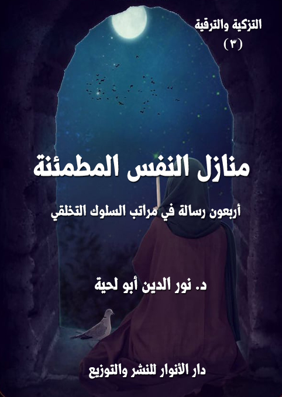

الكتاب: منازل النفس المطمئنة
الوصف: أربعون رسالة في مراتب السلوك التخلقي
السلسلة: رسائل التزكية والترقية
المؤلف: أ.د. نور الدين أبو لحية
الناشر: دار الأنوار للنشر والتوزيع
الطبعة: الأولى، 1441 هـ
عدد الصفحات: 450
ISBN: 978-620-3-85906-5
لمطالعة الكتاب من تطبيق مؤلفاتي المجاني وهو أحسن وأيسر: هنا

التعريف بالكتاب
يحاول هذا الكتاب التعرف على الخصال والمكارم التي تتصف بها النفس المطمئنة، والتي جرى التعبير عنها في الكتب المختصة بهذا الجانب بالمنازل والمقامات والأحوال، لأن النفس تنزل فيها، وتقيم عندها، وتتحلى بها، وتظهر علاماتها عليها.
وقد اخترنا منها أربعين صفة تجمع أكثر أو كل ما ذكره العلماء في منازل السائرين، وما يظهر أنه زائد عليها هو في الحقيقة مندرج ضمن بعضها.
وقد حاولنا ربط المعارف والقيم المتعلقة بهذا الجانب بالمصادر المقدسة من الكتاب والسنة، وما روي عن أئمة الهدى مما يؤكد ذلك، أو يفصله أو يبين كيفية تنفيذه، أو يساعد عليها.
كما أنا انتقينا من كلام العلماء والحكماء ما رأيناه متوافقا مع تلك المصادر.. ونبهنا إلى الدخن الموجود في بعضها حتى لا تتحول التزكية عن مقصودها الشرعي.
وكما تعودنا في هذه السلسلة من مزج الحقائق العلمية بالمواعظ والرقائق؛ فقد انتقينا ما نراه مناسبا لذلك من خلال حديث الشيخ مع مريده الصادق، ووصيته ونصحه له كل حين.
منازل النفس المطمئنة (6)
يحاول هذا الكتاب التعرف على الخصال والمكارم التي تتصف بها النفس المطمئنة، والتي جرى التعبير عنها في الكتب المختصة بهذا الجانب بالمنازل والمقامات والأحوال، لأن النفس تنزل فيها، وتقيم عندها، وتتحلى بها، وتظهر علاماتها عليها.
وقد اخترنا منها أربعين صفة تجمع أكثر أو كل ما ذكره العلماء في منازل السائرين، وما يظهر أنه زائد عليها هو في الحقيقة مندرج ضمن بعضها؛ فهم مثلا يذكرون الكثير من المنازل المرتبطة بالحب.. وهي جميعا تؤول إليه، أو تنتج عنه، ولذلك كان الحديث عنه كافيا عن غيره من التفاصيل.. وهكذا في التوكل والتوبة والصبر والشكر والرضا وغيرها من المقامات والمنازل.
وقد حاولنا ـ كما في سائر السلسلة ـ ربط المعارف والقيم المتعلقة بهذا الجانب بالمصادر المقدسة من الكتاب والسنة، وما روي عن أئمة الهدى مما يؤكد ذلك، أو يفصله أو يبين كيفية تنفيذه، أو يساعد عليها.
كما أنا انتقينا من كلام العلماء والحكماء ما رأيناه متوافقا مع تلك المصادر المعصومة المقدسة.. وقد نبهنا إلى الدخن الموجود في بعض كلامهم حتى لا تتحول التزكية عن مقصودها الشرعي.
وكما تعودنا في هذه السلسلة من مزج الحقائق العلمية بالمواعظ والرقائق؛ فقد انتقينا ما نراه مناسبا لذلك من خلال حديث الشيخ مع مريده الصادق، ووصيته ونصحه له كل حين.
وتجنبنا الكثير من تفاصيل المسائل التي لا علاقة لها بالعمل، ولا دليل يدل عليها من العلم، وإنما هي مجرد اجتهادات، لا يضر جهلها، وقد لا ينفع العلم بها.
منازل النفس المطمئنة (7)
وننبه إلى أنا لم نرتب المنازل بترتيب خاص كما جرت به العادة في الكتب المتعلقة بهذا الجانب، لأنا رأينا أن في ذلك تكلفا كبيرا، بالإضافة إلى أن المنازل لا يلغي بعضها بعضا، وإنما تتكامل فيما بينها.
ومثل ذلك الحديث عن درجات كل منزلة، أشرنا إلى مجامعها ـ كما ذكره الحكماء ـ من غير تفصيل في ذلك لأن الدرجات لا نهاية لها.. ويمكن استنباط الكثير منها من خلال المظاهر التي تتعلق بها.
ومثل ذلك اجتنبنا الحديث عن تلك التعريفات الغريبة التي وردت في كتب الرقائق، والتي لا تزيد القارئ لها إلا بعدا عن حقيقتها.. ومثل ذلك تلك الشطحات والطامات التي ـ وإن أحسنا الظن بأهلها ـ إلا أننا لا نستطيع أن نوافقها، خاصة عند تعارضها في الظاهر مع النصوص المقدسة.
منازل النفس المطمئنة (8)
كتبت إلي ـ أيها المريد الصادق ـ تشكرني على تلك الرسائل التي أجبتك فيها عن أسئلتك حول مناهج التزكية ومدارسها، وأخبرتني أنك باستعمالك لها، أصبحت أكثر طمأنينة لحقائق الإيمان، وأكثر شوقا للقيم العظيمة التي يدعو إليها.
ولذلك طلبت مني أن أزودك بالمعارف التي تفيدك في الترقي إلى عالم النفس المطمئنة، ذلك العالم الذي أشاد به القرآن الكريم، واعتبر أصحابه من الراضين المرضيين، الذين كتب لهم الفلاح والفوز في الدارين.
وقد طلبت مني أن أجيبك عن أسئلة كثيرة حول هذه المرتبة من مراتب النفس، حتى تسعى للتحقق بها، باستعمال المناهج التي كنت قد حدثتك عنها.
وكان أول سؤال لك حولها مرتبط ببيان الفروق بينها وبين النفس الأمارة واللوامة.. مما ييسر عليك بعد ذلك التعرف على خصائصها، ومراتبها، ومنازلها.
وجوابا على سؤالك الوجيه أذكر لك أن قداسة القرآن الكريم تقتضي قداسة الألفاظ والتراكيب التي يستعملها؛ فهي ليست ألفاظا ولا تراكيب اعتباطية، بل هي منتقاة بدقة، بحيث يمكن للمتبحر فيها، والمتدبر لها أن يكتشف الكثير من الحقائق.
ولذلك فإن الفروق بين النفوس تتجلى من خلال المفردات الدالة عليها..
فالنفس الأمارة بالسوء، نفس تنزل الدركات الدنيا من عالم النفس، ولذلك لا ترى إلا السوء والمنكر والأهواء والشياطين.. ولذلك لا تأمر إلا بما تراه وتعيشه، وتعتبر كل شيء خلاف ذلك غريبا عليها.
وهي أشبه ما تكون بالخنافس والحشرات التي تعيش على القاذورات، وتستحلي تلك المعيشة؛ فلا ترى صورة للحياة غيرها.
منازل النفس المطمئنة (9)
وبذلك، فهي مطمئنة للسوء والمنكر وكل المثالب التي تتحلى بها، بل ترى أنه لا يمكن أن تكون للحياة صورة غير تلك الصورة.
وأما النفس اللوامة؛ فهي النفس التي شعرت بتلك الروائح النتنة للنفس الأمارة، بعد أن أشرقت عليها بعض أنوار النفس المطمئنة، ولذلك راحت تستقذر استسلامها لمقتضياتها، وقد جعلها ذلك تمارس كل الوسائل والمناهج التي تخرج بها من سيطرتها، وتتحرر بها من ربقها.
وأما النفس المطمئنة؛ فهي النفس المنتصرة في حربها على النفس الأمارة، وهي بذلك نفس متحررة من عالم الدنس والمستنقعات والقاذورات والمثالب..
وهي نفس متحررة من الشياطين الذين كانوا يوسوسون لها، ويستحوذون عليها.
وهي لذلك تنتقل من ذلك العالم المدنس إلى عالم جديد مملوء بالأنوار، جزاء وفاقا على مجاهداتها.. ولمشاكلتها لذلك العالم.
ذلك أن الله تعالى بعدله ورحمته لخلقه، ينزل كل أحد في المرتبة التي يرضاها ويتقبلها، وله الاستعداد التام للتعامل معها.
وكما أن عالم النفس الأمارة مملوء بـ {شَيَاطِينَ الْإِنْسِ وَالْجِنِّ يُوحِي بَعْضُهُمْ إِلَى بَعْضٍ زُخْرُفَ الْقَوْلِ غُرُورًا} [الأنعام: 112]؛ فإن عالم النفس المطمئنة مملوء بالملائكة والأولياء والصالحين.. كما قال تعالى: {إِنَّ الَّذِينَ قَالُوا رَبُّنَا اللَّهُ ثُمَّ اسْتَقَامُوا تَتَنَزَّلُ عَلَيْهِمُ الْمَلَائِكَةُ أَلَّا تَخَافُوا وَلَا تَحْزَنُوا وَأَبْشِرُوا بِالْجَنَّةِ الَّتِي كُنْتُمْ تُوعَدُونَ (30) نَحْنُ أَوْلِيَاؤُكُمْ فِي الْحَيَاةِ الدُّنْيَا وَفِي الْآخِرَةِ وَلَكُمْ فِيهَا مَا تَشْتَهِي أَنْفُسُكُمْ وَلَكُمْ فِيهَا مَا تَدَّعُونَ} [فصلت: 30، 31]
وكما أن عالم النفس الأمارة مملوء بالضيق النفسي الذي أشار إليه قوله تعالى: {وَمَنْ أَعْرَضَ عَنْ ذِكْرِي فَإِنَّ لَهُ مَعِيشَةً ضَنْكًا} [طه: 124]؛ فإن عالم النفس المطمئنة عالم واسع
منازل النفس المطمئنة (10)
ممتلئ بالبهجة والسكينة والطمأنينة، كما قال تعالى: {مَنْ عَمِلَ صَالِحًا مِنْ ذَكَرٍ أَوْ أُنْثَى وَهُوَ مُؤْمِنٌ فَلَنُحْيِيَنَّهُ حَيَاةً طَيِّبَةً وَلَنَجْزِيَنَّهُمْ أَجْرَهُمْ بِأَحْسَنِ مَا كَانُوا يَعْمَلُونَ} [النحل: 97]
وهكذا؛ فإن عالم النفس المطمئنة مختلف تماما عن عالم النفس الأمارة، وعالم النفس اللوامة.
وإن شئت تشبيها تقريبيا لذلك.. فإن مثل هذه النفوس مثل شخص فقير مريض ممتلئ بالكآبة يعيش بين اللصوص والمجرمين.. ثم فجأة يظهر له أن يفر من بين أيديهم، ويستعمل كل الوسائل التي تعينه على ذلك.. وبعد جهد شديد يستطيع أن يصل إلى مدينة مملوءة بالحكمة والصلاح.. تتوفر فيها كل المرافق الحضارية.. ويتاح له فيها أن يعالج نفسه وروحه وكل لطائفه.. ويتاح له فيها أن يتنعم بكل ما حرم منه في ذلك المحل الذي كان فيه.
فهكذا النفس ـ أيها المريد الصادق ـ في مراتبها الثلاث.. فهي في مرتبتها الأولى مرتبة النفس الأمارة مملوءة بالأمراض والكآبة لأنها تعيش في العالم الأسفل الغريب عنها، عالم الظلمات، ومع الذين آثروا أن يعيشوا في ذلك العالم من شياطين الإنس والجن.
ثم إنها بعد بغضها ذلك العالم، ومحاولتها الفرار منه، تتحول إلى نفس لوامة، تستعمل كل الوسائل لتخرج من تلك المستنقعات التي تسكن فيها، ولتمحو كل الآثار التي علقت بها.
ثم إنها بعد تمكنها من الفرار ووصولها إلى مدينة الصالحين تتحلى بأخلاقهم وطباعهم، وتطمئن بها الحياة في تلك المدائن الجميلة.
وبناء على هذا المثال التقريبي؛ فإن أول منزلة من منازل النفس المطمئنة هي [التحرر والخلاص]، ذلك أنها المنزلة التي تمكنها من التخلص من القيود والأغلال التي كانت تحبسها في تلك المستنقعات، وفي صحبة الشياطين.
منازل النفس المطمئنة (11)
ذلك أن الله تعالى بحكمته جعل في نفس الإنسان الكثير من القوى واللطائف والطاقات التي تقربها من العوالم المختلفة، لتختار بعد ذلك ما يتناسب معها، ومع طباعها، ومن خلال ذلك تتشكل حقيقتها وجوهرها.
وقد أشار إلى هذا ما روي في بعض الآثار أن بعضهم سأل حكيما، فقال: (أريد أن تعرّفني نفسي)، فقال الحكيم: أي نفس تريد؟.. قال: وهل هي إلّا نفس واحدة؟.. فقال الحكيم: (إنما هي أربع أنفس: النامية النباتية، والحسية الحيوانية، والناطقة القدسية، والكلية الإلهية. ولكل واحدة من هذه خمس قوى وخاصتان.. فالنامية النباتية: لها خمس قوى ماسكة وجاذبة وهاضمة ودافعة ومربية، ولها خاصتان الزيادة والنقصان، وانبعاثها من الكبد وهي أشبه الأشياء بنفس الحيوان.. والحيوانية الحسية: ولها خمس قوى: سمع وبصر وشم وذوق ولمس. ولها خاصتان: الرضا والغضب، وانبعاثها من القلب، وهي أشبه الأشياء بنفس السباع.. والناطقة القدسية: ولها خمس قوى: فكر وذكر وعلم وحلم ونباهة، وليس لها انبعاث، وهي أشبه الأشياء بنفس الملائكة، ولها خاصتان النزاهة والحكمة.. والكلية الإلهية، ولها خمس قوى، بقاء في فناء، ونعيم في شقاء، وعزّ في ذل، وفقر في غنى، وصبر في بلاء. ولها خاصتان: الحلم والكرم. وهذه التي مبدأها من الله وإليه تعود) (1)
وهذا الخبر، وإن لم يكن دقيقا من جهة روايته، إلا أن معناه صحيح.. ففي الإنسان كل القوى التي ذكرها..
فالإنسان يشبه النبات والحيوان في صفات كثيرة.. حتى أن هناك من البشر من لم
__________
(1) روي الخبر منسوبا إلى الإمام علي في [بحار الأنوار: 61 / 84]، وهو ظاهر في عدم صحة نسبته إليه، ولهذا ذكرناه باعتبار معناه، لا باعتبار سنده، وقد علق عليه المجلسي بقوله: (هذه الاصطلاحات لم تكد توجد في الأخبار المعتبرة المتداولة، وهي شبيهة بأضغاث أحلام الصوفية)
منازل النفس المطمئنة (12)
يخرج ولو في لحظة من حياته من عالم النبات والحيوان.. ذلك أنه لا يرى الحياة إلا غذاء ونموا..
وهناك من يترقى.. لكن لا ليعيش عالم الإنسان الرفيع المكرم، وإنما ليعيش مع الشياطين.. ولذلك يستعمل العقل الذي أتيح له ليترقى من خلاله وسيلة للخداع والمكر والحيلة مثل الشياطين تماما.
وهناك من يترقى ليعيش حقيقته الإنسانية وبدرجاتها المختلفة..
وقد اتفق على هذا كل الحكماء، وسأسوق لك من أقوال بعضهم ما يقرر لك تلك الحقائق، ويؤكدها، ويحول من ذلك المثل الذي ضربته لك حقيقة واقعة تعيشها كل النفوس من حيث لا تشعر.
فقد قال بعضهم معاتبا أولئك الذين يريدون معرفة الله، أو يتطلعون إلى الحقائق العالية من غير معرفة أنفسهم، والقوى التي تسيطر عليها: (ليس شيء أقرب إليك من نفسك، فإذا لم تعرف نفسك، فكيف تعرف ربك؟) (1)
ثم رد على أولئك الذين يتوهمون أن معرفة النفس قاصرة على معرفة ما بدا منها للعيان؛ فقال: (فإن قلت: إني أعرف نفسي! فإنما تعرف الجسم الظاهر، الذي هو اليد والرجل والرأس والجثة، ولا تعرف ما في باطنك من الأمر الذي به إذا غضبت طلبت الخصومة، وإذا جعت طلبت الأكل، وإذا عطشت طلبت الشرب.. والدواب تشاركك في هذه الأمور.. فالواجب عليك أن تعرف نفسك بالحقيقة؛ حتى تدرك أي شيء أنت، ومن أين جئت إلى هذا المكان، ولأي شيء خلقت، وبأي شيء سعادتك، وبأي شيء شقاؤك) (2)
ثم ذكر الصفات الكثيرة التي تتشكل منها النفس، فقال: (لقد جمعت في باطنك
__________
(1) كيمياء السعادة، أبو حامد الغزالي، (121)
(2) كيمياء السعادة، أبو حامد الغزالي، (121)
منازل النفس المطمئنة (13)
صفات: منها صفات البهائم، ومنها صفات السباع، ومنها صفات الشياطين، ومنها صفات الملائكة، فالروح حقيقة جوهرك وغيرها غريب منك، وعارية عندك.. فالواجب عليك أن تعرف هذا، وتعرف أن لكل واحد من هؤلاء غذاء وسعادة.. فإن سعادة البهائم في الأكل، والشرب، والنوم، فإن كنت منهم فاجتهد في أعمالهم.. وسعادة السباع في الضرب، والفتك.. وسعادة الشياطين في المكر، والشر، والحيل. فإن كنت منهم فاشتغل باشتغالهم) (1)
ثم ذكر المرتبة العالية، مرتبة النفس المطمئنة، تلك التي يترقى فيها الإنسان إلى حقيقته التي خلقه الله عليها، ولأجلها، فقال: (وسعادة الملائكة في مشاهدة جمال الحضرة الربوبية، وليس للغضب والشهوة إليهم طريق؛ فإن كنت من جوهر الملائكة، فاجتهد في معرفة أصلك؛ حتى تعرف الطريق إلى الحضرة الإلهية، وتبلغ إلى مشاهدة الجلال والجمال، وتخلص نفسك من قيد الشهوة والغضب، وتعلم أن هذه الصفات لأي شيء ركبت فيك؛ فما خلقها الله تعالى لتكون أسيرها، ولكن خلقها حتى تكون أسرك، وتسخرها للسفر الذي قدامك، وتجعل إحداها مركبك، والأخرى سلاحك؛ حتى تصيد بها سعادتك. فإذا بلغت غرضك فقاوم بها تحت قدميك، وارجع إلى مكان سعادتك. وذلك المكان قرار خواص الحضرة الإلهية، وقرار العوام درجات الجنة) (2)
وبذلك؛ فإن النفس المطمئنة ـ أيها المريد الصادق ـ هي تلك النفس التي تحررت من كل تلك القيود التي كانت تقيدها، وتحول بينها وبين الكمال المتاح لها.
وإن شئت أن تعرف سر ذلك؛ فاعلم أن الله تعالى ـ ليتيح للإنسان حرية الاختيار ـ فطره على صفات كثيرة، يمكنه من خلالها أن ينتقي ما يشاء منها، ليعين حقيقته من خلال
__________
(1) كيمياء السعادة، أبو حامد الغزالي، (121)
(2) كيمياء السعادة، أبو حامد الغزالي، (121)
منازل النفس المطمئنة (14)
ذلك الاختيار.
والأمر في ذلك شبيه بتلك الفرص التي تتاح للإنسان في الدنيا ليختار التخصص المناسب والوظيفة المناسبة، والبيئة المناسبة وهكذا.. في كل شيء يكون له فيه حرية الاختيار.
وقد أشار إلى هذا قوله تعالى في بيان حقيقة الإنسان: {وَإِذْ قَالَ رَبُّكَ لِلْمَلائِكَةِ إِنِّي جَاعِلٌ فِي الْأَرْضِ خَلِيفَةً قَالُوا أَتَجْعَلُ فِيهَا مَنْ يُفْسِدُ فِيهَا وَيَسْفِكُ الدِّمَاءَ وَنَحْنُ نُسَبِّحُ بِحَمْدِكَ وَنُقَدِّسُ لَكَ قَالَ إِنِّي أَعْلَمُ مَا لا تَعْلَمُونَ} (البقرة:30)
ففي هذه الآية إخبار إلهي عن سر ما يكتنزه الإنسان من صفات تؤهله للبر، كما تؤهله للإثم، ولهذا عندما ذكر الله للملائكة الخلافة ذكروا الإثم، وسفك الدماء، ذلك أن الخلافة تقتضي الحرية.. والحرية تقتضي الاختيار.. والاختيار يقتضي أن تكون هناك فرص مختلفة متعددة، وسبل متنوعة.. وكل ذلك يقتضي أن يكون في الإنسان ميل متساو لكل الطرق ولكل الاتجاهات حتى يحدد بعد ذلك الخيار الذي يتناسب معه ومع طبيعته وعزيمته وإرادته.
لقد ذكر الله ذلك فقال عند حديثه عن الإنسان، فقال: {إِنَّا خَلَقْنَا الْإِنْسَانَ مِنْ نُطْفَةٍ أَمْشَاجٍ نَبْتَلِيهِ فَجَعَلْنَاهُ سَمِيعًا بَصِيرًا (2) إِنَّا هَدَيْنَاهُ السَّبِيلَ إِمَّا شَاكِرًا وَإِمَّا كَفُورًا (3)} (الإنسان)
انظر ـ أيها المريد الصادق ـ كيف ربط الله تعالى بين السمع والبصر وبين الهداية والضلال.. فكما أن السمع والبصر يتيحان لنا أن نستعملهما في الخير والشر.. فهكذا باقي القوى واللطائف..
ولهذا يذكر الله تعالى استعدادات الإنسان ـ كإنسان ـ إلى جميع أنواع الإثم، فقد أخبر
منازل النفس المطمئنة (15)
عن استعداده لليأس والكفر، فقال: {وَلَئِنْ أَذَقْنَا الْأِنْسَانَ مِنَّا رَحْمَةً ثُمَّ نَزَعْنَاهَا مِنْهُ إِنَّهُ لَيَؤُوسٌ كَفُورٌ} (هود:9)، وقال: {لا يَسْأَمُ الْأِنْسَانُ مِنْ دُعَاءِ الْخَيْرِ وَإِنْ مَسَّهُ الشَّرُّ فَيَؤُوسٌ قَنُوطٌ) (فصلت:49)
وأخبر عن ظلمه الممزوج بكفره، فقال: {إِنَّ الْأِنْسَانَ لَظَلُومٌ كَفَّارٌ} (ابراهيم:34)
وأخبر عن ظلمه الممزوج بجهله، فقال: {إِنَّا عَرَضْنَا الْأَمَانَةَ عَلَى السَّمَاوَاتِ وَالْأَرْضِ وَالْجِبَالِ فَأَبَيْنَ أَنْ يَحْمِلْنَهَا وَأَشْفَقْنَ مِنْهَا وَحَمَلَهَا الْأِنْسَانُ إِنَّهُ كَانَ ظَلُوماً جَهُولاً} (الأحزاب:72)
وأخبر عن خصومته، فقال: {خَلَقَ الْأِنْسَانَ مِنْ نُطْفَةٍ فَإِذَا هُوَ خَصِيمٌ مُبِينٌ} (النحل:4)
وأخبر عن عجلته، فقال: {وَيَدْعُ الْأِنْسَانُ بِالشَّرِّ دُعَاءَهُ بِالْخَيْرِ وَكَانَ الْأِنْسَانُ عَجُولاً} (الاسراء:11)، وقال: {خُلِقَ الْأِنْسَانُ مِنْ عَجَلٍ سَأُرِيكُمْ آيَاتِي فَلا تَسْتَعْجِلُونِ} (الانبياء:37)
وأخبر عن بخله، فقال: {قُلْ لَوْ أَنْتُمْ تَمْلِكُونَ خَزَائِنَ رَحْمَةِ رَبِّي إِذاً لَأَمْسَكْتُمْ خَشْيَةَ الْأِنْفَاقِ وَكَانَ الْأِنْسَانُ قَتُوراً} (الاسراء:100)
وأخبرعن جدله، فقال: {وَلَقَدْ صَرَّفْنَا فِي هَذَا الْقُرْآنِ لِلنَّاسِ مِنْ كُلِّ مَثَلٍ وَكَانَ الْأِنْسَانُ أَكْثَرَ شَيْءٍ جَدَلاً} (الكهف:54)
وأخبر عن هلعه، فقال: {إِنَّ الْأِنْسَانَ خُلِقَ هَلُوعاً} (المعارج:19)
وكل هذه الاستعدادات الآثمة تختزن في ذاتها ما يقابلها من الاستعدادات الطيبة الصالحة، ذلك أن الله الحكيم الرحيم لا يخلق الشر المجرد عن كل خير (1).. بل هو يخلق
__________
(1) ذكرنا هذه المسألة بتفصيل في رسالة (أسرار الأقدار) من سلسلة (رسائل السلام)
منازل النفس المطمئنة (16)
الخير.. ومن الخير ما يتحول إلى شر.. كما أن من الطعام ما يتسنه ويصبح غير صالح للأكل.. مع أنه في أصل طبيعته طيب وصالح.
وهكذا، فكما أن الطعام يتسنه، فكذلك الإنسان يمكن أن يتسنه.. وكما أن الطعام يتسنه بالغفلة عنه؛ فكذلك الإنسان كلما غفل عن النظر في حقيقته وتقويمها وربطها بمصدرها الأعلى كلما تمكنت الآفات منه، وانحرفت به بعد ذلك.. لقد أشار القرآن الكريم إلى ذلك، فقال: {وَلَا تَكُونُوا كَالَّذِينَ نَسُوا اللَّهَ فَأَنْسَاهُمْ أَنْفُسَهُمْ أُولَئِكَ هُمُ الْفَاسِقُونَ (19)} (الحشر)
وهذه الآية الكريمة تشير إلى أنه لا يمكن للإنسان أن يذكر نفسه أو يعرفها، وهو لا يذكر ربه ولا يعرفه؛ فحقيقة الإنسان لا يمكن أن تتجلى له إلا عندما يتصل بربه.
ولذلك؛ فإن التربية الخلقية وحدها لا تكفي ليتزكى الإنسان، كما يزعم الغافلون من أصحاب الفلسفات المادية، وإنما يحتاج أيضا إلى التربية الروحية التي تصله بربه، والتي ترقى بأخلاقه إلى المراتب العالية التي لا يمكن أن يعرفها من يعزلون الله عن الأخلاق.
أعلم ـ أيها المريد الصادق ـ أنك لم تفهم بعد سر التحرر والخلاص الذي يتحقق للنفس المطمئنة.. ولذلك سأضرب لك مثالا يقرب لك ذلك.
أنت تعلم أن الله تعالى وصف نفس الإنسان بكونها شحيحة، كما قال تعالى: {وَأُحْضِرَتِ الْأَنْفُسُ الشُّحَّ} (النساء:128)، وهذه الصفة تدعو أصحاب النفوس الأمارة إلى الحرص والبخل وكل المثالب التي ذكرتها لك.
لكن صاحب النفس المطمئنة المتحرر من كل تلك المثالب يحول من هذه الصفة وسيلة للتزكية والترقية.. ذلك أنها تدعوه إلى الحرص على ما آتاه الله من نعم، ليضعها في محلها الصحيح، ولا يدعها للآفات، ولهذا قال رسول الله صلى الله عليه وآله وسلم.. وهو يحض على هذا الشح
منازل النفس المطمئنة (17)
الإيجابي لبعض صحابته حين طلب أن يوصي بجميع ماله: (الثلث والثلث كثير، إنك أن تذر ورثتك أغنياء، خير من أن تذرهم عالة يتكففون الناس، وإنك لن تنفق نفقة، تبتغى بها وجه الله، إلا أجرت بها، حتى ما تجعل فى فى امرأتك) (1)
وهكذا صفة الجدل التي وصف بها القرآن الكريم النفس الإنسانية؛ فصاحب النفس الأمارة تجعله يستعملها في الجدل في الله، وفي الحقائق والتلاعب بها، كما قال تعالى: {يُجَادِلُونَكَ فِي الْحَقِّ بَعْدَ مَا تَبَيَّنَ كَأَنَّمَا يُسَاقُونَ إِلَى الْمَوْتِ وَهُمْ يَنْظُرُونَ} [الأنفال: 6]، وقال: {وَمِنَ النَّاسِ مَنْ يُجَادِلُ فِي اللَّهِ بِغَيْرِ عِلْمٍ وَيَتَّبِعُ كُلَّ شَيْطَانٍ مَرِيدٍ} [الحج: 3]، وقال: {وَمِنَ النَّاسِ مَنْ يُجَادِلُ فِي اللَّهِ بِغَيْرِ عِلْمٍ وَلَا هُدًى وَلَا كِتَابٍ مُنِيرٍ (8) ثَانِيَ عِطْفِهِ لِيُضِلَّ عَنْ سَبِيلِ اللَّهِ لَهُ فِي الدُّنْيَا خِزْيٌ وَنُذِيقُهُ يَوْمَ الْقِيَامَةِ عَذَابَ الْحَرِيقِ} [الحج: 8، 9]
بينما صاحب النفس المطمئنة يستعملها في عدم الخضوع للباطل، وفي نصرة الحق، ولهذا دعا الله تعالى إلى استعمال الجدل في الدعوة إليه، فقال: {ادْعُ إِلَى سَبِيلِ رَبِّكَ بِالْحِكْمَةِ وَالْمَوْعِظَةِ الْحَسَنَةِ وَجَادِلْهُمْ بِالَّتِي هِيَ أَحْسَنُ} [النحل: 125]
بل وصف بذلك إبراهيم عليه السلام، وأثنى عليه، فقال: {فَلَمَّا ذَهَبَ عَنْ إِبْرَاهِيمَ الرَّوْعُ وَجَاءَتْهُ الْبُشْرَى يُجَادِلُنَا فِي قَوْمِ لُوطٍ (74) إِنَّ إِبْرَاهِيمَ لَحَلِيمٌ أَوَّاهٌ مُنِيبٌ} [هود: 74، 75]
وهكذا الكفر ـ أيها المريد الصادق ـ والذي وصف الله تعالى به الإنسان؛ فإنه ـ عند صاحب النفس الأمارة ـ كفر بالله، وبالحقائق، وتغطية لها، بينما هو عند صاحب النفس المطمئنة كفر بما يخالف الحق، كما قال تعالى في الثناء على إبراهيم عليه السلام وأصحابه: {قَدْ كَانَتْ لَكُمْ أُسْوَةٌ حَسَنَةٌ فِي إِبْرَاهِيمَ وَالَّذِينَ مَعَهُ إِذْ قَالُوا لِقَوْمِهِمْ إِنَّا بُرَآءُ مِنْكُمْ وَمِمَّا تَعْبُدُونَ
__________
(1) رواه البخاري ومسلم.
منازل النفس المطمئنة (18)
مِنْ دُونِ اللَّهِ كَفَرْنَا بِكُمْ وَبَدَا بَيْنَنَا وَبَيْنَكُمُ الْعَدَاوَةُ وَالْبَغْضَاءُ أَبَدًا حَتَّى تُؤْمِنُوا بِاللَّهِ وَحْدَهُ} [الممتحنة: 4]
ولهذا؛ فإن صاحب النفس المطمئنة ـ أيها المريد الصادق ـ لن يخرج عن طبيعته الإنسانية، وإنما يكتفي بتحريرها من كل تلك المثالب التي علقت بها وشوهتها، وقيدته بسببها.
هذا جوابي على سؤالك ـ أيها المريد الصادق ـ وهو يتضمن أمهات الحقائق المرتبطة بالنفس المطمئنة؛ فاسع لأن تحرر نفسك من تلك القيود التي تكبلها، وتنتكس بها عن حقيقتها، لتعيش عالم الإنسان.. لا عالم الجماد والنبات والحيوان والشيطان.. فأنت أرقى منها جميعا.
منازل النفس المطمئنة (19)
كتبت إلي ـ أيها المريد الصادق ـ تسألني عما ورد في النصوص المقدسة من تقلب القلوب وتغيرها، وهل أن ذلك خاص بالنفوس الأمارة، أم أن النفوس المطمئنة يعتريها ذلك التغير والتبدل الذي يعتري غيرها من النفوس.
وجوابا على سؤالك الوجيه أذكر لك أنه مثلما تكون الإدارة المتحكمة في عالم السياسة والاقتصاد وغيرها هي المحددة لوجهتها، والضابطة لسلوكاتها ومواقفها؛ فكذلك الأمر في عالم النفس.
فقد جعل الله تعالى بحكمته في خلقه للطائف الإنسانية إدارة وقيادة تتحكم فيها، وبناء على تلك الإدارة تفترق النفوس، وتتميز.. فالنفوس لا تختلف في مكونها، وإنما في الجهة التي تديرها، وتضبط تصرفاتها.
وقد سمى القرآن الكريم تلك الجهة قلبا.. لا بمعناها الحرفي الجسدي الذي نعرفه؛ وإنما بمعناها الآخر، والذي يعني الجهاز المتحكم في الإنسان، والذي يتخذ القرارات المناسبة.
ولعله سمي كذلك لكون القلب هو الجهاز الذي يرسل الدم إلى جميع الجسم، وبذلك صار كأنه المتحكم فيه، ولذلك إن مرض القلب أصاب المرض سائر الجسد، وتوقفه عن العمل يعني الموت.
وهذا القلب الذي جعله الله تعالى مديرا للنفس، هو نفس ما يطلق عليه الفلاسفة: (النفس الناطقة، والروح الباطنة، والنفس الحيوانية المركبة، وهي النفس المدركة العالمة من الإنسان والمطالبة والمعاقبة) (1)
__________
(1) الكليات، الكفوي: ص 754.
منازل النفس المطمئنة (20)
ولذلك عرفه حكماء المسلمين بأنه (مصطلح على اللطيفة الربَّانية المرتبطة بالقلب الجسماني الصنوبري المودع من الصدر، وتلك اللطيفة هي حقيقة الإنسان) (1)
ونحن ـ أيها المريد الصادق ـ وإن كنا لا نعرف بالضبط علاقة تلك اللطيفة الربانية التي وكل الله تعالى لها إدارة النفس الإنسانية بالقلب الجسدي إلا أننا ـ من خلال إيماننا بدقة المصطلحات القرآنية ـ نوقن بأن لهما علاقة وطيدة.
ولكن ذلك لا يدعونا إلى أن نشغل بالنا بالبحث في مثل هذه المسائل ذلك أنها تستدعي معرفة حقيقة تلك اللطيفة، وهو مستحيل لأجهزتنا الحسية، ذلك أن تلك اللطيفة في الحقيقة ليست سوى روح الإنسان، والتي تتسمى بالتسميات المختلفة بحسب أدوارها ووظائفها.
وقد عبر بعض الحكماء عن ذلك، فقال: (أما سؤالك: ما حقيقة القلب؟ فلم يجئ في الشريعة أكثر من قول الله تعالى: {وَيَسْأَلُونَكَ عَنِ الرُّوحِ قُلِ الرُّوحُ مِنْ أَمْرِ رَبِّي وَمَا أُوتِيتُمْ مِنَ الْعِلْمِ إِلَّا قَلِيلًا} [الإسراء: 85].. لأن الروح من جملة القدرة الإلهية، وهو من عالم الأمر، قال الله عز وجل: {أَلَا لَهُ الْخَلْقُ وَالْأَمْرُ} [الأعراف: 54].. فالإنسان من عالم الخلق من جانب، ومن عالم الأمر من جانب؛ فكل شيء يجوز عليه المساحة والمقدار والكيفية فهو من عالم الخلق. وليس للقلب مساحة ولا مقدار؛ ولهذا لا يقبل القسمة، ولو قبل القسمة لكان من عالم الخلق، وكان من جانب الجهل جاهلا ومن جانب العلم عالما، وكل شيء يكون فيه علم وجهل فهو محال. وفي معنى آخر هو من عالم الأمر؛ لأن عالم الأمر عبارة عن شيء من الأشياء لا يكون للمساحة والتقدير طريق إليه) (2)
إذا عرفت هذا ـ أيها المريد الصادق ـ فاعلم أن كل التقلبات التي تحصل للإنسان،
__________
(1) التعريفات، الجرجاني: ص 203.
(2) كيمياء السعادة، (126)
منازل النفس المطمئنة (21)
سواء في جانبها الإيجابي أو جانبها السلبي مرتبطة بالقلب، كما ورد في الحديث عن رسول الله صلى الله عليه وآله وسلم أنه قال: (ألا وإن فى الجسد مضغة إذا صلحت صلح الجسد كله، وإذا فسدت فسد الجسد كله. ألا وهى القلب) (1)
وقال الإمام علي يصف القلوب وتنوعها: (أعجب ما في الإنسان قلبه وله مواد من الحكمة، وأضداد من خلافها، فإن سنح له الرجاء أذلّه الطمع، وإن هاج به الطمع أهلكه الحرص، وإن ملكه اليأس قتله الأسف، وإن عرض له الغضب اشتد به الغيظ، وإن سعد بالرضا نسي التحفظ، وإن ناله الخوف شغله الحذر، وإن اتسع له الأمن استلبته الغرّة، وإن جدّدت له النعمة أخذته العزة، وإن أصابته مصيبة فضحه الجزع، وإن استفاد مالاً أطغاه الغنى، وإن عضته فاقة شغله البلاء، وإن جهده الجوع قعد به الضعف، وإن أفرط في الشبع كظّته البطنة، فكل تقصير به مضرّ، وكل إفراط به مفسد) (2)
وقال الإمام الصادق: (منزلة القلب من الجسد بمنزلة الإمام من الناس، الواجب الطاعة عليهم، ألا ترى أنّ جميع جوارح الجسد شُرط للقلب وتراجمة له مؤدّية عنه: لأذنان والعينان والأنف والفم واليدان والرجلان والفرج، فإنّ القلب إذا همّ بالنظر فتح الرجل عينيه، وإذاهمّ بالاستماع حرّك أذنيه وفتح مسامعه فسمع، وإذا همّ القلب بالشمّ استنشق بأنفه، فأدّى تلك الرائحة إلى القلب، وإذا همّ بالنطق تكلم باللسان، وإذا همّ بالحركة سعت الرجلان، وإذا همّ بالشهوة تحرك الذكر، فهذه كلها مودّية عن القلب بالتحريك، وكذلك ينبغي للإمام أن يطاع للأمر منه) (3)
وبناء على ما ذكرت لك من قصدية الألفاظ القرآنية؛ فإن القلب لم يسم كذلك إلا
__________
(1) البخاري، ج 3، ص 53، مسلم، ج 3، ص 1221.
(2) بحار الأنوار: 67/ 52، والعلل 1/ 103.
(3) بحار الأنوار: 67/ 53، والعلل 1/ 103.
منازل النفس المطمئنة (22)
لتقلبه الشديد، بناء على كونه هو المختار الذي يختار ما يتناسب معه.. وبناء على كونه صاحب الإرادة الذي يحدد ما يريده بناء على رغبته.
وقد قال قال رسول الله صلى الله عليه وآله وسلم مشيرا إلى ذلك: (مثل القلب مثل الريشة تقلبها الرياح بفلاة) (1)، وتشبيهه بالريشة دليل على تقلبه الشديد، وخاصة إن كانت الرياح، وهي الابتلاءات والاختبارات والفتن شديدة.
وفي قوله صلى الله عليه وآله وسلم: (تقلبها الرياح بفلاة) أي بأرض خالية من العمران إشارة إلى خلو القلب من المكام التي تجعله أكثر هدوءا واستقرارا، وأقوى من أن تؤثر فيه الفتن، ذلك أن الرياح أشد تأثيرًا في الفلوات منها في العمران.
وفي جمع الرياح، بدل الريح، دلالة على كثرة الاختبارات الإلهية، التي تجعل القلب المنفعل لها كثير التقلب، إذ لو استمرت الريح لجانب واحد لم يظهر التقلب؛ كما يظهر من الرياح المختلفة.
ولهذا؛ فإن أول صفات النفس المطمئنة بعد نجاحها في تلك الاختبارات الإلهية، ثباتها واستقرارها وطمأنينتها وعدم تقلبها، لأنها استسلمت للحق، وسلمت له؛ فأعطاها الحق من القوة بحيث لا تتقلب ولا تتبدل، بخلاف تلك النفس التي وصف الله تعالى أصحابها، فقال: {وَمِنَ النَّاسِ مَنْ يَعْبُدُ اللَّهَ عَلَى حَرْفٍ فَإِنْ أَصَابَهُ خَيْرٌ اطْمَأَنَّ بِهِ وَإِنْ أَصَابَتْهُ فِتْنَةٌ انْقَلَبَ عَلَى وَجْهِهِ خَسِرَ الدُّنْيَا وَالْآخِرَةَ ذَلِكَ هُوَ الْخُسْرَانُ الْمُبِينُ} [الحج: 11]
وقد عبر الله تعالى في الآية الكريمة عن الاستقرار والقبول بالطمأنية، وذلك دليل على أن النفس المطمئنة نفس ثابتة، لأنها تخلصت من المزاجية والأهواء المتقلبة، وإنما خضعت للحق، ولمعاييره وموازينه؛ فصارت هي المتحكمة فيها.
__________
(1) ابن ماجه، برقم: (88)
منازل النفس المطمئنة (23)
ولكن ذلك ـ أيها المريد الصادق ـ لا يعني العصمة؛ كان رسول الله صلى الله عليه وآله وسلم ـ مع عصمته المطلقة ـ يقول: (يا مقلب القلوب ثبت قلبي على دينك) فقيل له في ذلك؟ قال: (إنه ليس آدمي إلا وقلبه بين إصبعين من أصابع الله) (1)
وكان يقول في دعائه: (اللهمّ إنّي أسألك الثّبات في الأمر والعزيمة على الرّشد، وأسألك شكر نعمتك، وحسن عبادتك، وأسألك قلبا سليما ولسانا صادقا، وأسألك من خير ما تعلم وأعوذ بك من شرّ ما تعلم، وأستغفرك لما تعلم) (2)
لكن الله تعالى بلطفه عباده، يمن عليهم بالثبات، ذلك أنه من صفات النفس المطمئنة، ومن الأسباب الكبرى لاستقرارها الاستعانة بالله، وبتأييده، ولذلك تنجح في كل الاختبارات التي تحل بها، كما قال تعالى عن رسوله صلى الله عليه وآله وسلم: {وَلَوْلا أَنْ ثَبَّتْنَاكَ لَقَدْ كِدْتَ تَرْكَنُ إِلَيْهِمْ شَيْئاً قَلِيلاً} (الاسراء:74)
ومثله قوله تعالى عن المؤمنين: {يُثَبِّتُ اللَّهُ الَّذِينَ آمَنُوا بِالْقَوْلِ الثَّابِتِ فِي الْحَيَاةِ الدُّنْيَا وَفِي الْآخِرَةِ وَيُضِلُّ اللَّهُ الظَّالِمِينَ وَيَفْعَلُ اللَّهُ مَا يَشَاءُ} (ابراهيم:27)
إذا عرفت هذا ـ أيها المريد الصادق ـ فاعلم أنه ـ بحسب تقلب قلبك وثباته ـ تكون حقيقتك ومنزلتك في الدنيا والآخرة.. فمنازلها لا يحددها أحد سوى اختيارات قلبك.
وقد روي عن بعض الحكماء أنه سئل عن أوائل الطريق إلى الله تعالى، فقال: (التوبة، وذكر شرائطها، ثم يُنقل من مقام التوبة إلى مقام الخوف، ومن مقام الخوف إلى مقام الرجاء، ومن مقام الرجاء إلى مقام الصالحين، ومن مقام الصالحين إلى مقام المريدين، ومن مقام المريدين إلى مقام المطيعين، ومن مقام المطيعين إلى مقام المحبين، ومن مقام المحبين إلى مقام المشتاقين، ومن مقام المشتاقين إلى مقام الأولياء، ومن مقام الأولياء إلى مقام المقريبن.
__________
(1) ابن ماجه (199)
(2) النسائي (3/ 54) والترمذي (3407) وأحمد ـ المسند 4/ 125.
منازل النفس المطمئنة (24)
وذكروا لكل مقام عشر شرائط، إذا عاناها وأحكمها وحلَّت القلوب هذه المحلة أدمنت النظرة في النعمة، وفكرت في الأيادي والإحسان، فانفردت النفوس بالذكر، وجالت الأرواح في ملكوت عزه بخالص العلم به، واردةً على حياض المعرفة، إليه صادرة، ولِبابهِ قارعة، وإليه في محبته ناظرة) (1)
وقد حاول الحكماء ـ بناء على تجاربهم في التزكية والترقية ـ أن يحصوا الكثير من المنازل التي تستقر فيها القلوب، وسموها مقامات، وكلها من المكارم التي دعا إليها القرآن الكريم، وأخبر أنها محال المتقين.
ومن تلك التقسيمات حصرها في أربعة منازل، كل منزل منها يجمع الكثير من فروع الصفات الطيبة، وهي: (الإيمان، والتوبة، والزهد، والعبودية) (2)
ومنها حصرها في أربعة منازل، وهي: (التوبة، والورع، والزهد، والفقر، والصبر، والتوكل، والرضا) (3)
ومنها حصرها في تسعة منازل، هي: (التوبة، والصبر، والشكر، والرجاء، والخوف، والزهد، والتوكل، والرضا، والمحبة) (4)
ومنها حصرها في اثني عشر منزلا، وهي: (التوبة، والمحاسبة، والخوف، والرجاء، والصدق، والإخلاص، والصبر، والورع، والزهد، والرضا، والتوكل، والشكر) (5)
ومنها حصرها في ثلاثة عشر منزلا، وهي: (المحاسبة، والمراقبة، والمشاهدة،
__________
(1) حلية الأولياء، ج 10، ص 248.
(2) عوارف المعارف في هامش الإحياء: (4/ 261).
(3) اللمع، (ص:68 - 80).
(4) قوت القلوب: (1/ 178).
(5) حقائق عن التصوف، (ص:269).
منازل النفس المطمئنة (25)
والتحقق بالفناء، والبقاء، وعين اليقين، وحق اليقين، وكذلك التوبة، والورع، والزهد، والتوكل، والرضا، والتسليم)
ومنها حصرها في سبعة عشر منزلا، هي: (التوبة والزهد والصبر والفقر والتواضع والخوف والتقوى والإخلاص والشكر والتوكل والرضا واليقين والذكر والأنس والقرب والاتصال والمحبة)
ومنها حصرها في واحد وتسعون منزلا، كما عبر عن ذلك بعضهم، فقال (1):
ألقَوا إليه من صفات النفس... ما كان فيها قبل ذا من لَبْس
وهي إذا أنكرتَها فَلْتعرف... إحدى وتسعين وقيل: نيِّف
وهو يقصد ذلك تغيير صفات النفس المذمومة، والتي تتحول بالرياضة والمجاهدة إلى صفات محمودة، ذلك أن كل صفة مذمومة يقابلها صفة محمودة.
ومنها حصرها في مائة منزل (2)، مقسومة عشرة أقسام: قسم البدايات، ثمّ قسم الأبواب، ثمّ قسم المعاملات، ثمّ قسم الأخلاق، ثمّ قسم الأصول، ثمّ قسم الأودية، ثمّ قسم الأحوال، ثمّ قسم الولايات، ثمّ قسم الحقائق، ثمّ قسم النهايات.
فأمّا قسم البدايات فهي عشرة منازل: اليقظة. والتّوبة. والمحاسبة. والإنابة. والتفكّر. والتذكّر. والاعتصام. والفرار. والرياضة. والسّماع.
وأما قسم الأبواب، فهو عشرة منازل: الحزن والخوف والإشفاق والخشوع والإخبات والزّهد والورع والتبتّل والرّجاء والرّغبة.
__________
(1) من قصيدة (المباحث الأصلية).
(2) هذا التقسيم للمقامات هو لأبي إسماعيل الهروي، في كتابه [منازل السائرين]، والذي لقي اهتماما كبيرا عند الشراح بمختلف طوائفهم ومذاهبهم.
منازل النفس المطمئنة (26)
وأما قسم المعاملات، فهو عشرة منازل: الرّعاية والمراقبة والحرمة والإخلاص والتّهذيب والاستقامة والتّوكل والتفويض والثقة والتّسليم.
وأما قسم الأخلاق فهو عشرة منازل: الصّبر والرّضا والشّكر والحياء والصّدق والإيثار والخلق والتّواضع والفتوّة والانبساط.
وأما قسم الأصول، فهو عشرة منازل، وهي: القصد والعزم والإرادة والأدب واليقين والأنس والذّكر والفقر والغنى ومقام المراد.
وأما قسم الأودية، فهو عشرة منازل، وهي: الإحسان والعلم والحكمة والبصيرة والفراسة والتّعظيم والإلهام والسّكينة والطمأنينة والهمّة
وأما قسم الأحوال، فهو عشرة منازل وهي: المحبّة والغيرة والشّوق والقلق والعطش والوجد والدّهش والهيمان والبزق والذّوق.
وأما قسم الولايات، فهو عشرة منازل: اللّحظ والوقت والصّفاء والسّرور والسرّ والنّفس والغربة والغرق والغيبة والتّمكّن.
وأما قسم الحقائق، فهو عشرة منازل، وهي: المكاشفة والمشاهدة والمعاينة والحياة والقبض والبسط والسّكر والصّحو والاتّصال والانفصال.
وأما قسم النّهايات، فهو عشرة منازل، وهي: المعرفة والفناء والبقاء والتّحقيق والتّلبيس والوجود والتّجريد والتّفريد والجمع والتّوحيد.
وغيرها من التقسيمات الكثيرة، التي تحاول أن تعرف بالطريق إلى الله، وتبين المنازل التي ينزلها السالكون، ومثلها قد يوجد سائر الأديان التي سبقتنا، ففي علم السلوك المسيحي يقُسم الطريق إلى ثلاث مراحل: (مرحلة الطهارة، ومرحلة التنوير أو الاشراق،
منازل النفس المطمئنة (27)
ومرحلة الاتحاد) (1)
وفي بعض الديانات الهندية يمر السالك بخمس مراحل: (مرحلة الزاهد الناسك.. ومرحلة المعلم.. ومرحلة الداعية.. ومرحلة الكامل.. ومرحلة الامام وهو الذي تخلص من أدران المادة) (2)
وفي البوذية يقطع السالك اربع مراحل وهي: (العزلة التامة، ومحاربة غرائز النفس ورغباتها، والقضاء النهائي على مختلف الشهوات، والتحرر والانطلاق) (3)
لكن كل ذلك ـ أيها المريد الصادق ـ لا يساوي شيئا أمام ما ورد في النصوص المقدسة التي فصلت في ذكر المكارم ومنازلها وأحوالها، حتى أن المتأمل فيها لا يحتاج إلى غيرها.
ففي سورة البقرة، يصف الله تعالى المتقين بأنهم {الَّذِينَ يُؤْمِنُونَ بِالْغَيْبِ وَيُقِيمُونَ الصَّلَاةَ وَمِمَّا رَزَقْنَاهُمْ يُنْفِقُونَ (3) وَالَّذِينَ يُؤْمِنُونَ بِمَا أُنْزِلَ إِلَيْكَ وَمَا أُنْزِلَ مِنْ قَبْلِكَ وَبِالْآخِرَةِ هُمْ يُوقِنُونَ (4) أُولَئِكَ عَلَى هُدًى مِنْ رَبِّهِمْ وَأُولَئِكَ هُمُ الْمُفْلِحُونَ} [البقرة: 3 - 5]
وفي سورة المؤمنون، يصف الله تعالى المؤمنين المفلحين بأنهم: {قَدْ أَفْلَحَ الْمُؤْمِنُونَ (1) الَّذِينَ هُمْ فِي صَلَاتِهِمْ خَاشِعُونَ (2) وَالَّذِينَ هُمْ عَنِ اللَّغْوِ مُعْرِضُونَ (3) وَالَّذِينَ هُمْ لِلزَّكَاةِ فَاعِلُونَ (4) وَالَّذِينَ هُمْ لِفُرُوجِهِمْ حَافِظُونَ (5) إِلَّا عَلَى أَزْوَاجِهِمْ أَوْ مَا مَلَكَتْ أَيْمَانُهُمْ فَإِنَّهُمْ غَيْرُ مَلُومِينَ (6) فَمَنِ ابْتَغَى وَرَاءَ ذَلِكَ فَأُولَئِكَ هُمُ الْعَادُونَ (7) وَالَّذِينَ هُمْ لِأَمَانَاتِهِمْ وَعَهْدِهِمْ رَاعُونَ (8) وَالَّذِينَ هُمْ عَلَى صَلَوَاتِهِمْ يُحَافِظُونَ (9) أُولَئِكَ هُمُ الْوَارِثُونَ (10) الَّذِينَ يَرِثُونَ الْفِرْدَوْسَ هُمْ فِيهَا خَالِدُونَ} [المؤمنون: 1 - 11]
__________
(1) التصوف طريقة وتجربة ومذهبا لمحمد كمال جعفر ص (92)
(2) نشأة الفلسفة الصوفية لعرفان عبدالحميد ص (151)
(3) نشأة الفلسفة الصوفية لعرفان عبدالحميد ص (151 - 152)
منازل النفس المطمئنة (28)
وهكذا نجد الأوصاف الكثيرة التي يمكن أن تقتبس منها ـ أيها المريد الصادق ـ الكثير من المقامات التي تنزلها النفس المطمئنة.
ومثل ذلك ما ورد في السنة المطهرة؛ فقد روي أن رسول الله صلى الله عليه وآله وسلم قال: (عشرون خصلة في المؤمن، فإن لم يكن فيه لم يكمل إيمانه: الحاضرون الصلاة، والمسارعون إلى الزكاة، والحاجون لبيت الله الحرام، والصائمون في شهر رمضان، والمطعمون المسكين، والماسحون رأس اليتيم، المطهرون أظفارهم، المتّزرون على أوساطهم، الذين إن حدّثوا لم يكذبوا، وإن وعدوا لم يخلفوا، وإذا ائتمنوا لم يخونوا، وإن تكلموا صدقوا، رهبان الليل، وأسود النهار، وصائمون النهار، وقائمون الليل، لايؤذون جاراً، ولا يتأذّى بهم جار، الذين مشيهم على الأرض هوناً، وخطاهم إلى بيوت الأرامل، وعلى أثر الجنائز) (1)
وفي الأثر: (ناجى داود ربّه فقال: إلهي.. لكل مَلِك خزانة، فأين خزانتك؟.. فقال الله تعالى: (لي خزانة أعظم من العرش، وأوسع من الكرسي، وأطيب من الجنة، وأزين من الملكوت، أرضها المعرفة، وسماؤها الإيمان، وشمسها الشوق، وقمرها المحبة، ونجومها الخواطر، وسحابها العقل، ومطرها الرحمة، وأثمارها الطاعة، وثمرها الحكمة، ولها أربعة أبواب: العلم، والحلم، والصبر، والرضا، ألا وهي القلب) (2)
ومثل ذلك ما ورد في أحاديث أئمة الهدى التي لا تستيقي إلا من بحار القرآن الكريم والسنة المطهرة، ومنها ذلك الوصف الطويل للمتقين، المروي عن الإمام علي، والذي يقول فيه: (فالمتّقون فيها هم أهل الفضائل: منطقهم الصّواب، وملبسهم الاقتصاد، ومشيهم التّواضع، غضّوا أبصارهم عمّا حرّم اللّه عليهم، ووقفوا أسماعهم على العلم النّافع لهم، نزّلت أنفسهم منهم في البلاء كالّتي نزّلت في الرّخاء، ولو لا الأجل الّذي كتب اللّه عليهم،
__________
(1) الكافي 2: 182
(2) بحار الأنوار: 67/ 59، وغوالي اللئالي.
منازل النفس المطمئنة (29)
لم تستقرّ أرواحهم في أجسادهم طرفة عين، شوقا إلى الثّواب، وخوفا من العقاب) (1)
إلى آخر الأوصاف الكثيرة التي تجتمع فيها كل الفضائل، ومثله ما روي عن الإمام السجاد في وصف المؤمن، فقد قال: (المؤمن يصمت ليسلم، وينطق ليعلم، لايحدث أمانته الأصدقاء، ولا يكتم شهادته من البعداء، ولا يعمل شيئاً من الخير رياءً، ولا يتركه حياءً، إن زكي خاف مما يقولون، ويستغفر الله مما لا يعلمون، لايغره قول من جهله، ويخاف إحصاء ما عمله) (2)
وعن الإمام الصادق أنه قال: (ينبغي للمؤمن أن يكون فيه ثمان خصال: وقور في الهزاهز، صبور عند البلاء، شكور عند الرخاء، قانع بما رزقه اللهّ، لايظلم الأعداء، ولا يتحامل للاصدقاء، بدنه منه في نصب، والناس منه في راحة، إن العلم خليل المؤمن، والحلم وزيره، والصبر أمير جنوده، والرفق أخوه، واللين والده) (3)
وعنه قال: (المؤمن له قوة في دين، وحزم في لين، وإيمان في يقين، وحرص في فقه، ونشاط فيهدى، وبرّ في استقامة، وعلم في حلم، وكيس في رفق، وسخاء في حق، وقصد في غنى، وتجمل في فاقة، وعفوفي قدرة، وطاعة لله في نصيحة، وانتهاء في شهوة، وورع فيرغبة، وحرص في جهاد، وصلاة في شغل، وصبرفي شدة، وفي الهزاهز وقور، وفي المكاره صبور، وفي الرخاء شكور، لايغتاب، ولا يتكبر، ولا يقطع الرحم، وليس بواهن، ولا فظ ولاغليظ، ولايسبقه بصره، ولا يفضحه بطنه، ولا يغلبه فرجه، ولا يحسد الناس، ولا يغمز، ولا يعير، ولا يسرف، ينصر المظلوم، ويرم المسكين، نفسه منه في عناء، والناس منه في راحة، لا يرغب في عز الدنيا، ولايجزع من ذلها، للناس همّ قد أقبلوا عليه، وله همّ قد
__________
(1) نهج البلاغة: الخطبة رقم (193)
(2) الكافي 2: 182
(3) الكافي 2: 181/ 2، الخصال: 406/ 1.
منازل النفس المطمئنة (30)
شغله، لايُرى في حلمه نقص، ولا في رأيه وهن، ولا في دينه ضياع، يرشد من استرشده، وينصح من استشاره، ويساعد من يساعده، ويكيع (1) عن الخنا والجهل) (2)
وفي حديث آخر قال: (مكارم الأخلاق عشرة: اليقين، والقناعة، والصبر، والشكر، والحلم، وحسن الخلق، والسخاء والمروءة، والغيرة، والشجاعة) (3)
وغيرها من الروايات الكثيرة التي يغنيك التأمل فيها ـ أيها المريد الصادق ـ عن كل ما كتب حول مقامات السالكين، والتي قد يختلط فيها الحق بالباطل، والشرع بالهوى.. فاحذر من أن تسلم دينك لمن ينحرف به عن سواء السبيل...
.
__________
(1) كع عن الشيء: حبس نفسه عنه.
(2) الكافي 2: 182
(3) الكافي 2: 46.
منازل النفس المطمئنة (31)
كتبت إلي ـ أيها المريد الصادق ـ تسألني عن تلك المنازل والمقامات التي حدثتك عنها في رسالتي السابقة، وهل هي ثابتة مستقرة على حال واحد، أم أنها قد تتغير وتتبدل؟
وجوابا على سؤالك الوجيه أذكر لك أن الثبات الذي ذكرته النصوص المقدسة لا يعني عدم الحركة، ولا التطور، ولا الترقي؛ فليس هناك شيء في الكون بهذه الصفة، بل الكل متحرك شوقا إلى الجمال الإلهي.
وقد أشار الله تعالى إلى ذلك، فقال: {وَإِنْ مِنْ شَيْءٍ إِلَّا يُسَبِّحُ بِحَمْدِهِ} (الاسراء: 44)، وبما أن التسبيح يعني تنزيه الله تعالى عما لا يليق به، والحمد هو الثناء على الله بكمالاته المطلقة.. فإن ذلك يقتضي ترقي كل شيء من خلال ذلك التسبيح والتحميد الذي لا حدود لمعانيه، لعدم محدودية الله تعالى.
وبذلك؛ فإن النفس المطمئنة تسير في ذلك السير التكاملي الذي يسير فيه الكون جميعا، لتكتشف في كل يوم، بل في كل لحظة شأنا جديدا من الشؤون الإلهية التي عبر الله تعالى عنها بقوله: {يَسْأَلُهُ مَنْ فِي السَّمَاوَاتِ وَالْأَرْضِ كُلَّ يَوْمٍ هُوَ فِي شَأْنٍ} [الرحمن: 29]
وقد قال بعض المفسرين معلقا على معناها: (أي أنّ خلقه مستمر، وإجاباته لحاجات السائلين والمحتاجين لا تنقطع، كما أنّ إبداعاته مستمرّة فيجعل الأقوام يوماً في قوّة وقدرة، وفي يوم آخر يهلكهم، ويوماً يعطي السلامة والشباب، وفي يوم آخر الضعف والوهن، ويوماً يذهب الحزن والهمّ من القلوب وآخر يكون باعثاً له.. وخلاصة الأمر أنّه في كلّ يوم ـ وطبقاً لحكمته ونظامه الأكمل ـ يخلق ظاهرة جديدة وخلقاً وأحداثاً جديدة.. والالتفات إلى هذه الحقيقة من جهة يوضّح إحتياجاتنا المستمرّة لذاته المقدّسة، ومن جهة اُخرى فإنّه يذهب اليأس والقنوط من القلوب، ومن جهة ثالثة فإنّه يلوي الغرور ويكسر الغفلة في
منازل النفس المطمئنة (32)
النفوس.. نعم، إنّه سبحانه له في كلّ يوم شأن وعمل) (1)
وهو ما يشير إليه ذلك الدعاء المعروف الذي يقوله في صاحبه: (إلهي قد علمتُ باختلاف الآثار، وتنقّلات الأطوار، أنّ مرادك منّي أن تتعرّف إليّ في كلّ شيء؛ حتّى لا أجهلك في شيء)
وقد قال بعض الحكماء معبرا عن هذا المعنى وسره: (اعلم أن الإيمان على ثلاثة أقسام: إيمان لا يزيد ولا ينقص، وهو إيمان الملائكة (2)، وإيمان يزيد وينقص، وهو إيمان عامة المسلمين، وإيمان يزيد ولا ينقص وهو إيمان الأنبياء والرسل، ومن كان على قدمهم من العارفين الروحانيين الراسخين في علم اليقين، ومن تعلق بهم من المريدين السائرين، فهؤلاء إيمانهم دائما فى الزيادة، وأرواحهم دائما فى الترقي فى المعرفة، يزيدون بالطاعة وينقصون بالمعصية؛ لتيقظهم وكمال توحيدهم) (3)
وإن شئت تقريبا لهذا المعنى ـ أيها المريد الصادق ـ فاعلم أن النفس المطمئنة تشبه ذلك التلميذ الصادق الذي استطاع أن يظفر برعاية خاصة من أساتذته؛ فلذلك صاروا يمنحونه الفرص كل حين ليستفيد من كل العلوم والمعارف.. وبذلك تزداد معارفه وكمالاته كل حين.
والأمر ليس مرتبطا بالمعارف فقط.. بل بتلك المنازل والمقامات والأحوال التي ذكرتها.. ذلك أن كل معرفة جديدة تكسب قيما جديدة.. وكل قيم جديدة تعطي أعماقا أكبر لتلك المنازل والمقامات.
__________
(1) تفسير الأمثل - مكارم الشيرازي (17/ 400)
(2) هذا مجرد رأي من الكاتب، وإلا فإن الملائكة كغيرهم سائرون في طريق الكمال، بدليل تسبيحهم وحمدهم الله.. وهو لا حدود له.
(3) البحر المديد، ج 2، ص: 305.
منازل النفس المطمئنة (33)
والأمر في ذلك يشبه شخصا يملك قصرا من القصور؛ فهو كلما ورد عليه مال جديد، أضاف لقصره متاعا جديدا، يزيده جمالا ورونقا.
وهكذا الأمر بالنسبة لتلك الصفات التي ذكرتها لك؛ فإنها ليست على درجة واحدة.. بل لها درجات كثيرة..
وقد أشار إلى ذلك قوله صلى الله عليه وآله وسلم عند حديثه عن منزلة الصدق، حيث قال: (عليكم بالصدق فإن الصدق يهدي إلى البر والبر يهدي إلى الجنة، وما يزال الرجل يصدق ويتحرى الصدق حتى يكتب عند الله صديقا) (1)
فهذا الحديث يشير إلى أن الصدق درجات كثيرة، إلى أن يصل صاحبها إلى مرتبة الصديقية.. والتي تترقى هي الأخرى إلى مراتب في الكمال لا يعلمها إلا الله.
بل إن الله تعالى أشار إلى ذلك في قوله: {وَالَّذِينَ اهْتَدَوْا زَادَهُمْ هُدًى وَآتَاهُمْ تَقْوَاهُمْ} [محمد: 17]، فهو يشير إلى أن الهداية تثمر المزيد من الهداية.. ولهذا كلما ارتقى المؤمن درجة رفعه الله تعالى بكرمه إلى درجة أخرى، وهكذا إلى ما لا نهاية.
ولهذا يذكر الحكماء الدرجات المختلفة للأعمال بحسب مراتب العاملين فيها، ومن ذلك قول بعضهم: (الأعمال الصالحة على ثلاثة أقسام: عمل الشريعة، وعمل الطريقة، وعمل الحقيقة.. أو تقول: عمل الإسلام، وعمل الإيمان، وعمل الإحسان، أو تقول: عمل العبادة، وعمل العبودية، وعمل العبودة أي الحرية.. أو تقول: عمل أهل البداية، وعمل أهل التوسط، وعمل أهل النهاية) (2)
ثم ذكر الفروق بين هذه المراتب، وسرها؛ فقال: (الشريعة أن تعبده، والطريقة أن تقصده والحقيقة أن تشهده، أو تقول: الشريعة لإصلاح الظواهر، والطريقة لإصلاح
__________
(1) رواه مسلم 4721.
(2) إيقاظ الهمم فى شرح الحكم، ص: 26
منازل النفس المطمئنة (34)
الضمائر، والحقيقة لإصلاح السرائر)
وهذا لا يعني ـ أيها المريد الصادق ـ أن درجات الأعمال تتوقف على الثلاث التي ذكرها؛ فالأمر أكبر من ذلك، وقد قال الله تعالى عن درجات الآخرة التي جعلها صورة لدرجات الأعمال في الدنيا: {انْظُرْ كَيْفَ فَضَّلْنَا بَعْضَهُمْ عَلَى بَعْضٍ وَلَلْآخِرَةُ أَكْبَرُ دَرَجَاتٍ وَأَكْبَرُ تَفْضِيلًا} [الإسراء: 21]
وهكذا يقسم الحكماء الأعمال بحسب درجات صاحبها، فيذكرون أن (الصوم ثلاث درجات: صوم العموم، وصوم الخصوص، وصوم خصوص الخصوص.. أما صوم العموم: فهو الكف عن قضاء الشهوة.. وأما صوم الخصوص: فهو كف السمع والبصر واللسان واليد والرجل وسائر الجوارح عن الآثام.. وأما صوم خصوص الخصوص: فصوم القلب عن الهمم الدنية والأفكار الدنيوية، وكفه عما سوى اللَّه عز وجل بالكلية) (1)
ثم يذكر أن انتهاك كل صوم بحسب درجة صاحبه، والذي يبدأ بالأكل والشرب، وهو صوم العموم، وينتهي (بالفكر فيما سوى اللَّه عز وجل واليوم الآخر، وبالفكر في الدنيا إلا دنيا تراد للدين، فان ذلك من زاد الآخرة وليس من الدنيا)، وهو صوم خصوص الخصوص من أصحاب النفوس المطمئنة.
وهكذا يذكرون أن (للذكر ثلاثة مقامات: ذكر باللسان، وهو ذكر عامة الخلق، وذكر بالقلب، وهو ذكر خواص المؤمنين، وذكر بالروح، وهو لخاصة الخاصة، وهو ذكر العارفين بفنائهم عن ذكرهم وشهودهم إلى ذاكرهم ومنّته عليهم) (2)
ويذكرون أن أهل الورع على ثلاث طبقات؛ أدناها (من تورّع عن الشبهات التى اشتبهت عليه، وهى ما بين الحرام البيّن والحلال البيّن، وما لا يقع عليه اسم حلال مطلق
__________
(1) إحياء علوم الدين، 3/ 428.
(2) الله جل جلاله، القصد المجرد فى معرفة الاسم المفرد، القصدالمجرد، ص: 47.
منازل النفس المطمئنة (35)
ولا اسم حرام مطلق فيكون بين ذلك فيتورّع عنهما، وهو كما قال ابن سيرين ليس شيء أهون علىّ من الورع اذا رابنى شئ تركته) (1)
وأوسطها: (من يتورّع عمّا يقف عنه قلبه ويحيك فى صدره عند تناولها وهذا لا يعرفه الّا أرباب القلوب والمتحقّقون وهو كما روى عن النبى صلى الله عليه وآله وسلم أنّه قال: (الإثم ما حاك فى صدرك)
وأعلاها (العارفون والواجدون، وهو كما قال أبو سليمان الدارانى: كلّ ما شغلك عن الله فهو مشؤوم عليك، وكما قال سهل بن عبد الله حين سئل عن الحلال الصافى: الحلال الذى لا يعصى الله فيه، والحلال الصافى الذى لا ينسى الله فيه؛ فالورع فيما لا ينسى الله فيه هو الورع الذى سئل عنه الشبلى، فقيل له: ما الورع؟ فقال: أن تتورّع أن لا يتشتّت قلبك عن الله عزّ وجلّ طرفة عين)
ويذكرون أن المتوكلين على ثلاث طبقات: توكل المؤمنين، وتوكل أهل الخصوص، وتوكل خصوص الخصوص (2).
أما توكل المؤمنين؛ فهو ما عبر عنه بعضهم بقوله: (طرح البدن في العبودية، وتعلق القلب بالربوبية، والانقطاع إلى اللّه بالكلية، فإن أعطى شكر، وإن منع صبر راضيا وموافقا للقدر)
وعبر عنه آخر بقوله: (ترك تدبير النفس، والانخلاع من الحول والقوة)
وأما توكل الخصوص، فهو ما عبر عنه بعضهم بقوله: (من توكل على اللّه بغير اللّه، لم يتوكل على اللّه، حتى يتوكل على اللّه باللّه وللّه، ويكون متوكلا على اللّه في توكله، لا لسبب آخر)
__________
(1) اللمع فى التصوف، النص، ص: 45.
(2) المقدمة فى التصوف، ص: 22.
منازل النفس المطمئنة (36)
وقال آخر: (التوكل موت النفس، وذهاب حظوظها من أسباب الدنيا والآخرة)
و أما توكل خصوص الخصوص، فقد عبر عنه بعضهم بقوله: (اعتماد القلوب على اللّه في جميع الأحوال)
وقال آخر: (أن تكون للّه كما لم تكن، فيكون اللّه لك كما لم يزل)
وقال آخر: (يعطي أهل التوكل ثلاثة أشياء: حقيقة اليقين، ومكاشفة الغيوب، وقرب الرب)
وقال آخر معبرا عن ذلك بلغة رمزية: (من عزم على التوكل فليحفر لنفسه قبرا، ويدفن نفسه فيه، ويتوكل على اللّه في دفن نفسه، ثم إذا أخرج، توكل عليه في التوكل عليه)
وسئل آخر، وقد اشتهر بالتوكل: على ماذا أتيت أمرك من التوكل على اللّه؟ فقال: (على أربع خصال: علمت أن رزقي لا يأكله غيري، فاطمأنت به نفسي. وعلمت أن عملي لا يعمله غيري، فأنا مشغول به، وعلمت أن الموت يأتي بغتة، فأنا أبادره. وعلمت أني لا أخيل من عين اللّه حيث كنت، فأنا أستحي منه)
ويذكرون أن الخشوع ثلاث درجات: (الدرجة الأولى التذلل للأمر والاستسلام للحكم والاتضاع لنظر الحق.. والدرجة الثانية ترقب آفات النفس والعمل ورؤية فضل كل ذي فضل عليك وتنسم نسيم الفناء.. والدرجة الثالثة حفظ الحرمة عند المكاشفة وتصفية الوقت من مراءآة الخلق وتجريد رؤية الفضل) (1)
ويذكرون أن التبتل ثلاث درجات: (الدرجة الأولى تجريد الانقطاع عن الحظوظ واللحوظ إلى العالم خوفا أو رجاء أو مبالاة بحال بحسم الرجاء بالرضى وقطع الخوف بالتسليم ورفض المبالاة بشهود الحقيقة.. والدرجة الثانية تجريد الانقطاع عن التعريج على
__________
(1) منازل السائرين (ص: 28)
منازل النفس المطمئنة (37)
النفس بمجانبة الهوى وتنسم روح الأنس وشيم برق الكشف.. والدرجة الثالثة تجريد الانقطاع إلى السبق بتصحيح الاستقامة والاستغراق في قصد الوصول والنظر إلى أوائل الجمع) (1)
ويذكرون أن الرجاء ثلاث درجات: (الدرجة الأولى رجاء يبعث العامل على الاجتهاد ويولد التلذذ بالخدمة ويوقظ لسماحة الطباع بترك المناهي.. والدرجة الثانية رجاء أرباب الرياضات أن يبلغوا موقفا تصفو فيه هممهم برفض الملذوذات ولزوم شروط العلم واستقصاء حدود الحمية.. والدرجة الثالثة رجاء أرباب طيب القلوب وهو رجاء لقاء الحق عز وجل) (2)
ويذكرون أن الخوف ثلاث درجات: (الدرجة الأولى الخوف من العقوبة وهو الخوف الذي يصح به الإيمان وهو خوف العامة وهو يتولد من تصديق الوعيد وذكر الجناية ومراقبة العاقبة.. والدرجة الثانية خوف المكر في جريان الأنفاس المستغرقة في اليقظة المشوبة بالحلاوة.. وليس في مقام أهل الخصوص وحشة الخوف إلا هيبة الإجلال وهي أقصى درجة يشار إليها في غاية الخوف وهي هيبة تعارض المكاشف أوقات المناجاة وتصون المشاهد أحيان المسامرة وتقصم المعاين بصدمة العزة) (3)
ويذكرون أن الإخلاص ثلاث درجات: (الدرجة الأولى إخراج رؤية العمل من العمل والخلاص من طلب العوض على العمل والنزول عن الرضى بالعمل.. والدرجة الثانية الخجل من العمل مع بذل المجهود وتوفير الجهد بالاحتماء من الشهود ورؤية العمل في نور التوفيق من عين الجود.. والدرجة الثالثة إخلاص العمل بالخلاص من العمل تدعه
__________
(1) منازل السائرين (ص: 32)
(2) منازل السائرين (ص: 34)
(3) منازل السائرين (ص: 26)
منازل النفس المطمئنة (38)
يسير مسير العلم وتسير أنت مشاهدا للحكم حرا من رق الرسم) (1)
ويذكرون أن الشكر ثلاث درجات: (الدرجة الأولى الشكر في المحاب، وهذا شكر شاركت المسلمين فيه اليهود والنصارى والمجوس ومن سعة بر البارئ أنه عده شكرا ووعد عليه الزيادة وأوجب له المثوبة.. والدرجة الثانية الشكر في المكاره، وهذا ممن يستوى عنده الحالات إظهار الرضى وممن يميز بين الأحوال كظم الشكوى ورعاية الأدب وسلوك مسلك العلم وهذا الشاكر أول من يدعى إلى الجنة.. والدرجة الثالثة أن لا يشهد العبد إلا المنعم فإذا شهد المنعم عبودة استعظم منه النعمة وإذا شهده حبا استحلى منه الشدة وإذا شهده تفريدا لم يشهد منه شدة ولا نعمة) (2)
ويذكرون أن الأنس ثلاث درجات: (الدرجة الأولى الأنس بالشواهد وهو استحلاء الذكر والتغذي بالسماع والوقوف على الإشارات.. والدرجة الثانية الأنس بنور الكشف وهو أنس شاخص عن الأنس الأول تشوبه صولة الهيمان ويضربه موج الفناء.. والدرجة الثالثة أنس اضمحلال في شهود الحضرة لا يعبر عن عينه ولا يشار إلى حده ولا يوقف على كنهه) (3)
وهكذا الأمر بالنسبة للمواهب الإلهية، وقد قال بعضهم مشيرا إلى ذلك: (الأنفال الحقيقة هى المواهب التي ترد على القلوب، من حضرة علام الغيوب؛ من العلوم اللدنية والأسرار الربانية، لا تزال تتوالى على القلوب، حتى تغيب عما سوى المحبوب، فيستغنى غناء لا فقر معه أبدا، وهذه غنائم خصوص الخصوص، وغنائم الخصوص: هى القرب من الحبيب، ومراقبة الرقيب، بكمال الطاعة والجد والاجتهاد، وهذه غنائم العباد والزهاد،
__________
(1) منازل السائرين (ص: 41)
(2) منازل السائرين (ص: 53)
(3) منازل السائرين (ص: 69)
منازل النفس المطمئنة (39)
وغنائم عوام أهل اليمين: مغفرة الذنوب، والستر على العيوب، والنجاة من النار، ومرافقة الأبرار) (1)
إذا عرفت هذا ـ أيها المريد الصادق ـ فاعلم أن تلك الدرجات الثلاث التي يذكرونها، هي مجامع الحركة، وليست حدودا لها.. ذلك أن لكل درجة منها ما لا يحصى من الدرجات الفرعية التي تختلف باختلاف السالكين، وذلك يشبه الألوان التي يحصرونها في عدد محدود في نفس الوقت الذي يذكرون فيه أن لكل لون درجات كثيرة، لا يمكن إحصاؤها، ولا ضبطها.
واعلم ـ أيها المريد الصادق ـ بعد هذا أن تلك الحركة التي تؤثر في النفس، وتسير بها في سيرها التكاملي، لا ترتبط فقط بالأعراض، وإنما بالجواهر والحقائق.. ولذلك فإن السائر في طريقة التزكية يتحول إلى كينونة جديدة لا مجال للمقارنة بينها وبين كينونته القديمة، كما لا مجال للمقارنة بين المراحل التي مر بها، وهو في رحم أمه، كما قال تعالى: {يَخْلُقُكُمْ فِي بُطُونِ أُمَّهَاتِكُمْ خَلْقًا مِنْ بَعْدِ خَلْقٍ} [الزمر: 6]
فكما تحقق للإنسان في خلقته الجسدية تلك التغيرات الكثيرة التي تصاعدت في طريق الكمال إلى أن أصبح إنسانا سويا.. فهكذا بالنسبة للجزء الثاني من مكوناته، وهو روحه؛ فهي تنتقل به من حال إلى حال، وفي كل حال تتحصل على كينونة جديدة متناسبة مع حالها الجديد.
هذا جوابي ـ أيها المريد الصادق ـ على أسئلتك؛ فاسع لأن تصعد سلم الكمال الذي نصبه الله تعالى لخلقه في هذه النشأة، ليقدموا عليه في النشأة الأخرى، ونفوسهم بأجمل وأكمل صورة.. فلا يدخل الجنان الجميلة إلا أصحاب النفوس الجميلة...
__________
(1) البحر المديد، ج 2، ص: 305.
منازل النفس المطمئنة (40)
كتبت إلي ـ أيها المريد الصادق ـ تسألني عن السلامة والصفاء التي ورد وصف القلوب بها في القرآن الكريم، وعلاقتها بالنفس المطمئنة، وكيفية التحقق بها.
وجوابا على سؤالك الوجيه أذكر لك أن الصورة التي يكون عليها القلب في الدنيا والآخرة هي التي تحدد النجاة والفوز، كما تحدد الهلاك والخسارة.. فالله تعالى ـ كما ورد في الحديث الشريف ـ (لا ينظر إلى صوركم ولا إلى أعمالكم، وإنّما ينظر إلى قلوبكم) (1)
ولهذا يرد في القرآن الكريم تصنيف البشر بحسب قلوبهم؛ فهي من يحدد كونهم من أصحاب النفوس الأمارة، أو أصحاب النفوس المطمئنة.. وهي من يحدد النجاة والفوز، كما قال تعالى: {يَوْمَ لَا يَنْفَعُ مَالٌ وَلَا بَنُونَ (88) إِلَّا مَنْ أَتَى اللَّهَ بِقَلْبٍ سَلِيمٍ} [الشعراء: 88، 89]
بل اعتبر الله تعالى القلب السليم من صفات الأنبياء والمرسلين، فقال في وصف إبراهيم عليه السلام: {وَإِنَّ مِنْ شِيعَتِهِ لَإِبْرَاهِيمَ (83) إِذْ جَاءَ رَبَّهُ بِقَلْبٍ سَلِيمٍ} [الصافات: 83، 84]
وقد ورد في الحديث عن رسول الله صلى الله عليه وآله وسلم الأوصاف الدقيقة للقلوب وأنواعها، ففي الحديث عنه صلى الله عليه وآله وسلم قال: (القلوب أربعة: قلب أجرد فيه مثل السّراج يزهر، وقلب أغلف مربوط على غلافه، وقلب منكوس، وقلب مصفّح، فأمّا القلب الأجرد فقلب المؤمن، سراجه فيه نوره، وأمّا القلب الأغلف فقلب الكافر، وأمّا القلب المنكوس فقلب المنافق، عرف ثمّ أنكر، وأمّا القلب المصفّح فقلب فيه إيمان ونفاق، فمثل الإيمان فيه كمثل البقلة يمدّها الماء الطّيّب، ومثل النّفاق فيه كمثل القرحة يمدّها القيح والدّم، فأيّ المدّتين غلبت
__________
(1) رواه مسلم (4/ 1986)
منازل النفس المطمئنة (41)
على الأخرى غلبت عليه) (1)
وأخبر عن السبب الذي تنقسم به القلوب إلى هذه الأقسام، وهو موقفها من الامتحانات وأنواع البلاء التي تتعرض لها، فقال: (تعرض الفتن على القلوب كالحصير عودا عودا، فأيّ قلب أشربها نكت فيه نكتة سوداء. وأيّ قلب أنكرها نكت فيه نكتة بيضاء حتّى تصير على قلبين، على أبيض مثل الصّفا. فلا تضرّه فتنة ما دامت السّماوات والأرض، والآخر أسود مربادّ كالكوز مجخّيّا لا يعرف معروفا ولا ينكر منكرا إلّا ما أشرب من هواه) (2)
وقال الإمام الصادق لبعض أصحابه: (ارعوا قلوبكم بذكر الله عزّ وجلّ واحذروا النكت، فإنه يأتي على القلب ساعات ليس فيه إيمان ولا كفر، شبه الخرقة البالية، أو العظم النخر)، ثم قال به سائلا: (أليس ربما تفقدت قلبك فلا تذكر به خيراً ولا شراً، ولا تدري أين هو؟).. فقال: بلى إنه ليصيبني وأراه يصيب الناس، قال: (أجل ليس يعرى منه أحد، فإذا كان ذلك فاذكروا الله عز وجل، واحذروا النكت، فإنه إذا أراد بعبد خيراً نكت إيماناً، وإذا أراد به غير ذلك نكت غير ذلك)، فقال: (وما غير ذلك؟)، فقال: (إذا أراد كفراً نكت كفراً) (3)
ولذلك إن شئت ـ أيها المريد الصادق ـ أن تبحث عن الصفاء والسلامة؛ فلا تبحث عنها في الأعمال وحدها، بل ابحث عنها في قلبك؛ فهو التي يحدد حقيقتك ومكانتك ومرتبتك..
ذلك أن كل الأوزار والمظالم والانغلاق الذي يقع فيه البشر يعود إلى قلوبهم، بسبب
__________
(1) أحمد (3/ 17)
(2) مسلم (144)
(3) بحار الأنوار: 67/ 59، والكافي 8/ 167.
منازل النفس المطمئنة (42)
تشربها للآثام، وإدمانها عليها، كما قال تعالى: {كَلَّا بَلْ رَانَ عَلَى قُلُوبِهِمْ مَا كَانُوا يَكْسِبُونَ} [المطففين: 14]
ولذلك تدعو النصوص المقدسة إلى مراعاة القلوب، قبل مراعاة الأعمال؛ فحقيقة الإنسان ليست في تلك الصورة، ولا تلك الحركات التي تبرز منها، وإنما في تلك الإدارة الخفية التي تكمن وراء كل عمل من الأعمال أو موقف من المواقف.
فالمنغلقون المتعصبون الذين لا يسمعون الحجج، ولا يقتنعون بها، لا يعود ذلك لخلل في تفكيرهم، ولا في أدوات إدراكهم، وإنما لخلل في قلوبهم، كما قال تعالى: {إِنَّ الَّذِينَ كَفَرُوا سَوَاءٌ عَلَيْهِمْ أَأَنْذَرْتَهُمْ أَمْ لَمْ تُنْذِرْهُمْ لَا يُؤْمِنُونَ (6) خَتَمَ اللَّهُ عَلَى قُلُوبِهِمْ وَعَلَى سَمْعِهِمْ وَعَلَى أَبْصَارِهِمْ غِشَاوَةٌ وَلَهُمْ عَذَابٌ عَظِيمٌ} [البقرة: 6، 7]
والذين يسخرون بالدين، ومن المؤمنين، ويستهزئون بهم، ويتصورون أنهم يخادعونهم، لا يفعلون ذلك إلا طاعة لما تمليه عليهم قلوبهم، قال تعالى: {وَمِنَ النَّاسِ مَنْ يَقُولُ آمَنَّا بِاللَّهِ وَبِالْيَوْمِ الْآخِرِ وَمَا هُمْ بِمُؤْمِنِينَ (8) يُخَادِعُونَ اللَّهَ وَالَّذِينَ آمَنُوا وَمَا يَخْدَعُونَ إِلَّا أَنْفُسَهُمْ وَمَا يَشْعُرُونَ (9) فِي قُلُوبِهِمْ مَرَضٌ فَزَادَهُمُ اللَّهُ مَرَضًا وَلَهُمْ عَذَابٌ أَلِيمٌ بِمَا كَانُوا يَكْذِبُونَ} [البقرة: 8 - 10]
والذين يتبعون المتشابهات، ويتركون المحكمات، ويسعون إلى إثارة الفتن لا يفعلون ذلك إلا طاعة لقلوبهم، قال تعالى: {فَأَمَّا الَّذِينَ فِي قُلُوبِهِمْ زَيْغٌ فَيَتَّبِعُونَ مَا تَشَابَهَ مِنْهُ ابْتِغَاءَ الْفِتْنَةِ وَابْتِغَاءَ تَأْوِيلِهِ} [آل عمران: 7]
وأولئك الذين يسارعون في الكفر، ويضللون الناس بألسنتهم، ويمارسون أثناء ذلك كل الموبقات، لا يفعلون إلا ما تطفح به قلوبهم من قسوة وقذارة، قال تعالى: {يَاأَيُّهَا الرَّسُولُ لَا يَحْزُنْكَ الَّذِينَ يُسَارِعُونَ فِي الْكُفْرِ مِنَ الَّذِينَ قَالُوا آمَنَّا بِأَفْوَاهِهِمْ وَلَمْ تُؤْمِنْ قُلُوبُهُمْ
منازل النفس المطمئنة (43)
وَمِنَ الَّذِينَ هَادُوا سَمَّاعُونَ لِلْكَذِبِ سَمَّاعُونَ لِقَوْمٍ آخَرِينَ لَمْ يَأْتُوكَ يُحَرِّفُونَ الْكَلِمَ مِنْ بَعْدِ مَوَاضِعِهِ يَقُولُونَ إِنْ أُوتِيتُمْ هَذَا فَخُذُوهُ وَإِنْ لَمْ تُؤْتَوْهُ فَاحْذَرُوا وَمَنْ يُرِدِ اللَّهُ فِتْنَتَهُ فَلَنْ تَمْلِكَ لَهُ مِنَ اللَّهِ شَيْئًا أُولَئِكَ الَّذِينَ لَمْ يُرِدِ اللَّهُ أَنْ يُطَهِّرَ قُلُوبَهُمْ لَهُمْ فِي الدُّنْيَا خِزْيٌ وَلَهُمْ فِي الْآخِرَةِ عَذَابٌ عَظِيمٌ} [المائدة: 41]
وأولئك الذين يسارعون إلى موالاة المستكبرين، ويؤيدونهم في مواجهة المستضعفين المظلومين، لا يفعلون ذلك إلا لتلك القيم القذرة التي تشربتها قلوبهم، قال تعالى: {يَاأَيُّهَا الَّذِينَ آمَنُوا لَا تَتَّخِذُوا الْيَهُودَ وَالنَّصَارَى أَوْلِيَاءَ بَعْضُهُمْ أَوْلِيَاءُ بَعْضٍ وَمَنْ يَتَوَلَّهُمْ مِنْكُمْ فَإِنَّهُ مِنْهُمْ إِنَّ اللَّهَ لَا يَهْدِي الْقَوْمَ الظَّالِمِينَ (51) فَتَرَى الَّذِينَ فِي قُلُوبِهِمْ مَرَضٌ يُسَارِعُونَ فِيهِمْ يَقُولُونَ نَخْشَى أَنْ تُصِيبَنَا دَائِرَةٌ فَعَسَى اللَّهُ أَنْ يَأْتِيَ بِالْفَتْحِ أَوْ أَمْرٍ مِنْ عِنْدِهِ فَيُصْبِحُوا عَلَى مَا أَسَرُّوا فِي أَنْفُسِهِمْ نَادِمِينَ} [المائدة: 51، 52]
وأولئك الذين يغلقون آذانهم عن كل حجة، ويستكبرون عن سماع كل دليل، ويسارعون إلى مواجهة الحق، لا يفعلون ذلك إلا بقلوبهم، قال تعالى: {وَمِنْهُمْ مَنْ يَسْتَمِعُ إِلَيْكَ وَجَعَلْنَا عَلَى قُلُوبِهِمْ أَكِنَّةً أَنْ يَفْقَهُوهُ وَفِي آذَانِهِمْ وَقْرًا وَإِنْ يَرَوْا كُلَّ آيَةٍ لَا يُؤْمِنُوا بِهَا حَتَّى إِذَا جَاءُوكَ يُجَادِلُونَكَ يَقُولُ الَّذِينَ كَفَرُوا إِنْ هَذَا إِلَّا أَسَاطِيرُ الْأَوَّلِينَ (25) وَهُمْ يَنْهَوْنَ عَنْهُ وَيَنْأَوْنَ عَنْهُ وَإِنْ يُهْلِكُونَ إِلَّا أَنْفُسَهُمْ وَمَا يَشْعُرُونَ} [الأنعام: 25، 26]
والذين ينظرون إلى المحارم بعيون الشهوات، لا بعيون الاحترام، لا يفعلون ذلك إلا لخلل في قلوبهم، قال تعالى: {يَانِسَاءَ النَّبِيِّ لَسْتُنَّ كَأَحَدٍ مِنَ النِّسَاءِ إِنِ اتَّقَيْتُنَّ فَلَا تَخْضَعْنَ بِالْقَوْلِ فَيَطْمَعَ الَّذِي فِي قَلْبِهِ مَرَضٌ وَقُلْنَ قَوْلًا مَعْرُوفًا} [الأحزاب: 32]
والذين يمرون بالآيات البينات، ثم يعرضون عنها، لا يفعلون ذلك إلا بسبب عمى العيون التي في قلوبهم، قال تعالى: {أَفَلَمْ يَسِيرُوا فِي الْأَرْضِ فَتَكُونَ لَهُمْ قُلُوبٌ يَعْقِلُونَ بِهَا
منازل النفس المطمئنة (44)
أَوْ آذَانٌ يَسْمَعُونَ بِهَا فَإِنَّهَا لَا تَعْمَى الْأَبْصَارُ وَلَكِنْ تَعْمَى الْقُلُوبُ الَّتِي فِي الصُّدُورِ} [الحج: 46]
والممتلئون بالغفلة السادرون في غيهم، الذين يعرضون عن ذكر الله، ويسخرون منه، لا يفعلون ذلك إلا للأمراض التي تعتري قلوبهم، قال تعالى: {اقْتَرَبَ لِلنَّاسِ حِسَابُهُمْ وَهُمْ فِي غَفْلَةٍ مُعْرِضُونَ (1) مَا يَأْتِيهِمْ مِنْ ذِكْرٍ مِنْ رَبِّهِمْ مُحْدَثٍ إِلَّا اسْتَمَعُوهُ وَهُمْ يَلْعَبُونَ (2) لَاهِيَةً قُلُوبُهُمْ وَأَسَرُّوا النَّجْوَى الَّذِينَ ظَلَمُوا هَلْ هَذَا إِلَّا بَشَرٌ مِثْلُكُمْ أَفَتَأْتُونَ السِّحْرَ وَأَنْتُمْ تُبْصِرُونَ} [الأنبياء: 1 - 3]
والذين يكتمون الشهادة، ويعرضون الحقوق بسببها للضياع لا يفعلون ذلك إلا للإثم الذين يسكن قلوبهم، قال تعالى: {وَلَا تَكْتُمُوا الشَّهَادَةَ وَمَنْ يَكْتُمْهَا فَإِنَّهُ آثِمٌ قَلْبُهُ وَاللَّهُ بِمَا تَعْمَلُونَ عَلِيمٌ} [البقرة: 283]
والمتكبرون والمتجبرون، لا يتكبرون ولا يتجبرون إلا بقلوبهم، قال تعالى: {الَّذِينَ يُجَادِلُونَ فِي آيَاتِ اللَّهِ بِغَيْرِ سُلْطَانٍ أَتَاهُمْ كَبُرَ مَقْتًا عِنْدَ اللَّهِ وَعِنْدَ الَّذِينَ آمَنُوا كَذَلِكَ يَطْبَعُ اللَّهُ عَلَى كُلِّ قَلْبِ مُتَكَبِّرٍ جَبَّارٍ} [غافر: 35]
وهكذا ـ أيها المريد الصادق ـ يمكنك بالتأمل في كل هذه الصفات، والتي تشمل جميع التصرفات الآثمة، أن تعرف القلب السليم.. فهو قلب خلا من كل تلك الأمراض، ولذلك صار طاهرا طيبا مطمئنا، يسكن إلى الحق، ويسلم له، ويتبعه، ولا يرضى بديلا عنه، بل يضحي بكل شيء في سبيله.
لقد وصفه الله تعالى بذلك، فقال: {إِنَّمَا الْمُؤْمِنُونَ الَّذِينَ إِذَا ذُكِرَ اللَّهُ وَجِلَتْ قُلُوبُهُمْ وَإِذَا تُلِيَتْ عَلَيْهِمْ آيَاتُهُ زَادَتْهُمْ إِيمَانًا وَعَلَى رَبِّهِمْ يَتَوَكَّلُونَ} [الأنفال: 2]، فذلك الوجل الذي أصاب القلوب السليمة الطاهرة هو الذي كان سببا في زيادة الإيمان.. وزيادة الإيمان هي التي أثمرت التوكل على الله.. وهو الذي أثمر بعد ذلك كل الصفات النبيلة، والتي منها ما عقب الله تعالى به تلك الآية، فقال: {الَّذِينَ يُقِيمُونَ الصَّلَاةَ وَمِمَّا رَزَقْنَاهُمْ يُنْفِقُونَ}
منازل النفس المطمئنة (45)
[الأنفال: 3]
وهكذا الألفة والمودة التي تنتشر عبر المظاهر السلوكية المختلفة، لم تكن لتتحقق لولا وجود مادتها في القلب، كما قال تعالى: {وَإِنْ يُرِيدُوا أَنْ يَخْدَعُوكَ فَإِنَّ حَسْبَكَ اللَّهُ هُوَ الَّذِي أَيَّدَكَ بِنَصْرِهِ وَبِالْمُؤْمِنِينَ (62) وَأَلَّفَ بَيْنَ قُلُوبِهِمْ لَوْ أَنْفَقْتَ مَا فِي الْأَرْضِ جَمِيعًا مَا أَلَّفْتَ بَيْنَ قُلُوبِهِمْ وَلَكِنَّ اللَّهَ أَلَّفَ بَيْنَهُمْ إِنَّهُ عَزِيزٌ حَكِيمٌ} [الأنفال: 62، 63]
وهكذا الخشوع؛ فمحله القلب، قال تعالى: {أَلَمْ يَأْنِ لِلَّذِينَ آمَنُوا أَنْ تَخْشَعَ قُلُوبُهُمْ لِذِكْرِ اللَّهِ وَمَا نَزَلَ مِنَ الْحَقِّ وَلَا يَكُونُوا كَالَّذِينَ أُوتُوا الْكِتَابَ مِنْ قَبْلُ فَطَالَ عَلَيْهِمُ الْأَمَدُ فَقَسَتْ قُلُوبُهُمْ وَكَثِيرٌ مِنْهُمْ فَاسِقُونَ} [الحديد: 16]
وهكذا الطهارة، فطهارة الجسد لا تكفي وحدها ما لم تصحبها طهارة القلب، قال تعالى: {وَإِذَا سَأَلْتُمُوهُنَّ مَتَاعًا فَاسْأَلُوهُنَّ مِنْ وَرَاءِ حِجَابٍ ذَلِكُمْ أَطْهَرُ لِقُلُوبِكُمْ وَقُلُوبِهِنَّ} [الأحزاب: 53]
وهكذا الرأفة والرحمة، قال تعالى: {ثُمَّ قَفَّيْنَا عَلَى آثَارِهِمْ بِرُسُلِنَا وَقَفَّيْنَا بِعِيسَى ابْنِ مَرْيَمَ وَآتَيْنَاهُ الْإِنْجِيلَ وَجَعَلْنَا فِي قُلُوبِ الَّذِينَ اتَّبَعُوهُ رَأْفَةً وَرَحْمَةً} [الحديد: 27]
وهكذا الإيمان، قال تعالى: {قَالَتِ الْأَعْرَابُ آمَنَّا قُلْ لَمْ تُؤْمِنُوا وَلَكِنْ قُولُوا أَسْلَمْنَا وَلَمَّا يَدْخُلِ الْإِيمَانُ فِي قُلُوبِكُمْ وَإِنْ تُطِيعُوا اللَّهَ وَرَسُولَهُ لَا يَلِتْكُمْ مِنْ أَعْمَالِكُمْ شَيْئًا إِنَّ اللَّهَ غَفُورٌ رَحِيمٌ} [الحجرات: 14]
وهكذا التقوى، قال تعالى: {ذَلِكَ وَمَنْ يُعَظِّمْ شَعَائِرَ اللَّهِ فَإِنَّهَا مِنْ تَقْوَى الْقُلُوبِ} [الحج: 32]
وهكذا الإنابة، قال تعالى: {هَذَا مَا تُوعَدُونَ لِكُلِّ أَوَّابٍ حَفِيظٍ (32) مَنْ خَشِيَ الرَّحْمَنَ بِالْغَيْبِ وَجَاءَ بِقَلْبٍ مُنِيبٍ} [ق: 32، 33]
منازل النفس المطمئنة (46)
ولهذا يأمر رسول الله صلى الله عليه وآله وسلم بعدم الاكتفاء بشعائر الدين الظاهرة التي تمارسها الجوارح، من دون إشراك القلب في ذلك، ففي الحديث عنه صلى الله عليه وآله وسلم قال: (القلوب أوعية وبعضها أوعى من بعض فإذا سألتم الله عزّ وجلّ أيّها النّاس، فسلوه وأنتم موقنون بالإجابة فإن الله لا يستجيب لعبد دعاه عن ظهر قلب غافل) (1)
ويدعو إلى قراءة القرآن الكريم لا بالألسن فقط، وإنما بالقلوب أيضا، فيقول: (اقرؤوا القرآنَ، ولا يغرَّنَّكم هذهِ المصاحفُ المعلَّقةُ، فإنَّ اللهَ لنْ يعذِّبَ قلباً وعى القرآنَ) (2)
ويدعو إلى عدم الاكتفاء باستفتاء المفتين، وإنما يُستفتى القلب أيضا، فقد يغيب عن المفتي من المعاني ما يجعله يتساهل في فتواه، قال صلى الله عليه وآله وسلم: (استفتِ قلبك، واستفتِ نفسك، البِرُّ ما اطمأنت إليه النفسُ، والإثمُ ما حاكَ في النفس وتردد في الصدر، وإن أفتاكَ الناسُ وأفتوك) (3)
وبناء على هذا كله يعتبر رسول الله صلى الله عليه وآله وسلم القلوب هي المحددة للأفضلية، فقد سئل عن أفضل الناس، قال: (كل مخموم القلب، صدوق اللسان) قالوا: صدوق اللسان نعرفه، فما مخموم القلب؟ قال: (هو التقي النقي، لا إثم فيه ولا بغي، ولا غل، ولا حسد) (4)
فهذا الحديث ـ أيها المريد الصادق ـ يفسر لك سلامة القلب التي سألت عنها، وهي تشمل جانبين.. أحدهما مرتبط بالتزكية، والثاني مرتبط بالترقية.. ذلك أن القلب مثل المرآة الصافية التي لا يمكنها أن تعكس صور ما تراه إلا بعد أن تُنقى، وتُطهر، وتُزكى من كل ما
__________
(1) رواه أحمد (2/ 177)
(2) الدارمي 3185..
(3) أحمد 17320، والدارمي 2421.
(4) رواه ابن ماجه: 4216
منازل النفس المطمئنة (47)
يحول بينها وبين الرؤية الدقيقة.
ولهذا كثرت وصايا أئمة الهدى بالدعوة إلى إصلاح القلوب، حتى لا يصبح الدين مجرد مظاهر وطقوس ورسوم لا علاقة لها بالوجدان الإنساني.
ومما يروى في ذلك عن الإمام علي أنه أوصى ابنه، فقال: (يا بني.. إن من البلاء الفاقة وأشدّ من ذلك مرض البدن، وأشد من ذلك مرض القلب.. وإنّ من النعم سعة المال، وأفضل من ذلك صحة البدن، وأفضل من ذلك تقوى القلوب) (1)
وسئل الإمام الصادق عن قول الله عز وجل: {يَوْمَ لَا يَنْفَعُ مَالٌ وَلَا بَنُونَ (88) إِلَّا مَنْ أَتَى اللَّهَ بِقَلْبٍ سَلِيمٍ} [الشعراء: 88، 89]، فقال: (السليم الذي يلقى ربه، وليس فيه أحد سواه، وقال: (وكلُّ قلب فيه شكُّ أو شرك فهو ساقط، وإنما أرادوا الزهد في الدنيا لتفرغ قلوبهم للآخرة) (2)
وقال: (القصد إلى الله تعالى بالقلوب، أبلغ من إتعاب الجوارح بالأعمال) (3)
وقال الإمام الرضا: (إن لله في عباده آنية وهو القلب، فأحبّها إليه أصفاها وأصلبها وأرقّها: أصلبها في دين الله، وأصفاها من الذنوب، وأرقّها على الإخوان) (4)
هذا جوابي على سؤالك ـ أيها المريد الصادق ـ فاسع إلى تطهير قلبك وتصفيته من كل الران الذي علق به من جراء الذنوب والغفلة، واعلم أنك لن تظفر بحقيقتك، ولن تلبس ثوب إنسانيتك إلا بعد التخلص من كل الشوائب التي تحول بينك وبينها.. فالذهب لا يسمى ذهبا إلا بعد أن يمر على كير الفتن، ليتخلص من كل المعادن الخسيسة التي تلتصق
__________
(1) أمالي الطوسي 1/ 146.
(2) بحار الأنوار: 67/ 59، وأسرار الصلاة.
(3) بحار الأنوار: 67/ 60، ونوادر الراوندي.
(4) بحار الأنوار: 67/ 56، وفقه الرضا.
منازل النفس المطمئنة (48)
به.
منازل النفس المطمئنة (49)
كتبت إلي ـ أيها المريد الصادق ـ تسألني عما ورد في النصوص المقدسة من استنارة القلوب وإشراقها، وعلاقة ذلك بالتزكية والترقية.
وجوابا على سؤالك الوجيه أذكر لك أن القلب الذي وصفته النصوص المقدسة ليس مرتبطا بالحقيقة الإنسانية وحدها، وإنما هو مرتبط بعالم الغيب أيضا، يستمد منه المواد التي تفيده أو تضره، ولذلك إن مد يده إلى عالم الظلمات صار مظلما، وإن مد يده إلى عالم الأنوار أشرقت عليه، واستنار بها.
ومثل ذلك مثل الشخص الذي يخير بين أن يسير في الدرب الذي يهديه إلى الخراب المظلم.. أو يسير في الدرب الذي يهديه إلى العمران المشرق.
وبما أن هذه الهداية تستدعي توفر أطراف خارجية، يعرف السالك من خلالها الطريق الذي يريد أن يسلكه؛ فهكذا الأمر بالنسبة للقلوب.. فقد جعل الله لها أنواعا كثيرة من الهداية.. تبدأ بكتبه المنزلة، وتنتهي بأولئك الذين جعلهم الله تعالى قرناء له، يدلونه على الطريق التي يريد اختيارها.
وقد أخبر رسول الله صلى الله عليه وآله وسلم عن ذلك، فقال: (إن للشيطان لمة (1) بابن آدم وللملك لمة، فأما لمة الشيطان فإيعاد بالشر وتكذيب بالحق، وأما لمة الملك فإيعاد بالخير وتصديق بالحق. فمن وجد ذلك فليعلم أنه من الله وليحمد الله، ومن وجد الآخر فليتعوّذ بالله من الشيطان الرجيم)، ثم قرأ: {الشَّيْطَانُ يَعِدُكُمُ الْفَقْرَ وَيَأْمُرُكُمْ بِالْفَحْشَاءِ وَاللَّهُ يَعِدُكُمْ مَغْفِرَةً مِنْهُ وَفَضْلًا وَاللَّهُ وَاسِعٌ عَلِيمٌ} [البقرة: 268]، فإذا أحس أحدكم من لمة الملك شيئا فليحمد الله وليسأله من فضله، وإذا أحس من لمة الشيطان شيئا فليستغفر الله وليتعوّذ من الشيطان)
__________
(1) اللمة: الهمة والخطرة تقع في القلب. كما في غريب الحديث.
منازل النفس المطمئنة (50)
(1)
وقال الإمام الصادق: (ما من قلب إلا وله أذنان: على إحداهما ملك مرشد، وعلى الأخرى شيطان مفتّن، هذا يأمره وهذا يزجره، الشيطان يأمره بالمعاصي والملك يزجره عنها، وهو قول الله عز وجل: {إِذْ يَتَلَقَّى الْمُتَلَقِّيَانِ عَنِ الْيَمِينِ وَعَنِ الشِّمَالِ قَعِيدٌ (17) مَا يَلْفِظُ مِنْ قَوْلٍ إِلَّا لَدَيْهِ رَقِيبٌ عَتِيدٌ} [ق: 17، 18]) (2)
بل أخبر رسول الله صلى الله عليه وآله وسلم أن هذا ـ بناء على العدالة الإلهية في التكليف ـ جار على كل القلوب؛ حتى قلوب الأنبياء والمرسلين، كما قال صلى الله عليه وآله وسلم: (ما منكم من أحد إلا وقد وكل به قرينه من الجن وقرينه من الملائكة)، قالوا: وإياك يا رسول الله، قال: (وإياى إلا أن الله أعاننى عليه فأسلم، فلا يأمرنى إلا بخير) (3)
فهذه الأحاديث تشير إلى التواصل الدائم بين الإنسان وعالم الغيب من الملائكة والشياطين، كما تشير إلى أن الاستجابة الاختيارية لأحد الطرفين هي التي تحدد حقيقة الإنسان، وما يتنزل على قلبه.. فإن استجاب إلى الشيطان، صار قلبه مظلما كظلمته، وإن استجاب إلى الملاك أشرق قلبه كإشراقه.
فهذا المصدر الأول من مصادر النور ـ أيها المريد الصادق ـ وهو ذلك الملاك الذي وكل بك، والذي تستطيع من خلال صحبتك له، واستجابتك لما يدعوك إليه من الخير أن تتزود من أنواره ما شاءت لك نفسك.
أما المصدر الثاني؛ فهو كلمات ربك المقدسة، فكل حرف منه عالم من عوالم الأنوار العظيمة، التي يشرق بها قلبك، ليرى الكون جميعا بصورته الحقيقية التي لم تزيف ولم تغير
__________
(1) سنن الترمذي (5/ 219)، السنن الكبرى للنسائي (10/ 37)
(2) بحار الأنوار: 67/ 34.
(3) أحمد (1/ 385، رقم 3648)، ومسلم (4/ 2167، رقم 2814)
منازل النفس المطمئنة (51)
ولم تبدل.
فقد وصف الله تعالى كتابه بكونه نورا، فقال: {قَدْ جَاءَكُمْ مِنَ اللَّهِ نُورٌ وَكِتَابٌ مُبِينٌ} [المائدة: 15]، وقال: {وَكَذَلِكَ أَوْحَيْنَا إِلَيْكَ رُوحًا مِنْ أَمْرِنَا مَا كُنْتَ تَدْرِي مَا الْكِتَابُ وَلَا الْإِيمَانُ وَلَكِنْ جَعَلْنَاهُ نُورًا نَهْدِي بِهِ مَنْ نَشَاءُ مِنْ عِبَادِنَا وَإِنَّكَ لَتَهْدِي إِلَى صِرَاطٍ مُسْتَقِيمٍ} [الشورى: 52]
وهكذا غيره من كتبه المقدسة ـ قبل أن تمتد إليها يد المحرفين بالتبديل والتغيير ـ كما قال تعالى عن التوراة: {إِنَّا أَنْزَلْنَا التَّوْرَاةَ فِيهَا هُدًى وَنُورٌ} [المائدة: 44]، وقال: {قُلْ مَنْ أَنْزَلَ الْكِتَابَ الَّذِي جَاءَ بِهِ مُوسَى نُورًا وَهُدًى لِلنَّاسِ تَجْعَلُونَهُ قَرَاطِيسَ تُبْدُونَهَا وَتُخْفُونَ كَثِيرًا} [الأنعام: 91]
وفي الحديث عن رسول الله صلى الله عليه وآله وسلم أنه قال: (عليك بتلاوة القرآن، فإنّه نور لك في الأرض وذخر لك في السّماء) (1)
وقال للإمام علي: (أُعلّمك دعاء لا تنسى القرآن، قل: اللّهمّ ارحمني بترك معاصيك أبداً ما أبقيتني، وارحمني من تكلّف ما لا يعنيني، وارزقني حسن النظر فيما يرضيك، والزم قلبي حفظ كتابك كما علّمتني، وارزقني أن أتلوه على النحو الّذي يرضيك عنّي.. اللّهمّ نوِّر بكتابك بصري، واشرح به صدري، وأطلق به لساني، واستعمل به بدني، وقوّني به على ذلك، وأعنّي عليه، إنّه لا يعين عليه إلاّ أنت، لا إله إلاّ أنت) (2)
وروي أنه بينما جبريل قاعد عند النّبيّ صلى الله عليه وآله وسلم، سمع نقيضا من فوقه، فرفع رأسه فقال: (هذا باب من السّماء فتح اليوم، لم يفتح قطّ إلّا اليوم). فنزل منه ملك، فقال: (هذا ملك نزل إلى الأرض لم ينزل قطّ إلّا اليوم)، فسلّم وقال: أبشر بنورين أوتيتهما لم يؤتهما نبيّ قبلك،
__________
(1) رواه ابن حبان، الترغيب والترهيب (2/ 349)
(2) بحار الأنوار: 89/ 209، وعدة الداعي.
منازل النفس المطمئنة (52)
فاتحة الكتاب وخواتيم سورة البقرة، لن تقرأ بحرف منهما إلّا أعطيته) (1)
وقال الإمام عليٌ في وصف القرآن الكريم: (جعله الله ريا لعطش العلماء، وربيعا لقلوب الفقهاء، ومحاج لطرق الصلحاء، ودواء ليس بعده داءٌ، ونورا ليس معه ظلمةٌ) (2)
وقال في دعائه عند ختم القرآن الكريم: (اللهم اشرح بالقرآن صدري، واستعمل بالقرآن بدني، ونور بالقرآن بصري، وأطلق بالقرآن لساني، وأعني عليه ما أبقيتني، فإنه لا حول ولا قوة إلابك) (3)
وقال الإمام الحسن: (إن هذا القرآن فيه مصابيح النور وشفاء الصدور، فليجل جال بضوئه، وليلجم الصفة قلبه، فإن التفكير حياة القلب البصير كما يمشي المستنير في الظلمات بالنور) (4)
وإن شئت ـ أيها المريد الصادق ـ أن تجرب ذلك؛ فاقرأ القرآن الكريم بصدق وإخلاص وتدبر، وسترى كيف يؤثر عليك تأثيره البليغ، بحيث ترى نفسك قد تغيرت كثيرا، وكأنها أبصرت بعد عمى، واهتدت بعد ضلالة، وذلك نفس ما تفعله الأنوار والسرج التي يهتدى بها في الظلمات.
ولهذا أخبر الله تعالى أن من أغراض تنزل القرآن الكريم إخراج العباد من الظلمات إلى النور، بتبصيرهم بالحقائق، ودلالتهم عليها، قال تعالى: {كِتَابٌ أَنْزَلْنَاهُ إِلَيْكَ لِتُخْرِجَ النَّاسَ مِنَ الظُّلُمَاتِ إِلَى النُّورِ بِإِذْنِ رَبِّهِمْ إِلَى صِرَاطِ الْعَزِيزِ الْحَمِيدِ} [إبراهيم: 1]
والمصدر الثالث من مصادر النور التواصل مع الله تعالى بكثرة الذكر والصلاة؛
__________
(1) مسلم (806)
(2) نهج البلاغة: الخطبة 198.
(3) بحار الأنوار: 89/ 209/ 6.
(4) كشف الغمّة: 2/ 199.
منازل النفس المطمئنة (53)
فذلك مما يملأ القلب بالأنوار.. فـ {اللَّهُ نُورُ السَّمَاوَاتِ وَالْأَرْضِ} [النور: 35]، ومن اتصل به، وتواصل معه بتلك الشعائر التعبدية نهل من الأنوار بحسب استعداده وحضوره وقابليته، كما قال تعالى: {مَثَلُ نُورِهِ كَمِشْكَاةٍ فِيهَا مِصْبَاحٌ الْمِصْبَاحُ فِي زُجَاجَةٍ الزُّجَاجَةُ كَأَنَّهَا كَوْكَبٌ دُرِّيٌّ يُوقَدُ مِنْ شَجَرَةٍ مُبَارَكَةٍ زَيْتُونَةٍ لَا شَرْقِيَّةٍ وَلَا غَرْبِيَّةٍ يَكَادُ زَيْتُهَا يُضِيءُ وَلَوْ لَمْ تَمْسَسْهُ نَارٌ نُورٌ عَلَى نُورٍ يَهْدِي اللَّهُ لِنُورِهِ مَنْ يَشَاءُ وَيَضْرِبُ اللَّهُ الْأَمْثَالَ لِلنَّاسِ وَاللَّهُ بِكُلِّ شَيْءٍ عَلِيمٌ} [النور: 35]
ثم ذكر بعدها مصدرا من مصادر ذلك النور، فقال: {فِي بُيُوتٍ أَذِنَ اللَّهُ أَنْ تُرْفَعَ وَيُذْكَرَ فِيهَا اسْمُهُ يُسَبِّحُ لَهُ فِيهَا بِالْغُدُوِّ وَالْآصَالِ (36) رِجَالٌ لَا تُلْهِيهِمْ تِجَارَةٌ وَلَا بَيْعٌ عَنْ ذِكْرِ اللَّهِ وَإِقَامِ الصَّلَاةِ وَإِيتَاءِ الزَّكَاةِ يَخَافُونَ يَوْمًا تَتَقَلَّبُ فِيهِ الْقُلُوبُ وَالْأَبْصَارُ} [النور: 36 - 37]
وفي الحديث عن رسول الله صلى الله عليه وآله وسلم أنه قال: (بشّر المشّائين في الظّلم إلى المساجد بالنّور التّامّ يوم القيامة) (1)
وقال: (الصلاة نور المؤمن، والصلاة نورٌ من الله) (2)
ومثلما يزداد نور المصباح بتزويده بمصادر الإضاءة القوية، يزداد نور القلب بكثرة التواصل مع الله تعالى، كما قال صلى الله عليه وآله وسلم في فضل صلاة الليل: (إن العبد إذا تخلى بسيده في جوف الليل المظلم وناجاه، أثبت الله النور في قلبه، ثم يقول لملائكته: يا ملائكتي، انظروا إلى عبدي، فقد تخلى بي في جوف الليل المظلم والبطالون لاهون، والغافلون نيامٌ، اشهدوا أني قد غفرت له) (3)
__________
(1) أبو داود (561) والترمذي (1/ 223)
(2) مستدرك الوسائل: ج 3، ص 92، ح 3098.
(3) الأمالي للصدوق: 354/ 432.
منازل النفس المطمئنة (54)
وقال الإمام علي: (ما تركت صلاة الليل منذ سمعت قول النبي صلى الله عليه وآله وسلم: صلاة الليل نورٌ)، فقيل له: ولا ليلة الهرير؟ قال: (ولا ليلة الهرير) (1)
وقال الإمام الصادق: (صلاة الليل تبيض الوجه، وصلاة الليل تطيب الريح، وصلاة الليل تجلب الرزق) (2)
وقال الإمام السجاد جوابا لمن سأله: مابال المتهجدين بالليل من أحسن الناس وجها؟: (لأنهم خلوا بالله فكساهم الله من نوره) (3)
والمصدر الرابع من مصادر النور ـ أيها المريد الصادق ـ تواصلك مع الصالحين، لأن قلوبهم وأرواحهم ممتلئة بالأنوار، ولذلك فإن كل من يجلس إليهم، تتنزل عليه أنوارهم.
ولهذا أخبر صلى الله عليه وآله وسلم عن فضل الصلاة عليه وعلى أئمة الهدى، فقال: (أكثروا الصلاة عليَّ، فإنّ الصلاة عليّ، نور في القبر، ونور على الصراط، ونور في الجنة) (4)
بل ورد في الحديث ما يدل على أن التواصل مع النبي صلى الله عليه وآله وسلم يثمر صلاة الله تعالى على بعده، كما قال صلى الله عليه وآله وسلم: (من صلى علي صلاة واحدة صلى الله عليه عشر صلوات، وحط عنه عشر خطيئات) (5)
وقال: (إنه أتاني الملك فقال: يا محمد أما يرضيك أن ربك عز وجل يقول إنه لا يصلي عليك أحد من أمتك إلا صليت عليه عشرًا، ولا يسلم عليك أحد من أمتك إلا سلمت عليه عشرًا؟ قلت: بلى) (6)
__________
(1) بحار الأنوار: 41/ 17/ 10.
(2) علل الشرائع: 363/ 1.
(3) علل الشرائع: 366/ 1.
(4) مستدرك الوسائل: ج 5، ص 332، ح 6017.
(5) رواه أحمد.
(6) رواه أحمد وابن حبان
منازل النفس المطمئنة (55)
وقال يحكي عن الله تعالى: (من صلى عليك صليت عليه، ومن سلم عليك سلمت عليه) (1)
وقد ورد في النصوص المقدسة ما يدل على دور صلاة الله تعالى على عباده في إخراجهم من الظلمات إلى النور، قال تعالى: {هُوَ الَّذِي يُصَلِّي عَلَيْكُمْ وَمَلَائِكَتُهُ لِيُخْرِجَكُمْ مِنَ الظُّلُمَاتِ إِلَى النُّورِ وَكَانَ بِالْمُؤْمِنِينَ رَحِيمًا} [الأحزاب: 43]
إذا عرفت هذا ـ أيها المريد الصادق ـ فاعلم أن من صفات السابقين الفائزين العقلاء المسارعة إلى شحن أرواحهم بالأنوار الكافية في الدنيا، حتى يبصروا الحقائق رأي العين؛ فلا يرتابوا، ولا يضلوا، ولا يشكوا.. وهل يمكن لمن رأى الحقائق أن يشك فيها، أو يضل عنها؟
وقد أخبر صلى الله عليه وآله وسلم عن ذلك، وإمكانية تحققه لكل النفوس بشرط ابتعادها عن الحجب التي تحول بينها وبين ذلك، فقال: (لولا أن الشياطين يحومون على قلوب بني آدم لنظروا إلى الملكوت) (2)
وقد روي أن رسول الله صلى الله عليه وآله وسلم سأل بعض أصحابه المنتجبين، فقال: (كيف أصبحت يا حارث؟)، فقال: أصبحت مؤمنا حقا، فقال صلى الله عليه وآله وسلم: (انظر ما تقول؟ فإن لكل شيء حقيقة، فما حقيقة إيمانك؟) فقال: (قد عزفت نفسي عن الدنيا، وأسهرت لذلك ليلي، واطمأن نهاري، وكأني أنظر إلى عرش ربي بارزا، وكأني أنظر إلى أهل الجنة يتزاورون فيها، وكأني أنظر إلى أهل النار يتضاغون فيها، فقال صلى الله عليه وآله وسلم: (يا حارث عرفت فالزم) (3)
بالإضافة إلى ذلك الفضل العظيم، فقد أخبر الله تعالى أن تلك الأنوار التي اكتسبها
__________
(1) رواه أحمد والحاكم
(2) بحار الأنوار: 67/ 59، وأسرار الصلاة.
(3) مصنف ابن أبي شيبة 6/ 170 ح (30425)، المعجم الكبير للطبراني 3/ 266 ح (3367)
منازل النفس المطمئنة (56)
المؤمنون في الدنيا هي التي يستضيئون بها في الآخرة، قال تعالى: {يَوْمَ تَرَى الْمُؤْمِنِينَ وَالْمُؤْمِنَاتِ يَسْعَى نُورُهُمْ بَيْنَ أَيْدِيهِمْ وَبِأَيْمَانِهِمْ بُشْرَاكُمُ الْيَوْمَ جَنَّاتٌ تَجْرِي مِنْ تَحْتِهَا الْأَنْهَارُ خَالِدِينَ فِيهَا ذَلِكَ هُوَ الْفَوْزُ الْعَظِيمُ (12) يَوْمَ يَقُولُ الْمُنَافِقُونَ وَالْمُنَافِقَاتُ لِلَّذِينَ آمَنُوا انْظُرُونَا نَقْتَبِسْ مِنْ نُورِكُمْ قِيلَ ارْجِعُوا وَرَاءَكُمْ فَالْتَمِسُوا نُورًا فَضُرِبَ بَيْنَهُمْ بِسُورٍ لَهُ بَابٌ بَاطِنُهُ فِيهِ الرَّحْمَةُ وَظَاهِرُهُ مِنْ قِبَلِهِ الْعَذَابُ (13) يُنَادُونَهُمْ أَلَمْ نَكُنْ مَعَكُمْ قَالُوا بَلَى وَلَكِنَّكُمْ فَتَنْتُمْ أَنْفُسَكُمْ وَتَرَبَّصْتُمْ وَارْتَبْتُمْ وَغَرَّتْكُمُ الْأَمَانِيُّ حَتَّى جَاءَ أَمْرُ الله وَغَرَّكُمْ بِالله الْغَرُورُ} [الحديد: 12 - 14]
فهذه الآيات الكريمة تبين أن نور المؤمنين يسعى أمامهم وبين أيديهم، ليضيء لهم الظلمات التي تملأ ذلك الموقف، كما تبين أن مبدأ اكتساب ذلك النور كان في الدنيا، وبالعمل الصالح، ولهذا يطلبون من المنافقين العودة للدنيا لاكتساب ذلك النور.
واحذر ـ أيها المريد الصادق ـ بعد هذا أن تسد تلك الأنوار التي تكتسبها، وتملأ قلبك بها، بالذنوب والمعاصي، وخاصة المتعدية منها، فإنها ظلمات في الدنيا والآخرة، وقد قال صلى الله عليه وآله وسلم: (اتقوا الظلم؛ فإن الظلم ظلماتٌ يوم القيامة) (1)
ولهذا؛ فإنه إن اختلطت الظلمات بالأنوار كانت الغلبة للمتغلب منهما، وقد ورد في الحديث عن رسول الله صلى الله عليه وآله وسلم تقسيم القلوب على أساس ذلك، فقال: (القلوب أربعة: قلب أجرد فيه مثل السّراج يزهر، وقلب أغلف مربوط على غلافه، وقلب منكوس، وقلب مصفّح، فأمّا القلب الأجرد فقلب المؤمن، سراجه فيه نوره، وأمّا القلب الأغلف فقلب الكافر، وأمّا القلب المنكوس فقلب المنافق، عرف ثمّ أنكر، وأمّا القلب المصفّح فقلب فيه إيمان ونفاق، فمثل الإيمان فيه كمثل البقلة يمدّها الماء الطّيّب، ومثل النّفاق فيه كمثل
__________
(1) رواه مسلم
منازل النفس المطمئنة (57)
القرحة يمدّها القيح والدّم، فأيّ المدّتين غلبت على الأخرى غلبت عليه) (1)
وقال الإمام الباقر: (القلوب أربعة: قلب فيه نفاق وإيمان، وقلب منكوس، وقلب مطبوع، وقلب أزهر أنور.. فأما المطبوع فقلب المنافق، وأما الازهر فقلب المؤمن إن أعطاه الله عزوجل شكر، وإن ابتلاه صبر، وأما المنكوس فقلب المشرك، ثم قرأ هذه الآية: {أَفَمَنْ يَمْشِي مُكِبًّا عَلَى وَجْهِهِ أَهْدَى أَمَّنْ يَمْشِي سَوِيًّا عَلَى صِرَاطٍ مُسْتَقِيمٍ} [الملك: 22]، وأما القلب الذي فيه إيمان ونفاق، فهم قوم كانوا بالطائف فإن أدرك أحدهم أجله على نفاقه هلك، وإن أدرك على إيمانه نجا) (2)
وقال: (القلوب ثلاثة: قلب منكوس لا يعثر على شيء من الخير وهو قلب الكافر.. وقلب فيه نكتة سوداء فالخير والشر فيه يعتلجان، فما كان منه أقوى غلب عليه.. وقلب مفتوح فيه مصباح يزهر، فلا يطفأ نوره إلى يوم القيامة وهو قلب المؤمن) (3)
وقد قال بعض الحكماء يصور ذلك، ويقربه بالأمثلة: (اعلم أن القلب مثال قبة مضروبة، لها أبواب، تنصب إليه الأحوال من كل باب، ومثاله أيضا مثال هدف، تنصب إليه السهام من الجوانب، أو هو مثال مرآة منصوبة تجتاز عليها أصناف الصور المختلفة، فتتراءى فيها صورة بعد صورة ولا تخلو عنها، أو مثال حوض، تنصب فيه مياه مختلفة، من أنهار مفتوحة إليه، وإنما مداخل هذه الآثار المتجددة في القلب في كل حال، أما من الظاهر فالحواس الخمس، وأما من الباطن فالخيال والشهوة والغضب، والأخلاق المركبة من مزاج الإنسان، فإنه إذا أدرك بالحواس شيئا حصل منه أثر في القلب، وكذلك إذا هاجت الشهوة مثلا بسبب كثرة الأكل، وبسبب قوة في المزاج، حصل منها في القلب أثر، وإن كف عن
__________
(1) أحمد (3/ 17)
(2) معاني الاخبار 395.
(3) بحار الأنوار: 67/ 51، ومعاني الأخبار ص 395.
منازل النفس المطمئنة (58)
الإحساس. فالخيالات الحاصلة في النفس تبقى، وينتقل الخيال من شيء إلى شيء، وبحسب انتقال الخيال ينتقل القلب من حال إلى حال آخر، والمقصود أن القلب في التغير والتأثر دائما من هذه الأسباب) (1)
وذكر سبب إقبال النفس على مصدر الظلمات، وابتعادها عن مصدر النور، فقال: (القلب بأصل الفطرة صالح لقبول آثار الملك، ولقبول آثار الشيطان، صلاحا متساويا ليس يترجح أحدهما على الآخر، وإنما يترجح أحد الجانبين باتباع الهوى، والإكباب على الشهوات، أو الإعراض عنها ومخالفتها. فإن اتبع الإنسان مقتضى الغضب والشهوة ظهر تسلط الشيطان بواسطة الهوى، وصار القلب عش الشيطان ومعدنه، لأن الهوى هو مرعى الشيطان ومرتعه. وإن جاهد الشهوات ولم يسلطها على نفسه، وتشبه بأخلاق الملائكة عليهم السلام، صار قلبه مستقر الملائكة ومهبطهم. ولما كان لا يخلو قلب عن شهوة وغضب، وحرص وطمع وطول أمل، إلى غير ذلك من صفات البشرية المتشعبة عن الهوى، لا جرم لم يخل قلب عن أن يكون للشيطان فيه جولان بالوسوسة) (2)
ومما يروى في هذا عن بعض الحكماء أنه سئل عن الوسوسة، فقال: (إنما مثل ذلك مثل البيت الذي يمر به اللصوص، فإن كان فيه شي ء عالجوه، وإلا مضوا وتركوه.. وكذلك القلب الخالي عن الهوى لا يدخله الشيطان)
وهذا ما يدل عليه قوله تعالى مخاطبا الشيطان: {هَذَا صِرَاطٌ عَلَيَّ مُسْتَقِيمٌ (41) إِنَّ عِبَادِي لَيْسَ لَكَ عَلَيْهِمْ سُلْطَانٌ إِلَّا مَنِ اتَّبَعَكَ مِنَ الْغَاوِينَ} [الحجر: 41، 42]
وسر ذلك أن الله تعالى ـ بعدله ورحمته ـ ترك لكل عبد الحرية في اختياره؛ فإن آثر
__________
(1) إحياء علوم الدين، 8/ 47.
(2) إحياء علوم الدين، 8/ 49.
منازل النفس المطمئنة (59)
العبد عبودية الله، كان في حماية الله وجواره، وفرت منه الشياطين.. ومن آثر عبادة هواه، وما تمليه عليه نفسه تركه، وما هوى، وحينها تتسلط عليه الشياطين بظلماتها، كما قال تعالى: {أَفَرَأَيْتَ مَنِ اتَّخَذَ إِلَهَهُ هَوَاهُ وَأَضَلَّهُ اللَّهُ عَلَى عِلْمٍ وَخَتَمَ عَلَى سَمْعِهِ وَقَلْبِهِ وَجَعَلَ عَلَى بَصَرِهِ غِشَاوَةً فَمَنْ يَهْدِيهِ مِنْ بَعْدِ اللَّهِ أَفَلَا تَذَكَّرُونَ} [الجاثية: 23]
فالإضلال الواردة في الآية الكريمة ليس إضلالا قهريا للعبد، وإنما هو استجابة لطلب العبد ورضاه، ذلك أن الله تعالى هداه النجدين، ثم ترك له بعد ذلك حرية الاختيار، والتي من خلالها يحدد العبد مصيره.
هذا جوابي على سؤالك ـ أيها المريد الصادق ـ فاحرص على أن تجعل من الدنيا سوقا لاكتساب الأنوار، وملئ قلبك بها، وسترى أن رؤيتك لكل شيء تتغير بحسب الأنوار التي تكسبها.. ذلك أن مصدر كل الهموم والغموم والكآبة والإحباط والوحشة هي تلك الظلمات التي تسكن القلب، وتجعله يرى الكون بصورة مرعبة على غير ما هو عليها، ولا علاج لذلك سوى أنوار الإيمان والعمل الصالح.
منازل النفس المطمئنة (60)
كتبت إلي ـ أيها المريد الصادق ـ تسألني عن دور العقل في عالم النفس المطمئنة، وعن موقف أولئك الذين يذمونه، ويعتبرونه حجابا، ويعتبرون الكمال في عزله.
وجوابا على سؤالك الوجيه أذكر لك أن ذلك الذم الذي قرع سمعك عن العقل، لا يقصد به تلك النعمة الإلهية العظمى التي أكرم الله تعالى بها نفوس عباده، حتى يميزوا بين الحق والباطل، والخير والشر، وليتحكموا في نزواتهم وشهواتهم وغرائزهم؛ فلا تتحرك إلا بما تقتضيه قيم الفطرة السليمة.
وإنما يقصدون به تلك الغريزة الشيطانية التي تلبس لباس العقل، والعقل منها براء.. وقد أشار إليها الإمام الصادق عندما سُئل ما العقل، فقال: (ما عُبد به الرحمن واكتسب به الجنان) فقيل له: فالذي كان في معاوية، فقال: (تلك النكراء وتلك الشيطنة، وهي شبيهة بالعقل، وليست بالعقل) (1)
والحكماء يسمونها [القوة الوهمية]، ويعرفونها بأن (القوّة التي من شأنها استنباط وجوه المكر والحيل، والتوصّل إلى الأغراض بالتلبيس والخدع، ومن أي طريق كان محللًا أو محرّماً، جائزاً أو غير جائز) (2)
ويذكرون أنها إذا صارت في خدمة القوّة الغضبية أصبح الإنسان جبّاراً في الأرض، فيطغى، ويعيث فيها فساداً، ويتنكّر لكلّ خير، ويتنكّب كلّ شرّ.
وإذا صارت في خدمة القوّة الشهوية فإنّها تهيئ لها كلّ وسيلة توصلها إلى غرضها،
__________
(1) المحاسن للبرقي، 195/ 15.
(2) التربية الروحية؛ بحوث فى جهاد النفس، ص: 165
منازل النفس المطمئنة (61)
وتبحث لها عن كل طريق حتّى ما لا يخطر على بال الشيطان نفسه من أجل الوصول إلى تلك الشهوة.
وأمّا إذا صارت في خدمة القوّة العاقلة الحقيقية؛ فإنّها تبحث لها عن طرق الوصول إلى القرب الإلهي وسبل الرقي في درجات الكمال.
وهم يذمونها، لا لأجل دورها الأخير في خدمة العقل، وإنما لأدوارها في خدمة الغضب والشهوة، ولسيطرتها على أكثر النفوس.. بل بسببها تصبح النفوس أمارة.
والأخطر من ذلك كله هو جدلها وخصومتها وبحثها عن كل الحيل التي تصرف النفس عن بارئها، ولو بتغطية الحقائق والتلاعب بها، باسم الفلسفة أو الفكر أو العلم أو البراهين.. وغيرها من الأسماء التي تحتال بها لحجب الحقائق.
ومثل ذلك مكرها وحيلها في التلاعب بالقيم الروحية والأخلاقية، حيث تقلب الموازين، وتحول الخير شرا والشر خيرا، والمعروف منكرا، والمنكر معروفا.
وللأسف ـ أيها المريد الصادق ـ فإن هذه الأوصاف للقوة الوهمية هي ما يطلق عليه أكثر الناس قوة عقلية.. فيتوهمون أن كل تلك المدارس المادية والإلحادية والوجودية، والتي تدعو إلى الصراع مع كل شيء.. مدارس عقلية تنطلق من العقل، وإليه تعود.. ولذلك يعظمون سدنتها، مع أنهم لا يتلقون تلك المفاهيم والقيم إلا من وحي الشيطان، كما قال تعالى: {وَكَذَلِكَ جَعَلْنَا لِكُلِّ نَبِيٍّ عَدُوًّا شَيَاطِينَ الْإِنْسِ وَالْجِنِّ يُوحِي بَعْضُهُمْ إِلَى بَعْضٍ زُخْرُفَ الْقَوْلِ غُرُورًا وَلَوْ شَاءَ رَبُّكَ مَا فَعَلُوهُ فَذَرْهُمْ وَمَا يَفْتَرُونَ} [الأنعام: 112]
أما العقل الحقيقي ـ أيها المريد الصادق ـ فما كان لأحد من الناس أن يذمه، وكيف يذمه، وهو حجة الله تعالى على خلقه؟
وكيف يذمه، وقد ورد في النصوص المقدسة ما يدل على فضله، وأنه لولاه ما عرف
منازل النفس المطمئنة (62)
الله، ولا سلك السائرون سبيلهم إليه؟
وكيف يذمه، ولولاه ما لجمت النفس الأمارة، وما استطاع الإنسان التحكم في غضبه وشهواته وأهوائه؛ فمعارف الإيمان هي الوحيدة التي تقمع سطوة تلك الغرائز، وتوجهها التوجيه الصحيح؟
وقد قال بعض الحكماء يرد على أولئك الذين لم يعطوه حقه من التشريف والفضل، متوهمين تناقضه مع الدين: (العقل منبع العلم ومطلعه وأساسه، والعلم يجرى منه مجرى الثمرة من الشجرة، والنور من الشمس، والرؤية من العين، فكيف لا يشرف ما هو وسيلة السعادة في الدنيا والآخرة؟ أو كيف يستراب فيه والبهيمة مع قصور تمييزها تحتشم العقل، حتى إن أعظم البهائم بدنا وأشدها ضراوة وأقواها سطوة إذا رأى صورة الإنسان احتشمه وهابه، لشعوره باستيلائه عليه، لما خص به من إدراك الحيل) (1)
ولهذا ترى القرآن الكريم يرجع كل المثالب التي تقع فيها النفوس الأمارة إلى عدم استخدامها للعقل، أو سوء استخدامها له، أو استخدامها للقوة الوهمية بدله.
ومن ذلك قوله تعالى في وصف الكفار المعرضين عن الحق مع وضوح أدلته: {وَمَثَلُ الَّذِينَ كَفَرُوا كَمَثَلِ الَّذِي يَنْعِقُ بِمَا لا يَسْمَعُ إِلَّا دُعَاءً وَنِدَاءً صُمٌّ بُكْمٌ عُمْيٌ فَهُمْ لا يَعْقِلُونَ} (البقرة:171)
ومثل ذلك قوله في وصف من يسخرون من القيم الروحية: {وَإِذَا نَادَيْتُمْ إِلَى الصَّلاةِ اتَّخَذُوهَا هُزُواً وَلَعِباً ذَلِكَ بِأَنَّهُمْ قَوْمٌ لا يَعْقِلُونَ} (المائدة:58)
ومثل ذلك قوله في الذين يسيرون في الأرض، أو يدرسون التاريخ، ثم لا يعتبرون: {أَفَلَمْ يَسِيرُوا فِي الْأَرْضِ فَتَكُونَ لَهُمْ قُلُوبٌ يَعْقِلُونَ بِهَا أَوْ آذَانٌ يَسْمَعُونَ بِهَا فَإِنَّهَا
__________
(1) إحياء علوم الدين، 1/ 141.
منازل النفس المطمئنة (63)
لا تَعْمَى الْأَبْصَارُ وَلَكِنْ تَعْمَى الْقُلُوبُ الَّتِي فِي الصُّدُورِ} (الحج:46)
ولهذا؛ فإن الوصف المناسب لهؤلاء هو كونهم دوابا، لأن الفرق بينهم وبينها في العقل، وما داموا لم يستخدموها؛ فقد عادوا إلى طورهم البهيمي، كما قال تعالى: {إِنَّ شَرَّ الدَّوَابِّ عِنْدَ اللَّهِ الصُّمُّ الْبُكْمُ الَّذِينَ لا يَعْقِلُونَ} (لأنفال:22)
وفي المقابل يثني الله تعالى على من استعملوا عقولهم في رحلة التعرف على ربهم.. فيسميهم ذوي الألباب؛ فيقول: {إِنَّ فِي خَلْقِ السَّمَاوَاتِ وَالْأَرْضِ وَاخْتِلافِ اللَّيْلِ وَالنَّهَارِ لَآياتٍ لِأُولِي الْأَلْبَابِ} (آل عمران:190)، ويقول: {أَلَمْ تَرَ أَنَّ اللَّهَ أَنْزَلَ مِنَ السَّمَاءِ مَاءً فَسَلَكَهُ يَنَابِيعَ فِي الْأَرْضِ ثُمَّ يُخْرِجُ بِهِ زَرْعاً مُخْتَلِفاً أَلْوَانُهُ ثُمَّ يَهِيجُ فَتَرَاهُ مُصْفَرّاً ثُمَّ يَجْعَلُهُ حُطَاماً إِنَّ فِي ذَلِكَ لَذِكْرَى لِأُولِي الْأَلْبَابِ} (الزمر:21)
وهكذا الذين يعتبرون بالتاريخ وعبره، ويستفيدون منها، قال تعالى: {لَقَدْ كَانَ فِي قَصَصِهِمْ عِبْرَةٌ لِأُولِي الْأَلْبَابِ مَا كَانَ حَدِيثاً يُفْتَرَى وَلَكِنْ تَصْدِيقَ الَّذِي بَيْنَ يَدَيْهِ وَتَفْصِيلَ كُلِّ شَيْءٍ وَهُدىً وَرَحْمَةً لِقَوْمٍ يُؤْمِنُونَ} (يوسف:111)
وهكذا الذين يسلمون للبراهين والحجج الدالة على صدق رسول الله صلى الله عليه وآله وسلم، قال تعالى: {أَفَمَنْ يَعْلَمُ أَنَّمَا أُنْزِلَ إِلَيْكَ مِنْ رَبِّكَ الْحَقُّ كَمَنْ هُوَ أَعْمَى إِنَّمَا يَتَذَكَّرُ أُولُو الْأَلْبَابِ} (الرعد:19)
وهكذا الذين تتحرك جوارحهم لكل الأعمال الصالحة والقيم النبيلة بناء على تأثير عقولهم فيهم، قال تعالى: {أَمَّنْ هُوَ قَانِتٌ آنَاءَ اللَّيْلِ سَاجِداً وَقَائِماً يَحْذَرُ الْآخِرَةَ وَيَرْجُو رَحْمَةَ رَبِّهِ قُلْ هَلْ يَسْتَوِي الَّذِينَ يَعْلَمُونَ وَالَّذِينَ لا يَعْلَمُونَ إِنَّمَا يَتَذَكَّرُ أُولُو الْأَلْبَابِ} (الزمر:9)
ولذلك؛ فإن الفرق بين النفس المطمئنة والنفس الأمارة يكمن في نوع العقل المتحكم فيها؛ فأما الأمارة، فتتحكم فيها تلك القوى الوهمية التي تزين لها الغرائز التي تتسلط عليها،
منازل النفس المطمئنة (64)
وأما المطمئنة؛ فيتحكم فيها العقل المجرد، المسدد بنور الوحي، والمؤيد بالإلهام الرباني.
ولذلك كان كمال العقل دليلا على كمال الدين.. وقد ورد في الحديث عن رسول الله صلى الله عليه وآله وسلم أنه قال: (يا أيّها النّاس اعقلوا عن ربّكم، وتواصوا بالعقل تعرفوا ما أمرتم به وما نهيتم عنه، واعلموا أنّه ينجدكم عند ربكم، واعلموا أنّ العاقل من أطاع الله وإن كان دميم المنظر حقير الخطر دنىّ المنزلة رثّ الهيئة، وإنّ الجاهل من عصى الله تعالى وإن كان جميل المنظر عظيم الخطر شريف المنزلة حسن الهيئة فصيحا نطوقا، فالقردة والخنازير أعقل عند الله تعالى ممن عصاه) (1)
وقال: (ما قسّم الله للعباد شيئا أفضل من العقل، فنوم العاقل أفضل من سهر الجاهل، وإفطار العاقل أفضل من صوم الجاهل، وإقامة العاقل أفضل من شخوص الجاهل، ولا بعث الله رسولا ولا نبيا حتى يستكمل العقل، ويكون عقله أفضل من عقول جميع أمته، وما يضمر النبي في نفسه أفضل من اجتهاد المجتهدين، وما أدّى العاقل فرائض الله حتى عقل منه، ولا بلغ جميع العابدين في فضل عبادتهم ما بلغ العاقل، إنّ العقلاء هم أولوا الألباب الذين قال الله عزّ وجلّ: ({إنما يتذكر أولوا الألباب}) (2)
وقال: (إذا بلغكم عن رجل حُسن حاله، فانظروا في حُسن عقله، فإنما يجازى بعقله) (3)
وقال: (لكل شيءٍ آلةٌ وعدةٌ، وآلةُ المؤمن وعدّته العقل.. ولكل شيءٍ مطيّةٌ، ومطيةُ المرء العقل.. ولكل شيءٍ غايةٌ، وغايةُ العبادة العقل.. ولكل قومٍ راعٍ، وراعي العابدين العقل.. ولكل تاجرٍ بضاعةٌ، وبضاعة المجتهدين العقل.. ولكل خرابٍ عمارةٌ، وعمارةُ
__________
(1) رواه داود بن المحبر في كتاب العقل.
(2) بحار الأنوار: 1/ 92، والمحاسن.
(3) بحار الأنوار: 1/ 93، والمحاسن.
منازل النفس المطمئنة (65)
الآخرة العقل.. ولكل سفرٍ فسطاطٌ يلجأون إليه، وفسطاطُ المسلمين العقل) (1)
وقال: (لكلّ شي ء دعامة ودعامة المؤمن عقله، فبقدر عقله تكون عبادته، أ ما سمعتم قول الفجّار في النّار: (لَوْ كُنَّا نَسْمَعُ أَوْ نَعْقِلُ ما كُنَّا فِي أَصْحابِ السَّعِيرِ!) (2)
وقال: (إنّ أحبّ المؤمنين إلى اللَّه عزّ وجلّ من نصب في طاعة اللَّه عزّ وجلّ ونصح لعباده وكمل عقله ونصح نفسه فأبصر، وعمل به أيّام حياته فأفلح وأنجح) (3)
وقال: (أتمّكم عقلا أشدّكم للَّه تعالى خوفا وأحسنكم فيما أمركم به ونهى عنه نظرا، وإن كان أقلّكم تطوّعا) (4)
وقال: (أوّل ما خلق اللَّه العقل فقال له أقبل فأقبل، ثم قال له أدبر فأدبر، ثم قال اللَّه عزّ وجلّ: وعزتي وجلالي ما خلقت خلقا أكرم على منك، بك آخذ، وبك أعطى، وبك أثيب، وبك أعاقب) (5)
وقال: (ما اكتسب رجل مثل فضل عقل يهدى صاحبه إلى هدى ويردّه عن ردى، وما تمّ إيمان عبد ولا استقام دينه حتّى يكمل عقله) (6)
و قال: (إنّ الرّجل ليدرك بحسن خلقه درجة الصّائم القائم، ولا يتمّ لرجل حسن خلقه حتّى يتمّ عقله فعند ذلك تمّ إيمانه وأطاع ربّه وعصى عدوّه إبليس) (7)
وقال: (جدّ الملائكة واجتهدوا في طاعة اللَّه سبحانه وتعالى بالعقل، وجدّ المؤمنون
__________
(1) بحار الأنوار: 1/ 95، وكنز الكراجكي.
(2) رواه داود بن المحبر في كتاب العقل.
(3) رواه داود بن المحبر في كتاب العقل وأبو منصور الديلمي في مسند الفردوس.
(4) رواه داود بن المحبر في كتاب العقل.
(5) الطبراني في الأوسط وأبو نعيم.
(6) رواه داود بن المحبر في كتاب العقل في العقل.
(7) رواه داود بن المحبر في كتاب العقل والترمذي.
منازل النفس المطمئنة (66)
من بني آدم على قدر عقولهم فأعملهم بطاعة اللَّه عزّ وجلّ أوفرهم عقلا) (1)
وروي أن المسائل كثرت يوما على رسول اللَّه صلى الله عليه وآله وسلم، فقال: يا أيّها النّاس إنّ لكلّ شي ء مطيّة ومطيّة المرء العقل، وأحسنكم دلالة ومعرفة بالحجة أفضلكم عقلا) (2)
وسئل: بم يتفاضل النّاس في الدّنيا؟ فقال: بالعقل، فقيل: وفي الآخرة؟ قال: بالعقل، فقيل: أليس إنّما يجزون بأعمالهم؟ فقال صلى الله عليه وآله وسلم: (وهل عملوا إلّا بقدر ما أعطاهم عزّ وجلّ العقل؟ فبقدر ما أعطوا من العقل كانت أعمالهم، وبقدر ما عملوا يجزون) (3)
وروي أنه لمّا رجع رسول اللَّه صلى الله عليه وآله وسلم من غزوة أحد سمع النّاس يقولون: فلان أشجع من فلان وفلان أبلى ما لم يبل فلان ونحو هذا، فقال رسول اللَّه صلى الله عليه وآله وسلم: أمّا هذا فلا علم لكم به، قالوا: وكيف ذلك يا رسول اللَّه؟ فقال صلى الله عليه وآله وسلم: (إنّهم قاتلوا على قدر ما قسم اللَّه لهم من العقل، وكانت نصرتهم ونيّتهم على قدر عقولهم فأصيب منهم من أصيب على منازل شتّى، فإذا كان يوم القيامة اقتسموا المنازل على قدر نيّاتهم وقدر عقولهم) (4)
وروي أن قوما أثنوا على رجل عند النبيّ صلى الله عليه وآله وسلم حتّى بالغوا، فقال صلى الله عليه وآله وسلم: كيف عقل الرّجل؟ فقالوا: نخبرك عن اجتهاده في العبادة وأصناف الخير وتسألنا عن عقله؟ فقال صلى الله عليه وآله وسلم: (إنّ الأحمق يصيب بجهله أكثر من فجور الفاجر، وإنّما يرتفع العباد غدا في الدّرجات الزّلفى من ربّهم على قدر عقولهم) (5)
وقد ضرب الإمام الصادق لذلك مثالا، فقال: (إنّ الثواب على قدر العقل، إنّ رجلا
__________
(1) رواه البغوي في معجم الصحابة.
(2) رواه داود بن المحبر في كتاب العقل.
(3) رواه داود بن المحبر في كتاب العقل والترمذي الحكيم في النوادر.
(4) رواه داود بن المحبر في كتاب العقل.
(5) رواه داود بن المحبر في كتاب العقل في العقل، والترمذي الحكيم في النوادر.
منازل النفس المطمئنة (67)
من بني إسرائيل كان يعبد الله عزّ وجلّ في جزيرة من جزائر البحر خضراء نضرة كثيرة الشجر طاهرة الماء، وإنّ ملَكا ًمن الملائكة مرّ به، فقال: يا رب.. أرني ثواب عبدك هذا، فأراه الله عزّ وجلّ ذلك، فاستقلّه الملك، فأوحى الله عزّ وجلّ إليه أن اصحبه. فأتاه الملك في صورة أنسي، فقال له: (مَن أنت؟).. قال: (أنا رجلٌ عابدٌ بلغنا مكانك وعبادتك بهذا المكان، فجئت لأعبد معك، فكان معه يومه ذلك، فلما أصبح قال له الملك: (إنّ مكانك لنزهة، قال: ليت لربنا بهيمة، فلو كان لربنا حمار لرعيناه في هذا الموضع، فإنّ هذا الحشيش يضيع، فقال له الملك: وما لربك حمار؟.. فقال: لو كان له حمار ما كان يضيع مثل هذا الحشيش.. فأوحى الله عزّ وجلّ إلى الملك: (إنما أثيبه على قدر عقله) (1)
وهكذا ورد في الروايات الكثيرة عن أئمة الهدى ما يدل على فضل العقل، وقيام الدين عليه، وأنه لا يمكن لأحد أن يزكي نفسه، ولا أن يرقيها، وهو يعزل عقله، ومن ذلك ما روي عن الإمام علي أنه قال: (أصل الإنسان لبّه، وعقله دينه، ومروته حيث يجعل نفسه، والأيام دول، والناس إلى آدم شرع سواء) (2)
وقال: (ليس الرؤية مع الأبصار، وقد تكذب العيون أهلها، ولا يغشّ العقل مَن انتصحه) (3)
وقال: (الحلم غطاءٌ ساترٌ، والعقل حسامٌ باترٌ، فاستر خلل خُلقك بحلمك، وقاتل هواك بعقلك) (4)
وقال: (الجمال في اللسان، والكمال في العقل، ولا يزال العقل والحمق يتغالبان على
__________
(1) بحار الأنوار: 1/ 84، وأمالي الصدوق.
(2) بحار الأنوار: 1/ 82، وأمالي الصدوق.
(3) بحار الأنوار: 1/ 95، ونهج البلاغة.
(4) بحار الأنوار: 1/ 95، ونهج البلاغة.
منازل النفس المطمئنة (68)
الرجل إلى ثماني عشرة سنة، فإذا بلغها غلب عليه أكثرهما فيه) (1)
وقال: (العقول أئمة الأفكار، والأفكار أئمة القلوب، والقلوب أئمة الحواس، والحواس أئمة الأعضاء) (2)
وقال الإمام الصادق: (دعامة الإنسان العقل، ومن العقل: الفطنة، والفهم، والحفظ، والعلم.. فإذا كان تأييد عقله من النور، كان عالما حافظا زكيا فطنا فهما، وبالعقل يكمل، وهو دليله ومبصّره ومفتاح أمره) (3)
إذا عرفت هذا ـ أيها المريد الصادق ـ فاعلم أن العقل الذي تحدثت عنه كل هذه النصوص لا يراد به ما تعارف عليه الناس من وفرة الذكاء، وحدته، وقوة الحافظة، ودقة الملاحظة، وغير ذلك مما يتفاخر الناس به، ذلك أن كل تلك الأمور قد تصبح أدوات في يد القوة الوهمية، لتمكر بها، وتحتال، وتخادع.
ولهذا أخبر الله تعالى عن الانحراف الكبير الذي وقع فيه من أوتوا تلك الأدوات، ولكنهم أساءوا استخدامها، فقال: {وَلَقَدْ مَكَّنَّاهُمْ فِيمَا إِنْ مَكَّنَّاكُمْ فِيهِ وَجَعَلْنَا لَهُمْ سَمْعًا وَأَبْصَارًا وَأَفْئِدَةً فَمَا أَغْنَى عَنْهُمْ سَمْعُهُمْ وَلَا أَبْصَارُهُمْ وَلَا أَفْئِدَتُهُمْ مِنْ شَيْءٍ إِذْ كَانُوا يَجْحَدُونَ بِآيَاتِ اللَّهِ وَحَاقَ بِهِمْ مَا كَانُوا بِهِ يَسْتَهْزِئُونَ} [الأحقاف: 26]
فالآية الكريمة تشير إلى أن هؤلاء الذين أوتوا من كل القوى والطاقات، لم يستخدموها في محالها الصحيحة، وإنما اكتفوا باستخدامها في شؤون الدينا، بينما راحوا يجحدون أبسط الحقائق المرتبطة بالدين، ولو أنهم بذلوا عشر ما بذلوه في شؤون الدنيا لاهتدوا للإيمان، ولقيمه الرفيعة.
__________
(1) بحار الأنوار: 1/ 96، وكنز الكراجكي.
(2) بحار الأنوار: 1/ 96).
(3) بحار الأنوار: 1/ 90، والعلل.
منازل النفس المطمئنة (69)
ولذلك فإن تلك الأدوات من حدة الذكاء، ودقة الملاحظة، وقوة الذاكرة، وسعة الخيال، وغيرها يمكن استثمارها في الخير والشر، والحق والباطل.. وهي أدوات للعقل، وليس هي العقل عينه.. ذلك أنه كما يستخدمها العقل السليم في الوصول إلى الحقائق والقيم، تستخدمها القوة الوهمية، أو العقل المخادع في شؤون الحيل والمكر والدهاء.. أو في ترتيب ما تفرضه الغرائز من طلبات.
لذلك لا تنخدع ـ أيها المريد الصادق ـ بذلك الذي يبدو لك عبقريا في ذكائه.. فقد يكون في منتهى الغفلة والغباء إن عرضت عليه حقائق الدين، أو دعوته إلى قيمه.
وكيف لا يكون كذلك، وأنت ترى أن بعض كبار الفلاسفة، وصل به الغباء والغفلة إلى أن ينكر قوانين العقل الضرورية كالعلة والسببية وغيرها.. حتى لا تستخدم في الدلالة على الله.
ولذلك، فإن العقل الحقيقي الذي أثنت عليه تلك النصوص المقدسة هو العقل الذي يتحكم في الأهواء، ويزن التصرفات، بحيث لا يبرز منه إلا ما تدعو إليه الحكمة، وقد ورد في الحديث عن رسول الله صلى الله عليه وآله وسلم في صفة العاقل أنه من (يحلم عمَّن جهل عليه، ويتجاوز عمَّن ظلمه، ويتواضع لمَن هو دونه، ويسابق مَن فوقه في طلب البرّ، وإذا أراد أن يتكلّم تدبّر فإن كان خيرا تكلّم فغنم، وإن كان شراً سكت فسلم، وإذا عرضت له فتنة استعصم بالله، وأمسك يده ولسانه، وإذا رأى فضيلة انتهز بها، لا يفارقه الحياء، ولا يبدو منه الحرص، فتلك عشر خصال يُعرف بها العاقل) (1)
وكل هذه الصفات تدل على تحكم عقل صاحبها في نفسه وأهوائه وغرائزه، حتى لو بدا للناس أبله أو أحمق أو مغفلا.. ذلك أن العبرة بالذكاء الذي يهدي إلى الحق، لا الذكاء
__________
(1) بحار الأنوار: 1/ 129، والتحف.
منازل النفس المطمئنة (70)
الذي يستعمل مطية للأهواء، والذي نسبه قارون إلى نفسه مفتخرا، فقال: {إِنَّمَا أُوتِيتُهُ عَلَى عِلْمٍ عِنْدِي} [القصص: 78]، وقد رد الله تعالى عليه بقوله: {أَوَلَمْ يَعْلَمْ أَنَّ اللَّهَ قَدْ أَهْلَكَ مِنْ قَبْلِهِ مِنَ الْقُرُونِ مَنْ هُوَ أَشَدُّ مِنْهُ قُوَّةً وَأَكْثَرُ جَمْعًا} [القصص: 78]
وقد روي في هذا أنّ رسول الله صلى الله عليه وآله وسلم مرّ بمجنون، فقال: ما له؟.. فقيل: إنه مجنون، فقال: (بل هو مصابٌ، إنما المجنون مَن آثر الدنيا على الآخرة) (1)
ولهذا أخبر رسول الله صلى الله عليه وآله وسلم عن صفة الجاهل، وأنه من (يظلم مَن خالطه، ويتعدّى على مَن هو دونه، ويتطاول على مَن هو فوقه، كلامه بغير تدبرٍ، إن تكلم أثم وإن سكت سها، وإن عرضت له فتنةٌ سارع إليها فأردته، وإن رأى فضيلةً أعرض وأبطأ عنها، لا يخاف ذنوبه القديمة، ولا يرتدع فيما بقي من عمره من الذنوب، يتوانى عن البر ويبطئ عنه، غير مكترث لما فاته من ذلك أو ضيّعه، فتلك عشر خصال من صفة الجاهل الذي حُرم العقل) (2)
وفي حديث آخر اعتبر رسول الله صلى الله عليه وآله وسلم مراعاة الجوانب الاجتماعية، من أهم صفات العقل، فقال: (رأس العقل بعد الإيمان التودد إلى الناس.. وأعقل الناس محسنٌ خائفٌ، وأجهلهم مسيئٌ آمنٌ) (3)
وذكر في حديث آخر تنظيم العاقل لوقته، وجمعه بين كل المحاسن المرتبطة بالدينا والآخرة، وبالروح والجسد، فقال: (ينبغي للعاقل إذا كان عاقلا، أن يكون له أربع ساعات من النهار: ساعة يناجي فيها ربه، وساعة يحاسب فيها نفسه، وساعة يأتي أهل العلم الذين ينصرونه في أمر دينه وينصحونه، وساعة يُخلي بين نفسه ولذتها من أمر الدنيا فيما يحلّ
__________
(1) بحار الأنوار: 1/ 131، وروضة الواعظين.
(2) بحار الأنوار: 1/ 129، والتحف.
(3) بحار الأنوار: 1/ 131، وروضة الواعظين، الغوالي.
منازل النفس المطمئنة (71)
ويحمد) (1)
وهكذا ورد عن أئمة الهدى الكثير من أوصاف العقلاء، ومنها قول الإمام علي: (العاقل لا يُحدّث مَن يخاف تكذيبه، ولا يسأل مَن يخاف منعه، ولا يقدم على ما يخاف العذر منه، ولا يرجو مَن لا يوثق برجائه) (2)
وقال: (لا يُرى الجاهل إلا مفرطاً أو مفرِّطاً) (3)
وقال: (مَن أُعجب برأيه ضلّ، ومَن استغنى بعقله زلّ، ومَن تكبّر على الناس ذلّ) (4)
وقال: (عجباً للعاقل كيف ينظر إلى شهوةٍ، يعقبه النظر إليها حسرة) (5)
وقال: (همة العقل ترك الذنوب، وإصلاح العيوب) (6)
وقال: (ليس للعاقل أن يكون شاخصا إلا في ثلاث: مرمة لمعاش، أو حظوة (أي مكانة) في معاد، أو لذ في غير محرّم) (7)
وغيرها من الأقوال الكثيرة؛ فاحرص ـ أيها المريد الصادق ـ على التعرف عليها، والاستفادة منها في بناء عقلك السليم المؤيد بنور البصيرة، حتى لا يختطفك أصحاب العقول الوهمية المخادعة؛ فيحولوك عن السراط المستقيم الذين يمثله كتاب ربك، وسنة نبيك، وهدي أئمتك.
ولذلك لا تتحرك أي حركة، أو تقف أي موقف قبل أن تزنه بتلك الموازين.. فالعبرة
__________
(1) بحار الأنوار: 1/ 131، وروضة الواعظين.
(2) بحار الأنوار: 1/ 130، والمحاسن.
(3) بحار الأنوار: 1/ 159، ونهج البلاغة.
(4) بحار الأنوار: 1/ 160، ونهج البلاغة.
(5) بحار الأنوار: 1/ 161، ونهج البلاغة.
(6) بحار الأنوار: 1/ 161، ونهج البلاغة.
(7) بحار الأنوار: 1/ 131، وروضة الواعظين.
منازل النفس المطمئنة (72)
ليست بكثرة الأعمال، وإنما بصحتها وسلامتها وكون مصدرها الهدى، لا الهوى.
منازل النفس المطمئنة (73)
كتبت إلي ـ أيها المريد الصادق ـ تسألني عن العلم، وحاجة النفس المطمئنة إليه، وهل يمكن اعتباره من منازلها؟
وجوابا على سؤالك الوجيه أذكر لك أن العلم النافع بشروطه التي فصلتها النصوص المقدسة ليس منزلة من منازل النفس المطمئنة فقط، بل هو شرط من شروط كونها كذلك.. فلا يمكن أن ترتقي النفس إلى تلك المرتبة السنية، وهي بجهلها وغفلتها.
ولا يمكن للنفس اللوامة أن تجاهد صاحبها في قلع مثالب نفسه الأمارة، واستئصالها، ما لم تستعمل سلاح العلم في سبيل ذلك.
بل لا يمكن أن يعرف السالك ربه، ولا الطريق الذي يريد سلوكه، ولا الغاية التي يرنو إليها ما لم يكن دليله في كل ذلك العلم النافع.
ولذلك ورد في النصوص المقدسة بيان فضله العظيم، بل اعتباره من أشرف أنواع العبادة، بل ورد تفضيله على الشعائر التعبدية نفسها.. فالتعرف على الله الذي هو جوهر الدين وأصله وغايته وموضوعه لا يمكن أن يتم من دون العلم، كما قال تعالى: {فَاعْلَمْ أَنَّهُ لا إِلَهَ إِلَّا اللَّهُ} (محمد:19)
والقرآن يعتبر وظيفة الرسل هي وظيفة المعلمين، كما قال تعالى: {لَقَدْ مَنَّ اللَّهُ عَلَى الْمُؤْمِنِينَ إِذْ بَعَثَ فِيهِمْ رَسُولاً مِنْ أَنْفُسِهِمْ يَتْلُو عَلَيْهِمْ آيَاتِهِ وَيُزَكِّيهِمْ وَيُعَلِّمُهُمُ الْكِتَابَ وَالْحِكْمَةَ وَإِنْ كَانُوا مِنْ قَبْلُ لَفِي ضَلالٍ مُبِينٍ} (آل عمران:164)
وأخبر أن كل الأنبياء جاءوا أقوامهم بالبينات، وهي العلوم الواضحات التي قويت أدلتها، قال تعالى: {أَلَمْ يَأْتِكُمْ نَبَأُ الَّذِينَ مِنْ قَبْلِكُمْ قَوْمِ نُوحٍ وَعَادٍ وَثَمُودَ وَالَّذِينَ مِنْ بَعْدِهِمْ لا يَعْلَمُهُمْ إِلَّا اللَّهُ جَاءَتْهُمْ رُسُلُهُمْ بِالْبَيِّنَاتِ فَرَدُّوا أَيْدِيَهُمْ فِي أَفْوَاهِهِمْ وَقَالُوا إِنَّا كَفَرْنَا بِمَا
منازل النفس المطمئنة (74)
أُرْسِلْتُمْ بِهِ وَإِنَّا لَفِي شَكٍّ مِمَّا تَدْعُونَنَا إِلَيْهِ مُرِيبٍ} (ابراهيم:9)
بل إن القرآن فوق ذلك كله أخبر عن مزية الإنسان التي أهلته للخلافة في الأرض، وأهلته للتكريم الرباني، فقال يقص قصة بداية خلق الإنسان: {وَعَلَّمَ آدَمَ الْأَسْمَاءَ كُلَّهَا ثُمَّ عَرَضَهُمْ عَلَى الْمَلائِكَةِ فَقَالَ أَنْبِئُونِي بِأَسْمَاءِ هَؤُلاءِ إِنْ كُنْتُمْ صَادِقِينَ قَالُوا سُبْحَانَكَ لا عِلْمَ لَنَا إِلَّا مَا عَلَّمْتَنَا إِنَّكَ أَنْتَ الْعَلِيمُ الْحَكِيمُ قَالَ يَا آدَمُ أَنْبِئْهُمْ بِأَسْمَائِهِمْ فَلَمَّا أَنْبَأَهُمْ بِأَسْمَائِهِمْ قَالَ أَلَمْ أَقُلْ لَكُمْ إِنِّي أَعْلَمُ غَيْبَ السَّمَاوَاتِ وَالْأَرْضِ وَأَعْلَمُ مَا تُبْدُونَ وَمَا كُنْتُمْ تَكْتُمُونَ} (البقرة:31 ـ 33)
وهكذا ورد في السنة المطهرة الحض على العلم والترغيب فيه ورفع مكانة أهله؛ فقد أخبر صلى الله عليه وآله وسلم بأن العلم نوع من أنواع العبادة، بل هو من أفضلها، فقال: (أفضل العبادة الفقه، وأفضل الدين الورع) (1)
وقال: (قليل العلم خير من كثير العبادة، وكفى بالمرء فقها إذا عبد الله، وكفى بالمرء جهلا إذا أعجب برأيه) (2)
وقال: (ما عبد الله بشيء أفضل من فقه في دين ولفقيه واحد أشد على الشيطان من ألف عابد، ولكل شيء عماد وعماد هذا الدين الفقه) (3)
وقايس بين بعض النوافل وبين طلب العلم، فقال لأبي ذر، وقد رأى حرصه على النوافل: (يا أبا ذر لأن تغدو فتعلم آية من كتاب الله خير لك من أن تصلي مائة ركعة، ولأن تغدو فتعلم بابا من العلم عمل به أو لم يعمل به خير لك من أن تصلي ألف ركعة) (4)
__________
(1) رواه الطبراني في معاجيمه الثلاثة.
(2) الطبراني في الأوسط.
(3) الدارقطني والبيهقي.
(4) ابن ماجه.
منازل النفس المطمئنة (75)
وقال: (من تعلّم بابا من العلم ـ عمل به أو لم يعمل ـ كان أفضل من أن يصلي ألف ركعة تطوعاً) (1)
وقال: (مَن طلب العلم فهو كالصائم نهاره، القائم ليله، وإنّ باباً من العلم يتعلّمه الرجل خيرٌ له من أن يكون له أبو قبيس ذهباً، فأنفقه في سبيل الله) (2)
وقال: (إنّ العبد إذا خرج في طلب العلم ناداه الله عزّ وجلّ: مرحبا بك يا عبدي.. أتدري أي منزلة تطلب؟.. وأي درجة تروم؟.. تضاهي ملائكتي المقرّبين لتكون لهم قرينا، لأُبلّغنّك مرادك ولأُوصلنّك بحاجتك)، فقيل للإمام السجاد راوي الحديث: ما معنى مضاهاة ملائكة الله عزّ وجلّ المقرّبين ليكون لهم قريناً؟.. فقال: أما سمعت قول الله عزّ وجلّ: {شَهِدَ اللَّهُ أَنَّهُ لَا إِلَهَ إِلَّا هُوَ وَالْمَلَائِكَةُ وَأُولُو الْعِلْمِ قَائِمًا بِالْقِسْطِ لَا إِلَهَ إِلَّا هُوَ الْعَزِيزُ الْحَكِيمُ} [آل عمران: 18]، فبدأ بنفسه، وثنّى بملائكته، وثلّث بأُولي العلم الذين هم قرناء ملائكته) (3)
بل ورد ما هو أعظم من ذلك كله، ففي الحديث عنه صلى الله عليه وآله وسلم قال: (مَن خرج يطلب باباً من علم ليردّ به باطلاً إلى حق أو ضلالةً إلى هدىً، كان عمله ذلك كعبادة متعبّد أربعين عاما) (4)
وأخبر صلى الله عليه وآله وسلم أن تعليم العلم لا يختلف عن الصدقات، فقال: (أفضل الصدقة أن يتعلم المرء المسلم علما ثم يعلمه أخاه المسلم) (5)
__________
(1) بحار الأنوار: 1/ 180، وروضة الواعظين.
(2) بحار الأنوار: 1/ 184، ومنية المريد.
(3) بحار الأنوار: 1/ 180، وأمالي الطوسي.
(4) بحار الأنوار: 1/ 182، وأمالي الطوسي.
(5) رواه ابن ماجه بإسناد حسن.
منازل النفس المطمئنة (76)
وأخبر أن تعلم العلم وتعليمه لا يختلف عن الحج والعمرة، فقال: (من غدا إلى المسجد لا يريد إلا ليتعلّم خيرا أو ليعلّمه كان له أجر معتمر تام العمرة، ومن راح إلى المسجد لا يريد إلا ليتعلّم خيرا أو ليعلّمه، فله أجر حاجٍّ تامّ الحجّة) (1)
ويروى أنه ذُكر له رجلان، أحدهما عابد والآخر عالم، فقال: (فضل العالم على العابد كفضلي على أدناكم)، ثم قال: (إن الله وملائكته، وأهل السموات والأرض حتى النملة في جحرها، وحتى الحوت ليصلون على معلم الناس الخير) (2)
وطلب العلم لذلك دليل على خيرية العبد الطالب للعلم، بل دليل على اجتباء الله له، قال: (من يرد الله به خيرا يفقهه في الدين) (3)، وقال: (يا أيها الناس إنما العلم بالتعلم، والفقه بالتفقه، ومن يرد الله به خيرا يفقهه في الدين، و{إِنَّمَا يَخْشَى اللَّهَ مِنْ عِبَادِهِ الْعُلَمَاءُ} [فاطر: 28]) (4)
وهذا الاجتباء هو الذي يؤهله للجنة ولهذا التكريم الذي أخبر رسول الله صلى الله عليه وآله وسلم عنه، ففي الحديث الذي ورد في فضل طالب العلم، قال صلى الله عليه وآله وسلم: (من سلك طريقا يلتمس فيه علما سهل الله له طريقا إلى الجنة، وإن الملائكة لتضع أجنحتها لطالب العلم رضا بما يصنع، وإن العالم ليستغفر له من في السموات ومن في الأرض حتى الحيتان في الماء، وفضل العالم على العابد كفضل القمر على سائر الكواكب، وإن العلماء ورثة الأنبياء، إن الأنبياء لم يورثوا دينارا ولا درهما إنما ورثوا العلم فمن أخذه أخذ بحظ وافر) (5)
__________
(1) بحار الأنوار: 1/ 185، ومنية المريد.
(2) الترمذي.
(3) البخاري ومسلم وابن ماجه.
(4) الطبراني في الكبير.
(5) أبو داود والترمذي وابن ماجه وابن حبان في صحيحه والبيهقي.
منازل النفس المطمئنة (77)
وقال: (ما من رجل تعلم كلمة، أو كلمتين، أو ثلاثا، أو أربعا، أو خمسا مما فرض الله عز وجل فيتعلمهن ويعلمهن إلا دخل الجنة) (1)
ويخبر صلى الله عليه وآله وسلم عن بعض صور التكريم التي يقابل بها الملأ الأعلى أهل العلم، فعن بعض أصحاب رسول الله صلى الله عليه وآله وسلم قال: أتيت النبي صلى الله عليه وآله وسلم وهو في المسجد متكئ على برد له أحمر، فقلت له: يا رسول الله إني جئت أطلب العلم، فقال: (مرحبا بطالب العلم إن طالب العلم تحفه الملائكة بأجنحتها ثم يركب بعضهم بعضا حتى يبلغوا السماء الدنيا من محبتهم لما يطلب) (2)
بل إن رسول الله صلى الله عليه وآله وسلم يرفع درجة أهل إلى درجة الأنبياء، فيقول: (من جاءه أجله وهو يطلب العلم لقي الله ولم يكن بينه وبين النبيين إلا درجة النبوة) (3)
أما الأجور المعدة لأهل العلم، فإنها أضعاف مضاعفة، فقد قال رسول الله صلى الله عليه وآله وسلم: (من طلب علما فأدركه كتب الله له كفلين من الأجر، ومن طلب علما فلم يدركه كتب الله له كفلا من الأجر) (4)
ومن أكبر ميزات أجر العلم أن أجره غير منقطع، قال رسول الله صلى الله عليه وآله وسلم: (إذا مات ابن آدم انقطع عمله إلا من ثلاث: صدقة جارية، أو علم ينتفع به، أو ولد صالح يدعو له) (5)
وفي حديث آخر مفصل، قال صلى الله عليه وآله وسلم: (إن مما يلحق المؤمن من عمله وحسناته بعد موته علما علمه ونشره وولدا صالحا تركه أو مصحفا ورثه، أو مسجدا بناه أو بيتا لابن السبيل بناه، أو نهرا أجراه، أو صدقة أخرجها من ماله في صحته وحياته تلحقه من بعد موته) (6)
__________
(1) أبو نعيم.
(2) أحمد والطبراني، وابن حبان في صحيحه، والحاكم.
(3) الطبراني في الأوسط.
(4) الطبراني في الكبير.
(5) مسلم وغيره.
(6) ابن ماجه والبيهقي، وابن خزيمة في صحيحه.
منازل النفس المطمئنة (78)
وقد ورد وصف مفصل لفضل العلم وفضل أهله، ففي الحديث عن رسول الله صلى الله عليه وآله وسلم أنه قال: (تعلموا العلم، فإن تعلمه لله خشية وطلبه عبادة، ومذاكرته تسبيح، والبحث عنه جهاد، وتعليمه لمن لا يعلمه صدقة، وبذله لأهله قربة لانه معالم الحلال والحرام ومنار سبل أهل الجنة، وهو الأنيس في الوحشة، والصاحب في الغربة، والمحدث في الخلوة، والدليل على السراء والضراء، والسلاح على الأعداء والزين عند الأخلاء، يرفع الله به أقواما فيجعلهم في الخير قادة قائمة تقتص آثارهم ويقتدى بفعالهم، وينتهى إلى رأيهم، ترغب الملائكة في خلتهم، وبأجنحتها تمسحهم، ويستغفر لهم كل رطب ويابس، وحيتان البحر وهوامه، وسباع البر وأنعامه لأن العلم حياة القلوب من الجهل، ومصابيح الأبصار من الظلم، يبلغ العبد بالعلم منازل الأخيار والدرجات العلى في الدنيا والآخرة، التفكر فيه يعدل الصيام، ومدارسته تعدل القيام، به توصل الأرحام وبه يعرف الحلال من الحرام، وهو إمام العمل، والعمل تابعه، يلهمه السعداء، ويحرمه الأشقياء) (1)
وهكذا وردت الكثير من الروايات عن أئمة الهدى تحض على العلم، وتبين منزلته الرفيعة من الدين، وأنه لا يمكن للنفس أن تنال مكارمها، أو ترتقي في درجات الكمال المتاحة لها ما لم تتخذه مطية لذلك.
ومن ذلك قول الإمام علي: (كفى بالعلم شرفا أن يدّعيه مَن لا يحسنه، ويفرح إذا نُسب إليه، وكفى بالجهل ذمّاً يبرأ منه من هو فيه) (2)
وقال: (العلم أفضل من المال بسبعة: الأول: أنه ميراث الأنبياء والمال ميراث الفراعنة.. الثاني: العلم لا ينقص بالنفقة والمال ينقص بها.. الثالث: يحتاج المال إلى الحافظ والعلم يحفظ صاحبه.. الرابع: العلم يدخل في الكفن ويبقى المال.. الخامس: المال يحصل
__________
(1) رواه ابن عبد البر في كتاب العلم.
(2) بحار الأنوار: 1/ 185، ومنية المريد.
منازل النفس المطمئنة (79)
للمؤمن والكافر والعلم لا يحصل إلا للمؤمن خاصة.. السادس: جميع الناس يحتاجون إلى صاحب العلم في أمر دينهم، ولا يحتاجون إلى صاحب المال.. السابع: العلم يقوّي الرجل على المرور على الصراط والمال يمنعه) (1)
وقال: (كل وعاء يضيق بما جعل فيه إلا وعاء العلم، فإنه يتّسع) (2)
وقال: (الكلمة من الحكمة يسمعها الرجل، فيقول أو يعمل بها خيرٌ من عبادة سنة) (3)
وقال: (إنّ أولى الناس بالأنبياء أعلمهم بما جاؤوا به، ثم تلا: {إِنَّ أَوْلَى النَّاسِ بِإِبْرَاهِيمَ لَلَّذِينَ اتَّبَعُوهُ وَهَذَا النَّبِيُّ وَالَّذِينَ آمَنُوا وَاللَّهُ وَلِيُّ الْمُؤْمِنِينَ} [آل عمران: 68]) (4)
وقال: (قوام هذه الدنيا بأربعة: عالمٌ يستعمل علمه، وجاهلٌ لا يستنكف أن يتعلّم، وغنيٌ جوادٌ بمعروفه، وفقيرٌ لا يبيع آخرته بدنيا غيره)، ثم قال: (فإذا كتم العالم العلم أهله، وزهد الجاهل في تعلّم ما لابدّ منه، وبخل الغني بمعروفه، وباع الفقير دينه بدنيا غيره، حلّ البلاء وعظم العقاب) (5)
وقال: (الشاخص في طلب العلم كالمجاهد في سبيل الله، إنّ طلب العلم فريضةٌ على كلّ مسلم، وكم من مؤمن يخرج من منزله في طلب العلم فلا يرجع إلا مغفورا) (6)
وسئل عن الخير ما هو؟.. فقال: (ليس الخير أن يكثر مالك وولدك، ولكنّ الخير أن
__________
(1) بحار الأنوار: 1/ 185، ومنية المريد.
(2) بحار الأنوار: 1/ 183، والنهج.
(3) بحار الأنوار: 1/ 183.
(4) بحار الأنوار: 1/ 183، والنهج.
(5) بحار الأنوار: 1/ 178، وتفسير الإمام العسكري.
(6) بحار الأنوار: 1/ 179، وروضة الواعظين.
منازل النفس المطمئنة (80)
يكثر علمك ويعظم حلمك) (1)
وقال الإمام السجاد: (لو يعلم الناس ما في طلب العلم لطلبوه ولو بسفك المهج، وخوض اللّجج، إنّ الله تعالى أوحى إلى دانيال: (أنّ أمقت عبيدي إليّ الجاهل المستخفّ بحقّ أهل العلم، التارك للإقتداء بهم، وأنّ أحبّ عبادي عندي التقي الطالب للثواب الجزيل، اللازم للعلماء، التابع للحكماء، القابل عن الحكماء) (2)
وقال الإمام الباقر: (ما من عبدٍ يغدو في طلب العلم أو يروح، إلا خاض الرحمة، وهتفت به الملائكة: مرحباً بزائر الله، وسلك من الجنة مثل ذلك المسلك) (3)
وقال الإمام الصادق: (كمال المؤمن في ثلاث خصال: (تفقّه في دينه، والصبر على النائبة، والتقدير في المعيشة) (4)
وسئل عن قوله تعالى: {فَلِلَّهِ الْحُجَّةُ الْبَالِغَةُ} [الأنعام: 149]، فقال: (إنّ الله تعالى يقول للعبد يوم القيامة: أكنت عالما؟.. فإن قال: نعم، قال له: أفلا عملت بما علمت؟.. وإن قال: كنت جاهلا، قال له: أفلا تعلّمت حتى تعمل؟.. فيخصمه وذلك الحجة البالغة) (5)
إذا عرفت هذا ـ أيها المريد الصادق ـ فاعلم أن هذا الفضل العظيم الذي أتاحه الله لأهل العلم، سواء كانوا من المتعلمين أو المعلمين لا يُقصد به إلا العلم النافع الذي تعود منفعته على صاحبه أو على المجتمع الذي يعيش فيه أو على البشر جميعا.
__________
(1) بحار الأنوار: 1/ 183، والنهج.
(2) بحار الأنوار: 1/ 186، ومنية المريد.
(3) بحار الأنوار: 1/ 174.
(4) بحار الأنوار: 1/ 182، وأمالي الطوسي.
(5) بحار الأنوار: 1/ 178، ومجالس المفيد.
منازل النفس المطمئنة (81)
ولذلك؛ فإن كل العلوم يمكن أن تكون كذلك بشرط أن تتحقق منفعتها الدينية أو الدنيوية.. ولذلك لا تسمع لأولئك الذين يحصرون العلم في الفقه ونحوه، ويعتقدون أن غيرها من العلوم لا علاقة لها بالأجور التي أخبر عنها رسول الله صلى الله عليه وآله وسلم.
وقد قال بعض الحكماء يرد على ذلك، ويبين الحكم الشرعي المرتبط بها: (أما فرض الكفاية فهو كل علم لا يستغني عنه في قوام أمور الدنيا: كالطب، إذ هو ضروري في حاجة بقاء الأبدان، وكالحساب فإنه ضروري في المعاملات وقسمة الوصايا والمواريث وغيرهما. وهذه هي العلوم التي لو خلا البلد عمن يقوم بها حرج أهل البلد، وإذا قام بها واحد كفي وسقط الفرض عن الآخرين، فلا يتعجب من قولنا إن الطب والحساب من فروض الكفايات، فان أصول الصناعات أيضا من فروض الكفايات: كالفلاحة والحياكة والسياسة بل الحجامة والخياطة، فإنه لو خلال البلد من الحجّام تسارع الهلاك إليهم، وحرجوا بتعريضهم أنفسهم للهلاك، فان الذي أنزل الداء أنزل الدواء وأرشد إلى استعماله، وأعدّ الأسباب لتعاطيه، فلا يجوز التعرض للهلاك باهماله وأما ما يعد فضيلة لا فريضة فالتعمق في دقائق الحساب وحقائق الطب وغير ذلك مما يستغني عنه) (1)
بل ذكر أن كل العلوم مرتبطة بأفعال الله، ويمكن من خلالها التعرف على الله، فقال: (ثم هذه العلوم ما عددناها وما لم نعدها ليست أوائلها خارجة عن القرآن، فإن جميعها مغترفة من بحر واحد من بحار معرفة الله تعالى، وهو بحر الأفعال، وقد ذكرنا أنه بحر لا ساحل له، وأن البحر لو كان مدادا لكلماته لنفد البحر قبل أن تنفد) (2)
ثم ذكر بعض النماذج على ذلك، وهو الطب، فقال: (فمن أفعال الله تعالى الشفاء والمرض، كما قال الله تعالى حكاية عن إبراهيم عليه السلام: {وَإِذَا مَرِضْتُ فَهُوَ يَشْفِينِ}،.
__________
(1) إحياء علوم الدين، 1/ 28.
(2) جواهر القرآن (ص: 45)
منازل النفس المطمئنة (82)
وهذا الفعل الواحد لا يعرفه إلا من عرف الطب بكماله، إذ لا معنى للطب إلا معرفة المرض بكماله وعلاماته، ومعرفةُ الشفاء وأسبابه) (1)
ومنها علم الفلك، فـ (من أفعاله تعالى تقديرُ معرفة الشمس والقمر ومنازِلِهما بِحُسبان، وقد قال الله تعالى: {الشمس والقمر بِحُسْبَانٍ}؛ وقال: {وَقَدَّرَهُ مَنَازِلَ لِتَعْلَمُوا عَدَدَ السنين والحساب}؛ وقال: {وَخَسَفَ القمر وَجُمِعَ الشمس والقمر}؛ وقال: {يُولِجُ الليل فِي النهار وَيُولِجُ النهار فِي الليل}؛ وقال: {والشمس تَجْرِي لِمُسْتَقَرٍّ لَّهَا ذَلِكَ تَقْدِيرُ العزيز العليم}.. ولا يعرف حقيقة سَيْر الشمسِ والقمرِ بِحُسبان، وخُسوفِهما وَوُلُوجِ الليلِ في النهار، وكيفيةَ تَكَوُّرِ أحدهما على الآخر، إلا من عرف هيئاتِ تركيبِ السَّماوَات والأرض، وهو علم برأسه) (2)
وهكذا كل العلوم، يمكن أن تصبح مرايا للتعريف بالله، والدلالة عليه، ولا يمكن للنفس المطمئنة أن تُحجب بأمثال تلك العلوم، وكيف تحجب بها، وهي لم تصل إلى تلك المرتبة السنية إلا بعد أن تجلت في مرآة قلبها الحقائق العظيمة التي دلتها على وحدانية الله، والتي تقتضي أن يكون كل ما في الكون أثر من آثار صفاته وأسمائه الحسنى.. ولذلك كان كل شيء دليلا لها إلى الله، ومذكرا لها بالله.
ومثل ذلك، تلك العلوم التي تستعين بها النفس على التحقق بقيم الدين وأخلاقه الرفيعة؛ فهي من العلوم الضرورية، التي يضر الجهل بها.. ذلك أن الله تعالى لا يُعبد إلا بما شرع، ولا يمكن معرفة الشرع من دون علم.. ولذلك وجب على كل من يُقدم على أي أمر أن يسبقه بمعرفة حكم الله تعالى فيه.
وقد قال الإمام الصادق مشيرا إلى ذلك: (وجدت علم الناس كلهم في أربع: أولها:
__________
(1) جواهر القرآن (ص: 46)
(2) جواهر القرآن (ص: 47)
منازل النفس المطمئنة (83)
أن تعرف ربك، والثانية: أن تعرف ما صنع بك، والثالثة: أن تعرف ما أراد منك، والرابعة: أن تعرف ما يخرجك من دينك) (1)
وقيل له: (إنّ لي ابنا يحب أن يسألك عن حلال وحرام لا يسألك عمّا لا يعنيه، فقال: (وهل يسأل الناس عن شيء أفضل من الحلال والحرام؟) (2)
وقال: (ليت السياط على رؤوس أصحابي حتى يتفقهوا في الحلال والحرام) (3)
قال: (تفقّهوا في دين الله ولا تكونوا أعرابا، فإنه مَن لم يتفقه في دين الله لم ينظر الله إليه يوم القيامة، ولم يزك له عملا) (4)
وقال: (ثلاث هن من علامات المؤمن: (علمه بالله، ومن يحب، ومن يبغض) (5)
وقال: (ما من أحد يموت من المؤمنين أحب إلى إبليس من موت فقيه) (6)
وقال: (إذا مات المؤمن الفقيه، ثلم في الإسلام ثلمةٌ لا يسدها شيء) (7)
ومثل ذلك تلك العلوم المرتبطة بالحياة، كالسياسة والاقتصاد والإعلام وغيرها.. ذلك أن الجهل بها قد يجعل المؤمن ضحية لشياطين الإنس والجن، يتلاعبون به، وبمواقفه، مثلما حصل لأولئك الذين راحوا يسفكون الدماء المحرمة، ويخربون أوطانهم في سبيل خدمة مشاريع الشياطين، ولو أنهم كانوا يعرفون خدع السياسة والإعلام، لما وقعوا في تلك المصايد.
__________
(1) بحار الأنوار: 1/ 212، ومعاني الأخبار، الخصال.
(2) بحار الأنوار: 1/ 213، والعلل.
(3) بحار الأنوار: 1/ 213، والمحاسن.
(4) بحار الأنوار: 1/ 214، والمحاسن.
(5) بحار الأنوار: 1/ 215، والمحاسن.
(6) بحار الأنوار: 1/ 220، ومنية المريد.
(7) بحار الأنوار: 1/ 220، ومنية المريد.
منازل النفس المطمئنة (84)
أما العلوم التي لا منفعة فيها، لا في الدنيا، ولا في الآخرة؛ فهي مجرد لغو، لا يفعله العقلاء، ذلك أن وقتهم أعظم من أن يضيعوه في اللغو.
وقد روي أن رسول الله صلى الله عليه وآله وسلم دخل المسجد فإذا جماعة قد أطافوا برجل، فقال: ما هذا؟.. فقيل: علاّمة، قال: ما العلاّمة؟.. قالوا: (أعلم الناس بأنساب العرب ووقائعها، وأيام الجاهلية)، فقال النبي صلى الله عليه وآله وسلم: (ذلك علمٌ لا يضرّ مَن جهله، ولا ينفع مَن علمه) (1)
وقال الإمام الكاظم: (إنما العلم ثلاثة: آيةٌ محكمةٌ، أو فريضةٌ عادلةٌ، أو سنةٌ قائمةٌ، وما خلاهن هو فضل) (2).. وهو يقصد بالآية المحكمة كل العلوم النافعة، ذلك أنها جميعا تغترف من بحر القرآن الكريم، وتدل على الله تعالى وصفاته.
إذا عرفت هذا ـ أيها المريد الصادق ـ فاسع لطلب العلم النافع، وابدأ بالأولى فالأولى، فالعمر لا يتسع لجميع العلوم، ولذلك لا تضيعه فيما لا يفيدك، أو يفيد إخوانك؛ فكل علم لا يؤثر في تصحيح السلوك، أو في التعريف بالله، أو في منفعة الخلق، علم قد لا يضر لكنه لا ينفع.
واحذر من تلك الخدع التي ينصبها الشيطان لتضليل العباد، وصرفهم عن العلوم التي تنفعهم في دنياهم وأخراهم، فهو لا يجتهد في شيء، كما يجتهد في هذا الجانب..
وقد ذكر بعض الحكماء تلك الخدع التي لبس بها الشيطان على أهل عصره؛ فراح يحرف العلوم، بتسميتها بغير أسمائها، وضرب مثالا على ذلك بالفقه، الذي ورد الحث عليه في قوله تعالى: {وَمَا كَانَ الْمُؤْمِنُونَ لِيَنْفِرُوا كَافَّةً فَلَوْلَا نَفَرَ مِنْ كُلِّ فِرْقَةٍ مِنْهُمْ طَائِفَةٌ لِيَتَفَقَّهُوا فِي الدِّينِ وَلِيُنْذِرُوا قَوْمَهُمْ إِذَا رَجَعُوا إِلَيْهِمْ لَعَلَّهُمْ يَحْذَرُونَ} [التوبة: 122]، حيث (تصرفوا فيه.. إذ خصصوه بمعرفة الفروع الغريبة في الفتاوى، والوقوف على دقائق عللها، واستكثار الكلام
__________
(1) بحار الأنوار: 1/ 211، وأمالي الصدوق.
(2) بحار الأنوار: 1/ 211، والغوالي.
منازل النفس المطمئنة (85)
فيها، وحفظ المقالات المتعلقة بها، فمن كان أشد تعمقا فيها وأكثر اشتغالا بها يقال هو الأفقه) (1)
بينما اسم الفقه الحقيقي لم يكن يطلق في العصر الأوّل إلا على (علم طريق الآخرة، ومعرفة دقائق آفات النفوس ومفسدات الأعمال، وقوة الإحاطة بحقارة الدنيا، وشدة التطلع إلى نعيم الآخرة، واستيلاء الخوف على القلب، وما يحصل به الإنذار والتخويف.. دون تفريعات الطلاق والعتاق واللعان والسلم والإجارة، فذلك لا يحصل به إنذار ولا تخويف، بل التجرد له على الدوام يقسي القلب وينزع الخشية منه كما نشاهد الآن من المتجردين له) (2)
ومما يروى في هذا عن بعضهم أنه سئل عن شيء، فأجاب بخلاف ما كان يظن السائل، فقال له: إن الفقهاء يخالفونك، فقال الحكيم: (ثكلتك أمّك، وهل رأيت فقيها بعينك! إنما الفقيه الزاهد في الدنيا الراغب في الآخرة، البصير بدينه، المداوم على عبادة ربه، الورع الكافّ نفسه عن أعراض المسلمين، العفيف عن أموالهم، الناصح لجماعتهم)
ومثل ذلك علم التوحيد، والذي تحول إلى (صناعة الكلام، ومعرفة طريق المجادلة، والإحاطة بطرق مناقضات الخصوم، والقدرة على التشدق فيها بتكثير الأسئلة وإثارة الشبهات، وتأليف الالزامات، حتى لقب طوائف منهم أنفسهم بأهل العدل والتوحيد، وسمى المتكلمون، العلماء بالتوحيد) (3)
مع أن علم التوحيد الحقيقي أعظم من أن يختصر في ذلك، لأنه العلم الذي يعرف بالله تعالى، ويعمق به، وبأسمائه الحسنى وصفاته، ومن آثاره في نفس المتعلم له (أن يرى
__________
(1) إحياء علوم الدين، 1/ 54.
(2) إحياء علوم الدين، 1/ 54.
(3) إحياء علوم الدين، 1/ 56.
منازل النفس المطمئنة (86)
الأمور كلها من اللَّه عز وجل رؤية تقطع التفاته عن الأسباب والوسائط، فلا يرى الخير والشر كله إلا منه جل جلاله.. وهذا مقام شريف إحدى ثمراته التوكل.. ومن ثمراته ترك شكاية الخلق، وترك الغضب عليهم، والرضا والتسليم لحكم اللَّه تعالى) (1)
وهكذا ـ أيها المريد الصادق ـ يمكنك أن تجد الكثير من فروع العلم التي نشأت في عصرك، وكلها تدخل في الباب الذي يقال عنه [علم لا ينفع، وجهل لا يضر]
ولهذا لا ترى آثار العلم النافع على المقبلين على أمثال تلك العلوم، لأنهم مثل ذلك المريض الذي تنهش جسمه الأمراض، وبدل أن يبحث عن كيفية علاجها، راح يتعلم كيفية قراءة الفنجان، أو الضرب على الرمل؛ فلا داءه عالجه، ولا العلوم التي تعلمها نفعته.
هذا جوابي على أسئلتك ـ أيها المريد الصادق ـ فاسع لأن تطلب العلم النافع، وتبحث عن أهله، لتتعلم على أيديهم، مثلما فعل موسى عليه السلام عندما رحل تلك المسافات الطويلة ليلاقي أستاذه..
وإياك أن تضع علمك بيد قوتك الوهمية وعقلك المخادع، فتجعل منه وسيلة لاقتناص الدنيا، بما فيها من جاه ومال وسلطة.. بدل أن تقتنص به المكارم والحقائق التي تسعدك في الدنيا والآخرة.
واعلم ـ أيها المريد الصادق ـ أن أقرب الطرق للعلم النافع تقوى الله تعالى.. فالله تعالى يرزق من اتقاه من العلوم والمعارف ما لا يمكن أن يظفر به في أي جامعة من جامعات الدنيا، فقد قال تعالى: {وَاتَّقُوا اللَّهَ وَيُعَلِّمُكُمُ اللَّهُ وَاللَّهُ بِكُلِّ شَيْءٍ عَلِيمٌ} [البقرة: 282]، فانظر كيف قرن الله التقوى بالعلم؛ فلا يتعلم حقيقة العلم إلا من اتقى الله حق التقوى.
وقد قال بعض الحكماء يشير إلى هذه المدرسة الربانية: (إن المتأهب الطالب للمزيد،
__________
(1) إحياء علوم الدين، 1/ 56.
منازل النفس المطمئنة (87)
المتعرض لنفحات الجود بأسرار الوجود إذا لزم الخلوة والذكر، وفرَّغ المحل من الفكر، وقعد فقيراً لا شيء له عند باب ربه، حينئذ يمنحه الله تعالى، ويعطيه من العلم به والأسرار الإلهية والمعارف الربانية التي أثنى الله سبحانه بها على عبده خضر فقال: {عبْداً مِنْ عِبادِنا آتيناهُ رحمَةً مِنْ عندِنا وعَلَّمْناهُ مِنْ لَدُنّا علماً} [الكهف: 65]. وقال تعالى: {واتَّقوا اللهَ ويُعَلِّمُكُمُ اللهُ} [البقرة: 282]. قال تعالى: {إنْ تتَّقوا اللهَ يَجعَلْ لكُمْ فُرقاناً} [الأنفال: 29]. وقال: {ويجعلْ لَكُمْ نُوراً تمشونَ به} [الحديد: 28].. فيحصل لصاحب الهمة في الخلوة مع الله وبه جلَّت هيبته وعظمت منته، من العلوم ما يغيب عندها كل متكلم على البسيطة، بل كل صاحب نظر وبرهان، ليست له هذه الحالة) (1)..
__________
(1) الفتوحات المكية، (1/ 280)
منازل النفس المطمئنة (88)
كتبت إلي ـ أيها المريد الصادق ـ تسألني عن المعرفة، والفرق بينها وبين العلم، وعلاقة ذلك بالتزكية والترقية، وعلاقته قبل ذلك بالنفس المطمئنة، وهل هي من منازلها؟
وجوابا على سؤالك الوجيه أذكر لك أن الفرق بين العلم والمعرفة ـ هو الفرق بين مراتب العلم، والتي اهتم القرآن الكريم بها كثيرا، ومن أمثلتها ما ورد في قوله تعالى في سورة التكاثر: {كَلَّا سَوْفَ تَعْلَمُونَ (3) ثُمَّ كَلَّا سَوْفَ تَعْلَمُونَ} [التكاثر: 3، 4]، وهذا يدل على أن العلم الثاني ليس هو نفس العلم الأول، لا في حقيقة المعلوم، وإنما في درجة اليقين به، ولهذا رتب بينهما ترتيبا متراخيا، ليدل على أن الانتقال إلى مرحلة أخرى في إدراك المعلوم تحتاج وقتا طويلا.
ثم فسر ذلك، فقال: {كَلَّا لَوْ تَعْلَمُونَ عِلْمَ الْيَقِينِ (5) لَتَرَوُنَّ الْجَحِيمَ (6) ثُمَّ لَتَرَوُنَّهَا عَيْنَ الْيَقِينِ} [التكاثر: 5 - 7]، وهذا يدل على أن العلم الأول كان علما ذهنيا مجردا، وأما العلم الثاني، فانتقل من الذهن إلى البصر والبصيرة، بحيث أصبح مكشوفا مشاهدا.
وقد ذكر الله تعالى درجة أخرى للعلم أكبر من تينك الدرجتين، وهي درجة حق اليقين، وقد ذكرها بعد إيراده لأحوال المحتضرين من السابقين وغيرهم، فقال: {إِنَّ هَذَا لَهُوَ حَقُّ الْيَقِينِ} [الواقعة: 95]
وهو يشير بذلك إلى أن الجزاء المعد للمؤمنين وغيرهم، باختلاف درجته، سيعيشونه حقيقة في تلك اللحظات قبل الاحتضار.. وهذه هي المعرفة القصوى، وهي المطلوب الأكبر لأصحاب النفوس المطمئنة.
وليتضح لك ذلك ـ أيها المريد الصادق ـ أذكر لك أن للمعلومات بحسب رسوخها في النفس درجات مختلفة، منها ما يكون مجرد طلاء خفيف في العقل، لا أثر له في الحياة، ولا
منازل النفس المطمئنة (89)
في السلوك.. ومنها ما يتعمق في العقل، وبقدر تعمقه يكون تأثيره.. ومنها ما يجعل صاحبه منشغلا به عن كل شيء، لتذوقه للمعلوم، وتحققه به، ولا شك في كون هذا هو الأكثر تأثيرا من كل الدرجات السابقة.
ولهذا قال تعالى عن بعض الأعراب: {قَالَتِ الْأَعْرَابُ آمَنَّا قُلْ لَمْ تُؤْمِنُوا وَلَكِنْ قُولُوا أَسْلَمْنَا وَلَمَّا يَدْخُلِ الْأِيمَانُ فِي قُلُوبِكُمْ} (الحجرات: 14)، أي أن إيمانكم لم يصل بعد إلى الدرجة التي يستحق بها هذا الاسم.. وإنما هو مجرد استسلام للحقائق دون تسليم وإذعان مطلق لها.
ولهذا أيضا نفى الله تعالى تلك الدعاوى التي تدعي الإيمان من دون تحقق بمقتضياته، وأولها تغلغل الإيمان ومعارفه في النفس، كما قال تعالى عن المنافقين: {وَمِنَ النَّاسِ مَنْ يَقُولُ آمَنَّا بِاللَّهِ وَبِالْيَوْمِ الْآخِرِ وَمَا هُمْ بِمُؤْمِنِينَ} (البقرة:8)، وقال عن غيرهم من المنافقين وأهل الكتاب: {يَا أَيُّهَا الرَّسُولُ لا يَحْزُنْكَ الَّذِينَ يُسَارِعُونَ فِي الْكُفْرِ مِنَ الَّذِينَ قَالُوا آمَنَّا بِأَفْوَاهِهِمْ وَلَمْ تُؤْمِنْ قُلُوبُهُمْ} (المائدة: 41)
ولهذا؛ فإن المراد من طلب زيادة العلم الذي نص عليه قوله تعالى: {وَقُلْ رَبِّ زِدْنِي عِلْمًا} [طه: 114]، لا يقصد به زيادة عدد المعلومات فقط، وإنما زيادة اليقين بها، حتى تصبح، وكأنها رأي العين، أو حتى تندمج مع النفس اندماجا كليا.
ولهذا يخبر الله تعالى عن إبراهيم عليه السلام، أنه مع علمه بإحياء الله تعالى للموتى، كما نص على ذلك قوله تعالى على لسانه في حجاجه مع الملك: {رَبِّيَ الَّذِي يُحْيِي وَيُمِيتُ} [البقرة: 258]
إلا أنه ـ ومع ذلك اليقين ـ طلب المزيد، بتحويل علمه من علم اليقين إلى عين اليقين، كما قال تعالى حاكيا عنه: {وَإِذْ قَالَ إِبْرَاهِيمُ رَبِّ أَرِنِي كَيْفَ تُحْيِ الْمَوْتَى قَالَ أَوَلَمْ تُؤْمِنْ قَالَ
منازل النفس المطمئنة (90)
بَلَى وَلَكِنْ لِيَطْمَئِنَّ قَلْبِي} [البقرة: 260]
وهذا يدل على أن الطمأنية الإيمانية لا تتحقق بمجرد علم اليقين، وإنما تتحقق بعين اليقين.. فبقدر المشاهدة والكشف بقدر ما تتحقق الطمأنينة.
ولصعوبة المسالك المؤدية إليها أمر إبراهيم عليه السلام بأوامر شديدة حتى تتحقق له تلك الرؤية، قال تعالى: {قَالَ فَخُذْ أَرْبَعَةً مِنَ الطَّيْرِ فَصُرْهُنَّ إِلَيْكَ ثُمَّ اجْعَلْ عَلَى كُلِّ جَبَلٍ مِنْهُنَّ جُزْءًا ثُمَّ ادْعُهُنَّ يَأْتِينَكَ سَعْيًا وَاعْلَمْ أَنَّ اللَّهَ عَزِيزٌ حَكِيمٌ} [البقرة: 260]
فمع أنه كان في الإمكان أن يحصل ذلك في محل واحد.. لكن الله تعالى أراد أن يعلم عباده أن تحصيل هذه المرتبة من اليقين يحتاج مجاهدات كثيرة، كما نص على ذلك قوله تعالى: {وَالَّذِينَ جَاهَدُوا فِينَا لَنَهْدِيَنَّهُمْ سُبُلَنَا وَإِنَّ اللَّهَ لَمَعَ الْمُحْسِنِينَ} [العنكبوت: 69]
ومثل ذلك ما حصل لموسى عليه السلام عندما طلب زيادة في العلم؛ فقد أُمر بأن يسير مسافات طويلة، وهناك رأى من الحقائق المرتبطة بالقدر ما لم يكن يعلمه بهذا النوع من العلم.
وقد عبر عن هذا المعنى، وعلاقته بالمعرفة بعض الحكماء، فقال: (فموسى الكليم مع ما له من المقام العظيم في النبوّة ما اقتنع بذلك المقام وما توقف في مقام علمه الشامخ، وبمجرد أن لاقى شخصاً كاملاً قال له بكل تواضع وخضوع: {هَلْ أَتَّبِعُكَ عَلَى أَنْ تُعَلِّمَنِ مِمَّا عُلِّمْتَ رُشْدًا} [الكهف: 66]، وصار ملازماً لخدمته حتى أخذ منه العلوم التي لا بد من أخذها، وإبراهيم لم يقتنع بمقام شامخ الإيمان والعلم الخاص للأنبياء، بل قال: {رَبِّ أَرِنِي كَيْفَ تُحْيِ الْمَوْتَى} [البقرة: 260]، فأراد أن يرتقي من الإيمان القلبي إلى مقام الاطمئنان الشهودي، وأعظم من ذلك أن الله تبارك وتعالى يأمر نبيّه الخاتم وهو أعرف
منازل النفس المطمئنة (91)
خلق الله بالكريمة الشريفة {وَقُلْ رَبِّ زِدْنِي عِلْمًا} [طه: 114]) (1)
ومثل ذلك يقال في الحواريين أصحاب المسيح عليه السلام، والذين طلبوا المائدة من نبيهم، لا شكا في نبوته، ولا طلبا للتحقق منها، وإنما كان طلبهم للخروج من علم اليقين إلى عين اليقين، قال تعالى: {إِذْ قَالَ الْحَوَارِيُّونَ يَاعِيسَى ابْنَ مَرْيَمَ هَلْ يَسْتَطِيعُ رَبُّكَ أَنْ يُنَزِّلَ عَلَيْنَا مَائِدَةً مِنَ السَّمَاءِ قَالَ اتَّقُوا اللَّهَ إِنْ كُنْتُمْ مُؤْمِنِينَ (112) قَالُوا نُرِيدُ أَنْ نَأْكُلَ مِنْهَا وَتَطْمَئِنَّ قُلُوبُنَا وَنَعْلَمَ أَنْ قَدْ صَدَقْتَنَا وَنَكُونَ عَلَيْهَا مِنَ الشَّاهِدِينَ} [المائدة: 112، 113]
وقد أخبر الله تعالى أن طلبهم ذلك، لم يكن إلا بقصد تحصيل الطمأنينة، وهي المرتبة الأعلى في المعرفة، والتي لا تكتفي بالرؤية، وإنما بالمعايشة، والتي عبرت عنها الآيات الكريمة بالأكل.. ذلك أن أكلهم من تلك المائدة، يجعلون لا يرون النعيم فقط، وإنما يعيشونه أيضا.
لا تحسب ـ أيها المريد الصادق ـ أني من خلال إيرادي لك لهذه الأمثلة أن المعرفة اليقينية لا تتحقق إلا للأنبياء أو أتباعهم ممن عاصرهم.. فليس الأمر كذلك، ورحمة الله تأبى ذلك.
ولذلك جعل الكثير من السبل المؤدية للمعرفة اليقينية، وأولها الذكر الكثير.. ذلك أنه بكثرة ترديد ألفاظ الذكر مع حضور القلب، بقدر ترسخها في النفس إلى أن تتحول إلى مشاهد مرئية.. بل حتى يغيب الذاكر عن نفسه؛ فيعيش معاني الذكر بكل كيانه، كما عبر بعض الحكماء عن ذلك، فقال: (لا تترك الذكر لعدم حضور قلبك مع الله فيه، لأن غفلتك عن وجود ذكره أشد من غفلتك في وجود ذكره، فعسى أن يرفعك من ذكر مع وجود غفلة إلى ذكر مع وجود يقظة، ومن ذكر مع وجود يقظة إلى ذكر مع وجود حضور، ومن ذكر مع
__________
(1) القرآن الثقل الأكبر، ص 45.
منازل النفس المطمئنة (92)
وجود حضور إلى ذكر مع غيبة عن ما سوى المذكور، وما ذلك على الله بعزيز) (1)
وقد ورد في الحديث ما يشير إلى دور الذكر في تحصيل هذا النوع من المعرفة؛ فقد روي أن بعض أصحاب رسول الله صلى الله عليه وآله وسلم شكا له حاله، فقال: (يا رسول الله، نكون عندك تذكرنا بالنار والجنة كأنا رأي العين؛ فإذا خرجنا من عندك عافسنا الأزواج والأولاد والضيعات، ونسينا كثيرا)، فقال رسول الله صلى الله عليه وآله وسلم: (والذي نفسي بيده، لو تدومون على ما تكونون عندي، وفي الذكر، لصافحتكم الملائكة على فرشكم وفي طرقكم، لكن ساعة وساعة) (2)
ومثل ذلك الفكر والتأمل، والذي أشار إليه قوله تعالى عن الغرض من إشهاد إبراهيم عليه السلام لملكوت السموات والأرض: {وَكَذَلِكَ نُرِي إِبْرَاهِيمَ مَلَكُوتَ السَّمَاوَاتِ وَالْأَرْضِ وَلِيَكُونَ مِنَ الْمُوقِنِينَ} (الأنعام:75)
فالمعرفة اليقينية التي تحققت لإبراهيم عليه السلام كان سببها ـ كما تذكر الآية الكريمة ـ ما رآه من ملكوت السموات والأرض، والقرآن الكريم يعبر عن رؤيته بـ {نُرِي}، وفي ذلك إشارة إلى أن رؤية إبراهيم عليه السلام كانت رؤية بالله، لا بنفسه، أي أنه صار باقيا بالله بعد أن فنى عن نفسه.
وقد ذكر الله تعالى بعض ما أريه إبراهيم عليه السلام وما قرأه، فقال: {فَلَمَّا جَنَّ عَلَيْهِ اللَّيْلُ رَأى كَوْكَباً قَالَ هَذَا رَبِّي فَلَمَّا أَفَلَ قَالَ لا أُحِبُّ الْآفِلِينَ} (الأنعام:76)، ثم رأى القمر بازعا، {قالَ هَذَا رَبِّي فَلَمَّا أَفَلَ قَالَ لَئِنْ لَمْ يَهْدِنِي رَبِّي لَأَكُونَنَّ مِنَ الْقَوْمِ الضَّالِّينَ} (الأنعام: 77))، ثم رأى الشمس بازغة {قَالَ هَذَا رَبِّي هَذَا أَكْبَرُ فَلَمَّا أَفَلَتْ قَالَ يَا قَوْمِ إِنِّي بَرِيءٌ مِمَّا تُشْرِكُونَ} (الأنعام: 78)
__________
(1) إيقاظ الهمم شرح متن الحكم، ص 60.
(2) مسلم 8/ 94 (2750) (12)
منازل النفس المطمئنة (93)
والكثير قد يتصور أن ما ذكره إبراهيم عليه السلام هو من باب التمثيل والاحتيال لإرشاد قومه، ونحن لا ننكر هذا، ولا ننكر كذلك أن الله تعالى يصف لنا الطريق الذي سلكه إبراهيم عليه السلام للوصول إلى الله، لا إلى اعتقاد وجوده أو تفرده بالألوهية فحسب، وإنما إلى معان أخرى أعمق وأجل.
ولهذا يرتبط اليقين في القرآن الكريم بأصحاب الدرجات العالية من المؤمنين، من أمثال الأنبياء وأئمة الهدى، كما قال تعالى: {وَجَعَلْنَا مِنْهُمْ أَئِمَّةً يَهْدُونَ بِأَمْرِنَا لَمَّا صَبَرُوا وَكَانُوا بِآياتِنَا يُوقِنُونَ} (السجدة:24)
بل إن الله تعالى يذكر أن الغرض من تنويع الآيات في الكون وتكثيرها تحقيق اليقين، ذلك أنه كلما كثرت المظاهر الدلة على القدرة الإلهية أو غيرها من الصفات كلما كان اليقين بها أعظم، كما قال تعالى عن آيات الله الكونية المتجلية في الأرض: {وَفِي الْأَرْضِ آيَاتٌ لِلْمُوقِنِينَ} (الذريات:20)
وقال عن خلق الإنسان وعالم الحياة: {وَفِي خَلْقِكُمْ وَمَا يَبُثُّ مِنْ دَابَّةٍ آيَاتٌ لِقَوْمٍ يُوقِنُونَ} (الجاثية:4)
وقال عن عالم الأفلاك: {رَبِّ السَّمَاوَاتِ وَالْأَرْضِ وَمَا بَيْنَهُمَا إِنْ كُنْتُمْ مُوقِنِينَ} (الدخان:7)
وهكذا الأمر بالنسبة لكتاب الله الناطق، فحقائقه التي هي بصائر البصائر لا يراها ولا يعرفها ولا يهتدي بها غير الموقنين، قال تعالى: {هَذَا بَصَائِرُ لِلنَّاسِ وَهُدىً وَرَحْمَةٌ لِقَوْمٍ يُوقِنُونَ} (الجاثية:20)
ومثل ذلك أحكام الله لا يدرك حكمها، ويستكنه أسرارها، ويعرف وجوه المنافع والمصالح فيها سوى الموقنين، قال تعالى: {أَفَحُكْمَ الْجَاهِلِيَّةِ يَبْغُونَ وَمَنْ أَحْسَنُ مِنَ اللَّهِ حُكْماً
منازل النفس المطمئنة (94)
لِقَوْمٍ يُوقِنُونَ} (المائدة:50)، والآية تشير إلى أن إدراك الحسن المتغلغل في ثنايا الأحكام لا يقلب صفحاته سوى الموقنين.
ومن الطرق المؤدية لهذه المعرفة اليقينية التقوى، والتي أشار إليها قوله تعالى: {واتَّقوا اللهَ ويُعَلِّمُكُمُ اللهُ} [البقرة: 282]، وقال: {إنْ تتَّقوا اللهَ يَجعَلْ لكُمْ فُرقاناً} [الأنفال: 29]. وقال: {ويجعلْ لَكُمْ نُوراً تمشونَ به} [الحديد: 28]
وقد عبر بعض الحكماء عن ذلك، فقال: (على قدر قربهم من التقوى أدركوا من اليقين، وأصل التقوى مباينة النهي وهو مباينة النفس فعلى قدر مفارقتهم النفس وصلوا إلى اليقين)
وسر ذلك يعود إلى ما سبق أن ذكرته لك من أن القلب في حقيقته يشبه المرآة التي تتجلى عليها الحقائق، والذنوب والمعاصي تشبه الحجاب والغشاوة التي تغطي المرآة، فتمنع الأشياء من التجلي فيها.. ولذلك كانت التقوى التي تعني الورع عن الذنوب هي الطريق الأقرب لتصفية مرآة القلب، حتى تشاهد الحقائق رأي العين.
ولهذا كله كان اليقين أرفع الدرجات، باعتبار كل تلك السبل من الذكر والفكر والتقوى وغيرها وسائل تؤدي إليه.
وقد أشار إلى هذا المعنى الإمام الباقر عندما سئل عن الإيمان والإسلام فقال: (إنما هو الإسلام، والإيمان فوقه بدرجة، والتقوى فوق الإيمان بدرجة، واليقين فوق التقوى بدرجة، ولم يقسم بين الناس شيء أقل من اليقين، فسئل: (فأي شيء اليقين؟)، قال: (التوكل على الله، والتسليم لله، والرضا بقضاء الله، والتفويض إلى الله) (1)
وما ذكره الإمام الباقر من المقامات والأحوال القلبية يدل على تغلغل الإيمان في
__________
(1) الكافي 2/ 52.
منازل النفس المطمئنة (95)
القلب إلى الدرجة التي يستسلم فيها استسلاما كليا لله ثقة به، ورضا عنه، ومحبة له، وقد قال بعضهم مبينا سر ارتباط ذلك باليقين: (تفسير اليقين بما ذكر من باب تعريف الشيء بلوازمه وآثاره، فإنه إذا حصل اليقين في النفس بالله سبحانه ووحدانيته وعلمه وقدرته وحكمته، وتقديره للأشياء، وتدبيره فيها، ورأفته بالعباد ورحمته يلزمه التوكل عليه في أموره، والاعتماد عليه والوثوق به، وإن توسل بالأسباب تعبدا، والتسليم له في جميع أحكامه، ولخلفائه فيما يصدر عنهم، والرضا بكل ما يقضي عليه على حسب المصالح من النعمة والبلاء والفقر والغنى والعز والذل وغيرها، وتفويض الأمر إليه في دفع شر الأعادي الظاهرة والباطنة، أو ردّ الأمر بالكلية إليه في جميع الأمور، بحيث يرى قدرته مضمحلة في جنب قدرته، إرادته معدومة عند إرادته، كما قال تعالى: {وَمَا تَشَاءُونَ إِلَّا أَنْ يَشَاءَ اللَّهُ رَبُّ الْعَالَمِينَ} [التكوير: 29]) (1)
ولهذا عرف الإمام الصادق التوكل، بأنه اليقين، فسئل عن حده، فقال: (أن لا تخاف مع الله شيئا) (2)، وذلك لأن خوف غير الله يدل على عدم المعرفة؛ فمن عرف عظمة الله، يستحيل أن يخاف غيره، مثلما حصل للسحرة الذين اكتشفوا ضعف فرعون بمجرد إيمانهم بالله.
ويذكر الإمام الصادق الكثير من الثمار الطيبة التي تنتجها هذه المعرفة اليقينة، فيقول: (من صحة يقين المرء المسلم أن لا يُرضي الناس بسخط الله، ولا يلومهم على ما لم يؤته الله، فإنّ الرزق لا يسوقه حرص حريص، ولا يرده كراهية كاره، ولو أنّ أحدكم فرّ من رزقه كما يفر من الموت لأدركه رزقه كما يدركه الموت)، ثم قال: (إنّ الله بعدله وقسطه
__________
(1) بحار الأنوار: 67/ 138.
(2) الكافي 2/ 57.
منازل النفس المطمئنة (96)
جعل الروح والراحة في اليقين والرضا، وجعل الهم والحزن في الشك والسخط) (1)
ويقول: (اليقين يُوصل العبد إلى كل حال سنيّ، ومقام عجيب) (2)
ويروي عن رسول الله صلى الله عليه وآله وسلم في ذلك أنه صلّى بالناس، الصبح فنظر إلى شاب في المسجد وهو يخفق ويهوي برأسه مصفرّا لونه، قد نحف جسمه، وغارت عيناه في رأسه، فقال له رسول الله صلى الله عليه وآله وسلم: (كيف أصبحت يا فلان؟).. قال: (أصبحت يا رسول الله موقنا)، فعجب رسوله الله صلى الله عليه وآله وسلم من قوله، وقال له: (إنّ لكل يقين حقيقة فما حقيقة يقينك؟).. فقال: (فإنّ يقيني يا رسول الله هو الذي أحزنني، وأسهر ليلي، وأظمأ هواجري، فعَزَفت نفسي عن الدنيا وما فيها، حتى كأني أنظر إلى عرش ربي وقد نصب للحساب، وحشر الخلايق لذلك وأنا فيهم، وكأني أنظر إلى أهل الجنة يتنعمون في الجنة ويتعارفون على الأرائك متكئون، وكأني أنظر إلى أهل النار وهم فيها معذبون مصطرخون، وكأني الآن أسمع زفير النار يدور في مسامعي، فقال رسول الله صلى الله عليه وآله وسلم: (هذا عبد نوّر الله قلبه بالإيمان)، ثم قال له: (الزم ما أنت عليه)، فقال الشاب: (ادع الله لي يا رسول الله أن أُرزق الشهادة معك، فدعا له رسول الله صلى الله عليه وآله وسلم، فلم يلبث أن خرج في بعض غزوات النبي صلى الله عليه وآله وسلم فاستشهد بعد تسعة نفر وكان هو العاشر) (3)
وهكذا يذكر الإمام علي دور اليقين في تيسير المجاهدة، فيقول في وصف المتقين: (هجم بهم العلم على حقائق الأمور، وباشروا روح اليقين، واستلانوا ما استوعره المترفون، وأنسوا بما استوحش منه الجاهلون، وصحبوا الدنيا بأبدان أرواحها معلقة بالملاء الأعلى)
__________
(1) الكافي 2/ 57.
(2) مصباح الشريعة ص 59.
(3) الكافي 2/ 53.
منازل النفس المطمئنة (97)
(1)
وبناء على هذا؛ يعتبر اليقين الوسيلة التي تملأ الأعمال الصالحة بالبركة، كما عبر الإمام الصادق عن ذلك بقوله: (إنّ العمل الدائم القليل على اليقين، أفضل عند الله من العمل الكثير على غير يقين) (2)
وذلك لأنه يجعل من العامل مقبلا على عمله بكل إخلاص وتفان، بخلال الملل الذي يجده من يفتقد اليقين، قال الإمام علي: (قليل مدوم عليه، خير من كثير مملول منه) (3)
ويذكر أن الإيمان الحقيقي، أو التدين الحقيقي لا يذوقه إلا أصحاب اليقين، فيقول: (لا يجد أحدكم طعم الإيمان حتى يعلم أنّ ما أصابه لم يكن ليخطئه، وما أخطأه لم يكن ليصيبه) (4)
وروي أنه بينما كان يعبّيء الكتائب يوم صفين، ومعاوية مستقبله على فرس له يتأكّل تحته تأكّلا، والإمام علي على فرس رسول الله صلى الله عليه وآله وسلم المرتجز، وبيده حربة رسول الله، وهو متقلّد سيفه ذا الفقار.. فقال رجل من أصحابه: (احترس يا أمير المؤمنين.. فإنا نخشى أن يغتالك هذا الملعون)، فقال له الإمام: (لئن قلت ذاك إنه غير مأمون على دينه، وإنه لأشقى القاسطين، وألعن الخارجين على الأئمة المهتدين، ولكن كفى بالأجل حارسا، ليس أحد من الناس إلا ومعه ملائكة حفظة يحفظونه، من أن يتردى في بئر، أو يقع عليه حائط، أو يصيبه سوء، فإذا حان أجله خلوا بينه وبين ما يصيبه، وكذلك أنا إذا حان أجلي انبعث أشقاها، فخضّب هذه من هذا ـ وأشار إلى لحيته ورأسه ـ عهدا معهودا ووعداً غير
__________
(1) نهج البلاغة، رقم 147
(2) الكافي 2/ 57.
(3) نهج البلاغة، 4/ 103.
(4) الكافي 2/ 57.
منازل النفس المطمئنة (98)
مكذوب) (1)
وروي أن قنبر غلام الإمام علي كان يحبه حبا شديدا، فإذا خرج علي خرج على أثره بالسيف، فرآه ذات ليلة فقال: يا قنبر ما لك؟.. فقال: جئت لأمشي خلفك يا أمير المؤمنين، قال: (ويحك.. أمن أهل السماء تحرسني أو من أهل الأرض؟.. فقال: لا، بل من أهل الأرض، فقال: (إنّ أهل الأرض لا يستطيعون لي شيئا إلا بإذن الله من السماء فارجع) (2)
هذا جوابي على أسئلتك ـ أيها المريد الصادق ـ فاسع لأن تطلب هذا المقام الرفيع من الإيمان؛ فإن ظفرت به ظفرت بالإكسير الأحمر الذي يرفعك إلى أقصى الدرجات.. فابذل جهدك لتتحقق باليقين، وترفع عن عين قلبك كل ألوان الغشاوة والريب، حتى تعيش الحقائق، ولا تكتفي بالعلم بها، أو رؤيتها من بعيد...
__________
(1) التوحيد ص 367.
(2) الكافي 2/ 59.
منازل النفس المطمئنة (99)
كتبت إلي ـ أيها المريد الصادق ـ تسألني عن تلك الأذواق السامية الرفيعة التي يذكر السالكون إلى الله، والتي تختلف باختلاف درجاتهم في التزكية، وعن علاقتها بالنفس المطمئنة، وكيفية تحققها بها.
وجوابا على سؤالك الوجيه أذكر لك أن الله تعالى بلطفه ورحمته بعباده، يملأ قلوب قاصديه والصادقين معه بحلاوة يجدونها في قلوبهم، تدفعهم لمواصلة السير، وتهون عليهم عقبات التزكية.
ولذلك يسخرون من أولئك الذين يتصورون أن تطهير النفس من رذائلها، يحول بينها وبين سرورها وسعادتها، ذلك أن السعادة التي وضعها الله في طاعته، لا يمكن أن يوجد غيرها في أي محل من المحال.
وقد عبر رسول الله صلى الله عليه وآله وسلم عن ذلك، فقال: (ذاق طعم الإيمان من رضي بالله ربّا، وبالإسلام دينا، وبمحمّد رسولا) (1)
وفي حديث آخر قال صلى الله عليه وآله وسلم: (ثلاثة من كن فيه وجد بهن حلاوة الإيمان: أن يكون الله ورسوله أحب إليه مما سواهما، وأن يحب المرء لا يحبه إلا لله، وأن يكره أن يعود فى الكفر بعد إذ أنقذه الله منه كما يكره أن يلقى فى النار) (2)
وقال الإمام الصادق مشيرا إلى الأثر الذي تحدثه معرفة الله تعالى في النفس: (من عرف الله تعالى صفا له العيش، وطابت له الحياة، وهابه كلّ شيء، وذهب عنه خوف
__________
(1) مسلم (34)
(2) البخارى (1/ 14، رقم 16)، ومسلم (1/ 66، رقم 43)
منازل النفس المطمئنة (100)
المخلوقين، وأنس بالله) (1)
وعندما رأى بعض الزهد في هذا النوع من المعرفة قال: (لو يعلم الناس ما في فضل معرفة الله عز وجل ما مدوا أعينهم إلى ما متع الله به الأعداء من زهرة الحياة الدنيا ونعيمها، وكانت دنياهم أقلَّ عندهم مما يطوونه بأرجلهم، ولنَعِمُوا بمعرفة الله عز وجل وتلذذوا بها تلذذ من لم يزل في روضات الجنان مع أولياء الله) (2)
ثم فصل بعض آثار ذلك بقوله: (إن معرفة الله عز وجل أنْسٌ من كل وحشة، وصاحبٌ من كل وحدة، ونورٌ من كل ظلمة، وقوةُ من كل ضعف، وشفاءٌ من كل سقم) (3)
ثم بين دور تلك الأذواق الحلوة اللذيذة في الصبر على البلاء الذي يتعرض له المؤمنون، فقال: (قد كان قبلكم قوم يقتلون ويحرقون وينشرون بالمناشير، وتضيّق عليهم الأرض برحبها، فما يردّهم عما هم عليه شي ء مما هم فيه من غير ترة وتروا من فعل ذلك بهم، ولا أذى مما نقموا منهم إلاّ أن يؤمنوا باللَّه العزيز الحميد، فاسألوا ربّكم درجاتهم، واصبروا على نوائب دهركم تدركوا سعيهم) (4)
وعلى هذا اتفق كل الصالحين والحكماء الذين جربوا أثر الإيمان في النفس، وذاقوا المشاعر الطيبة المرتبطة به، وقد قال بعضهم معبرا عن ذلك: (من عرف الله قرّت عينه بالله وقرّت به كلّ عين، ومن لم يعرف الله تقطّع قلبه على الدّنيا حسرات، ومن عرف الله لم يبق له رغبة فيما سواه) (5)
__________
(1) بصائر ذوي التمييز ج 4 ص 52.
(2) الكافي:8/ 247.
(3) الكافي:8/ 247.
(4) الكافي: ج 8 ص 247.
(5) بصائر ذوي التمييز ج 4 ص 52.
منازل النفس المطمئنة (101)
وقال آخر: (ليس في الدّنيا ولا في الآخرة أطيب عيشا من العارفين بالله تعالى، فإنّ العارف به مستأنس به في خلوته، فإن عمّت نعمة علم من أهداها، وإن مرّ مرّ حلا مذاقه في فيه لمعرفته بالمبتلي، وإن سأل فتعوّق مقصوده، صار مراده ما جرى به القدر، علما منه بالمصلحة، بعد يقينه بالحكمة، وثقته بحسن التّدبير) (1)
إذا عرفت هذا ـ أيها المريد الصادق ـ فاعلم أن لذلك الذوق الرفيع درجات كثيرة، تختلف باختلاف المرتبة التي وصل إليها السالك؛ فبقدر تعمقه في السير تكون لذته وفرحه وسروره.
أو بقدر درجته في السلوك وتفانيه فيه يكون نوع الطعام الروحي المقدم له، كما أشار إلى ذلك قوله صلى الله عليه وآله وسلم عندما سئل عن سبب مواصلته للصوم، مع نهي غيره عنه، فقال: (إني لست مثلكم، إني أظل عند ربي يطعمني ويسقيني) (2)
وقد رد بعضهم على الفهم الخاطئ لهذا الحديث، فقال: (وقد غلظ حجاب من ظن أن هذا طعام وشراب حسّي للفم، ولو كان كما ظنه هذا الظان لما كان صائما، فضلا عن أن يكون مواصلا. ولما صح جوابه بقوله (إني لست كهيئتكم)، فأجاب بالفرق بينه وبينهم.. ولو كان يأكل ويشرب بفيه الكريم حسا، لكان الجواب أن يقول: وأنا لست أواصل أيضا؛ فلما أقرهم على قولهم (إنك تواصل) علم أنه صلى الله عليه وآله وسلم كان يمسك عن الطعام والشراب، ويكتفي بذلك الطعام والشراب العالي الروحاني، الذي يغني عن الطعام والشراب المشترك الحسي)
ولهذا؛ فإن الواصل إلى تلك الدرجات الرفيعة التي أخبر عنها رسول الله صلى الله عليه وآله وسلم قد يغفل عن كل شيء، حتى عن أكله وشربه وحياته.. مثلما حصل لأولئك النسوة اللاتي أخبر الله تعالى عن تأثير نظرهن إلى يوسف عليه السلام فيهن، فقال: {فَلَمَّا رَأَيْنَهُ أَكْبَرْنَهُ وَقَطَّعْنَ
__________
(1) صيد الخاطر ص 158.
(2) مسلم (1103) (58)
منازل النفس المطمئنة (102)
أَيْدِيَهُنَّ وَقُلْنَ حَاشَ لِلَّهِ مَا هَذَا بَشَراً إِنْ هَذَا إِلَّا مَلَكٌ كَرِيمٌ} (يوسف: 31)
وأول تلك الدرجات التي يجدها السالكون ذلك الفرح الذي يجدونه في نفوسهم عندما يطالعون الفضل الإلهي المرتبط بالأعمال الصالحة.. فيهون على جوارحهم تحمل مشقتها، انتظارا لثوابها وفضلها.
ومما يروى في هذا أن امرأة صالحة قطع أصبعها، فضحكت، فقيل لها: يقطع أصبعك فتضحكين، فقالت: (أحدثك على قدر عقلك: حلاوة أجرها أنستني مرارة قطعها)
وكانت أخرى تقول عندما تشاهد حالها وفقرها: (إلهي سلبتني، أجعتني وأجعت أولادي وأعريتني وأعريت أولادي، وقديماً كنت تفعل هذا بأنبيائك وأوليائك وعبادك الصالحين، فبأي خصلة من خصال الخير تقربت بها إليك يا مولاي فقبلتها مني حتى أداوم عليها؟)
وهذا يدل على أن ملاحظة الجزاء الذي أعده الله تعالى للمبتلين الصابرين هو الذي جعل تلك النفوس لا تكتفي فقط بالحسرة والجرع على ما حل بها، وإنما تستبدله بالفرح، لعلمها بالعوض الإلهي عن تلك الآلام، والذي لا يمكن مقارنته بأي عوض آخر.
ولهذا؛ فإن الصادقين من المريدين يشعرون بتلك النصوص المقدسة، وهي تشجعهم على السير في طريق الله، وتحمل كل المشاق في سبيلها.
وكيف لا يفعلون ذلك، وهم يرون أهل الدنيا، يمارسون كل أنواع المجاهدات من أجل الظفر ببعض الجوائز المحدودة البسيطة الفانية، والتي قد يخسرونها في آخر لحظة، ولا ينالون منها شيئا.
وكيف لا يفعلون ذلك، وهم يرون البشر يلهثون وراء ما يسمونه عملة صعبة.. وقد يضيعون في سبيل ذلك صحتهم وراحتهم وكل أنواع لذاتهم.. فلذلك بدل اللهث وراء
منازل النفس المطمئنة (103)
تلك العملة الفانية، راحوا يلهثون في جمع الحسنات التي لا يمكن لأي عملة في الدنيا أن تعوضها.
وقد أشار إلى هؤلاء قوله صلى الله عليه وآله وسلم: (الكيّس من دان نفسه وعمل لما بعد الموت، والعاجز من أتبع نفسه هواها وتمنّى على الله) (1)
وأشار إليهم الشاعر في قوله:
إن لله عبادا فطنا... طلقوا الدنيا وخافوا الفتنا
نظروا فيها فلما علموا... أنها ليست لحي وطنا
جعلوها لجة واتخذوا... صالح الأعمال فيها سفنا
وقد أعانهم على هذه الرؤية أمران: أولهما ذلك اليقين الذي ملأ قلوبهم بوعد الله ووعيده، حتى صاروا، وكأنهم يرونه رأي العين.
والثاني: ذلك اليقين الذي عرفوا به الدنيا وحقارتها وهوانها مقارنة بالآخرة، كما قال تعالى: {وَمَا الْحَيَاةُ الدُّنْيَا إِلَّا لَعِبٌ وَلَهْوٌ وَلَلدَّارُ الْآخِرَةُ خَيْرٌ لِلَّذِينَ يَتَّقُونَ أَفَلَا تَعْقِلُونَ} [الأنعام: 32]
وقال: {وَلَا تَمُدَّنَّ عَيْنَيْكَ إِلَى مَا مَتَّعْنَا بِهِ أَزْوَاجًا مِنْهُمْ زَهْرَةَ الْحَيَاةِ الدُّنْيَا لِنَفْتِنَهُمْ فِيهِ وَرِزْقُ رَبِّكَ خَيْرٌ وَأَبْقَى} [طه: 131]
وقال: {وَمَا أُوتِيتُمْ مِنْ شَيْءٍ فَمَتَاعُ الْحَيَاةِ الدُّنْيَا وَزِينَتُهَا وَمَا عِنْدَ اللَّهِ خَيْرٌ وَأَبْقَى أَفَلَا تَعْقِلُونَ (60) أَفَمَنْ وَعَدْنَاهُ وَعْدًا حَسَنًا فَهُوَ لَاقِيهِ كَمَنْ مَتَّعْنَاهُ مَتَاعَ الْحَيَاةِ الدُّنْيَا ثُمَّ هُوَ يَوْمَ الْقِيَامَةِ مِنَ الْمُحْضَرِينَ} [القصص: 60، 61]
وقال: {وَمَا هَذِهِ الْحَيَاةُ الدُّنْيَا إِلَّا لَهْوٌ وَلَعِبٌ وَإِنَّ الدَّارَ الْآخِرَةَ لَهِيَ الْحَيَوَانُ لَوْ كَانُوا
__________
(1) الترمذي (2577)
منازل النفس المطمئنة (104)
يَعْلَمُونَ} [العنكبوت: 64]
وقال: {بَلْ تُؤْثِرُونَ الْحَيَاةَ الدُّنْيَا (16) وَالْآخِرَةُ خَيْرٌ وَأَبْقَى} [الأعلى: 16، 17]
وقال: {وَلَلْآخِرَةُ خَيْرٌ لَكَ مِنَ الْأُولَى} [الضحى: 4]
وغيرها من الآيات الكريمة التي تدعو العقلاء إلى المقارنة بين ذلك النعيم الباقي الخالد الخالي من كل الغصص بنعيم الدنيا الفاني الممتلئ بكل أنواع الكدر، كما عبر عن ذلك بعضهم، فقال: (لو أن الدنيا من أولها إلى آخرها أوتيها رجل، ثم جاءه الموت: لكان بمنزلة من رأى في منامه ما يسره. ثم استيقظ فإذا ليس في يده شي ء)
وقال آخر: (نعيم الدنيا بحذافيره في جنب نعيم الآخرة: أقل من ذرة في جنب جبال الدنيا)
فإذا استشعر المريد الصادق هذه المعاني، وامتلأ بها قلبه هان عليه بذل نفسه وجهده في سبيل تحصيل كل ذلك الجزاء العظيم الذي أعده الله تعالى للصالحين من عباده.
فإذا استمر على هذا الطريق، رزقه الله تعالى ـ بفضله وكرمه ـ لذة أعظم وأكبر، وهي لذة التواصل مع الله تعالى، والتي قد تشغله عن كل أنواع النعيم.. ذلك أن من عرف الله، وأحبه، وأنس به، لم يعد له شعور بأي شيء آخر.. وهل يمكن مقارنة الجنة بربها.. وهل يمكن مقارنة نعيم التواصل مع الله بأي نعيم آخر.
ولهذا كان رسول الله صلى الله عليه وآله وسلم يشتاق للصلاة، ويقول لبلال: (أرحنا بها يا بلال) (1)، وكان يعتبر الصلاة قرة عينه (2).
__________
(1) رواه أحمد وأبو داود.
(2) أما تلك الزيادة الواردة: (حبب إلي من دنياكم النساء)، فأرى أنها موضوعة، فرسول الله (هو سيد الزاهدين، وأعظم الزهد الزهد في هذا الجانب، وقد طبقه رسول الله (في أحسن صوره كما شرحنا ذلك بتفصيل في كتاب [النبي المعصوم]
منازل النفس المطمئنة (105)
وقد روي أن رجلا سأل بعض الصالحين عن كثرة مجاهداته في الله، وقال له: (أخبرني أي شيء هاجك إلى العبادة والانقطاع عن الخلق؟) فسكت، فقال: ذكر الموت، فقال: وأي شيء الموت؟ فقال: ذكر القبر والبرزخ، فقال: وأي شيء القبر؟ فقال: خوف النار ورجاء الجنة، فقال: (وأي شيء هذا؟ إن ملكاً هذا كله بيده إن أحببته أنساك جميع ذلك وإن كانت بينك وبينه معرفة كفاك جميع هذا)
وقال آخر متأسفا على الغافلين وتفريطهم في جنب الله: (مساكين أهل الدنيا خرجوا من الدنيا ولم يذوقوا طيب نعيمها) فقيل له: (وما هو؟) فيقول: (محبة الله والأنس به والشوق إلى لقائه)
وإن شئت ـ أيها المريد الصادق ـ أن تعرف آثار هذا النوع السامي من الذوق على أصحابه؛ فطالع تلك الأشعار التي عبروا بها عن أحوالهم.
فقد عبر عن ذلك بعضهم، وهو يقارن بين تلك اللذات التي كان يجدها في نعيم الدنيا مع نعيم التواصل مع الله، فقال ـ مقارنا بين حاله قبل التعرف على الله وبعدهاـ:
كانت لقلبي أهواءٌ مفرّقة... فاستجمعَتْ مذْ راءَتك العين أهوائي
فصار يحسدني من كنت احسده... وصرتُ مولى الورى مُذْ صرتَ مولائي
ما لامني فيك أحبابي وأعدائي... إلّا لغفلتهم عن عظم بلوائي
تركتُ للناس دنياهم ودينهم... شغلاً بحبك يا ديني ودنيائي
أشعلتَ في كبدي نارين واحدة... بين الضلوع وأخرى بين أحشائي
وهكذا ذكر بعضهم ذلك عن نفسه عندما سئل عن سر مجاهداته:
تركت هوى ليلى وسعدى بمنزل... وعدت إلى مصحوب أول منزل
ونادتني الأشواق مهلا فهذه... منازل من تهوى رويدك فانزل
منازل النفس المطمئنة (106)
وقال آخر معبرا عن ذلك بلغة رمزية (1):
ومقعد قوم قد مشى من شرابنا... وأعمى سقيناه ثلاثاً فأبصرا
وأخرسٌ لم ينطق ثمانين حجة... أدرنا عليه الراح يوماًفاخبرا
وآخر بين الناس لا يعرف الهوى... سقى قطرة من خمرنا فتحيرا
وميت دعا الساقي به فاجابه... وسبح للصهباء طوعاً وكبرا
فلو عاين الرهبان سرعة بعثه... لصلوا له مثل المسيح وأكثرا
وإياك ـ أيها المريد الصادق ـ أن تفهم من هذه الكلمات ظواهرها؛ فهم لا يريدون بالخمرة تلك التي حرمتها الشريعة، وإنما يقصدون بها تلك النشوة الروحية التي لم يجدوا تعبيرا مقربا لائقا بها مثل هذه اللفظة، وكأنهم يقولون لمن سكروا بخمر الدنيا: (إن نشوة تلك الخمرة لا تساوي شيئا أما النشوة التي يجدها المتواصلون مع الله) (2)
وقد قال بعضهم مشيرا إلى ذلك:
وقالوا: شربتَ الإثمَ! كلّا، وإنّما... شربتُ الّتي، في تركها عنديَ الإثمُ
هذا جوابي على أسئلتك ـ أيها المريد الصادق ـ فاسع لأن تعيش هذه الأذواق، وتشرب من هذه الكؤوس الطاهرة المقدسة، فمن لم يشرب منها في الدنيا، لن يشرب منها في الآخرة.. فلن تلاقي في الآخرة إلا ما عملته في دنياك.
__________
(1) محمد أبو المواهب الشاذلي، قوانين حكم الإشراق، ص 92
(2) وقد قال القشيري معبرا عن هذا المعنى: (من جملة ما يجري في كلامهم الذوق والشرب، ويعبرون بذلك عما يجدونه من ثمرات التجلي ونتائج الكشوف وبوادر الواردات.. وأول ذلك الذوق ثم الشرب ثم الري.. فصفاء معاملاتهم يوجب لهم ذوق المعاني ووفاء منازلاتهم يوجب لهم الشرب، ودوام مواصلاتهم يقتضي لهم الري.. فصاحب الذوق متساكر، وصاحب الشرب سكران، وصاحب الري صاح، ومن قوي حبه تسرمد شربه، فإذا دامت به تلك الصفة لم يورثه الشرب سكراً، فكان صاحياً بالحق فانياً عن كل حظ) [الرسالة القشيرية، ص 65]
منازل النفس المطمئنة (107)
واعلم أنك لن تصل إلى تلك الدرجات إلا بعد تحمل آلام الصبر على المجاهدات.. فالعسل لا يعطي حلاوته الحقيقية إلا بعد وضعه في الآنية الطاهرة.. وإلا فإن وضعه في الآنية الممتلئة بالقاذورات، سيجعل طعمه مشابها لها.. فاجتهد في أن تزكي نفسك، ليصفو قلبك للعسل المنزل عليه من ربك.
منازل النفس المطمئنة (108)
كتبت إلي ـ أيها المريد الصادق ـ تسألني عن حب الله، وحقيقته، ومنزلته، وأسبابه الميسرة لتحصيله، وعلاقته بالنفس المطمئنة ومراتبها، وعلاقته بعد ذلك وقبله بالتزكية والترقية.
وجوابا على سؤالك الوجيه أذكر لك أن محبة الله أشرف المراتب، وأعلاها، وهي أم لكل المكارم، ومن تحلى بها، تحقق بالسعادة التي لا شقاوة بعدها، وبالفرح الذي لا حزن بعده، وبالرضا الذي لا يكتنفه سخط، وبالأنس الذي لا تعتريه وحشة.
ولهذا وصف الله تعالى بها المؤمنين الصادقين، فقال: {يَاأَيُّهَا الَّذِينَ آمَنُوا مَنْ يَرْتَدَّ مِنْكُمْ عَنْ دِينِهِ فَسَوْفَ يَأْتِي اللَّهُ بِقَوْمٍ يُحِبُّهُمْ وَيُحِبُّونَهُ أَذِلَّةٍ عَلَى الْمُؤْمِنِينَ أَعِزَّةٍ عَلَى الْكَافِرِينَ يُجَاهِدُونَ فِي سَبِيلِ اللَّهِ وَلَا يَخَافُونَ لَوْمَةَ لَائِمٍ ذَلِكَ فَضْلُ اللَّهِ يُؤْتِيهِ مَنْ يَشَاءُ وَاللَّهُ وَاسِعٌ عَلِيمٌ} [المائدة: 54]
فانظر كيف بدأ الله تعالى بالمحبة، ثم عقبها بكل تلك الصفات الطيبة، ليدل على أنها البذرة الطيبة التي أثمرت كل تلك الخلال الزكية.
وهكذا أخبر القرآن الكريم عن شدة حب المؤمنين لله، وهو وصف لم يصفهم به إلا في هذا الموضع، للدلالة على أن شرف المحبة بقدر شدتها، قالت تعالى: {وَمِنَ النَّاسِ مَنْ يَتَّخِذُ مِنْ دُونِ اللَّهِ أَنْدَاداً يُحِبُّونَهُمْ كَحُبِّ اللَّهِ وَالَّذِينَ آمَنُوا أَشَدُّ حُبّاً لِلَّهِ) (البقرة: 165)
بل إن الله تعالى أخبر أن الإيمان الحقيقي لا يتحقق إلا للمحبين، قال تعالى: {قُلْ إِنْ كَانَ آبَاؤُكُمْ وَأَبْنَاؤُكُمْ وَإِخْوَانُكُمْ وَأَزْوَاجُكُمْ وَعَشِيرَتُكُمْ وَأَمْوَالٌ اقْتَرَفْتُمُوهَا وَتِجَارَةٌ تَخْشَوْنَ كَسَادَهَا وَمَسَاكِنُ تَرْضَوْنَهَا أَحَبَّ إِلَيْكُمْ مِنَ اللَّهِ وَرَسُولِهِ وَجِهَادٍ فِي سَبِيلِهِ فَتَرَبَّصُوا حَتَّى يَأْتِيَ اللَّهُ بِأَمْرِهِ وَاللَّهُ لَا يَهْدِي الْقَوْمَ الْفَاسِقِينَ} [التوبة: 24]
منازل النفس المطمئنة (109)
ولهذا ربط رسول الله صلى الله عليه وآله وسلم الإيمان الحقيقي بالمحبة، فقال لمن سأله عن الإيمان: (أن يكون الله ورسوله أحبّ إليك ممّا سواهما) (1)
وأكد ذلك في حديث آخر، فقال: (لا يؤمن أحدكم حتّى يكون الله ورسوله أحبّ إليه ممّا سواهما) (2)
وكل ذلك بسبب الآثار العظيمة التي تحدثها المحبة، فبها يتحول الإيمان ومقتضياته من تكاليف شاقة مملوءة بالحرج، إلى معاني رقيقة سامية ممتلئة بكل أصناف الراحة والسعادة، كما عبر الإمام علي عن ذلك بقوله: (حبّ الله نار لا يمرّ على شي ء إلّا احترق، ونور الله لا يطلع على شي ء إلّا أضاء، وسماء الله ما ظهر من تحته من شي ء إلّا غطّاه، وريح الله ما تهبّ في شي ء إلّا حرّكته وماء الله يحيى به كلّ شي ء، وأرض الله ينبت منها كلّ شي ء، فمن أحبّ الله أعطاه كلّ شي ء من الملك والملك) (3)
وقال الإمام الصادق معبرا عن منزلة المحب من الدين، وآثارها على النفس: (حبّ الله إذا أضاء على سرّ عبد أخلاه عن كلّ شاغل وكلّ ذكر سوى الله، والمحبّ أخلص الناس سرّا لله وأصدقهم قولا وأوفاهم عهدا وأزكاهم عملا وأصفاهم ذكرا وأعبدهم نفسا يتباهى به الملائكة عند مناجاته وتفتخر برؤيته، وبه يعمر الله تعالى بلاده وبكرامته يكرم الله عباده، يعطيهم إذا سألوه بحقّه، ويدفع عنهم البلايا برحمته، فلو علم الخلق ما محلّه عند الله ومنزلته لديه لما تقرّبوا إلى الله إلّا بتراب قدميه) (4)
وقد اتفق على منزلة المحبة، وآثارها التربوية والروحية الكثيرة كل الحكماء والعقلاء،
__________
(1) رواه أحمد ج 4 ص 11.
(2) رواه النسائي ج 8 ص 94، وأحمد ج 3 ص 172.
(3) مصباح الشريعة، ص 192.
(4) مصباح الشريعة، ص 192.
منازل النفس المطمئنة (110)
وقد قال بعضهم معبرا عن ذلك: (إن المحبة للَّه هي الغاية القصوى من المقامات، والذروة العليا من الدرجات فما بعد إدراك المحبة مقام إلا وهو ثمرة، من ثمارها، وتابع من توابعها، كالشوق، والأنس، والرضا وأخواتها، ولا قبل المحبة، مقام إلا وهو مقدمة من مقدماتها، كالتوبة، والصبر، والزهد وغيرها) (1)
وقال آخر: (المحبة هي المنزلة التي فيها تنافس المتنافسون، وإليها شخص العاملون، وإلى علمها شمر السابقون، وعليها تفانى المحبون، وبروح نسيمها تروّح العابدون، فهي قوت القلوب، وغذاء الأرواح، وقرة العيون، وهي الحياة التي من حرمها فهو من جملة الأموات، والنور الذي من فقده فهو في بحار الظلمات، والشفاء الذي من عدمه حلّت بقلبه جميع الأسقام، واللذة التي من لم يظفر بها فعيشه كله هموم وآلام، وهي روح الإيمان والأعمال، والمقامات والأحوال، التي متى خلت منها فهي كالجسد الذي لا روح فيه، تحمل أثقال السائرين إلى بلاد لم يكونوا إلا بشقّ الأنفس بالغيها، وتوصلهم إلى منازل لم يكونوا بدونها أبدا واصليها، وتبوّؤهم من مقاعد الصدق مقامات لم يكونوا لولاها داخليها، وهي مطايا القوم التي مسراهم على ظهورها دائما إلى الحبيب، وطريقهم الأقوم الذي يبلغهم إلى منازلهم الأولى من قريب، تاللّه لقد ذهب أهلها بشرف الدنيا والآخرة، إذ لهم من معية محبوبهم أوفر نصيب) (2)
واتفقوا على أن تلك المشاعر الرقيقة التي يجدها المحبون لله، هي التي تعطي الطعم الحقيقي للدين؛ فالدين الخالي من المحبة مجرد رسوم وطقوس، قد تحرك الجسد، لكنها لا تصل إلى القلب.
وقد عبر بعضهم عن ذلك، فقال: (إنّ من خلق الله تعالى خلقا ما يشغلهم الجنان
__________
(1) إحياء علوم الدين (4/ 294)
(2) مدارج السالكين بين منازل إياك نعبد وإياك نستعين (3/ 8)
منازل النفس المطمئنة (111)
وما فيها من النعيم عنه فكيف يشتغلون عنه بالدّنيا)
وقال آخر: (المؤمن إذا عرف ربه عز وجل أحبه، وإذا أحبه أقبل إليه، وإذا وجد حلاوة الإقبال إليه لم ينظر إلى الدنيا بعين الشهوة، ولم ينظر إلى الآخرة بعين الفترة، وهي تحسره في الدنيا وتروحه في الآخرة)
وقال آخر: (عفوه يستغرق الذنوب فكيف رضوانه، ورضوانه يستغرق الآمال فكيف حبه، وحبه يدهش العقول فكيف وده، ووده ينسى ما دونه فكيف لطفه)
وقال آخر: (مثقال خردلة من الحبّ أحبّ إلى الله من عبادة سبعين سنة بلا حبّ)
وقال مخاطبا ربه: (إلهي إنّي مقيم بفنائك، مشغول بثنائك صغيرا أخذتني إليك وسربلتني بقربك، وشرّفتني بمعرفتك، وأمكنتني من لطفك، ونقلتني في الأحوال، وقلبتني في الأعمال سترا وتوبة وزهدا وشوقا ورضا وحبّا فسقيتني من حياضك ونعّمتني في رياضك ملازما لأمرك ومشعوفا بقولك ولما طرّ شاربي ولاح طائلي فكيف أنصرف اليوم عنك كبيرا وقد اعتدت هذا منك صغيرا فلي ما بقيت حولك زمزمة وبالضراعة إليك همهمة، لأنّي احبّك وكلّ حبيب بحبيبه مشعوف، وعن غير حبيبه مصروف)
إذا عرفت هذا ـ أيها المريد الصادق ـ فاعلم أن المحبة المقدسة المقصودة في هذه النصوص ليس ما يتوهمه الناس من ادعائهم محبة الله، مع الانشغال التام عنه، وعن ذكره وطاعته.. فذلك مجرد دعوى، وليس كل دعوى بصادقة، ولذلك قال بعض الحكماء: (إذا قيل لك أ تحب اللَّه تعالى فاسكت، فإنك إن قلت لا كفرت، وإن قلت نعم فليس وصفك وصف المحبين، فاحذر المقت)
فالمحبة الصادقة لا يمكن ألا تنشئ آثارها في السلوك والمواقف وكل شيء، كما عبر الشاعر عن ذلك بقوله:
منازل النفس المطمئنة (112)
و كلّ يدّعى وصلا بليلى.. وليلى لا تقر لهم بذاك
إذا اشتبكت دموع في عيون.. تبيّن من بكى ممّن تباكى
وقال آخر:
تعصى الإله وأنت تظهر حبه.. هذا لعمري في الفعال بديع
لو كان حبك صادقا لأطعته.. إن المحب لمن يحب مطيع
ولهذا شرط الله تعالى على المدعين لمحبة الله اتباع رسول الله صلى الله عليه وآله وسلم، ذلك أنه يستحيل على من يدعي محبة أحد ألا يحب رسوله، قال تعالى: {قُلْ إِنْ كُنْتُمْ تُحِبُّونَ اللَّهَ فَاتَّبِعُونِي يُحْبِبْكُمُ اللَّهُ} [آل عمران: 31]
وقد عبر بعض الحكماء عن ضرورة ذلك، فقال: (اعلم أن المحبة يدعيها كل أحد، وما أسهل الدعوى وما أعز المعنى، فلا ينبغي أن يغتر الإنسان بتلبيس الشيطان وخدع النفس، مهما ادعت محبة اللَّه تعالى، ما لم يمتحنها بالعلامات، ولم يطالبها بالبراهين والأدلة. والمحبة شجرة طيبة أصلها ثابت وفرعها في السماء، وثمارها تظهر في القلب، واللسان، والجوارح، وتدل تلك الآثار الفائضة منها على القلب والجوارح على المحبة دلالة الدخان على النار، ودلالة الثمار على الأشجار) (1)
ومن تلك الثمار التي تدل على المحبة، والتي تُمتحن بها النفس لتثبت صدق دعواها، [حب لقاء الله]، كما قال تعالى: {مَنْ كَانَ يَرْجُو لِقَاءَ الله فَإِنَّ أَجَلَ الله لآتٍ} [العنكبوت: 5]
وفي الحديث عن رسول الله صلى الله عليه وآله وسلم: (من أحب لقاء الله أحب الله لقاءه، ومن كره لقاء الله كره الله لقاءه)، فقيل له: إنا لنكره الموت، فقال: (ليس ذاك؛ ولكن المؤمن إذا حضره
__________
(1) إحياء علوم الدين (4/ 329)
منازل النفس المطمئنة (113)
الموت بشر برضوان الله وكرامته فليس شيءٌ أحب إليه مما أمامه؛ فأحب لقاء الله وأحب الله لقاءه، وإن الكافر إذا حضر بشر بعذاب الله وعقوبته فليس شيء أكره إليه مما أمامه؛ فكره لقاء الله وكره الله لقاءه) (1)
وقبل ذلك يدل عليه قوله تعالى مخاطبا اليهود: {قُلْ إِنْ كَانَتْ لَكُمُ الدَّارُ الْآخِرَةُ عِنْدَ اللَّهِ خَالِصَةً مِنْ دُونِ النَّاسِ فَتَمَنَّوُا الْمَوْتَ إِنْ كُنْتُمْ صَادِقِينَ (94) وَلَنْ يَتَمَنَّوْهُ أَبَدًا بِمَا قَدَّمَتْ أَيْدِيهِمْ وَاللَّهُ عَلِيمٌ بِالظَّالِمِينَ} [البقرة: 94، 95]
ثم بين علة ذلك، فقال: {وَلَتَجِدَنَّهُمْ أَحْرَصَ النَّاسِ عَلَى حَيَاةٍ وَمِنَ الَّذِينَ أَشْرَكُوا يَوَدُّ أَحَدُهُمْ لَوْ يُعَمَّرُ أَلْفَ سَنَةٍ وَمَا هُوَ بِمُزَحْزِحِهِ مِنَ الْعَذَابِ أَنْ يُعَمَّرَ وَاللَّهُ بَصِيرٌ بِمَا يَعْمَلُونَ} [البقرة: 96]
وهي تدل على أن كراهتهم للموت ناشئة من حرصهم الشديد على الحياة، وليس طلبا للاستزادة من أعمال الخير؛ ذلك أنها لا تدل على كراهية لقاء الله.
ولهذا اعتبرها الحكماء من الأسباب المشروعة لكراهة الموت، ذلك أنه لا يكرهه لذاته، ولكونه محل اللقاء، وإنما (يكره عجلته قبل أن يستعد للقاء اللَّه، فذلك لا يدل على ضعف الحب، وهو كالمحب الذي وصله الخبر بقدوم حبيبه عليه، فأحب أن يتأخر قدومه ساعة ليهيئ له داره، ويعد له أسبابه، فيلقاه كما يهواه فارغ القلب عن الشواغل، خفيف الظهر عن العوائق. فالكراهة بهذا السبب لا تنافي كمال الحب أصلا، وعلامته الدؤوب في العمل، واستغراق الهم في الاستعداد) (2)
ومن علامات المحبة الصادقة الاجتهاد في الطاعة، وإيثارها على أهواء النفس، (فيلزم مشاق العمل، ويجتنب اتباع الهوى، ويعرض عن دعة الكسل. ولا يزال مواظبا على
__________
(1) البخاري (ح 6142)، ومسلم (2683 و2684)
(2) إحياء علوم الدين (4/ 331)
منازل النفس المطمئنة (114)
طاعة اللَّه، ومتقربا إليه بالنوافل، وطالبا عنده مزايا الدرجات كما يطلب المحب مزيد القرب في قلب محبوبه) (1)
كما عبر الشاعر عن ذلك بقوله:
و أترك ما أهوى لما قد هويته.. فأرضى بما ترضى وإن سخطت نفسي
ومن علامات المحبة الصادقة كثرة ذكر الله تعالى، فـ (لا يفتر عنه لسانه، ولا يخلو عنه قلبه، فمن أحب شيئا أكثر بالضرورة من ذكره، وذكر ما يتعلقه به، فعلامة حب اللَّه حب ذكره وحب القرآن الذي هو كلامه، وحب رسول اللَّه صلى الله عليه وآله وسلم، وحب كل من ينسب إليه؛ فإن من يحب إنسانا يحب كلب محلته، فالمحبة إذا قويت تعدت من المحبوب إلى كل ما يكتنف بالمحبوب ويحيط به ويتعلق بأسبابه، وذلك ليس شركة في الحب، فإن من أحب رسول المحبوب لأنه رسوله، وكلامه لأنه كلامه، فلم يجاوز حبه إلى غيره، بل هو دليل على كمال حبه. ومن غلب حب اللَّه على قلبه أحب جميع خلق اللَّه، لأنهم خلقه، فكيف لا يحب القرءان، والرسول، وعباد اللَّه الصالحين) (2)
إذا عرفت هذا ـ أيها المريد الصادق ـ فاعلم أن حقيقة المحبة التي سألت عنها، هي نفس تلك المشاعر التي تجدها في نفسك عندما تميل إلى أي شخص أو شيء ميلا شديدا، بحيث لا تريد أن يفارقك، مع شعورك بالراحة التامة عند لقائك به، أو حصولك عليه، وبالشوق الشديد عند غيابه عنك، أو فقدانك له.
فالمحبة واحدة.. والعبرة بالوجهة التي تتوجه إليها.. فبحسب القبلة التي يتوجه لها الحب يكون حاله.. وبحسب لباسه يكون شكله.. فإن توجه إلى قبلة الجمال والخلود والسمو ظفر بسلام الحب ولذته وجميع نشواته.. وإن توجه إلى قبلة الدمامة المصبوبة في
__________
(1) إحياء علوم الدين (4/ 331)
(2) إحياء علوم الدين (4/ 331)
منازل النفس المطمئنة (115)
قوالب الجمال، والفناء المتستر بأوهام الخلود، والانتكاسة المصورة في صورة الرفعة، ظفر بالحب المملوء بالصراع والذلة والجنون.
ولذلك أجاب الإمام الصادق من سأله عن العشق، فقال: (قلوب خلت عن ذكر الله، فأذاقها الله حب غيره) (1)
ولذلك؛ فإن الفرق بين الحب المقدس والحب المدنس، ليس في حقيقة الحب، ولكن في القبلة التي يتوجه إليها، والثمار التي يثمرها.
أما قبلة الحب المدنس، فهي تلك الأهواء المزينة له، والتي سرعان ما تتحول إلى عذاب يتعذب به في الدنيا قبل الآخرة، وقد قال بعض الحكماء في ذلك: (انقلاب الصفة مؤذية يضاهي انقلاب العشق مؤذيا عند موت المعشوق، فإنه كان لذيذا فطرأت حالة صار اللذيذ بنفسه مؤلما، حتى يرد بالقلب من أنواع العذاب ما يتمنى معه أن لم يكن قد تنعم بالعشق والوصال. بل هذا بعينه هو أحد أنواع، عذاب الميت، فإنه قد سلط العشق في الدنيا على نفسه، فصار يعشق ماله، وعقاره، وجاهه، وولده، وأقاربه، ومعارفه، ولو أخذ جميع ذلك في حياته من لا يرجو، استرجاعه منه فما ذا ترى يكون حاله؟ ليس يعظم شقاؤه، ويشتد عذابه، ويتمنى ويقول ليته لم يكن لي مال قط، ولا جاه قط، فكنت لا أتأذى بفراقه؟ فالموت عبارة عن مفارقة المحبوبات الدنيوية كلها دفعه واحدة.. فما حال من لا يفرح إلا بالدنيا، فتؤخذ منه الدنيا وتسلّم إلى أعدائه، ثم ينضاف إلى هذا العذاب تحسّره على ما فاته من نعيم الآخرة، والحجاب عن اللّه عز وجل، فإن حب غير اللّه يحجبه عن لقاء اللّه والتنعم به، فيتوالى عليه ألم فراق جميع محبوباته، وحسرته على ما فاته من نعيم الآخرة أبد الآباد، وذل الرد والحجاب عن اللّه تعالى) (2)
__________
(1) أمالي الصدوق: 396.
(2) إحياء علوم الدين (4/ 501)
منازل النفس المطمئنة (116)
وبخلاف ذلك الحب المقدس، الذي هو حب الله تعالى، وما ينتج عنه من حب للأنبياء والأولياء والصالحين وغيرهم من المؤمنين؛ فإنه حب مبارك، مملوء بالثمار الطيبة، بالإضافة إلى خلوه من كل المنغصات التي تكتنف الحب المدنس.
أما ما سألت عنه من كيفية التحقق بهذا النوع من الحب الشريف؛ فاعلم أن لذلك طريقين:
أولهما، وأشرفهما: المحبة الذاتية، والتي تنطلق من معرفة المحبوب وكماله وجماله وعظمته.. وبقدر تلك المعرفة تكون المحبة.. وهل هناك أعظم أو أكمل أو أجمل من الله تعالى؛ ولذلك فإن الثمرة الضرورية لصدق المعرفة به، هي صدق المحبة له.
وقد قال بعضهم معبرا عن ذلك:
هب الرسل لم تأت من عنده.. ولا أخبرت عن جمال الحبيب
أليس من الواجب المست.. حق محبته في اللقا والمغيب
فمن لم يكن عقله آمرا.. بذا. ما له في الحجى من نصيب
وإن العقول لتدعو إلى.. محبة فاطرها من قريب
أليست على ذاك مجبولة.. ومفطورة لا بكسب غريب
أليس الجمال حبيب القلوب.. لذات الجمال، وذات القلوب
أليس جميلا يحب الجمال.. تعالى إله الورى عن نسيب
أما بعد ذلك إحسانه.. بداع إليه لقلب المنيب
أليس إذا كملا أوجبا.. كمال المحبة للمستجيب
فمن ذا يشابه أوصافه.. تعالى إله الورى عن ضريب
ومن ذا يكافئ إحسانه.. فيألهه قلب عبد منيب
منازل النفس المطمئنة (117)
وهذا دليل على أنه.. إلى كل ذي الخلق أولى حبيب
وفي الحديث أن رسول الله صلى الله عليه وآله وسلم قال: (بكى شعيب من حب الله عزوجل حتى عمي، فرد الله عز وجل عليه بصره، ثم بكى حتى عمي فرد الله عليه بصره، ثم بكى حتى عمي فرد الله عليه بصره، فلما كانت الرابعة أوحى الله إليه: ياشعيب إلى متى يكون هذا؟ أبدا منك؟ إن يكن هذا خوفا من النار فقد آجرتك، وإن يكن شوقا إلى الجنة فقد أبحتك، فقال: إلهي وسيدي أنت تعلم أنى مابكيت خوفا من نارك، ولا شوقا إلى جنتك، ولكن عقد حبك على قلبي فلست أصبر أوأراك) (1)
وهو ما عبر عنه بعض الصالحات عندما سئلت عن حقيقة محبتها، فقالت: ما عبدته خوفاً من ناره ولا حباً لجنته فأكون كالأجير السوء، بل عبدته حباً له وشوقاً إليه، ثم أنشدت:
أحبك حبين حب الهوى... وحباً لأنك أهْلٌ لذاكا
فأما الذي هو حب الهوى... فشغلي بذكرك عمن سواكا
وأما الذي أنت أهلٌ له... فكشفك لي الحجب حتى أراكا
فلا الحمد في ذا ولا ذاك لي... ولكن لك الحمد في ذا وذاكا
وأما الطريق الثاني للمحبة؛ فهو علمك بأن جميع مصالحك في الدنيا والآخرة مرتبطة به، فلولاه ما كان لك وجود، ولا كان لك أي شيء.. ومن عرف نفسه وعرف ربه علم (أنه لا وجود له من ذاته، وإنما وجود ذاته ودوام وجوده وكمال وجوده من الله وإلى الله وبالله، فهو المخترع الموجد له وهو المبقي له وهو المكمل لوجوده بخلق صفات الكمال وخلق الأسباب الموصلة إليه وخلق الهداية إلى استعمال الأسباب، وإلا فالعبد من حيث ذاته لا وجود له من ذاته، بل هو محو محض وعدم صرف لولا فضل الله تعالى عليه بالإيجاد) (2)
__________
(1) بحار الأنوار (12/ 380)
(2) الإحياء: 4/ 301.
منازل النفس المطمئنة (118)
ثم هو بعد هذا الوجود المستفاد من الله هالك عقيب وجوده لولا فضل الله عليه بالإبقاء، ثم هو ناقص بعد الوجود لولا فضل الله عليه بالتكميل، فليس في الوجود من يقوم بنفسه إلا الله الذي هو قائم بذاته، وكل ما سواه قائم به.
فلهذا إذا أحب العاقل ذاته أحب من يقوم بها، فإن كان لا يحبه فهو لجهله بنفسه وبربه، فالمحبة ثمرة المعرفة تنعدم بانعدامها وتضعف بضعفها وتقوى بقوّتها.
ومثال هذا المبتلى بحرّ الشمس، فإنه لما كان يحب الظل، فإنه بالضرورة يحب الأشجار التي بها قوام الظل، (وكل ما في الوجود بالإضافة إلى قدرة الله تعالى فهو كالظل بالإضافة إلى الشجر والنور بالإضافة إلى الشمس فإنّ الكل من آثار قدرته، ووجود الكل تابع لوجوده، كما أن وجود النور تابع للشمس ووجود الظل تابع للشجر) (1)
ويدل لهذا ما جبلت عليه القلوب من حب من أحسن إليها، وبغض من أساء إليها، كما قال الشاعر معبرا عن ذلك:
وَقّيَّدْتُ نفسي في ذراك محبةً... ومن وجدَ الإِحسانَ قيداً تقيدا
وقال الآخر:
أحسنْ إلى الناسِ تَسْتَعبِدْ قلوبَهمُ... فطالما استعبدَ الإنسانَ إِحسانُ
من جادَ بالمالِ مالَ الناسُ قاطبةً... إليه والمالُ للإنسانِ فتانُ
وقد قال رسول الله صلى الله عليه وآله وسلم مشيرا إلى ذلك: (إن استطعت أن لا يكون لفاجر عندك يدا فافعل) (2)
وكان مما يقوله صلى الله عليه وآله وسلم في دعائه: (اللهم لا تجعل لفاجر ولا لفاسق عندي يدا ولا نعمة، فإني وجدت فيما أوحيته إلي: {لا تَجِدُ قَوْماً يُؤْمِنُونَ بِاللَّهِ وَالْيَوْمِ الْآخِرِ يُوَادُّونَ مَنْ حَادَّ اللَّهَ وَرَسُولَهُ}
__________
(1) الإحياء: 4/ 301.
(2) الفردوس بمأثور الخطاب.
منازل النفس المطمئنة (119)
[المجادلة: 22]) (1)
ولذلك؛ فإن الذي يتأمل في النعم التي أغدقت عليه، سيكتشف أنه ليس هناك من نعمة في الوجود إلا والله سببها الأول والمباشر.. فالله هو المحسن الوحيد، وكل من عداه محسن إليه.. وقد قال الله تعالى يذكر ذلك: {وَمَا بِكُمْ مِنْ نِعْمَةٍ فَمِنَ اللَّهِ ثُمَّ إِذَا مَسَّكُمُ الضُّرُّ فَإِلَيْهِ تَجْأَرُونَ} (النحل:53)
وأخبرنا عن استحالة عدنا لنعمه علينا، فقال: {َآتَاكُمْ مِنْ كُلِّ مَا سَأَلْتُمُوهُ وَإِنْ تَعُدُّوا نِعْمَتَ اللَّهِ لا تُحْصُوهَا إِنَّ الْأِنْسَانَ لَظَلُومٌ كَفَّارٌ} (ابراهيم:34)
وهكذا فإن كل إحسان ورد إليك من أي واسطة من الوسائط ليس إلا إحسانه، وفضله، كما أن الملك إذا أمر بعض خدمه بأن يهبك ما تشاء من الأموال والقصور وأنواع المتاع.. لم يكن ذلك النعيم من الخدم، وإنما من الملك.. أما الخادم فليس إلا عبد مأمور.
هذا جوابي على أسئلك ـ أيها المريد الصادق ـ فاسع لأن تظفر بهذه المنزلة الرفيعة من منازل النفس المطمئنة؛ فهي وحدها من يزكي نفسك، ويطهرها، ويرفعها إلى أعلى درجات الكمال.. وفوق ذلك كله يحميها من كل تلك المهالك التي يوقع فيها الحب المدنس الممتلئ بالمثالب والعيوب والأمراض.
__________
(1) رواه أبو أحمد العسكري.
منازل النفس المطمئنة (120)
كتبت إلي ـ أيها المريد الصادق ـ تسألني عن تلك الأحوال الناتجة عن المحبة الإلهية، والتي يذكرها السالكون عن أنفسهم، من الأنس بالمحبوب، والشوق إليه، والخوف من القطيعة والهجر، وغير ذلك.
وجوابا على سؤالك الوجيه أذكر لك أن تلك الأحوال، والتي قد تختلف باختلاف درجات المحبة، علامات على صدقها؛ ذلك أن من مقتضيات الحب الأنس بالمحبوب حال حضوره، والشوق إليه حال غيابه، والخوف من الهجر والقطيعة، والهيبة منهما.. وغير ذلك مما يذكره المحبون عن أنفسهم، مهما اختلفت الجهات التي توجهوا إليها بحبهم.
ذلك أن الحب واحد في الجميع، والفرق بين أنواع المحبة، ليس في ذاتها، وإنما في الجهة التي يتوجه إليها.
وقد أخبر الله تعالى عن شوق يعقوب عليه السلام الشديد لابنه إلى الدرجة التي أصيب فيها بالعمى.. ثم أخبر عن عودة بصره إليه بعد ذلك بمجرد أن شم قميصه.. وكل ذلك دليل على شدة محبته له.. ذلك أنه يستحيل أن يتحقق الشوق أو الأنس أو غيرهما من الأحوال من دون أن تكون هناك محبة تدفع لذلك.
ولذلك ترى الصالحين قد يستشهدون للتعبير عن أحوالهم بما قاله غيرهم من المحبين، لا لكونهم قد وقعوا في ذلك الحب المدنس الذي وقع فيه غيرهم، وإنما لأن الأحوال متشابهة، وإن كان المحبوب مختلفا.
ولو أنك ـ أيها المريد الصادق ـ تأملت تلك المناجاة العظيمة التي كان يرددها الإمام السجاد، والتي يطلق عليها [مناجاة المحبين]، لوجدته يذكر فيها الكثير من تلك المعاني.
فمما ورد فيها قوله: (إلهي من ذا الذي ذاق حلاوة محبتك فرام منك بدلا، ومن ذا
منازل النفس المطمئنة (121)
الذي آنس بقربك، فابتغى عنك حولا، إلهي فاجعلنا ممن اصطفيته لقربك وولايتك، وأخلصته لودك ومحبتك، وشوقته إلى لقائك، ورضيته بقضائك، ومنحته بالنظر إلى وجهك، وحبوته برضاك، وأعذته من هجرك وقلاك وبوأته مقعد الصدق في جوارك، وخصصته بمعرفتك، وأهلته لعبادتك، وهيمته لإرادتك، واجتبيته لمشاهدتك، وأخليت وجهه لك، وفرغت فؤاده لحبك، ورغبته فيما عندك، وألهمته ذكرك، وأوزعته شكرك، وشغلته بطاعتك، وصيرته من صالحي بريتك، واخترته لمناجاتك، وقطعت عنه كل شئ يقطعه عنك) (1)
بل إنه يتجاوز ذلك كله؛ فيذكر ما يذكره المحبون من التعبير عن أشواقهم، فيقول: (اللهم اجعلنا ممن دأبهم الارتياح إليك والحنين، ودهرهم الزفرة والانين، جباههم ساجدة لعظمتك، وعيونهم ساهرة في خدمتك، ودموعهم سائلة من خشيتك، وقلوبهم متعلقة بمحبتك، وأفئدتهم منخلعة من مهابتك، يا من قدسه لأبصار محبيه رائقة، وسبحات وجهه لقلوب عارفيه شائقة، يا منى قلوب المشتاقين، ويا غاية آمال المحبين، أسألك حبك وحب من يحبك وحب كل عمل يوصلني إلى قربك، وأن تجعلك أحب إلي مما سواك، وأن تجعل حبي إياك قائدا إلى رضوانك، وشوقي إليك ذائدا من عصيانك، وامنن بالنظر إليك علي وانظر بعين الود والعطف إلي، ولا تصرف عني وجهك، واجعلني من أهل الاسعاد والحظوة عندك، يا مجيب يا أرحم الراحمين) (2)
ولذلك لا تستعجل ـ أيها المريد الصادق ـ بالإنكار على من هذا حاله؛ حتى لا تحرم من تلك الأحوال السنية، بل كن من المشتاقين إليها، الحريصين على تحصيلها، الذين ملأهم الحزن على خلو قلوبهم منها، لعل الله تعالى يحول من ذلك الشوق واقعا تعيشه، فيمتلئ
__________
(1) الصحيفة السجادية الكاملة: 315
(2) الصحيفة السجادية الكاملة: 315
منازل النفس المطمئنة (122)
قلبك بتلك المشاعر النبيلة التي عبر عنها بعضهم، فقال:
القلب محترق والدمع مستبق.. والكرب مجتمع والصبر مفترق
كيف القرار على من لا قرار له.. ما جناه الهوى والشّوق والقلق
يا ربّ إن يك شيء فيه لي فرج.. فامنن عليّ به ما دام بي رمق
وقال آخر مخاطبا ربه:
أيها السيد الكريم.. حبك بين الحشا مقيم
يا رافع النوم عن جفونى.. أنت بما مر بى عليم
وقال آخر يذكر الأحوال التي يمر بها المحبون:
عجبت لمن يقول ذكرت إلفى.. وهل أنسى فأذكر ما نسيت؟
أموت إذا ذكرتك ثم أحيا.. ولو لا حسن ظنى ما حييت
فأحيا بالمنى وأموت شوقا.. فكم أحيا عليك! وكم أموت!
شربت الحب كأسا بعد كأس.. فما نفد الشراب وما رويت
وقال آخر: دخلت على بعض المحبين غرفته، وهو يكنس بيته بخرقة ويقول (1):
و ما رمت الدّخول عليه حتّى.. حللت محلّة العبد الذّليل
و أغضيت الجفون على قذاها.. وصنت النّفس عن قال وقيل
وقال آخر في وصف المحبين وأحوالهم: (عبد ذاهب عن نفسه متصل بذكر ربه قائم بأداء حقوقه ناظرا إليه بقلبه أحرق قلبه أنوار هويته، وصفا شربه من كأس وده، وانكشف له الجبار من أستار غيبه، فإن تكلم فباللّه، وإن نطق فعن اللّه، وإن تحرك فبأمر اللّه، وإن سكن فمع اللّه فهو باللّه وللّه ومع اللّه) (2)
__________
(1) اللمع في التصوف (ص: 263)
(2) اللمع في التصوف (ص: 263)
منازل النفس المطمئنة (123)
وقال آخر: صحبت رجلا يعرف بالواله، مدة سنة، فلم أسأله عن مسألة، ثم قلت له يوما: إيش المعرفة التي ليس فوقها معرفة؟ فقال: أن تجد اللّه أقرب إليك من كل شي ء وأن تمحي من سرائرك وظواهرك كل شي ء غيره، فقلت له: بأي شي ء يوصل إلى هذا؟ فقال: بزهدك فيك وبرغبتك فيه.
إذا عرفت هذا ـ أيها المريد الصادق ـ فاعلم أن تلك الأحوال التي يذكرها هؤلاء عن أنفسهم، لا تعني علو المنزلة أو نزولها، وإنما تعبر عن الحالة النفسية التي يمر بها السالك إلى الله، كما عبر عن ذلك بعضهم، فقال في التفريق بين الأنس والهيبة: (هما حالتان من أحوال السالكين، وذلك أنه حين يتجلى الحق تعالى على قلب العبد بشاهد الجلال يكون نصيبه في ذلك الهيبة، وحين يتجلى على قلبه بشاهد الجمال يكون نصيبه في ذلك الأنس، ليكون أهل الهيبة من جلاله في تعب، وأهل الأنس من جماله في طرب، وفرق بين القلب الذي يحترق من جلاله في نار المحبة، والقلب الذي يضيء من جماله في نور المشاهدة) (1)
وهذا لا يعني تفضيل الأنس على الهيبة، بل لكل منهما محله الخاص، والمرتبط بما ورد في النصوص المقدسة من تقلب القلوب بناء على الخواطر والإلهامات التي تخطر عليها.
ومن ألذ تلك الأحوال ـ أيها المريد الصادق ـ الأنس بالله، ذلك أن النفس تشعر فيه بقربها من ربها، وعدم وجود أي حجاب بينها وبينه، كما عبر الإمام عليّ عن ذلك بقوله في وصف الصالحين: (هم قوم هجم بهم العلم على حقيقة الأمر، فباشروا روح اليقين واستلانوا ما استوعره المترفون، وأنسوا بما استوحش منه الجاهلون، صحبوا الدّنيا بأبدان أرواحها معلّقة بالمحلّ الأعلى أولئك خلفاء الله في أرضه والدّعاة إلى دينه) (2)
__________
(1) محمد هشام، مدارج السالكين عند الصوفية، ص 548..
(2) نهج البلاغة، رقم 147.
منازل النفس المطمئنة (124)
وهذا يدل على أن الأنس هبة من الله تعالى للذين بذلوا مهجهم في المجاهدات والرياضات التي تؤهل نفوسهم للتقرب من الله تعالى، كما عبر الشاعر عن ذلك بقوله:
الأنس بالله لا يحويه بطال.. وليس يدركه بالحول محتال
و الآنسون رجال كلهم نجب.. وكلهم صفوة لله عمال
ولذلك فإنه فضل إلهي يغمر القلوب بالفرح والسعادة لقرب ربها منها، وشعورها بـ (الاعتماد على الله، والسكون إليه، والاستعانة به) (1).. و(الفرح بوجدان حضرته، والسكون إلى عنايته، والاستعانة به على وجد معيته) (2)
وهذا الأنس يبدأ من أول مراحل السلوك، ويبقى مع المريد مصاحبا له في كل منزل ينزل فيه.. وقد كتب بعضهم إلى مريد له يقول: (ليكن أنسك بالله، وانقطاعك إليه، فإن لله تعالى عباداً استأنسوا بالله فكانوا في وحدتهم أشد استئناساً من الناس في كثرتهم، وأوحش ما يكون الناس، ما آنس يكونون، وآنس ما يكون الناس أوحش ما يكونون)
وحكي عن آخر أنه رؤي مرة مبتسماً فقيل له: من أين لك هذا الانشراح؟ فقال: (أعطوني الصباح شراباً يقال له شراب الأنس، فاليوم يوم عيد أسلمت نفسي للابتهاج فيه)
لكن هذا الحال مع شرفه وفضله إلا أنه يحتاج إلى الهيبة والتعظيم حتى لا يتحول إلى الإدلال، أو سوء الأدب مع الله، مثلما وقع من بعضهم حين صاروا يتحدثون عن الله أو معه بما لا يتناسب مع جلاله وعظمته، وذلك دليل على فقدانهم لما يدعونه، كما قال بعضهم معبرا عن ذلك: (لا يكون الأنس باللّه إلا ومعه التعظيم، لأن كل من استأنست به سقط عن قلبك تعظيمه إلا اللّه تعالى فإنك لا تتزايد به أنسا إلا ازددت منه هيبة وتعظيما) (3)
__________
(1) اللمع في التصوف، ص 64.
(2) السيد محمود أبو الفيض المنوفي، معالم الطريق إلى الله، ص 392.
(3) عوارف المعارف (ص: 570)
منازل النفس المطمئنة (125)
ولهذا لا تلتفت ـ أيها المريد الصادق ـ لما يروونه في الإسرائيليات من أن بعض صالحي بني إسرائيل راح يقول مخاطبا ربه، طالبا السقيا: (ما هذا من فعالك، ولا هذا من حلمك، وما الذي بدا لك؟ أنقصت عليك عيونك! أم عاندت الرياح عن طاعتك! أم نفد ما عندك! أم اشتد غضبك على المذنبين ألست كنت غفارا قبل خلق الخطائين خلقت الرحمة، وأمرت بالعطف، أم ترينا أنك ممتنع؟ أم تخشى الفوت فتعجل بالعقوبة) (1)
فمثل هذه الأحوال لا يستحسن الاستدلال بها، أو نشرها بين عامة الناس؛ فذلك مما أدى إلى تلك الطامات العظيمة، التي شوهت علم التزكية، وحولته إلى مجال ممتلئ بالدعاوى.
وقد ذكر بعض الحكماء ذلك، منتقدا له، فقال عند حديثه عن ظاهرة [الشطح]: (أحدهما: الدعاوي الطويلة العريضة في العشق مع اللَّه تعالى، والوصال المغني عن الأعمال الظاهرة، حتى ينتهى قوم إلى دعوى الاتحاد وارتفاع الحجاب، والمشاهدة بالرؤية والمشافهة بالخطاب، فيقولون: قيل لنا كذا وقلنا كذا، ويتشبهون فيه بالحسين بن منصور الحلاج الذي صلب لأجل إطلاقه كلمات من هذا الجنس، ويستشهدون بقوله: أنا الحق. وبما حكى عن أبي يزيد البسطامي أنه قال: سبحانى سبحانى، وهذا فن من الكلام عظيم ضرره في العوام، حتى ترك جماعة من أهل الفلاحة فلاحتهم، وأظهروا مثل هذه الدعاوي، فان هذا الكلام يستلذه الطبع، إذ فيه البطالة من الأعمال مع تزكية النفس بدرك المقامات والأحوال، فلا تعجز الأغبياء عن دعوى ذلك لأنفسهم، ولا عن تلقف كلمات مخبطة مزخرفة، ومهما أنكر عليهم ذلك لم يعجزوا عن أن يقولوا: هذا إنكار مصدره العلم والجدل، والعلم حجاب، والجدل عمل النفس. وهذا الحديث لا يلوح إلا من الباطن بمكاشفة نور الحق. فهذا ومثله
__________
(1) ذكره الغزالي ووافق عليه، لكنا نرى أن ذلك لا يصح، وأنه مقدمة لما حصل بعد ذلك من التهتك والشطح وغيره، انظر: إحياء علوم الدين،14/ 119.
منازل النفس المطمئنة (126)
مما قد استطار في البلاد شرره وعظم في العوام ضرره حتى من نطق بشي ء منه فقتله أفضل في دين اللَّه من إحياء عشرة) (1)
ومثله تلك الكلمات غير المفهومة التي (لها ظواهر رائقة، وفيها عبارات هائلة وليس وراءها طائل، وذلك إما أن تكون غير مفهومة عند قائلها بل يصدرها عن خبط في عقله وتشويش في خياله لقلة إحاطته بمعنى كلام قرع سمعه، وهذا هو الأكثر. وإما أن تكون مفهومة له ولكنه لا يقدر على تفهيمها وإيرادها بعبارة تدل على ضميره، لقلة ممارسته للعلم وعدم تعلمه طريق التعبير عن المعاني بالألفاظ الرشيقة، ولا فائدة لهذا الجنس من الكلام إلا أنه يشوش القلوب ويدهش العقول، ويحير الأذهان، أو يحمل على أن يفهم منها معانى ما أريدت بها، ويكون فهم كل واحد على مقتضى هواه وطبعه) (2)
والأنس بالله مختلف عن هذا تماما، لأنه ينشر في صاحبه كل القيم الرفيعة الناتجة من شعوره بحضور الله، وهو الحضور الذي يملؤه بكل المكارم والآداب، وأولها الأدب مع الله، بالإضافة إلى الأدب مع خلقه، والذي يدعوه إلى احترام أحوالهم ومقاماتهم وعدم خطابهم بما لا يفهمونه أوتطيقه عقولهم، وقد قال رسول الله صلى الله عليه وآله وسلم: (ما حدّث أحدكم قوما بحديث لا يفقهونه إلّا كان فتنة عليهم) (3)
و قال: (كلّموا النّاس بما يعرفون ودعوا ما ينكرون، أتريدون أن يكذب اللَّه ورسوله؟) (4)
واعلم ـ أيها المريد الصادق ـ بعد هذا أن الأنس يبدأ من أول مراحل السير إلى الله
__________
(1) إحياء علوم الدين، 1/ 61.
(2) إحياء علوم الدين، 1/ 62.
(3) رواه العقيلي في الضعفاء وابن السني وأبو نعيم.
(4) رواه البخاري موقوفا على على ورفعه أبو منصور الديلمي في مسند الفردوس من طريق أبي نعيم.
منازل النفس المطمئنة (127)
تعالى، ذلك أن الله بفضله وكرمه يجعل السائرين إليه ممتلئين بالأنس، إما بالأوراد التي يرددونها، أو بالمعاني التي تخطر على بالهم حال الذكر، أو بغيرها من المعاني.. لكن الدرجة العظمى هي الأنس بالله.. وهي مرحلة تحتاج الكثير من التزكية.
ولهذا ترى الحكماء يصنفون دوافع الأنس بحسب المرتبة التي يكون فيها السالك، كما عبر عن ذلك بعضهم، فقال: (الأنس على ثلاث درجات: الدرجة الأولى: الأنس بالشواهد، وهو استحلاء الذكر، والتغذي بالسماع، والوقوف على الإشارات.. والدرجة الثانية: الأنس بنور الكشف، وهو أنس شاخص عن الأنس الأول، تشوبه صولة الهيمان، ويضربه موج الفناء. وهذا الذي غلب قوماً على عقولهم، وسلب قوماً طاقة الاصطبار، وخل عنهم قيود العلم.. والدرجة الثالثة: أنس اضمحلال في شهود الحضرة، لا يعبَّر عن عينه، ولا يشار إلى حده، ولا يوقف على كنهه) (1)
وقال آخر: (أهل الأنس في الأنس على ثلاثة أحوال: فمنهم: من أنس بالذكر، واستوحش من الغفلة، وأنس بالطاعة، واستوحش من الذنب.. والحال الثاني من الأنس: فهو لعبد قد استأنس بالله، واستوحش مما سواه من العوارض والخواطر المشغلة.. والحال الثالث من الأنس: هو الذهاب عن رؤية الأنس بوجود الهيبة والقرب والتعظيم مع الأنس، كما ذكر عن بعض أهل المعرفة أنه قال: إن لله عباداً أوجدهم من الهيبة له ما أخذهم به عن الأنس بغيره) (2)
__________
(1) منازل السائرين، ص 69، 70.
(2) اللُّمَع في التصوف، ص 65، 66.
منازل النفس المطمئنة (128)
أما الشوق إلى الله ـ أيها المريد الصادق ـ فهو على خلاف الحال السابق؛ ذلك أن المشتاق يشعر بنوع من الغربة والبعد عن محبوبه، ولذلك يتلهف قلبه للقائه، ويتألم لذلك التلهف.
وهو لا يعني أن حاله أقل من حال من يشعر بالأنس بالله، ذلك أن لكل منهما دوافعه وثماره الخاصة.. فالأنس يدفع صاحبه إلى السكينة والطمأنينة، والشوق يدفعه إلى الحركة والمجاهدة.
ولذلك لا تلتفت لما ذكره بعضهم عندما ذكر له الشوق إلى الله، فقال: (إنما يشتاق إلى الغائب وما غبت عنه منذ وجدته)
ذلك أن المشتاق قد يكون صاحب رتبة أرفع من صاحب الأنس، فـ (شوق المشاهدة واللقاء أشد من شوق البعد والغيبوبة، فيكون في حال الغيبوبة مشتاقا إلى اللقاء، ويكون في حال اللقاء والمشاهدة مشتاقا إلى زوائد ومبار من الحبيب وأفضاله) (1)
ولهذا ورد عن النبي صلى الله عليه وآله وسلم دعاء الله تعالى أن يرزقه الشوق إلى لقائه، قال صلى الله عليه وآله وسلم: (اللهم بعلمك الغيب، وقدرتك على الخلق، أحيني ما علمت الحياة خيرا لي، وتوفني إذا كانت الوفاة خيرا لي، أسألك خشيتك في الغيب والشهادة، وكلمة الحق في الغضب والرضا، والقصد في الفقر والغنى، ولذة النظر إلى وجهك، والشوق إلى لقائك، وأعوذ بك من ضراء مضرة، ومن فتنة مضلة، اللهم زينا بزينة الإيمان، واجعلنا هداة مهديين) (2)
وعن الإمام الصادق أنه قال: (المشتاق لا يشتهي طعاماً ولا شراباً، ولا يستطيب رقاداً ولا يأنس حميماً، ولا يأوي داراً، ولا يسكن عمراناً، ولا يلبس ثياباً، ولا يقر قراراً، ويعبد الله ليلاً ونهاراً، راجياً بأن يصل إلى ما يشتاق إليه، ويناجيه بلسان الشوق معبراً عما
__________
(1) عوارف المعارف (ص: 568)
(2) رواه أحمد (30/ 265) والنسائي (رقم/1305)
منازل النفس المطمئنة (129)
في سريرته، كما أخبر الله تعالى عن موسى في ميعاد ربه: {وَعَجِلْتُ إِلَيْكَ رَبِّ لِتَرْضَى} [طه: 84]، وفسر النبي صلى الله عليه وآله وسلم عن حاله: أنه ما أكل، ولا شرب، ولا نام، ولا اشتهى شيئاً من ذلك في ذهابه ومجيئه أربعين يوماً شوقاً إلى ربه.. فإذا دخلت ميدان الشوق، فكبر على نفسك ومرادك من الدنيا، وودع جميع المألوفات، واصرفه عن سوى مشوقك ولتبين حياتك وموتك... ومثل المشتاق مثل الغريق: ليس له همة إلا إخلاصه) (1)
ولذلك كان للشوق دور كبير في التزكية والترقية، بخلاف الأنس الذي يجعل صاحبه ساكنا هادئا مطمئنا راضيا بما هو فيه، وقد قال بعض الحكماء في ذلك: (الشوق نار الله أشعلها في قلوب أوليائه حتى يحرق به ما في قلوبهم من الخواطر والإرادات والعوارض والحاجات، وهو ناشئ عن المحبة، فإذا بلغه العبد استبطأ الموت شوقاً إلى ربه، وأخذ في التواجد والتطاير إلى حضرة قربه) (2)
ولهذا كان الشوق هو الحادي المحرك للسائر إلى الله في كل مراحل سيره، كما عبر عن ذلك بعضهم، فقال: (شوق العامة: هو إلى زخارف جنانه.. وشوق الخاصة: إلى نيل رضوانه.. وشوق خاصة الخاصة: إلى حضرة عيانه) (3)
وقال آخر: (الشوق على قسمين: شوق العوام: للحور والقصور.. وشوق الخواص: للشهود والحضور)
وقال آخر: (شوق العوام لنعيم الأشباح، وشوق الخواص لنعيم الأرواح) (4)
وقال آخر: (المشتاقون على مراتب: مشتاق يسعى بقدم الملامة على مركب المعذرة في
__________
(1) مصباح الشريعة، ص: 196
(2) رشيد الراشد، الدر المنظم في وجوب محبة السيد الأعظم، ص 74، 75.
(3) أحمد بن عجيبة، معراج التشوف إلى حقائق التصوف، ص 12.
(4) أحمد بن عجيبة، إيقاظ الهمم في شرح الحكم، ج 2 ص 281.
منازل النفس المطمئنة (130)
وادي التوبة، مقصده القبول.. وآخر يسعى بقدم الاجتهاد على مركب الافتقار في وادي الرغبة، مقصده النوال.. وثالث يسعى بقدم التهذيب على مركب الخشوع في وادي الإشفاق، مقصده الأمان.. ورابع يسعى بقدم الإخلاص على مركب النجاة في وادي الإنابة، مقصده الإكرام.. وخامس يسعى بقدم المحبة على مركب الشوق في وادي الهيمان، مقصده المحبوب) (1)
وقال آخر: (أهل الشوق في الشوق على ثلاثة أحوال: فمنهم: من اشتاق إلى ما وعد الله تعالى لأوليائه من الثواب والكرامة والفضل والرضوان.. ومنهم: من اشتاق إلى محبوبه من شدة محبته وتبرمه ببقائه شوقاً إلى لقائه.. ومنهم: من شاهد قرب سيده أنه حاضر لا يغيب، فتنعم قلبه بذكره) (2)
وقال آخر: (الشوق وهو على ثلاث درجات: الدرجة الأولى: شوق العابد إلى الجنة ليأمن الخائف ويفرح الحزين ويظفر الأمل.. والدرجة الثانية: شوق إلى الله تعالى زرعه الحب الذي نبت على حافات المنن، فعلق قلبه بصفاته المقدسة، فاشتاق إلى معاينة لطائف كرمه وآيات بره وأعلام فضله. وهذا الشوق تفثأه المبار، وتخالجه المسار، ويقاويه الاصطبار.. والدرجة الثالثة: نار أضرمها صفو المحبة فنغَّصت العيش، وسلبت السلوة، ولم يُنَهْنَهُهَا معزٍ دون اللقاء) (3)
هذا جوابي على أسئلتك ـ أيها المريد الصادق ـ فاسع لأن تطهر أرض قلبك من كل الآفات التي تحول بينه وبين هذه المشاعر النبيلة.. فهي مشاعر ممتلئة بالسمو والقداسة والجمال، وهي وحدها من يجعلك تعيش السعادة الحقيقية في دنياك وأخراك.. بل هي التي
__________
(1) السهروردي، الرحيق المختوم، ص 163.
(2) اللمع في التصوف، ص 64.
(3) منازل السائرين، ص 91، 92.
منازل النفس المطمئنة (131)
تعجل بإدخالك الجنة في الدنيا قبل الآخرة.. فاسع لأن تكون من أهلها، واحذر من أن تكون كأولئك المخدولين الذين قصروا أنسهم بالتراب، وشوقهم للتراب...
.
منازل النفس المطمئنة (132)
كتبت إلي ـ أيها المريد الصادق ـ تسألني عن الرضا عن الله تعالى، وحقيقته، وعلاماته، ومجالاته، ودرجاته، وكيفية تحصيله، وسر كونه من منازل النفس المطمئنة.
وجوابا على سؤالك الوجيه أذكر لك أن الرضا عن الله تعالى من المنازل الضرورية لأصحاب النفوس المطمئنة؛ فلا يمكن أن تطمئن نفس تعارض ربها، أو تختار ما لم يختر لها، أو تتمنى أن تكون على حال غير التي أنزلها فيها، أو تتعرض لامتحانات غير التي امتحنها بها.
ولذلك بين الله تعالى أن هذه المنزلة هي منزلة الصادقين مع ربهم، فلا يزال رضاهم بالله ورضاهم عنه رائد علاقتهم بربهم إلى يوم يلقونه، قال تعالى: {قَالَ اللَّهُ هَذَا يَوْمُ يَنْفَعُ الصَّادِقِينَ صِدْقُهُمْ لَهُمْ جَنَّاتٌ تَجْرِي مِنْ تَحْتِهَا الْأَنْهَارُ خَالِدِينَ فِيهَا أَبَدًا رَضِيَ اللَّهُ عَنْهُمْ وَرَضُوا عَنْهُ ذَلِكَ الْفَوْزُ الْعَظِيمُ} [المائدة: 119]
وللآثار الحميدة التي يتركها الرضا في النفس، على خلاف تلك الآثار التي يتركها الجزع والاعتراض، نجد ارتباط كل الآيات التي تتحدث عن الرضوان المتبادل بين الله تعالى وعباده الصالحين، بالجنة؛ وكأنها تشير إلى أن الرضوان جنة أخرى من جنان الله، وهي جنة لا تختص بالآخرة، بل تعجل للمؤمنين في الدنيا.
ومن الأمثلة على ذلك قوله تعالى: {جَزَاؤُهُمْ عِنْدَ رَبِّهِمْ جَنَّاتُ عَدْنٍ تَجْرِي مِنْ تَحْتِهَا الْأَنْهَارُ خَالِدِينَ فِيهَا أَبَدًا رَضِيَ اللَّهُ عَنْهُمْ وَرَضُوا عَنْهُ ذَلِكَ لِمَنْ خَشِيَ رَبَّهُ} [البينة: 8]
وقد علق عليها بعض الحكماء بقوله: (ثبت عند أرباب الألباب أن جملة الجنة بما فيها بالنسبة إلى رضوان الله كالعدم بالنسبة إلى الوجود، وكيف والجنة مرغوب الشهوة، والرضوان
منازل النفس المطمئنة (133)
صفة الحق وأي مناسبة بينهما) (1)
ويدل على هذا قوله تعالى، وهو يخاطب النفس المطمئنة التي لا تقبض انتزاعا ـ كما تقبض أرواح المتمردين على الله ـ وإنما تقبض بأمرها، بالرجوع إلى بارئها فتطير شوقا إليه، قال تعالى: {يَاأَيَّتُهَا النَّفْسُ الْمُطْمَئِنَّةُ (27) ارْجِعِي إِلَى رَبِّكِ رَاضِيَةً مَرْضِيَّةً (28) فَادْخُلِي فِي عِبَادِي (29) وَادْخُلِي جَنَّتِي} [الفجر: 27 - 30]
ومثل ذلك قوله تعالى، وهو يخبر عن حزبه الذي اعتبر رضوانه فوق كل رضوان: {لَا تَجِدُ قَوْمًا يُؤْمِنُونَ بِاللَّهِ وَالْيَوْمِ الْآخِرِ يُوَادُّونَ مَنْ حَادَّ اللَّهَ وَرَسُولَهُ وَلَوْ كَانُوا آبَاءَهُمْ أَوْ أَبْنَاءَهُمْ أَوْ إِخْوَانَهُمْ أَوْ عَشِيرَتَهُمْ أُولَئِكَ كَتَبَ فِي قُلُوبِهِمُ الْإِيمَانَ وَأَيَّدَهُمْ بِرُوحٍ مِنْهُ وَيُدْخِلُهُمْ جَنَّاتٍ تَجْرِي مِنْ تَحْتِهَا الْأَنْهَارُ خَالِدِينَ فِيهَا رَضِيَ اللَّهُ عَنْهُمْ وَرَضُوا عَنْهُ أُولَئِكَ حِزْبُ اللَّهِ أَلَا إِنَّ حِزْبَ اللَّهِ هُمُ الْمُفْلِحُونَ} [المجادلة: 22]
وهكذا يقترن الرضا عن الله تعالى بالراحة والفرح في أحاديث رسول الله صلى الله عليه وآله وسلم، ومن ذلك قوله صلى الله عليه وآله وسلم: (إن اللّه بحكمته وجلاله جعل الرَّوح (2) والفرح في الرضا واليقين وجعل الهم والحزن في الشك والسخط) (3)
وأخبر صلى الله عليه وآله وسلم أن هذه المنزلة الرفيعة لا ينالها لفضلها إلا العلماء بالله، الذين أداهم علمهم
__________
(1) مفاتيح الغيب أو التفسير الكبير (12/ 469)،، والفخر الرازي يخالف ـ بهذا ـ الأسلوب الجاف الذي يتعامل به المتكلمون عادة مع مثل هذه الأمور، وقد عقب على قوله هذا بقوله: (وهذا الكلام يشمئز منه طبع المتكلم الظاهري، ولكن كل ميسر لما خلق له)
وقد بين الغزالي علة إنكار بعض المتكلمين للرضى بقوله: (اعلم أنّ من قال: ليس فيما يخالف الهوى وأنواع البلاء إلا الصبر فأما الرضا فلا يتصوّر؟ فإنما أتى من ناحية إنكار المحبة، فأما إذا ثبت تصوّر الحب لله تعالى واستغراق الهم به فلا يخفى أنّ الحب يورث الرضا بأفعال الحبيب)، الإحياء: 4/ 347.
(2) بفتح الراء أي الراحة وطيب النفس.
(3) رواه أبو نعيم في الحلية، والبيهقي.
منازل النفس المطمئنة (134)
إلى الثقة فيه، وفي تدبيره، فقد روي أنه صلى الله عليه وآله وسلم جاءه بعض الناس، فقال: (مَنْ القوم؟).. قالوا: (مؤمنون يا رسول الله)، قال: (ما بلغ من إيمانكم؟)، قالوا: (الصبر عند البلاء، والشكر عند الرخاء، والرضا بالقضاء)، فقال رسول الله صلى الله عليه وآله وسلم: (حلماء.. علماء.. كادوا من الفقه أن يكونوا أنبياء، إن كنتم كما تصفون، فلا تبنوا ما لا تسكنون، ولا تجمعوا ما لا تأكلون، واتّقوا الله الذي إليه ترجعون) (1)
وقال صلى الله عليه وآله وسلم: (طوبى لمن هدي إلى الإسلام وكان رزقه كفافا، ورضي به) (2)
وقال: (من رضي من اللَّه تعالى بالقليل من الرزق رضي اللَّه تعالى منه بالقليل من العمل) (3)
وقال: (إذا أحب اللَّه تعالى عبدا ابتلاه فإن صبر اجتباه فإن رضي اصطفاه)
وقال: (إذا كان يوم القيامة أنبت الله لطائقة من أمتي أجنحة فيطيرون من قبورهم إلى الجنان، يسرحون فيها ويتنعمون كيف شاؤوا قال: فتقول لهم الملائكة: هل رأيتم الحساب؟ فيقولون: ما رأينا حساباً فيقولون: هل جزتم الصراط فيقولون: ما رأينا الصراط فيقال لهم: رأيتم جهنم؟ فيقولون: ما رأينا شيئاً فتقول الملائكة: من أمة مَنْ أنتم؟ فيقولون مِنْ أمة محمد صلى الله عليه وآله وسلم فيقولون: نشدناكم الله، حدثونا ما كانت أعمالكم في الدنيا فيقولون: خصلتان كانتا فينا فبلغنا الله هذه المنزلة بفضل رحمته فيقولون: وما هما؟ فيقولون كنا إذا خلونا نستحي أن نعصيه ونرضى باليسير مما قسم الله لنا، فتقول الملائكة: يحقّ لكم هذا) (4)
وقال: (يا معشر الفقراء أعطوا اللَّه، الرضا من قلوبكم تظفروا بثواب فقركم وإلا
__________
(1) بحار الأنوار: 68/ 153، والتمحيص.
(2) رواه الترمذي.
(3) رواه الكليني في الكافي ج 2 ص 137.
(4) رواه ابن حبان في الضعفاء وأبو عبد الرحمن السلمي.
منازل النفس المطمئنة (135)
فلا)
وفي الحديث القدسي، أنّ اللّه تعالى قال: (أنا اللّه لا إله إلّا أنا من لم يصبر على بلائي ولم يرض بقضائي ولم يشكر نعمائي فليتّخذ ربّا سواي) (1)
وفي رواية أخرى: (قدّرت المقادير ودبّرت التدبير وأحكمت الصنع فمن رضي فله الرّضا عنّي حتّى يلقاني، ومن سخط فله السخط منّي حتّى يلقاني)
وفي حديث آخر: (يقول اللّه عزّ وجلّ: خلقت الخير والشرّ فطوبى لمن خلقته للخير وأجريت الخير على يديه وويل لمن خلقته للشرّ وأجريت الشرّ على يديه، وويل ثمّ ويل لمن قال: لم وكيف) (2)
وقال: (من أحبّ أن يعلم ماله عند اللّه عزّ وجلّ فلينظر ما للَّه تعالى عنده فإنّ اللّه تعالى ينزل العبد منه حيث أنزله العبد من نفسه) (3)
وروي أنّ موسى عليه السّلام قال: يا ربّ دلّني على أمر فيه رضاك حتّى أعمله فأوحى اللّه تعالى إليه: رضاي في كرهك وأنت لا تصبر على ما تكره، فقال: يا ربّ دلّني عليه؟ فقال: إنّ رضاي في رضاك بقضائي.
وروي في مناجاته عليه السّلام: أي ربّ أيّ خلقك أحبّ إليك؟ قال: من إذا أخذت منه المحبوب سالمني، قال: فأيّ خلقك أنت عليه ساخط، قال: من يستخيرني في الأمر فإذا قضيت له كره قضائي.
وفي أخبار داود عليه السّلام: (ما لأوليائي والهمّ بالدّنيا إنّ الهمّ يذهب حلاوة
__________
(1) رواه الطبراني في الكبير وابن حبان في الضعفاء
(2) رواه ابن شاهين في شرح السنة، ورواه الكليني في الكافي ج 1 ص 154.
(3) رواه الحاكم
منازل النفس المطمئنة (136)
مناجاتي من قلوبهم، يا داود إنّ محبّتي من أوليائي أن يكونوا روحانيّين لا يغتمّون) (1)
ويروى أن اللَّه تعالى أوحى إليه: (يا داود إنك تريد وأريد وإنما يكون ما أريد، فإن سلمت لما أريد كفيتك ما تريد. وإن لم تسلم لما أريد أتعبتك فيما تريد، ثم لا يكون إلا ما أريد) (2)
وسئل عيسى عليه السّلام: ما أفضل الأعمال؟ فقال: الرّضا عن اللّه والحبّ له.
وهكذا روي عن أئمة الهدى بيان فضل الرضا، وعظم مكانته، فقد روي من حكم الإمام علي في الترغيب فيه وبيان دوره في تحصيل الراحة والسكينة في الدنيا قبل الآخرة قوله: (مَن رضيَ مِن الله بما قسم له استراح بدنه) (3)
وقال: (إرضَ تَستَرِح) (4)
وقال: (الرضا ينفي الحزن) (5)
وقال: (إنّ أهنأ الناس عيشاً مَن كان بما قسم اللهُ له راضياً) (6)
وقال: (نِعم الطاردُ للهَمّ الرضا بالقضاء) (7)..
وعن الإمام الصادق أنه قال: (إنّ الله بعدله وحكمته وعلمه، جعل الرَّوح والفرح في اليقين والرضا عن الله، وجعل الهمّ والحزن في الشكّ، فارضوا عن الله وسلّموا لأمره) (8)
__________
(1) المحجة البيضاء في تهذيب الإحياء (ص: 2758)
(2) إحياء علوم الدين (ص: 2535)
(3) الخصال:632
(4) غرر الحكم:60
(5) غرر الحكم: 31
(6) عيون الحكم 58:6
(7) غرر الحكم:320
(8) بحار الأنوار: 68/ 152، والتمحيص.
منازل النفس المطمئنة (137)
وقال: (الرضا بمكروه القضاء من أعلى درجات اليقين) (1)
وقال: (أعلى درجة الزهد أدنى درجة الورع، وأعلى درجة الورع أدنى درجة اليقين، وأعلى درجة اليقين أدنى درجة الرضا) (2)
وقال: (مَنْ أراد أن يعرف كيف منزلته عند الله، فليعرف كيف منزلة الله عنده، فإنّ الله ينزّل العبد مثل ما ينزّل العبد الله من نفسه) (3)
قال: (اعلموا أنّه لن يؤمن عبدٌ من عبيده حتّى يرضى عن الله فيما صنع الله إليه وصنع به، على ما أحَبّ وكَرِه، ولن يصنع الله بمَن صبر ورضيَ عن الله إلاّ ما هو أهلُه وهو خيرٌ له، ممّا أحبّ وكرِه) (4)
وقال: (لقي الحسن بن علي عبد الله بن جعفر، فقال: (يا عبد الله!.. كيف يكون المؤمن مؤمناً وهو يسخط قسَمْه ويحقّر منزلته والحاكم عليه الله، فأنا الضامن لمن لا يهجس في قلبه إلا الرضا أن يدعو الله فيُستجاب له) (5)
وهكذا اتفق جميع الحكماء على علو مرتبة اليقين، وكونه علامة على الإيمان الحقيقي، وقد قال بعضهم معبرا عن ذلك: (الرضا: هو ثمرة من ثمار المحبة، وهو من أعلى مقام المقربين.. فهو سبب دوام النظر، فإنهم رأوه، غاية الغايات، وأقصى الأماني لما ظفروا بنعيم النظر) (6)
وقال آخر: (الرضا هو نهاية المقامات وبداية الأحوال، وهذا محل أحد طرفيه
__________
(1) بحار الأنوار: 68/ 152، والتمحيص.
(2) الكافي 62:2
(3) بحار الأنوار: 68/ 156، وعدة الداعي ص 106.
(4) بحار الأنوار 217:78 / ح 93 ـ عن: الكافي
(5) بحار الأنوار: 68/ 159، ومشكاة الأنوار ص 34.
(6) إحياء علوم الدين، ج 4 ص 317.
منازل النفس المطمئنة (138)
الكسب والاجتهاد، وطرفه الآخر المحبة وغليانها، وليس فوق ذلك مقام، وتنتهي المجاهدة عندها. فبدايتها في المكاسب، ونهايتها في المواهب) (1)
وقال آخر: (الرضا: اسم للوقوف الصادق، حيث ما وقف العبد، لا يلتمس متقدماً، ولا متأخراً، ولا يستزيد مزيداً، ولا يستبدل حالاً، وهو من أوائل مسالك أهل الخصوص، وأشقها على العامة) (2)
أما حقيقة الرضا التي سألت عنها، فهي ما عبر عنه بعض الصالحين بقوله: (لا يبلغ العبد إلى مقام الرضا حتى يقيم نفسه على أربعة أصول فيما يعامل به، يقول: إن أعطيتني قبلت، وإن منعتني رضيت، وإن تركتني عبدت، وإن دعوتني أجبت) (3).
وقال آخر: (الرضا: هو سكون القلب إلى أحكامه، وموافقة القلب بما رضى الله واختاره) (4)
وقال آخر: (الرضا أن يكون قلب العبد ساكناً تحت حكم الله تعالى) (5).
وقال آخر: (الرضا: هو أن تحسن أحكامه عندك حتى تكون كالحجر) (6).
وقال آخر: (ليس الرضا أن لا تحس بالبلاء، إنما الرضا: أن لا تعترض على الحكم والقضاء) (7).
وقال آخر: (الرضا: هو سكون القلب إلى الحكيم، وترك الاختيار مع التسليم، ولا
__________
(1) د. قاسم غني، تاريخ التصوف في الإسلام، ص 450.
(2) عبد الله الهروي، منازل السائرين، ص 51.
(3) نجم الدين داية الرازي، منار السائرين ومطار الطائرين، ص 136، بتصرف.
(4) القشيري، الرسالة القشيرية، ص 152.
(5) اللمع في التصوف، ص 53.
(6) أبو طالب المكي، علم القلوب، ص 230.
(7) الغنية لطالبي طريق الحق، ج 1 ص 617.
منازل النفس المطمئنة (139)
شيء أشد على النفس من الرضا بالقضاء؛ لأن الرضا بالقضاء يكون إلى خلاف رضا النفس وهواها) (1)
وقال آخر: (الرضا: هو تلقي النفس لما يأتي به القدر من الحوادث الجرمانية على وجه لا يتألم بوقوعه، بل مع ابتهاج لطيف نظراً إلى العلة السابقة العجيبة) (2)
وقال آخر: (الرضا: سكون القلب تحت مجاري الأقدار، بنفي التفرقة حالاً، وعلم التوحيد جمعاً، فيشهد القدرة بالقادر، والأمر بالآمر، وذلك يلزمه في كل حال من الأحوال) (3)
أما مجالات الرضا؛ فقد تبين لك من خلال هذه التعريفات أنه شامل لكل ما جاء عن الله تشريعا كان أم قضاء، فلا فرق بينهما؛ فكلاهما مقتضى أسمائه الحسنى وصفاته العليا.
وقد قال تعالى عن الأول، وهو الرضى عن شريعته، وأحكامها، وتكاليفها: {وَمَا كَانَ لِمُؤْمِنٍ وَلَا مُؤْمِنَةٍ إِذَا قَضَى اللَّهُ وَرَسُولُهُ أَمْرًا أَنْ يَكُونَ لَهُمُ الْخِيَرَةُ مِنْ أَمْرِهِمْ وَمَنْ يَعْصِ اللَّهَ وَرَسُولَهُ فَقَدْ ضَلَّ ضَلَالًا مُبِينًا} [الأحزاب: 36]
وقال عن الثاني، وهو التسليم بربوبية الله على عباده، وحاكميته وتدبيره لهم: {قُلْ أَغَيْرَ اللَّهِ أَبْغِي رَبّاً وَهُوَ رَبُّ كُلِّ شَيْءٍ} (الأنعام:164)
وقال في أول السورة: {قُلْ أَغَيْرَ اللَّهِ أَتَّخِذُ وَلِيّاً فَاطِرِ السَّمَاوَاتِ وَالْأَرْضِ وَهُوَ يُطْعِمُ وَلا يُطْعَمُ قُلْ إِنِّي أُمِرْتُ أَنْ أَكُونَ أَوَّلَ مَنْ أَسْلَمَ وَلا تَكُونَنَّ مِنَ الْمُشْرِكِينَ} (الأنعام:14)
وقد جمع هذه المعاني بعض الحكماء، فقال: (الرضا بالحق، والرضا له، والرضا عنه..
__________
(1) أحمد الرفاعي، حالة أهل الحقيقة مع الله، ص 177
(2) سليمان سليم علم الدين، التصوف الإسلامي، ص 209.
(3) بهجة الأسرار ومعدن الأنوار، ص 379.
منازل النفس المطمئنة (140)
فالرضا به: مدبراً ومختاراً.. والرضا عنه: قاسماً ومعطياً.. والرضا له: إلهاً ورباً) (1)
وقال آخر: (الرضا على قسمين: رضا به، ورضا عنه.. فالرضا به: مُدَبِّراً، والرضا عنه: فيما يقتضي حاكماً وفاصلاً) (2)
وإياك ـ أيها المريد الصادق ـ بعد هذا أن تقع فيما وقع فيه بعض من أعرض عن النصوص المقدسة، وأئمة الهدى؛ فراح يضع للرضا مجالات لا تتفق مع العقل، ولا مع الفطرة، ولا مع عدالة الله، ولا مع رحمته، ولا مع التزكية السليمة وفق السراط المستقيم.
ومن الأمثلة على ذلك قوله بعضهم: (الرضا: هو أن لا تسأل الله الجنة، ولا تعوذ به من النار) (3)
فهذا مخالف للنصوص المقدسة الكثيرة الدالة على أن المؤمنين يطلبون من الله تعالى الجنة، وبإلحاح شديد، ومنها قوله صلى الله عليه وآله وسلم في الدعاء المشهور، والذي كان يعلمه لأصحابه: (اللهم إني أسألك من الخير كله عاجله وآجله ما علمت منه وما لم أعلم، وأعوذ بك من الشر كله عاجله وآجله ما علمت منه وما لم أعلم، اللهم إني أسألك من خير ما سألك عبدك ونبيك، وأعوذ بك من شر ما عاذ به عبدك ونبيك، اللهم إني أسألك الجنة وما قرب إليها من قول أو عمل، وأعوذ بك من النار وما قرب إليها من قول أو عمل، وأسألك أن تجعل كل قضاء قضيته لي خيرا) (4)
ومثل ذلك قول بعضهم في تعريف الرضا: (الرضا عن الله: هو إذا ابتلاه في بدنه لم يحب العافية، فإن عافاه لم يحب أن ينقله حتى يكون هو الذي يحوله، وإن أغناه لم يحب أن
__________
(1) نجم الدين داية الرازي، منار السائرين ومطار الطائرين، ص 75.
(2) الغنية لطالبي طريق الحق، ج 2 ص 617.
(3) جامع الأصول في الأولياء، ج 2 ص 326.
(4) رواه ابن ماجه (3846)
منازل النفس المطمئنة (141)
يفقره، وإن فقره لم يحب أن يغنيه وأن يرضى ما يرضاه ويهوى ما يهواه) (1)
فهذا كله مخالف للفطرة السليمة، والتي تحب العافية، وتسأل الله أن يرزقها إياها، ولكنها لا تعترض عليه إن أنزل بها البلاء.. وفرق كبير بين الأمرين، وقد كان رسول الله صلى الله عليه وآله وسلم يقول في دعائه: (اللهم إني أسألك العافية في الدنيا والآخرة، اللهم إني أسألك العفو والعافية في ديني ودنياي وأهلي ومالي، اللهم استر عوراتي وآمن روعاتي، اللهم احفظني من بين يدي ومن خلفي وعن يميني وعن شمالي ومن فوقي وأعوذ بعظمتك من أن أغتال من تحتي) (2)
وروي أن بعض أصحابه سأله، فقال: يا رسول الله، علمني شيئا أسأله الله عز وجل، فقال: (سل الله العافية)، ثم مكث أياما، ثم سأله نفس السؤال، فقال صلى الله عليه وآله وسلم: (سل الله، العافية في الدنيا والآخرة) (3)
وقال صلى الله عليه وآله وسلم: (اسألوا الله العفو والعافية، فإن أحدا لم يعط بعد اليقين خيرا من العافية) (4)
وقال: (ما من دعوة أحب إلى الله أن يدعوه بها عبدٌ من أن يقول: اللهم إني أسألك المعافاة أو قال: العافية في الدنيا والآخرة) (5)
والأخطر من ذلك كله ما ادعاه بعضهم من أن الرضى يقتضي ترك الدعاء، وعدم إنكار المنكر، وهذا مخالف للنصوص المقدسة.
__________
(1) أبو عبد الرحمن السلمي، المقدمة في التصوف وحقيقته، ص 37.
(2) البخاري في الأدب المفرد (1200)، وأبو داود (5074)، والنسائي في المجتبى (8/ 282)
(3) الترمذي (3514)
(4) الترمذي (3558
(5) المعجم الكبير (346)
منازل النفس المطمئنة (142)
أما الدعاء، فكثرة دعوات رسول اللَّه صلى الله عليه وآله وسلم وأئمة الهدى من بعده تدل عليه، وقد أثنى اللَّه تعالى على عباده الصالحين بقوله: {وَيَدْعُونَنَا رَغَبًا وَرَهَبًا} [الأنبياء: 90]
وأما إنكار المعاصي وكراهتها، وعدم الرضا بها، فمن أوجب الواجبات، بل إن الله تعالى ذم الراضين عن المعاصي أو أسبابها، فقال: {إِنَّ الَّذِينَ لَا يَرْجُونَ لِقَاءَنَا وَرَضُوا بِالْحَيَاةِ الدُّنْيَا وَاطْمَأَنُّوا بِهَا وَالَّذِينَ هُمْ عَنْ آيَاتِنَا غَافِلُونَ (7) أُولَئِكَ مَأْوَاهُمُ النَّارُ بِمَا كَانُوا يَكْسِبُونَ} [يونس: 7، 8]
وقال عن المخلفين: {رَضُوا بِأَنْ يَكُونُوا مَعَ الْخَوَالِفِ وَطُبِعَ عَلَى قُلُوبِهِمْ فَهُمْ لَا يَفْقَهُونَ} [التوبة: 87]
وفي الحديث عن رسول الله صلى الله عليه وآله وسلم أنه قال: (من شهد منكرا فرضي به فكأنه قد فعله)، وقال: (الدال على الشر كفاعله) (1)
أما ما سألت عنه من درجات الرضا، فهي ـ أيها المريد الصادق ـ أكثر من أن تعد أو تحصى، لأنها تختلف باختلاف درجات السالكين، وهي لا نهاية لها.
وقد ذكر بعضهم مجامعها، فقال: (الرضا على ثلاثة أقسام هي: رضا العام بدين الله، وهو موافقة في الدين.. رضا الخاص بثواب الله، وهو أن يعمل لوجه الله رجاء ثوابه.. رضا الأخص، وهو الله بالله) (2)
وقال آخر: (الرضا قسمان: قسم: يكون لكل مكلف، وهو ما لا بد منه في الإيمان، وحقيقته: قبول ما يرد من قبل الله تعالى من غير اعتراض على حكمه وتقديره.. وقسم: لا يكون إلا لأرباب المقامات. وحقيقته: ابتهاج القلب، وسروره بالمقضي) (3)
__________
(1) أبو منصور الديلمي في مسند الفردوس
(2) جامع الأصول في الأولياء، ج 1 ص 200، 201.
(3) أبهى القلائد في تلخيص أنفس الفوائد، ص 56.
منازل النفس المطمئنة (143)
وقال آخر: (أهل الرضا في الرضا على ثلاثة أحوال: فمنهم: من عمل في إسقاط الجزع، حتى يكون قلبه مستوياً لله تعالى فيما جرى عليه من حكم الله من المكاره والشدائد والراحات والمنع والعطاء.. ومنهم: من ذهب عن رؤية رضائه عن الله تعالى برؤية رضا الله عنه.. ومنهم: من جاوز هذا، وذهب عن رؤية رضا الله عنه ورضاه عن الله لما سبق من الله تعالى لخلقه من الرضا) (1)
وقال آخر: (الرضا على ثلاث درجات: الدرجة الأولى: رضا العامة: وهو الرضا بالله رباً بسخط عبادة ما دونه، وهذا قطب رحى الإسلام، وهو يطهر من الشرك الأكبر، وهذا يصح بثلاثة شرائط: أن يكون الله تعالى أحب الأشياء إلى العبد، وأولى الأشياء بالتعظيم، وأحق الأشياء بالطاعة.. والدرجة الثانية: الرضا عن الله تعالى، وبهذا الرضى نطقت آيات التنزيل، وهو الرضا عنه في كل ما قضى، وهذا من أوائل مسالك أهل الخصوص. ويصح بثلاثة شرائط: باستواء الحالات عند العبد، وبسقوط الخصومة مع الخلق، وبالخلاص من المسألة والإلحاح.. والدرجة الثالثة: الرضا برضى الله، فلا يرى العبد لنفسه سخطاً، ولا رضا، فيبعثه على ترك التحكم، وحسن الاختيار، وإسقاط التمييز ولو أدخل النار) (2)
هذا جوابي على أسئلتك ـ أيها المريد الصادق ـ فاحرص على أن ترقى بنفسك إلى هذه المرتبة الرفيعة، فلا يمكن أن تصحح علاقتك بالله من دون أن تكون من الراضين عنه، وقد قال بعضهم يوماً عند بعض الصالحين: اللهم ارض عني، فقال له: أما تستحي من الله أن تسأله الرضا، وأنت عنه غير راض؟ فقال: أستغفر الله، فقيل له: فمتى يكون العبد راضياً عن الله تعالى؟ قال: (إذا لم يعترض عن الله في أي قضاء نزل به)
__________
(1) اللمع في التصوف، ص 54.
(2) منازل السائرين، ص 51، 52.
منازل النفس المطمئنة (144)
ويروى عن بعض العباد أنه قال: إني أذنبت ذنباً عظيماً، فأنا أبكي عليه منذ ستين سنة ـ وكان قد اجتهد في العبادة لأجل التوبة من الذنب ـ فقيل له: وما هو؟ قال: (قلت مرة لشيء كان، ليته لم يكن)
منازل النفس المطمئنة (145)
كتبت إلي ـ أيها المريد الصادق ـ تسألني عن التسليم والاستسلام الذي وصف الله تعالى به عباده الصالحين، والمعارف المرتبطة به، والرياضات المؤدية إليه.
وجوابا على سؤالك الوجيه أذكر لك أن التسليم والاستسلام لله تعالى من أعلى الدرجات العملية للإيمان، والحقائق المقدسة المرتبطة به.. ذلك أنه يستحيل على من عرف الله وعظمته وعلمه وقدرته ورحمته ولطفه بعباده ألا يسلم له تسليما مطلقا، وفي كل شيء.
ولذلك، لم يجادل إبراهيم عليه السلام ربه عندما أُمر بذبح ابنه، لأنه يعلم أن رحمة الله تعالى تأبى أن تأمر بأمر ليس فيه مصلحة، ولا فيه رحمة ولطف، ولذلك سارع إلى التنفيذ، ومن دون أي تردد، مثلما يسارع أحدنا لاستعمال الحمية أو الدواء الذي يصفه الطبيب الخبير، ولو لم يشرح لنا سره.
وهكذا فعل إسماعيل عليه السلام، فهو ـ لثقته العظمى بالله تعالى، وبنبوة أبيه ـ راح يأمره بأن ينفذ وعد الله تعالى، ومن دون أن يسأل عن سره ولا عن مقصده.
وقد وصف الله تعالى فعلهما بأنه تسليم، فقال: {فَلَمَّا أَسْلَمَا وَتَلَّهُ لِلْجَبِينِ} [الصافات: 103]، ثم بين عاقبة ذلك التسليم، فقال: {وَنَادَيْنَاهُ أَنْ يَاإِبْرَاهِيمُ (104) قَدْ صَدَّقْتَ الرُّؤْيَا إِنَّا كَذَلِكَ نَجْزِي الْمُحْسِنِينَ (105) إِنَّ هَذَا لَهُوَ الْبَلَاءُ الْمُبِينُ (106) وَفَدَيْنَاهُ بِذِبْحٍ عَظِيمٍ (107) وَتَرَكْنَا عَلَيْهِ فِي الْآخِرِينَ (108) سَلَامٌ عَلَى إِبْرَاهِيمَ (109) كَذَلِكَ نَجْزِي الْمُحْسِنِينَ (110) إِنَّهُ مِنْ عِبَادِنَا الْمُؤْمِنِينَ (111) وَبَشَّرْنَاهُ بِإِسْحَاقَ نَبِيًّا مِنَ الصَّالِحِينَ (112) وَبَارَكْنَا عَلَيْهِ وَعَلَى إِسْحَاقَ وَمِنْ ذُرِّيَّتِهِمَا مُحْسِنٌ وَظَالِمٌ لِنَفْسِهِ مُبِينٌ} [الصافات: 104 - 113]
فالله تعالى في هذه الآيات الكريمة بين أنه لم يكتف بأن يرسل الفداء العظيم لإبراهيم
منازل النفس المطمئنة (146)
عليه السلام، وإنما أضاف إليه أولئك الأولاد المباركين، الذين جعلهم الله تعالى مكافأة على مسارعته لتنفيذ الأمر الإلهي.
وهكذا كان حاله عندما أرادوا حرقه؛ فقد روي أن جبريل عليه السلام قاله له حينها: هل لك من حاجة؟.. فقال: أمّا إليك فلا، حسبي الله ونعم الوكيل، فجاءه ميكائيل فقال: إن أردت أخمدت النار، فإنّ خزائن الأمطار والمياه بيدي، فقال: لا أريد.. وأتاه ملك الريح، فقال: لو شئت طيّرت النار، قال: لا أريد، فقال جبريل عليه السلام: فاسأل الله.. فقال: (حسبي من سؤالي علمه بحالي) (1)
وقد ورد في الرواية عن الإمام الباقر أنه قال: (مرضت مرضا شديدا فقال لي أبي: ما تشتهي؟ فقلت: أشتهي أن أكون ممن لا اقترح على الله ربي سوى ما يدبره لي، فقال لي: أحسنت، ضاهيت إبراهيم الخليل صلوات الله عليه حيث قال له جبرائيل: هل من حاجة؟ فقال: لا أقترح على ربي، بل حسبي الله ونعم الوكيل) (2)
إذا عرفت هذا ـ أيها المريد الصادق ـ فاعلم أن الطريق الذي يجعلك تسلم لله تعالى تسليما مطلقا هو معرفتك به، ويقينك برحمته ولطفه وكرمه وكل الصفات الدالة على إحسانه، والتي أثبتها الواقع، ودل عليها.
ومن الأمثلة القرآنية على ذلك ما ذكره الله تعالى عن نوح عليه السلام، وكيف أمره الله تعالى ببناء سفينة في البر، وكيف سارع نوح عليه السلام لتنفيذ الأمر الإلهي، وقد كان في ذلك نجاته مع المؤمنين به، على الرغم من سخرية قومه منه، قال تعالى: {وَيَصْنَعُ الْفُلْكَ وَكُلَّمَا مَرَّ عَلَيْهِ مَلَأٌ مِنْ قَوْمِهِ سَخِرُوا مِنْهُ قَالَ إِنْ تَسْخَرُوا مِنَّا فَإِنَّا نَسْخَرُ مِنْكُمْ كَمَا تَسْخَرُونَ (38) فَسَوْفَ تَعْلَمُونَ مَنْ يَأْتِيهِ عَذَابٌ يُخْزِيهِ وَيَحِلُّ عَلَيْهِ عَذَابٌ مُقِيمٌ} [هود: 38، 39]
__________
(1) بحار الأنوار: 68/ 156، وبيان التنزيل.
(2) دعوات الراوندي 168، والمستدرك 1/ 95.
منازل النفس المطمئنة (147)
وقد روي عن الإمام الصادق في تفسير قوله تعالى عن يوسف عليه السلام: {وَقَالَ لِلَّذِي ظَنَّ أَنَّهُ نَاجٍ مِنْهُمَا اذْكُرْنِي عِنْدَ رَبِّكَ فَأَنْسَاهُ الشَّيْطَانُ ذِكْرَ رَبِّهِ فَلَبِثَ فِي السِّجْنِ بِضْعَ سِنِينَ} [يوسف: 42]: (لم يفزع يوسف عليه السلام في حاله إلى الله فيدعوه؛ فأوحى الله إلى يوسف في ساعته تلك: (يا يوسف.. من أراك الرؤيا التي رأيتها؟).. فقال: (أنت يا ربي).. قال: فمن حببّك إلى أبيك؟).. قال: (أنت يا رب).. قال: (فمن وجّه السيارة إليك؟).. قال: (أنت يا رب).. قال: (فمن علّمك الدعاء الذي دعوت به حتى جعل لك من الجب فرجاً؟).. قال: (أنت يا رب).. قال: (فمن جعل لك من كيد المرأة مخرجاً؟).. قال: (أنت يا رب).. قال: (فمن انطق لسان الصبي بعذرك؟).. قال: (أنت يا رب).. قال: (فمن صرف كيد امرأة العزيز والنسوة؟).. قال: (أنت يا رب).. قال: (فمن ألهمك تأويل الرؤيا؟).. قال: (أنت يا رب).. قال: (فكيف استعنت بغيري ولم تستعن بي؟.. وتسألني أن أخرجك من السجن، واستعنت وأمّلت عبداً من عبادي ليذكر إلى مخلوق من خلقي في قبضتي ولم تفزع إليّ، البثْ في السجن بذنبك بضع سنين بإرسالك عبداً إلى عبد) (1)
وما ذكره الإمام الصادق عن يوسف عليه السلام لا يتنافى مع عصمته، بل يدل على تربية الله تعالى لأنبيائه عليهم السلام، ليرتقي بهم في المراتب المستحقة لهم، والتي تجعلهم لا يلجؤون إلى الله، ذلك أن ما قام به شيء عادي ومقبول من عوام الناس، لكنه يتنافى مع الكمال المخصص للأنبياء.
ومن الأمثلة المقاربة ذلك ما روي عن الإمام السجاد أنه قال يحدث عن نفسه: (خرجت حتى انتهيت إلى هذا الحائط فاتكأت عليه، فإذا رجل عليه ثوبان أبيضان ينظر في تجاه وجهي، ثم قال: (يا علي بن الحسين.. ما لي أراك كئيبا حزينا؟.. أعلى الدنيا؟!.. فرزق
__________
(1) تفسير العياشي 2/ 176.
منازل النفس المطمئنة (148)
الله حاضر للبرّ والفاجر)، قلت: (ما على هذا أحزن، وإنه لكما تقول)، قال: (فعلى الآخرة؟!.. فوعدٌ صادق يحكم فيه ملك قاهر)، قلت: (ما على هذا أحزن، وإنه لكما تقول)، فقال: (مما حزنك؟).. قلت: (مما يُتخوف من الفتنة، وما فيه الناس)، فضحك، ثم قال: (يا علي بن الحسين!.. هل رأيت أحدا دعا الله فلم يجبه؟).. قلت: (لا)، قال: (فهل رأيت أحدا توكل على الله فلم يكفه؟).. قلت: (لا)، قال: (فهل رأيت أحدا سأل الله فلم يعطيه؟).. قلت: (لا)، ثم غاب عني) (1)
ويروي الإمام الصادق عن داود عليه السلام أن الله تعالى أوحى إليه: (ما اعتصم بي عبد من عبادي دون أحد من خلقي عرفت ذلك من نيّته ثمّ تكيده السماوات والأرض ومن فيهنّ، إلاّ جعلت له المخرج من بينهنّ، وما اعتصم عبد من عبادي بأحد من خلقي عرفت ذلك من نيّته، إلاّ قطعت أسباب السماوات من يديه وأسخت الأرض من تحته، ولم أبال بأيّ واد هلك) (2)
ويروى عن لقمان عليه السلام أنه قال لابنه: (يا بنيّ.. ثق بالله عزّ وجلّ، ثم سل في الناس: هل من أحد وثق بالله فلم ينجه؟.. يا بنيّ.. توكل على الله، ثم سل في الناس: من ذا الذي توكل على الله فلم يكفه؟.. يا بني.. أحسن الظن بالله ثم سل في الناس: من ذا الذي أحسن الظن بالله فلم يكن عند حُسْن ظنّه به) (3)
ومن أحاديث الإمام علي عنه قوله: (كان فيما وعظ به لقمان ابنه أن قال له: (يا بنيّ.. ليعتبر من قصُر يقينه، وضَعُفت نيّته في طلب الرزق، أنّ الله تبارك وتعالى خلقه في ثلاثة أحوال من أمره وآتاه رزقه، ولم يكن له في واحدة منها كسبٌ ولا حيلة أنّ الله تبارك وتعالى
__________
(1) الكافي 2/ 63.
(2) الكافي 2/ 63.
(3) بحار الأنوار: 68/ 156، وكنز الكراجكي.
منازل النفس المطمئنة (149)
سيرزقه في الحال الرابعة.. أمّا أوّل ذلك فإنّه كان في رحم أمه، يرزقه هناك في قرار مكين، حيث لا يؤذيه حرّ ولا برد، ثمّ أخرجه من ذلك وأجرى رزقاً من لبن أمّه يكفيه به ويربّيه وينعشه من غير حول به ولا قوة، ثمّ فُطِم من ذلك فأجرى له رزقاً من كسب أبويه برأفة ورحمة له من قلوبهما لا يملكان غير ذلك، حتى أنّهما يؤثرانه على أنفسهما في أحوال كثيرة، حتى إذا كبر وعقل واكتسب لنفسه ضاق به أمره، وظنّ الظّنون بربّه، وجحد الحقوق في ماله، وقتّر على نفسه وعياله، مخافة إقتار رزقه، وسوء يقين بالخَلَف من الله تبارك وتعالى في العاجل والآجل، فبئس العبد هذا يا بنيّ!.) (1)
ويذكر الإمام الصادق أنه مما أوحى الله تعالى به لبعض أنبيائه: (وعزّتي وجلالي ومجدي.. لأقطعنّ أمل كلّ مؤمّل من الناس أمّل غيري باليأس، ولأكسونّه ثوب المذلّة عند الناس، ولأنحيّنّه من قربي، ولأبعّدنّه من وصلي.. أيؤمّل غيري في الشدائد والشدائد بيدي، ويرجو غيري ويقرع بالفكر باب غيري، وبيدي مفاتيح الأبواب وهي مغلقة، وبابي مفتوح لمن دعاني.. فمن ذا الّذي أمّلني لنوائبه فقطعته دونها؟!.. ومن ذا الّذي رجاني لعظيمة فقطعت رجاه منّي؟!.. جعلت آمال عبادي عندي محفوظة فلم يرضوا بحفظي، وملأت سماواتي ممّن لا يملّ من تسبيحي، وأمرتهم أن لا يغلقوا الأبواب بيني وبين عبادي فلم يثقوا بقولي، ألم يعلم من طرقته نائبة من نوائبي أنّه لا يملك كشفها أحد غيري إلاّ من بعد إذني، فما لي أراه لاهياً عنّي؟!.. أعطيته بجودي ما لم يسألني، ثمّ انتزعته عنه فلم يسألني ردّه وسأل غيري!.. أفيراني أبدأ بالعطايا قبل المسألة، ثمّ أسأل فلا أجيب سائلي؟!.. أبخيل أنا فيبخّلني عبدي؟!.. أو ليس الجود والكرم ليّ؟!.. أو ليس العفو والرحمة بيدي؟!.. أوليس أنا محلّ الآمال فمن يقطعها دوني؟!.. أفلا يخشى المؤمّلون أن يؤمّلوا غيري؟!.. فلو أنّ أهل سماواتي
__________
(1) الخصال 1/ 60.
منازل النفس المطمئنة (150)
وأهل أرضي أمّلوا جميعاً ثمّ أعطيت كلّ واحد منهم مثل ما أمّل الجميع، ما انتقص من ملكي مثل عضو ذرّة، وكيف ينقص مُلْك أنا قيّمه؟!.. فيا بؤساً للقانطين من رحمتي.. ويا بؤساً لمن عصاني ولم يراقبني!.) (1)
وقال الإمام الباقر: (وقع مصحف في البحر فوجدوه وقد ذهب ما فيه إلا هذه الآية: {أَلَا إِلَى اللَّهِ تَصِيرُ الْأُمُورُ} [الشورى: 53]}) (2)
فتأمل ـ أيها المريد الصادق ـ في هذه الحكايات والروايات، فهي ليست للتسلية، وإنما هي للعبرة، ولتعريفك بالحقائق التي تعينك على التسليم لربك؛ فلا يفوز في الدنيا والآخرة إلا من سلم واستسلم له استسلاما مطلقا.
واعلم ـ أيها المريد الصادق ـ أن لله تعالى في لطفة في تدبير الأمور من العجائب ما لا يمكن لعقلك أن يستوعبه، أو يحيط به.. ولذلك كان تسليمك لله مرتبطا بثقتك فيه.
وقد حكى الله تعالى عن الخضر عليه السلام، وكيف خرق السفينة، وقد كان ذلك في الظاهرة مصيبة لهم، لكنه كان في الحقيقة رحمة عظيمة بهم، كما قال تعالى: {أَمَّا السَّفِينَةُ فَكَانَتْ لِمَسَاكِينَ يَعْمَلُونَ فِي الْبَحْرِ فَأَرَدْتُ أَنْ أَعِيبَهَا وَكَانَ وَرَاءَهُمْ مَلِكٌ يَأْخُذُ كُلَّ سَفِينَةٍ غَصْبًا} [الكهف: 79]
وهكذا ما حصل ليوسف عليه السلام، فقد كان في ظاهرة مصيبة، لكنه في باطنه كان يختزن رحمات كثيرة، ليس لأبيه فقط، وإنما لخلق كثير، ولهذا قال يوسف عليه السلام مخاطبا أباه بعد تلك الرحلة الطويلة: {يَاأَبَتِ هَذَا تَأْوِيلُ رُؤْيَايَ مِنْ قَبْلُ قَدْ جَعَلَهَا رَبِّي حَقًّا وَقَدْ أَحْسَنَ بِي إِذْ أَخْرَجَنِي مِنَ السِّجْنِ وَجَاءَ بِكُمْ مِنَ الْبَدْوِ مِنْ بَعْدِ أَنْ نَزَغَ الشَّيْطَانُ بَيْنِي وَبَيْنَ إِخْوَتِي إِنَّ رَبِّي لَطِيفٌ لِمَا يَشَاءُ إِنَّهُ هُوَ الْعَلِيمُ الْحَكِيمُ} [يوسف: 100]
__________
(1) الكافي 2/ 66.
(2) بحار الأنوار: 68/ 121، والكافي.
منازل النفس المطمئنة (151)
وهكذا يمتلئ القرآن الكريم بذكر هذه المعاني المملوءة بالعبر، ومن أهم عبرها الثقة في الله تعالى وتدبيره، كما روي عن الإمام علي قوله: (كن لما لا ترجو أرجى منك لما ترجو، فإنّ موسى بن عمران عليه السلام خرج يقتبس لأهله ناراً، فكلّمه الله عزّ وجلّ فرجع نبياً، وخرجت ملكة سبأ فأسلمت مع سليمان عليه السلام، وخرج سحرة فرعون يطلبون العزّة لفرعون، فرجعوا مؤمنين) (1)
ولذلك كان الاعتراض على الله تعالى، وطلب اختبارات خاصة منه، دليلا على الجهل البالغ، فالله تعالى أعلم بعباده، ولذلك يختبر كل واحد منهم بما يتناسب معه، قال تعالى: {أَلَا يَعْلَمُ مَنْ خَلَقَ وَهُوَ اللَّطِيفُ الْخَبِيرُ} [الملك: 14]
وفي الحديث القدسي عن رسول الله صلى الله عليه وآله وسلم أنه قال: (إنّ من عبادي المؤمنين لعباداً لا يصلح لهم أمر دينهم إلا بالفاقة والمسكنة، والسقم في أبدانهم، فأبلوهم بالفاقة والمسكنة والسقم، فيصلح لهم عليه أمر دين عبادي.. وإنّ من عبادي المؤمنين لمن يجتهد في عبادتي، فيقوم من رقاده ولذيذ وساده، فيتهجد لي الليالي، فيُتعب نفسه في عبادتي، فأضربه بالنعاس الليلة والليلتين نظرا مني له وإبقاء عليه، فينام حتى يصبح فيقرأه وهو ماقت لنفسه، زارٍ عليها، ولو أُخلّي بينه وبين ما يريد من عبادتي لدخله من ذلك العجب، فيصيره العجب إلى الفتنة بأعماله، فيأتيه من ذلك ما فيه هلاكه لعجبه بأعماله، ورضاه عن نفسه عند حدّ التقصير، فيتباعد مني عند ذلك، وهو يظن أنه يتقرّب إليّ فلايتكل العاملون على أعمالهم التي يعملونها لثوابي، فإنهم لواجتهدوا وأتعبوا أنفسهم أعمارهم في عبادتي كانوا مقصرين غير بالغين في عبادتهم كنه عبادتي فيما يطلبون عندي من كرامتي، والنعيم في جناتي، ولكن برحمتي فليثقوا، ولفضلي فليرجوا، وإلى حسن الظن بي فليطمئنوا، فإن رحمتي عند ذلك
__________
(1) أمالي الصدوق ص 107.
منازل النفس المطمئنة (152)
تداركهم، ومني يبلغهم رضواني، ومغفرتي يلبسهم عفوي، فاني أنا الله الرحمن الرحيم بذلك تسميت) (1)
ولذلك لا تتعجب ـ أيها المريد الصادق ـ إن رأيت تخلف بعض ما تطلبه من الله تعالى؛ فالله تعالى لم يحرمك طلبك إلا لمصلحتك، أو ليعوضك بدل طلبك ما هو خير منه، وقد ورد في الحديث عن الإمام الصادق أنه قال: (إن العبد الولي لله يدعو في الأمر ينوبه فيقول الله للملك الموكل بذلك الأمر: (اقض لعبدي حاجته ولاتعجل فاني أشتهي أن أسمع نداءه وصوته)، وإن العبد العدو لله ليدعو الله في الأمر ينوبه فيقال للملك الموكل به: (اقض حاجته وعجلها، فإني أبغض أن أسمع نداءه وصوته)، فيقول الناس: ما أعطي هذا حاجته وحرم هذا، إلا لكرامة هذا على الله وهوان هذا عليه) (2)
واعلم ـ أيها المريد الصادق ـ بعد كل هذا أن الله تعالى قد يختبرك ببعض ما لا يرضيك، رحمة بك، فلذلك لا تعترض، ولا تنفر، فهو رحمة من رحمات الله، ولطف من خفي ألطافه ساقه إليك في ثوب ما تكره ليمتحن عبوديتك، ويملأ قلبك بحسن الظن به، كما قال الشاعر:
رب أمر تتقيه... جر أمرا ترتضيه
خفي المحبوب منه... وبدا المكروه فيه
وقد قال الله تعالى: {وَعَسَى أَنْ تَكْرَهُوا شَيْئاً وَهُوَ خَيْرٌ لَكُمْ وَعَسَى أَنْ تُحِبُّوا شَيْئاً وَهُوَ شَرٌّ لَكُمْ وَاللَّهُ يَعْلَمُ وَأَنْتُمْ لا تَعْلَمُونَ} (البقرة:216)، وقال: {فَإِنْ كَرِهْتُمُوهُنَّ فَعَسَى أَنْ تَكْرَهُوا شَيْئاً وَيَجْعَلَ اللَّهُ فِيهِ خَيْراً كَثِيراً} (النساء:19)
ولهذا قال صلى الله عليه وآله وسلم: (عجبا لأمر المؤمن إن أمره كله خير وليس ذلك لأحد إلا للمؤمن
__________
(1) بحار الأنوار: 68/ 151، والتمحيص.
(2) بحار الأنوار (71/ 152)
منازل النفس المطمئنة (153)
إن أصابته سراء شكر وكان خير له إن أصابته ضراء صبر فكان خيرا له) (1)
وهكذا قال العبد الصالح الذي لم تغره مباهج جنة صاحبه، بل قال في ثقة المؤمن: {عَسَى رَبِّي أَنْ يُؤْتِيَنِ خَيْراً مِنْ جَنَّتِكَ وَيُرْسِلَ عَلَيْهَا حُسْبَاناً مِنَ السَّمَاءِ فَتُصْبِحَ صَعِيداً زَلَقاً} (الكهف:40)
وقد قال بعض الصالحين في ذلك: (لا تعترض على الله؛ فإن من ظن انفكاك لطفه عن قدره، فذلك لقصور نظره، فإن العارفين يشهدون المنن في المحن، والعطايا في البلايا)
وقال آخر: (لا تعترض.. فإن من تمام عبوديتك أن تجري عليك مقادير الله بأنواعها، وتهب عليك رياح البلاء لتمتحن عبوديتك)
وقال آخر: (كيف تعترض، وأنت لن ترقى في مقامات العبودية إلا بهذا الذي تعترض عليه؟.. وكيف تعترض، وأنت لن تكون صابرا، ولا متوكلا ولا راضيا ولا متضرعا ولا مفتقرا ولا ذليلا ولا خاضعا إلا باستقبالك لمقادير الله ببصيرة الإيمان؟.. وكيف تعترض، وأنت تعلم أن رضاك عن ربك زرع لرضى ربك عنه، بل رضاك عن ربك علامة على رضا ربك عنك، فلو لم يرض عنك لم ترض عنه)
وقال آخر: (لا تعترض.. فإن جميع ما يحدث في الكون أثر من آثار أسماء الله وصفاته، وفيض من فيوضات مشيئة الله وحكمته، فإن لم ترض بمقادير الله خاصمت أسماء الله وصفاته، وخاصمت الله بمخاصمتها؟)
وقال آخر: (لا تعترض.. فإن حكمه تعالى فيك ماض، وقضاؤه فيك عدل، كما أخبرك الناصح الأمين صلى الله عليه وآله وسلم في قوله: (ماض في حكمك عدل في قضاؤك) (2).. وكيف لك أن تعترض، وأنت تعلم أنه لا تبديل لكلماته ولا راد لحكمه، وأنه ما شاء الله كان، وما لم يشأ لم يكن.. وكيف
__________
(1) رواه مسلم.
(2) رواه أحمد والطبراني والحاكم.
منازل النفس المطمئنة (154)
لك أن تعترض، وقد علمت كمال حكمته ورحمته ولطفه وحسن اختياره)
وقال آخر: (لا تعترض.. وسلم لربك، فقد فوضت أمرك إليه، ومن ضرورات التفويض الرضى التام باختيارات المفوض.. وكيف لك أن تعترض، وأنت عبد محض، والعبد المحض لا يسخط جريان أحكام سيده المشفق البار الناصح المحسن، بل يتلقاها بالرضى به وعنه.. وكيف لك أن تعترض، وأنت تدعي محبته، والمحب الصادق من رضي بما يعامله به حبيبه)
وقال آخر: (لا تعترض.. فإنك باعتراضك تعبد الله على حرف، فتتلون كما تتلون رياح المقادير، والعبد الكامل ثابت على عبودية سيده، لا تزعزعه الرياح، ولا تجتثه عن غايته الأعاصير؟)
وقال آخر: (لا تعترض.. فإن أول معصية عصي الله بها في هذا العالم حصاد نبات الاعتراض، فإبليس لم يرض بحكم الله الذي حكم به كونا من تفضيل آدم وتكريمه، ولا بحكمه الديني من أمره بالسجود لآدم)
وقال آخر: (لا تعترض.. فإن اعتراضك عن اختيار الله لك ناشئ من جهلك بالله، وأنه كلما قويت معرفتك صرت كالريشة في مهب الرياح، تقلبها الرياح كما شاءت، فلا تعترض ولا تختار)
وقال آخر: (لا تعترض.. فإن من عرف أن البلايا من مولاه وسيده الذي هو أرحم به من والدته ووالده، كيف يبقى له بالألم إحساس؟ أم كيف لا يتلذذ به كما يتلذذ بالنعمة سائر الناس؟)
وقد أشار الشاعر إلى هذا المعنى، فقال:
وخفف عني ما ألاقي من العنا... بأنك أنت المبتلي والمقدر
وما لامرئ عما قضى الله معدل وليس له منه الذي يتخير
وقال آخر: (ليخفف ألم البلاء عنك علمك بأنه سبحانه هو المبلي لك، فالذي
منازل النفس المطمئنة (155)
واجهتك منه الأقدار، هو الذي عودك حسن الاختيار)
وقال آخر: (لا تعترض.. فإن السكون والهدوء والرتابة والعطالة نوع من العدم والضرر، وبعكسه الحركة والتبدل وجودٌ وخير، فالحياة تتكامل بالحركة، وتترقى بالبلايا، وتنال حركات مختلفة بتجليات الأسماء، وتتصفى وتتقوى وتنمو وتتسع، حتى تكون قلماً متحركاً لكتابة مقدراتها، وتفى بوظائفها، وتستحق الأجر الأخروي)
هذا جوابي على سؤالك ـ أيها المريد الصادق ـ فتأمل هذه الحكم والدرر التي وردت في النصوص المقدسة، وشرحها لك أئمة الهدى، وورثتهم، فهي وحدها من يملأ قلبك بالاستسلام لربك، والتسليم له في كل الشؤون، وفي جميع المجالات، وهو وحده من يملأ نفسك بالطمأنينة، وقلبك بالرضا، وحياتك بالسعادة؛ فلا يمكن أن تطمئن نفس تعترض على ربها، أو تجادل في تدبيره ومشيئته...
.
منازل النفس المطمئنة (156)
كتبت إلي ـ أيها المريد الصادق ـ تسألني عن التفويض والتوكل، ومنزلتهما، وحقيقتهما، وكيفية التحقق بهما، ومراتب ذلك ودرجاته.
وجوابا على سؤالك الوجيه أذكر لك أن التفويض والتوكل من المنازل الضرورية للنفس المطمئنة، والتي لا يمكن أن تكون مطمئنة من دونها، ذلك أنها ترتبط بتصديق الله تعالى فيما أخبر عباده عنه من قيامه بشؤون خلقه، ورحمته بهم، وتدبيره لأمورهم.
وكل ذلك يجعل النفس ممتلئة بالراحة لتدبير الله تعالى، ولذلك تكل كل شؤونها إليه رضى وثقة بكونه أدرى بمصالحها منها.. وذلك ما يُطلق عليه التفويض، وهو (ألطف إشارة، وأوسع معنى من التّوكّل، فالتّوكّل يكون بعد وقوع السّبب، أمّا التّفويض فإنّه يكون قبل وقوع السّبب وبعده، والتّفويض هو عين الاستسلام، أمّا التّوكّل فهو شعبة منه) (1)
ويشير إلى ذلك قوله تعالى على لسان مؤمن آل فرعون: {فَسَتَذْكُرُونَ مَا أَقُولُ لَكُمْ وَأُفَوِّضُ أَمْرِي إِلَى اللَّهِ إِنَّ اللَّهَ بَصِيرٌ بِالْعِبَادِ} [غافر: 44]، أي أن مؤمن آل فرعون بعد أن أدى رسالته، تخلص من كل ألوان التدبير التي تدعوه لإنقاذ نفسه من بطشه، وقد ذكر الله تعالى عاقبة ذلك التفويض، فقال: {فَوَقَاهُ اللَّهُ سَيِّئَاتِ مَا مَكَرُوا وَحَاقَ بِآلِ فِرْعَوْنَ سُوءُ الْعَذَابِ} [غافر: 45]
ولهذا يعتبر الحكماء التفويض أعلى درجات التوكل، كما قال بعضهم معبرا عن ذلك: (التوكل ثلاث درجات: التوكل ثم التسليم ثم التفويض؛ فالمتوكل يسكن إلى وعده، وصاحب التسليم يكتفي بعلمه، وصاحب التفويض يرضى.. والتوكل بداية، والتسليم
__________
(1) مدارج السالكين 2/، 143.
منازل النفس المطمئنة (157)
واسطة، والتفويض نهاية.. والتوكل صفة المؤمنين، والتسليم صفة الأولياء، والتفويض صفة الموحدين.. فالتوكل صفة العوام، والتسليم صفة الخواص، والتفويض صفة خواص الخواص) (1)
وقال آخر: (التوكل على ثلاث درجات: الدرجة الأولى: التوكل مع الطلب، ومعاطاة السبب على نية شغل النفس ونفع الخلق وترك الدعوى.. والدرجة الثانية: التوكل مع إسقاط الطلب، وغض العين عن السبب اجتهاداً في تصحيح التوكل وقمع تشرف النفس وتفرغاً إلى حفظ الواجبات.. والدرجة الثالثة: التوكل مع معرفة التوكل النازعة إلى الخلاص من علة التوكل، وهو أن يعلم أن ملكية الحق تعالى للأشياء ملكية عزة لا يشاركه فيها مشارك فيكل شركته إليه، فإن من ضرورة العبودية أن يعلم العبد أن الحق هو مالك الأشياء وحده) (2)
وقال آخر: (التوكل ثلاث درجات: الدرجة الأولى أن يكون حاله في حق الله تعالى والثقة بكفالته وعنايته كحاله في الثقة بالوكيل.. والثانية وهي أقوى: أن يكون حاله مع الله تعالى كحال الطفل مع أمه، فإنه لا يعرف غيرها ولا يفزع إلى أحد سواها ولا يعتمد إلا إياها.. والثالثة وهي أعلاها: أن يكون بين يدي الله تعالى في حركاته وسكناته مثل الميت بين يدي الغاسل) (3)
وغيرها من مقولاتهم التي تدل على المراتب المرتبطة بكل منزلة من المنازل، وذلك بحسب الحالة التي تكون عليها النفس المطمئنة.. وهي درجات لا نهاية لها.
وإياك ـ أيها المريد الصادق ـ أن تكون من الذين حُجبوا بالألفاظ عن المعاني، فتتوهم
__________
(1) القشيري، الرسالة القشيرية، ص 131، 132.
(2) عبد الله الهروي، منازل السائرين، ص 44.
(3) الإمام الغزالي، إحياء علوم الدين، ج 4 ص 243.
منازل النفس المطمئنة (158)
أن هذه الاصطلاحات التي اُصطلح عليها، والتي اُعتبر التوكل بموجبها أدنى درجة من التفويض والتسليم، منطبقة على ما ورد في النصوص المقدسة، من الألفاظ، وتتوهم بذلك أن حال مؤمن آل فرعون أفضل من حال غيره من الأنبياء والصالحين، لأنه ذكر التفويض، وهم ذكروا التوكل.
فلفظ التوكل يشمل الجميع، ذلك أن التفويض والتسليم وغيرها من الألفاظ تدل على معنى واحد، وهو تسليم الأمر إلى الوكيل ثقة به وبتدبيره.
وقد وصف الله تعالى أفضل عباده وأشرفهم بالتحقق بهذه المعاني السامية علما وعملا وحالا، وفي أصعب الظروف وأشدها، والتي يُمتحن فيها التوكل الحقيقي الصادق.
ومن ذلك ما أخبر الله تعالى عنه من تحدي الأنبياء عليهم السلام لأقوامهم، فلم يبهرهم ما أعد لهم من صنوف الفتن، قال تعالى ذاكرا قول هود عليه السلام لقومه بعد تكذيبهم له: {إِنِّي أُشْهِدُ اللَّهَ وَاشْهَدُوا أَنِّي بَرِيءٌ مِمَّا تُشْرِكُونَ (54) مِنْ دُونِهِ فَكِيدُونِي جَمِيعًا ثُمَّ لَا تُنْظِرُونِ (55) إِنِّي تَوَكَّلْتُ عَلَى اللَّهِ رَبِّي وَرَبِّكُمْ مَا مِنْ دَابَّةٍ إِلَّا هُوَ آخِذٌ بِنَاصِيَتِهَا إِنَّ رَبِّي عَلَى صِرَاطٍ مُسْتَقِيمٍ (56)} (هود)
وأخبر الله تعالى عن موقف موسى عليه السلام عندما وقع بين البحر وجيش فرعون، فقال بكل هدوء: {كَلاَّ إنَّ مَعِيَ رَبِّي سَيَهْدِينِ} (الشعراء: 62)، فموسى عليه السلام لم يثق في ذلك الموقف الحرج بنفسه، وقد أُعطي من المعجزات وخوارق العادات ما أعطي، وإنما كانت ثقته بتوكله على الذي يستطيع أن يجعله فوق الإمكانات البشرية.
ومثل ذلك أخبر عن رسول الله صلى الله عليه وآله وسلم والذين معه عند معاينتهم للأحزاب الذي تجمعوا لحربهم: {وَلَمَّا رَأَى الْمُؤْمِنُونَ الأَحْزَابَ قَالُوا: هَذَا مَا وَعَدَنَا اللهُ وَرَسُولُهُ، وَصَدَقَ الله وَرَسُولُهُ، وَمَا زَادَهُمْ إلاَّ إيْماناً وَتَسْلِيماً} (الأحزاب:22)
منازل النفس المطمئنة (159)
وذكر موقفهم من تلك التهديدات التي كانت توجه لهم كل حين: {الَّذِينَ قَالَ لَهُمُ النَّاسُ إِنَّ النَّاسَ قَدْ جَمَعُوا لَكُمْ فَاخْشَوْهُمْ فَزَادَهُمْ إِيمَانًا وَقَالُوا حَسْبُنَا اللَّهُ وَنِعْمَ الْوَكِيلُ (173) فَانْقَلَبُوا بِنِعْمَةٍ مِنَ اللَّهِ وَفَضْلٍ لَمْ يَمْسَسْهُمْ سُوءٌ وَاتَّبَعُوا رِضْوَانَ اللَّهِ وَاللَّهُ ذُو فَضْلٍ عَظِيمٍ (174)} (آل عمران)
ولم يقتصر الأمر في النصوص المقدسة على الثناء على المتوكلين، وإنما ورد الأمر به، باعتباره شعيرة من الشعائر التعبدية الباطنية التي لا تختلف في وجوبها عن الشعائر التعبدية الظاهرية.
ويدل على ذلك الوجوب قوله تعالى: {فَإِذَا عَزَمْتَ فَتَوَكَّلْ عَلَى اللَّهِ إِنَّ اللَّهَ يُحِبُّ الْمُتَوَكِّلِينَ} (آل عمران: 159)
ومثلها تلك النصوص التي تخاطب رسول الله صلى الله عليه وآله وسلم باللجوء إلى الله في كل حين؛ فالمراد منها جميع الأمة، لا شخص رسول الله صلى الله عليه وآله وسلم فقط، ومنها قوله تعالى: {قُلْ لَنْ يُصِيبَنَا إِلَّا مَا كَتَبَ اللَّهُ لَنَا هُوَ مَوْلانَا وَعَلَى اللَّهِ فَلْيَتَوَكَّلِ الْمُؤْمِنُونَ} (التوبة:51)، وقوله: {فَإِنْ تَوَلَّوْا فَقُلْ حَسْبِيَ اللَّهُ لا إِلَهَ إِلَّا هُوَ عَلَيْهِ تَوَكَّلْتُ وَهُوَ رَبُّ الْعَرْشِ الْعَظِيمِ} (التوبة:129)
وهكذا ورد في السنة المطهرة الحث والترغيب في التوكل، ومن تلك الترغيبات العظيمة إخباره صلى الله عليه وآله وسلم عن إعفاء المتوكلين من الحساب يوم القيامة، لدور التوكل في تطهير صحائفهم من الذنوب بأنواعها، قال صلى الله عليه وآله وسلم: (عرضت علي الأمم، فرأيت النبي ومعه الرهيط، والنبي ومعه الرجل والرجلان، والنبي وليس معه أحدٌ إذ رفع لي سوادٌ عظيمٌ فظننت أنهم أمتي، فقيل لي: هذا موسى وقومه ولكن انظر إلى الأفق، فنظرت فإذا سوادٌ عظيمٌ، فقيل لي: انظر إلى الأفق الآخر، فإذا سوادٌ عظيمٌ، فقيل لي: هذه أمتك، ومعهم سبعون ألفاً يدخلون الجنة بغير حساب ولا عذابٍ)، ثم ذكر سبب دخولهم الجنة بغير حساب، فقال: (هم الذين
منازل النفس المطمئنة (160)
لا يرقون، ولا يسترقون ولا يتطيرون، وعلى ربهم يتوكلون) (1)
إذا عرفت هذا ـ أيها المريد الصادق ـ فاعلم أن تحصيل التوكل ليس شديدا، ولا صعبا، بل هو يسير لمن التمس أسبابه.. ذلك أنه لا يحتاج سوى ترسيخ الثقة في الله، وفي علمه وقدرته وفضله وكرمه، مما يملأ النفس سكونا وراحة وطمأنينة لمقاديره، وكل ذلك مما يجعل سلوكها ومواقفها منسجمة مع تلك المعارف والأحوال.
أما الركن الأول الذي يقوم عليه التوكل، ولا يمكن تحصيله من دونه؛ فواضح للعقول، ذلك أنها لا تكل أمورها عادة إلا لمن تثق فيهم، وفي قدراتهم.. ولذلك إن عمقت النفس معرفتها بالله، بالتأمل والتفكير والنظر، وصلت إلى المعارف التي تملؤها ثقة به، وبتدبيره، وحينها تسلم أمورها إليه.
ومما يعينك على ذلك ـ أيها المريد الصادق ـ ترديدك لما ورد في السنة المطهرة من أذكار وأدعية؛ فهي مليئة بالمعاني الراقية التي تفيدك في التأمل، وترسخ فيك معنى التوكل والتسليم والتفويض لله.
وقد ورد في السنة المطهرة الكثيرة منها، ولعل أيسرها، وأسهلها ما دعا إليه رسول الله صلى الله عليه وآله وسلم بقوله لبعض أصحابه: (ألا أدلك على كنز من كنوز الجنة: لا حول ولا قوة إلا بالله) (2)
وهذا الكنز من كنوز الجنة هو ما يشير إليه قوله تعالى في حوار المؤمن مع صاحب الجنتين: {وَلَوْلا إِذْ دَخَلْتَ جَنَّتَكَ قُلْتَ مَا شَاءَ اللَّهُ لا قُوَّةَ إِلَّا بِاللَّهِ} (الكهف: 39) أي هلا إذا أعجبتك جنتك حين دخلتها ونظرت إليها حمدت اللّه على ما أنعم به عليك، واعتبرته
__________
(1) رواه البخاري ومسلم.
(2) رواه البخاري ومسلم.
منازل النفس المطمئنة (161)
من مشيئة الله وقوته لا من مشيئتك وقوتك.. وفي هذا دليل على ما تكسبه هذه الكلمة من تواضع في نفس قائلها وتأدبه مع ربه تعالى.
ومن الأذكار الواردة في السنة، والتي يتبرأ فيها المؤمن من حوله وقوته إلى حول الله وقوته ما ورد في دعاء الاستخارة، فهو كله تفويض ورجوع إلى الله، وتبرؤ من حول العبد وقوته إلى حول الله وقوته.
وقد روي أن رسول الله صلى الله عليه وآله وسلم كان يعلم أصحابه الاستخارة في الأمور كما يعلمهم السورة من القرآن، ويقول صلى الله عليه وآله وسلم: (إذا هم أحدكم بالأمر فليركع ركعتين من غير الفريضة ثم ليقل: اللهم إني أستخيرك بعلمك، وأستقدرك بقدرتك، وأسألك من فضلك العظيم فإنك تقدر ولا أقدر، وتعلم ولا أعلم وأنت علام الغيوب اللهم إن كنت تعلم أن هذا الأمر ويسميه باسمه خير لي في ديني ومعاشي وعاقبة أمري فاقدره لي ويسره، ثم بارك لي فيه، اللهم وإن كنت تعلمه شرا لي في ديني ومعاشي وعاقبة أمري فاصرفني عنه، واصرفه عني واقدر لي الخير حيث كان ثم رضني به) (1)
فكل الألفاظ الواردة في هذه الاستخارة تدل على تبرؤ العبد من حوله وقوته إلى حول الله وقوته.. والاستخارة نفسها دليل على تفويض المؤمن أموره لله، استغناء بتدبيره واختياره.
ومثل ذلك ما ورد في الأدعية الكثيرة.. التي تدل على الحقائق الإيمانية المثمرة للتفويض والتوكل والبراءة من حول العبد وقوته إلى حول الله وقوته..
ففي دعاء النوم علمنا رسول الله صلى الله عليه وآله وسلم أن نقول: (اللهم أسلمت نفسي إليك وفوضت أمري إليك وألجأت ظهري إليك رغبة ورهبة إليك لا ملجأ ولا منجى منك إلا إليك آمنت بكتابك الذي أنزلت ونبيك الذي أرسلت) (2)، وأخبر أن من مات على هذا مات على
__________
(1) رواه البخاري.
(2) رواه البخاري ومسلم.
منازل النفس المطمئنة (162)
الفطرة، والفطرة تعني انسجام الإنسان مع السنن الإلهية، كما قال تعالى: {فَأَقِمْ وَجْهَكَ لِلدِّينِ حَنِيفاً فِطْرَتَ اللَّهِ الَّتِي فَطَرَ النَّاسَ عَلَيْهَا لا تَبْدِيلَ لِخَلْقِ اللَّهِ ذَلِكَ الدِّينُ الْقَيِّمُ وَلَكِنَّ أَكْثَرَ النَّاسِ لا يَعْلَمُونَ} (الروم:30)
وكان رسول الله صلى الله عليه وآله وسلم إذا قام إلى الصلاة كبر، ثم قال: {وَجَّهْتُ وَجْهِيَ لِلَّذِي فَطَرَ السَّمَاوَاتِ وَالْأَرْضَ حَنِيفًا وَمَا أَنَا مِنَ الْمُشْرِكِينَ} [الأنعام: 79]، {إِنَّ صَلَاتِي وَنُسُكِي وَمَحْيَايَ وَمَمَاتِي لِلَّهِ رَبِّ الْعَالَمِينَ لَا شَرِيكَ لَهُ وَبِذَلِكَ أُمِرْتُ وَأَنَا أَوَّلُ الْمُسْلِمِينَ} [الأنعام: 162، 163]، اللهم أنت الملك لا إله إلا أنت، أنت ربي وأنا عبدك، ظلمتُ نفسي واعترفتُ بذنبي، فاغفر لي ذنوبي جميعًا، إنه لا يغفر الذنوب إلا أنت، واهدِني لأحسنِ الأخلاق لا يَهدي لأحسنِها إلا أنت، واصرِفْ عني سيِّئَها، لا يصرف عني سيِّئَها إلا أنت، لبَّيك وسَعْدَيك، والخير كلُّه في يديك، والشر ليس إليك، أنا بك وإليك، تباركت وتعاليت، أستغفرك وأتوب إليك) (1)
و كان إذا خرج من بيته قال: (بسم الله، توكلت على الله، اللهم إني أعوذ بك أن أضل أو أضل، أو أزل أو أزل، أو أظلم أو أظلم، أو أجهل أو يجهل علي) (2)
وغيرها من الأذكار والأدعية الكثيرة التي يؤدي الاستمرار في ترديدها والتأمل فيها إلى ترسيخ معارف التفويض والتوكل في النفس.
ومثل ذلك ما ورد من أدعية عن أئمة الهدى الذين أوصى رسول الله صلى الله عليه وآله وسلم باتباع سننهم، فهي مملوءة بنفس تلك المعاني القرآنية والنبوية.. وهي امتداد لها، وتأكيد وتفصيل للكثير مما ورد فيها.
ومنها ما ورد من أدعية عن الإمام الحسين، فقد كان يقول في دعاء القنوت: (اللهم
__________
(1) رواه مسلم وغيره.
(2) رواه أبو داود، والترمذي وغيرهما.
منازل النفس المطمئنة (163)
منك البدء ولك المشية، ولك الحول ولك القوة، وأنت الله الذي لا إله إلا أنت، جعلت قلوب أوليائك مسكنا لمشيتك، ومكمنا لارادتك، وجعلت عقولهم مناصب أوامرك ونواهيك، فأنت إذا شئت ما تشاء حركت من أسرارهم كوامن ما أبطنت فيهم، وأبدأت من إرادتك على ألسنتهم ما أفهمتهم به عنك في عقودهم بعقول تدعوك وتدعو إليك بحقائق ما منحتهم به، وإنى لأعلم مما علمتني مما أنت المشكور على ما منه أريتني، وإليه آويتنى. اللهم وإني مع ذلك كله عائذ بك، لائذ بحولك وقوتك، راض بحكمك الذى سقته إلى في علمك، جار بحيث أجريتني، قاصد ما أممتني، غير ضنين بنفسي فيما يرضيك عنى إذبه قد رضيتني، ولاقاصر بجهدي عما إليه ندبتنى، مسارع لما عرفتني، شارع فيما أشرعتني، مستبصر في ما بصرتني، مراع ما أرعيتني، فلا تخلني من رعايتك، ولا تخرجني من عنايتك، ولا تقعدني عن حولك، ولا تخرجني عن مقصد أنال به إرادتك، واجعل على البصيرة مدرجتي، وعلى الهداية محجتي، وعلى الرشاد مسلكي، حتى تنيلني وتنيل بي امنيتي، وتحل بي على ما به أردتني، وله خلقتني، وإليه آويتني، وأعذ أولياءك من الإفتتان بي، وفتنهم برحمتك لرحمتك في نعمتك تفتين الاجتباء، والاستخلاص بسلوك طريقتي، واتباع منهجي، وألحقني بالصالحين من آبائي وذوى رحمي) (1)
وكل كلمات هذا الدعاء ممتلئة بالتوكل على الله وتفويض الأمر إليه، والشعور بأن الحاجات كلها لديه، وأن من وجده فقد وجد كل شيء، ومن فقده فقد كل شيء، كما عبر عن ذلك في القطعة المنسوبة إليه في دعاء عرفة.
ونجد نفس هذه المعاني في دعاء القنوت الآخر المأثور عنه، والذي يقول فيه: (اللهم من أوى إلى مأوى فانت مأواي، ومن لجأ إلى ملجأ فأنت ملجأى، اللهم صل على محمد وآل
__________
(1) مهج الدعوات: 48، بحار الأنوار 85: 214.
منازل النفس المطمئنة (164)
محمد، واسمع ندائي، وأجب دعائي، واجعل مآبي عندك ومثواي، واحرسني في بلواي من إفتنان الامتحان، ولمة الشيطان، بعظمتك التى لا يشوبها ولع نفس بتفتين، ولاوارد طيف بتظنين، ولا يلم بها فرج حتى تقلبني إليك بارادتك غير ظنين ولا مظنون، ولامراب ولا مرتاب، إنك أنت أرحم الراحمين) (1)
ونجد نفس هذه المعاني السامية في قوله في دعاء الصباح والمساء المأثور عنه، والذي يقول فيه: (بسم الله الرحمن الرحيم بسم الله وبالله، ومن الله والى الله، وفي سبيل الله وعلى ملة رسول الله، وتوكلت على الله، ولاحول ولاقوة الا بالله العلى العظيم. اللهم انى اسلمت نفسي اليك، ووجهت وجهي اليك، وفوضت امري اليك، اياك اسأل العافية من كل سوء في الدنيا والاخرة. اللهم انك تكفيني من كل احد ولا يكفينى احد منك، فاكفني من كل احد ما اخاف واحذر واجعل لي من امري فرجا ومخرجا، انك تعلم ولا اعلم، وتقدر ولا اقدر، وانت على كل شئ قدير، برحمتك يا ارحم الراحمين) (2)
وغيرها من الأدعية والأذكار الكثيرة التي يكفيك التأمل فيها ـ أيها المريد الصادق ـ في ترسيخ معارف التوكل في نفسك، فلا يمكنك أن تتوكل على الله إلا بعد ترسخها وثبوتها.
أما الركن الثاني للتوكل، فهو السلوك الذي تدعو إليه المعرفة، وينسجم معها، وإياك أن تظن ـ أيها المريد الصادق ـ أن ذلك السلوك هو ما قام به من تركوا الأسباب جملة، وتوهموا أنهم من المتوكلين؛ فلا علاقة لذلك بالتوكل.
__________
(1) مهج الدعوات: 49، بحار الأنوار 85: 214.
(2) مهج الدعوات: 157، بحار الأنوار 86: 313.
منازل النفس المطمئنة (165)
ولهذا ذم الله تعالى أولئك الذين كان بإمكانهم أن يخرجوا من الحال التي وجدوا أنفسهم عليها، لكنهم قصروا أو أبوا، قال تعالى: {إِنَّ الَّذِينَ تَوَفَّاهُمُ الْمَلائِكَةُ ظَالِمِي أَنْفُسِهِمْ قَالُوا فِيمَ كُنْتُمْ قَالُوا كُنَّا مُسْتَضْعَفِينَ فِي الْأَرْضِ قَالُوا أَلَمْ تَكُنْ أَرْضُ اللَّهِ وَاسِعَةً فَتُهَاجِرُوا فِيهَا فَأُولَئِكَ مَأْوَاهُمْ جَهَنَّمُ وَسَاءَتْ مَصِيراً} (النساء:97)
وهكذا يدعو الله تعالى عباده لاختيار البيئة المناسبة التي تساعدهم على أن يعيشوا حياتهم بصورة طبيعية، تمكنهم من عبادة ربهم، وأداء التكاليف التي كلفوا بها، قال تعالى: {يَا عِبَادِيَ الَّذِينَ آمَنُوا إِنَّ أَرْضِي وَاسِعَةٌ فَإِيَّايَ فَاعْبُدُونِ} (العنكبوت:56)، وقال: {قُلْ يَا عِبَادِ الَّذِينَ آمَنُوا اتَّقُوا رَبَّكُمْ لِلَّذِينَ أَحْسَنُوا فِي هَذِهِ الدُّنْيَا حَسَنَةٌ وَأَرْضُ اللَّهِ وَاسِعَةٌ إِنَّمَا يُوَفَّى الصَّابِرُونَ أَجْرَهُمْ بِغَيْرِ حِسَابٍ} (الزمر:10)
وقد ورد في الحديث أن رسول الله صلى الله عليه وآله وسلم بعث سريّة إلى خثعم، فاعتصم ناس منهم بالسّجود فأسرع فيهم القتل، فبلغ ذلك النّبيّ صلى الله عليه وآله وسلم فقال: (أنا بريء من كلّ مسلم يقيم بين أظهر المشركين) (1)
ولهذا أيضا ورد في الحديث عدم استجابة الله تعالى لدعاء من قدر على أن يخرج من البلاء، لكنه لم يفعل، فعن رسول الله صلى الله عليه وآله وسلم أنه قال: (إن أصنافا من أمتي لا يستجاب لهم دعاؤهم: رجل يدعو على والديه، ورجل يدعو على غريم ذهب له بماله فلم يكتب عليه ولم يشهد عليه، ورجل يدعو على امرأته وقد جعل الله عزّ وجلّ تخلية سبيلها بيده، ورجل يقعد في بيته ويقول: يا رب ارزقني، ولا يخرج ولا يطلب الرزق، فيقول الله عزّ وجلّ له: عبدي ألم أجعل لك السبيل إلى الطلب والتصرف في الأرض، بجوارح صحيحة، فتكون قد أعذرت فيما بيني وبينك في الطلب لاتباع أمري، ولكيلا تكون كلا على أهلك، فإن شئت
__________
(1) أبو داود حديث (2645)، الترمذي (1604)
منازل النفس المطمئنة (166)
رزقتك، وإن شئت قترت عليك، وأنت معذور عندي، ورجل رزقه الله مالا كثيرا فأنفقه ثم أقبل يدعو: يا رب ارزقني، فيقول الله عزّ وجلّ: ألم أرزقك رزقا واسعا، فهلا اقتصدت فيه كما أمرتك، ولم تسرف، وقد نهيتك عن الاسراف؟ ورجل يدعو في قطيعة رحم) (1)
ولهذا حذر أئمة الهدى من تلك الظاهرة التي وقعت في المجتمعات الإسلامية نتيجة التأثر برهبان النصارى وغيرهم، حيث أصبح التدين مرتبطا بالقعود عن الرزق، انتظارا لفضل الله، فقد روي عن الإمام الصادق أنه سئل عن رجل قيل له: أصابته الحاجة، فقال: فما يصنع اليوم؟ قيل: في البيت يعبد ربه، قال: فمن أين قوته؟ قيل: من عند بعض إخوانه، فقال: (والله للذي يقوته أشد عبادة منه) (2)
وقال: (لا تَدَع طلب الرزق من حلّه، فإنّه عون لك على دينك، واعقل راحلتك وتوكّل) (3)
وقد اتفق على هذا كل الحكماء، واعتبروا خلافه خلافا للسنة، وقد قال بعضهم في ذلك: (قد يظن أن معنى التوكل ترك الكسب بالبدن وترك التدبير بالقلب والسقوط على الأرض كالخرقة الملقاة، وكاللحم على الوضم، وهذا ظن الجهال، فإن ذلك حرام في الشرع، والشرع قد أثنى على المتوكلين، فكيف ينال مقام من مقامات الدين بمحظورات الدين؟) (4)
وقال آخر فيمن ترك الطلب والسعى، وتواكل بحجة أن الرزق يطلب العبد كما يطلبه أجله: (إن كانوا قعدوا ينبغى لهم أن يقوموا وأن يطلبوا، تحرزا من الطمع وفساد
__________
(1) الكافي: 5/ 67.
(2) التهذيب 6: 324/ 889.
(3) بحار الأنوار: 68/ 138، وأمالي الطوسي 1/ 196.
(4) الإحياء: 4/ 265.
منازل النفس المطمئنة (167)
القلب، فلا يضيع حق الزوجة والولد، برغم أن أرزاقهم على اللَّه، فهذا تارك للسبيل والسنة، لقوله تعالى: {وَعَلَى الْمَوْلُودِ لَهُ رِزْقُهُنَّ وَكِسْوَتُهُنَّ بِالْمَعْرُوفِ} (البقرة: 233) (1)
وقال آخر: (من طعن فى الحركة، فقد طعن فى السنة، ومن طعن فى التوكل فقد طعن فى الإيمان، والتوكل حال النبى صلى الله عليه وآله وسلم، والكسب سنته، فمن بقى على حاله فلا يتركن سنته) (2)
وقال آخر: (إن هناك أقواماً كثيرة يزعمون أن السعي للرزق يتعارض مع التوكل، وهم في الواقع إنما جهلوا حقيقة السنة وسر الأنبياء في كل زمان مما يرويه لنا القرآن) (3)
وقال آخر: (التوكل لا ينافي السبب: لأن التوكل هو الاعتماد على الله تعالى وهو من أعمال القلب، والسبب من أعمال الجوارح، فإذا كان الإنسان معتمدا بقلبه على الله تعالى يرى الأمور كلها من الله تعالى، ويعتقد أن الله تعالى يخلق الرزق عند السبب) (4)
ومما يروى في هذا أن بعض الزهاد فارق الأمصار وأقام في سفح جبل سبعا، وقال: لا أسأل أحدا شيئا حتى يأتيني ربي برزقي، فقعد سبعا، فكاد يموت ولم يأته رزق. فقال: يا رب إن أحييتنى فأتني برزقي الذي قسمت لي، وإلا فاقبضنى إليك، فأوحى اللّه جل ذكره إليه. وعزتي لا رزقتك حتى تدخل الأمصار وتقعد بين الناس.. فدخل المصر وقعد، فجاء هذا بطعام، وهذا بشراب، فأكل وشرب، وأوجس في نفسه من ذلك، فأوحى اللّه تعالى إليه: أردت أن تذهب حكمتى بزهدك في الدنيا. أما علمت أنى أن أرزق عبدي بأيدي عبادي أحب إلى من أن أرزقه بيد قدرتى.
وهكذا لو تتبعت ـ أيها المريد الصادق ـ سير الرسل عليهم السلام الواردة في القرآن
__________
(1) آداب المريدين وبيان الكسب، للحكيم الترمذى، ص 168.
(2) طبقات الصوفية، ص 465.
(3) الإمام عبد الحليم محمود، أستاذ السائرين الحارث بن أسد المحاسبي، ص 183.
(4) حياة القلوب في كيفية الوصول إلى المحبوب (هامش قوت القلوب ج 2) ص 144.
منازل النفس المطمئنة (168)
الكريم تجد أنهم مع ما أتاح الله لهم من الكرامات والمعجزات، إلا أنهم لم يستخدموا تلك الصلاحيات في مواجهة أعدائهم، أو فيما يتعرضون له من البلاء، بل مارسوا أدوارهم الرسالية بجهودهم البشرية، ولم يدخلوا أي قوة غيبية فيها، حتى يكونوا أسوة لغيرهم.
فرسول الله صلى الله عليه وآله وسلم الذي أسرى الله به إلى بيت المقدس في لحظات معدودات، وعرج به إلى السموات العلا في ليلة واحدة، لم يستعمل البراق، ولا أي وسيلة غيبية عندما هاجر إلى المدينة المنورة، بل هاجر إليها كسائر الناس، وتلقى من العناء ما تلقى حتى يكون أسوة لغيره من الدعاة.
وهكذا كان يقاوم هجمات أعدائه بما أتيح له من سلاح، ومن عدد قليل، وعدة قليلة، ولم يستعمل الوسائل الغيبية المتاحة له، إلا إذا أراد الله ذلك، ولذلك حصل نوع من الهزيمة يوم أحد، واستشهد عمه حمزة، وكان في الإمكان ألا يحصل ذلك كله لو أن رسول الله صلى الله عليه وآله وسلم استخدم ما أتيح له من ولاية تكوينية، ومن دعاء مستجاب، لكنه لم يفعل، لأن الله تعالى جعله أسوة للأمة، بل للبشر جميعا.
وقد ورد في الرواية أن بعضهم أنكر على الإمام السجاد حاجته وفاقته، وعدم قدرته على تسديد بعض حاجات المسلمين المادية، وقال: (عجبا لهؤلاء يدّعون مرّة أنّ السماء والأرض وكلّ شي ء يطيعهم، وأنّ الله لا يردّهم عن شي ء من طلباتهم، ثمّ يعترفون أخرى بالعجز عن إصلاح حال خواصّ إخوانهم)، فرد عليه الإمام السجاد بقوله: (هكذا قالت قريش للنبي صلى الله عليه وآله وسلم: كيف يمضي إلى بيت المقدس ويشاهد ما فيه من آثار الأنبياء من مكّة ويرجع إليها في ليلة واحدة من لا يقدر أن يبلغ من مكة إلى المدينة إلّا في اثني عشر يوما؟! وذلك حين هاجر منها.. جهلوا والله أمر الله وأمر أوليائه معه، إنّ المراتب الرفيعة لا تنال إلّا بالتسليم لله جلّ ثناؤه، وترك الاقتراح عليه، والرضا بما يدبرهم به، إنّ أولياء الله صبروا
منازل النفس المطمئنة (169)
على المحن والمكاره صبرا لم يساوهم فيه غيرهم، فجازاهم الله عزّ وجلّ عن ذلك بأن أوجب لهم نجح جميع طلباتهم، لكنّهم مع ذلك لا يريدون منه إلّا ما يريده لهم) (1)
ولذلك كانت التضحيات الرسالية هي النموذج المثالي الذي مارسه الأنبياء عليهم السلام وورثتهم من أئمة الهدى، حتى يكونوا أسوة للأجيال.
وإن شئت ـ أيها المريد الصادق ـ أن ترى مثالا عمليا لذلك، فانظر إلى الإمام الحسين وأصحابه في كربلاء، لترى مواقف التوكل وتفويض الأمر لله بصورتها المثالية الجميلة، والتي لا زالت إلى الآن نبراسا يشجع الرساليين على القيام بأدوارهم الإصلاحية، اقتداء بأبي الثوار، وسيد الشهداء.
ومن الأمثلة على ذلك ما روي عنه من مواقف قبيل شهادته، وبعد أن رأى بعينه ما رأى من مآس، فقد حدث أبو مخنف قال: بقي الحسين ثلاث ساعات من النهار ملطّخا بدمه رامقا بطرفه إلي السماء وينادني: (ياإلهي، صبرا علي قضائك، ولامعبود سواك، ياغياث المستغيثين) (2)
وفي تلك اللحظات الشديدة، دعا بابنه عبد الله، وهو صغير، فأجلسه في حجره، فرماه حرملة بن كاهل الأسدي بسهم فذبحه، فتلقي الحسين دمه حتّى امتلأت كفّه، ثمّ رمي به إلي السماء، وقال: (إلهي إن كنت حبست عنّا النصر، فاجعله لما هو خيرمنه، وانتقم لنا من الظالمين، واجعل ما حلّ بنا في العاجل ذخيرة لنا في الآجل)، وقد ذكر الإمام الباقر أنه (لم يسقط من ذلك الدم قطرة واحدة إلى الأرض) (3)
__________
(1) أمالي الصدوق: 367.
(2) ينابيع المودة، ج 2، ص 417.
(3) بحارالأنوار، ج 54، ص 74 - 46، وقد رُوي هذا الدعاء بعبارات أخرى منها: (ربّ أن تك حبست عنّا النصر من السماء، فاجعل ذلك لما هو خير، وانتقم لنا من هؤلاء الظالمين)، ومنها: (إلهي تري ماحلّ بنا في العاجل، فاجعل ذلك ذخيرة لنافي الآجل)، ومنها: (اللهمّ إن كنت حبست عنّا النصر، فاجعل ذلك لما هو خيرلنا)
منازل النفس المطمئنة (170)
وقبل ذلك، وفي المدينة المنورة، وقبل مسيره إلى كربلاء، لتنفيذ الأمر الإلهي، زار قبر جدّه صلى الله عليه وآله وسلم، وراح يودعه، ويشكو إليه قائلاً: (السلام عليك يا رسول الله! أنا الحسين بن فاطمة، أنا فرخك وابن فرختك، وسبطك في الخلف الذي خلفت على أمتك، فاشهد عليهم يا نبى الله. أنهم قد خذلوني وضيعوني وأنهم لم يحفظوني، وهذا شكواي إليك حتى ألقاك)، ثم وثب قائما وصف قدميه، ولم يزل راكعا وساجدا (1).
فلما كانت الليلة الثانية خرج الى القبر أيضا فصلى ركعتين، فلما فرغ من صلاته جعل يقول: (اللهم إن هذا قبر نبيك محمد وأنا ابن بنت محمد وقد حضرني من الأمر ما قد علمت، اللهم وإني احب المعروف وأكره المنكر، وانا أسألك يا ذا الجلال والاكرام بحق هذا القبر ومن فيه ما اخترت من أمري هذا ما هو لك رضى) (2)
وقد روي أنه غلبه النوم حينها؛ فرأى جدّه الرسول صلى الله عليه وآله وسلم قد أقبلَ في كتيبة مِن الملائكة، فضمّه إلى صدره وقبّل ما بين عينيه، وهو يقول له: (يا بُني، كأنّي عن قريب أراك مقتولاً مذبوحاً بأرض كربٍ وبلاء، بين عصابة مِنْ أُمّتي، وأنت مع ذلك عطشان لا تُسقى، وظمآن لا تروى، وهم مع ذلك يرجون شفاعتي، مالهم لا أنالهم الله شفاعتي يوم القيامة؛ فما لهم عند الله من خلاق، حبيبي يا حسين إن أباك وأمك وأخاك قد قدموا علي وهم إليك مشتاقون، وإن لك في الجنة درجات لن تنالها إلا بالشهادة) (3)
و عن الإمام السجاد أنّه قال: لمّا أصبحت الخيل تقبل على الحسين، رفع يديه وقال: (اللهمّ أنت ثقتي في كلّ كرب، وأنت رجائي في كلّ شدّة، وأنت لي في كلّ أمر نزل بي ثقة
__________
(1) الفتوح 5: 19،، وفيه بدل في الخلف (والثقل)، العوالم 17: 177.
(2) مقتل الحسين للخوارزمي 1: 186.
(3) الفتوح 5: 20.
منازل النفس المطمئنة (171)
وعدّة، كم من همّ يضعف فيه الفؤاد، وتقلّ فيه الحيلة، ويخذل فيه الصديق، ويشمت فيه العدّو، أنزلته بك، وشكوته إليك، رغبة منّي إليك عمّن سواك، ففّرجته وكشفته، فأنت وليّ كلّ نعمة، وصاحب كلّ حسنة، ومنتهي كلّ رغبة) (1)
وهذا كله يدل على مدى توكل الإمام الحسين على الله، وتفويضه الأمر إليه، وأنه لا يختلف في سلوكه ذلك عن سلوك إبراهيم، عندما قدم ولده قربانا لله، من دون أن يجزع أو يضجر.
هذا جوابي على أسئلتك ـ أيها المريد الصادق ـ فاسع لأن تنزل نفسك هذه المنزلة العظيمة، ليكفيك الله كل شؤونك في الدنيا والآخرة؛ فما فاز إلا من فوض أموره إلى ربه، وتوكل عليه في كل شيء، {وَمَنْ يَتَوَكَّلْ عَلَى اللَّهِ فَهُوَ حَسْبُهُ إِنَّ اللَّهَ بَالِغُ أَمْرِهِ قَدْ جَعَلَ اللَّهُ لِكُلِّ شَيْءٍ قَدْرًا} [الطلاق: 3]
__________
(1) تاريخ الأمم والملوك، ج 6، ص 350..
منازل النفس المطمئنة (172)
كتبت إلي ـ أيها المريد الصادق ـ تسألني عن الإخلاص والتجرد، وحقيقتهما، ومنزلتهما، وكيفية التحقق بهما.
وجوابا على سؤالك الوجيه أذكر لك أن الإخلاص والتجرد من المنازل الضرورية للنفس المطمئنة، فلا يمكن أن تتحقق بطمأنينتها، ولا أن تصل إليها ما لم تتخلص من كل الشوائب التي تحول بينها وبين التوجه الصادق إلى ربها.. وما لم تتجرد من كل الدوافع والغايات والأهداف سوى غاية واحده هي ربها.
فالإخلاص هو تخلص الأعمال والأحوال والمواقف وكل ما يبرز من النفس من كل شائبة تحول بينها وبين التوجه الصادق إلى ربها، مثلما يتخلص اللبن من كل الشوائب التي مر عليها، كما قال تعالى: {مِنْ بَيْنِ فَرْثٍ وَدَمٍ لَبَنًا خَالِصًا سَائِغًا لِلشَّارِبِينَ (66)} (النحل)، فخلوص اللبن أن لا يكون فيه شوب من الدم والفرث ومن كل ما يمكن أن يمتزج به.. وهكذا الإخلاص فإن فرثه ودمه هو الإشراك، فمن ليس مخلصاً فهو مشرك..
وبما أن الشرك منه خفي، ومنه جلي، فهكذا الإخلاص، فمنه خفي وجلي.. ولذلك اختلفت درجات المخلصين بقدر تخلصهم من تلك الشوائب، كما عبر عن ذلك بعض الحكماء، فقال: (تتشعب إرادات الإخلاص إلى: إرادة الإخلاص على التعظيم لأمر الله.. وإرادة الإخلاص لطلب الأجر والثواب.. وإرادة الإخلاص في تصفية العمل عن الشوائب لا يراعي فيه غير ذلك.. وكل هذه الإرادات.. فمن تمسك بواحدة منها، فهو مخلص، {هُمْ دَرَجَاتٌ عِنْدَ اللَّهِ وَاللَّهُ بَصِيرٌ بِمَا يَعْمَلُونَ} [آل عمران: 163]) (1)
وعبر آخر عن تلك الدرجات، فقال: (إخلاص كل عبد في أعماله على حسب رتبته
__________
(1) احمد بن محمد بن عباد، الموارد الجلية في أمور الشاذلية، ص 101.
منازل النفس المطمئنة (173)
ومقامه: فأما من كان منهم من الأبرار، فمنتهى درجة إخلاصه: أن تكون أعماله سالمة من الرياء الجلي والخفي، وقصد موافقة أهواء النفس طلبا لما وعد الله تعالى به المخلصين من جزيل الثواب وحسن المآب.. وهذا من التحقيق بمعنى قوله تعالى: {إِيَّاكَ نَعْبُدُ} [الفاتحة: 5].. وحاصل أمره إخراج الخلق عن نظره في أعمال بره مع بقاء رؤيته لنفسه في النسبة إليها والاعتماد عليها.. وأما من كان منهم من المقربين، فقد جاوز هذا إلى عدم رؤيته لنفسه في عمله، فإخلاصه إنما هو في شهود انفراد الحق تعالى بتحريكه وتسكينه من غير أن يرى لنفسه في ذلك حولا ولا قوة، ويعبر عن هذا المقام: بالصدق الذي يصح به مقام الإخلاص.. وهو من التحقق بمعنى قوله تعالى: {وَإِيَّاكَ نَسْتَعِينُ} [الفاتحة: 5].. فعمل الأول هو العمل لله تعالى، وعمل الثاني هو العمل بالله) (1)
وعبر آخر عن تلك الدرجات بقوله: (الإخلاص على ثلاث درجات: الدرجة الأولى: إخراج رؤية العمل من العمل، والخلاص من طلب العوض على العمل، والنزول عن الرضا بالعمل.. والدرجة الثانية: الخجل من العمل مع بذل المجهود، وتوفير الجهد بالاحتماء من الشهود، ورؤية العمل في نور التوفيق من عين الجود.. والدرجة الثالثة: إخلاص العمل بالخلاص من العمل، تدعه يسير مسير العلم، وتسير أنت مشاهداً للحكم، حراً من رق الرسم) (2)
وقال آخر: (الإخلاص على ثلاثة أقسام هي: إخلاص العام: وهو تصفية العمل من الكدورات.. وإخلاص الخاص: وهو إخراج الخلق من المعاملات.. وإخلاص الأخص: وهو نسيان رؤية الخلق بدوام رؤية القلب إلى عالم الخفيات) (3)
__________
(1) غيث المواهب العلية في شرح الحكم العطائية، ج 1 ص 75.
(2) منازل السائرين، ص 40، 41.
(3) جامع الأصول في الأولياء، ج 1 ص 201.
منازل النفس المطمئنة (174)
وقسمها آخر إلى أربع درجات، فقال: (درجات الإخلاص أربع: درجة المتقين.. ودرجة المحبين.. ودرجة العارفين.. ودرجة الفانين) (1)
وقال آخر: (الإخلاص يتشعب إلى أربع: إرادة الإخلاص في العمل على التعظيم لله.. إرادة الإخلاص على التعظيم لأمر الله.. وإرادة الإخلاص لطلب الأجر والثواب.. وإرادة الإخلاص في تصفية العمل عن الشوائب أن لا يراعي فيه غير ذلك) (2)
وقسمها آخر إلى خمس درجات، وهي: (إخلاص الدين، للمسلمين.. وإخلاص الإيمان، للمؤمنين.. وإخلاص الأفعال، للمتقين.. وإخلاص الأقوال، للمحبين.. وإخلاص الأخلاق، للعارفين) (3)
وقال آخر: (للاخلاص رتب منها: أن يفعل الطاعة خوفاً من عذاب الله.. ومنها: أن يفعلها رجاءً لثواب الله.. ومنها: أن يفعلها حياءً من الله.. ومنها: أن يفعلها حباً لله.. ومنها: أن يفعلها تعظيماً لله ومهابة وانقياداً وإجابة) (4)
وقال آخر: (الإخلاص يدور على أوجه خمسة: إخلاص الملة من بين جملة الملل.. وإخلاص الدين القيم من الشبع والأهواء والبدع.. وإخلاص العمل من دقائق الآفات وخفايا العلل.. وإخلاص الأقوال من اللغو والباطل والمحال.. وإخلاص الأخلاق باتباع مرضاة الملك الخلاق) (5)
وغيرها من التقسيمات، والتي لا يمكن حدها، ولا ضبطها، ذلك أنها تختلف
__________
(1) إمام السالكين وشيخ المجاهدين أرسلان الدمشقي، ص 57.
(2) جامع الأصول في الأولياء، ج 1 ص 149.
(3) علم القلوب، ص 156.
(4) تحفة العبّاد وادلة الورّاد لكتاب الدر المنتقى المرفوع في اوراد اليوم والليلة والأسبوع، ص 11.
(5) علم القلوب، ص 145، 146.
منازل النفس المطمئنة (175)
باختلاف درجات السالكين وأحوالهم.. ولكن يمكن ضبطها في منزلتين: الإخلاص الأعلى، والإخلاص الأدنى.. أو إخلاص المقربين، وإخلاص أهل اليمين، ولكل مقام أحكامه الخاصة به.
أما الأدنى، وهو إخلاص أهل اليمين، فأدنى درجاته ألا يقصد بالعمل غير الله، وإلا كان ذلك شركا ورياء وسمعة، وهو من أعظم مثالب النفس الأمارة، والتي لا يمكن أن تصل النفس إلى درجة الطمأنينة ما لم تتخلص منها.
وأما الأعلى، وهو إخلاص المقربين، فله مراتب مختلفة بحسب درجة القرب، ولذلك اختلفت التعبيرات المعرفة به؛ فقد عرفه بعضهم بقوله: (الإخلاص فقد رؤية الإخلاص، فإن من شاهد في إخلاصه الإخلاص فقد احتاج إخلاصه إلى إخلاص)
وقال آخر: (الإخلاص أن يكون سكون العبد وحركاته لله تعالى خاصة)
وقال آخر: (الإخلاص في العمل هو أن لا يريد صاحبه عليه عوضاً في الدارين)
وقال آخر: (الإخلاص نسيان رؤية الخلق بدوام النظر إلى الخالق فقط)
ولذلك، فإن العمل لأجل الظفر بالجنة، أو لأجل النجاة من النار قادح في هذا النوع من الإخلاص.. وهو واضح للعقول، ذلك أنه لو كان لك صديق تحبه وتقربه إليك، فقال لك يوما: أنا لا أحب الجلوس إليك، ولا المكث معك إلا لأجل ذلك الطعام الذي تطعمني إياه، أو لأجل أنك تستضيفني.. أو لأجل أن أستفيد منك شيئا، فإن مثل هذا الشخص لا يستحق ذلك التقريب الذي وضعته فيه.
وهذا ما لاحظه الصديقون.. فقد رأوا أن الذي يعمل لرجاء الجنة وخوف النار مخلص بالإضافة إلى الحظوظ العاجلة، وإلا فهو في طلب حظوظ آجلة.. والمطلوب الحق لذوي الألباب وجه الله تعالى فقط.
منازل النفس المطمئنة (176)
ولذلك قيل لبعض الصالحين: (كيف رغبتك في الجنة؟)، فقالت: (الجار ثم الدار)
وهو نفس ما رددته امرأة فرعون عندما قالت: {رَبِّ ابْنِ لِي عِنْدَكَ بَيْتاً فِي الْجَنَّةِ} (التحريم:11) فقدمت الجار قبل الدار.
ولا يمكن أن يصل إلى هذه الدرجة إلا المحبون الذي شغلهم محبوبهم عن كل شغل.. وحال هؤلاء كحال العاشق المستهتر بمعشوقه المستوفي همه بالنظر إلى وجهه والفكر فيه، فإنه في حال الاستغراق غافل عن نفسه لا يحس بما يصيبه في بدنه، لم يبق في قلبه متسع لغير محبوبه حتى يلتفت إليه لا نفسه ولا غير نفسه، كما أشار الله تعالى إلى ذلك عندما ذكر النسوة في قصة يوسف، فقال: {فَلَمَّا سَمِعَتْ بِمَكْرِهِنَّ أَرْسَلَتْ إِلَيْهِنَّ وَأَعْتَدَتْ لَهُنَّ مُتَّكَأً وَآتَتْ كُلَّ وَاحِدَةٍ مِنْهُنَّ سِكِّينًا وَقَالَتِ اخْرُجْ عَلَيْهِنَّ فَلَمَّا رَأَيْنَهُ أَكْبَرْنَهُ وَقَطَّعْنَ أَيْدِيَهُنَّ وَقُلْنَ حَاشَ لِلَّهِ مَا هَذَا بَشَرًا إِنْ هَذَا إِلَّا مَلَكٌ كَرِيمٌ (31)} (يوسف)
إذا عرفت هذا ـ أيها المريد الصادق ـ فاعلم أن النصوص المقدسة تعتبر الإخلاص والتجرد ـ بأدنى درجاته ـ من الواجبات الشرعية، التي لا تختلف عن الصلاة والصيام وغيرها من الشعائر التعبدية.. بل إنه لا يصح أي عمل، ولا يقبل، ما لم يتوفر فيه هذا الشرط.
ومن تلك الآيات التي تجمع بين الأمر بالإخلاص وغيره من العبادات قوله تعالى: {قُلْ أَمَرَ رَبِّي بِالْقِسْطِ وَأَقِيمُوا وُجُوهَكُمْ عِنْدَ كُلِّ مَسْجِدٍ وَادْعُوهُ مُخْلِصِينَ لَهُ الدِّينَ كَما بَدَأَكُمْ تَعُودُونَ (29)} (الأعراف)
وهكذا اعتبر الله تعالى الإخلاص واجبا في كل العبادات، بل اعتبر الدين الصحيح هو الدين الخالص لله، قال تعالى: {إِنَّا أَنْزَلْنا إِلَيْكَ الْكِتابَ بِالْحَقِّ فَاعْبُدِ اللَّهَ مُخْلِصاً لَهُ الدِّينَ (2) أَلا لِلَّهِ الدِّينُ الْخالِصُ وَالَّذِينَ اتَّخَذُوا مِنْ دُونِهِ أَوْلِياءَ ما نَعْبُدُهُمْ إِلَّا لِيُقَرِّبُونا إِلَى اللَّهِ زُلْفى
منازل النفس المطمئنة (177)
إِنَّ اللَّهَ يَحْكُمُ بَيْنَهُمْ فِي ما هُمْ فِيهِ يَخْتَلِفُونَ إِنَّ اللَّهَ لا يَهْدِي مَنْ هُوَ كاذِبٌ كَفَّارٌ (3)} (الزمر)
وهكذا يقترن الإخلاص بالدين والعبادة في آيات كثيرة، ليدل على أن الدين لا يشمل فقط تلك الشعائر الظاهرية، وإنما يشمل أيضا تلك المعاني الباطنية، التي لا يصح من دونها، قال تعالى: {قُلْ إِنِّي أُمِرْتُ أَنْ أَعْبُدَ اللَّهَ مُخْلِصاً لَهُ الدِّينَ (11) وَأُمِرْتُ لِأَنْ أَكُونَ أَوَّلَ الْمُسْلِمِينَ (12)} (الزمر)
وقال: {قُلِ اللَّهَ أَعْبُدُ مُخْلِصاً لَهُ دِينِي (14) فَاعْبُدُوا ما شِئْتُمْ مِنْ دُونِهِ قُلْ إِنَّ الْخاسِرِينَ الَّذِينَ خَسِرُوا أَنْفُسَهُمْ وَأَهْلِيهِمْ يَوْمَ الْقِيامَةِ أَلا ذلِكَ هُوَ الْخُسْرانُ الْمُبِينُ (15)} (الزمر)
وهكذا أخبر الله تعالى أن الإخلاص شريعة إلهية في كل الأديان، قال تعالى: {وَما تَفَرَّقَ الَّذِينَ أُوتُوا الْكِتابَ إِلَّا مِنْ بَعْدِ ما جاءَتْهُمُ الْبَيِّنَةُ (4) وَما أُمِرُوا إِلَّا لِيَعْبُدُوا اللَّهَ مُخْلِصِينَ لَهُ الدِّينَ حُنَفاءَ وَيُقِيمُوا الصَّلاةَ وَيُؤْتُوا الزَّكاةَ وَذلِكَ دِينُ الْقَيِّمَةِ (5)} (البينة)
وأشار إلى أن سبب وقوع المنافقين في النفاق فقدانهم للإخلاص، قال تعالى: {إِنَّ الْمُنافِقِينَ فِي الدَّرْكِ الْأَسْفَلِ مِنَ النَّارِ وَلَنْ تَجِدَ لَهُمْ نَصِيراً (145) إِلَّا الَّذِينَ تابُوا وَأَصْلَحُوا وَاعْتَصَمُوا بِاللَّهِ وَأَخْلَصُوا دِينَهُمْ لِلَّهِ فَأُولئِكَ مَعَ الْمُؤْمِنِينَ وَسَوْفَ يُؤْتِ اللَّهُ الْمُؤْمِنِينَ أَجْراً عَظِيماً (146)} (النساء)
بل إن الله تعالى يعتبر فقدان الإخلاص شركا، قال تعالى: {فَمَنْ كَانَ يَرْجُو لِقَاءَ رَبِّهِ فَلْيَعْمَلْ عَمَلًا صَالِحًا وَلَا يُشْرِكْ بِعِبَادَةِ رَبِّهِ أَحَدًا (110)} (الكهف)
وفي الحديث أن رسول الله صلى الله عليه وآله وسلم قال: (إن أدنى الرياء شرك، وإن أحب العباد إلى الله، عز وجل، الأتقياء الأخفياء الذين إن غابوا لم يفتقدوا، وإن شهدوا لم يعرفوا، أولئك أئمة
منازل النفس المطمئنة (178)
الهدى مصابيح العلم) (1)
و في الحديث القدسي، قال صلى الله عليه وآله وسلم حاكيا عن ربه عز وجل: (أنا أغنى الشّركاء عن الشّرك، من عمل عملا أشرك فيه معي غيري تركته وشركه) (2)
وفي حديث قدسي آخر: (تضمّن اللّه لمن خرج في سبيله، لا يخرجه إلّا جهادا في سبيلي، وإيمانا بي، وتصديقا برسلي، فهو عليّ ضامن أن أدخله الجنّة، أو أرجعه إلى مسكنه الّذي خرج منه نائلا ما نال من أجر أو غنيمة) (3)
وقال: (إن أولى الناس أن يُقضى يوم القيامة عليه، رجل استشهد فأُتي به فعرّفه نِعَمَه فعرفها، قال: (فما عملت فيها؟). قال: (قاتلتُ فيك حتى استشهدت، قال: (كذبت، ولكنّك قاتلت ليقال: (جريء فقد قيل ذلك، ثم أُمر به فسحب على وجهه حتى أُلقي في النار.. ورجل تعلّم العلم وعلّمه وقرأ القرآن، فأُتي به فعرّفه نِعَمه فعرفها، قال: (فما عملت فيها؟). قال: (تعلّمت العلم وعلمته وقرأت فيك القرآن، قال: (كذبت ولكنك تعلمت ليقال: (عالم، وقرأت القرآن ليقال: (قارئ القرآن فقد قيل، ثم أمر به فسحب على وجهه حتى أُلقي في النار) (4)
ولهذا كان صلى الله عليه وآله وسلم يحذر من الرياء بكل أنواعه، وفي كل المجالات، فقد روي أنه سئل عن رجل غزا يلتمس الأجر والذّكر، ما له؟ فقال رسول اللّه صلى الله عليه وآله وسلم: (لا شيء له)، ثمّ قال: (إنّ اللّه لا يقبل من العمل إلّا ما كان له خالصا وابتغي به وجهه) (5)
__________
(1) رواه أحمد بن منيع.
(2) رواه مسلم.
(3) رواه البخاري ومسلم.
(4) بحار الأنوار: 67/ 249، ومنية المريد.
(5) رواه النسائي والبيهقي.
منازل النفس المطمئنة (179)
وهكذا حذر من الرياء المرتبط بالعلم، فقال: (من تعلم علما مما يبتغى به وجه الله عز وجل لا يتعلمه إلا ليصيب به عرضا من الدنيا لم يجد عرف الجنة يوم القيامة) (1)
وقال: (من تعلم العلم ليباهي به العلماء أو ليماري به السفهاء أو يصرف به وجوه الناس إليه فهو في النار) (2)
وقال: (أنزل الله في بعض كتابه وأوحى إلى بعض أنبيائه: قل للذين يتفقهون بغير الدين ويتعلمون لغير العلم ويطلبون الدنيا بعمل الآخرة ويلبسون لباس مسوك (3) الكباش وقلوبهم قلوب الذئاب ألسنتهم أحلى من العسل وقلوبهم أمر من الصبر، إياي يخدعون أو بي يستهزؤون فبي حلفت لأتيحن لهم فتنة تذر الحليم فيهم حيران) (4)
وفي أخبار داود عليه السلام أنه مما اوحى الله تعالى إليه: (إن أدنى ما أصنع بالعالم إذا آثر شهوته على محبتي أن أحرمه لذيذ مناجاتي، يا داود لا تسأل عني عالماً قد أسكرته الدنيا فيصدك عن طريق محبتي أولئك قطاع الطريق على عبادي، يا داود، إذا رأيت لي طالباً فكن له خادماً؛ يا داود من رد إليَّ هارباً كتبته جهبذاً ومن كتبته جهبذاً لم أعذبه أبداً)
ويروى أن رجلاً كان يخدم موسى عليه السلام فجعل يقول: حدّثني موسى صفي الله، حدّثني موسى نجي الله، حدثني موسى كليم الله، حتى أثرى وكثر ماله، ففقده موسى عليه السلام فجعل يسأل عنه ولا يحس له خبراً حتى جاءه رجل ذات يوم وفي يده خنزير وفي عنقه حبل أسود، فقال له موسى عليه السلام: أتعرف فلاناً؟ قال: نعم. هو هذا الخنزير، فقال موسى عليه السلام: يا رب أسألك أن ترده إلى حاله حتى أسأله بم أصابه
__________
(1) رواه أحمد وأبو داود والبيهقي والحاكم وابن ماجة.
(2) رواه الطبراني في الأوسط، والدارقطني في الأفراد، وسعيد بن منصور.
(3) مسوك: المسك: الجلد، والجمع مسوك مثل فلس وفلوس.
(4) أبو سعيد النقاش في معجمه، وابن النجار.
منازل النفس المطمئنة (180)
هذا؟ فأوحى الله عز وجل إليه: لو دعوتني بالذي دعاني به آدم فمن دونه ما أجبتك فيه، ولكن أخبرك لم صنعت هذا به؟ لأنه كان يطلب الدنيا بالدين.
ويروى عن عيسى عليه السلام قوله: (كيف يكون من أهل العلم من مسيره إلى آخرته وهو مقبل على طريق دنياه وكيف يكون من أهل العلم من يطلب الكلام ليخبر به لا ليعمل به؟)
وهكذا وردت الروايات الكثيرة عن أئمة الهدى، والتي تدعو إلى الإخلاص، وتعتبره شرطا لقبول أي عمل، ومنها قول الإمام علي: (الدنيا كلها جهل إلا مواضع العلم، والعلم كلّه حجة إلا ما عمل به، والعمل كله رياء إلا ما كان مخلصاً، والإخلاص على خطر حتى ينظر العبد بما يختم له) (1)
وقال: (طوبى لمن أخلص لله العبادة والدعاء، ولم يُشغل قلبه بما ترى عيناه، ولم يَنْسَ ذكر الله بما تسمع أذناه، ولم يحزن صدره بما أُعطي غيره) (2)
وقال الإمام: (إن ربكم لرحيم، يشكر القليل، إنّ العبد ليصلي الركعتين يريد بها وجه الله فيدخله الله به الجنة) (3)
وقال: (إنّ المؤمن ليخشع له كل شيء ويهابه كل شيء.. ثم قال: (إذا كان مخلصاً لله أخاف الله منه كل شيء، حتى هوام الأرض وسباعها وطير السماء) (4)
وغيرها من النصوص الكثيرة التي تحذر من الرياء والسمعة والعجب، وكل ما يقدح في الإخلاص.
__________
(1) بحار الأنوار: 67/ 242، وأمالي الصدوق.
(2) الكافي 2/ 16.
(3) المحاسن ص 253.
(4) جامع الأخبار ص 117.
منازل النفس المطمئنة (181)
أما كيفية التحقق بالإخلاص ـ أيها المريد الصادق ـ فقد سبق لي أن ذكرت لك في رسائلي السابقة ما ورد من النصوص المقدسة حول كيفية التخلص من الرياء والعجب والغرور، وغيرها من المثالب.. وهي معينة للتحقق بالدرجات الأولى من الإخلاص.
وأهمها ما أشار إليه الإمام الصادق بقوله: (لا يصير العبد عبداً خالصاً لله عزّ وجلّ حتّى يصير المدح والذمّ عنده سواء، لأنّ الممدوح عند الله عزّ وجلّ لا يصير مذموماً بذمّهم وكذلك المذموم، فلا تفرح بمدح أحد فإنّه لا يزيد في منزلتك عند الله، ولا يغنيك عن المحكوم لك والمقدور عليك.
ولا تحزن أيضاً بذمّ أحدٍ فإنّه لا ينقص عنك به ذرّة، ولا يحطّ عن درجة خيرك شيئاً، واكتفِ بشهادة الله تعالى لك وعليك، قال الله عزّ وجلّ: ({وكفى بالله شهيداً}.. ومَن لا يقدر على صرف الذمّ عن نفسه ولا يستطيع على تحقيق المدح له، كيف يُرجى مدحه أو يُخشى ذمّه؟.. واجعل وجه مدحك وذمّك واحداً، وقف في مقامٍ تغتنم به مدح الله عزّ وجلّ لك ورضاه، فإنّ الخلق خُلقوا من العجين من ماء مهين، فليس لهم إلاّ ما سعوا.).. قال الله عزّ وجلّ: ({وأن ليس للإنسان إلاّ ما سعى}، وقال عزّ وجلّ: ({ولا يملكون لأنفسهم نفعاً ولا ضراً ولا يملكون موتاً ولا حياة ولا نشوراً}) (1)
وعبر بعض الحكماء عن هذا المعنى، فقال: (علامة إخلاصك أنك لا تلتفت إلى حمد الخلق، ولا إلى ذمهم، ولا تطمع فيما في أيديهم، بل تعطي الربوبية حقها، تعمل للمنعم لا للنعمة، للمالك لا للملك، للحق لا للباطل) (2)
وقال آخر: (علامة الإخلاص: أن يغيب عنك الخلق في مشاهدة الحق، وبقاء الأبد
__________
(1) مصباح الشريعة ص 31.
(2) الفتح الرباني والفيض الرحماني، ص 190، 191.
0
منازل النفس المطمئنة (182)
في فنائك عنك) (1)
وقال آخر: (علامة الإخلاص ثلاثة: أحدها: أن يخاف المحمدة، لئلا يبطل عمله، ويضيع عمره في الأعمال الرديئة.. والثاني: لا يخاف ملامة الناس، لأن من خاف ملامة الناس ترك كثيرا من أعمال الخير وكلام الحق.. والثالث: لا يحب المعذرة، لأن صاحب المعذرة لا يكون مخلصا) (2)
هذا جوابي على أسئلتك ـ أيها المريد الصادق ـ فاحرص على أن تنزل نفسك هذه المنزلة العظيمة، وبأعلى درجاتها، حتى تكون من المقربين، فلا ينال القرب إلا من صح منه الإخلاص والتجرد، ولم يطلب من عوض على عمله سوى ربه.. فمن وجده فقد وجد كل شيء، ومن فقده فقد كل شيء.
__________
(1) محمد بن يحيى التادفي الحنبلي، قلائد الجواهر، ص 96.
(2) حياة القلوب في كيفية الوصول إلى المحبوب (بهامش قوت القلوب لأبي طالب المكي)، ج 2 ص 215.
منازل النفس المطمئنة (183)
كتبت إلي ـ أيها المريد الصادق ـ تسألني عن الصدق الخالص، وحقيقته، ومنزلته، ودرجاته، وكيفية التحقق به.
وجوابا على سؤالك الوجيه أذكر لك أن الصدق من المنازل الضرورية للنفس المطمئنة، وبقدر ترسخه فيها تكون درجتها ومرتبتها في سلم الكمال الإنساني، وخلوها منه، أو من بعضه دليل على تسلط الأهواء والشياطين عليها، كما ذكرت لك ذلك في رسائلي عن مثالب النفس الأمارة.
وهو في حقيقته يعني المطابقة التامة للواقع، وفي كل شيء.. ولذلك كان الصادق الحقيقي هو الذي لا ينحرف عن حقيقته قيد أنملة.. فإن تعدى حقيقته بادعاء حقيقة أخرى، فإنه يعتبر كاذبا في تلك الدعوى.
وبما أن حقيقة الإنسان ليست سوى عبوديته لله؛ فإن تخلفه عن هذه العبودية في أي سلوك أو موقف؛ أو بأي دعوى من الدعاوى، يعني تخلفه عن الصدق، وتحول المدعي بموجبه إلى كاذب ومفتر.
ولهذا اتفق كل الحكماء على شمول الصدق لكل التصرفات القولية والفعلية والوجدانية وغيرها، وعدم انحصاره فيما اُشتهر فيه من الصدق في الأقوال وحدها.
وقد اختلفت تعبيراتهم في ذلك، وكلها تؤول إلى ما ذكرت لك.. ومن أمثلتها قول بعضهم: (الصدق على ثلاثة أقسام هي: صدق العام: وهو في الأقوال.. وصدق الخاص: وهو في الأفعال.. وصدق الأخص: في الأحوال) (1)
وقال: (الصدق ثلاثة أقسام: صدق النية، وصدق اللسان، وصدق العمل.. فصدق
__________
(1) جامع الأصول في الأولياء، ج 1 ص 201.
منازل النفس المطمئنة (184)
النية: أن لا يريد بجميع أقواله وأفعاله وأحواله إلا الله.. وصدق اللسان: معروف.. وصدق العمل: أن يكون حريصاً عليه لا يقطعه إلا قهراً واضطراراً) (1)
وقال آخر: (الصدق في الأقوال: هو موافقة الضمير القول في وقته.. والصدق في الأعمال: إقامتها على رؤية الحق سبحانه وتعالى ونسيان رؤيتها.. والصدق في الأحوال: إقامتها على رؤية الخواطر للحق فلا يكدرها مطالعة رقيب ولا منازعة فقيه) (2)
وقال آخر: (الصدق يستعمل في ستة معان: صدق في القول.. وصدق في النية والإرادة.. وصدق في العزم.. وصدق في الوفاء بالعزم.. وصدق في العمل.. وصدق في تحقيق مقامات الدين كلها.. فمن اتصف بالصدق في جميع ذلك: فهو صدّيق لأنه مبالغة في الصدق) (3)
وقال آخر: (الصدق: يقال على معنيين: أحدهما: صدق الخبر، وهو أن يكون نطق اللسان موافقاً لما في الجنان.. وثانيهما: تمام قوة الشيء.. وعند الطائفة: الصدق هو الموافقة للحق في الأقوال والأفعال والأحوال) (4)
وقال آخر: (الصدق اسم من تحقق به صدق في أقواله، ثم صدق في أعماله، ثم صدق في أخلاقه، ثم صدق في أحواله، ثم صدق في أنفاسه.. فصدقه في القول: ألا يقول إلا عن برهان، وصدقه في العمل: ألا يكون للبدعة عليه سلطان، وصدقه في الأخلاق: ألا يلاحظ إحسانه مع الكافة بعين النقصان، وصدقه في الأحوال: أن يكون على كشف وبيان، وصدقه
__________
(1) المرجع السابق، ج 2 ص 329.
(2) الفتح المبين فيما يتعلق بترياق المحبين، ص 38.
(3) الإمام الغزالي، إحياء علوم الدين، ج 4 ص 356.
(4) كمال الدين القاشاني، لطائف الإعلام في إشارات أهل الإلهام، ص 354.
منازل النفس المطمئنة (185)
في الأنفاس: ألا يتنفس إلا عن وجود كالعيان) (1)
ولهذا يقسمون درجات الصدق بحسب المجالات التي يشملها؛ فإن شمل بعضها فقط كان دنيا، وإن شمل الجميع صار صاحبه صديقا.
وبما أن تلك الدرجات لا نهاية لها، فقد اختلفوا في عدها، أو في عد مجامعها، وقد قال بعضهم في ذلك: (الصدق على ثلاث درجات: الدرجة الأولى: صدق القصد، وبه يصح الدخول في هذا الشأن، ويتلافى به كل تفريط، ويتدارك كل فائت، ويعُمر كل خراب. وعلامة هذا الصادق: أن لا يحتمل داعيةً تدعو إلى نقض عهد، ولا يصبر على صحبة ضدٍ، ولا يقعد على الجد بحالٍ.. والدرجة الثانية: أن لا يتمنى الحياة إلا للحق، ولا يشهد من نفسه إلا أثر النقصان، ولا يلتفت إلى ترفيه الرخص.. والدرجة الثالثة: الصدق في معرفة الصدق فإن الصدق، لا يستقيم في علم الخصوص إلا على حرف واحد: وهو أن يتفق رضى الحق بعمل العبد أو حاله أو وقته وإتيان العبد وقصده، فيكون العبد راضياً مرضياً فأعماله إذاً مرضية وأحواله صادقة وقصوده مستقيمة، وإن كان العبد كسي ثوباً معاراً، فأحسن أعماله ذنبٌ، وأصدق أحواله زورٌ، وأصفى قصوده قعودٌ) (2)
وبما أن الصدق في الأقوال هو المشهور عند عامة الناس؛ فقد اهتموا بذكر حقيقة الصدق في غيره.. ومنه صدق الأحوال، وقد عرفه بعض الحكماء بقوله: (الصدق في الأحوال: هو تصفيتها من غير مداخلة إعجاب) (3)
وقال آخر: (الصدق في الأحوال: هو مضيها بإقامة الخواطر الحق، فلا يكدرها
__________
(1) القشيري، تفسير لطائف الإشارات، ج 6 ص 155.
(2) منازل السائرين، ص 55، 57.
(3) تفسير لطائف الاشارات، ج 5 ص 153.
منازل النفس المطمئنة (186)
مطالعة رقيب، ولا منازعة فقيه) (1)
وقال آخر: (صدق الأحوال: هو اجتماع الهم على الحق، بحيث لا تختلج في القلب تفرقة عن الحق بوجهٍ) (2)
وعرفوا صدق الأعمال بـ (إقامتها على رؤية الحق سبحانه وتعالى ونسيان رؤيتها) (3)
وقال آخر: (صدق الأعمال: هو ركوب الجهد) (4)
وقال آخر: (صدق الأفعال: هو الوفاء لله تعالى بالعمل من غير مداهنة) (5)
وعرفوا الصدق الباطن بأنه (صفاء الضمير، ومحو ما فيه من شهود الصور الكونية، حتى تنطبع صور الجمالات الحقية في لوح ضميره المحفوظ، وتتجلى مرآته، وتتجلى له فيها حقائق جواهر البحر المسجور، مسطرة بمعاني الرق المنشور، وعند انتفاء كل غير باطناً واثبات الحق ظاهراً في الخلق) (6)
وعرفوا صدق التوحيد بأنه (قطع العلاقات، ومفارقة العادات، وهجران المعهودات، والاكتفاء بالله في دوام الحالات) (7)
وحتى صدق الأقوال؛ فإن درجاته مختلفة؛ فما يبدو صدقا عند أصحاب الدرجات الدنيا قد يكون كذبا عند غيرهم من الدرجات، قال بعض الحكماء: (الصدق في الأقوال: هو سلامتها من المعاريض فيما بينك وبين نفسك، وفيما بينك وبين الناس التباعد عن
__________
(1) بهجة الأسرار ومعدن الأنوار - ص 276.
(2) لطائف الإعلام في إشارات أهل الإلهام، ص 355.
(3) بهجة الأسرار ومعدن الأنوار - ص 276.
(4) نهج الخواص إلى جناب الخاص - ص 70.
(5) لطائف الإعلام في إشارات أهل الإلهام، ص 355.
(6) شراب الأرواح - ص 168.
(7) تفسير لطائف الإشارات، ج 2 ص 18.
منازل النفس المطمئنة (187)
التلبيس، وفيما بينك وبين الله بإدامة التبري من الحول والقوة، ومواصلة الاستعانة، وحفظ العهود معه على الدوام) (1)
وقال آخر: (الصدق في الأقوال: هو موافقة الضمير القول في وقته) (2)
وقال آخر: (صدق الأقوال: هو موافقة الضمير للنطق، بحيث يكون الصادق من وصف ما في قلبه بما نطق به لسانه) (3)
وقد أشار رسول الله صلى الله عليه وآله وسلم إلى كل هذه المعاني عندما ذكر أن الصدق هو الباب الذي تفتح به أبواب البر، فقال: (إنّ الصّدق يهدي إلى البرّ، وإنّ البرّ يهدي إلى الجنّة، وإنّ الرّجل ليصدق حتّى يكون صدّيقا، وإنّ الكذب يهدي إلى الفجور، وإنّ الفجور يهدي إلى النّار، وإنّ الرّجل ليكذب حتّى يكتب عند اللّه كذّابا) (4)
فهذا الحديث يشير إلى أن حرص الصادق على الصدق في كل شيء يهديه إلى البر، ذلك أن أصول البر كلها من إيمان.. وإحسان.. وتقوى.. وتوكل.. وخوف.. ورجاء.. وإنابة.. وتسليم وغيرها ترجع إلى الصدق.. فكل عمل صالح ظاهر وباطن فمنشؤه الصدق.
وأضداد ذلك من الرياء.. والعجب.. والكبر.. والفخر.. والخيلاء.. والبطر.. والأشر.. والعجز.. والكسل.. والجبن، وغيرها كلها نوع من أنواع الكذب.. وبذلك فإن كل عمل فاسد ظاهر وباطن يرجع إلى الكذب ويؤول إليه.
وقد أخبر رسول الله صلى الله عليه وآله وسلم عن هداية الصدق إلى كل أنواع البر إلى الدرجة التي يصبح
__________
(1)،تفسير لطائف الاشارات، ج 5 ص 153.
(2)،بهجة الأسرار ومعدن الأنوار - ص 276.
(3) لطائف الإعلام في إشارات أهل الإلهام، ص 354.
(4) رواه البخاري ومسلم.
منازل النفس المطمئنة (188)
فيها الصادق صديقا، وذلك لتدخل العناية الإلهية مع الصادقين.. فلذلك لا يسلك الصادق سبيلا إلا صحبه فيه توفيق الله وبركاته.. بينما الكاذب أهل للخذلان لا للتوفيق.. ولهذا أمر الله تعالى رسوله صلى الله عليه وآله وسلم، فقال: {وَقُلْ رَبِّ أَدْخِلْنِي مُدْخَلَ صِدْقٍ وَأَخْرِجْنِي مُخْرَجَ صِدْقٍ وَاجْعَلْ لِي مِنْ لَدُنْكَ سُلْطَانًا نَصِيرًا (80)} (الإسراء)
إذا عرفت هذا ـ أيها المريد الصادق ـ فاعلم أن النصوص المقدسة اعتبرت الصدق أشرف المنازل، وأكثرها ضرورة لتحقيق العبودية، ولهذا وصف الله تعالى به أنبياءه وأولياءه، فقال في إبراهيم عليه السلام: {وَاذْكُرْ فِي الْكِتَابِ إِبْرَاهِيمَ إِنَّهُ كَانَ صِدِّيقاً نَبِيّاً} (مريم:41)
وقال في إدريس عليه السلام: {وَاذْكُرْ فِي الْكِتَابِ إِدْرِيسَ إِنَّهُ كَانَ صِدِّيقاً نَبِيّاً} (مريم:56)
وقال في إسماعيل عليه السلام: {وَاذْكُرْ فِي الْكِتَابِ إِسْمَاعِيلَ إِنَّهُ كَانَ صَادِقَ الْوَعْدِ وَكَانَ رَسُولاً نَبِيّاً} (مريم:54)
وقال في يوسف عليه السلام: {يُوسُفُ أَيُّهَا الصِّدِّيقُ} (يوسف: 46)
ووصف أولياءه الصالحين، فقال: {إِنَّمَا الْمُؤْمِنُونَ الَّذِينَ آمَنُوا بِاللَّهِ وَرَسُولِهِ ثُمَّ لَمْ يَرْتَابُوا وَجَاهَدُوا بِأَمْوَالِهِمْ وَأَنْفُسِهِمْ فِي سَبِيلِ اللَّهِ أُولَئِكَ هُمُ الصَّادِقُونَ} (الحجرات:15)
وقال: {لِلْفُقَرَاءِ الْمُهَاجِرِينَ الَّذِينَ أُخْرِجُوا مِنْ دِيَارِهِمْ وَأَمْوَالِهِمْ يَبْتَغُونَ فَضْلاً مِنَ اللَّهِ وَرِضْوَاناً وَيَنْصُرُونَ اللَّهَ وَرَسُولَهُ أُولَئِكَ هُمُ الصَّادِقُونَ} (الحشر:8)
وقال: {مِنَ الْمُؤْمِنِينَ رِجَالٌ صَدَقُوا مَا عَاهَدُوا اللَّهَ عَلَيْهِ فَمِنْهُمْ مَنْ قَضَى نَحْبَهُ وَمِنْهُمْ مَنْ يَنْتَظِرُ وَمَا بَدَّلُوا تَبْدِيلاً} (الأحزاب:23)
وأخبر تعالى بأن الغرض من أنواع البلاء هو تمحيص الصادقين وتمييزهم عن غيرهم،
منازل النفس المطمئنة (189)
فقال: {وَلَقَدْ فَتَنَّا الَّذِينَ مِنْ قَبْلِهِمْ فَلَيَعْلَمَنَّ اللَّهُ الَّذِينَ صَدَقُوا وَلَيَعْلَمَنَّ الْكَاذِبِينَ} (العنكبوت:3)
وأخبر عن الجزاء العظيم المعد للصادقين، فقال: {قَالَ اللَّهُ هَذَا يَوْمُ يَنْفَعُ الصَّادِقِينَ صِدْقُهُمْ لَهُمْ جَنَّاتٌ تَجْرِي مِنْ تَحْتِهَا الْأَنْهَارُ خَالِدِينَ فِيهَا أَبَدًا رَضِيَ اللَّهُ عَنْهُمْ وَرَضُوا عَنْهُ ذَلِكَ الْفَوْزُ الْعَظِيمُ} (المائدة:119)
ولهذا كله أمر الله تعالى بالصدق، وبالكينونة مع الصادقين، فقال: {يَا أَيُّهَا الَّذِينَ آمَنُوا اتَّقُوا اللَّهَ وَكُونُوا مَعَ الصَّادِقِينَ} (التوبة:119)
ومثل ذلك وردت الأحاديث الشريفة في الترغيب في الصدق، وفي كل المجالات، ومنها ما ورد في الحديث من اعتباره صلى الله عليه وآله وسلم الصدق طمأنينة، وهو دليل على أن من أسرار طمأنينة النفوس صدقها مع نفسها ومع ربها ومع كل شيء، قال صلى الله عليه وآله وسلم: (دع ما يريبك إلى ما لا يبريبك؛ فإن الصدق طمأنينةٌ، والكذب ريبةٌ) (1)
وأخبر عن تعامل الله تعالى مع عباده بحسب صدقهم؛ فقال في الذي يسأل الله تعالى الشهادة صادقا: (من سأل الله تعالى، الشهادة بصدقٍ بلغه الله منازل الشهداء، وإن مات على فراشه) (2)
وقال في المعاملات المالية وغيرها: (البيعان بالخيار ما لم يتفرقا، فإن صدقا وبينا بورك لهما في بيعهما، وإن كتما وكذبا محقت بركة بيعهما) (3)
ولذلك أخبر صلى الله عليه وآله وسلم أن جزاء الصادقين هو الجنة، وبين سبب ذلك، فقال لمن سأله عن عمل الجنة: (الصدق، إذا صدق العبد بر، وإذا بر آمن، وإذا آمن دخل الجنة)، ثم قال لمن سأله عن عمل
__________
(1) رواه الترمذي وقال: حديثٌ صحيحٌ.
(2) رواه مسلم.
(3) رواه البخاري ومسلم.
منازل النفس المطمئنة (190)
النار: (الكذب، إذا كذب العبد فجر، وإذا فجر كفر، وإذا كفر دخل النار) (1)
وحذر صلى الله عليه وآله وسلم في مقابل ذلك من الكذب، واعتبره من خصال المنافقين، فقال: (أربعٌ من كن فيهن كان منافقاً خالصاً، ومن كانت فيه خصلةٌ منهن، كانت فيه خصلةٌ من نفاقٍ حتى يدعها: إذا اؤتمن خان، وإذا حدث كذب، وإذا عاهد غدر، وإذا خاصم فجر) (2)
وأخبر عن بعض عقوبات الكاذبين، فقال صلى الله عليه وآله وسلم: (من تحلم بحلمٍ لم يره، كلف أن يعقد بين شعيرتين ولن يفعل، ومن استمع إلى حديث قومٍ وهم له كارهون، صب في أذنيه الآنك يوم القيامة، ومن صور صورةً، عذب، وكلف أن ينفخ فيها الروح، وليس بنافخٍ) (3)
وهكذا ورد عن أئمة الهدى الدعوة إلى الصدق، وفي كل مجالات الحياة، ومن أمثلة ذلك قول الإمام الصادق: (لا تغترّوا بصلاتهم ولا بصيامهم، فإنّ الرجل ربما لهج بالصلاة والصوم، حتى لو تركه استوحش، ولكن اختبروهم عند صدق الحديث، وأداء الأمانة) (4)
وقال: (كونوا دعاة للناس بالخير بغير ألسنتكم، ليروا منكم الاجتهاد والصدق والورع) (5)
وقال: (إن الصادق أول من يصدقه الله عزوجل، يعلم أنه صادق، وتصدقه نفسه تعلم أنه صادق) (6)
وقال: (إنما سمي إسماعيل صادق الوعد لانه وعد رجلا في مكان فانتظره في ذلك المكان سنة، فسماه الله عزوجل صادق الوعد ثم إن الرجل أتاه بعد ذلك فقال له إسماعيل:
__________
(1) رواه أحمد من رواية ابن لهيعة.
(2) رواه البخاري ومسلم.
(3) رواه البخاري.
(4) بحار الأنوار: 68/ 2، والكافي 2/ 104.
(5) الكافى ج 2 ص 105
(6) الكافى ج 2 ص 104.
منازل النفس المطمئنة (191)
مازلت منتظرا لك) (1)
وقال: (من صدق لسانه زكا عمله) (2)
أما ما سألت عنه ـ أيها المريد الصادق ـ من كيفية التحقق بالصدق، فهو في تحققك بعبوديتك؛ فبقدر تحققك بها، وتخلصك من دنس نفسك وأهوائها، بقدر ما تنال هذه المنزلة الرفيعة.. ذلك أنك حينها تصبح مطابقا تماما لواقعك.. والصدق هو مطابقة الواقع.
وقد أشار الحكماء إلى العلامات أو المعاني التي توصل النفس إلى ذلك، فقال أحدهم: (ثلاث من علامات الصدق والوصول إلى منازل الأنبياء: أول ذلك: إسقاط قدر الدنيا والمال من قلبك، حتى يصير الذهب والفضة عندك كالمدر والتراب.. والثاني: إسقاط رؤية الخلق عن قلبك، حتى لكأنهم كلهم أموات وأنت وحدك على وجه الأرض تعبد ربك.. والثالث: إحكام سياسة نفسك بخالص العداوة لها وقطع الشهوات واللذات عنها) (3)
وقال آخر: (علامة الصدق: استواء السر والعلانية، فلا يبالي صاحب الصدق بكشف ما يكره اطلاع الناس عليه، ولا يستحي من ظهوره لغيره واكتفاءً بعلم الله به) (4)
وقال آخر: (الصدَّيق: هو الكثير الصدق الذي لا يمازج صدقه شوب.. وهو الذي لا يناقض سره علنه.. وهو الذي لا يشهد غير الله مثبتاً ولا نافياً.. وهو المستجيب لما يطالب به جملةً وتفصيلاً.. وهو الواقف مع الله في عموم الأوقات على حد الصدق) (5)
ويقول: (الصديق: هو كثير الصدق لا يشوب صدقه مَذْقٌ (6)، ويكون قائماً بالحق
__________
(1) الكافى ج 2 ص 105.
(2) الكافى 2 ص 104.
(3) حقائق التفسير، ص 1100، 1101.
(4) معراج التشوف إلى حقائق التصوف، ص 11.
(5) تفسير لطائف الإشارات، ج 2 ص 430، 431.
(6) مذق الودّ: شابه بكدر ولم يخلصه.
منازل النفس المطمئنة (192)
للحق، ولا يكون فيه نفس لغير الله) (1)
هذا جوابي على أسئلتك ـ أيها المريد الصادق ـ فاحرص على أن تنزل نفسك هذه المنزلة الرفيعة؛ لتعيش الطمأنينة والراحة والسعادة في الدنيا والآخرة، فقد وعد الله تعالى الصادقين، فقال: {إِنَّ الْمُتَّقِينَ فِي جَنَّاتٍ وَنَهَرٍ (54) فِي مَقْعَدِ صِدْقٍ عِنْدَ مَلِيكٍ مُقْتَدِرٍ} [القمر: 54، 55]؛ فلا يجلس في مقاعد الصدق إلا الصادقون.
__________
(1) تفسير لطائف الإشارات، ج 2 ص 434.
منازل النفس المطمئنة (193)
كتبت إلي ـ أيها المريد الصادق ـ تسألني عن اليقظة والإرادة التي يذكرها الحكماء، ويعتبرون أنهما من المنازل الضرورية للسالكين.. وهل هما متعلقان بالنفس اللوامة فقط، أم أنهما من منازل النفس المطمئنة؟
وجوابا على سؤالك الوجيه أذكر لك أن كل المناهج التي ذكرتها لك في رسائلي حول النفس اللوامة، هي منازل لأصحاب النفوس المطمئنة.. والفرق بينهما هو في طمأنينة النفس للمنزل، واستقرارها فيه؛ فإن كانت مطمئنة مستقرة، فهي نفس مطمئنة، وإن كانت متذبذبة يشق عليها الاستقرار، فهي نفس لوامة.. وإن لم يكن لها فيه أي رغبة، بل تنفر منه نفورا كليا؛ فهي نفس أمارة.
ولذلك فإن اليقظة والإرادة من المنازل الضرورية للنفس المطمئنة؛ فلا يمكن أن تترقى في معارج الكمال ما لم تتحقق بهما.. فالنائم لا يمكن أن يتحرك أو يسير.. والعاجز الذي فقد الإرادة لا يختلف عن النائم.
ولذلك كانا من المنازل والمناهج الضرورية، ولهذا خاطب الله تعالى رسوله صلى الله عليه وآله وسلم في أول النبوة بالقيام، لأنه لا يمكن أن يتحقق أي شيء للمدثر أو المزمل ما لم يقم.. قال تعالى: {يَاأَيُّهَا الْمُزَّمِّلُ (1) قُمِ اللَّيْلَ إِلَّا قَلِيلًا} [المزمل: 1، 2]، وهو أمر بالعبادة والتواصل الروحي مع الله.
ثم قال له بعدها: {يَاأَيُّهَا الْمُدَّثِّرُ (1) قُمْ فَأَنْذِرْ} [المدثر: 1، 2]، وهو أمر بأداء رسالة الله، وإنقاذ خلقه، وتخليصهم من نفوسهم الأمارة.
وكل ذلك إيذان بالمشقات التي قد تلاقي القائم الذي ينفض عنه كل ما يسببه النوم من راحة ودعة وكسل ليستقبل ما تتطلبه الإرادة من مجاهدة وتكاليف، ولهذا ذكر الله تعالى
منازل النفس المطمئنة (194)
من علل أمره بالقيام في سورة المزمل: {إِنَّا سَنُلْقِي عَلَيْكَ قَوْلًا ثَقِيلًا} [المزمل: 5]
وبما أنك ـ أيها المريد الصادق ـ طلبت مني الحديث في كلام الحكماء عنهما، وتجاربهم حولهما؛ فسأذكر لك ما ذكروه، وما يؤيده من النصوص المقدسة، والفطرة السليمة.
أما أولهما، وهي اليقظة، وهي السابقة والمقدمة للإرادة.. فإنها لا تختلف كثيرا عن تلك اليقظة التي يخرج بها الإنسان من عالم النوم والأحلام إلى عالم الواقع والحياة.. ذلك أن الإنسان الغافل عن ربه ومصيره ونفسه وحقائق الوجود لا يختلف عن النائم، كما وردت الإشارة إلى ذلك بقوله صلى الله عليه وآله وسلم: (إن خياركم أولوالنهى)، قيل: يا رسول الله ومن أولوالنهى؟ قال: (هم أولوالاخلاق الحسنة، والأحلام الرزينة، وصلة الأرحام، والبررة بالأمهات والآباء والمتعاهدين للفقراء، والجيران واليتامى، ويطعمون الطعام، ويفشون السلام في العالم، ويصلون والناس نيام غافلون) (1)
وعبر عنه في حديث آخر، فقال: (الناس نيام فإذا ماتوا انتبهوا) (2)
وسبب ذلك هو أن الحقائق المصيرية التي يدعي الغافلون الإيمان بها، لا تؤثر في حياتهم، وإنما هي منحصرة في زوايا مهملة من أذهانهم.. ولا يمكن للحقائق أن تؤتي ثمارها النافعة إلا بعد أن تصبح رأي العين.. فـ (ليس الخبر كالعيان) (3)؟
ولهذا طلب إبراهيم الرؤية ليعايش تلك الحقائق الإيمانية، ويطمئن بها ولها.. قال تعالى يذكر ذلك: {وَإِذْ قَالَ إِبْرَاهِيمُ رَبِّ أَرِنِي كَيْفَ تُحْيِي الْمَوْتَى قَالَ أَوَلَمْ تُؤْمِن قَالَ بَلَى وَلَكِن
__________
(1) الكافى ج 2 ص 240.
(2) بحار الأنوار (4/ 43)، وقال العراقي في تخريج الإحياء (3611): لم أجده مرفوعًا، ويُعزى إلى علي بن أبي طالب.
(3) روى كثيرون منهم أحمد وابن حبان قوله ?: (يرحم الله موسى ليس المعاين كالمخبر أخبره ربه تبارك وتعالى أن قومه فتنوا بعده فلم يلق الألواح فلما رآهم وعاينهم ألقى الألواح فتكسر منها ما تكسر)
منازل النفس المطمئنة (195)
لِّيَطْمَئِنَّ قَلْبِي قَالَ فَخُذْ أَرْبَعَةً مِّنَ الطَّيْرِ فَصُرْهُنَّ إِلَيْكَ ثُمَّ اجْعَلْ عَلَى كُلِّ جَبَلٍ مِّنْهُنَّ جُزْءًا ثُمَّ ادْعُهُنَّ يَأْتِينَكَ سَعْيًا وَاعْلَمْ أَنَّ اللَّهَ عَزِيزٌ حَكِيمٌ (260)} (البقرة)؟
وهذا ليس خاصا بإبراهيم عليه السلام، بل إن الله تعالى لكل إنسان إذا ما استيقظ من نوم غفلته أن يرى الحقائق بقلبه، ويطمئن لها، وتلك اليقظة.
وقد ورد في الحديث أن بعض الصحابة قال لرسول الله صلى الله عليه وآله وسلم: يا رسول اللّه، نكون عندك تذكّرنا بالنّار والجنّة، حتّى كأنّا رأي عين، فإذا خرجنا من عندك، عافسنا الأزواج والأولاد والضّيعات، نسينا كثيرا، فقال رسول اللّه صلى الله عليه وآله وسلم: (والّذي نفسي بيده إن لو تدومون على ما تكونون عندي، وفي الذّكر، لصافحتكم الملائكة على فرشكم وفي طرقكم، ولكن ساعة وساعة) (1)
ولهذا، فإن اليقظة تتطلب أمرين لا يمكن أن تحقق من دونهما:
أولهما: التعرف على الحقائق التي يقوم عليها الكون، مثلما يتعرف المستيقظ على المحل الذي هو فيه، والذي كان غافلا عنه بالنوم..
والثاني: أن يتعرف على نفسه وحقيقته ومحله وكل ما يرتبط به، ليؤدي الوظائف المناطة به، والتي كان النوم يحول بينه وبينها.
وكل هذا يشبه المستيقظ من النوم تماما.. فالمستيقظ يعرف حقيقته وحقيقة ما يحيط به.. بخلاف النائم الذي انشغل عن كلا المعنيين.
ولتعلم حقيقة هذا تحتاج إلى التعرف على الفرق بين رؤية الحقائق والعلم بها.. فالعلم قد تجده عند أكثر الناس، بل عند أغلظهم طبعا.. لكن الكثير ينشغل عن العلم بالجهل، فيغطي جهله علمه.. فلذلك يحتاج إلى أن يبصر الحقائق حتى يتغلب علمه على
__________
(1) رواه مسلم.
منازل النفس المطمئنة (196)
جهله.
ومن الأمثلة على ذلك الموت، فإنه عند كل الناس ما عدا المستيقظ لا ينطبق عليه إلا تلك المقولة المشهورة: (لم نجد يقينا أشبه بالشك من الموت)، أما المستيقظ؛ فإن الموت عنده حقيقة حاضرة يعيشها.. ويلتزم بلوازمها.. فلا يركن إلى الدنيا ولا يركن إلى الأهواء، ولا ينشغل بالعاجلة عن الباقية..
وقد روي عن بعض الصالحين، وحاله في استيقاظه، أنه قال: (مثّلت نفسي في الجنة آكل من ثمارها، وأشرب من أنهارها، ثم مثّلت نفسي في النار آكل من زقومها، وأشرب من صديدها، وأعالج سلاسلها وأغلالها، فقلت لنفسي: أي شيء تريدين؟ قالت: أريد أن أرد إلى الدنيا فأعمل صالحا. قال: قلت: فأنت في الأمنية فاعملي)
وحدثوا عن آخر أنه كان يقرأ الآية ويكررها، ويتلذذ بذلك كما يتلذذ أحدنا بالعسل، وعندما سئل عن سر ذلك قال: (كنت أقرأ القرآن ولا أجد له حلاوة، فقلت لنفسي: اقرئيه كأنك سمعتيه من رسول الله صلى الله عليه وآله وسلم، فجاءت حلاوة قليلة، فقلت لنفسي: اقرئيه كأنك سمعتيه من جبريل عليه السلام حين يخبر به النبي صلى الله عليه وآله وسلم فازدادت الحلاوة، ثم قلت لها: اقرئيه كأنك سمعتيه حين تُكِّلم به، فأتت الحلاوة كلها)
انظر ـ أيها المريد الصادق ـ إلى هذا المستيقظ كيف صار يسمع الكلام من ربه.. هذه هي اليقظة الحقيقية التي دعا الله تعالى خلقه إليها، وبلغ دعوته أنبياءه ورسله وأولياءه.
وهي اليقظة التي ذكرها الحكماء، واعتنوا بالبحث في حقيقتها، ومجالاتها، ودرجتها، وكيفية تحصيلها.
وقد قال بعضهم يذكر حقيقتها: (حقيقة اليقظة: هي نور قدحه الله تعالى بزيادة
منازل النفس المطمئنة (197)
الإيمان بيد اليقين في حراق الوهم، فأشعل مصباح البصيرة في ليل الظلمة الطبيعية) (1)
وقال آخر: (اليقظة: هي القومة لله من سنة الغفلة، والنهوض من ورطة الفترة. وهي أول ما يستنير قلب العبد بالحياة لرؤية نور التنبيه (2)
وقال آخر: (اليقظة: هي الفهم عن الله في زجره، فإذا فهمت عن الله انتبهت) (3)
وقال آخر: (اليقظة: هي انتباه النفس من سنة الغفلة بداعية الموعظة الحسنة، بلسان المخيلة الصالحة) (4)
وقال آخر: (اليقظة: هي الانتباه من الغفلة والطريق المؤدي لصحة المجاهدة) (5)
وذكر آخر غايتها، فقال (وغايتها: النظر في تحصيل أسباب النجاة) (6)
وذكر آخر المنبهات التي تعين النائم على الاستيقاظ، فقال: (اليقظة هي ثلاثة أشياء: الأول: لحظ القلب إلى النعمة على الإياس من عدها، والوقوف على حدها، والتفرغ إلى معرفة المنة بها والعلم بالتقصير في حقها.. والثاني: مطالعة الجناية والوقوف على الخطر فيها، والتشمر لتداركها والتخلص من ربقها، وطلب النجاة بتمحيصها.. والثالث: الانتباه لمعرفة الزيادة والنقصان في الأيام، والتنصل عن تضييعها، والنظر إلى الظن بها ليتدارك فائتها ويعمر باقيها)
ثم شرح كيفية تحصيل كل واحد منها، فقال: (فأما معرفة النعمة فإنها تصفو بثلاثة أشياء: بنور العقل، وشيم برق المنة، والاعتبار بأهل البلاء.. وأما مطالعة الجناية فإنها تصح
__________
(1) الباعث على الخلاص في أحوال الخواص، ص 1.
(2) منازل السائرين، ص 11 (بتصرف).
(3) الفتوحات المكية، ج 2 ص 128.
(4) الباعث على الخلاص في أحوال الخواص، ص 1.
(5) معالم الطريق إلى الله، ص 309.
(6) معالم الطريق إلى الله، ص 1.
منازل النفس المطمئنة (198)
بثلاثة أشياء: بتعظيم الحق، ومعرفة النفس، وتصديق الوعيد.. وأما معرفة الزيادة والنقصان في الأيام فإنها تستقيم بثلاثة أشياء: بسماع العلم، وإجابة دواعي الحرمة، وصحبة الصالحين. وملاك ذلك كله: خلع العادات) (1)
أما الإرادة؛ فإنها ذلك الانزعاج الذي يصيب النفس نتيجة تقصيرها، وخوفا من مصيرها، وشوقا للجمال الذي كان مغيبا عنها بسبب نومها.. ولذلك تحث صاحبها وتدفعه بقوة إلى استعمال كل الوسائل للتغيير والتجدد وتصحيح كل ما فرط فيه.
وقد عرفها بعضهم، فقال: (الإرادة: هي توديع الوسادة.. وأن تحمل من الوقت زاده.. وأن يألف سهاده، ويهجر رقاده.. وهي لوعة تهون كل روعة.. وهي اهتجاج اللب، وانزعاج القلب) (2)
وقال آخر: (الإرادة: هي قصد الوصول إلى المحبوب بنعت المجاهدة، أو التحبب إلى الله بما يرضى، والخلوص في نصيحة الأمة، والأنس بالخلوة، والصبر على مقاساة الأهوال، ومنازلات الأحوال، والإيثار لأمره، والحياء من نظره، وبذل المجهود في محبوبه، والتعرض لكل سبب يوصل إليه، وصحبة من يدل عليه، والقناعة بالخمول، وعدم سكون القلب إلى شيء دون الوصول. وهي أول منزلة القاصدين، وبدء طريق السالكين) (3)
وقال آخر: (الإرادة: حبس النفس عن مراداتها، والإقبال على أوامر الله، والرضا بموارد القضاء عليه) (4)
__________
(1) منازل السائرين، ص 11، 13.
(2) أربع رسائل في التصوف لأبي القاسم القشيري، ص 64.
(3) معراج التشوف إلى حقائق التصوف، ص 13.
(4) طبقات الصوفية، ص 351.
0
منازل النفس المطمئنة (199)
وقال آخر: (الإرادة: سمو القلب لطلب المراد، وحقيقة الإرادة استدامة الجد وترك الراحة) (1)
وقال آخر: (الإرادة: هي لوعة في الفؤاد، لدغة في القلب، غرام في الضمير، انزعاج في الباطن، نيران تتأجج في القلوب) (2)
وقال آخر: (الإرادة: هي إرادة الطلب من الله تعالى، وإرادة الحظ من الله تعالى، وإرادة الله سبحانه. فإرادة الطلب موضع التمني، وإرادة الحظ موضع الطمع، وإرادة الحق موضع الإخلاص) (3)
وقال آخر: (الإرادة: انبعاث القلب إلى ما يراه موافقاً للغرض، أما في الحال أو في المآل) (4)
وهي تصحب السالك في كل مراحل سلوكه إلى نهايته التي لا نهاية لها.. بل لولاها لم يتحقق سلوك السالكين.. فلا يمكن أن يتم سلوك من دون إرادة، كما عبر بعضهم عن ذلك بقوله: (الإرادة: بدء طريق السالكين، وهي إسم لأول منزلة القاصدين إلى الله تعالى، وإنما سميت هذه الصفة إرادة: لأن الإرادة مقدمة كل أمر، فما لم يرد العبد شيئاً لم يفعله، فلما كان أول الأمر لمن سلك طريق الله عز وجل سمي إرادة تشبيهاً بالقصد في الأمور الذي هو مقدمتها) (5)
وهي بذلك ليست مرتبطة بالمؤمنين السالكين فقط، بل هي عامة لكل الخلق..
__________
(1) غنية الطالبين في إيضاح طريق المشايخ العارفين، ص 35.
(2) الرسالة القشيرية، ص 158.
(3) الرسالة القشيرية، ص 56، 57
(4) إحياء علوم الدين، ج 4 ص 336.
(5) الرسالة القشيرية، ص 156، 157.
منازل النفس المطمئنة (200)
فحقيقة الإنسان تكمن في مراداته التي يختارها بمحض حريته، كما قال تعالى: {مَنْ كَانَ يُرِيدُ الْعَاجِلَةَ عَجَّلْنَا لَهُ فِيهَا مَا نَشَاءُ لِمَنْ نُرِيدُ ثُمَّ جَعَلْنَا لَهُ جَهَنَّمَ يَصْلَاهَا مَذْمُومًا مَدْحُورًا (18) وَمَنْ أَرَادَ الْآخِرَةَ وَسَعَى لَهَا سَعْيَهَا وَهُوَ مُؤْمِنٌ فَأُولَئِكَ كَانَ سَعْيُهُمْ مَشْكُورًا (19) كُلًّا نُمِدُّ هَؤُلَاءِ وَهَؤُلَاءِ مِنْ عَطَاءِ رَبِّكَ وَمَا كَانَ عَطَاءُ رَبِّكَ مَحْظُورًا} [الإسراء: 18 - 20]
فالله تعالى ـ كما تذكر الآيات الكريمة ـ يمد الجميع بحسب ما تقتضيه رغباتهم في الدنيا.. ثم يعاينون بعد ذلك نتائج اختياراتهم التي لم يظلموا فيها، ولم يرغموا عليها.
وحين ذاك يعرف الخلق جميعا قيمة الذين اختاروا الله وأرادوه، والذين كانوا ربما من المحتقرين في الدنيا، كما قال تعالى: {وَلاَ تَطْرُدِ الَّذِينَ يَدْعُونَ رَبَّهُم بِالْغَدَاةِ وَالْعَشِيِّ يُرِيدُونَ وَجْهَهُ مَا عَلَيْكَ مِنْ حِسَابِهِم مِّن شَيْءٍ وَمَا مِنْ حِسَابِكَ عَلَيْهِم مِّن شَيْءٍ فَتَطْرُدَهُمْ فَتَكُونَ مِنَ الظَّالِمِينَ (52)} (الأنعام)
واعتبر أهلها من المفلحين، فقال: {فَآتِ ذَا الْقُرْبَى حَقَّهُ وَالْمِسْكِينَ وَابْنَ السَّبِيلِ ذَلِكَ خَيْرٌ لِّلَّذِينَ يُرِيدُونَ وَجْهَ اللَّهِ وَأُوْلَئِكَ هُمُ الْمُفْلِحُونَ (38)} (الروم)
ولهذا ذكرها رسول الله صلى الله عليه وآله وسلم في أحاديث كثيرة، واعتبر أنها مثل النية هي المحددة لقيمة الأعمال، قيم أصحابها، ففي الحديث عن جابر قال: كنا مع النبي صلى الله عليه وآله وسلم في غزاة فقال: (إن بالمدينة لرجالاً ما سرتم مسيرًا ولا قطعتم واديًا إلا كانوا معكم؛ حبسهم المرض)، وفي رواية: (إلا شركوكم في الأجر) (1)
وقال صلى الله عليه وآله وسلم: (من سأل الله تعالى الشهادة بصدق بلَّغه الله منازل الشهداء وإن مات على فراشه) (2)
وهكذا أخبر رسول الله صلى الله عليه وآله وسلم أن الإرادة يمكنها أن تنزل الإنسان أي منزلة يريدها،
__________
(1) رواه مسلم.
(2) رواه مسلم.
منازل النفس المطمئنة (201)
حتى لو لم يكن معها عمل.. فهي تنزل المؤمن منازل الشهداء حتى لو مات على فراشه.. وتنزله منازل الكرماء حتى لو لم ينفق دينارا ودرهما.. وتنزله منازل المجاهدين حتى لو لم يخرج من بيته.
بل إن رسول الله صلى الله عليه وآله وسلم قسم أصناف الناس على أساسها، فقال: (إنما الدنيا لأربعة نفر: عبد رزقه الله مالا وعلما فهو يتقي فيه ربه، ويصل فيه رحمه، ويعلم لله فيه حقا، فهذا بأفضل المنازل، وعبد رزقه الله علما ولم يرزقه مالا فهو صادق النية يقول: لو أن لي مالا لعملت بعمل فلان فهو بنيته فأجرهما سواء، وعبد رزقه الله مالا ولم يرزقه علما، فهو يخبط في ماله بغير علم لا يتقي فيه ربه، ولا يصل فيه رحمه، ولا يعلم لله فيه حقا، فهذا بأخبث المنازل، وعبد لم يرزقه الله مالا ولا علما فهو يقول: لو أن لي مالا لعملت فيه بعمل فلان فهو بنيته فوزرهما سواء) (1)
فقد أخبر رسول الله صلى الله عليه وآله وسلم بأن النية الصادقة، والرغبة الأكيدة، والإرادة الجازمة، يمكنها أن تصل بالإنسان وحدها إلى أرقى المراتب.
وبما أن مراتب السالكين لا نهاية لها.. فكذلك مراداتهم، تكون تابعة للمنازل التي يحلون بها.. وفضلهم يكون على أساسها.
ولهذا صنف الحكماء الإرادة بحسب نوع المرادات إلى درجات كثيرة، عبر عنها بعضهم بقوله: (الإرادة: حلية العوام، وهي تجريد القصد إلى الله تعالى، وجزم النية والجد في الطلب له، وذلك في طريق الخواص نقص وتفرق ورجوع إلى الأسباب والنفس، فإن إرادة العبد عين حظه وهو رأس الدعوى. وإنما يراد بالعبد من الله لا فيما يريد، قال الله تعالى: {وَإِنْ يُرِدْكَ بِخَيْرٍ فَلَا رَادَّ لِفَضْلِهِ} [يونس: 107]، فيكون مراده ما يراد به مما ورد
__________
(1) رواه الترمذي (2325)، وأحمد (18031)
منازل النفس المطمئنة (202)
في الشرع بإرادته واختياره ما يختار له بالشرع، إذ لا اختيار للعبد مع ربه وسيده، ولا إرادة له مع إرادته) (1)
أما كيفية التحقق بها، فقد أشار إلى مجامعها الإمام الصادق، فقال:
(أُوصيك بتسعة أشياء فإنّها وصيّتي لمريدي الطريق إلى الله تعالى، والله أسأل أن يوفّقك لاستعماله، ثلاثةٌ منها في رياضة النفس، وثلاثةٌ منها في الحلم، وثلاثةٌ منها في العلم، فاحفظها وإيّاك والتهاون بها، أمّا اللّواتي في الرياضة: فإيّاك أن تأكل مالا تشتهيه فإنّه يورث الحماقة والبله، ولا تأكل إلّا عند الجوع، وإذا أكلت فكل حلالاً وسمّ الله، واذكر حديث الرسول صلى الله عليه وآله وسلم: ماملأ آدميٌّ وعاءاً شرّاً من بطنه فإن كان ولابدّ فثلثٌ لطعامه وثلثٌ لشرابه وثلثٌ لنفسه.. وأمّا اللّواتي في الحلم: فمن قال لك: إن قلت واحدةً سمعت عشراً فقل: إن قلت عشراً لم تسمع واحدةً، ومن شتمك فقل له: إن كنت صادقاً فيما تقول فأسأل الله أن يغفر لي، وإن كنت كاذباً فيما تقول فالله أسأل أن يغفر لك، ومن وعدك بالخنى فعده بالنصيحة والرعاء.. وأمّا اللّواتي في العلم: فاسأل العلماء ماجهلت، وإيّاك أن تسألهم تعنّتاً وتجربةً وإيّاك أن تعمل برأيك شيئاً، وخذ بالاحتياط في جميع ماتجد إليه سبيلاً، واهرب من الفتيا هربك من الأسد، ولاتجعل رقبتك للناس جسراً) (2)
ومما يعين على ذلك أيضا ما ذكره بعض الحكماء، فقال مخاطبا تلاميذه (3): (اعلموا يا من اصطفاكم الله لإرادته أن أول الطريق باعث قوي يقذف في قلب العبد يحثه على الإقبال على الله والدار الآخرة، والإعراض عن الدنيا وعما الخلق مشغولون به من عمارتها
__________
(1) محاسن المجالس، ص 76، 77.
(2) بحار الأنوار (1/ 226)
(3) الكلام الوارد هنا منقول بتصرف من [رسالة آداب سلوك المريد] للشيخ الحبيب عبد الله بن علوي الحداد الحضرمي الشافعي.
منازل النفس المطمئنة (203)
وجمعها والتمتع بشهواتها والاغترار بزخارفها.. وهذا الباعث من جنود الله الباطنة، وهو من نفحات العناية وأعلام الهداية، وكثيرا ما يفتح به على العبد عند التخويف والترغيب والتشويق، وعند النظر إلى أهل الله تعالى والنظر منهم، وقد يقع بدون سبب.. والتعرض للنفحات مأمور به ومرغب فيه والانتظار والارتقاب بدون التعرض ولزوم الباب حمق وغباوة)
وقال آخر ذاكرا كيفية التعامل مع هذا الفضل الإلهي: (ومن أكرمه الله بهذا الباعث الشريف فليعرف قدره المنيف، وليعلم أنه من أعظم نعم الله تعالى عليه التي لا يقدر قدرها ولا يبلغ شكرها فليبالغ في شكر الله تعالى على ما منحه وأولاه، وخصه به من بين أشكاله وأقرانه فكم من مسلم بلغ عمره ثمانين سنة وأكثر لم يجد هذا الباعث ولم يطرقه يوما من الدهر)
وقال آخر ذاكرا كيفية تقويته لنيل المزيد من بركاته: (تقوونه بكثرة ذكر لله، والفكر فيما عند الله، والمجالسة لأهل الله.. وتحفظونه بالبعد عن مجالسة المحجوبين، والإعراض عن وسوسة الشياطين، وبأن تبادروا بالإنابة إلى الله تعالى، وبالصدق في الإقبال عليه)
وقال آخر داعيا إلى عدم الاهتمام بالذرائع التي تتذرع بها النفس: (سيروا إلى الله عرجا ومكاسير ولا تنتظروا الصحة فإن انتظار الصحة بطالة.. فإن إحالتكم العمل على وجود الفراغ من رعونات النفوس)
وقال آخر داعيا إلى تفعيل الإرادة في تصحيح كل الأخطاء السابقة: (أول شيء يبدأ به المريد الصادق في طريق الله تصحيح التوبة إلى الله تعالى من جميع الذنوب، وإن كان عليه شيء من المظالم لأحد من الخلق فليبادر بأدائها إلى أربابها إن أمكن وإلا فيطلب الإحلال منهم، فإن الذي تكون ذمته مرتهنة بحقوق الخلق لا يمكنه السير إلى الحق.. وليكن المريد
منازل النفس المطمئنة (204)
على الدوام في غاية من الاعتراف بالتقصير عن القيام بما يجب عليه من حق ربه، ومتى حزن على تقصيره وانكسر قلبه من أجله فليعلم أن الله عنده إذ يقول سبحانه: أنا عند المنكسرة قلوبهم من أجلي)
وقال آخر داعيا إلى مراقبة القلب وكل ما يؤثر فيه: (على المريد أن يحترز من أصغر الذنوب فضلا عن أكبرها أشد من احترازه من تناول السم القاتل، ويكون خوفه لو ارتكب شيئا منها أعظم من خوفه لو أكل السم، وذلك لأن المعاصي تعمل في القلوب عمل السم في الأجسام، والقلب أعز على المؤمن من جسمه بل رأس مال المريد حفظ قلبه وعمارته.. وعلى المريد أن يجتهد في حفظ قلبه من الوساوس والآفات والخواطر الردية، وليقم على باب قلبه حاجبا من المراقبة يمنعها من الدخول إليه فإنها إن دخلته أفسدته، ويعسر بعد ذلك إخراجها منه.. وليبالغ في تنقية قلبه الذي هو موضع نظر ربه من الميل إلى شهوات الدنيا، ومن الحقد والغل والغش لأحد من المسلمين، ومن الظن السوء بأحد منهم، وليكن ناصحا لهم رحيما بهم مشفقا عليهم، معتقدا الخير فيهم، يحب لهم ما يحب لنفسه من الخير، ويكره لهم ما يكره لنفسه من الشر.
وقال آخر داعيا إلى مراقبة الجوارح، وكل ما ينتج عنها: (على المريد أن يجتهد في كف جوارحه عن المعاصي والآثام، ولا يحرك شيئا منها إلا في طاعة، ولا يعمل بها إلا شيئا يعود عليه نفعه في الآخرة. وليبالغ في حفظ اللسان فإن جرمه صغير وجرمه كبير، فليكفه عن الكذب والغيبة وسائر الكلام المحظور، وليحترز من الكلام الفاحش، ومن الخوض فيما لا يعنيه، وإن لم يكن محرما فإنه يقسي القلب، ويكون فيه ضياع الوقت، بل ينبغي للمريد أن لا يحرك لسانه إلا بتلاوة أو ذكر أو نصح لمسلم أو أمر بمعروف أو نهي عن منكر أو شيء من حاجات دنياه التي يستعين بها على أخراه)
منازل النفس المطمئنة (205)
وقال آخر يصف المريدين الصادقين (1): (لا يكون المريد مريدا حتى يجد في القرآن كل ما يريد، ويعرف النقصان من المزيد، ويستغني بالمولى عن العبيد، ويستوي عنده الذهب والصعيد.. والمريد من حفظ الحدود، ووفى بالعهود، ورضي بالموجود، وصبر عن المفقود.. والمريد من شكر على النعماء، وصبر على البلاء، ورضي بمر القضاء، وحمد ربه في السراء والضراء، وأخلص له في السر والنجوى.. والمريد من لا تسترقه الأغيار، ولا تستعبده الآثار، ولا تغلبه الشهوات، ولا تحكم عليه العادات. كلامه ذكر وحكمة، وصمته فكرة وعبرة، يسبق فعله قوله ويصدق علمه عمله، شعاره الخشوع والوقار، ودثاره التواضع والانكسار، يتبع الحق ويؤثره، ويرفض الباطل وينكره، يحب الأخيار ويواليهم، ويبغض الأشرار ويعاديهم، خبره أحسن من خبره، ومعاشرته أطيب من ذكره، كثير المعونة، خفيف المؤونة، بعيد عن الرعونة)
وقال آخر: (المريد الصادق أمين مأمون، لا يكذب ولا يخون، لا بخيلا ولا جبانا، ولا سبابا ولا لعانا، ولا يشتغل عن بده، ولا يشح بما في يده، طيب الطوية، حسن النية، ساحته من كل شر نقية، وهمته فيما يقربه من ربه علية، ونفسه على الدنيا أبية، لا يصر على الهفوة، ولا يقدم ولا يحجم بمقتضى الشهوة، قرين الوفاء والفتوة، حليف الحياء والمروة، ينصف كل أحد من نفسه ولا ينتصف لها من أحد. إن أعطي شكر، وإن منع صبر، وإن ظلم تاب واستغفر، وإن ظلم عفا وغفر، يحب الخمول والاستتار، ويكره الظهور والاشتهار، لسانه عن كل ما لا يعنيه مخزون، وقلبه على تقصيره في طاعة ربه محزون، لا يداهن في الدين ولا يرضي المخلوقين بسخط رب العالمين، يأنس بالوحدة والانفراد، ويستوحش من مخالطة العباد، ولا تلقاه إلا على خير يعمله، أو علم يعلمه، يرجي خيره،
__________
(1) هذه كلمات متفرقة من علامات المريد الصادق.
منازل النفس المطمئنة (206)
ولا يخشى شره، ولا يؤذي من آذاه، ولا يجفو من جفاه)
وقال آخر: (المريد الصادق كالنخلة ترمى بالحجر فترمي بالرطب، وكالأرض يطرح عليها كل قبيح ولا يخرج منها إلا كل مليح، تلوح أنوار صدقه على ظاهره، ويكاد يفصح ما يرى على وجهه عما يضمر في سرائره، سعيه وهمته في رضا مولاه، وحرصه ونهمته في متابعة رسوله وحبيبه ومصطفاه، يتأسى به في جميع أحواله، ويقتدي به في أخلاقه وأفعاله وأقواله)
هذا جوابي على أسئلتك ـ أيها المريد الصادق ـ فاحرص على التحقق بهذه الصفات، لتنال أعلى الدرجات، وتفوز بأسمى الغايات؛ فلا سعادة إلا لمن وجه إرادته إلى عالم النور والجمال، ولم يتثاقل إلى الدنيا، ولم يركن إلى الأهواء.
منازل النفس المطمئنة (207)
كتبت إلي ـ أيها المريد الصادق ـ تسألني عن الهمة العالية وعلاقتها بالإرادة والعزيمة، والصدق والإخلاص، وعلاقتها بعد ذلك كله بالنفس اللوامة والمطمئنة.. وكيفية التحقق بها.
وجوابا على سؤالك الوجيه أذكر لك أن الهمة العالية من مراتب كمال النفس المطمئنة، وليست من الضرورات اللازمة لها إلا في حدها الأدنى..
ذلك أن النفس المطمئنة يختلف أصحابها ـ كما تذكر النصوص المقدسة ـ بين الصالحين من أصحاب اليمين من الذين اكتفوا بتزكية أنفسهم وتطهيرها لتتحقق لهم النجاة من النار، والفوز بالجنة ورضوان الله.. وبين المقربين الذين أضافوا إلى ذلك الاهتمام بالرقي للتعرف على الله، والتواصل الدائم معه، وجعلوا ذلك همهم الأكبر، وغايتهم القصوى، فلذلك لم يكتفوا بالطمع في فضل الله، وإنما راحوا يسيرون إليه ويجاهدون أنفسهم لتصبح أهلا لذلك.
والفرق بينهما ـ أيها المريد الصادق ـ واضح؛ فالذي يتقرب من ملك من ملوك الدنيا ليحقق بعض المكاسب البسيطة لنفسه، يختلف عن الذي لا يكتفي بذلك، وإنما يريد أن يقربه الملك منه.. فالتقريب يحتاج همة أعظم، ومجاهدة أكبر.
ولهذا؛ فإن الهمة العالية هي التي تحدد وجهة الإرادة ونهايتها.. ذلك أن الإرادة هي تلك الدوافع المحركة للعمل، وهي تختلف باختلاف درجات أصحابها وهممهم.
وهي كذلك التي تحدد درجة الصدق.. وتفرق بين الصادق والصديق.. فالصادق هو الذي يكتفي بالصدق في حدوده الدنيا.. والصديق هو الذي لا يكتفي بذلك.. بل يظل متلهفا للتحقق التام بحقيقته، كما هي في الواقع.. وذلك ما يقتضي منه السير الدائم الذي
منازل النفس المطمئنة (208)
لا توقف فيه ولا كسل ولا ملل.
وهي كذلك التي تحدد درجة الإخلاص.. فالمخلص قد يطمع في فضل الله، وقد يكون ذلك الفضل هو المحرك له إلى العمل والمجاهدة، بينما صاحب الهمة العالية، لا يحركه إلا الله نفسه.. رغبة في التعرف عليه والتواصل معه.
وبذلك؛ فإن الهمة العالية ـ أيها المريد الصادق ـ هي التي تفرق بين أصحاب الدرجات العليا ومن دونهم من الذين يكتفون بالحدود الدنيا من أي محل أو منزل أو مقام أو حال يكونون عليه.
ولهذا أمر الله تعالى رسوله صلى الله عليه وآله وسلم بألا يصبر صبرا عاديا، وإنما يصبر صبر أولي العزم من الرسل، فقال: {فَاصْبِرْ كَمَا صَبَرَ أُولُو الْعَزْمِ مِنَ الرُّسُلِ} [الأحقاف: 35]، وفي ذلك إشارة إلى أن الصبر يختلف باختلاف همم أصحابه.
ومثل ذلك أخبر عن إبراهيم عليه السلام، وأثنى عليه ثناء كثيرا، بل اعتبر أنه كان أمة قائمة، قال تعالى: {إِنَّ إِبْرَاهِيمَ كَانَ أُمَّةً قَانِتًا لِلَّهِ حَنِيفًا وَلَمْ يَكُ مِنَ الْمُشْرِكِينَ (120) شَاكِرًا لِأَنْعُمِهِ اجْتَبَاهُ وَهَدَاهُ إِلَى صِرَاطٍ مُسْتَقِيمٍ (121) وَآتَيْنَاهُ فِي الدُّنْيَا حَسَنَةً وَإِنَّهُ فِي الْآخِرَةِ لَمِنَ الصَّالِحِينَ} [النحل: 120 - 122]
وكل ذلك لهمته العالية، والتي عبر عنها القرآن الكريم عند ذكره لتأملاته في الكون، عندما رغب عن الآفلين، قال تعالى: {وَكَذَلِكَ نُرِي إِبْرَاهِيمَ مَلَكُوتَ السَّمَاوَاتِ وَالْأَرْضِ وَلِيَكُونَ مِنَ الْمُوقِنِينَ (75) فَلَمَّا جَنَّ عَلَيْهِ اللَّيْلُ رَأَى كَوْكَبًا قَالَ هَذَا رَبِّي فَلَمَّا أَفَلَ قَالَ لَا أُحِبُّ الْآفِلِينَ (76) فَلَمَّا رَأَى الْقَمَرَ بَازِغًا قَالَ هَذَا رَبِّي فَلَمَّا أَفَلَ قَالَ لَئِنْ لَمْ يَهْدِنِي رَبِّي لَأَكُونَنَّ مِنَ الْقَوْمِ الضَّالِّينَ (77) فَلَمَّا رَأَى الشَّمْسَ بَازِغَةً قَالَ هَذَا رَبِّي هَذَا أَكْبَرُ فَلَمَّا أَفَلَتْ قَالَ يَاقَوْمِ إِنِّي بَرِيءٌ مِمَّا تُشْرِكُونَ (78) إِنِّي وَجَّهْتُ وَجْهِيَ لِلَّذِي فَطَرَ السَّمَاوَاتِ وَالْأَرْضَ حَنِيفًا وَمَا أَنَا
منازل النفس المطمئنة (209)
مِنَ الْمُشْرِكِينَ} [الأنعام: 75 - 79]
وقد ذكر بعض الحكماء المعنى الذي تشير إليه هذه الآيات، وارتباطه بهمة إبراهيم عليه السلام، ودور الهمة في ذلك، فقال: (وليس المعنى بالكواكب التي رآها هذه الأجسام المضيئة، فإنه كان يراها في الصغر، ويعلم أنها ليست آلهة، وهي كثيرة وليست واحدا.. والجهال يعلمون أن الكوكب ليس بإله. فمثل إبراهيم عليه السّلام لا يغره الكوكب الذي لا يغر السوادية.. ولكن المراد به أنه نور من الأنوار التي هي من حجب اللّه عز وجل، وهي على طريق السالكين، ولا يتصور الوصول إلى اللّه تعالى إلا بالوصول إلى هذه الحجب، وهي حجب من نور بعضها أكبر من بعض، وأصغر النيرات الكوكب، فاستعير له لفظه، وأعظمها الشمس، وبينهما رتبة القمر. فلم يزل إبراهيم عليه السلام لما رأى ملكوت السموات يصل إلى نور بعد نور، ويتخيل إليه في أوّل ما كان يلقاه أنه قد وصل، ثم كان يكشف له أن وراءه أمرا، فيترقى إليه ويقول قد وصلت، فيكشف له ما وراءه حتى وصل إلى الحجاب الأقرب الذي لا وصول إلا بعده، فقال هذا أكبر.. فلما ظهر له أنه مع عظمه غير خال عن الهوى في حضيض النقص، والانحطاط عن ذروة الكمال قال: {يَاقَوْمِ إِنِّي بَرِيءٌ مِمَّا تُشْرِكُونَ (78) إِنِّي وَجَّهْتُ وَجْهِيَ لِلَّذِي فَطَرَ السَّمَاوَاتِ وَالْأَرْضَ حَنِيفًا وَمَا أَنَا مِنَ الْمُشْرِكِينَ} [الأنعام: 78، 79]، وسالك هذه الطريق قد يغتر في الوقوف على بعض هذه الحجب، وقد يغتر بالحجاب الأول. وأول الحجب بين اللّه وبين العبد هو نفسه. فإنه أيضا أمر ربانى، وهو نور من أنوار اللّه تعالى، أعنى سر القلب الذي تتجلى فيه حقيقة الحق كله، حتى أنه ليتسع لجملة العالم ويحيط به، وتنجلي فيه صورة الكل. وعند ذلك يشرق نوره إشراقا عظيما، إذ يظهر فيه الوجود كله على ما هو عليه، وهو في أول الأمر محجوب بمشكاة هي كالساتر له، فإذا تجلى نوره، وانكشف جمال القلب بعد إشراق نور اللّه عليه، وربما التفت
منازل النفس المطمئنة (210)
صاحب القلب إلى القلب، فيرى من جماله الفائق ما يدهشه، وربما يسبق لسانه في هذه الدهشة فيقول: أنا الحق. فإن لم يتضح له ما وراء ذلك اغتر به، ووقف عليه وهلك، وكان قد اغتر بكوكب صغير من أنوار الحضرة الإلهية، ولم يصل بعد إلى القمر فضلا عن الشمس. فهو مغرور) (1)
وهكذا؛ فإن السالكين طريق الله، وإن اتفقوا في الوجهة إلا أنهم يختلفون في المحال التي ينزلون فيها، فبينما يكتفي بعضهم بالمحال الدنيا، يرتقي آخرون إلى ما فوقها.. إلى ما لا نهاية لذلك.
وليس ذلك خاصا بالمعارف أو بالقيم الروحية فقط، بل يشمل كل شيء ابتداء من القيم الأخلاقية والسلوكية؛ ففرق كبير بين من يكتفي بكظم الغيض عندما يؤذى، وبين من يتفضل على من آذاه بالأحسان، كما قال تعالى: {وَسَارِعُوا إِلَى مَغْفِرَةٍ مِنْ رَبِّكُمْ وَجَنَّةٍ عَرْضُهَا السَّمَاوَاتُ وَالْأَرْضُ أُعِدَّتْ لِلْمُتَّقِينَ (133) الَّذِينَ يُنْفِقُونَ فِي السَّرَّاءِ وَالضَّرَّاءِ وَالْكَاظِمِينَ الْغَيْظَ وَالْعَافِينَ عَنِ النَّاسِ وَاللَّهُ يُحِبُّ الْمُحْسِنِينَ} [آل عمران: 133، 134]
وفرق كبير بين من يكتفي بالصفح، ومن يصفح الصفح الجميل، قال تعالى: {وَإِنَّ السَّاعَةَ لَآتِيَةٌ فَاصْفَحِ الصَّفْحَ الْجَمِيلَ} [الحجر: 85]
وفرق كبير بين من يكتفي بالصبر، ومن يصبر الصبر الجميل، قال تعالى: {فَاصْبِرْ صَبْرًا جَمِيلًا} [المعارج: 5]
وهكذا؛ فإن لكل قيمة من القيم الأخلاقية مراتب كثيرة، وصاحب الهمة العالية هو الذي لا يكتفي بالحد الأدنى.. وإنما تدعوه همته إلى المزيد الذي لا نهاية له.
وهكذا في القيم الروحية؛ فصاحب الهمة العالية لا يكتفي بالفرائض، وإنما يضم
__________
(1) إحياء علوم الدين، 11/ 127.
منازل النفس المطمئنة (211)
إليها النوافل.. ولا يكتفي بالذكر القليل، بل يسارع إلى الذكر الكثير.. ويكون حاله كحال أولئك الذين وصفهم الله تعالى بقوله: {إِنَّمَا يُؤْمِنُ بِآيَاتِنَا الَّذِينَ إِذَا ذُكِّرُوا بِهَا خَرُّوا سُجَّدًا وَسَبَّحُوا بِحَمْدِ رَبِّهِمْ وَهُمْ لَا يَسْتَكْبِرُونَ (15) تَتَجَافَى جُنُوبُهُمْ عَنِ الْمَضَاجِعِ يَدْعُونَ رَبَّهُمْ خَوْفًا وَطَمَعًا وَمِمَّا رَزَقْنَاهُمْ يُنْفِقُونَ (16) فَلَا تَعْلَمُ نَفْسٌ مَا أُخْفِيَ لَهُمْ مِنْ قُرَّةِ أَعْيُنٍ جَزَاءً بِمَا كَانُوا يَعْمَلُونَ} [السجدة: 15 - 17]
ولهذا لا يكتفي باتباع عامة الناس البسطاء، وإنما يكون قدوته الرسل وورثتهم من الذين اكتملت لهم الهداية، وكمل عندهم الصدق، كما قال تعالى ـ بعد ذكره للأنبياء عليهم السلام ـ: {أُولَئِكَ الَّذِينَ هَدَى اللَّهُ فَبِهُدَاهُمُ اقْتَدِهْ} [الأنعام: 90]
وهكذا في وظائفه الرسالية، لا يقف موقف المحايدين الساكنين الخاضعين الذين يتملصون من مسؤولياتهم اتباعا للرخص، وإنما يضحي بكل شيء في سبيل رسالته اتباعا للأنبياء عليهم السلام وورثتهم الصادقين.
ولهذا لم ينصر الله تعالى رسله عليهم السلام بالمعجزات التي تقطع دابر المعتدين، وإنما نصرهم بجهودهم الشخصية، وبتلك الهمم العالية التي لا تبالي في سبيل الله ما يصيبها من ضيق وضنك وألم حتى يصبحوا حججا لأممهم في ذلك.
ولهذا قال الله تعالى على ألسنة رسله مخاطبين أقوامهم: {وَلَنَصْبِرَنَّ عَلَى مَا آذَيْتُمُونَا وَعَلَى اللَّهِ فَلْيَتَوَكَّلِ الْمُتَوَكِّلُونَ} (إبراهيم:12)
أما محمد صلى الله عليه وآله وسلم.. قدوتنا الأكبر، وأسوتنا الأعظم، فأنت تعلم ـ أيها المريد الصادق ـ ما حصل له.. لقد أُخرج من داره من مكة، ورُجم بالحجارة في الطائف حتى سال دمه، وهاجر إلى المدينة فارًا بدعوته، وجاهد حتى كسرت رباعيته، وشج وجهه، وكان يؤذى في صلاته، وهو بمكة قبل الهجرة، ويوضع السلى على ظهره أثناء ركوعه وسجوده، وما زاده ذلك إلا إصرارًا وعزمًا وثباتًا
منازل النفس المطمئنة (212)
وصبرًا.
لقد أنزل على رسول الله صلى الله عليه وآله وسلم في تلك المواقف الشديدة آيات كثيرة لا تدعوه إلا إلى الثبات والصبر.. فبهما وحدهما يتحقق التمكين..
وفي بعض تلك المواقف الشديدة جاءه خباب بن الأرت فقال: ألا تستنصر لنا؟ ألا تدعو لنا؟ فقال: (قد كان من قبلكم يؤخذ الرجل فيحفر له في الأرض فيجعل فيها، فيجاء بالمنشار فيوضع على رأسه فيجعل نصفين ويمشط بأمشاط من حديد من دون لحمه وعظمه، فما يصده ذلك عن دينه) (1)
فرسول الله صلى الله عليه وآله وسلم دعاهم بذلك إلى رفع هممهم والاقتداء بالصادقين من أتباع الأنبياء عليهم السلام، باعتبارهم المثل الأعلى.
ولهذا أخبر صلى الله عليه وآله وسلم عن الفرق بين طاقات التحمل، والتي تحددها أنواع الهمم، فقال: (إن عظم الجزاء مع عظم البلاء، وإن الله تعالى إذا أحبَّ قومًا ابتلاهم، فمن رضي فله الرضا، ومن سخط فله السخط) (2)
وأخبر الله تعالى عن الفرق بين المؤمنين من أصحاب الهمم العالية ومن دونهم، فقال: {مِنَ الْمُؤْمِنِينَ رِجَالٌ صَدَقُوا مَا عَاهَدُوا اللَّهَ عَلَيْهِ فَمِنْهُمْ مَنْ قَضَى نَحْبَهُ وَمِنْهُمْ مَنْ يَنْتَظِرُ وَمَا بَدَّلُوا تَبْدِيلاً} (الأحزاب:23)
وهكذا أخبر عن الفروق بين المؤمنين بسبب أعمالهم ومواقفهم التابعة لهممهم، ومن ذلك قوله: {لَا يَسْتَوِي مِنْكُمْ مَنْ أَنْفَقَ مِنْ قَبْلِ الْفَتْحِ وَقَاتَلَ أُولَئِكَ أَعْظَمُ دَرَجَةً مِنَ الَّذِينَ أَنْفَقُوا مِنْ بَعْدُ وَقَاتَلُوا} [الحديد: 10]
وقال: {لَا يَسْتَوِي الْقَاعِدُونَ مِنَ الْمُؤْمِنِينَ غَيْرُ أُولِي الضَّرَرِ وَالْمُجَاهِدُونَ فِي سَبِيلِ اللَّهِ
__________
(1) رواه البخاري.
(2) رواه الترمذي وحسنه.
منازل النفس المطمئنة (213)
بِأَمْوَالِهِمْ وَأَنْفُسِهِمْ فَضَّلَ اللَّهُ الْمُجَاهِدِينَ بِأَمْوَالِهِمْ وَأَنْفُسِهِمْ عَلَى الْقَاعِدِينَ دَرَجَةً وَكُلًّا وَعَدَ اللَّهُ الْحُسْنَى وَفَضَّلَ اللَّهُ الْمُجَاهِدِينَ عَلَى الْقَاعِدِينَ أَجْرًا عَظِيمًا (95) دَرَجَاتٍ مِنْهُ وَمَغْفِرَةً وَرَحْمَةً وَكَانَ اللَّهُ غَفُورًا رَحِيمًا} [النساء: 95، 96]
وقال: {إِنَّ الَّذِينَ آمَنُوا وَهَاجَرُوا وَجَاهَدُوا بِأَمْوَالِهِمْ وَأَنْفُسِهِمْ فِي سَبِيلِ اللَّهِ وَالَّذِينَ آوَوْا وَنَصَرُوا أُولَئِكَ بَعْضُهُمْ أَوْلِيَاءُ بَعْضٍ وَالَّذِينَ آمَنُوا وَلَمْ يُهَاجِرُوا مَا لَكُمْ مِنْ وَلَايَتِهِمْ مِنْ شَيْءٍ حَتَّى يُهَاجِرُوا وَإِنِ اسْتَنْصَرُوكُمْ فِي الدِّينِ فَعَلَيْكُمُ النَّصْرُ إِلَّا عَلَى قَوْمٍ بَيْنَكُمْ وَبَيْنَهُمْ مِيثَاقٌ وَاللَّهُ بِمَا تَعْمَلُونَ بَصِيرٌ} [الأنفال: 72]
وغيرها من الآيات الكريمة التي تدعو المؤمنين إلى الاهتمام بالترقي بهممهم إلى أرفع المراتب، وعدم اتباع الرخص التي تنزل بهم عنها.
ولهذا يقسم الله تعالى المؤمنين بحسب مراتبهم وهممهم إلى مقربين وأصحاب اليمين.. ويذكر فضل نعيم المقربين على نعيم غيرهم مع كونهم جميعا في الجنة، حتى يحث النفوس على الترقي، وعدم الاكتفاء بالدون، قال تعالى: {إِذَا وَقَعَتِ الْوَاقِعَةُ (1) لَيْسَ لِوَقْعَتِهَا كَاذِبَةٌ (2) خَافِضَةٌ رَافِعَةٌ (3) إِذَا رُجَّتِ الْأَرْضُ رَجًّا (4) وَبُسَّتِ الْجِبَالُ بَسًّا (5) فَكَانَتْ هَبَاءً مُنْبَثًّا (6) وَكُنْتُمْ أَزْوَاجًا ثَلَاثَةً (7) فَأَصْحَابُ الْمَيْمَنَةِ مَا أَصْحَابُ الْمَيْمَنَةِ (8) وَأَصْحَابُ الْمَشْأَمَةِ مَا أَصْحَابُ الْمَشْأَمَةِ (9) وَالسَّابِقُونَ السَّابِقُونَ (10) أُولَئِكَ الْمُقَرَّبُونَ (11)} [الواقعة: 1 - 11]
وهكذا ورد في سورة الرحمن، قال تعالى: {وَلِمَنْ خَافَ مَقَامَ رَبِّهِ جَنَّتَانِ (46) فَبِأَيِّ آلَاءِ رَبِّكُمَا تُكَذِّبَانِ (47) ذَوَاتَا أَفْنَانٍ (48) فَبِأَيِّ آلَاءِ رَبِّكُمَا تُكَذِّبَانِ (49) فِيهِمَا عَيْنَانِ تَجْرِيَانِ (50) فَبِأَيِّ آلَاءِ رَبِّكُمَا تُكَذِّبَانِ (51) فِيهِمَا مِنْ كُلِّ فَاكِهَةٍ زَوْجَانِ (52) فَبِأَيِّ آلَاءِ رَبِّكُمَا تُكَذِّبَانِ (53) مُتَّكِئِينَ عَلَى فُرُشٍ بَطَائِنُهَا مِنْ إِسْتَبْرَقٍ وَجَنَى الْجَنَّتَيْنِ دَانٍ (54) فَبِأَيِّ آلَاءِ رَبِّكُمَا تُكَذِّبَانِ (55) فِيهِنَّ قَاصِرَاتُ الطَّرْفِ لَمْ يَطْمِثْهُنَّ إِنْسٌ قَبْلَهُمْ وَلَا جَانٌّ (56) فَبِأَيِّ آلَاءِ رَبِّكُمَا تُكَذِّبَانِ (57)
منازل النفس المطمئنة (214)
كَأَنَّهُنَّ الْيَاقُوتُ وَالْمَرْجَانُ (58) فَبِأَيِّ آلَاءِ رَبِّكُمَا تُكَذِّبَانِ (59) هَلْ جَزَاءُ الْإِحْسَانِ إِلَّا الْإِحْسَانُ (60) فَبِأَيِّ آلَاءِ رَبِّكُمَا تُكَذِّبَانِ} [الرحمن: 46 - 61]، ويدل على هذا أن الله تعالى قال بعد ذكره لهذا النعيم: {وَمِنْ دُونِهِمَا جَنَّتَانِ} [الرحمن: 62]، أي تحتهما في الفضل، وهذا يدل على أن الجنة الأولى هي جنة المقربين.
وقد ورد في الحديث أن موسى عليه السلام سأل ربه عن أدنى أهل الجنة منزلة أجابه، لكن عندما سأله عن أعلاهم منزلة قال: (أولئك الذين أردت غرست كرامتهم بيدي، وختمت عليها، فلم تر عين ولم تسمع أذن ولم يخطر على قلب بشر) (1)
وفي الحديث القدسي قال صلى الله عليه وآله وسلم: (قال اللّه تعالى أعددت لعبادي الصالحين ما لا عين رأت، ولا أذن سمعت، ولا خطر على قلب بشر) (2)
ولهذا عندما ذكر الله هؤلاء المقربين العارفين بربهم الساجدين بكل كيانهم له، فقال {إِنَّمَا يُؤْمِنُ بِآيَاتِنَا الَّذِينَ إِذَا ذُكِّرُوا بِهَا خَرُّوا سُجَّدًا وَسَبَّحُوا بِحَمْدِ رَبِّهِمْ وَهُمْ لَا يَسْتَكْبِرُونَ (15) تَتَجَافَى جُنُوبُهُمْ عَنِ الْمَضَاجِعِ يَدْعُونَ رَبَّهُمْ خَوْفًا وَطَمَعًا وَمِمَّا رَزَقْنَاهُمْ يُنْفِقُونَ} [السجدة: 15، 16] ذكر بعدها ما أعد لهم من النعيم، فقال: {فَلَا تَعْلَمُ نَفْسٌ مَا أُخْفِيَ لَهُمْ مِنْ قُرَّةِ أَعْيُنٍ جَزَاءً بِمَا كَانُوا يَعْمَلُونَ} [السجدة: 17]
وقد عبر الحكماء عن الكثير من هذه المعاني، وأسراها، فقال بعضهم: (الهم لا يكون له من القلب جهة مخصوصة، بل قد يكون تارة إلى فوق، وتارة إلى تحت، وعن اليمين، وعن الشمال على قدر صاحب ذلك القلب.. فإن في الناس من يكون همه أبداً إلى فوق، أي: لتلقي التجليات والواردات كالعارفين.. ومنهم: من يكون همه من تحت أبداً، كأهل الدنيا فيكون
__________
(1) رواه مسلم (1/ 120 و121)
(2) رواه البخاري، 1/ 32، ومسلم، 3/ 1.
منازل النفس المطمئنة (215)
لهمها وجلبها وجمعها.. ومنهم: من يكون همه أبداً إلى الشمال، وأكثر البطالين لا يكون لهم إلا أنفسهم.. وأما المحققون فما لهم هم، بل يقابلون بالكلية والأسماء والصفات، فلا يختص وقتهم باسم ولا بغيره، لأنهم ذاتيون؛ فهم مع الحق بالذات لا بالأسماء والصفات) (1)
وقال آخر يذكر درجات الهمة: (أدناها: أن لا يكون لك بغير الله حاجة.. وأوسطها: أن تترك حوائجك وتدبيرك ومصلحتك إليه.. وأعلاها: أن لا تلتفت منه إلى ما سواه) (2)
وقال آخر: (الهمة على ثلاث درجات: الدرجة الأولى: همة تصون القلب من خسة الرغبة في الفاني، وتحمله على الرغبة في الباقي، وتصفيه من كدر التواني.. والدرجة الثانية: همة تورث أنفةً من المبالاة بالعلل، والنزول على العمل، والثقة بالأمل.. والدرجة الثالثة: همة تصاعد عن الأحوال والمقامات، وتُزري بالأعواض والدرجات، وتنحو عن النعوت نحو الذات) (3)
وقال آخر في بيان حقيقتها: (الهم: هو عقد القلب على فعل شيء قبل أن يفعل من خير أو شر) (4)
وقال آخر: (الهم: هو اسم لتوجه القلب إلى أي محل كان، إما قاص وأما دان) (5)
وقال آخر: (الهم: ثاني الحركات النفسية الخمسة التي تتقدم الفعل، وهي: الخاطر، ويقال: نقر الخاطر. ويقال: الهاجس. ويقال السيد الأول. ثم الهم، ثم العزم، ثم القصد، ثم النية تقارن الفعل الظاهر. والهم يعطي الحيرة في الأمر الفعل والترك، ولا يكون إلا في المعاني
__________
(1) جامع الأصول في الأولياء، ج 2 ص 290، 291.
(2) معالي الهمم في التصوف، ص 43.
(3) منازل السائرين، ص 86، 87.
(4) الشريف الجرجاني، التعريفات، ص 278.
(5) الإنسان الكامل في معرفة الأواخر والأوائل، ج 2 ص 23.
منازل النفس المطمئنة (216)
لا يكون في الأعيان) (1)
وقال آخر: (الهمة: هي تنزيه القصد عما له ضد أو ند.. وهي سمو الأفكار إلى علو الأقدار.. وهي ترقي الأسرار عن مساكنة الأغيار.. وهي شرف الطلب، والأنفة من كل أرب.. وهي الإسراع إلى المعالي والنزاع إلى شرف المعاني) (2)
وقال آخر: (الهمة: هي ما يملك الانبعاث للمقصود صرفاً، لا يتمالك صاحبها ولا يلتفت عنها) (3)
وقال آخر: (الهمة: هي ما يبعثك من نفسك على طلب المعاني، وقيمة كل امرئ على قدر همته) (4)
وقال آخر: (الهمة: حالة الرجل مع الله، يتفاوت علو مرتبة الإيمان بعلو الهمة، من أيقن أن الله الفعال المطلق صرف همته عن غيره. من علت في الله همته صحت إلى الله عزيمته، وانفصلت عن غير الله هجرته) (5)
وقال آخر: (الهمة: هي نور في القلب متوجه إلى العالم الأعلى) (6)
وقال آخر: (الهمة: هي القدرة والإرادة والطلب للشيء بكليتك) (7)
وقال آخر: (الهمة: حالة للقلب، وهي إرادة وغلبة انبعاث إلى نيل مقصود ما،
__________
(1) المواقف في التصوف والوعظ والإرشاد، ج 2 ص 819.
(2) أربع رسائل في التصوف لأبي القاسم القشيري، ص 69.
(3) منازل السائرين، ص 86.
(4) آداب المريدين، ص 12.
(5) الحكم الرفاعية، ص 12.
(6) شرح الأنفاس الروحية، ص 49.
(7) كوكب الشاهق الكاشف للسالك، ص 89.
منازل النفس المطمئنة (217)
وتكون عالية إن تعلقت بمعالي الأمور، وسافلة إن تعلقت بأدانيها) (1)
وقال آخر: (الهمة: هي توجه القلب وقصده بجميع قواه الروحانية إلى جانب الحق، لحصول الكمال له أو لغيره) (2)
وقال آخر: (الهمة: قوة انبعاث في النفس إلى مقصود ما تعلو بعلوه، وتسفل باستفاله) (3)
وقال آخر: (الهمة: قوة انبعاث القلب في طلب الشيء والاهتمام به، فإن كان ذلك الأمر رفيعاً كمعرفة الله وطلب رضاه سميت: همة عالية، وإن كان أمراً خسيساً كطلب الدنيا وحظوظها سميت: همة دنية) (4)
وقال آخر: (الهمة.. اصطلاحاً هي الباعث الطلبي المنبعث من النفوس والأرواح لمطالب كمالية ومقاصد غائية) (5)
وقال آخر: (الهمة: وهي التوجه إلى الحق بالكلية، مع الأنفة من المبالاة بحظوظ النفس من الأغراض والأعواض وبالأسباب والوسائط، كالعمل والأمل والوثوق به) (6)
وغيرها من التعريفات التي تبين حقيقتها، ودرجاتها وغايتها وارتباطها بكل نواحي السلوك إلى الله تعالى.
فاسع ـ أيها المريد الصادق ـ لأن تكون من أصحاب الهمم العالية، وما تتطلبه من
__________
(1) غيث المواهب العلية في شرح الحكم العطائية، ج 1 ص 55.
(2) الشريف الجرجاني، التعريفات، ص 278.
(3) أحمد زروق، شرح الحكم العطائية، ص 14.
0
(4) أحمد بن عجيبة، إيقاظ الهمم في شرح الحكم، ج 1 ص 15.
(5) المواقف في التصوف والوعظ والإرشاد، ج 3 ص 1226.
(6) جامع الأصول في الأولياء، ص 249 (بتصرف).
منازل النفس المطمئنة (218)
مجاهدات ورياضات؛ فالهمة ليست كلمات تردد، ولا شعارات ترفع، ولا قصائد تنشد، وإنما هي عمل ومجاهدة بكل شيء، وفي كل مجال.....
منازل النفس المطمئنة (219)
كتبت إلي ـ أيها المريد الصادق ـ تسألني عن البصيرة النافذة المنورة بنور الإيمان، وحقيقتها، ودرجاتها، وعلاقتها بالنفس المطمئنة، وهل هي موهبة إلهية مجردة، يجبل عليها صاحبها، أم أنها يمكن أن تكتسب، وكيف يكون ذلك؟
وجوابا على سؤالك الوجيه أذكر لك أن العدل الإلهي يقتضي أن يتساوى الخلق في توفير الفرص لنيل المواهب؛ مثلما يُوفر الخلق لبعضهم البعض الفرص في الجوائز التي يضعون لها مسابقات خاصة، من فاز بها نالها.. وليس الخلق بأعدل من الله.
ولذلك؛ ينص القرآن الكريم على أن كل شيء فضل إلهي.. حتى الهداية، فهو يقول عنها: {إِنَّكَ لَا تَهْدِي مَنْ أَحْبَبْتَ وَلَكِنَّ اللَّهَ يَهْدِي مَنْ يَشَاءُ وَهُوَ أَعْلَمُ بِالْمُهْتَدِينَ} [القصص: 56]، وذلك لا يعني أن الله تعالى يفرض هدايته على من لم يردها، ولا أنه يحرم منها من أرادها، وإنما يعني أن الله تعالى قد وفر الهداية، ووفر أسبابها، ولذلك من شاء أن يأخذها أخذها، وهو حين ذلك لا يأخذها بنفسه، وإنما يأخذها من الله، ولولا الله لم يهتد.
وذلك مثلما يحصل في المسابقات التي يقيمها البشر؛ فإنهم مع إقرارها باستحقاق الفائز للجائزة إلا أنهم ينسبونها لمن أعطاها، ويعتبرون ذلك فضلا منه، ويشكرونه.
وهكذا الأمر في كل المواهب الإلهية.. ولذلك أمرنا أن نقول في كل صلاة: {إِيَّاكَ نَعْبُدُ وَإِيَّاكَ نَسْتَعِينُ} [الفاتحة: 5]، فالأولى تعني المجاهدة والعمل والكسب، والثانية تعني الفضل الإلهي الذي يتنزل على المستحقين.
إذا عرفت هذا ـ أيها المريد الصادق ـ فاعلم أن البصيرة من تلك المواهب الإلهية التي تتنزل على من وفر لنفسه الاستعداد لاستقبالها.
وذلك الاستعداد يبدأ بتطهير عين النفس من كل المثالب التي تحول بينها وبين الرؤية
منازل النفس المطمئنة (220)
السليمة.. فكما أن القذى قد يحول بين البصر والرؤية؛ فكذلك الذنوب والمعاصي والمثالب تملأ عين القلب بما يحول بينه وبين الرؤية النافذة.
ولهذا كان الاستعداد بمثابة توفير الزيت والسراج والفتيلة، وانتظار الشعلة الربانية التي تجعل من ذلك السراج المظلم سراجا مضيئا، كما قال تعالى: {اللَّهُ نُورُ السَّمَاوَاتِ وَالْأَرْضِ مَثَلُ نُورِهِ كَمِشْكَاةٍ فِيهَا مِصْبَاحٌ الْمِصْبَاحُ فِي زُجَاجَةٍ الزُّجَاجَةُ كَأَنَّهَا كَوْكَبٌ دُرِّيٌّ يُوقَدُ مِنْ شَجَرَةٍ مُبَارَكَةٍ زَيْتُونَةٍ لَا شَرْقِيَّةٍ وَلَا غَرْبِيَّةٍ يَكَادُ زَيْتُهَا يُضِيءُ وَلَوْ لَمْ تَمْسَسْهُ نَارٌ نُورٌ عَلَى نُورٍ يَهْدِي اللَّهُ لِنُورِهِ مَنْ يَشَاءُ وَيَضْرِبُ اللَّهُ الْأَمْثَالَ لِلنَّاسِ وَاللَّهُ بِكُلِّ شَيْءٍ عَلِيمٌ} [النور: 35]
وهذا يدل على أنه كلما كانت الزيت أكثر صفاء، وكان الزجاج أكثر رقة، كلما كان المصباح أكثر إضاءة.. وبذلك اختلفت درجات البصيرة باختلاف درجات الاستعداد.
وبما أن درجات الاستعداد لا نهاية لها.. فكذلك درجات البصيرة لا نهاية لها.. فمن الناس من يصل سراجه إلى حدود الدائرة التي يعيش فيها.. ومنهم من يمتد إلى الآفاق.. ومنهم من يخترق الزمان والمكان.. وبقدر نور سراج القلب بقدر رؤيته للحقائق، وتمثلها فيه.
وقد أشار الحكماء إلى ذلك، فقال أحدهم: (البصيرة على ثلاث درجات: الدرجة الأولى: أن تعلم أن الخبر القائم بتمهيد الشريعة يصدر عن عين لا تخاف عواقبها، فترى من حقه أن تلذه يقيناً، وتغضب له غيرةً.. والدرجة الثانية: أن تشهد في هداية الحق وإضلاله إصابة العدل، وفي تلوين أقسامه رعاية البر، وتعاين في جذبه حبل الوصال.. والدرجة الثالثة: بصيرة تفجر المعرفة، وتثبت الإشارة وتنبت الفراسة) (1)
__________
(1) منازل السائرين، ص 79.
منازل النفس المطمئنة (221)
واتفقوا على أن أشرف البصائر هي تلك (المحفوظة من الغفلة والحجاب عن رب الأرباب) (1)
وقد عبروا عن هذه الدرجة بأنها حق البصيرة، وذكروا أن وجه تسميتها بذلك هو (أن البصيرة لما أدركت الحق من أصله، وغابت عن نور الفروع بنور الأصل، سميت حق البصيرة: لما أدركته من الحق، وغابت عن شهود الخلق، وهذا مقام حق اليقين) (2)
أي أن صاحب البصيرة في هذه المرتبة يغيب عن بصره ونفسه وكل شيء، ليرى الحقائق واضحة دقيقة كما هي، من دون أن تتلطخ أو تختلط بنفسه.
ودونها عين البصيرة، وقد عرفوها بأنها (هي نور الإيمان الهادي إلى التحقيق، وثمرته ترك التدبير، والاستسلام لجري المقادير) (3)
وأنها (رؤية الله تعالى بعين اليقين في مرتبة العبودة: التي هي القيام بأمر الله في مقام الإحسان) (4)
وأنها (نور العلم، وعبادة صاحبها هو المعبر عنها: بالعبودية) (5)
ودونها جميعا ما يطلقون عليه [شعاع البصيرة]، وهو (نور العقل الهادي إلى الإيمان) (6)
__________
(1) عبد الغني النابلسي، أسرار الشريعة أو الفتح الرباني والفيض الرحماني، ص 281.
(2) إيقاظ الهمم في شرح الحكم، ج 1 ص 68، 69.
(3) أحمد زروق، شرح الحكم العطائية، ص 82.
0
(4) جواهر المعاني وبلوغ الأماني في فيض سيدي أبي العباس التجاني، ج 2 ص 64 (بتصرف).
(5) المرجع السابق، ج 2 ص 65.
(6) أحمد زروق، شرح الحكم العطائية، ص 81.
0
منازل النفس المطمئنة (222)
أو هو ما يعبر عنه (بعلم اليقين الذي يشهدك قربه تعالى منك قرب علم وإحاطة، فتستحي منه أن يراك حيث نهاك، أو يفقدك حيث أمرك) (1)
ووجه تسميته بشعاع البصيرة هو (أن صاحبه لما كان يرى وجود الأكوان انطبعت في مرآة بصيرته، فحجبته عن شهود النور من أصله، لكن لما رقت كثافتها وتنورت دلائلها، رأى شعاع النور من ورائها قريباً منه، فأدرك الشعاع، ولم يدرك النور، وهذا هو نور الإيمان، وهو مقام علم اليقين) (2)
وهذه المعاني جميعا تدل على مدى دقة الرؤية، وخلوها من المشوشات، مثلما نفعل في تصنيف المرائي في الدنيا بحسب دقتها ووضوحها وخلوها من الشوائب..
ولهذا فإن البصيرة الكاملة هي البصيرة الدقيقة الواضحة التي لم تختلط بشيء، ولم يدنسها هوى، وهي لذلك تحتاج إلى الاستمداد من المعصوم، والرجوع إليه، وإلا دب إليها من الشوائب ما لم تلتفت إليها.
ولهذا وصف الله تعالى كتابه بكونه بصائر، فقال: {قَدْ جَاءَكُمْ بَصَائِرُ مِنْ رَبِّكُمْ فَمَنْ أَبْصَرَ فَلِنَفْسِهِ وَمَنْ عَمِيَ فَعَلَيْهَا وَمَا أَنَا عَلَيْكُمْ بِحَفِيظٍ} [الأنعام: 104]
وأخبر أن المتقين هم الذين يرجعون إلى بصائر الوحي، حتى يتخلصوا من طائف الشيطان الذي قد يملي على عيون قلوبهم الأوهام في صورة الحقائق، كما قال تعالى: {إِنَّ الَّذِينَ اتَّقَوْا إِذَا مَسَّهُمْ طَائِفٌ مِنَ الشَّيْطَانِ تَذَكَّرُوا فَإِذَا هُمْ مُبْصِرُونَ} [الأعراف: 201]
لذلك لا تلتفت ـ أيها المريد الصادق ـ لمن يزعم لك أن الله تعالى كشف له الحقائق، فأبصرها بعينه ما لم تكن تلك الحقائق مستنيرة بنور الوحي.. فليس كل كشف بصحيح، ولا كل من يدعي البصيرة مبصرا، وقد قال تعالى عن الذين يتركون الوحي، ويتبعون
__________
(1) عبد المجيد الشرنوبي، شرح حكم ابن عطاء الله (على هامش كتاب تائية السلوك)، ص 25.
(2) إيقاظ الهمم في شرح الحكم، ج 1 ص 68، 69.
منازل النفس المطمئنة (223)
الأهواء: {أَفَمَنْ يَمْشِي مُكِبًّا عَلَى وَجْهِهِ أَهْدَى أَمَّنْ يَمْشِي سَوِيًّا عَلَى صِرَاطٍ مُسْتَقِيمٍ} [الملك: 22]
والبصيرة بذلك ـ أيها المريد الصادق ـ تقتضي أمرين:
أولهما تطهير النفس من الشوائب التي تحول بينها وبين قبول الحق والإذعان له.
وثانيهما الاستسلام التام للوحي، ورؤية الأشياء بعينه.. لا بعين النفس أو الهوى الذي قد يلبس لباس العقل.
ولهذا اعتبرت البصيرة ركنا من أركان العقل السليم، ففي الحديث عن رسول الله صلى الله عليه وآله وسلم أنه قال: (قسم العقل على ثلاثة أجزاء، فمن كانت فيه كمل عقله، ومن لم تكن فيه، فلا عقل له: حسن المعرفة بالله عزّ وجل، وحسن الطاعة له، وحسن البصيرة على أمره) (1)
كما أنها ركن من أركان الدين، وقد ورد في دعاء النبي صلى الله عليه وآله وسلم: (اللهم إنّي أسالك أن تجعل النور في بصري، والبصيرة في ديني، واليقين في قلبي) (2)
كما أنها ركن من أركان الدعوة، قال تعالى: {قُلْ هَذِهِ سَبِيلِي أَدْعُو إِلَى اللَّهِ عَلَى بَصِيرَةٍ أَنَا وَمَنِ اتَّبَعَنِي وَسُبْحَانَ اللَّهِ وَمَا أَنَا مِنَ الْمُشْرِكِينَ} [يوسف: 108]
إذا عرفت هذا ـ أيها المريد الصادق ـ فاعلم أنه مثلما يعتري البصر الآفات التي تمنعه من الرؤية؛ فكذلك البصيرة، قد تبتلى بالآفات التي تطمسها، وتمنع عنها الرؤية السليمة.
ومن تلك الآفات ما عبر عنه الإمام الكاظم في وصيته لهشام بن الحكم في صفة للعقل، فقد قال له: (يا هشام.. احذر هذه الدنيا واحذر أهلها فإنّ الناس فيها على أربعة أصناف: رجلٌ متردّ معانقٌ لهواه.. ومتعلّمٌ متقرّئٌ، كلما ازداد علماً ازداد كبراً، يستعلن بقراءته وعلمه على مَن هو دونه.. وعابدٌ جاهلٌ يستصغر مَن هو دونه في عبادته، يحب أن
__________
(1) الخصال، ص 102.
(2) بحار الأنوار، ج 73، ص 96.
منازل النفس المطمئنة (224)
يُعظَّم ويُوقَّر.. وذو بصيرةٍ عالمٌ عارفٌ بطريق الحقّ يحب القيام به فهو عاجزٌ أو مغلوبٌ، ولا يقدر على القيام بما يعرف، فهو محزونٌ مغمومٌ بذلك، فهو أمثل أهل زمانه وأوجههم عقلا) (1)
وقال الإمام الصادق: (العامل على غير بصيرة كالسائر على غير الطريق، ولا يزيده سرعة السير من الطريق إلا بعدا) (2)
ومن أخطر آفاتها الجهل، ولذلك ورد الحث على إنارتها بنور العلم والفقه، وإلا استنارت بتلك الأنور الوهمية التي أخبر الله تعالى في القرآن الكريم أنها لم تنفع أصحابها أحوج ما كانوا إليها.
وقد قال الإمام علي مشيرا إلى ذلك: (المتعبّد على غير فقه كحمار الطاحونة يدور ولا يبرح، وركعتان من عالم خير من سبعين ركعة من جاهل، لأنّ العالم تأتيه الفتنة فيخرج منها بعلمه، وتأتي الجاهل فتنسفه نسفا، وقليل العمل مع كثير العلم خير من كثير العمل مع قليل العلم والشك والشبهة) (3)
وقال الإمام الكاظم: (تفقّهوا في دين الله، فإنّ الفقه مفتاح البصيرة، وتمام العبادة، والسبب إلى المنازل الرفيعة، والرتب الجليلة في الدين والدنيا، وفضل الفقيه على العابد كفضل الشمس على الكواكب، ومَن لم يتفقّه في دينه لم يرضَ الله له عملا) (4)
وقال الإمام الصادق: (أحسنوا النظر فيما لا يسعكم جهله، وأنصحوا لأنفسكم، وجاهدوها في طلب معرفة ما لا عذر لكم في جهله، فإنّ لدين الله أركانا لا ينفع من جهلها
__________
(1) بحار الأنوار: 1/ 157، والتحف.
(2) بحار الأنوار: 1/ 206، وأمالي الصدوق.
(3) بحار الأنوار: 1/ 208، والاختصاص.
(4) بحار الأنوار: 10/ 247، والتحف ص 410.
منازل النفس المطمئنة (225)
شدة اجتهاده في طلب ظاهر عبادته، ولا يضرّ من عرفها، فدان بها حسن اقتصاده، ولا سبيل لأحد إلى ذلك إلا بعون من الله عزّ وجلّ) (1)
وقال: (قطع ظهري اثنان: عالمٌ متهتكٌ، وجاهلٌ متنسّكٌ، هذا يصدّ الناس عن علمه بتهتّكه، وهذا يصدّ الناس عن نسكه بجهله) (2)
وهكذا ذكر الحكماء الكثير من الآفات التي تحول بين البصيرة والرؤية السليمة، فـ (البصيرة كالبصر أدنى شيء يحل فيها يعطل النظر) (3)
ومن تلك الآفات ما عبر عنه بعضهم بقوله: (عمى البصيرة في ثلاث: إرسال الجوارح في معاصي الله، والطمع في خلق الله، والتصنع بطاعة الله) (4)
وقال آخر: (اجتهادك فيما ضمن لك، وتقصيرك فيما طلب منك: دليل على انطماس البصيرة منك) (5)
وقال آخر: (عين البصيرة حجابه: الريون، والشهوات، وملاحظة الأغيار من العالم الطبيعي الكثيف، إلى أمثال هذه الحجب. فتحول بينه وبين إدراك الملكوت أعني: عالم الغيب) (6)
وقال آخر: (كل مريد ادعى فتح بصيرته وعنده بقية طمع فيما بأيدي الناس فهو كاذب، فإن من فتح الله عين بصيرته لا يصح أن يعلق قلبه بمخلوق، لأنه يجد الخلق كلهم
__________
(1) بحار الأنوار: 1/ 209، وكنز الكراجكي.
(2) بحار الأنوار: 1/ 208، والغوالي.
(3) محمد سعيد الكردي، الجنيد، ص 32.
(4) إيقاظ الهمم في شرح الحكم، ج 1 ص 72.
(5) ابن عطاء الله ونشأة الطريقة الشاذلية، ص 85.
(6) الفتوحات المكية، ج 2 ص 241.
منازل النفس المطمئنة (226)
فقراء لا يملكون شيئاً مع الله تعالى) (1)
وقال آخر: (إذا أكل المريد شيئاً بشره نفس أعمى الله عين بصيرته) (2)
وقال آخر: (الأعمى حقاً من يرى الله تعالى بالأشياء ولا يرى الأشياء بالله تعالى، والبصير من يكون نظره من ربه إلى المكونات) (3)
هذا جوابي على أسئلتك ـ أيها المريد الصادق ـ فاحرص على أن توفر لمصباح قلبك ما يجعله مستعدا لتلقي الأنور الإلهية؛ فهي وحدها من ينفعك في الدنيا في كشف الحقائق، والبعد عن الشبهات والفتن.. وينفعك في الآخرة، فلا ينجو من أهوالها إلا من تزود بالأنوار المبصيرة فيها...
__________
(1) الأنوار القدسية في معرفة القواعد الصوفية، ج 1 ص 123.
(2) الأنوار القدسية في معرفة القواعد الصوفية، ج 1 ص 154.
(3) أبو عبد الرحمن السلمي، حقائق التفسير، ص 619.
منازل النفس المطمئنة (227)
كتبت إلي ـ أيها المريد الصادق ـ تسألني عن التوبة النصوح، وحقيقتها، ومنزلتها، وهل هي خاصة بأصحاب النفوس اللوامة، أم أنها من منازل النفوس المطمئنة.
وذكرت لي في نهاية سؤالك أنك سمعت بعض من يدعي المعرفة يذكر في مجلس من المجالس أن التوبة وأركانها منزلة القاصرين الجاهلين بربهم، وأما العارفون؛ فيرتقون إلى تلك الدرجات التي يتنزهون فيها عن التوبة، ومعانيها..
وأنه ذكر في حديثه اختصار التوبة في الاعتراف بالذنب، وسؤال المغفرة دون عهد أوعزم بعدم العودة إليه، لأن العودة إلى الذنب لا تتفق مع الخلق الجديد، فالإنسان لا يعود إلى الذنب بل يعود إلى مثله..
وذكرت لي أنه لم يكتف بذلك، بل اعتبر التوبة إن لم تكن إشراكاً يثبت فيه العبد فعله بجانب وجود الحق وفعله، فهي على الأقل تقاربه، ولذلك عرف التوبة بأنها: (التبري من الحول والقوة بحول الله وقوته)، وذكر أن (يوم التغابن فيقول فاعل الشر: ياليتني فعلت خيراً، ويقول فاعل الخير: يا ليتني زدت.. أما العارف فلا يقول شيئاً فإنه ما تغير عليه حال كما هو في الدنيا كذلك هو في الآخرة)
ثم ذكرت لي أنه ختم حديثه بأن (التوبة المشروعة: هي التوبة من المخالفات، والتوبة الحقيقية هي التبري من الحول والقوة بحول الله وقوته) (1)
وجوابا على سؤالك الوجيه، والإشكال الذي طرحته، أذكر لك أن المرجع في التعرف على الحقائق والقيم والدرجات المصادر المعصومة، دون غيرها من المصادر المختلطة التي حذر رسول الله صلى الله عليه وآله وسلم من دخنها.
__________
(1) الفتوحات المكية، ج 4 ص 49.
منازل النفس المطمئنة (228)
وعندما تعود إلى تلك المصادر نجدها تذكر التوبة بأركانها جميعا، وبحقيقتها الشرعية، ولا تعتبر غيرها.. وحتى في المنازل الرفيعة يبقى لها معناها، وإن كان يختلف عمقها ودرجتها.
وذلك مثل الثوب الذي يصاب بأوساخ كثيرة؛ فإنك إن غسلته وطهرته من أكثر أوساخه، يكون قد تطهر بالنسبة لما كان عليه، ولكنه يظل متسخا بالنسبة للثوب الجديد الذي لم يصبه أي دنس..
وبما أن النفس المطمئنة تسير تصاعديا في سلم الكمال؛ فإنها تكتشف كل حين قصورا ونقصا، لأنه لا يسير إلى الكمال إلا من شعر بالنقص والقصور.
ولذلك أخبر الله تعالى عن توبته على أشرف خلقه، وأخبر رسول الله صلى الله عليه وآله وسلم عن مسارعته كل حين للتوبة، وذلك لا يعني سوى الترقي في مراتب الكمال، الذي يشعر صاحبه بقصوره في الدرجة التي كان فيها.
وقد قال بعض الحكماء معبرا عن ذلك: (توبة الرسل والأنبياء عليهم السلام ليست من ذنب ولا من نقص، فإنهم الأكملون في أنفسهم، المكملون غيرهم فلهذا نقول: التوبة لا تستلزم الذنب والمخالفة لأمر الله تعالى.. فقد يكونان مما يراه التائب غير لائق بجلال مولاه بحسب مرتبة التائب ومقامه، ومرتبة علمه بجلال إلهه وعظمته، وحقارة العبودة وافتقارها، وإن لم يكن ذلك الأمر ذنباً منهياً عنه، وأكمل الخلق علماً بهذا وقياماً بمقتضاه الأنبياء عليهم السلام، ولهذا ترى الأنبياء عليهم السلام يتوبون ويستغفرون من أشياء هي عند الأولياء من أكبر القربات، فضلاً عن عامة المؤمنين، وانظر إلى ذنوبهم التي يذكرونها عند طلب الخلائق منهم الشفاعة يوم القيامة تعرف هذا. فعلو مقامهم، وكمال علمهم بجلال الله اقتضى لهم ذلك. ولما رأوا ذلك ذنباً وتابوا واستغفروا منه تركهم الحق تعالى على
منازل النفس المطمئنة (229)
ذلك وقال لهم: غفرت لكم. والمغفرة على ضربين: ضرب هو الستر عن العقوبة، وضرب هو الستر عن الوقوع في الذنب) (1)
ولو أنك ـ أيها المريد الصادق ـ أو أولئك الجمع الذي التفوا حول من ذكرت، تركوه وعادوا لأئمة الهدى الذين أمرنا باتباع هديهم، وحماية ديننا من وساوس الشيطان وإلهاماته بهم، لوجدوا عندهم الحقائق التي لم تتدنس، ولم تتبدل، ولم تعرض لها الأهواء.
وقد روي أن بعضهم قال بحضرو الإمام علي: (أستغفر الله)، فقال له الإمام علي: (ثكلتك أمّك، أ تدري ما الاستغفار؟ إنّ الاستغفار درجة العلّيّين، وهو اسم واقع على ستّة معان: أوّلها النّدم على ما مضى، والثّاني: العزم على ترك العود إليه أبدا، والثالث: أن تؤدّي إلى المخلوقين حقوقهم حتّى تلقى الله أملس ليس عليك تبعة، والرابع: أن تعمد إلى كلّ فريضة عليك ضيّعتها فتؤدّي حقّها، والخامس: أن تعمد إلى اللحم الّذي نبت على السحت فتذيبه بالأحزان حتّى تلصق الجلد بالعظم وينشأ بينهما لحم جديد، والسادس: أن تذيق الجسم ألم الطاعة كما أذقته حلاوة المعصية، فعند ذلك تقول: أستغفر الله) (2)
هذه هي التوبة الحقيقية الصادقة النصوح، وهذه المعاني هي التي تزكي النفس وتطهرها وترتقي بها.. وليس تلك المعاني التي تملأ النفس بالكسل والدعاوى والعريضة..
وهذه المعاني هي التي أرادها القرآن الكريم عندما وضع الشروط الكثيرة لتحقق التوبة، ونصحها، وصدقها، فقد قال الله تعالى: {وَالَّذِينَ إِذَا فَعَلُوا فَاحِشَةً أَوْ ظَلَمُوا أَنْفُسَهُمْ ذَكَرُوا الله فَاسْتَغْفَرُوا لِذُنُوبِهِمْ وَمَنْ يَغْفِرُ الذُّنُوبَ إِلَّا الله وَلَمْ يُصِرُّوا عَلَى مَا فَعَلُوا وَهُمْ يَعْلَمُونَ (135) أُولَئِكَ جَزَاؤُهُمْ مَغْفِرَةٌ مِنْ رَبِّهِمْ وَجَنَّاتٌ تَجْرِي مِنْ تَحْتِهَا الْأَنْهَارُ خَالِدِينَ فِيهَا وَنِعْمَ أَجْرُ الْعَامِلِينَ (136)} (آل عمران)
__________
(1) عبد القادر الجزائري، المواقف في التصوف والوعظ والإرشاد، ج 2 ص 778، 779.
(2) نهج البلاغة حكمة 409 ص 1281
منازل النفس المطمئنة (230)
فقد قرن الله تعالى في الآية الكريمة الاستغفار بعدم الإصرار، ولهذا قال رسول الله صلى الله عليه وآله وسلم: (ويل للذين يصرون على ما فعلوا وهم يعلمون) (1)
وذلك لا يعني العصمة من الذنوب، أو عدم العودة إليها؛ فقد يصر الشخص على شيء ويعزم عليه، ولكنه ينكث عزمه.. فالمراد هو أن يعاهد الله أن لا يقع في الذنب بجزم وتأكيد، فإن قدر ووقع في الذنب عاد إلى الاستغفار من جديد..
أما أن يكتفي بالاعتراف دون أن يعاهد الله على عدم العود، أو دون الاجتهاد في ذلك؛ فإنه نوع من السخرية بالتوبة.. وقد سمى رسول الله صلى الله عليه وآله وسلم وأئمة الهدى تلك التوبة بتوبة المستهزئين، ففي الحديث عن رسول الله صلى الله عليه وآله وسلم أنه قال: (التائب من الذنب كمن لا ذنب له، والمستغفر من ذنب وهو مقيم عليه كالمستهزئ بربه) (2)
وعن الإمام الرضا أنه قال: (مثل الاستغفار مثل ورق على شجرة تحرّك فيتناثر، والمستغفر من ذنب ويفعله كالمستهزئ بربّه) (3)
وقال: (سبعة أشياء بغير سبعة أشياء من الاستهزاء: من استغفر بلسانه ولم يندم بقلبه فقد استهزأ بنفسه، ومن سأل الله التوفيق ولم يجتهد فقد استهزأ بنفسه، ومن استحزم ولم يحذر فقد استهزأ بنفسه، ومن سأل الله الجنّة ولم يصبر على الشدائد فقد استهزأ بنفسه، ومن تعوّذ بالله من النار ولم يترك الشهوات فقد استهزأ بنفسه، ومن ذكر الله ولم يستبق إلى لقائه فقد استهزأ بنفسه) (4)
وعن الإمام الصادق أنه قال: (رحم الله عبدا لم يرض من نفسه أن يكون إبليس نظيرا
__________
(1) رواه أحمد.
(2) رواه ابن أبى الدنيا.
(3) اصول الكافي ج 2 ص 504.
(4) كنز الكراجكي ج 1 ص 330
منازل النفس المطمئنة (231)
له في دينه، وفي كتاب الله نجاة من الردى، وبصيرة من العمى، ودليل إلى الهدى، وشفاء لما في الصدور فيما أمركم الله به من الاستغفار مع التوبة، قال: {وَالَّذِينَ إِذَا فَعَلُوا فَاحِشَةً أَوْ ظَلَمُوا أَنْفُسَهُمْ ذَكَرُوا الله فَاسْتَغْفَرُوا لِذُنُوبِهِمْ وَمَنْ يَغْفِرُ الذُّنُوبَ إِلَّا الله وَلَمْ يُصِرُّوا عَلَى مَا فَعَلُوا وَهُمْ يَعْلَمُونَ} [آل عمران: 135]، وقال: {وَمَنْ يَعْمَلْ سُوءًا أَوْ يَظْلِمْ نَفْسَهُ ثُمَّ يَسْتَغْفِرِ الله يَجِدِ الله غَفُورًا رَحِيمًا} [النساء: 110]، فهذا ما أمر الله به من الاستغفار، واشترط معه بالتوبة والإقلاع عمّا حرّم الله، فإنّه يقول: {إِلَيْهِ يَصْعَدُ الْكَلِمُ الطَّيِّبُ وَالْعَمَلُ الصَّالِحُ يَرْفَعُهُ} [فاطر: 10]، وهذه الآية تدلّ على أنّ الاستغفار لا يرفعه إلى الله إلّا العمل الصالح والتوبة) (1)
وشبه الإمام علي المستغفر بالمستعمل للدواء؛ فإذا كان يستعمله، ويسرف على نفسه بما يسبب له المرض، فإنه لن يشفى أبدا، لأن غرض الاستغفار هو العودة إلى الله، لا مجرد حركة اللسان، فقد روي عنه أنه قال: (الذنوب الداء والدواء الاستغفار، والشفاء أن لا تعود) (2)
إذا عرفت هذا ـ أيها المريد الصادق ـ فاعلم أن حقيقة التوبة تتمثل في الرجوع إلى الله، وتصحيح الهفوات والأخطاء والتقصير والغفلة والمفاهيم الخاطئة وكل المواقف التي يقفها الإنسان المقصر..
كما أنها تشمل ذلك الشعور الذي يعتري المقربين؛ فيجعلهم يستغفرون الله، ويتوبون إليه، لا لذنب اقترفوه، ولا لغفلة طرأت عليهم.. وإنما لذلك الحياء والهيبة التي تعتريهم في صحبة ربهم؛ فتشعرهم بجلاله وجماله وكماله؛ فلا يملكون معها إلا الانحناء تواضعا له، وشعورا بالتقصير في حقه.
__________
(1) تفسير العيّاشي ج 1 ص 198
(2) غرر الحكم ص 79
منازل النفس المطمئنة (232)
وقد ذكر الإمام الصادق درجات التوبة.. وأنها تشمل جميع النفوس، وفي كل المراحل، فقال: (كل فرقة من العباد لهم توبة.. فتوبة الأنبياء: من اضطراب السر.. وتوبة الأولياء: من تلوين الخطرات.. وتوبة الأصفياء: من التنفيس.. وتوبة الخاص: من الاشتغال بغير الله.. وتوبة العام: من الذنوب، ولكل واحد منهم معرفة وعلم في أصل توبته، ومنتهى أمره) (1)
وهكذا اتفق الحكماء على ذلك، وقد قال بعضهم في ذلك: (التوبة نعمة من الله أنعم بها على هذه الأمة دون غيرها ولها أربع مراتب: فالأولى: مختصة باسم التوبة، وهي أول منزل من منازل السالكين، وهي للنفس الأمارة، وهذه مرتبة عوام المؤمنين: وهي ترك المنهيات، والقيام بالمأمورات، وقضاء الفوائت، ورد الحقوق، والاستحلال من المظالم، والندم على ما جرى، والعزم على أن لا يعود.. والمرتبة الثانية، الإنابة: وهي للنفس اللوامة، وهذه مرتبة خواص المؤمنين من الأولياء. والإنابة إلى الله: بترك الدنيا، والزهد في ملاذها، وتهذيب الأخلاق، وتطهير النفس بمخالفة هواها، والمداومة على جهادها. فالنفس إذا تحلت بالإنابة دخلت في مقام القلب واتصفت بصفته، لأن الإنابة من صفات القلب، قال تعالى: {وَجاءَ بِقَلْبٍ مُنيبٍ}.. والمرتبة الثالثة: الأوبة، وهي للنفس الملهمة، وهذه مرتبة خواص الأولياء. والأوبة إلى الله من آثار الشوق إلى لقائه، فالنفس إذا تحلت بالأوبة دخلت في مقام الروح. ومن أمارات الأواب المشتاق: أن يستبدل المخالطة بالعزلة، ومنادمة الأخدان بالخلوة، ويستوحش عن الخلق ويستأنس بالحق، ويجاهد نفسه في الله حق جهاده ساعياً في قطع تعلقها عن الكونين.. والمرتبة الرابعة: وهي للنفس المطمئنة، وهذه مرتبة الأنبياء وأخص الأولياء) (2)
__________
(1) مصباح الشريعة، ص 97.
(2) إسماعيل حقي البروسوي، تفسير روح البيان، ج 1 ص 138.
منازل النفس المطمئنة (233)
وقال آخر: (التوبة على ثلاثة أقسام: أولها من الخطأ إلى الصواب، وثانيها من الصواب إلى الأصوب، وثالثها من الصواب ذاته إلى الحق.. فالتوبة من الخطأ إلى الصواب: كقوله تعالى: {والَّذينَ إِذا فَعَلوا فاحِشَةً أوظَلَموا أَنْفُسَهُمْ ذَكَروا اللَّه فاسْتَغْفَروا لِذُنوبِهِمْ}.. والتوبة من الصواب إلى الأصوب: هي ما قاله موسى عليه السلام: {تُبْتُ إِلَيْكَ}.. والتوبة من النفس إلى الحق: ما قاله النبي: (وإنه ليغان على قلبي وأني لأستغفر الله في كل يوم سبعين مرة) (1)) (2)
وقال آخر: (التوبة على ثلاثة أقسام: توبة بالأقوال، وتوبة بالأفعال، وتوبة بالأحوال.. توبة العوام: من النيات.. وتوبة الخواص: من رؤية الحسنات.. وتوبة خواص الخواص: مما سوى الله.. وفوق ذلك: فناء وبقاء) (3)
ولهذا ذكروا أن للتوبة ارتباط بكل المنازل، ذلك أن كل من ترقى درجة من الدرجات، يكتشف القصور الذي كان في المنازل التي كان فيها، فيبادر إلى إصلاحها، ويستغفر الله من تقصيره فيها، وقد قال بعضهم في ذلك: (كل المقامات تفتقر إلى التوبة: فالتوبة: تفتقر إلى توبة أخرى بعدم نصوحها.. والخوف: يفتقر إليها بحصول الأمان والاغترار.. والرجاء: بحصول القنوط والاياس.. والصبر: بحصول الجزع.. والزهد: بخواطر الرغبة.. والورع: بتتبع الرخص أوخواطر الطمع.. والتوكل: بخواطر التدبير والاختيار والاهتمام بالرزق.. والرضا والتسليم: بالكراهية والتبرم عند نزول الأقدار.. والمراقبة: بسوء الأدب في الظاهر وخواطر السوء في الباطن.. والمحاسبة: بتضييع الأوقات في غير ما يقرب إلى الحق.. والمحبة: بميل القلب إلى غير المحبوب.. والمشاهدة: بالتفات
__________
(1) رواه مسلم ج: 4 ص: 2075.
(2) د. قاسم غني، تاريخ التصوف في الإسلام، ص 314، 315.
(3) علي الكيزواني، زاد المساكين إلى منازل السالكين، ص 26.
منازل النفس المطمئنة (234)
السر إلى غير المشهود، أوباشتغاله بالوقوف مع شيء من الحس وعدم زيادة الترقي في معاريج الأسرار، ولذلك كان يستغفر في المجلس سبعين مرة أو مائة) (1)
وقال آخر: (مقام التوبة: هو من المقامات المستصحبة إلى حين الموت ما دام مخاطباً بالتكليف أعني التوبة المشروعة، وأما توبة المحققين فلا ترتفع دنيا ولا آخرة، فلها البداية ولا نهاية لها) (2)
وقال آخر: (إن درجات القرب إلى الله تعالى لا نهاية لها في الدنيا ولا في الآخرة، والصحيح أنه لا وصول إلى الله تعالى أبداً، وإنما الجميع سائرون إليه من الأزل إلى الأبد. ومقام التوبة: هو الدخول في هذا السير مع هؤلاء السائرين. وما ثم إلا رفع حجاب ومصادفة حجب أخرى خلفها. والتجليات لا نهاية لها، والحجب لا نهاية لها، والكشوفات لا نهاية لها) (3)
بعد ما عرفت هذا ـ أيها المريد الصادق ـ أوصيك بالعودة كل حين، وفي كل مسألة إلى كلمات ربك، وهدي نبيك، وورثته الذين أوصى بهم.. فالحقائق المعصومة والقيم النبيلة كلها لديهم.. ومن جاءك بشيء غريب فاعرضه عليهم، فإن قبلوه، وإلا فاحذر منه.
ولو أن هؤلاء الذين ذكرت، تأملوا في تلك الأحاديث التي يبثونها، لوجدوا أنهم يهدمون بها الشريعة، وكل مقاماتها الرفيعة.. بل يهدمون معها كل تلك النصوص المقدسة التي تملأ القلوب رغبة في تحصيح العلاقة مع الله تعالى.
وسأذكر لك بعضها، لتتأمل فيه، وتتأدب على يديه، فخير من يزكينا ربنا ونبينا وأئمتنا.
__________
(1) أحمد بن عجيبة، معراج التشوف إلى حقائق التصوف، ص 5، 6.
(2) ابن عربي، الفتوحات المكية، ج 2 ص 142.
(3) عبد الغني النابلسي، أسرار الشريعة أوالفتح الرباني والفيض الرحماني، ص 121، 124.
منازل النفس المطمئنة (235)
لقد قال الله تعالى يذكر التوبة: {يَا أَيُّهَا الَّذِينَ آمَنُوا تُوبُوا إِلَى اللَّهِ تَوْبَةً نَصُوحاً عَسَى رَبُّكُمْ أَنْ يُكَفِّرَ عَنْكُمْ سَيِّئَاتِكُمْ وَيُدْخِلَكُمْ جَنَّاتٍ تَجْرِي مِنْ تَحْتِهَا الْأَنْهَارُ يَوْمَ لا يُخْزِي اللَّهُ النَّبِيَّ وَالَّذِينَ آمَنُوا مَعَهُ نُورُهُمْ يَسْعَى بَيْنَ أَيْدِيهِمْ وَبِأَيْمَانِهِمْ يَقُولُونَ رَبَّنَا أَتْمِمْ لَنَا نُورَنَا وَاغْفِرْ لَنَا إِنَّكَ عَلَى كُلِّ شَيْءٍ قَدِيرٌ} (التحريم:8)، فوصف التوبة بالنصح.. أي أنها خالصة لله تعالى مجردة، لا تتعلق بشئ، ولا يتعلق بها شئ، وهو الاستقامة على الطاعة، من غير روغان إلى معصية، كما تروغ الثعالب، وألا يحدث نفسه بذنب متى قدر عليه، وأن يترك الذنب لأجل اللَّه تعالى خالصا لوجهه، كما ارتكبه لأجل هواه مجمعا عليه بقلبه وشهوته، فهذه هى التوبة النصوح، وهذا العبد هو التواب المتطهر الحبيب.
وقال تعالى في آية أخرى: {وَتُوبُوا إِلَى اللَّهِ جَمِيعاً أَيُّهَا الْمُؤْمِنُونَ لَعَلَّكُمْ تُفْلِحُونَ} (النور: 31)، أي ارجعوا إلى الله من هوى نفوسكم، ومن وقوفكم مع سهواتكم وحظوظكم، عسى أن تظفروا ببغيتكم فى المعاد، وكى تبقوا ببقاء اللَّه فى نعيم لا زوال له ولا نفاد.
وفي الحديث عن رسول الله صلى الله عليه وآله وسلم أنه قال: (إن المؤمن يرى ذنوبه كأنه قاعدٌ تحت جبل يخاف أن يقع عليه، وإن الفاجر يرى ذنوبه كذباب مر على أنفه، فقال به هكذا بيده فذبه عنه)، ثم قال: (لله أفرح بتوبة عبده المؤمن من رجل نزل في أرض دوية مهلكة معه راحلته عليها طعامه وشرابه، فوضع رأسه فنام نومة، فاستيقظ وقد ذهبت راحلته فطلبها، حتى إذا اشتد عليه الجوع والعطش، قال: أرجع إلى مكاني الذي كنت فيه فأنام حتى أموت، فوضع رأسه على ساعده ليموت، فاستيقظ فإذا راحلته عنده عليها زاده وشرابه، فالله أشد فرحا بتوبة العبد المؤمن من هذا براحلته وزاده) (1)
__________
(1) البخاري (6308) ومسلم (2744)
منازل النفس المطمئنة (236)
وقال الإمام علي: (العجب ممن يقنط ومعه الممحاة.. فقيل له: (وما الممحاة؟).. قال: (الاستغفار) (1)
وقال: (تعطّروا بالاستغفار، لا تفضحكم روائح الذنوب) (2)
وقال الإمام الصادق: (مَن أُعطي أربعا لم يُحرم أربعا: (مَن أُعطي الدعاء لم يُحرم الإجابة.. ومَن أُعطي الاستغفار لم يُحرم التوبة.. ومَن أُعطي الشكر لم يُحرم الزيادة.. ومَن أُعطي الصبر لم يُحرم الأجر) (3)
هذا جوابي على أسئلك ـ أيها المريد الصادق ـ فاسع للتوبة إلى الله، وفي كل نفس من أنفاسك، حتى تطهر أرض نفسك من كل دنس يحول بينها وبين المراتب الرفيعة التي أتاحها الله لها.
__________
(1) أمالي الطوسي ص 54.
(2) أمالي الطوسي ص 237.
(3) الخصال 1/ 94.
منازل النفس المطمئنة (237)
كتبت إلي ـ أيها المريد الصادق ـ تسألني عن الورع وحقيقته ومنزلته ودرجاته، والفرق بينه وبين ما يطلق عليه الورع الكاذب، أو الورع البارد.
وجوابا على سؤالك الوجيه أذكر لك أن الشيطان والأهواء مثلما تدخل في الصلاة، فتوسوس لأصحابها، وتشغلهم عنها؛ فكذلك تفعل في كل المكارم والمنازل التي أمر الله تعالى عباده بها، والتي لا تتحقق تزكيتهم من دونها.
والورع من بينها.. ولذلك يُميز صادقه عن كاذبه.. وشرعيه عن بدعيه.. والحقيقي منه عن المزور والبارد والكاذب.. ولا يمكن للسالك طريق الله أن يسير إليه من دون ذلك التمييز، وإلا وقع في مصايد الشيطان، وفرط في بعض ما يفرض عليه نتيجة ما يعتبره ورعا.
ومن الأمثلة على ذلك تورع الصالحين عن الوظائف التي يمكنهم أن ينفعوا الخلق من خلالها بحجة الخوف على أنفسهم، في نفس الوقت الذي لا يوجد بديل عنهم؛ فإن هؤلاء قد تورعوا في مصلحة أنفسهم، ولم يتورعوا لمصلحة الخلق، ولو أنهم تورعوا في ذلك لسارعوا إلى تلك المناصب، لا لأجل أنفسهم، وإنما لأجل حماية حقوق المستضعفين من أن يختلسها اللصوص والمجرمون.
ولهذا كان الورع الحقيقي هو ورع يوسف عليه السلام، الذي لم يكتف بقبول المناصب وإنما طالب بها، وذكر أهليته لها، قال تعالى: {قَالَ اجْعَلْنِي عَلَى خَزَائِنِ الْأَرْضِ إِنِّي حَفِيظٌ عَلِيمٌ (55) وَكَذَلِكَ مَكَّنَّا لِيُوسُفَ فِي الْأَرْضِ يَتَبَوَّأُ مِنْهَا حَيْثُ يَشَاءُ نُصِيبُ بِرَحْمَتِنَا مَنْ نَشَاءُ وَلَا نُضِيعُ أَجْرَ الْمُحْسِنِينَ} [يوسف: 55، 56]
وهكذا في الأمر بالمعروف والنهي عن المنكر والنصيحة والدعوة إلى الله، وكلها واجبة؛ فقد يتوقف بعضهم عن ذلك بحجة الخوف من أن يقول ما لا يفعل، فيجمع في
منازل النفس المطمئنة (238)
ذلك بين الإثمين: إثم الذنب، وإثم السكوت عليه، مثلما كان يفعل المشركون الذين يجمعون بين إثمي تكذيب الرسول صلى الله عليه وآله وسلم والنهي عن اتباعه، قال تعالى: {وَهُمْ يَنْهَوْنَ عَنْهُ وَيَنْأَوْنَ عَنْهُ وَإِنْ يُهْلِكُونَ إِلَّا أَنْفُسَهُمْ وَمَا يَشْعُرُونَ} [الأنعام: 26]
ومما يروى في هذا أن بعض العلماء طلب من بعض تلاميذه أن يخرج إلى قرية من القرى ليعظهم، فقال الرجل: إني أخاف أن أقول ما لا أفعل، فقال: (يرحمك الله! وأينا يفعل ما يقول؟!، ويود الشيطان أنه قد ظفر بهذا، فلم يأمر أحد بمعروف، ولم ينه عن منكر)
وقال بعضهم لمن دعاه إلى العزلة، والاكتفاء بالعبادة: (إنَّ الله قسم الأعمال كما قسم الأرزاق، فرب رجل فتح له في الصلاة، ولم يفتح له في الصوم، وآخر فتح له في الصدقة ولم يفتح له في الصوم، وآخر فتح له في الجهاد، فنشر العلم من أفضل أعمال البر، وقد رضيت بما فتح لي فيه، وما أظن ما أنا فيه بدون ما أنت فيه، وأرجو أن يكون كلانا على خير وبر)
وروي أن بعضهم كان يختلف إلى بعض العلماء، وكان ذا سمت، وخشوع، وكان العالم يحترمه، فغاب عن مجلسه مدة، ثم عاد إليه، وقد نحل جسمه، وشحب لونه، وعلى إحدى عينيه قطعة شمع قد ألصقها بها، فقال له العالم: ألست صاحبنا الذي كنت تأتينا؟ قال: بلى، قال: فما الذي قطعك عنا؟ فقال: قد رزقني الله سبحانه الإنابة إليه، وحبب إلى الخلوة، وأنست بالوحدة، واشتغلت بالعبادة، قال له: فما بال عينك هذه؟ قال: نظرت إلى الدنيا فإذا هي دار فتنة، وبلاء قد ذمها الله تعالى إلينا، وعابها، وذم ما فيها، فلم يمكني تغميض عيني كلتيهما عنها، ورأيتني، وأنا أبصر بإحداهما نحوا مما أبصر بهما جميعا، فغمضت واحدة، وتركت الأخرى، فقال له العالم: ومنذ كم هذه الشمعة على عينك؟ قال: منذ شهرين، أو نحوهما! فقال له: (يا هذا أما علمت أن لله عليك صلاة شهرين، وطهارة شهرين.. انظروا إلى هذا البائس قد خدعه ا لشيطان، فاختلسه من بين أهل العلم، ثم وكل
منازل النفس المطمئنة (239)
به من يحفظه، ويتعهده ويلقنه العلم) (1)
إذا عرفت هذا ـ أيها المريد الصادق ـ فاعلم أن الورع الصادق هو الورع الذي ينطلق من الشريعة، لا من الهوى، فيجعل صاحبه مؤتمرا في كل حياته بأوامر الله، منزجرا عن زواجره، لا يراه إلا حيث أمر، ولا يفقده إلا حيث نهى.
وقد عرف بعضهم المتورع بقوله: (المتورع: من يتورع في الطعام والشراب واللباس والمنطق والنظر والخواطر والأفعال الظاهرة والباطنة، حتى لا تكون حركته في الظاهر إلا لله، ولا يقصد في الباطن إلا الله، ويتورع عما سوى الله) (2)
وقال آخر: (المتورع تورعاً كاملاً: هو الذي يتورع بقلبه ولسانه وسمعه وبصره وسائر أعضائه عن المباح المختص بكل عضو إلا في قدر الضرورة فحسب) (3)
ولهذا عرف بعضهم الورع، فقال: (الورع: هو ترك كل شبهة، وترك ما لا يعنيك، وترك الفضلات) (4)
وقال آخر: (الورع: المجانبة لكل ما كره الله تعالى من مقال، أو فعل، بقلب أو جارحة والحذر من تضييع ما فرض الله تعالى عليه في قلب أو جارحة) (5)
وقال آخر: (الورع: هو الوقوف على حد العلم من غير تأويل ولا قياس) (6)
وقال آخر: (الورع: هو ألا يتكلم العبد إلا بالحق، غضب أم رضى، ويكون اهتمامه
__________
(1) كتاب العزلة ص 91
(2) منار السائرين ومطار الطائرين، ص 132.
(3) جامع الأصول في الأولياء، ج 2 ص 375، 376.
(4) كوكب الشاهق الكاشف للسالك، ص 121.
(5) أستاذ السائرين الحارث بن أسد المحاسبي، ص 185.
(6) مذكرة المرشدين والمسترشدين، ص 38.
منازل النفس المطمئنة (240)
بما يرضي الله تعالى) (1)
وقال آخر: (الورع: أن تتورع أن يتشتت قلبك عن الله طرفة عين) (2)
وقال آخر: (قيل: الورع: هو ألا يدخل في شبهة، ولا يأخذ برخصة) (3)
وقال آخر: (الورع: هو الجبن والتأخر عن الإقدام على المشكلات وعن الهجوم في الشبهات. لا يقول ولا يفعل ولا يعقد حتى تنكشف) (4)
وقال آخر: (الورع: هو لزوم الأعمال الجميلة التي فيها كمال النفس) (5)
وقال آخر: (الورع: الخروج من كل شبهة ومحاسبة النفس في كل طرفة) (6)
وغيرها من التعريفات التي تجتمع جميعا في قول الإمام الصادق عند حديثه عن أصل الورع، حيث قال: (أصل الورع: دوام محاسبة النفس، وصدق المقاولة، وصفاء المعاملة، والخروج من كل شبهة، ورفض كل عيب وريبة، ومفارقة جميع ما لا يعنيه. وترك فتح أبواب لا يدري كيف يغلقها، ولا يجالس من يشكل عليه الواضح، ولا يصاحب مستخف الدين، ولا يعارض من العلم ما لا يتحمل قلبه، ولا يتفهمه من قائله، ويقطع عمن يقطعه عن الله تعالى) (7)
إذا عرفت هذا ـ أيها المريد الصادق ـ فاعلم أن الورع من المنازل الضرورية للنفس
__________
(1) أبو عبد الرحمن السلمي، طبقات الصوفية، ص 285.
0
(2) عوارف المعارف (ملحق بكتاب احياء علوم الدين - ج 5) ص 232.
(3) علم القلوب، ص 27.
(4) علم القلوب، ص 78.
(5) طهارة الأنفس في علم تهذيب الأخلاق، ص 13.
(6) الرسالة القشيرية، ص 91.
(7) مصباح الشريعة ص 23.
منازل النفس المطمئنة (241)
المطمئنة؛ فلا يمكن أن تتحقق لها الطمأنينة من دون أن تتصف به.. وهو كذلك من المناهج الضرورية للنفس اللوامة، حتى تتخلص من أسر النفس الأمارة ومثالبها.
ولهذا اعتبره أئمة الهدى شرطا من شروط اتباعهم والاهتداء بهديهم، وذكروا أن كل من يزعم الاهتداء بهم، مع خلوه من الورع كاذب.
وقد روي أن بعضهم قال للإمام الصادق: ما نلقى من الناس فيك؟.. فقال الإمام الصادق: (وما الذي تلقى من الناس فيّ؟)، فقال: لا يزال يكون بيننا وبين الرجل الكلام، فيقول: جعفريٌّ خبيث، فقال: (يعيّركم الناس بي؟)، فقال له: نعم، قال: (فما أقلّ والله من يتبع جعفراً منكم، إنّما أصحابي من اشتدّ ورعه، وعمل لخالقه، ورجا ثوابه، هؤلاء أصحابي) (1)
وقال: (ليس منا ولا كرامة من كان في مصر فيه مائة ألف أو يزيدون، وكان في ذلك المصر أحد أورع منه) (2)
وقال: (إنّا لا نَعدُّ الرجل مؤمناً حتى يكون لجميع أمرنا متّبعاً ومريداً، ألا وإنّ من اتّباع أمرنا وإرادته الورع، فتزيّنوا به يرحمكم الله، وكيدوا أعداءنا به ينعشكم الله) (3)
وقال: (ليس من شيعتنا من لا يتحدّث المخدّرات بورعه في خدورهنّ، وليس من أوليائنا من هو في قرية فيها عشرة آلاف رجل فيهم من خلق الله أورع منه) (4)
وكان يوصي أصحابه به كثيرا، وقد روي أن بعض أصحابه قال له: (إني لا ألقاك إلا في السنين، فأخبرني بشيء آخذ به)، فقال: (أوصيك بتقوى الله والورع والاجتهاد، واعلم
__________
(1) الكافي 2/ 77.
(2) الكافي 2/ 78.
(3) الكافي 2/ 78.
(4) الكافي 2/ 79.
منازل النفس المطمئنة (242)
أنّه لا ينفع اجتهاد لا ورع فيه) (1)
وقال لآخر: (عليك بتقوى الله، والورع، والاجتهاد، وصدق الحديث، وأداء الأمانة، وحسن الخلق، وحسن الجوار، وكونوا دعاة إلى أنفسكم بغير ألسنتكم، وكونوا زيناً ولا تكونوا شيناً، وعليكم بطول الركوع والسجود، فإنّ أحدكم إذا أطال الركوع والسجود هتف إبليس من خلفه فقال: (يا ويله.. أطاع وعصيتُ، وسجد وأبيتُ) (2)
وقبله قال الإمام الباقر يوصي بعض أصحابه: (أبلغ موالينا السلام عنّا، وأوصهم بتقوى الله العظيم، وأعلمهم أنّا لا نغني عنهم من الله شيئاً إلا بعمل، ولن ينالوا ولايتنا إلاّ بورع، وإنّ أشدّ الناس حسرة يوم القيامة من وصف عدلاً ثم خالفه إلى غيره) (3)
وقبلهما قال الإمام علي: (أيّها الناس.. لا خير في دين لا تفقّه فيه، ولا خير في دنيا لا تدبير فيها، ولا خير في نسك لا ورع فيه) (4)
وقبلهم جميعا قال سيد الأئمة والهداة والرسل رسول الله صلى الله عليه وآله وسلم: (إن الحلال بين وإن الحرام بين، وبينهما أمور مشتبهات، لا يعلمهن كثير من الناس، فمن اتقى الشبهات استبرأ لدينه وعرضه، ومن وقع في الشبهات وقع في الحرام، كالراعي يرعى حول الحمى يوشك أن يرتع فيه، ألا وإن لكل ملك حمى، ألا وإن حمى الله محارمه، ألا وإن في الجسد مضغة إذا صلحت صلح الجسد كله، وإذا فسدت فسد الجسد كله، ألا وهي القلب) (5)
وقال: (كن ورعاً تكن أعبدَ الناس) (6)
__________
(1) الكافي 2/ 76.
(2) الكافي 2/ 77.
(3) مشكاة الأنوار ص 46.
(4) المحاسن ص 5.
(5) رواه البخاري ومسلم، وهو في بحار الأنوار: 67/ 306، وأمالي الطوسي 1/ 390.
(6) رواه ابن ماجة بإسناد حسن.
منازل النفس المطمئنة (243)
وقال: (لا يبلغ العبد أن يكون من المتقين، حتى يدع ما لا بأس به حذراً مما به بأس) (1)
وقال: (فضل العلم خير من فضل العبادة، وخير دينكم الورع) (2)
وقال: (ثلاث مَنْ كنَّ فيه استوجب الثواب واستكمل الإيمان: خُلُقٌ يعيش به في الناس، وورع يحجزه عن محارم الله، وحِلم يردُّ به جهل الجاهل) (3)
وروي أنه مر برجل يبيع طعاماً فأعجبه، فأدخل يده فيه، فرأى بللاً، فقال: ما هذا؟ قال: أصابته السماء، فقال صلى الله عليه وآله وسلم: (فهلا جعلته فوق الطعام حتى يراه الناس)، ثم قال له تلك الكلمة التي رددها جميع أئمة الهدى: (من غشنا فليس منا) (4)
وروي أنه صلى الله عليه وآله وسلم لما بايع بعض الصحابة على الإسلام ذهب لينصرف، فجذب ثوبه، واشترط عليه النصح لكل مسلم، وقد أخبر ذلك الصحابي عن تأثير هذه الوصية في نفسه، فذكر أنه كان إذا قام إلى السلعة يبيعها بصر عيوبها للمشتري، ثم خيره وقال: إن شئت فخذ، وإن شئت فاترك، فقيل له: إنك إذا فعلت مثل هذا لم ينفذ لك بيع، فقال: (إنا بايعنا رسول الله صلى الله عليه وآله وسلم على النصح لكل مسلم) (5)
وروي أن بعض أصحاب رسول الله صلى الله عليه وآله وسلم كان واقفاً فباع رجل ناقةً له بثلثمائة درهم، فغفل الصحابي، وقد ذهب الرجل بالناقة، فسعى وراءه وجعل يصيح به: يا هذا، اشتريتها للحم أو للظهر؟ فقال: بل للظهر، فقال: إن بخفها نقباً قد رأيته، وإنها لا تتابع السير، فعاد فردها فنقصها البائع مائة درهم، وقال للصحابي: رحمك الله أفسدت علي بيعي، فقال له: إنا بايعنا رسول الله صلى الله عليه وآله وسلم
__________
(1) رواه الترمذي وقال: حديث حسن غريب.
(2) رواه الطبراني في الأوسط، والبزار بإسناد حسن.
(3) رواه البزار.
(4) رواه مسلم.
(5) رواه البخاري ومسلم.
منازل النفس المطمئنة (244)
على النصح لكل مسلم، وقد سمعت رسول الله صلى الله عليه وآله وسلم يقول: (لا يحل لأحد يبيع بيعاً إلا أن يبين آفته، ولا يحل لمن يعلم ذلك إلا تبيينه) (1)
وهكذا مثل رسول الله صلى الله عليه وآله وسلم الورع في حياته أحسن تمثيل، وقد روي أنه وجد تمرة في الطريق فقال: (لولا أني أخاف أن تكون من الصدقة لأكلتها) (2)
وقال: (إني لأنقلب إلى أهلي، فأجد التمرة ساقطة على فراشي فأرفعها لآكلها، ثم أخشى أن تكون صدقة فألقيها) (3)
وروي أنه أصابه أرق من الليل، فقال له بعض نسائه: يا رسول الله أرقت الليلة، فقال: (إني كنت أصبت تمرة تحت جنبي، فأكلتها وكان عندنا تمر من تمر الصدقة، فخشيت أن تكون منه) (4)
وروي أن الحسن بن علي في صغره الباكر أخذ تمرة من تمر الصدقة، فجعلها في فيه، فقال النبي صلى الله عليه وآله وسلم: (كخْ كخْ، ارمِ بها، أما علمت أنَّا لا نأكل الصدقة، أو أنَّا لا تحل لنا الصدقة) (5)
وروي أن امرأة بعثت إليه صلى الله عليه وآله وسلم بقدح لبن عند فطره وهو صائم، وذلك في طول النهار وشدة الحر، فرد إليها الرسول: (أنى لك هذا اللبن؟) قالت: من شاة لي؛ فرد إليها رسولها: (أنى لك هذا الشاة؟) قالت: اشتريتها من مالي؛ فشرب، فلما كان من غد، أتت النبي صلى الله عليه وآله وسلم، فقالت: يا رسول الله: بعثت إليك بذلك اللبن مرثية لك من طول النهار وشدة الحر، فرددت فيه إلي الرسول! فقال النبي صلى الله عليه وآله وسلم: (بذلك أمرت الرسل قبلي، أن لا تأكل إلا طيبا، ولا تعمل إلا صالحا) (6)
__________
(1) رواه الحاكم والبيهقي وقال الحاكم صحيح الإسناد.
(2) رواه البخاري ومسلم.
(3) رواه البخاري ومسلم.
(4) رواه أحمد وابن سعد.
(5) رواه البخاري ومسلم.
(6) رواه ابن أبي الدنيا في (الورع) والطبراني في الكبير والحاكم وأبو نعيم في الحلية.
منازل النفس المطمئنة (245)
هذه هي سنة نبيك صلى الله عليه وآله وسلم، وهي سنة أئمة الهدى من بعده؛ فاحذر من أولئك الذين يبحثون لك عن الرخص، أو يستهينون بمثل هذا، ويسخرون منه.. فالدين لا يمثله إلا من تمثلت فيه الهداية، وكان وارثا للنبوة، ولم يدخل معها أهواءه وأمزجته.
ولهذا كان بعض الصالحين يقول: (كنا ندع تسعة أعشار الحلال مخافة أن نقع في الحرام)، وقال آخر: (إن من تمام التقوى أن يتقي العبد في مثال ذرة حتى يترك بعض ما يرى أنه حلال خشية أن يكون حراما حتى يكون حجابا بينه وبين النار) (1)
أما سؤالك ـ أيها المريد الصادق ـ عن درجات الورع؛ فأحسب أنك من خلال رسائلي السابقة صرت عارفا بكيفية تقسيم الحكماء لهذه المنازل.
لكني مع ذلك سأذكر لك بعض ما ذكروا، فقد قال بعضهم: (الورع على ثلاث درجات: الدرجة الأولى: لصون النفس، وتوفير الحسنات، وصيانة إلايمان.. والدرجة الثانية: حفظ الحدود عند ما لا بأس به إبقاءً على الصيانة والتقوى، وصعوداً على الدناءة، وتخلصاً عن اقتحام الحدود.. والدرجة الثالثة: التورع عن كل داعيةٍ تدعو إلى شتات الوقت، والتعلق بالتفرق، وعارضٍ يعارض حال الجمع) (2)
وقال آخر: (أهل الورع على ثلاث طبقات: فمنهم: من تورع عن الشبهات التي اشتبهت عليه، وهي ما بين الحرام البين والحلال البين، وما لا يقع عليه اسم حلال مطلق، ولا اسم حرام مطلق، فيكون بين ذلك فيتورع عنهما.. ومنهم: من يتورع عما يقف عنه قلبه، ويحيك في صدره عند تناولها، وهذا لا يعرفه إلا أرباب القلوب والمتحققون.. وأما الطبقة الثالثة في الورع: فهم العارفون والواجدون، فكل ما شغلك عن الله فهو مشئوم عليك..
__________
(1) إحياء علوم الدين (2/ 95)
(2) منازل السائرين، ص 31، 32.
منازل النفس المطمئنة (246)
فالأول: ورع العموم، والثاني ورع الخصوص، والثالث ورع خصوص الخصوص) (1)
وقال آخر: (الورع له أربع درجات: الدرجة الأولى: وهي درجة العدول عن كل ما تقتضي الفتوى تحريمه، وهذا لا يحتاج إلى أمثلة.. الدرجة الثانية: الورع عن كل شبهة لا يجب اجتنابها، ولكن يستحب.. الدرجة الثالثة: الورع عن بعض الحلال مخافة الوقوع في الحرام.. الدرجة الرابعة: الورع عن كل ما ليس لله تعالى، وهو ورع الصديقين) (2)
وقال آخر: (الورع ورعان: ورع فرض وورع حذر.. فورع الفرض: الكف عن معاصي الله.. وورع الحذر: الكف عن الشبهات في محارم الله تعالى.. فورع العام: من الحرام والشبهة، وهو كل ما كان للخلق عليه تبعة وللشرع فيه مطالبة.. وورع الخاص: من كل ما كان فيه الهوى وللنفس فيه شهوة ولذة.. وورع خاص الخاص: من كل ما كان لهم فيه إرادة ورؤية.. فالعام يتورع في ترك الدنيا، والخاص يتورع في ترك الجنة، وخاص الخاص، يتورع في ترك ما سوى الذي برأ) (3)
وقال آخر: (الورع على خمسة أقسام: ورع عن الحرام، وورع عن المكروهات، وورع عن الشبهات، وورع عن المباحات، وورع عن الأغيار.. فأما الورع عن المحرمات: فهو سلامة الدين عن طعن الشارع فيه.. وأما الورع عن المكروهات: فهو السلامة عن الوقوف في العطب.. وأما الورع عن الشبهات: فهو استبراء العرض والدين.. وأما الورع عن المباحات: فهو فضيلة لكنه عند القوم واجب إلا على حد الضرورة.. وأما الورع عن
__________
(1) اللُّمَع في التصوف، ص 44، 46.
0
(2) مختصر منهاج القاصدين، ص 114، 1150
(3) الغنية لطالبي طريق الحق، ج 1 ص 211.
منازل النفس المطمئنة (247)
الأغيار: فهو أن لا يختلج سره بغير الله ولا يطرق عليه سواه) (1)
وقال آخر: (الورع على ثلاثة أقسام هي: ورع العام: أن لا يتكلم إلا بالله ساخطاً أو راضياً.. والورع الخاص: وهو أن يحفظ كل جارحة عن سخط الله.. وورع الأخص: وهو أن يكون شغله برضاء الله به) (2)
وقال آخر: (الورع على مرتبتين: ورع في الظاهر: وهو أن لا يتحرك إلا بالله.. وورع في الباطن: وهو أن لا يدخل قلبك سوى الله تعالى) (3)
وقال آخر: (الورع على ثلاثة مقامات: ورع في الطعام، وورع في اللسان، وورع في القلب) (4)
وذكر بعضهم الدرجة العليا في الورع، فقال: (أهل الورع: هم الذين انتهى بهم الورع إلى الأخذ من الله، وعن الله، والقول بالله، والعمل لله، وبالله، على البينة الواضحة، والبصيرة الفائقة. فهم في عموم أوقاتهم وسائر أحوالهم: لا يدبرون، ولا يختارون، ولا يريدون، ولا يتفكرون، ولا ينظرون، ولا ينطقون، ولا يبطشون، ولا يمشون، ولا يتحركون، إلا بالله، ولله، من حيث يعلمون. هجم بهم العلم على حقيقة الأمر، فهم مجموعون في عين الجمع، لا يتفرقون فيما هو أعلى، ولا فيما هو أدنى، وأما أدنى الأدنى، فالله يورعهم عنه، ثواباً لورعهم، مع الحفظ لمنازلات الشرع عليهم) (5)
هذا جوابي على أسئلتك ـ أيها المريد الصادق ـ فاسع لأن تنزل نفسك في هذا المنزل
__________
(1) تحفة السالكين ودلالة السائرين لمنهج المقربين، ص 49.
(2) جامع الأصول في الأولياء، ج 1 ص 199.
(3) حياة القلوب في كيفية الوصول إلى المحبوب (هامش قوت القلوب ج 2) ص 115.
(4) نهج الخواص إلى جناب الخاص، ص 72.
(5) أبو الحسن الشاذلي الصوفي المجاهد والعارف بالله، ص 131 (بتصرف)
منازل النفس المطمئنة (248)
الرفيع، حتى لا يراك الله إلا حيث أمرك، ولا يفقدك إلا حيث نهاك، واسع لأن تعمر قلبك به؛ فلا يكون فيه من الأغيار ما يحول بينه وبين التواصل مع ربه.. فالله خير وأبقى.
منازل النفس المطمئنة (249)
كتبت إلي ـ أيها المريد الصادق ـ تسألني عن لسان الصدق الذي تحدث عنه الحكماء، واعتبروه من علامات الترقي، وكيفية التحقق به.
وجوابا على سؤالك الوجيه أذكر لك أني كتبت لك في رسائلي المرتبطة بمثالب النفس اللوامة ما يقتضيه الورع في اللسان، وكيفية استعماله في تزكية النفس وترقيتها، وبينت لك فيها أن اللسان جارحة من الجوارح الخاضعة للنفس، وهي تتحكم فيه بحسب المرتبة التي تنزل فيها، فإن كانت نفسا أمارة أمرته بالصمت في الوقت الذي يجب فيه الكلام، وبالكلام في الوقت الذي يجب فيه الصمت، وخلطت عليه الأمور، وأصبح بذلك أداة من أدوات الشيطان.. وإن كانت النفس مطمئنة شغلته بالذكر والمذاكرة والمجاهدة والأمر بالمعروف والنهي عن المنكر، وكل خصال الخير.
وهكذا، فإن اللسان مثله مثل سائر الجوارح، تابع للنفس، يتلون بلونها، ويتحرك تحت أوامرها.. ومن طهّر نفسه طهُر لسانه، ومن أوبقها أوبقه.
ولذلك أثنى الله تعالى على اللسان الطيب الذي يقول الكلمة الطيبة، فقال: {أَلَمْ تَرَ كَيْفَ ضَرَبَ اللَّهُ مَثَلًا كَلِمَةً طَيِّبَةً كَشَجَرَةٍ طَيِّبَةٍ أَصْلُهَا ثَابِتٌ وَفَرْعُهَا فِي السَّمَاءِ (24) تُؤْتِي أُكُلَهَا كُلَّ حِينٍ بِإِذْنِ رَبِّهَا وَيَضْرِبُ اللَّهُ الْأَمْثَالَ لِلنَّاسِ لَعَلَّهُمْ يَتَذَكَّرُونَ (25)} [إبراهيم: 24، 25]
فقد أخبر الله تعالى أن الكلمة الطيبة، وهي الصادرة من النفس المطمئنة الطيبة يمكنها أن تتحول إلى مصدر كبير من مصادر الحسنات التي لا تنضب.
وعلى عكسها الكلمة الخبيثة الصادرة من النفس الأمارة الخبيثة، فقد وصفها الله تعالى بقوله: {وَمَثَلُ كَلِمَةٍ خَبِيثَةٍ كَشَجَرَةٍ خَبِيثَةٍ اجْتُثَّتْ مِنْ فَوْقِ الْأَرْضِ مَا لَهَا مِنْ قَرَارٍ}
منازل النفس المطمئنة (250)
[إبراهيم: 26]
وبناء على ذلك، وبناء على تلك النصوص المقدسة الكثيرة التي ذكرتها لك، والتي تبين عظم خطر اللسان، وكونه علامة على الإنسان اتفق جميع الحكماء على الاهتمام باللسان واعتباره شرطا في كل المراحل التي تمر بها النفس..
وقد قال بعضهم معبرا عن سر ذلك ذلك: (اللسان: هو قلم القلب، تكتب به يمين القدرة ما تملي عليه الإرادة من العلوم في قراطيس ظاهر الكون) (1)
وقال آخر مبينا أنواع الألسنة: (الألسن ثلاثة: لسان العلم، ولسان العطاء، ولسان الوحدانية.. فأما لسان العلم: فإنه يعبر عن الحلال والحرام والحدود والأحكام. وهو زين المؤمن وفضيلته.. وأما لسان العطايا: فإنه يعبر عن الأخطار والإلهام والفهم والفطنة وعلو المراتب والدرجات. وهو شرف المؤمن وفائدته.. وأما لسان الوحدانية: فإنه يعبر عن الله بالله لله) (2)
وقال آخر: (الألسنة ثلاثة لسان علم، ولسان حقيقة، ولسان حق.. فلسان العلم: ما تأدى إلينا بالوسائط.. ولسان الحقيقة: ما أوصل الله تعالى إلى الأسرار بلا واسطة.. ولسان الحق: فليس له طريق) (3)
وقال آخر مبينا الدرجات الرفيعة للسان، وهي: (أن يكون مواظبا على الذكر الدائم، والشكر اللازم، والتلاوة ليلا ونهارا وسرا وجهارا، وأن يكون موصوفا بالإفصاح لبيان ما ينطوي عليه الكتاب والسنة، ومن علوم الشريعة والطريقة والحقيقة بما ينطوي عليه من الحكم والأسرار، وأن يكون جميع ما يتكل به حقا صادقا خيرا نافعا مشتملا على جملة من
__________
(1) مواقع النجوم ومطالع أهلة الأسرار والعلوم، ص 79.
(2) ختم الأولياء، ص 450.
(3) اللُّمَع في التصوف، ص 216.
منازل النفس المطمئنة (251)
الحكم والمواعظ على ما يذكر سامعه بالله تعالى شأنه ويقربه إليه) (1)
وهكذا، فإن لكل حال من الأحوال لسانه الخاص به، فـ (لسان الورع يدعو إلى ترك الآفات.. ولسان المحبة يدعو إلى الذوبان والهيمان.. ولسان المعرفة يدعو إلى الفناء والمحو والثبات والصحو) (2)
أما ألسنة الحكماء، فهي (لا تنطق إلا من بعد أن يؤذن لها، وإذا نطقت وقع السمع لمن أسمع بها، وإنما مثل ذلك من فضل الله على خلقه، مثل غيث سمائه الذي أنزله وأحيا به ميت أرضه، أما سمعت الله تعالى يقول: {فَانْظُرْ إِلَى آثَارِ رَحْمَتِ اللَّهِ كَيْفَ يُحْيِي الْأَرْضَ بَعْدَ مَوْتِهَا إِنَّ ذَلِكَ لَمُحْيِي الْمَوْتَى وَهُوَ عَلَى كُلِّ شَيْءٍ قَدِيرٌ}، وكذلك يحيي الله تعالى بألسنة الحكمة ما أمات من الإعراض عنه من قلوب أهل الغفلة) (3)
وقد اتفق جميع الحكماء على أن للسان أثره على القلب، فـ (إذا كان اللسان صالحاً صلح القلب، وإذا كان فاسداً فسد.. ولذلك يحتاج لسانك إلى لجام التقوى، وتوبة عن الكلام بالهذيان والنفاق، فإذا دمت على ذلك انقلبت فصاحة اللسان إلى فصاحة القلب، فإذا تم له هذا تنور وظهر النور منه إلى اللسان والجوارح، فحينئذٍ يكون النطق للسان المقرب) (4)
بناء على هذا وغيره، ذكر رسول الله صلى الله عليه وآله وسلم وأئمة الهدى من بعده كثيرا من التكاليف التي تؤهل اللسان، ليتحول إلى لسان صادق، حقيق بالنفس المطمئنة.. ذلك أنه لا يستقيم
__________
(1) لطائف الإعلام في إشارات أهل الإفهام، ص 437.
(2) حكم أبو مدين، ص 56.
(3) رسائل الجنيد، ص 9.
(4) الفتح الرباني والفيض الرحماني، ص 223.
0
منازل النفس المطمئنة (252)
أن تكون النفس مطمئنة ولسانها الذي هو أهم جوارحها ممتلئ بالكذب والزور.
ومن مجامع تلك التكاليف ما عبر عنه الإمام السجاد في رسالة الحقوق بقوله عند ذكر حقوق اللسان: (وأما حق اللسان فإكرامه عن الخنى، وتعويده الخير، وحمله على الأدب وإجمامه إلا لموضع الحاجة والمنفعة للدين والدنيا، وإعفاؤه عن الفضول الشنعة القليلة الفائدة التي لا يؤمن ضررها مع قلة عائدتها، ويعد شاهد العقل، والدليل عليه وتزين العاقل بعقله [و] حسن سيرته في لسانه ولا قوة إلا بالله العلي العظيم) (1)
وقال: (إنّ لسان ابن آدم يشرف كلّ يوم على جوارحه، فيقول: كيف أصبحتم؟.. فيقولون: بخير إن تركتنا، ويقولون: الله الله فينا، ويناشدونه ويقولون: إنّما نُثاب بك ونُعاقب بك) (2)
وقال: (القول الحسن يُثري المال، ويُنمي الرزق، وينسيء في الأجل، ويحبّب إلى الأهل، ويدخل الجنة) (3)
وسئل عن الكلام والسكوت أيّهما أفضل؟.. فقال: (لكلّ واحدٍ منهما آفات، فإذا سلما من الآفات فالكلام أفضل من السكوت)، قيل: كيف ذلك يا بن رسول الله صلى الله عليه وآله وسلم؟.. فقال: (لأنّ الله عزّ وجلّ ما بعث الأنبياء والأوصياء بالسكوت، إنّما بعثهم بالكلام، ولا استحقّت الجنّة بالسكوت، ولا استوجبت ولاية الله بالسكوت، ولا تُوقّيت النار بالسكوت، إنّما ذلك كلّه بالكلام، ما كنت لأعدل القمر بالشمس، إنّك تصف فضل السكوت بالكلام، ولست تصف فضل الكلام بالسكوت) (4)
__________
(1) بحار الأنوار (71/ 11)
(2) ثواب الأعمال ص 212، الخصال 1/ 6.
(3) الخصال 1/ 153، أمالي الصدوق ص 2.
(4) الاحتجاج ص 172.
منازل النفس المطمئنة (253)
وهو في هذا يرد على أولئك الذين راحوا يضعون الحجارة في أفواههم ليمنعوها من الحديث، غافلين عن أن المثالب والعقوبات المرتبطة بالصمت، لاتقل عن المثالب والعقوبات المرتبطة بالكلام.
وهكذا بين الإمام علي أهمية الكلام وضرورته، والموازين التي تحكم بين الصمت والكلام، فقال: (جُمع الخير كلّه في ثلاث خصال: (النظر، والسكوت، والكلام، فكلُّ نظر ليس فيه اعتبار فهو سهو، وكلُّ سكوت ليس فيه فكر فهو غفلة، وكلُّ كلام ليس فيه ذكر فهو لغو، فطوبى لمن كان نظره عبراً، وسكوته فكراً، وكلامه ذكراً، وبكى على خطيئته، وآمن الناس شرّه) (1)
ويروى أنه مرّ برجل يتكلّم بفضول الكلام، فوقف عليه، ثمّ قال: (يا هذا.. إنّك تُملي على حافظيك كتاباً إلى ربّك، فتكلّم بما يعنيك ودَعْ ما لا يعنيك) (2)
وقال: (لا تقطعوا أعماركم بكذا وكذا، وفعلنا كذا وكذا، فإنّ معكم حفظة يحفظون علينا وعليكم.. فكفّوا ألسنتكم، وسلّموا تسليماً تغنموا) (3)
وقال: (الكلام في وثاقك ما لم تتكّلم به، فإذا تكلّمت به صرت في وثاقه، فاخزن لسانك كما تخزن ذهبك وورقك، فربّ كلمة سلبت نعمة ولا تقل ما لا تعلم، فإنّ الله سبحانه قد فرض على جوارحك كلّها فرائض يحتجّ بها عليك يوم القيامة.. هانت عليه نفسه من أمّر عليها لسانه.. ومَن كثُر كلامه كثر خطاؤه، ومَن كثُر خطاؤه قلّ حياؤه، ومَن قلّ حياؤه قلّ ورعه، ومَن قلّ ورعه مات قلبه، ومَن مات قلبه دخل النار) (4)
__________
(1) أمالي الصدوق ص 18.
(2) أمالي الصدوق ص 21.
(3) الخصال 2/ 157.
(4) بحار الأنوار: 68/ 286، وروضة الواعظين.
منازل النفس المطمئنة (254)
وقال: (وليختزن الرجل لسانه، فإنّ هذا اللسان جموح بصاحبه، والله ما أرى عبداً يتّقي تقوى تنفعه حتّى يختزن لسانه، وإنّ لسان المؤمن من وراء قلبه، وإنّ قلب المنافق من وراء لسانه، لأنّ المؤمن إذا أراد أن يتكلّم بكلام تدبّره في نفسه، فإن كان خيراً أبداه، وإنّ كان شراً واراه، وإنّ المنافق يتكلّم بما أتى على لسانه لا يدري ماذا له وماذا عليه) (1)
وقال: (وإنّا لأمراء الكلام وفينا تنشّبت عروقه، وعلينا تهدّلت غصونه، واعلموا ـ رحمكم الله ـ أنكم في زمانٍ القائل فيه بالحق قليل، واللسان عن الصدق كليل، واللازم للحق ذليل) (2)
وقال في وصيته لابنه الإمام الحسن: (تلافيك ما فَرَط من صمتك، أيسر من إدراكك ما فات من منطقك، وحفظ ما في الوعاء بشدّ الوكاء) (3)
وقال: (العافية عشرة أجزاء: (تسعة منها في اعتزال الناس، وواحدة في الصمت إلاّ عن ذكر الله عزّ وجلّ) (4)
وقال الإمام الصادق موصيا أصحابه: (معاشر الشيعة.. كونوا لنا زيناً ولا تكونوا علينا شيناً، قولوا للناس حسناً، واحفظوا ألسنتكم وكفّوها عن الفضول، وقُبح القول) (5)
وقال: (ليس على الجوارح عبادة أخفّ مؤنة، وأفضل منزلة، وأعظم قدراً عند الله من الكلام في رضا الله ولوجهه، ونشر آلائه ونعمائه في عباده، ألا ترى أنّ الله عزّ وجلّ لم يجعل فيما بينه وبين رسله معنى، يكشف ما أسرّ إليهم من مكنونات علمه، ومخزونات وحيه
__________
(1) نهج البلاغة، 1/ 346.
(2) نهج البلاغة، 1/ 489.
(3) نهج البلاغة،2/ 51.
(4) بحار الأنوار: 68/ 293.
(5) أمالي الطوسي 2/ 55.
منازل النفس المطمئنة (255)
غير الكلام) (1)
إذا وعيت كل هذا ـ أيها المريد الصادق ـ فاعلم أنك لا يمكن أن تتحقق بلسان الصدق إلا بشرطين، أولهما مرتبط بعلاقتك بربك، وثانيهما بعلاقتك بالخلق.
أما الأول منهما، وهو علاقتك بالله تعالى؛ فبحديثك معه؛ فلا يصح أن تتحدث مع كل الخلق، ثم لا تتحدث معه، وحديثك مع ربك يكون بتلاوتك لكتابه، وكثرة ذكره ومناجاته، مع استشعار حضوره وسماعه.
وقد ذكرت لك في رسائلي السابقة الكثير من النصوص المقدسة التي ترغبك في قراءة القرآن الكريم والذكر والدعاء والمناجاة فتأمل فيها، واجعل للسانك حظا منها؛ فلا يمكنه أن يتطهر ولا أن يترقى من دون ذلك.
وأما الثاني، وهو علاقتك بالخلق؛ فلا تكتفي بتنزيه لسانك عن الغيبة والنميمة والأذى، فذلك شأن البطالين الكسالى المقعدين.. بل أضف إلى ذلك استعماله في نصيحتهم ودعوتهم إلى ربك.. حتى لا تكون علاقتك مع الخلق حجابا عن علاقتك بربك.
وقد أخبر صلى الله عليه وآله وسلم عن الأجور العظيمة التي ينالها من يفعل ذلك، وهو ما يحرم منه من آثروا الصمت، واعتزلوا الناس، فقد قال: (لأن يهدي الله بك رجلاً واحداً خيرٌ لك من حمر النعم) (2)
ولذلك فإن الداعية إلى الله تعالى يستثمر لسانه أعظم استثمار في الدعوة إلى ربه، وقد ورد لفظ (قل) الداعي إلى استعمال هذه الوسيلة في القرآن الكريم في أكثر من ثلاثمائة آية.. وقد أثني الله تعالى على أقوال الدعاة إلى الله، فقال: {وَمَنْ أَحْسَنُ قَوْلاً مِمَّنْ دَعَا إِلَى اللَّهِ وَعَمِلَ صَالِحاً وَقَالَ إِنَّنِي مِنَ الْمُسْلِمِينَ} (فصلت:33)
__________
(1) مصباح الشريعة ص 30.
(2) (()) رواه البخاري ومسلم.
منازل النفس المطمئنة (256)
وأخبر الله تعالى أنه ما أرسل من رسول إلا بلسان قومه، فقال: {وَمَا أَرْسَلْنَا مِنْ رَسُولٍ إِلَّا بِلِسَانِ قَوْمِهِ لِيُبَيِّنَ لَهُمْ فَيُضِلُّ اللَّهُ مَنْ يَشَاءُ وَيَهْدِي مَنْ يَشَاءُ وَهُوَ الْعَزِيزُ الْحَكِيمُ} (ابراهيم:4)
وهكذا لم يكن رسول الله صلى الله عليه وآله وسلم يدع مناسبة من المناسبات، ولا فرصة من الفرص إلا ودعا فيها إلى ربه.. فحينما خرج إلى الطائف دعاهم إلى الله بالقول، وقد قال المؤرخون في ذلك: (لما انتهى رسول الله صلى الله عليه وآله وسلم إلى الطائف عمد إلى نفر ثقيف.. فدعاهم إلى الله، وكلمهم بما جاءهم له من نصرته على الإسلام، والقيام معه على من خالفه من قومه)
وحينما أمره الله بعرض نفسه على القبائل، كان يدعوهم بالقول، حيث (كان على ذلك من أمره، كلما اجتمع له الناس بالموسم أتاهم يدعو القبائل إلى الإسلام، ويعرض عليهم نفسه، وما جاء به من الهدى والرحمة)
وبالقول استطاع رسول الله صلى الله عليه وآله وسلم إقناع وفد الأنصار بدعوة الحق حين التقى بهم، فقد قال لهم: أفلا تجلسون أكلمكم؟ قالوا: بلى، فجلسوا معه، فدعاهم إلى الله عز وجل، وعرض عليهم الإسلام، وتلا عليهم القرآن.
وكان القول وسيلة مبعوثيه صلى الله عليه وآله وسلم في إقناع مدعويهم، فقد قال مصعب بن عمير وهو مبعوثه صلى الله عليه وآله وسلم إلى المدينة المنورة لزعيمي بني عبد الأشهل: أو تقعد فتسمع، فإن رضيت أمرًا ورغبت فيه قبلته، وإن كرهته عزلنا عنك ما تكره؟
فهذه النصوص وغيرها كثير تبين أن اللسان من أهم وسائل الدعوة إلى الله.. ولذلك على الصادق مع الله أن يدربه على جميع أساليب الدعوة إلى الله.. من الموعظة التي تدمع لها العيون.. والخطبة التي ترتجف لها القلوب.. والحوار الذي يصد عن الباطل ويهدي إلى الحق.. والمعلومة التي يقضى بها على الجهل.. وهكذا فميادين اللسان لا يمكن حصرها.
منازل النفس المطمئنة (257)
وقد قال الله تعالى يشير إلى ذلك: {وَمَا أَرْسَلْنَا مِنْ رَسُولٍ إِلَّا بِلِسَانِ قَوْمِهِ لِيُبَيِّنَ لَهُمْ فَيُضِلُّ اللَّهُ مَنْ يَشَاءُ وَيَهْدِي مَنْ يَشَاءُ وَهُوَ الْعَزِيزُ الْحَكِيمُ} (ابراهيم:4)
فاسع لأن تخاطب كل قوم بلسانهم، حتى تحبب لهم ربك ودينك، لئلا تكون حجابا بينهم وبين الحق، وقد قال بعض الحكماء في ذلك: (ألسن العارف: هي الألسن التي جعلها الله تعالى للعارف ليكلم كل صنف من الناس على قدر مراتبهم ومنازلهم وقدر عقولهم، فلا يكشف دقائق الكلام إلا عند أهله، ولا يحمل المريد فوق طاقته، ولا يمنع كلامه من كان من أهله.. فيكون كلامه مع أهل المعرفة بلسان المعرفة، ومع أهل الصفاء بلسان المحبة، ومع أهل الزهد بلسانهم.. وهذه الألسن تتلاشى كلها عند ظهور سلطان الحق، فمن ورد قلبه الحضرة كل لسانه، ومن غاب قلبه عن الحضرة كثر كلامه) (1)
هذا جوابي على سؤالك ـ أيها المريد الصادق ـ فاسع لأن تجعل لسانك مثل ألسنة الصالحين؛ فعسى الله أن ينقلك إلى مرتبتهم، حتى لو لم يكن لك حظ من دينك إلا لسانك، وقد قال بعض الحكماء يذكر ذلك: (لا تترك الذّكر لعدم حضور قلبك مع اللّه فيه لأن غفلتك عن وجود ذكره أشدّ من غفلتك في وجود ذكره، فعسى أن يرفعك من ذكر مع وجود غفلة إلى ذكر مع وجود يقظة، ومن ذكر مع وجود يقظة إلى ذكر مع وجود حضور، ومن ذكر مع وجود حضور إلى ذكر مع غيبة عمّا سوى المذكور، وما ذلِكَ عَلَى اللَّهِ بِعَزِيزٍ)
وقيل لبعضهم: ما لنا نذكر اللّه باللسان والقلب غافل؟ فقال: (اشكر اللّه على ما وفق من ذكر اللسان، ولو أشغله بالغيبة ما كنت تفعل؟)
__________
(1) أحمد أبو كف، أعلام التصوف الإسلامي، ص 26 (بتصرف).
منازل النفس المطمئنة (258)
كتبت إلي ـ أيها المريد الصادق ـ تسألني عن الأدب، وحقيقته، ومنزلته، ومجالاته، ومظاهره، وهل هو من شروط النفس المطمئنة، أم أنه من كمالاتها.
وجوابا على سؤالك الوجيه أذكر لك أن الأدب في حدوده الدنيا من شروط النفس المطمئنة؛ ذلك أنها لا يمكنها أن تتحقق بطمأنينتها ما لم تتحقق به.
وبما أن طريق النفس المطمئنة لا نهاية لها، فإنه لا نهاية لآدابها.. ذلك أنها في كل مرتبة من المراتب، أو منزلة من المنازل تكتسب آدابا جديدة.
وكيف لا تكتسبها، وهي تتقرب إلى ربها.. وعلامة القرب من الله الأدب معه، ومع خلقه، ولهذا ذكر رسول الله صلى الله عليه وآله وسلم تأديب ربه له، فقال: (أدبني ربي فأحسن تأديبي) (1)
ولهذا، امتلأت المصادر المقدسة بالاهتمام بالآداب وتفاصيلها الدقيقة، وفي كل الشؤون، ذلك أن من السمات الأولى للمسلم كونه صاحب أدب رفيع، وأخلاق عالية، وسمت حسن.
ومن الأمثلة على ذلك قوله تعالى في موعظة لقمان عليه السلام لابنه: {وَلا تُصَعِّرْ خَدَّكَ لِلنَّاسِ وَلا تَمْشِ فِي الْأَرْضِ مَرَحاً إِنَّ اللَّهَ لا يُحِبُّ كُلَّ مُخْتَالٍ فَخُورٍ} [لقمان:18]
ومنها دعوته إلى تعليم الأطفال أصول الآداب الاجتماعية، كآداب الاستئذان، كما في قوله تعالى: {وَإِذَا بَلَغَ الْأَطْفَالُ مِنْكُمُ الْحُلُمَ فَلْيَسْتَأْذِنُوا كَمَا اسْتَأْذَنَ الَّذِينَ مِنْ قَبْلِهِمْ كَذَلِكَ يُبَيِّنُ اللَّهُ لَكُمْ آيَاتِهِ وَاللَّهُ عَلِيمٌ حَكِيمٌ} [النور:59]
أو آداب الزيارة كما في قوله تعالى: {لَيْسَ عَلَى الْأَعْمَى حَرَجٌ وَلا عَلَى الْأَعْرَجِ حَرَجٌ وَلا عَلَى الْمَرِيضِ حَرَجٌ وَلا عَلَى أَنْفُسِكُمْ أَنْ تَأْكُلُوا مِنْ بُيُوتِكُمْ أَوْ بُيُوتِ آبَائِكُمْ أَوْ بُيُوتِ
__________
(1) رواه أبو سعد بن السمعاني في أدب الإملاء.
منازل النفس المطمئنة (259)
أُمَّهَاتِكُمْ أَوْ بُيُوتِ إِخْوَانِكُمْ أَوْ بُيُوتِ أَخَوَاتِكُمْ أَوْ بُيُوتِ أَعْمَامِكُمْ أَوْ بُيُوتِ عَمَّاتِكُمْ أَوْ بُيُوتِ أَخْوَالِكُمْ أَوْ بُيُوتِ خَالاتِكُمْ أَوْ مَا مَلَكْتُمْ مَفَاتِحَهُ أَوْ صَدِيقِكُمْ لَيْسَ عَلَيْكُمْ جُنَاحٌ أَنْ تَأْكُلُوا جَمِيعاً أَوْ أَشْتَاتاً فَإِذَا دَخَلْتُمْ بُيُوتاً فَسَلِّمُوا عَلَى أَنْفُسِكُمْ تَحِيَّةً مِنْ عِنْدِ اللَّهِ مُبَارَكَةً طَيِّبَةً كَذَلِكَ يُبَيِّنُ اللَّهُ لَكُمُ الْآياتِ لَعَلَّكُمْ تَعْقِلُونَ} [النور:61]
أو آداب المجالس، كما في قوله تعالى: {يَا أَيُّهَا الَّذِينَ آمَنُوا إِذَا قِيلَ لَكُمْ تَفَسَّحُوا فِي الْمَجَالِسِ فَافْسَحُوا يَفْسَحِ اللَّهُ لَكُمْ وَإِذَا قِيلَ انْشُزُوا فَانْشُزُوا يَرْفَعِ اللَّهُ الَّذِينَ آمَنُوا مِنْكُمْ وَالَّذِينَ أُوتُوا الْعِلْمَ دَرَجَاتٍ وَاللَّهُ بِمَا تَعْمَلُونَ خَبِيرٌ} [المجادلة:11]
أو آداب الكلام، كما في قوله تعالى: {وَاغْضُضْ مِنْ صَوْتِكَ إِنَّ أَنْكَرَ الْأَصْوَاتِ لَصَوْتُ الْحَمِيرِ} [لقمان:19]، وقوله: {يَا أَيُّهَا الَّذِينَ آمَنُوا لا تَرْفَعُوا أَصْوَاتَكُمْ فَوْقَ صَوْتِ النَّبِيِّ وَلا تَجْهَرُوا لَهُ بِالْقَوْلِ كَجَهْرِ بَعْضِكُمْ لِبَعْضٍ أَنْ تَحْبَطَ أَعْمَالُكُمْ وَأَنْتُمْ لا تَشْعُرُونَ} [الحجرات:2]
أو آداب التحية، كما في قوله تعالى: {وَإِذَا حُيِّيتُمْ بِتَحِيَّةٍ فَحَيُّوا بِأَحْسَنَ مِنْهَا أَوْ رُدُّوهَا إِنَّ اللَّهَ كَانَ عَلَى كُلِّ شَيْءٍ حَسِيباً} [النساء:86]
أو آداب المشي، كما في قوله تعالى في موعظة لقمان عليه السلام: {وَلا تُصَعِّرْ خَدَّكَ لِلنَّاسِ وَلا تَمْشِ فِي الْأَرْضِ مَرَحاً إِنَّ اللَّهَ لا يُحِبُّ كُلَّ مُخْتَالٍ فَخُورٍ} [لقمان:18]، وقال تعالى: {وَلا تَمْشِ فِي الْأَرْضِ مَرَحاً إِنَّكَ لَنْ تَخْرِقَ الْأَرْضَ وَلَنْ تَبْلُغَ الْجِبَالَ طُولاً} [الاسراء:37]
أو آداب التعامل مع مختلف أصناف الناس بما يناسبهم، وبحسب منازلهم، فقد يصلح لصنف من الناس ما لا يصلح مع غيره، بل قد يكون نفس التصرف حسنة مع قوم سيئة مع غيرهم، كما نبه إلى ذلك قوله تعالى: {لا تَجْعَلُوا دُعَاءَ الرَّسُولِ بَيْنَكُمْ كَدُعَاءِ
منازل النفس المطمئنة (260)
بَعْضِكُمْ بَعْضاً} (النور:63)، فقد قيل في تفسيرها: قولوا يا رسول الله، في رفق ولين، ولا تقولوا يا محمد بتجهم.
وإلى ذلك الإشارة أيضا بقوله تعالى: {إِنَّ الَّذِينَ يَغُضُّونَ أَصْوَاتَهُمْ عِنْدَ رَسُولِ اللَّهِ أُولَئِكَ الَّذِينَ امْتَحَنَ اللَّهُ قُلُوبَهُمْ لِلتَّقْوَى لَهُمْ مَغْفِرَةٌ وَأَجْرٌ عَظِيمٌ} (الحجرات:3)، فقد أثنى الله تعالى على هؤلاء بهذا السلوك أمام رسول الله صلى الله عليه وآله وسلم.
وفي مقابل هؤلاء ورد ذم قوم أساءوا الأدب مع رسول الله صلى الله عليه وآله وسلم، بل نعتوا بعدم العقل، قال تعالى: {إِنَّ الَّذِينَ يُنَادُونَكَ مِنْ وَرَاءِ الْحُجُرَاتِ أَكْثَرُهُمْ لا يَعْقِلُونَ} (الحجرات:4)، وهذا يدل على أن الأدب يدل على كمال العقل.
وبناء على هذا دعا الله تعالى إلى التعامل مع كبار السن بحسب ما يقتضيهم حالهم، قال تعالى عن الوالدين، وهو يشمل غيرهما: {إِمَّا يَبْلُغَنَّ عِنْدَكَ الْكِبَرَ أَحَدُهُمَا أَوْ كِلاهُمَا فَلا تَقُلْ لَهُمَا أُفٍّ وَلا تَنْهَرْهُمَا وَقُلْ لَهُمَا قَوْلاً كَرِيماً} (الاسراء:23)، فمع أن الوصية بالوالدين عامة ومطلقة في القرآن الكريم إلا أنه خص الكبر بمزيد الإحسان، وضرورة القول الحسن لما تستلزمه هذه الفترة من ذلك.
وهكذا ذكر القرآن الكريم نماذج كثيرة لآداب الصالحين، منها آداب (عباد الرحمن) الذين بدأ الله تعالى وصفهم بقوله: {وَعِبَادُ الرَّحْمَنِ الَّذِينَ يَمْشُونَ عَلَى الْأَرْضِ هَوْناً وَإِذَا خَاطَبَهُمُ الْجَاهِلُونَ قَالُوا سَلاماً} (الفرقان:63)، والتي يمكن أن يستنبط منها المجامع الكبرى للآداب مع الله تعالى ومع خلقه.
وهكذا ذكر القرآن الكريم آداب المتعلم في قصة موسى والخضر عليهما السلام، وقد استنبط بعض العلماء الكثير من معاني الآداب المرتبطة بها، سأذكرها لك، لا لذاتها، وإنما للتعلم كيف تنهل الحقائق والقيم من القرآن الكريم.
منازل النفس المطمئنة (261)
وقد قدم لذلك بقوله: (اعلم أن هذه الآيات تدل على أن موسى عليه السلام راعى أنواعاً كثيرة من الأدب واللطف عندما أراد أن يتعلم من الخضر)، ومما ذكره من الآداب (1):
1. أنه جعل نفسه تبعاً له لأنه قال: {هَلْ أَتَّبِعُكَ}
2. أنه استأذن في إثبات هذا التبعية، فإنه قال: هل تأذن لي أن أجعل نفسي تبعاً لك، وهذا مبالغة عظيمة في التواضع.
3. أنه قال: {عَلَى أَنْ تُعَلِّمَنِ} وهذا إقرار له على نفسه بالجهل وعلى أستاذه بالعلم.
4. أنه قال: {تُعَلِّمَنِ مِمَّا عُلِّمْتَ} وصيغة من للتبعيض فطلب منه تعليم بعض ما علمه الله، وهذا أيضاً مشعر بالتواضع كأنه يقول له لا أطلب منك أن تجعلني مساوياً في العلم لك، بل أطلب منك أن تعطيني جزءا من أجزاء علمك، كما يطلب الفقير من الغني أن يدفع إليه جزءا من أجزاء ماله.
5. أن قوله: {مِمَّا عُلّمْتَ} اعتراف بأن الله علمه ذلك العلم.
6. أن قوله: {رَشَدًا} طلب منه للإرشاد والهداية والإرشاد هو الأمر الذي لو لم يحصل لحصلت الغواية والضلال.
7. أن قوله: {تُعَلّمَنِ مِمَّا عُلّمْتَ} معناه أنه طلب منه أن يعامله بمثل ما عامله الله به، وفيه إشعار بأنه يكون إنعامك علي عند هذا التعليم شبيهاً بإنعام الله تعالى عليك في هذا التعليم، ولهذا المعنى قيل: (أنا عبد من تعلمت منه حرفاً)
8. أن المتابعة عبارة عن الإتيان بمثل فعل الغير لأجل كونه فعلاً لذلك الغير، فإنا إذا قلنا: لا إله إلا الله فاليهود الذين كانوا قبلنا كانوا يذكرون هذه الكلمة فلا يجب كوننا متبعين لهم في ذكر هذه الكلمة، لأنا لا نقول هذه الكلمة لأجل أنهم قالوها بل إنما نقولها
__________
(1) تفسير الرازي: 21/ 485.
منازل النفس المطمئنة (262)
لقيام الدليل على أنه يجب ذكرها، أما إذا أتينا بهذه الصلوات الخمس على موافقة فعل رسول الله صلى الله عليه وآله وسلم فإنما أتينا بها لأجل أنه صلى الله عليه وآله وسلم أتى بها لا جرم كنا متابعين في فعل هذه الصلوات لرسول الله صلى الله عليه وآله وسلم، إذا ثبت هذا فنقول قوله: {هَلْ أَتَّبِعُكَ} يدل على أنه يأتي بمثل أفعال ذلك الأستاذ لمجرد كون ذلك الأستاذ آتياً بها. وهذا يدل على أن المتعلم يجب عليه في أول الأمر التسليم وترك المنازعة والاعتراض.
9. أن قوله: {اتَّبَعَكَ} يدل على طلب متابعته مطلقاً في جميع الأمور غير مقيد بشيء دون شيء.
10. أنه ثبت بالإخبار أن الخضر عرف أولاً أنه نبي بني إسرائيل، وأنه هو موسى صاحب التوراة، ثم إنه عليه السلام مع هذه المناصب الرفيعة والدرجات العالية الشريفة أتى بهذه الأنواع الكثيرة من التواضع، وذلك يدل على كونه عليه السلام آتياً في طلب العلم بأعظم أنواع المبالغة، وهذا هو اللائق به لأن كل من كانت إحاطته بالعلوم أكثر كان علمه بما فيها من البهجة والسعادة أكثر فكان طلبه لها أشد وكان تعظيمه لأرباب العلم أكمل وأشد.
11. أنه قال: {هَلْ أَتَّبِعُكَ عَلَى أَن} فأثبت كونه تبعاً له أولاً ثم طلب ثانياً أن يعلمه وهذا منه ابتداء بالخدمة ثم في المرتبة الثانية طلب منه التعليم.
12. أنه قال: {هَلْ أَتَّبِعُكَ عَلَى أَن} فلم يطلب على تلك المتابعة على التعليم شيئاً كان قال لا أطلب منك على هذه المتابعة المال والجاه ولا غرض لي إلا طلب العلم.
وغيرها من الآداب الكثيرة التي يمكنك استنباطها من القرآن الكريم؛ فهو أعظم كتاب في التربية والتأديب.. وعلى قدر تدبره على قدر الترقي في سلم الآداب.
وهكذا ورد في سنة رسول الله صلى الله عليه وآله وسلم التفاصيل الكثيرة المبينة لكيفية تنفيذ الآداب
منازل النفس المطمئنة (263)
القرآنية، فاحرص ـ أيها المريد الصادق ـ على البحث عنها، وتنفيذها، كما أمروا بها، حتى تصدق فيك تلك البشارات التي وردت للمتحلين بالآداب الرفيعة، كقوله صلى الله عليه وآله وسلم: (الهَدْي الصالح، والسمت الصالح، والاقتصاد جزء من خمسة وعشرين جزءاً من النبوة) (1)
ومن الأمثلة عنها ما ورد من الحظ على التعامل مع كل شخص بما يليق بحالته النفسية، ومنها قوله صلى الله عليه وآله وسلم: (من لم يرحم صغيرنا ولم يعرف حق كبيرنا فليس منا) (2)
ودعا رسول الله صلى الله عليه وآله وسلم إلى تخصيص بعض الناس بالإكرام، فقال: (إن من إكرام جلال الله إكرام ذي الشيبة المسلم والإمام العادل وحامل القرآن لا يغلو فيه ولا يجفو عنه) (3)
وقال: (من تعظيم جلال الله عز وجل إكرام ذي الشيبة في الإسلام، وإن من تعظيم جلال الله إكرام الإمام المقسط) (4)
ومن الأمثلة عنها ما ورد في السنة من الآداب المرتبطة بالطريق، ومنها قوله صلى الله عليه وآله وسلم: (من اقتطع من طريق المسلمين وأفنيتهم قيد شبر من الأرض طوقه يوم القيامة من سبع أرضين) (5)
وقال صلى الله عليه وآله وسلم: (نح الأذى عن طريق المسلمين) (6)، وقال: (أمط الأذى عن الطريق فإنه لك صدقة) (7)
وأخبر عن الجزاء العظيم المعد لمن فعل هذا، فقال: (مر رجل بغصن شجرة على ظهر
__________
(1) رواه أحمد وأبو داود.
(2) رواه البخاري في الأدب وأبو داود.
(3) رواه ابن عدي والبيهقي والخرائطي في مكارم الأخلاق.
(4) رواه ابن الضريس.
(5) نقلا عن: المدخل: 2/ 79، وقريب منه في الحلية لأبي نعيم وعبد الرزاق.
(6) رواه ابن حبان.
(7) رواه البخاري في الأدب المفرد باب إماطة الأذى رقم (228)
منازل النفس المطمئنة (264)
الطريق فقال: والله لأنحين هذا عن طريق المسلمين لا يؤذيهم؛ فأدخل الجنة) (1)
ويدخل في هذا تنظيف جميع المحال العامة، كما قال صلى الله عليه وآله وسلم: (عرضت علي أجور أمتي حتى القذاة يخرجها الرجل من المسجد، وعرضت علي ذنوب أمتي فلم أر ذنبا أعظم من سورة من القرآن أو آية أوتيها رجل ثم نسيها) (2)
وأمر رسول الله صلى الله عليه وآله وسلم بمراعاة العابرين في الطريق، فلا يؤذيهم، أو يمسهم بما يحد من حريتهم، فقال: (إياكم والجلوس على الطرقات، فإن أبيتم إلا المجالس فأعطوا الطريق حقها: غض البصر، وكف الأذى، ورد السلام، والأمر بالمعروف، والنهي عن المنكر) (3)
ودعا رسول الله صلى الله عليه وآله وسلم إلى التحية وآدابها، فقال: (والذي نفسي بيده، لا تدخلوا الجنة حتى تؤمنوا ولا تؤمنوا حتى تحابوا أفلا أدلكم على شيء إذا فعلتموه تحاببتم؟ أفشوا السلام بينكم) (4)
بل اعتبر إفشاء السلام من دلائل خيرية المسلم، فقد روي أن رجلا سأل رسول الله صلى الله عليه وآله وسلم: أي الإسلام خير؟ قال: (تطعم الطعام وتقرأ السلام على من عرفت ومن لم تعرف) (5)
وهكذا كان رسول الله صلى الله عليه وآله وسلم يمثل كل الآداب، وبأرفع درجاتها، ومن الأمثلة عنها، أنه لم يكن يضحك قهقهة، وإنما كان يكتفي بالابتسامة، وكان كثير التبسم، فالتبسم دليل على النفس المطمئنة الهادئة المستقرة البشوشة، بخلاف العبوس، ولهذا كان يأمر به، ويقول: (تبسمك في وجه أخيك لك صدقة) (6)
__________
(1) رواه أحمد ومسلم.
(2) رواه أبو داود والترمذي وقال: هذا حديث غريب لا نعرفه إلا من هذا الوجه.
(3) رواه أحمد والبيهقي وأبو داود.
(4) رواه أبو داود.
(5) رواه البخاري ومسلم.
(6) رواه الترمذي (1956)
منازل النفس المطمئنة (265)
وجعل صلى الله عليه وآله وسلم لقاء الناس بوجه طليق من المعروف، فقال: (لا تحقرن من المعروف شيئاً ولو أن تكلم أخاك ووجهك إليه منبسط) (1)
وغيرها من الآداب الكثيرة التي لا يمكن حصرها.. والتي مثلها أحسن تمثيل، ودعا إليها أحسن دعوة أئمة الهدى الذين ورثوا أخلاق رسول الله صلى الله عليه وآله وسلم، ودعوا إليها، فاحرص ـ أيها المريد الصادق ـ على البحث عنها، لتتحقق فيك التبعية الحقيقية.
واعلم ـ أيها المريد الصادق ـ أن الآداب أعظم من أن تنحصر في تلك المظاهر التي ذكرتها لك؛ فهي مجرد أمثلة عن كيفية التعامل مع الخلق، ولذلك فهي تشمل كل المعاملات، وفي كل الشؤون.
ولهذا اتفق الحكماء على اعتبارها شرطا من شروط السلوك، وقد قال بعضهم في ذلك: (من تهاون في الأدب عوقب بترك السنن، ومن تهاون بالسنن عوقب بحرمان الفرائض، ومن تهاون بالفرائض عوقب بحرمان المعرفة) (2)
وقال آخر: (ترك الأدب موجب يوجب الطرد، فمن أساء الأدب على البساط رد إلى الباب، ومن أساء الأدب على الباب رد إلى سياسة الدواب) (3)
وقال آخر: (ما دام العبد يحفظ الآداب ويتعاهدها فالشيطان لا يطمع فيه، فإذا ترك الأدب طمع الشيطان في السنن، ثم في الفرائض، ثم في اليقين) (4)
وقال آخر: (الأدب عند أهل الطريق: هو باب رسول الله صلى الله عليه وآله وسلم، وهو باب الله تعالى) (5)
__________
(1) رواه أحمد والترمذي والحاكم.
(2) عبد الله اليافعي، نشر المحاسن الغالية، ص 226.
(3) الرسالة القشيرية، ص 221.
(4) ابراهيم حلمي القادري، مدارج الحقيقة في الرابطة عند أهل الطريقة - ص 11.
(5) قلادة الجواهر في ذكر الغوث الرفاعي واتباعه الأكابر - ص 291.
منازل النفس المطمئنة (266)
وقال آخر: (التوحيد موجب يوجب الإيمان، فمن لا إيمان له لا توحيد له.. والإيمان موجب يوجب الشريعة، فمن لا شريعة له لا إيمان له ولا توحيد له.. والشريعة موجب يوجب الأدب، فمن لا أدب له لا شريعة له ولا إيمان ولا توحيد) (1)
وقال آخر: (الأدب في العمل علامة قبول العمل) (2)
وقال آخر: (العبد يصل بطاعته إلى الجنة، وبأدبه في طاعته إلى الله تعالى) (3)
واتفقوا على أن الأدب يشمل كل المجالات، وقد قال بعضهم معبرا عن ذلك: (الأدب على ثلاثة أوجه: أدب الروح، وأدب القلب، وأدب النفس) (4)
وقال آخر: (الأدب على ثلاثة أوجه: آداب في الظاهر وذلك بإقامة الحدود، وآداب في الباطن بالإعراض عن كل مخلوق، وآداب فيهما وذلك بالانحياش للحق والدوام بين يديه على بساط الصدق، وذلك هو جملة الأمر وتفصيله وتفريعه وتأصيله) (5)
وقال آخر: (الأدب أدبان: أدب قول، وأدب فعل.. فمن رفق لنفسه في أدبه بقوله عدم ثواب العمل.. ومن تقرب إلى الله تعالى بأدب فعله، منحه محبة القلوب، وصرف عنه العيوب، وجعله شريكاً في ثواب المتعلمين) (6)
وقال آخر: (الأدب مع الله بتعظيم شعائر الله، ومع الخلق بالصمت والمحبة) (7)
__________
(1) اللُّمَع في التصوف، ص 143.
(2) عوارف المعارف (ملحق بكتاب إحياء علوم الدين للغزالي) ج 5 ص 151.
(3) عوارف المعارف (ملحق بكتاب إحياء علوم الدين للغزالي) ج 5 ص 151.
(4) منار السائرين ومطار الطائرين، ص 195.
(5) إيقاظ الهمم في شرح الحكم، ج 2 ص 189.
(6) اللُّمَع في التصوف، ص 142.
0
(7) محمود حسن الفركاوي القادري، شرح منازل السائرين، ص 71.
منازل النفس المطمئنة (267)
واتفقوا على أنه يختلف باختلاف درجة السالكين؛ فكلما ازداد رقي السالك كلما ازداد أدبه، وقد قال بعضهم معبرا عن ذلك: (الأدب على ثلاث درجات: الدرجة الأولى: منع الخوف أن يتعدى إلى الإياس، وحبس الرجاء أن يخرج إلى الأمن، وضبط السرور أن يضاهي الجرأة.. والدرجة الثانية: الخروج من الخوف إلى ميدان القبض، والصعود عن الرجاء إلى ميدان البسط، والترقي عن السرور إلى ميدان المشاهدة.. والدرجة الثالثة: معرفة الأدب، ثم الغنى عن التأدب بتأديب الحق، ثم الخلاص من شهود أعباء الأدب) (1)
وقال آخر: (الأدب على ثلاث أقسام: أدب العام: هو ترك ما لا يعني وإن كان صادقاً.. أدب الخاص: وهو أن يعرف الخير فيحث نفسه عليه، ويعرف الشر فيزجرها عنه.. أدب الأخص: وهو المعرفة في النعم والنقم) (2)
وقال آخر: (الناس في الأدب متفاوتون وهم على ثلاث طبقات: أهل الدنيا، وأهل الدين، وأهل الخصوصية من أهل الدين.. فأما أهل الدنيا: فإن أكثر آدابهم في الفصاحة، والبلاغة، وحفظ العلوم، وأسمار الملوك، وأشعار العرب، ومعرفة الصنايع.. وأما أهل الدين: فإن أكثر آدابهم في رياضة النفوس، وتأديب الجوارح، وطهارة الأسرار، وحفظ الحدود، وترك الشهوات، واجتناب الشبهات، وتجريد الطاعات، والمسارعة إلى الخيرات.. فأما أدب أهل الخصوصية من أهل الدين: فإن أكثر آدابهم في طهارة القلوب، ومراعاة الأسرار، والوفاء بالعقود بعد العهود، وحفظ الوقت، وقلة الالتفات إلى الخواطر والعوارض والبوادي والطوارق، واستواء السر مع الإعلان، وحسن الأدب في مواقف الطلب ومقامات القرب وأوقات الحضور والقربة والدنو والوصلة) (3)
__________
(1) منازل السائرين، ص 67، 68.
(2) جامع الأصول في الأولياء، ج 1 ص 202.
(3) اللُّمَع في التصوف، ص 142، 143
منازل النفس المطمئنة (268)
هذا جوابي على أسئلتك ـ أيها المريد الصادق ـ فاحرص على أن تلتزم بالآداب، ليرفعك الله إلى مقامات المقربين؛ فلا يصلح للجلوس معهم، أو جوارهم إلا من عظم أدبه، وحسن سمته، ورق خلقه.. لأن في جوارهم جوار الله، وفي قربهم قرب الله.
منازل النفس المطمئنة (269)
كتبت إلي ـ أيها المريد الصادق ـ تسألني عن الحقوق التي ورد الحث على أدائها، وأنواعها، وعلاقتها بالنفس المطمئنة.
وجوابا على سؤالك الوجيه أذكر لك أن كل رحلة النفس المطمئنة في سيرها التحققي والتخلقي إنما يتم بناء على مراعاتها للحقوق التي كلفت بها.. فهي لا تتحرك من ذاتها لذاتها، وإنما تتحرك وفق ما كلفت به من وظائف تبدأ من علاقتها بربها، وتنتهي بعلاقتها مع الخلق.
ومن زعم أن له نفسا مطمئنة، أو أنه من الحكماء، أو أنه من العارفين بربهم، أو أنه من أولياء الله، ثم فرط في بعض تلك الحقوق، كان مدعيا فيما ادعاه، فيستحيل على صاحب النفس المطمئنة أن يقصر في التكاليف التي أنيطت به، والأمانات التي استودعها الله عنده.
وكمثال على ذلك يقرب لك هذا المعنى ما روي أن ابن عباس كان معتكفا في مسجد رسول الله صلى الله عليه وآله وسلم، فأتاه رجلٌ، فسلم عليه، ثم جلس، فقال له ابن عباس: يا فلان! أراك مكتئبا حزينا. قال: نعم يا ابن عم رسول الله صلى الله عليه وآله وسلم لفلان علي حق ولاء، وحرمة صاحب هذا القبر ما أقدر عليه، قال ابن عباس: أفلا أكلمه فيك؟ فقال: إن أحببت. قال: فانتعل ابن عباس، ثم خرج من المسجد، فقال له الرجل: أنسيت ما كنت فيه؟ قال: (لا، ولكني سمعت صاحب هذا القبر صلى الله عليه وآله وسلم يقول: (من مشى في حاجة أخيه وبلغ فيها؛ كان خيرا له من اعتكاف عشر سنين، ومن اعتكف يوما ابتغاء وجه الله تعالى؛ جعل الله بينه وبين النار ثلاث خنادق كل خندق، أبعد مما بين الخافقين) (1)
فابن عباس كان في تلك اللحظة بين مراعاة حقين: حق الله تعالى الذي أوجبه على
__________
(1) رواه الطبراني في الأوسط، والبيهقي، والحاكم، الترغيب والترهيب للمنذري (2/ 99)
منازل النفس المطمئنة (270)
نفسه بالاعتكاف، وحق خلقه الذي أوجبه الله عليه.. فلذلك راح يقدم ما أوجبه الله عليه على ما أوجبه على نفسه، وإن كان حقا لله تعالى.
ولذلك؛ فإن الذي يقصر ما كلف به من حقوق على الخلق بحجة التعبد، هو لا يفرط في حق الخلق فقط، بل يفرط في حق الله أيضا.. لأنه لا يمكن لأحد أن يؤدي حق الله، وهو يغض طرفه عن التكاليف التي كلف بها.
ولتفهم سر هذا ـ أيها المريد الصادق ـ فاعلم أن هذا الكون بني على نظام محكم، ووفق قوانين دقيقة تسري على الجميع، ولو أن جهة ما فرطت في بعض ما كلفت به، لسرى الخلل إلى الجميع.
وليعلمنا الله تعالى ذلك، ويجعلنا ننضبط بالقوانين التي وضعها، والمملوءة بالعدالة والرحمة أخبرنا أنه هو نفسه مع عظمته وتعاليه فرض على نفسه من الحقوق والقوانين ما ألزمها به رحمة منه وفضلا.
وقد ورد ذلك في آيات كثيرة، وبصيغ مختلفة منها قوله تعالى: {ثُمَّ نُنَجِّي رُسُلَنَا وَالَّذِينَ آمَنُوا كَذَلِكَ حَقّاً عَلَيْنَا نُنْجِ الْمُؤْمِنِينَ} (يونس:103)، فالله تعالى أوجب على نفسه ـ حسب هذه الآية ـ رحمة منه وفضلا إنجاء المؤمنين من المهالك.
وأوجب تعالى على نفسه ـ رحمة منه وفضلا ـ نصر المؤمنين، فقال: {وَلَقَدْ أَرْسَلْنَا مِنْ قَبْلِكَ رُسُلاً إِلَى قَوْمِهِمْ فَجَاءُوهُمْ بِالْبَيِّنَاتِ فَانْتَقَمْنَا مِنَ الَّذِينَ أَجْرَمُوا وَكَانَ حَقّاً عَلَيْنَا نَصْرُ الْمُؤْمِنِينَ} (الروم:47)
وأوجب تعالى على نفسه ـ رحمة منه وفضلا ـ إدخال المجاهدين في سبيله الجنة، كما قال تعالى: {إِنَّ اللَّهَ اشْتَرَى مِنَ الْمُؤْمِنِينَ أَنْفُسَهُمْ وَأَمْوَالَهُمْ بِأَنَّ لَهُمُ الْجَنَّةَ يُقَاتِلُونَ فِي سَبِيلِ اللَّهِ فَيَقْتُلُونَ وَيُقْتَلُونَ وَعْداً عَلَيْهِ حَقّاً فِي التَّوْرَاةِ وَالْأِنْجِيلِ وَالْقُرْآنِ وَمَنْ أَوْفَى بِعَهْدِهِ مِنَ اللَّهِ
منازل النفس المطمئنة (271)
فَاسْتَبْشِرُوا بِبَيْعِكُمُ الَّذِي بَايَعْتُمْ بِهِ وَذَلِكَ هُوَ الْفَوْزُ الْعَظِيمُ} (التوبة:111)
وأوجب تعالى على نفسه ـ رحمة منه وفضلا ـ أن يبعث من يموت، كما قال تعالى: {وَأَقْسَمُوا بِاللَّهِ جَهْدَ أَيْمَانِهِمْ لا يَبْعَثُ اللَّهُ مَنْ يَمُوتُ بَلَى وَعْداً عَلَيْهِ حَقّاً وَلَكِنَّ أَكْثَرَ النَّاسِ لا يَعْلَمُونَ} (النحل:38)
وقد ورد في السنة الكثير من الأحاديث الدالة على هذا المعنى، ومنها ما أخبر عنه صلى الله عليه وآله وسلم من إيجاب الله تعالى على نفسه وضع ما ارتفع من أمور الدنيا، كما قال صلى الله عليه وآله وسلم: (إن حقا على الله تعالى أن لا يرتفع شيء من أمر الدنيا إلا وضعه) (1)
ومنها وعده بالإعانة والبركة لمن فعل أمورا معينة، كما قال صلى الله عليه وآله وسلم: (ثلاث من فعلهن ثقة بالله واحتسابا كان حقا على الله تعالى أن يعينه، وأن يبارك له: من سعى في فكاك رقبة ثقة بالله واحتسابا كان حقا على الله تعالى أن يعينه، وأن يبارك له، ومن تزوج ثقة بالله واحتسابا كان حقا على الله تعالى أن يعينه، وأن يبارك له، ومن أحيا أرضا ميتة ثقة بالله واحتسابا كان حقا على الله تعالى أن يعينه، وأن يبارك له) (2)
ومنها وعده بإجابة من رفع كفه إليه سائلا، قال صلى الله عليه وآله وسلم: (ما رفع قوم أكفهم إلى الله تعالى يسألونه شيئا إلا كان حقا على الله أن يضع في أيديهم الذي سألوا) (3)
ومنها المغفرة لمن عرف ربه غافرا ومعذبا، قال صلى الله عليه وآله وسلم: (من أذنب ذنبا فعلم أن له ربا إن شاء أن يغفر له غفر له، وإن شاء أن يعذبه عذبه؛ كان حقا على الله أن يغفر له) (4)
ومنها وقاية من ذب عن عرض أخيه من النار، قال صلى الله عليه وآله وسلم: (من ذب عن عرض أخيه
__________
(1) رواه أحمد والبخاري وأبو داود والنسائي.
(2) رواه الطبراني في الكبير والأوسط.
(3) رواه الطبراني.
(4) رواه الطبراني في الأوسط.
منازل النفس المطمئنة (272)
بالغيبة كان حقا على الله أن يقيه من النار) (1)
ومنها ما نص عليه قوله صلى الله عليه وآله وسلم: (من أخاف مؤمنا كان حقا على الله أن لا يؤمنه من افزاع يوم القيامة) (2)
ومنها ما نص عليه قوله صلى الله عليه وآله وسلم: (أيما رجل حالت شفاعته دون حد من حدود الله لم يزل في سخط الله حتى ينزع، وأيما رجل شد غضبا على مسلم في خصومة لا علم له بها فقد عاند الله حقه وحرص على سخطه وعليه لعنة الله التابعة إلى يوم القيامة، وأيما رجل أشاع على رجل بكلمة وهو منها بريء يشينه بها في الدنيا كان حقا على الله أن يدنيه يوم القيامة في النار حتى يأتي بإنفاذ ما قال) (3)
ومنها ما نص عليه قوله صلى الله عليه وآله وسلم: (من قرأ القرآن كان حقا على الله أن لا يطعمه النار ما لم يغل به ما لم يأكل به ما لم يراء به ما لم يدعه إلى غيره) (4)
ومنها ما نص عليه قوله صلى الله عليه وآله وسلم: (من قال حين يصبح وحين يمسي ثلاث مرات: رضيت بالله ربا وبالإسلام دينا وبمحمد نبيا كان حقا على الله أن يرضيه يوم القيامة) (5)
وغيرها من الأحاديث الكثيرة.. والتي ورد فيها أيضا الجمع بين ذكر حقوق الله على خلقه، وحقوق الخلق على الله، ومنها قوله صلى الله عليه وآله وسلم لمعاذ: (أتدري ما حق الله على عباده) قال: (الله ورسوله أعلم) قال: (حقه عليهم أن يعبدوه ولا يشركوا به شيئا)، قال صلى الله عليه وآله وسلم: (أتدري ما حق العباد على الله إذا فعلوا ذلك)، قال: (الله ورسوله أعلم) قال: (حقهم عليه أن لا يعذبهم
__________
(1) رواه أحمد والطبراني.
(2) رواه الطبراني في الأوسط.
(3) رواه الطبراني في الكبير.
(4) رواه الديلمي.
(5) رواه أحمد وأبو داود والنسائي والبيهقي والحاكم.
منازل النفس المطمئنة (273)
بالنار) (1)
ومثلها الأحاديث التي تبين أنواع الحقوق التي أوجبها الله على عباده، ومنها قوله صلى الله عليه وآله وسلم: (ثلاثة يؤتون أجرهم مرّتّين: رجل من أهل الكتاب آمن بنبيّه، وأدرك النّبيّ صلى الله عليه وآله وسلم فآمن به واتّبعه وصدّقه فله أجران، وعبد مملوك أدّى حقّ الله تعالى وحقّ سيّده، فله أجران، ورجل له أمة فغذاها فأحسن غذاءها، ثمّ أدّبها فأحسن أدبها، ثمّ أعتقها وتزوّجها فله أجران) (2)
وهذا الحديث يصنف الحقوق التي يجب أداؤها إلى صنفين: حقوق الله تعالى بذكره وعبادته والتوجه الصادق له.. وحقوق الخلق بحسب درجاتهم ومراتبهم.. فيعطي كل واحد منهم الحق الذي كلف به من جهته.
ولهذا يرد في القرآن الكريم الجمع بين هذه الحقوق جميعا، كإشارة إلى أنها في مرتبة واحدة، والتقصير في واحد منها تقصير في الجميع.
ومن الأمثلة على ذلك الحقوق الواردة في قوله تعالى ـ وهو يقرن التوجه إليه بالعبودية بالتوجه للمحتاجين بما يسد حاجاتهم ـ: {الم (1) ذَلِكَ الْكِتَابُ لا رَيْبَ فِيهِ هُدىً لِلْمُتَّقِينَ (2) الَّذِينَ يُؤْمِنُونَ بِالْغَيْبِ وَيُقِيمُونَ الصَّلاةَ وَمِمَّا رَزَقْنَاهُمْ يُنْفِقُونَ (3)} (البقرة)
وهكذا تقترن الصلاة بالنفقة والزكاة في مواضع كثيرة من القرآن الكريم، كقوله تعالى: {الَّذِينَ يُقِيمُونَ الصَّلاةَ وَمِمَّا رَزَقْنَاهُمْ يُنْفِقُونَ (3)} (الأنفال)
وقال: {قُلْ لِعِبَادِيَ الَّذِينَ آمَنُوا يُقِيمُوا الصَّلاةَ وَيُنْفِقُوا مِمَّا رَزَقْنَاهُمْ سِرّاً وَعَلانِيَةً مِنْ قَبْلِ أَنْ يَأْتِيَ يَوْمٌ لا بَيْعٌ فِيهِ وَلا خِلالٌ (31)} (إبراهيم)
ومثل ذلك ما ورد في القرآن الكريم من اقتران عبادة الله بحقوق الخلق، وهو كثير جدا، ومن أمثلتها قوله تعالى: {وَاعْبُدُوا اللَّهَ وَلا تُشْرِكُوا بِهِ شَيْئاً وَبِالْوَالِدَيْنِ إِحْسَاناً وَبِذِي
__________
(1) رواه البخاري ومسلم.
(2) البخاري، الفتح 1 (97)، ومسلم (154)
منازل النفس المطمئنة (274)
الْقُرْبَى وَالْيَتَامَى وَالْمَسَاكِينِ وَالْجَارِ ذِي الْقُرْبَى وَالْجَارِ الْجُنُبِ وَالصَّاحِبِ بِالْجَنْبِ وَابْنِ السَّبِيلِ وَمَا مَلَكَتْ أَيْمَانُكُمْ إِنَّ اللَّهَ لا يُحِبُّ مَنْ كَانَ مُخْتَالاً فَخُوراً} (النساء:36)
وقوله تعالى: {لَيْسَ الْبِرَّ أَنْ تُوَلُّوا وُجُوهَكُمْ قِبَلَ الْمَشْرِقِ وَالْمَغْرِبِ وَلَكِنَّ الْبِرَّ مَنْ آمَنَ بِاللَّهِ وَالْيَوْمِ الْآخِرِ وَالْمَلَائِكَةِ وَالْكِتَابِ وَالنَّبِيِّينَ وَآتَى الْمَالَ عَلَى حُبِّهِ ذَوِي الْقُرْبَى وَالْيَتَامَى وَالْمَسَاكِينَ وَابْنَ السَّبِيلِ وَالسَّائِلِينَ وَفِي الرِّقَابِ وَأَقَامَ الصَّلَاةَ وَآتَى الزَّكَاةَ وَالْمُوفُونَ بِعَهْدِهِمْ إِذَا عَاهَدُوا وَالصَّابِرِينَ فِي الْبَأْسَاءِ وَالضَّرَّاءِ وَحِينَ الْبَأْسِ أُولَئِكَ الَّذِينَ صَدَقُوا وَأُولَئِكَ هُمُ الْمُتَّقُونَ} [البقرة: 177]
وغيرها من الآيات الكثيرة، ولهذا نرى القرآن الكريم مليئا بذكر الحقوق المرتبطة بجهات مختلفة كثيرة.. والتي لا يمكن أن تتحقق النفس بطمأنينتها، وهي تتجاوزها.
ولهذا؛ فإن الذين اعتزلوا الناس، رغبة عن الدنيا، وتركوا أهليهم، وما كلفوا به من واجبات، لم يقرؤوا القرآن الكريم، ولم يتدبروا فيه، لتوهمهم أن العبادة قاصرة على تلك الشعائر التعبدية، مع أنها جزء منها، والعبودية الحقيقية هي في إعطاء كل ذي حق حقه.
وهكذا علمنا رسول الله صلى الله عليه وآله وسلم أن نتحمل مسؤولياتنا من كل الجهات، فقال: (كلكم مسئول عن رعيته، فالامام راع وهو مسئول عن رعيته، والرجل راع في أهله وهو مسئول عن رعيته والمرأة راعية في بيت زوجها وهي مسؤولة عن رعيتها، والخادم راع في مال سيده وهو مسؤول عن رعيته، والرجل راع في مال أبيه وهو مسؤول عن رعيته، وكلكم راع وكلكم مسؤول عن رعيته) (1)
وغيره من الأحاديث الكثيرة التي تبين المسؤوليات المناطة بكل جهة من الجهات، وكيفية التعامل معها بعيدا عن الهوى والمزاجية.
__________
(1) البخاري ومسلم.
منازل النفس المطمئنة (275)
ومثل ذلك ما ورد عن أئمة الهدى، والذين بلغوا سنة رسول الله صلى الله عليه وآله وسلم قولا وفعلا، وحموها من تلك التشويهات والدخن الذي دخل إلى الإسلام بعد تأثر بعض المسلمين برهبان النصارى وغيرهم من الأديان.
ومن الأمثلة عنها ما وري عن الإمام الباقر أنه قال: (أوحى الله تعالى إلى آدم عليه السلام: (يا آدم.. إني أجمع لك الخير كله في أربع كلمات: واحدة منهنّ لي، وواحدة لك، وواحدة فيما بيني وبينك، وواحدة فيما بينك وبين الناس: فأمّا التي لي: فتعبدني ولا تشرك بي شيئاً.. وأمّا التي لك: فأجازيك بعملك أحوج ما تكون إليه.. وأمّا التي بيني وبينك: فعليك الدعاء وعليّ الإجابة.. وأما التي فيما بينك وبين الناس: فترضى للناس ما ترضى لنفسك) (1)
وقال الإمام الصادق: (ما ناصح الله عبد مسلم في نفسه، فأعطى الحق منها وأخذ الحق لها إلا أعطي خصلتين: رزقا من الله يقنع به، ورضاً عن الله ينجيه) (2)
وقال لبعض أصحابه: (ألا أخبرك بأشد ما فرض الله على خلقه؟.. إن من أشد ما فرض الله على خلقه إنصافك الناس من نفسك، ومواساتك أخاك المسلم في مالك، وذكر الله كثيرا، أما إني لا أعني سبحان الله والحمد لله ولا إله إلا الله ـ وإن كان منه ـ لكن ذكر الله عند ما أحلّ وما حرّم، فإن كان طاعة عمل بها، وإن كان معصية تركها) (3)
وقال: (ثلاثة هم أقرب الخلق إلى الله عز وجل يوم القيامة حتى يفرغ من الحساب: رجل لم تدعه قدرة في حال غضبه إلى أن يحيف على من تحت يده، ورجل مشى بين اثنين فلم
__________
(1) معاني الأخبار ص 137، الخصال 1/ 116، أمالي الصدوق ص 362.
(2) الخصال 1/ 25.
(3) أمالي الطوسي 2/ 278.
منازل النفس المطمئنة (276)
يمل مع أحدهما على الآخر بشعيرة، ورجل قال بالحق فيما له وعليه) (1)
وغيرها من الروايات الكثيرة التي توضح أنواع الحقوق، وتفاصيل الأحكام المرتبطة بها.. ولعل أجمعها ما روي عن الإمام السجاد من تلك الرسالة العظيمة التي استعرض فيها أكثر من خمسين حقاً، يختص كل حقّ منها بصنف من الناس ويحدد المسؤوليات تجاهه.
وسأذكر لك بعض ما ورد فيها من حقوق (2)، كنموذج لمدى أهمية هذا الجانب في حياتك وسلوكك، ولتعلم أن السلوك إلى الله لا يعني التفريط في الواجبات، أو الانشغال عن الحياة وتركها، بل إن النفس لن تتزكى، ولن تترقى إلا أثناء ممارستها لما وجب عليها من تلك الحقوق.
فمن تلك الحقوق ما أطلق عليه الإمام السجاد حق الله الأكبر، وهو: (فأنّك تعبده لا تشرك به شيئاً، فإذا فعلت ذلك بإخلاصٍ جعل لك على نفسه أن يكفيك أمر الدنيا والآخرة، ويحفظ لك ما تحبّ منها)
وأمّا حقّ نفسك عليك: (فأن تستوفيها في طاعة الله، فتؤدّي إلى لسانك حقّه، وإلى سمعك حقّه، وإلى بصرك حقّه، وإلى يدك حقّها، وإلى رجلك حقّها، وإلى بطنك حقّه، وإلى فرجك حقّه، وتستعين بالله على ذلك)
وأمّا حق اللّسان: (فإكرامه عن الخنى، وتعويده الخير، وحمله على الأدب وإجمامه إلا لموضع الحاجة والمنفعة للدِّين والدُّنيا، وإعفاؤه عن الفضول الشنعة القليلة الفائدة الّتي لا يؤمن ضررها مع قلّة عائدتها، ويعدُّ شاهد العقل، والدليل عليه وتزيُّن العاقل بعقله، وحسن سيرته في لسانه ولا قوَّة إلاَّ بالله العليَّ العظيم)
__________
(1) الكافي 2/ 145.
(2) بحار الأنوار: 71/ 21.
منازل النفس المطمئنة (277)
وأمّا حق السمع: (فتنزيهه عن أن تجعله طريقاً إلى قلبك، إلاّ لفوهة كريمة تحدث في قلبك خيراً، أو تكسبك خلقاً كريماً.. فإنّه باب الكلام إلى القلب يؤدِّي إليه ضروب المعاني، على ما فيها من خير أو شرّ، ولا قوَّة إلاّ بالله)
وأمّا حق بصرك: (فغضّه عما لا يحلُّ لك، وترك ابتذاله إلاّ لموضع عبرة، تستقبل بها بصراً أو تستفيد بها علماً، فإنَّ البصر باب الاعتبار)
وأمّا حقُّ رجليك: (فأن لا تمشي بهما إلى ما لا يحلُّ لك، ولا تجعلهما مطيَّتك في الطريق المستخفَّة بأهلها فيها، فإنَّها حاملتك وسالكة بك مسلك الدِّين، والسَّبَق لك ولا قوَّة إلاّ بالله)
وأمّا حقُّ يدك: (فأن لا تبسطها إلى ما لا يحلُّ لك، فتنال بما تبسطها إليه من الله العقوبة في الآجل، ومن النّاس بلسان اللاّئمة في العاجل، ولا تقبضها ممّا افترض الله عليها ولكن توقّرها به: (تقبضها عن كثير ممّا لا يحل لها، وتبسطها بكثير ممّا ليس عليها.. فإذا هي قد عقلت وشرفت في العاجل، وجب لها حسن الثواب من الله في الآجل)
وأمّا حقُّ بطنك: (فأن لا تجعله وعاء لقليل من الحرام ولا لكثير، وأن تقتصد له في الحلال، ولا تُخرجه من حدِّ التقوية إلى حدِّ التهوين وذهاب المروَّة، فإنَّ الشبع المنتهي بصاحبه إلى التُّخَم، مكسلة ومثبطة ومقطعة عن كلِّ برّ وكرم، وإنَّ الرأي المنتهي بصاحبه إلى السكر، مسخفة ومجهلة ومذهبة للمروَّة)
وأمّا حقُّ فرجك: (فحفظه ممّا لا يحلُّ لك، والاستعانة عليه بغضِّ البصر، فإنّه من أعون الأعوان، وضبطه إذا همَّ بالجوع والظمأ، وكثرة ذكر الموت والتهدُّد لنفسك بالله، والتخويف لها به، وبالله العصمة والتأييد، ولا حول ولا قوِّة إلاّ بالله)
وأمّا حقّ الصلاة: (فأن تعلم أنّها وفادةٌ إلى الله، وأنّك قائمٌ بها بين يدي الله، فإذا
منازل النفس المطمئنة (278)
علمت ذلك، كنت خليقاً أن تقوم فيها مقام الذليل الراغب الراهب الخائف الراجي المسكين المتضرّع، المعظّم مَن قام بين يديه بالسكون والإطراق، وخشوع الأطراف، ولين الجناح، وحُسن المناجاة له في نفسه والطلب إليه في فكاك رقبتك التي أحاطت بها خطيئتك، واستهلكتها ذنوبك، ولا قوة إلاّ بالله)
وأمّا حقّ الصوم: (فأن تعلم أنّه حجاب ضربه الله على لسانك وسمعك وبصرك وفرجك وبطنك ليسترك به من النار، فإن سكنت أطرافك في حجبتها، رجوت أن تكون محجوباً، وإن أنت تركتها تضطرب في حجابها، وترفع جنبات الحجاب، فتطّلع إلى ما ليس لها بالنظرة الداعية للشهوة، والقوّة الخارجة عن حدّ التقيّة لله، لم يُؤمَن أن تخرق الحجاب وتخرج منه، ولا قوّة إلاّ بالله)
وأمّا حقّ الصدقة: (فأن تعلم أنها ذخرك عند ربّك، ووديعتك التي لا تحتاج إلى الإشهاد، فإذا علمت ذلك كنت بما استودعته سرّاً، أوثق بما استودعته علانية، وكنت جديراً أن تكون أسررت إليه أمراً أعلنته، وكان الأمر بينك وبينه فيها سرّاً على كلّ حالٍ، ولم يستظهر عليه فيما استودعته منها إشهاد الأسماع والأبصار عليه بها، كأنّها أوثق في نفسك وكأنّك لا تثق به في تأدية وديعتك إليك، ثمّ لم تمتنّ بها على أحد لأنّها لك، فإذا امتننت بها، لم تأمن أن يكون بها مثل تهجين حالك منها إلى مَن مننت بها عليه، لأنّ في ذلك دليلاً على أنّك لم ترد نفسك بها، ولو أردت نفسك بها لم تمتنّ بها على أحدٍ، ولا قوّة إلاّ بالله)
وأمّا حقّ سائسك بالعلم: (فالتعظيم له، والتوقير لمجلسه، وحسن الاستماع إليه، والإقبال عليه، والمعونة له على نفسك فيما لا غنى بك عنه من العلم، بأن تفرغ له عقلك، وتحضره فهمك، وتذكي له قلبك، وتجلي له بصرك بترك اللّذات ونقض الشهوات، وأن تعلم أنّك فيما ألقى رسوله إلى مَن لقيك من أهل الجهل، فلزمك حسن التأدية عنه إليهم،
منازل النفس المطمئنة (279)
ولا تخنه في تأدية رسالته والقيام بها عنه إذا تقلّدتها، ولا حول ولا قوّة إلاّ بالله)
وأمّا حقّ رعيّتك بالعلم: (فأن تعلم أنّ الله قد جعلك لهم قيّماً فيما آتاك من العلم، وولاّك من خزانة الحكمة، فإن أحسنت فيما ولاّك الله من ذلك، وقمت به لهم مقام الخازن الشفيق، الناصح لمولاه في عبيده، الصابر المحتسب الذي إذا رأى ذا حاجة أخرج له من الأموال التي في يديه راشداً، وكنت لذلك آملاً معتقداً، وإلاّ كنت له خائناً ولخلقه ظالماً ولسلبه وغيره متعرّضاً)
وغيرها من الحقوق الكثيرة، والتي وردت تفصيلاتها في كتب الفقه والأخلاق، فاحرص ـ أيها المريد الصادق ـ على الاهتمام بها، وتعلم علومها؛ فلا يمكنك أن تعمل من دون أن تعلم.. فالعبادة بدون علم مجلبة للشيطان والأهواء.
واعلم ـ أيها المريد الصادق ـ أن أولئك الذين يهونون من هذه المعاني بحجة السلوك والمعرفة بالله، مجرد أدعياء وكذبة.. وكل الحكماء الصادقين يكذبونهم، وقد روي عن بعض الحكماء أنه قال في تعريف الصالحين: (الصالح: هو القائم بما يلزمه من حقوق الله وحقوق العباد، فهي صفة جامعة لمعاني الخير) (1)
وقال آخر: (حقوق في الأوقات يمكن قضاؤها، وحقوق الأوقات لا يمكن قضاؤها، إذ ما من وقت يرد إلا ولله عليك فيه حق جديد وأمر أكيد، فكيف تقضي فيه حق غيره وأنت لم تقض حق الله فيه؟)
وقال آخر: (أهل الحضرة: هم الذين نزولهم بالله وعملهم بالله، لا يرون لأنفسهم حولاً ولا قوة، ولا يطلبون من ربهم جزاء ولا أجرة، إذ محال أن يطلب الجزاء على عمل غيره، هذا في حال نزولهم إلى سماء الحقوق، وأما نزولهم إلى أرض الحظوظ فإنما هو لأداء
__________
(1) يوسف النبهاني، جواهر البحار في فضائل النبي المختار، ج 2 ص 310.
منازل النفس المطمئنة (280)
حقوق العبودية، فليس نزولهم بشهوة النفس ونيل متعتها لتحقق فناءها وموتها، وقد انقلبت حظوظهم حقوقاً) (1)....
__________
(1) إيقاظ الهمم في شرح الحكم، ج 2 ص 282.
منازل النفس المطمئنة (281)
كتبت إلي ـ أيها المريد الصادق ـ تسألني عن السماحة واللين واللطف، ومظاهرها وعلاقتها بالنفس المطمئنة، وكيفية التحقق بها.
وجوابا على سؤالك الوجيه أذكر لك أن من علامات النفس المطمئنة الضرورية السماحة واللين واللطف والعفو والحلم وغيرها من الصفات الدالة على الهدوء الداخلي للنفس، والذي يأبى إلا أن يسري خارجها؛ فلا يشعر المقتربون من هذه النفس بما يزعجهم أو يحرجهم أو يؤذيهم، بل يشعرون بها كما يشعرون بالنسيم العليل، والروائح الطيبة.
ولهذا وصف رسول الله صلى الله عليه وآله وسلم صحبة الصالحين بذلك، فقال: (إنما مثل الجليس الصالح وجليس السوء كحامل المسك ونافخ الكير، فحامل المسك إما أن يحذيك (يعطيك)، وإما أن تبتاع منه، وإما أن تجد منه ريحا طيبة، ونافخ الكير إما أن يحرق ثيابك، وإما أن تجد منه ريحا منتنة) (1)
وهكذا أخبر الله تعالى عن عباد الرحمن، وكيف كانوا يتكلمون، وكيف كانوا يسيرون، وكيف كان الهدوء والسلام ينبعث من جميع مواقفهم حتى مع أعدائهم، قال تعالى: {وَعِبَادُ الرَّحْمَنِ الَّذِينَ يَمْشُونَ عَلَى الْأَرْضِ هَوْنًا وَإِذَا خَاطَبَهُمُ الْجَاهِلُونَ قَالُوا سَلَامًا (63) وَالَّذِينَ يَبِيتُونَ لِرَبِّهِمْ سُجَّدًا وَقِيَامًا (64) وَالَّذِينَ يَقُولُونَ رَبَّنَا اصْرِفْ عَنَّا عَذَابَ جَهَنَّمَ إِنَّ عَذَابَهَا كَانَ غَرَامًا (65) إِنَّهَا سَاءَتْ مُسْتَقَرًّا وَمُقَامًا (66) وَالَّذِينَ إِذَا أَنْفَقُوا لَمْ يُسْرِفُوا وَلَمْ يَقْتُرُوا وَكَانَ بَيْنَ ذَلِكَ قَوَامًا (67)} [الفرقان: 63 - 67]
وهذه الآيات الكريمة تدل على شمول السماحة واللين لكل الجهات، ابتداء من الأرض التي يسيرون عليها بكل تواضع، وانتهاء بالله تعالى عندما يسجدون له ويقومون،
__________
(1) رواه البخاري، الفتح 4 (2101)، مسلم (2628)
منازل النفس المطمئنة (282)
ثم بعد ذلك يطلبون منه أن يقيهم العذاب، وفي ذلك دليل على انتفاء الغرور والعجب عنهم.
كما وصفهم بذلك في قوله عند بيانه لتأثير قراءة القرآن الكريم في النفوس المطمئنة: {اللَّهُ نَزَّلَ أَحْسَنَ الْحَدِيثِ كِتاباً مُتَشابِهاً مَثانِيَ تَقْشَعِرُّ مِنْهُ جُلُودُ الَّذِينَ يَخْشَوْنَ رَبَّهُمْ ثُمَّ تَلِينُ جُلُودُهُمْ وَقُلُوبُهُمْ إِلى ذِكْرِ اللَّهِ ذلِكَ هُدَى اللَّهِ يَهْدِي بِهِ مَنْ يَشاءُ وَمَنْ يُضْلِلِ اللَّهُ فَما لَهُ مِنْ هادٍ (23)} (الزمر)
وهكذا؛ فإن السماحة ـ أيها المريد الصادق ـ من الأخلاق التي لا يمكن تقسيمها أو الأخذ ببعض أجزائها، وترك غيره.. بل هي خلق شامل عامل مستوعب لكل المجالات، وإلا كان مجرد ادعاء.
ولهذا كان رسول الله صلى الله عليه وآله وسلم في قمة السماحة واللين، ومع كل الناس، سواء كانوا مؤمنين أو غير مؤمنين، كم وصفه الله تعالى بذلك في قوله: {فَبِمَا رَحْمَةٍ مِنَ اللَّهِ لِنْتَ لَهُمْ وَلَوْ كُنْتَ فَظًّا غَلِيظَ الْقَلْبِ لَانْفَضُّوا مِنْ حَوْلِكَ فَاعْفُ عَنْهُمْ وَاسْتَغْفِرْ لَهُمْ وَشَاوِرْهُمْ فِي الْأَمْرِ فَإِذَا عَزَمْتَ فَتَوَكَّلْ عَلَى اللَّهِ إِنَّ اللَّهَ يُحِبُّ الْمُتَوَكِّلِينَ} [آل عمران: 159]
وقد ذكر الإمام علي في وصفه لرسول الله صلى الله عليه وآله وسلم الكثير من مظاهر لينه وسماحته، فقال: (كان صلى الله عليه وآله وسلم دائم البشر، سهل الخلق، ليّن الجانب، ليس بفظّ ولا غليظ، ولا صخّاب ولا فحّاش، ولا عيّاب ولا مدّاح، يتغافل عما لا يشتهي، فلا يؤيس منه راجيه، ولا يخيّب فيه مؤمّليه. قد ترك نفسه من ثلاث: من المراء، والإكثار، وما لا يعنيه. وترك الناس من ثلاث: كان لا يذم أحدا ولا يعيّره، ولا يطلب عثراته ولا عورته، ولا يتكلم إلا فيما رجا ثوابه. إذا تكلم أطرق جلساؤه كأنما على رؤوسهم الطّير، فإذا سكت تكلموا، ولا يتنازعون عنده الحديث، من تكلم أنصتوا له حتى يفرغ، حديثهم عنده حديث أولهم، يضحك مما
منازل النفس المطمئنة (283)
يضحكون منه، ويتعجب مما يتعجبون منه. ويصبر للغريب على الجفوة في مسألته ومنطقه، حتى أن كان أصحابه ليستجلبونهم، وكان يقول: إذا رأيتم طالب الحاجة يطلبها فأرفدوه، وكان لا يقبل الثناء إلا من مكافئ، ولا يقطع على أحد كلامه حتى يجوز، فيقطعه بنهي أو قيام) (1)
وهكذا وصفه كل أصحابه، فقد قال أنس بن مالك: (خدمت رسول الله صلى الله عليه وآله وسلم عشر سنين، لا والله ما سبني قط، ولا قال لي: أف قط، ولا قال لشيء فعلته لم فعلته؟ ولا لشيء لم أفعله لم لا فعلته) (2)، وفي رواية: (خدمت رسول الله صلى الله عليه وآله وسلم عشر سنين، فلا والله ما قال لي لشيء صنعته لم صنعته؟ ولا لشيء لم أصنعه ألا صنعته؟ ولا لامني، فإن لامني بعض أهله قال: دعه، وما قدر فهو كائن أو ما قضي فهو كائن)
وهذا الحديث يدل على المعارف الإيمانية التي تؤسس لذلك الهدوء النفسي، وهو ما عبر عنه رسول الله صلى الله عليه وآله وسلم بقوله: (دعه، وما قدر فهو كائن أو ما قضي فهو كائن)
ومثل ذلك ما روي عن أم سلمة، أنها قالت: يا رسول الله، لا تزال نفسك فى كل عام وجعة من تلك الشاة المسمومة التى أكلتها؟ فقال لها رسول الله صلى الله عليه وآله وسلم: (ما أصابنى من شيء منها إلا وهو مكتوب على وآدم فى طينته) (3)
وكأن أم سلمة في هذا الحديث تدعوه صلى الله عليه وآله وسلم ـ من غير أن تقصد ـ إلى التأسف على أكله من تك الشاة، أو إلى أشياء أخرى يتنزه عنها صلى الله عليه وآله وسلم، فأخبرها صلى الله عليه وآله وسلم إلى أن تنظر من كوة سر التوحيد لتصرف عنها كل أسف أو حقد أو انتقام.
ذلك أن العارف بالله، لا تعتريه ذلك الجنون والاضطراب الذي يعتري غيره، فهو ينظر
__________
(1) مكارم الاخلاق: 8.
(2) رواه عبد الرزاق في المصنف.
(3) رواه ابن ماجه.
منازل النفس المطمئنة (284)
إلى كل شيء من زاوية التوحيد، ويعتبر كل انتصار للنفس، أو حقد أو حسد أو عداوة لغيرها، شركا بالله تعالى.
وقد ورد في الحديث أن رسول الله صلى الله عليه وآله وسلم (ما خير بين أمرين إلا اختار أيسرهما ما لم يكن إثما، فإن كان إثما كان أبعد الناس منه، وما انتقم رسول الله صلى الله عليه وآله وسلم لنفسه في شيء قط إلا ان تنتهك حرمة الله فينتقم لله بها) (1)
وهكذا ذكر الإمام علي الكثير من منابع اللين والسماحة باعتبارها من علامات المعرفة بالله، وبحقائق الوجود، ذلك أنه لا يجهل في سلوكه إلا الجاهل بتلك الحقائق.
ومن تلك الأحاديث قوله في وصف أولياء الله: (إنّ أولياء اللّه هم الّذين نظروا إلى باطن الدّنيا إذا نظر النّاس إلى ظاهرها، واشتغلوا بآجلها إذا اشتغل النّاس بعاجلها، فأماتوا منها ما خشوا أن يميتهم، وتركوا منها ما علموا أنّه سيتركهم، ورأوا استكثار غيرهم منها استقلالا، ودركهم لها فوتا، أعداء ما سالم النّاس، وسلم ما عادى النّاس، بهم علم الكتاب وبه علموا، وبهم قام الكتاب وبه قاموا، لا يرون مرجوّا فوق ما يرجون، ولا مخوفا فوق ما يخافون) (2)
وقال في وصف المؤمن: (المؤمن بشره في وجهه، وحزنه في قلبه، أوسع شي ء صدرا، وأذلّ شي ء نفسا، يكره الرّفعة، ويشنأ السّمعة، طويل غمّه، بعيد همّه، كثير صمته، مشغول وقته، شكور صبور، مغمور بفكرته، ضنين بخلّته، سهل الخليقة، ليّن العريكة، نفسه أصلب من الصّلد، وهو أذلّ من العبد) (3)
وقال في وصف بعض إخوانه الصادقين: (كان لي فيما مضى أخ في اللّه، وكان يعظمه
__________
(1) رواه مالك والبخاري ومسلم وأبو داود والنسائي.
(2) نهج البلاغة: الحكمة (432)
(3) نهج البلاغة: الحكمة (333)
منازل النفس المطمئنة (285)
في عيني: صغر الدّنيا في عينه، وكان خارجا من سلطان بطنه، فلا يشتهي ما لا يجد، ولا يكثر إذا وجد، وكان أكثر دهره صامتا، فإن قال بذّ القائلين، ونقع غليل السّائلين، وكان ضعيفا مستضعفا، فإن جاء الجدّ فهو ليث غاب، وصلّ واد، لا يدلي بحجّة حتّى يأتي قاضيا، وكان لا يلوم أحدا على ما يجد العذر في مثله حتّى يسمع اعتذاره، وكان لا يشكو وجعا إلّا عند برئه، وكان يقول ما يفعل، ولا يقول ما لا يفعل، وكان إذا غلب على الكلام لم يغلب على السّكوت، وكان على ما يسمع أحرص منه على أن يتكلّم، وكان إذا بدهه أمران ينظر أيّهما أقرب إلى الهوى فيخالفه) (1)
ومثله سائر أئمة الهدى الذين اعتبروا المعرفة بالله المنبع الذي تستقي منه كل الفضائل، ومن الأمثلة على ذلك قول الإمام الصادق مشيرا إلى منبع الحلم، وعلاقته بالمعرفة بالله: (الحلم سراج الله يستضئ به صاحبه إلى جواره، ولايكون حليما إلا المؤيد بأنوار الله، وبأنوار المعرفة والتوحيد، والحلم يدور على خمسة أوجه: أن يكون عزيزا فيذل، أويكون صادقا فيتهم، أو يدعو إلى الحق فيستخف به، أو أن يوذى بلاجرم، أو أن يطالب بالحق ويخالفوه فيه، فان آتيت كلامنها حقه فقد أصبت، وقابل السفيه بالاعراض عنه وترك الجواب، يكن الناس أنصارك، لان من جاوب السفيه وكأفاه قدوضع الحطب على النار) (2)
ثم ساق حديثا لرسول الله صلى الله عليه وآله وسلم يقول فيه: (مثل المؤمن مثل الارض، منافعهم منها وأذاهم عليها ومن لايصبر على جفاء الخلق لايصل إلى رضا الله تعالى، لان رضى الله مشوب بجفاء الخلق) (3)
وهكذا وصف منابع العفو المعرفية، فقال: (العفو عند القدرة من سنن المرسلين
__________
(1) نهج البلاغة: الحكمة (289)
(2) مصباح الشريعة: 37.
(3) مصباح الشريعة: 37.
منازل النفس المطمئنة (286)
والمتقين وتفسير العفو أن لاتلزم صاحبك فيما أجرم ظاهرا وتنسى من الاصل ما اصبت منه باطنا، وتزيد على الاختيارات إحسانا ولن يجد إلى ذلك سبيلا إلا من قد عفى الله عنه، وغفر له ماتقدم من ذنبه وماتأخر، وزينه بكرامته، وألبسه من نور بهائه، لان العفو والغفران صفتان من صفات الله عزوجل أو دعهما في أسرار أصفيائه، ليتخلقوا مع الخلق بأخلاق خالقهم، وجعلهم كذلك قال الله عز وجل: {وَلْيَعْفُوا وَلْيَصْفَحُوا أَلَا تُحِبُّونَ أَنْ يَغْفِرَ اللَّهُ لَكُمْ وَاللَّهُ غَفُورٌ رَحِيمٌ} [النور: 22]، ومن لايعفو عن بشر مثله كيف يرجو عفو ملك جبار)
ثم روى عن رسول الله صلى الله عليه وآله وسلم قوله ـ حاكيا عن ربه يأمره بهذه الخصال ـ: (صل من قطعك، واعف عمن ظلمك، وأعط من حرمك، وأحسن إلى من أساء إليك) (1)
ثم قال: (العفو سر الله في القلوب قلوب خواصه ممن يسرله سره، وكان رسول الله صلى الله عليه وآله وسلم يقول: أيعجز أحدكم أن يكون كأبي ضمضم، قالوا: يارسول الله وما أبوضمضم؟ قال: رجل كان ممن قبلكم كان إذا أصبح يقول: اللهم إني أتصدق بعرضي على الناس عامة) (2)
وذكر الإمام الباقر دور اللين والعفو في الترقي في مراتب المعرفة، وتوقي الانحطاط، فقال: (مَنْ كظم غيظاً وهو يقدر على إمضائه، حشا الله قلبه أمنا وإيمانا يوم القيامة، ومَنْ ملك نفسه إذا رغب وإذا رهب وإذا غضب، حرّم الله جسده على النار) (3)
ويروى أن الإمام علي سمع رجلا يشتم قنبرا، وقد رام قنبر أنْ يردّ عليه، فناداه الإمام علي: (مهلا يا قنبر.. دع شاتمك مُهانا: تُرضي الرحمن، وتُسخط الشيطان، وتُعاقب عدوك.. فو الذي فلق الحبة وبرأ النسمة، ما أرضى المؤمن ربه بمثل الحلم، ولا أسخط الشيطان بمثل
__________
(1) مصباح الشريعة: 39.
(2) مصباح الشريعة: 39.
(3) تفسير القمي ص 604.
منازل النفس المطمئنة (287)
الصمت، ولا عُوقب الأحمق بمثل السكوت عنه) (1)
وقال: (متى أشفي غيظي إذا غضبت: أحين أعجز عن الانتقام، فيُقال لي: لو صبرت؟.. أم حين أقدر عليه فيُقال لي: لو غفرت؟) (2)
ويروى عن الإمام الكاظم أنه أحضر وُلْدَه يوماً فقال لهم: (يا بنيَّ.. إني موصيكم بوصيّة فمَنْ حفظها لم يَضِعْ معها: إن أتاكم آت فأسمعكم في الأذن اليمنى مكروها، ثم تحوّل إلى الأذن اليسرى فاعتذر وقال: لم أقل شيئا، فاقبلوا عذره) (3)
هذا جوابي على سؤالك ـ أيها المريد الصادق ـ فاسع لأن تعمر نفسك بالحقائق، وتذوقها؛ فهي وحدها من يطهر نفسك من كل الصفات التي تجعلها قاسية غليظة صعبة..
واعلم أنك لن تطمئن في الدنيا والآخرة إلا بذلك.. فلا راحة ولا سعادة ولا فوز إلا للهينين اللينين الممتلئين بالسهولة، أولئك الذين سلموا أنفسهم للحق، فكساهم الله من أنواره ما ملأهم هدوءا ولينا وطمأنينة.....
__________
(1) مجالس المفيد ص 77.
(2) نهج البلاغة، 2/ 188.
(3) كشف الغمة 3/ 12.
منازل النفس المطمئنة (288)
كتبت إلي ـ أيها المريد الصادق ـ تسألني عن المروءة والفتوة، والمكارم المرتبطة بها، وعلاقتها بالنفس المطمئنة، وسر ارتباطها بها.
وجوابا على سؤالك الوجيه أذكر لك أن ما ذكرته من المكارم من الخصال الضرورية للنفس المطمئنة التي لن تكون مطمئنة إلا بها.. ذلك أنها نفس تستمد قيمها من معرفتها بربها، ويستحيل على من عرف ربه، وأسماءه الحسنى، وصفاته العليا ألا يكون ذا مروءة وفتوة.
ومثل ذلك؛ فإن النفس المطمئنة تستمد أحوالها وصفاتها من صحبتها للصالحين إما في عالم الشهادة أو عالم الغيب.. فهي تتخلق بأخلاق الأنبياء والأولياء، وتسعى للحاق بهم، ولذلك تسري إليها أخلاقهم وصفاتهم.. فإن لم تظهر عليها؛ فذلك علامة على كونها نفس مشوبة، لم تتخلص بعد من مثالبها.
إذا عرفت هذا ـ أيها المريد الصادق ـ فاعلم أن الفتوة (1)، وهي صفة من الصفات العظيمة التي تجتمع فيها المروءة والنبل والشهامة وغيرها من المكارم، من المصطلحات التي أسس لها القرآن الكريم، وذلك عند ذكره لأولئك الذين ضحوا بأنفسهم في سبيل الحق الذي يحملونه، وتمثلت فيهم به أجمل الأوصاف والأخلاق.
ومنهم إبراهيم عليه السلام الذي وصفه قومه بقولهم: {سَمِعْنَا فَتًى يَذْكُرُهُمْ يُقَالُ
__________
(1) اتفق المتحدثون على الفتوة على أن أصلها من الفتى، وهو الشاب الحديث السن، قال الله تعالى عن أهل الكهف: {إِنَّهُمْ فِتْيَةٌ آمَنُوا بِرَبِّهِمْ وَزِدْنَاهُمْ هُدىً} (الكهف:13)، وقال عن قوم إبراهيم عليه السلام إنهم قالوا: {سَمِعْنَا فَتىً يَذْكُرُهُمْ يُقَالُ لَهُ إِبْرَاهِيمُ} (الانبياء:60)، وقال تعالى عن يوسف عليه السلام: {وَدَخَلَ مَعَهُ السِّجْنَ فَتَيَانِ} (يوسف:36)، وقال: {وَقَالَ لِفِتْيَانِهِ اجْعَلُوا بِضَاعَتَهُمْ فِي رِحَالِهِمْ} (يوسف:62)
منازل النفس المطمئنة (289)
لَهُ إِبْرَاهِيمُ} [الأنبياء: 60]
ومثله أصحاب الكهف الذي وصفهم ربهم بقوله: {نَحْنُ نَقُصُّ عَلَيْكَ نَبَأَهُمْ بِالْحَقِّ إِنَّهُمْ فِتْيَةٌ آمَنُوا بِرَبِّهِمْ وَزِدْنَاهُمْ هُدًى} [الكهف: 13]، وقال: {إِذْ أَوَى الْفِتْيَةُ إِلَى الْكَهْفِ فَقَالُوا رَبَّنَا آتِنَا مِنْ لَدُنْكَ رَحْمَةً وَهَيِّئْ لَنَا مِنْ أَمْرِنَا رَشَدًا} [الكهف: 10]
ثم أصبح بعد ذلك كلمة تدل على المكارم الأخلاقية الكثيرة، وكان من أسبق المتحدثين عنها الإمام الصادق، فقد روي عن بعض أصحابه أنه قال: تذاكرنا أمر الفتوة عنده فقال: (أتظنون أن الفتوة بالفسق والفجور؟ إنما الفتوة طعام موضوع، ونائل مبذول، وبشر معروف، وأذى مكفوف، فأما تلك فشارة وفسق) (1)
وهذا النص يدل على أن هذا المصطلح كان معروفا، لكنه كان منصرفا للفسقة وغيرهم، فحوله الإمام إلى محله الصحيح.. والذي أصبح بعد ذلك علامة على المكارم الكثيرة.
ومن تلك المكارم ما عبر عنه الإمام الصادق عندما سئل عن الفتوة، فقال للسائل: (ما تقول أنت؟) فقال: (إن أعطيت شكرت وإن منعت صبرت)، فقال: (الكلاب عندنا كذلك)، فقال السائل: (يا ابن رسول الله صلى الله عليه وآله وسلم فما الفتوة عندكم؟)، فقال: (إن أعطينا آثرنا، وإن منعنا شكرنا) (2)
وهكذا تحدث كل الحكماء عنها، وعن صفاتها، وقد قال بعضهم في ذلك: (الفتوة: هي الصبر على المكاره، ألم تر إلى إبراهيم عليه السلام حين صبر على كل بلية فصارت نعمة وعطية، وصبر على إلقائه إلى النار، فصارت برداً وسلاماً، وصبر على ذبح ولده ففدى بذبح عظيم، وصبر يوسف عليه السلام على الجب والسجن فنال ملك مصر وقال له أخوته:
__________
(1) معاني الاخبار ص 119
(2) أحمد الكمشخانوي النقشبندي، جامع الأصول في الأولياء، ج 2 ص 303.
منازل النفس المطمئنة (290)
{لَقَدْ آثَرَكَ اللَّهُ عَلَيْنَا}) (1)
وقال آخر: (حقيقتها هي منزلة الإحسان إلى الناس، وكف الأذى عنهم، واحتمال أذاهم، فهي استعمال حسن الخلق معهم، فهي في الحقيقة نتيجة حسن الخلق واستعماله) (2)
وقال آخر: (الفتوة من أعظم خصال الخير جامعة كمال المروءة وحسن الخلق والإيثار على النفس واحتمال الأذى وبذل الندى وطلاقة الوجه والقوة على ذلك، حتى تكون فتوته على ذلك فتوة الفتيان والصفح عن العثرات ويكون خصما لربه على نفسه وينصف من نفسه ولا ينتصف ولا ينازع فقيرا ولا غنيا ويستوي عنده المدح والذم والدعاء والطرد ولا يحتجب ولا يدخر ولا يعتذر ويظهر النعمة ويحقق المحبة سرا وعلنا فإذا قوي على ذلك فهو الفتى وإذا اجتمع قوم على ذلك وتعاهدوا عليه فنعم ما هو) (3)
وهكذا وردت الكثير من التعريفات التي تربطها ببعض جوانب المروءة والأخلاق الحسنة، ومنها قول بعضهم: (الفتوة: هي العفو عن زلل الإخوان) (4)
وقال آخر: (الفتوة: هي الإيثار مع الاضطرار ولو بالطاعات يوم القيامة) (5)
وقال آخر: (الفتوة: هي أن تنظر الخلق كلهم بعين الأولياء، ولا تستقبح منهم إلا ما خالف الشرع) (6)
__________
(1) ابن المعمار البغدادي، كتاب الفتوة، ص 137، 138.
(2) مدارج السالكين:2/ 340.
(3) فتاوى السبكي: 2/ 548.
(4) أبو عبد الرحمن السلمي، المقدمة في التصوف وحقيقته، ص 39.
0
(5) ابن المعمار البغدادي، كتاب الفتوة، ص 155، 156.
(6) أبو عبد الرحمن السلمي، حقائق التفسير، ص 753.
منازل النفس المطمئنة (291)
وقال آخر: (الفتوة عندي: هي أداء الإنصاف وترك مطالبة الإنصاف) (1)
وقال آخر: (الفتوة: هي ترك ما تهوى لما تخشى) (2)
وقال آخر: (الفتوة: هي أن تنصف وتنتصف) (3)
وقال آخر: (الفتوة: هي ترك دنياك لأخراك، ومخالفة هواك، والانفراد بمولاك) (4)
وقال آخر: (الفتوة: أن تكون خصم نفسك لربك) (5)
وقال آخر: (الفتوة: هي تصديق الله فيما وعد وأوعد، وهو الإيمان على الحقيقة، وأن لا يخالف ظاهرك باطنك ولا باطنك ظاهرك) (6)
وقال آخر: (الفتوة: أن يستوي عندك الطاريء والمقيم، وكذا تكون بيوت الفتيان، من نزل فيها فقد توسل بأجل ذريعة وأعظم حرمة، ألا ترى الله تعالى كيف وصف بيته فقال: {سَوَاءً الْعَاكِفُ فِيهِ وَالْبَادِ}) (7)
وقال آخر: (الفتوة: هي رؤية أعذار الخلق وتقصيرك، وتمامهم ونقصانك، والشفقة على الخلق كلهم، برّهم وفاجرهم) (8)
وقال آخر: (الفتوة: هي اليأس من الخلق، وترك السؤال بالتفويض، وكتمان الفقر،
__________
(1) أبو عبد الرحمن السلمي، طبقات الصوفية، ص 118.
0
(2) أحمد الكمشخانوي النقشبندي، جامع الأصول في الأولياء، ج 2 ص 303.
(3) القشيري، الرسالة القشيرية، ص 177.
(4) ابن المعمار البغدادي، كتاب الفتوة، ص 155.
(5) كتاب الفتوة، ص 152، 153.
(6) أبو عبد الرحمن السلمي، حقائق التفسير، ص 753.
(7) أبو عبد الرحمن السلمي، حقائق التفسير، ص 869.
(8) أبو عبد الرحمن السلمي، طبقات الصوفية، ص 255.
0
منازل النفس المطمئنة (292)
وإظهار الغنى والتعفف) (1)
وقال آخر: (الفتوة: هي كف الأذى، وبذل الندى، وترك الشكوى) (2)
وقال آخر: (الفتوة: هي أن لا تنافر فقيراً ولا تعارض غنياً) (3)
وقال آخر: (الفتوة: هي اتباع الشرع والاهتداء بالسنن وسعة الصدر وحسن الخلق) (4)
وقال آخر: (الفتوة: وهو الإعراض عن الكونين والأنفة) (5)
وقال آخر: (الفتوة: هي أن تعذر إخوانك في زللهم، ولا تعاملهم بما يحوجك إلى الاعتذار منهم) (6)
وقال آخر: (الفتوة الصدق عند الامتحان، والرفق عند الجفاء، والبذل عند الفاقة) (7)
وقال آخر: (الفتوة: هي حفظ السر مع الله على الموافقة، وحفظ الظاهر مع الخلق بحسن العشرة واستعمال الخُلُق) (8)
وقال آخر: ([الفتوة]: هي حسن المراعاة، ودوام المراقبة، وألا تُرِي من نفسك
__________
(1) أبو عبد الرحمن السلمي، المقدمة في التصوف وحقيقته، ص 57.
(2) ابن المعمار البغدادي، كتاب الفتوة، ص 153.
(3) القشيري، الرسالة القشيرية، ص 177.
(4) أبو عبد الرحمن السلمي، حقائق التفسير، ص 753.
(5) القشيري، الرسالة القشيرية، ص 177.
(6) أبو نعيم الأصفهاني، حلية الأولياء وطبقات الأصفياء - ج 10 ص 296.
(7) ابن المعمار البغدادي، كتاب الفتوة، ص 153.
(8) أبو عبد الرحمن السلمي، طبقات الصوفية، ص 216.
0
منازل النفس المطمئنة (293)
ظاهراً يخالفه باطنك) (1)
وقال آخر: (الفتوة: هي احتقار النفس، وتعظيم حرمة المسلمين) (2)
وقال آخر: (الفتوة: حسن الخلق وبذل المعروف) (3)
وقال آخر: (الفتوة: هي حسن الخلق مع من تبغضه، وبذل المال لمن تكرهه، وحسن الصحبة مع من ينفر قلبك منه) (4)
وقال آخر: (الفتوة: هي الشجاعة، واللطافة، والظرافة تنبت في بستان الهمة، وفي بستان الهمة تكون الصلوات الطويلة والصوم والجوع وقيام الليل والصدقة الكثيرة، وكل ما يثبت الهمة يصل إلى الفناء) (5)
وقال آخر: (الفتوة الوفاء والحفاظ.. وقيل: الفتوة فضيلة تأتيها ولا ترى نفسك فيها.. وقيل: الفتوة أن لا تهرب إذا أقبل السائل.. وقيل: أن لا تحتجب من القاصدين.. وقيل: أن لا تدخر ولا تعتذر.. وقيل: إظهار النعمة وإسرار المحنة.. وقيل: أن تدعو عشرة أنفس فلا تتغير إن جاء تسعة أو أحد عشر.. وقيل: الفتوة ترك التمييز) (6)
وقال آخر: (الفتوة: هي سيف مسلول، وطبق مبذول، ولسان سؤول) (7)
__________
(1) المصدر نفسه، ص 461.
0
(2) أبو نعيم الأصفهاني، حلية الأولياء وطبقات الأصفياء، ج 10 ص 381.
(3) أبو عبد الرحمن السلمي، طبقات الصوفية، ص 506.
0
(4) طبقات الصوفية، ص 511.
0
(5) طبقات الصوفية، ص 358، 359.
(6) القشيري، الرسالة القشيرية، ص 177، 178.
(7) ابن المعمار البغدادي، كتاب الفتوة، ص 154.
منازل النفس المطمئنة (294)
وقال آخر: (الفتوة: إظهار الطلاقة مع أخوته في الحال.. وقيل: الفتوة أن تأتيها ولا ترى نفسك فيها.. وقيل: فتوة الخاص حفظ الخواطر، وفتوة العام امتثال الأوامر.. وقيل: من الفتوة حسن الخلق وترك التميز في العطاء وأن تستر عيب عدوك كما تستر عيب نفسك) (1)
وقال آخر: (الفتوة: هي تعاضد، وأخوة، وصدق، ومروة، وهي شرع من النبوة، فليست بأكل الحرام وارتكاب الآثام، بل عبادة الرحمن، ومخالفة الشيطان، وترك العدوان، والعمل بالقرآن) (2)
وقال آخر: (الفتوة، هي أن لا تشهد لنفسك فضلاً ولا ترى لك حقاً، وهي فوق التواضع، لأن صاحبه يرى لنفسه حقاً يضعه وفضلاً يتواضع دونه، وصاحب الفتوة لا يرى له على أحد حقاً فضلاً عن أن يرى له فضلاً، بل يعتقد أن الحقوق تجب عليه، لا أنها تجب له) (3)
وقال آخر: (الفتوة: هي التجافي عن مطالبة الخلق بالإحسان إليه ولو أحسن إليهم لعلمه بأن إحسانه إليهم وإساءتهم إليه كل ذلك مخلوق له تعالى {وَاللَّهُ خَلَقَكُمْ وَمَا تَعْمَلُونَ} فلم ير لنفسه إحساناً حتى يطلب عليه جزاء، ولم ير لهم إساءة حتى يذمهم عليها، اللهم إلا أن يكون الشرع هو الذي أمر بذمهم أو معاقبتهم فيفعل حينئذٍ ما أمر به الشرع ليقوم بوظيفة التعبد فقط) (4)
وقال آخر: (الفتوة: هي إيثار الخلق بنفسك بعد أن تؤثرهم في الدنيا والآخرة،
__________
(1) ابن المعمار البغدادي، كتاب الفتوة، ص 154، 155.
(2) كتاب الفتوة، ص 156، 157.
(3) كمال الدين القاشاني، لطائف الإعلام في إشارات أهل الإلهام، ص 450.
(4) محمد بن يوسف السنوسي، شرح عقائد التوحيد، ص 80.
منازل النفس المطمئنة (295)
وذلك بأن تبذل نفسك لكل نفيس وخسيس فيما يرد وتمكنهما من التصرف فيك.. وقيل: هي الصفاء والسخاء والوفاء.. وقيل: هي أن لا ترى لشيء خطراً ولا قدراً.. وقيل: هي أن تضع المعروف مع أهله ومع غير أهله، فإن لم تكن أهله فكن أنت أهله.. وقيل: أن لا ترى لنفسك فضلاً على غيرك.. وقيل: إظهار النعمة وكتمان المحبة) (1)
وقال آخر: (الفتوة: طهارة القلب عن غواش النشأة والرجوع إلى صفاء الفطرة حتى يتصف بالعدالة التي هي جماع الفضائل الخلقية وظل الوحدة الحقيقية ويتنزه عن الرذائل النفسية والألواث الطبيعية) (2)
وسئل بعضهم من يستحق اسم الفتوة، فقال: (من كان فيه اعتذار آدم، وصلاح نوح، ووفاء إبراهيم، وصدق إسماعيل، وإخلاص موسى، وصبر أيوب، وبكاء داود، وسخاء محمد.. ثم مع هذا كله يزدري نفسه، ويحتقر ما هو فيه، ولا يقع بقلبه خاطر مما هو فيه أنه شيء، ولا أنه حال مرضي، يرى عيوب نفسه ونقصان أفعاله وفضل إخوانه عليه في جميع الأحوال) (3)
وغيرها من التعريفات الكثيرة التي عبر فيها كل واحد منهم عن رؤيته للفتوة، وليس هناك من تعارض بينها، ذلك أنها تشملها جميعا، وتشمل غيرها أيضا.
وقد جمع بعضهم أصولها الكبرى، وذكر أنها ستة، وهي (4):
الأول: ترك الخصومة، لأن الخصومة إنما تكون على حق يطلب، والفتى لا يرى لنفسه حقاً ليخاصم عليه، وبهذا يعرف بأن المراد بترك الخصومة ترك اعتقاد استحقاقها،
__________
(1) أحمد الكمشخانوي النقشبندي، جامع الأصول في الأولياء، ج 2 ص 302.
(2) جامع الأصول في الأولياء، ج 3 ص 241.
(3) د. أبو العلا عفيفي، الملامتية والصوفية وأهل الفتوة، ص 92، 93.
(4) لطائف الإعلام في إشارات أهل الإلهام، ص 451 - 452.
منازل النفس المطمئنة (296)
بحيث لا يكون الترك لها باللسان فقط بل ومن القلب أيضاً، بحيث لا يخطر على الخاطر لارتفاع ما يوجبها وهو اعتقاد أن ثم حقا يُخاصم عليه.
الثاني: التغافل عن الزلة، فإن الفتى من إذا تحقق من أحد وجود زلة أو رآها فيه، فإنه كما أنه يسترها عليه فهو أيضاً يظهر منه أنه ما رآها منه ولا علم بوجودها له، وذلك ليزيل عن صاحبها بهذا التغافل وحشة المنقصة ويريحه من الاستحياء والمعذرة، ولئلا يرى ذلك الشخص أن لهذا الفتى عليه حقا يستره له عند تلك الزلة.
الثالث: نسيان الأذية، فإن الفتى يتناسى أذية من آذاه ليصفو قلبه، ولأن سره مشغول بالحق عن تصفح الزلات، فهو لا يزال في صفح، لا في تصفح.
الرابع: أن يقرب من تعصه بباطنه لا بظاهره فقط، بل بحيث يلزم نفسه معاشرة ضده والإحسان إليه ليتحقق بالتخلق بالفتوة.
الخامس: أن يكرم من يؤذيه وإلا لم يتحقق بالفتوة، بل كان من أهل الاحتمال وكذا متى لم يكرمه باطنه ـ كما أكرمه بالظاهر ـ لم يعد من الفتيان بل من الكاظمين الغيظ الذين هم دون العارفين، الذين هم دون الفتيان، الذين وصفهم الله تعالى بالإحسان في قوله: {وَاللَّهُ يُحِبُّ الْمُحْسِنِينَ}
السادس: أن يعتذر إلى من يجني عليه.
وبما أن الفتوة مثل كل المنازل تبدأ بسيطة دنية، وترتقي في سلم الكمال الذي لا نهاية له؛ فقد تحدث الحكماء عن مراتبها المختلفة، مع إقرارهم بأنه لا نهاية لمنازلها، ولا لمجالاتها، لأنها لا تشمل العلاقة مع الخلق فقط، وإنما تشمل العلاقة مع الله، ومع كل الوجود.
ومن أقوالهم في درجات الفتوة: (الفتوة على ثلاث درجات: الدرجة الأولى: ترك الخصومة والتغافل عن الزلة ونسيان الأذية.. والدرجة الثانية: أن تقرب من يقصيك،
منازل النفس المطمئنة (297)
وتكرم من يؤذيك، وتعتذر إلى من يجنى عليك سماحاً لا كظماً وبراحاً لا مصابرة.. والدرجة الثالثة: أن لا تتعلق في المسير بدليل، ولا تشوب إجابتك بعوض، ولا تقف في شهودك على رسم) (1)
والحكماء يذكرون الكثير من الحكايات في تنافس الفتيان في المكارم ودرجاتها، وهي كلها تدخل ضمن قوله تعالى: {وَفِي ذَلِكَ فَلْيَتَنَافَسِ الْمُتَنَافِسُونَ} [المطففين: 26]؛ فتنافس معهم فيها ـ أيها المريد الصادق ـ حتى لا يسبقك أحد إلى ربك، وإلى المنازل العظيمة التي أعدها للسابقين.
وعلى رأس تلك الحكايات ما يروى عن الإمام الصادق، أنه كان بالمدينة قائما يصلي في المسجد النبوي، وكان رجل أمامه نائما، ثم انتبه، فظن أن الإمام ذهب بحزامه الذي وضع فيه أمواله، فتعلق به فقال له الإمام: ما شأنك؟ فقال: همياني سرق وليس عندي سواك.. فقال له الإمام: كم كان في هميانك؟.. فقال: ألف دينار.. فقال له الإمام: تعال معي إلى البيت حتى أعطيك ألف دينار؛ فانطلق معه، فأعطاه ألف دينار خيراً من ذهبه، فلما جاء الرجل إلى رفقته أخبرهم بقصته، فقالوا: هميانك عندنا، فسأل الرجل عن الإمام، فأخبروه بأنه ابن بنت رسول الله صلى الله عليه وآله وسلم، فجاء الرجل إليه، ووقع يقبل قدميه ويعتذر إليه، ورد ألف الدينار عليه فلم يقبلها وقال: ما أخرجناه لله فلا يرجع) (2)
ومن تلك الحكايات، وهي متعلقة بجانب من الفتوة، وهو التغافل عن عيوب الغير وأخطائهم، أن رجلا من الفتيان تزوج امرأة، فلما دخلت عليه رأى بها الجدري، فقال: اشتكيت عيني، ثم قال: عميت، فبعد عشرين سنة ماتت، ولم تعلم أنه بصير، فقيل له في
__________
(1) عبد الله الهروي، منازل السائرين، ص 61، 62.
(2) ابن المعمار البغدادي، كتاب الفتوة، ص 263 - 264.
منازل النفس المطمئنة (298)
ذلك، فقال: (كرهت أن يحزنها رؤيتي لما بها)، فقيل له: (سبقت الفتيان) (1)
ومثل ذلك ما روي أن رجلا استضاف جماعة من الفتيان، فلما فرغوا من الطعام خرجت جارية تصب الماء على أيديهم، فانقبض واحد منهم، وقال: (ليس من الفتوة أن تصب النسوان الماء على أيدي الرجال) فقال آخر منهم: (أنا منذ سنين أدخل إلى هذه الدار، ولم أعلم أن امرأة تصب الماء على أيدينا أو رجلا) (2)
وروي أن جماعة فتيان قدموا لزيارة صديق لهم، فقال الرجل: (يا غلام قدم السفرة)، فلم يقدم، فقالها ثانياوثالثا فلم يقدم، فنظر بعضهم إلى بعض، وقالوا: (ليس من الفتوة أن يستخدم الرجل من يتعاصى عليه في تقديم السفرة كل هذا)، فقال الرجل: (لم أبطأت بالسفرة)، فقال الغلام: (كان عليها نمل، فلم يكن من الأدب تقديم السفرة إلى الفتيان مع النمل، ولم يكن من الفتوة إلقاء النمل وطردهم عن الزاد، فلبثت حتى دب النمل)، فقالوا: (يا غلام مثلك يخدم الفتيان) (3)
هذه بعض الحكايات الواردة في هذا؛ فاحرص ـ أيها المريد الصادق ـ أن تكون من السابقين إلى المروءة والخلال النبيلة، ولا ترتضي بدرجاتها الدنيا، فتكون من المخلفين.
واعلم أن دينك أعز وأعظم من أن تأخذه ممن لم تؤمر بأخذه منه؛ فلذلك لا تأخذ بكل ما ورد في تلك الحكايات، ولا كل ما ورد عن الفتيان، فهم بشر يخطئون ويصيبون، وقد يضعون في الفتوة ما لا علاقة له بها؛ فاحذر من كيد الشيطان، ومن الدخن الذي وضعه في الخيرات حتى يلبس عليها وعلى أهلها...
__________
(1) مدارج السالكين بين منازل إياك نعبد وإياك نستعين (2/ 326)
(2) مدارج السالكين بين منازل إياك نعبد وإياك نستعين (2/ 327)
(3) مدارج السالكين بين منازل إياك نعبد وإياك نستعين (2/ 328)
منازل النفس المطمئنة (299)
كتبت إلي ـ أيها المريد الصادق ـ تسألني عن الزهد وحقيقته ومنزلته ومجالاته ودرجاته، وسر علاقته بالنفس المطمئنة.
وجوابا على سؤالك الوجيه أذكر لك أن الزهد ـ بحقيقته الشرعية ـ من المنازل الضرورية للنفس المطمئنة، لأنه لا يمكن أن تترقى النفس إلى تلك المرتبة الرفيعة في سلم كمالها، وهي لا تزال تتثاقل إلى الأرض، أو تحمل تلك الأوهام التي تحملها النفس الأمارة، والتي تجعلها تفضل الأولى على الآخرة، والعاجلة على الآجلة، والخلق على الله.
بل إنه لا يمكن التحقق بكل مقامات الدين إلا بعد تحقق النفس بالزهد، ولو في أدنى درجاته.. ذلك أن كل خلق من الأخلاق يقتضي زهدا خاصا به لولاه لم يتحقق ذلك الخلق.
فالذي يصدق، لم يفعل ذلك إلا لاعتقاده أن الكذب ـ مهما جلب من المصالح ـ رديء ومهلك، وأن العاقبة في الصدق، ولذلك زهد في المصالح لأجله.. ولو أنه كان صاحب رغبة وتثاقل إلى الأهواء لما استطاع التخلص من كذبه.
وهكذا العفيف.. فهو لا يفعل ذلك إلا لنفور نفسه من تلك الشهوات التي قد تجره إلى خراب حقيقته وآخرته.. ولذلك ترك اللذات العاجلة طلبا للذات الآجلة.
وهكذا الكريم.. فهو لا يفعل ذلك بغضا في المال، وإنما طمعا في أن يتحول ذلك المال إلى أداة تجلب له رضوان الله ونعيمه.. ولو كان حريصا على الدنيا وحطامها، لما استطاع فعل ذلك.
وهكذا الشجاع.. فهو لا يضحي بنفسه، ويقدم بها على مواضع الخطر إلا لتحققه من أن ما يضحي لأجله أفضل من الذي يضحي به.. ولولا ذلك لحرص على حياته ونفسه،
منازل النفس المطمئنة (300)
ولم يبذلها في سبيل الله.
وهكذا؛ فإن الزهد ركن ضروري في جميع الأخلاق، ذلك أنه يعني المعارف التي تجعله يفضل الآخرة على الأولى، والآجلة على العاجلة، والله على خلقه..
بل إن المنحرف أيضا زاهد.. ولكن على عكس التقي الصالح، ذلك أنه بعد موازنته نعيم الدنيا بنعيم الآخرة، راح يختار الدنيا.. وبذلك تحقق له الزهد في الآخرة.. ولذلك روي عن بعض الصالحين، أنه عندما قيل له: أنت زاهد.. قال: لا.. بل الزاهد من آثار الأولى على الآخرة.. فهو الذي ضحى بالعظيم لأجل الحقير.. وبالكثير لأجل القليل.
إذا عرفت هذا ـ أيها المريد الصادق ـ فاعلم أن أول المصادر التي تحث على الزهد، وتعطي المعارف المرتبطة به، هو القرآن الكريم.. فلا يكاد يقرؤه أحد بصدق وتدبر إلا هداه الله تعالى إلى حقائق الوجود التي ترفع عنه تلك الأغلال التي تحول بينه وبين طلب الكمال.
وقد ذكرت لك في رسائل سابقة ما ذكره القرآن الكريم عن الدنيا وحقارتها، ومنها قوله تعالى: {وَمَا أُوتِيتُمْ مِنْ شَيْءٍ فَمَتَاعُ الْحَيَاةِ الدُّنْيَا وَزِينَتُهَا وَمَا عِنْدَ الله خَيْرٌ وَأَبْقَى أَفَلَا تَعْقِلُونَ} [القصص: 60]، فهذه الآية الكريمة تشير إلى أن كل ما في الدنيا من متاع وزينة يوجد ما هو خير منه وأدوم في الآخرة.. ولذلك فإن الزاهد في الدنيا، لن يضيع زهده، بل سيكسب أضعاف ما يتوهم المتثاقلون أنه خسره، بإضافة عنصر الزمان وامتداده، والذي حرم منه المتثاقلون إلى في الدنيا.
وقد عقب الله تلك الآية الكريمة بقوله: {أَفَمَنْ وَعَدْنَاهُ وَعْدًا حَسَنًا فَهُوَ لَاقِيهِ كَمَنْ مَتَّعْنَاهُ مَتَاعَ الْحَيَاةِ الدُّنْيَا ثُمَّ هُوَ يَوْمَ الْقِيَامَةِ مِنَ الْمُحْضَرِينَ} [القصص: 61]، وهي تدل على أنه لا وجه للمقارنة بين المؤمن الذي وثق في وعد الله الذي سيلقاه لا محالة، وبين ذلك الذي اكتفى بالنصيب المحدود الذي يعيش به في الدنيا، ثم يلاقي في الآخرة الأهوال بسبب
منازل النفس المطمئنة (301)
تثاقله.
وهكذا يخاطب القرآن الكريم رسول الله صلى الله عليه وآله وسلم والمؤمنين بأن ما أعد الله تعالى لهم في الآخرة، لا يمكن مقارنته بما يرونه من النعيم الذي يعيشه المتثاقلون إلى الدينا، ذلك النعيم الممتلئ بكل أصناف المنغصات، قال تعالى: {فَلَا تُعْجِبْكَ أَمْوَالُهُمْ وَلَا أَوْلَادُهُمْ إِنمَا يُرِيدُ الله لِيُعَذِّبَهُمْ بِهَا فِي الْحَيَاةِ الدُّنْيَا وَتَزْهَقَ أَنْفُسُهُمْ وَهُمْ كَافِرُونَ} [التوبة: 55]
ويخاطب الله تعالى رسول الله صلى الله عليه وآله وسلم مسليا له وللمؤمنين على ما فاتهم أو يفوتهم من الدنيا، فيقول: {وَلَلْآخِرَةُ خَيْرٌ لَكَ مِنَ الْأُولَى} [الضحى: 4]، ويقول: {وَمَا الْحَيَاةُ الدُّنْيَا إِلَّا لَعِبٌ وَلَهْوٌ وَلَلدَّارُ الْآخِرَةُ خَيْرٌ لِلَّذِينَ يَتَّقُونَ أَفَلَا تَعْقِلُونَ} [الأنعام: 32]
ويبين مدى غفلة المتثاقلين إلى الدنيا وغبائهم عندما يسخرون من الزاهدين في الدنيا، فيقول: {زُيِّنَ لِلَّذِينَ كَفَرُوا الْحَيَاةُ الدُّنْيَا وَيَسْخَرُونَ مِنَ الَّذِينَ آمَنُوا وَالَّذِينَ اتَّقَوْا فَوْقَهُمْ يَوْمَ الْقِيَامَةِ وَالله يَرْزُقُ مَنْ يَشَاءُ بِغَيْرِ حِسَابٍ} [البقرة: 212]
ويذكر بعض مجامع نعيم الدنيا، ويبين مدى انحطاطها مقارنة بنعيم الآخرة، فيقول: {زُيِّنَ لِلناسِ حُبُّ الشَّهَوَاتِ مِنَ النسَاءِ وَالْبَنِينَ وَالْقَنَاطِيرِ الْمُقَنْطَرَةِ مِنَ الذَّهَبِ وَالْفِضَّةِ وَالْخَيْلِ الْمُسَوَّمَةِ وَالْأَنْعَامِ وَالْحَرْثِ ذَلِكَ مَتَاعُ الْحَيَاةِ الدُّنْيَا وَالله عِنْدَهُ حُسْنُ الْمَآبِ} [آل عمران: 14]
ثم يبين بعض مظاهر ذلك النعيم المعد للمؤمنين في الآخرة، والذي لا يمكن مقارنة أي نعيم في الدنيا به، فيقول: {قُلْ أَؤُنَبِّئُكُمْ بِخَيْرٍ مِنْ ذَلِكُمْ لِلَّذِينَ اتَّقَوْا عِنْدَ رَبِّهِمْ جَناتٌ تَجْرِي مِنْ تَحْتِهَا الْأَنْهَارُ خَالِدِينَ فِيهَا وَأَزْوَاجٌ مُطَهَّرَةٌ وَرِضْوَانٌ مِنَ الله وَالله بَصِيرٌ بِالْعِبَادِ} [آل عمران: 15]
وغيرها من الآيات الكريمة التي تعرف المؤمن بحقائق الوجود وقيمه، وهي كثيرة
منازل النفس المطمئنة (302)
جدا، بل يمكن اعتبار القرآن الكريم جميعا كتاب المعارف المرتبطة بالزهد.. ذلك أن الزهد ليس سوى ثمرة للمعرفة بالحقائق.. والقرآن هو كتاب الحقائق المعصومة الأكبر.
ومثل ذلك ورد في السنة المطهرة الكثير من الأحاديث المبينة لفضل الزهد، أو المعارف المرتبطة به، ومنها ما روي أن رجلا جاء إلى النبي صلى الله عليه وآله وسلم، فقال: يا رسول الله، دلني على عمل إذا عملته أحبني الله وأحبني الناس، فقال: (ازهد في الدنيا يحبك الله، وازهد فيما عند الناس يحبك الناس) (1)
ومنها قوله صلى الله عليه وآله وسلم في بيان حقيقة الزهد: (الزهادة في الدنيا ليست بتحريم الحلال ولا إضاعة المال، ولكن الزهادة أن تكون بما في يد الله تعالى أوثق منك بما في يدك، وأن تكون في ثواب المصيبة إذا أصبت بها أرغب منك فيها لو أنها أبقيت لك) (2)
ومنها قوله صلى الله عليه وآله وسلم في بيان ثمار الزهد: (إذا رأيتم الرجل قد أُعطي الزهد في الدنيا فاقتربوا منه، فإنه يُلقّى الحكمة) (3)
ومثله ما ورد في بيان ثماره: (الزاهد يحبُّ من يحبُّ خالقه، ويبغض من يبغض خالقه، ويتحرّج من حلال الدنيا، ولا يلتفت إلى حرامها، فإنّ حلالها حساب، وحرامها عقاب، ويرحم جميع المسلمين كما يرحم نفسه، ويتحّرج من الكلام كما يتحرّج من الميتة التي قد اشتدّ نتنها، ويتحرّج عن حطام الدنيا وزينتها، كما يتجنّب النار أن يغشاها، وأن يقصّر أمله، وكان بين عينيه أجله) (4)
ومنها قوله صلى الله عليه وآله وسلم في المعارف المؤدية للزهد: (من أصبح والدّنيا أكبر همّه فليس من الله
__________
(1) رواه ابن ماجه وغيره.
(2) رواه الترمذي، وقال: حديث غريب، وراه ابن ماجة والطبراني.. وغيرهم.
(3) بحار الأنوار: 67/ 311، وروضة الواعظين.
(4) معاني الأخبار ص 261.
منازل النفس المطمئنة (303)
في شي ء، وألزم الله قلبه أربع خصال: همّا لا ينقطع عنه أبدا، وشغلا لا يتفرّغ منه أبدا، وفقرا لا ينال غناه أبدا، وأملا لا يبلغ منتهاه أبدا) (1)
ومنها قوله صلى الله عليه وآله وسلم في اعتبار كل شيء في الدنيا يحول بين المؤمن وسعادة الآخرة ملعون، فيقول: (الدّنيا ملعونة ملعون ما فيها إلّا ما كان للَّه منها) (2)
ويعتبر صلى الله عليه وآله وسلم الدنيا والآخرة مثل الضرتين إذا أحب أحدهما أبغض الأخرى، فيقول: (من أحبّ دنياه أضرّ بآخرته ومن أحبّ آخرته أضرّ بدنياه، فآثروا ما يبقى على ما يفنى) (3)
ويبين المصير الذي يصير إليه المتثاقلون إلى الدينا، فيقول: (ليجيئن أقوام يوم القيامة وأعمالهم كجبال تهامة فيؤمر بهم إلى النار، فقيل: يا رسول الله أمصلّين؟ قال: نعم كانوا يصومون ويصلّون ويأخذون هنة من اللّيل فإذا عرض لهم من الدّنيا شي ء وثبوا عليه) (4)
ويقول في بعض خطبه: (المؤمن بين مخافتين بين أجل قد مضى لا يدري ما الله صانع فيه وبين أجل قد بقي لا يدري ما الله قاض فيه فليتزوّد العبد من نفسه لنفسه ومن دنياه لآخرته، ومن حياته لموته، ومن شبابه لهرمه، فإن الدّنيا قد خلقت لكم وأنتم خلقتم للآخرة، والّذي نفسي بيده ما بعد الموت من مستعتب ولا بعد الدّنيا من دار إلّا الجنة أو النار) (5)
أما سنته العملية، وهي حياته صلى الله عليه وآله وسلم؛ فقد كانت مثالا أعلى للزهد، ففي الحديث عن عبد الله بن مسعود قال: دخلت على رسول الله صلى الله عليه وآله وسلم وقد نام على حَصِير، وقد أثَّرَ في جنبه، فقلنا:
__________
(1) الطبراني في الأوسط وابن أبي الدنيا والحاكم.
(2) ابن ماجه رقم 4112، والترمذي ج 9 ص 198.
(3) الحاكم ج 4 ص 319.
(4) أبو نعيم في الحلية وأبو منصور الديلمي.
(5) الكافي ج 2 ص 70.
منازل النفس المطمئنة (304)
يا رسول الله، لو اتَّخَذنا لك وطاءً تجعلُهُ بينك وبين الحصير، يقيك منه؟ فقال: (ما لي وللدنيا؛ ما أَنا والدنيا إلا كَرَاكبٍ استَظَلّ تحت شجرة ثم راح وتركها) (1)
وقد حدث أبو ذر قال: كنت أمشي مع النبي صلى الله عليه وآله وسلم في حرة بالمدينة، فاستقبلنا أحد، فقال: (يا أبا ذر) قلت: لبيك يا رسول الله، فقال: (ما يسرني أن عندي مثل أحد هذا ذهبا تمضي علي ثلاثة أيام وعندي منه دينار، إلا شيء أرصده لدين، إلا أن أقول به في عباد الله هكذا وهكذا وهكذا) عن يمينه وعن شماله ومن خلفه، ثم سار، فقال: (إن الأكثرين هم الأقلون يوم القيامة إلا من قال بالمال هكذا وهكذا وهكذا) عن يمينه وعن شماله ومن خلفه (وقليل ماهم) (2)
وفي حديث آخر: قيل يا رسول الله صلى الله عليه وآله وسلم إن شئت أعطيناك خزائن الدنيا، ومفاتيحها لم نعطها أحدا قبلك، ولا نعطيها أحدا بعدك، لا ينقصك ذلك عند الله شيئا، فقال: (اجمعوها لي في الآخرة)، فأنزل الله: {تَبَارَكَ الَّذِي إِنْ شَاءَ جَعَلَ لَكَ خَيْراً مِنْ ذَلِكَ جَنَّاتٍ تَجْرِي مِنْ تَحْتِهَا الْأَنْهَارُ وَيَجْعَلْ لَكَ قُصُوراً} (الفرقان:10)
وعن أم سلمة قالت: نام رسول الله صلى الله عليه وآله وسلم على وسادة حشوها ليف، فقام وقد أثر بجلده، فبكيت فقال: (يا أم سلمة ما يبكيك؟) قلت: ما أرى من أثر هذه، فقال: (لا تبكي، لو أردت أن تسير معي هذه الجبال لسارت) (3)
وحدثت عائشة قالت: دخلت علي امرأة من الأنصار فرأت على فراش رسول الله صلى الله عليه وآله وسلم عباءة خشنة، فانطلقت، فبعثت إلي بفراش حشوه الصوف، فدخل رسول الله صلى الله عليه وآله وسلم فقال: (ما هذا يا عائشة؟) فقلت: يا رسول الله فلانة الأنصارية دخلت، فرأت فراشك، فذهبت، فبعثت إلي بهذا الفراش، فقال: (رديه)، قالت: فلم أرده، وقد أعجبني أن يكون في بيتي، حتى قال ذلك مرات،
__________
(1) رواه الترمذي.
(2) رواه البخاري ومسلم.
(3) رواه أبو ذر الهروي.
منازل النفس المطمئنة (305)
فقال: (رديه يا عائشة، فوالله لو شئت لأجرى الله معي الجبال ذهبا وفضة) (1)
وعنها قالت: اتخذت لرسول الله صلى الله عليه وآله وسلم فراشين حشوهما ليف وإذخر، فقال: (يا عائشة ما لي وللدنيا، إنما أنا والدنيا بمنزلة رجل نزل تحت شجرة في ظلها، حتى إذا فاء الفئ ارتحل، فلم يرجع إليها أبدا) (2)
وهكذا كانت سنة أئمة الهدى؛ فقد روي عنهم الكثير من الأحاديث التي تحض على الزهد، وتبين مكانته من الدين، وخاصة بعد ما رأوا تثاقل المسلمين إلى الدنيا، وتحريف بعضهم للدين بسببها.
ومن أمثلتها قول الإمام علي: (طوبى للزاهدين في الدنيا الراغبين في الآخرة، أولئك الذين اتخذوا الأرض بساطاً، وترابها فراشاً، ومائها طيباً، والقرآن دثاراً، والدعاء شعاراً، وقرضوا من الدنيا تقريضاً على منهاج عيسى بن مريم عليه السلام) (3)
وحدث عن نفسه قال: (ألا وإنّ لكل مأموم إماماً يقتدي به، ويستضيء بنور علمه، ألا وإنّ إمامكم قد اكتفى من دنياه بطمريه، ومن طعمه بقرصيه، ألا وإنكم لا تقدرون على ذلك، ولكن أعينوني بورع واجتهاد، فو الله ما كنزت من دنياكم تبراً، ولا ادخرت من غنائمها وفراً، ولا أعددت لبالي ثوبي طمراً.. ولو شئت لاهتديت الطريق إلى مصفّى هذا العسل، ولباب هذا القمح، ونسائج هذا القزّ، ولكن هيهات أن يغلبني هواي، ويقودني جشعي الى تخّير الأطعمة، ولعلّ بالحجاز أو باليمامة من لا طمع له في القرص، ولا عهد له بالشبع، أو أن أبيت مبطاناً وحولي بطون غرثى وأكباد حرّى) (4)
__________
(1) رواه الحسن بن عرفة في جزئه المشهور، وابن عساكر.
(2) رواه ابن حبان.
(3) الخصال 1/ 164.
(4) نهج البلاغة، 2/ 72.
منازل النفس المطمئنة (306)
وقال الإمام الصادق: (من زهد في الدنيا أثبت الله الحكمة في قلبه، وأنطق بها لسانه، وبصّره عيوب الدنيا داءها ودواءها، وأخرجه منها سالماً الى دار السلام) (1)
وقال: (الزهد مفتاح باب الآخرة، والبراءة من النار، وهو تركك كل شئ يشغلك عن الله، عن غير تأسف على فوتها، ولا إعجاب في تركها، ولا انتظار فرج منها، ولا طلب محمدة عليها، ولا عوض منها، بل ترى فوتها راحة، وكونها آفة، وتكون أبدا هاربا من الآفة، معتصما بالراحة والزاهد الذي يختار الآخرة على الدنيا، والذل على العز، والجهد على الراحة والجوع على الشبع، وعاقبة الآجل على محبة العاجل، والذكر على الغفلة ويكون نفسه في الدنيا وقلبه في الآخرة) (2)
وغيرها من الروايات الكثيرة التي تبين حقيقة الزهد ومنزلته الرفيعة، بل تعتبره شرطا من شروط التزكية التي لا تتم من دونها؛ فلا يمكن للحريص المتثاقل إلى الدنيا، أن تنبت في أرض نفسه أي مكرمة من المكارم.
ومثل ذلك اتفق الحكماء على ضرورة الزهد ومنزلته، وكله مما فهموه من المصادر المقدسة، أو اكتسبوه بتجاربهم، وهم ـ كما تعلم ـ غير معصومين؛ فلذلك قد يختلط بعض ما ذكروه ببعض الدخن؛ فخذ الحقيقة والحكمة، ودعك من الدخن.
ومن تعريفاتهم للزهد قول بعضهم: (الزهد: هو خلو القلب عما خلت منه اليد) (3)
وقال آخر: (الزهد: وهو خلو البدن من الدنيا، وخلو القلب من طلبها) (4)
وقال آخر: (الزهد: هو النظر في الدنيا بعين الزوال، فتصغر في عينك، فيسهل
__________
(1) ثواب الأعمال ص 151.
(2) مصباح الشريعة ص 22.
(3) د. عبد الحليم محمود، شيخ الشيوخ أبو مدين الغوث، حياته ومعراجه الى الله، ص 71.
(4) أحمد الكمشخانوي النقشبندي، جامع الأصول في الأولياء، ج 2 ص 257.
منازل النفس المطمئنة (307)
الإعراض عنها) (1)
وقال آخر: (الزهد: النظر إلى الدنيا بعين النقص، والإعراض عنها تعززاً وتظرفاً) (2)
وقال آخر: (الزهد: تحويل القلب من الأشياء إلى رب الأشياء) (3)
وقال آخر: (الزهد كله: أخذ ما لا بد منه، وإسقاط ما بقى) (4)
وقال آخر: (يقال: الزهد: هو عزوف القلب عما فيه ريب.. وهو أن لا تملك ما تملك ولا تؤثر ما تدرك.. وهو ترك الأسف على معدوم ونفي الفرح بمعلوم.. وهو منع الحرام من الشدق، وصون القلب عن الخلق) (5)
وقال آخر: (الزهد: هو النظر إلى الدنيا بعين النقص، والإعراض عنها تعززاً وتظرفاً. ومن استحسن من الدنيا شيئاً فقد نبه على قدرها) (6)
وقال: (الزهد: هو أساس الأحوال المرضية، والمراتب السنية، وهو أول قدم القاصدين إلى الله تعالى، والمنقطعين إلى الله، والراضين عن الله، والمتوكلين على الله. فمن لم يحكم أساسه في الزهد لم يصح له شيء مما بعد) (7)
وذكر بعضهم أصل الزهد ومنابعه، فقال: (أصل الزهد: الرضا عن الله تعالى) (8)
وقال آخر: (أصل الزهد هو العلم والنور يشرق في القلب حتى ينشرح به الصدر،
__________
(1) عبد الحكيم عبد الغني قاسم، المذاهب الصوفية ومدارسها، ص 50.
(2) أبو عبد الرحمن السلمي، طبقات الصوفية، ص 216.
(3) المرجع السابق، ص 341.
(4) المرجع السابق، ص 428.
(5) المرجع السابق، ص 61.
(6) علي بن يوسف الشطنوفي، بهجة الأسرار ومعدن الأنوار، ص 401.
(7) بهجة الأسرار ومعدن الأنوار، ص 477.
(8) أبو عبد الرحمن السلمي، طبقات الصوفية، ص 10.
منازل النفس المطمئنة (308)
ويتضح فيه أن الآخرة خير وأبقى، وأن نسبة الدنيا إلى الآخرة أقل من نسبة خرقة إلى جوهرة) (1)
ومثل جميع منازل النفس المطمئنة؛ فإن للزهد درجات كثيرة بحسب مرتبة النفس في سلم الكمال المتاح لها، وقد ذكر بعضهم مجامع ذلك، فقال: (أقسام الزهد بالإضافة إلى المرغوب فيه على ثلاث درجات: أحدها: الزهد للنجاة من العذاب، والحساب، والأهوال التي بين يدي الآدمي، وهذا زهد الخائفين.. الدرجة الثانية: الزهد للرغبة في الثواب، والنعيم الموعود به، وهذا زهد الراجين فإن هؤلاء تركوا نعيماً لنعيم.. الدرجة الثالثة: وهي العليا، وهو أن لا يزهد في الدنيا للتخلص من الآلام، ولا للرغبة في نيل اللذات، بل لطلب لقاء الله تعالى، وهذا زهد المحسنين العارفين، فإن لذة لقاء الله سبحانه وتعالى بالإضافة إلى لذات الجنة، كلذة ملك الدنيا، والاستيلاء عليها) (2)
وقال آخر: (الزهد عند العوام خلو اليد من المال، وعند الخواص خلو القلب عن الالتفات إلى غير الله تعالى) (3)
وقال آخر: (الزهد خمسة أقسام: الأول: أن تزهد ما في أيدي الناس تحبك الناس.. الثاني: أن تزهد في الدنيا يحبك الله.. الثالث: أن تزهد أقوالك وأفعالك وأحوالك وترحل عن علمك وعملك.. الرابع: أن تزهد في المقامات والتصرف والكرامات عند الواردات.. الخامس: أن تزهد فيما سوى الله) (4)
وقال آخر: (الزهد على درجات ثلاث: الدرجة الأولى وهي السفلى منها: أن يزهد
__________
(1) الغزالي، الأربعين في أصول الدين، ص 235، 236.
(2) أحمد بن قدامة المقدسي، مختصر منهاج القاصدين، ص 412، 413.
(3) حياة القلوب في كيفية الوصول إلى المحبوب (بهامش قوت القلوب ج 2)، ص 128.
(4) محمد بن حسن السمنودي، تحفة السالكين ودلالة السائرين لمنهج المقربين، ص 50.
منازل النفس المطمئنة (309)
في الدنيا وهو لها مشته وقلبه إليها مائل ونفسه إليها ملتفتة، ولكنه يجاهدها ويكفها، وهذا يسمى: المتزهد.. الدرجة الثانية: الذي يترك الدنيا طوعاً لاستحقاره إياها بالإضافة إلى ما طمع فيه، كالذي يترك درهماً لأجل درهمين.. الدرجة الثالثة وهي العليا: أن يزهد طوعاً ويزهد في زهده فلا يرى زهده، إذ لا يرى أنه ترك شيئاً. إذ عرف أن الدنيا لا شيء، فهذا هو الكمال في الزهد) (1)
وقال آخر: (الزهد وهو على ثلاث درجات: الدرجة الأولى: الزهد في الشبهة بعد ترك الحرام بالحذر من المعتبة، والأنفة من المنقصة، وكراهة مشاركة الفساق.. والدرجة الثانية: الزهد في الفضول وما زاد على المسكة والبلاغ من القوت، باغتنام التفرغ إلى عمارة الوقت، وحسم الجأش والتحلي بحلية الأنبياء والصديقين.. والدرجة الثالثة: الزهد في الزهد بثلاثة أشياء: باستحقار ما زهدت فيه، واستواء الحالات عندك، والذهاب عن شهود الاكتساب ناظراً إلى وادي الحقائق) (2)
وغيرها من الأقوال التي ترجع جميعا إلى التقسيم القرآني لأصناف المؤمنين، والتي تجتمع في أهل اليمين والمقربين؛ فزهد أهل اليمين مرتبط بمتاع الدنيا، وزهد المقربين مرتبط بكل ما يصرف عن الله.
هذا جوابي على أسئلتك ـ أيها المريد الصادق ـ فاحرص على أن تتخلق بهذا الخلق الرفيع، وتنزل هذه المنزلة السامية؛ فلا يمكنك أن تترقى في مراتب الكمال قبل أن تزهد في مراتب النقص، وتتخلى عن كل القيود التي تحول بينك وبين سيرك الذي لا نهاية له...
__________
(1) الغزالي، إحياء علوم الدين، ج 4 ص 211، 212.
(2) عبد الله الهروي، منازل السائرين، ص 30، 31.
منازل النفس المطمئنة (310)
كتبت إلي ـ أيها المريد الصادق ـ تسألني عن السخاء والكرم وما يرتبط بها من صفات البذل والعطاء، وحقيقتها، ومنابعها، ودرجاتها، وعلاقتها بالنفس المطمئنة.
وجوابا على سؤالك الوجيه أذكر لك أن السخاء والكرم في حدودهما الدنيا من الصفات الضرورية للنفس المطمئنة، ذلك أن الشح والبخل من مثالب النفس الأمارة، والتي لا يمكن أن تهدأ النفس، ولا أن تطمئن، وهي تتصف بها.
وأنت ترى ذلك في الواقع؛ فالشحيح البخيل يعيش دائما في حال ضنك وضيق نفسي، حرصا على ماله أو متاعه أو أملاكه، حتى أنه يتوهم أن كل من يتودد إليه، أو يقترب منه لا يفعل ذلك إلا لأجل نهبه وسلبه.
بل إن الشح قد يمتد في نفسه؛ فلا يبقى مرتبطا بالمال والمتاع، بل يتحول إلى غيرهما؛ فيتحول إلى مدد لكل المثالب والموبقات.. فالحسد ليس سوى نوع من الشح، ذلك أن الحسود يتوهم بأن النعم التي تنزلت على غيره كأنها خرجت من ملكيته إلى ملكية غيره.. وهكذا لكل المثالب؛ فهي مثل الأمراض الحسية يمد بعضها بعضا، ويزيد بعضها في قوة الآخر.
وقد أشار الله تعالى إلى هذه النفس الممتلئة بالشح في قوله تعالى: {أَرَأَيْتَ الَّذِي يُكَذِّبُ بِالدِّينِ فَذَلِكَ الَّذِي يَدُعُّ الْيَتِيمَ وَلَا يَحُضُّ عَلَى طَعَامِ الْمِسْكِينِ فَوَيْلٌ لِّلْمُصَلِّينَ الَّذِينَ هُمْ عَن صَلَاتِهِمْ سَاهُونَ الَّذِينَ هُمْ يُرَاؤُونَ وَيَمْنَعُونَ الْمَاعُونَ} (الماعون:1 ـ 7)
فقوله تعالى: {وَيَمْنَعُونَ الْمَاعُونَ}، هي المفتاح الذي تفسر به كل تلك الصفات، فالبخيل يكذب بالدين، لأنه يتوهم أن الداعي إلى الدين لص يريد أن يسرق ماله أو راحته أو أوقاته أو سعادته.. وهو يدع اليتيم طمعا في ماله ليزيد من خلال ذلك ثروته.. وهو لا
منازل النفس المطمئنة (311)
يحض على طعام المسكين، لأن البخل سد في قلبه منافذ الرحمة، فصار لا يرى إلا الأموال.. وهو لذلك كله إن صلى لا يفعل ذلك لوجه الله، وإنما ليكسب رضا الناس، ثم يمد يده إلى أموالهم أو قلوبهم من خلال ذلك الجاه الذي يناله..
وهكذا تجتمع في نفس البخيل كل خلال اللؤم، حتى يصبح ممتلئا بالمثالب، والتي قد تطبع على قلبه؛ فلا يبصر الحق أبدا.
وعلى خلاف ذلك الكريم صاحب النفس المملوءة بالطهر والنبل، والذي يُمد غيره بكل ما يستطيع من العطاء؛ فإن لم يستطع اجتهد في أن يحض على الكرم الذي عجز عنه.
ولهذا وردت النصوص الكثيرة التي تبين قيمة الكرم، وفضله، وضرورته، ومنابعه، ومنها قوله تعالى في فضل الكرم، وبيان ثماره الزكية في الدنيا والآخرة: {فَأَمَّا مَنْ أَعْطَى وَاتَّقَى (5) وَصَدَّقَ بِالْحُسْنَى (6) فَسَنُيَسِّرُهُ لِلْيُسْرَى} [الليل: 5 - 7]
فهذه الآيات الكريمة تشير إلى أن العطاء والبذل سيؤدي إلى التقوى والتصديق والإيمان.. وكل ذلك سيؤدي به إلى اليسرى، والتي هي جنة الدنيا والآخرة.
بخلاف ذلك ذكر الله تعالى أنواع العسر التي يمر بها الحريص والبخيل، وكيف لا يغني عنه ماله شيئا، فقال: {وَأَمَّا مَنْ بَخِلَ وَاسْتَغْنَى (8) وَكَذَّبَ بِالْحُسْنَى (9) فَسَنُيَسِّرُهُ لِلْعُسْرَى (10) وَمَا يُغْنِي عَنْهُ مَالُهُ إِذَا تَرَدَّى (11)} [الليل: 8، 9]
وهكذا ورد في الحديث عن رسول الله صلى الله عليه وآله وسلم اعتبار الكرم من الصفات الضرورية للتزكية والتدين، فقال: (إن الله تعالى استخلص هذا الدين لنفسه، ولا يصلح لدينكم إلا السخاء وحسن الخلق، ألا فزينوا دينكم بهما) (1)
وأخبر أنه من الصفات التي يحبها الله تعالى؛ وإذا أحبها، فإنه سيحب أهلها،
__________
(1) الطبراني.
منازل النفس المطمئنة (312)
ويكرمهم، ويزكيهم، ويرقيهم، قال صلى الله عليه وآله وسلم: (إنّ اللّه كريم يحبّ الكرم، ويحبّ معالي الأخلاق، ويكره سفسافها) (1)
وقال: (خلقان يحبهما الله، وخلقان يبغضهما الله، فأما اللذان يحبهما الله فالسخاء والسماحة، وأما اللذان يبغضهما الله تعالى، فسوء الخلق والبخل، وإذا أراد الله بعبد خيرا، استعمله على قضاء حوائج الناس) (2)
وذكر قرب السخي من الله، فقال: (السخاء خلق الله الأعظم) (3)
وأخبر عن منزلة السخي، فقال: (السخي قريب من الله، قريب من الناس، قريب من الجنة، بعيد من النار، والبخيل بعيد من الله، بعيد من الناس، بعيد من الجنة قريب من النار، والجاهل السخي أحب إلى الله من عابد بخيل) (4)
وأخبر أن أحب الأعمال إلى الله الكرم، فقال: (أحب الأعمال إلى الله تعالى، من أطعم مسكينا من جوع، أو دفع عنه مغرما، أو كشف عنه كربا) (5)
وأخبر عن حب الله للمكرمين، فقال: (إن أحب عباد الله إلى الله، من حبب إليه المعروف، وحبب إليه أفعاله) (6)
وأخبر عن تأثير الكرم في الوقاية من نيران الدنيا، فقال: (صنائع المعروف تقي مصارع السوء والآفات والهلكات، وأهل المعروف في الدنيا، هم أهل المعروف في الآخرة،
__________
(1) رواه الحاكم والطبراني في الكبير.
(2) البيهقي.
(3) ابن النجار.
(4) الترمذي والبيهقي.
(5) الطبراني.
(6) ابن أبي الدنيا، وأبو الشيخ.
منازل النفس المطمئنة (313)
وإن أهل المنكر في الدنيا، هم أهل المنكر في الآخرة) (1)
أما المنابع التي ينبع منها هذا المنزل من منازل النفس المطمئنة، فهي تلك المعارف النورانية التي امتلأت بها النفس المطمئنة، وأولها معرفتها بالله، وأنه هو الرزاق ذو القوة المتين، وذو الجود العظيم.
وهو الإيمان الذي يدعو إلى التخلق بأخلاقه، والثقة في فضله؛ فمن عرف الله وأحبه وتخلل الحب جميع وجدانه، فإنه لا محالة سيدعوه حبه إلى التشبه بحبيبه الذي امتلأ قلبه بحبه.. فالله هو الكريم الّذي إذا قدر عفا، وإذا وعد وفى، وإذا أعطى زاد على منتهى الرّجاء، ولا يبالي كم أعطى ولمن أعطى، وإن رفعت حاجة إلى غيره لا يرضى، وإذا جفي عاتب، ولا يضيع من لاذبه والتجأ، بل يغنيه عن الوسائط والشّفعاء.
ومن أسباب ذلك المعرفة برسول الله صلى الله عليه وآله وسلم، والحرص على التخلق بأخلاقه، التي وصفها الله تعالى بقوله: {وَإِنَّكَ لَعَلَى خُلُقٍ عَظِيمٍ (4)} (القلم)
وقد كان رسول الله صلى الله عليه وآله وسلم يحدث عن نفسه الممتلئة كرما وجودا، وكأنه يدعو كل محتاج لأن يمد يده إليه لينال من جوده، فقال (ألا أخبركم عن الأجود؟ الله الأجود، وأنا أجود ولد آدم، وأجودهم من بعدي رجل تعلم علما فنشر علمه، يبعث يوم القيامة أمة وحده، ورجل جاهد في سبيل الله حتى يقتل) (2)
وقال، وقد التفت إلى أحد: (والذي نفسي بيده ما يسرني أن أحدا يحول لآل محمد ذهبا، أنفقه في سبيل الله، أموت يوم أموت ما أدع منه دينارين، إلا دينارين أعدهما لدين إن كان) (3)
__________
(1) الحاكم.
(2) رواه بقي بن مخلد وأبو يعلى.
(3) رواه أحمد.
منازل النفس المطمئنة (314)
وقال: (لو عندي مثل أحد ذهبا ما سرني أن يأتي علي ثلاث ليال، وعندي منه شئ إلا شيئا أرصده لدين) (1)
وقد كان أصحابه والمقربون إليه يعرفون هذه الصفة فيه، ويصفونه بها، فعن الإمام علي أنه كان إذا نعت رسول الله صلى الله عليه وآله وسلم قال: كان أجود الناس كفا (2).
وكان من الصفات التي عرفه من خلالها الكل هو أنه كان أبعد الناس عن رد أي سائل يسأله، مؤتمرا في ذلك بما أمره الله تعالى به، قال تعالى: {وَأَمَّا السَّائِلَ فَلا تَنْهَرْ (10)} (الضحى)
وقد كانت الصفة التي عرف بها النبي صلى الله عليه وآله وسلم.. عرفه بها جميع الناس.. أنه لا يسأل شيئا إلا أعطاه، فعن أنس قال: ما سئل رسول الله صلى الله عليه وآله وسلم على الإسلام شيئا إلا أعطاه (3).
وذكر نموذجا لذلك، فقال: فسأله رجل غنما بين جبلين فأعطاه إياها، فأتى قومه فقال: يا قوم أسلموا، فوالله إن محمدا ليعطى عطاء من لا يخاف الفقر (4).
وقال: وإن كان الرجل ليجئ إلى رسول الله صلى الله عليه وآله وسلم وما يريد بذلك إلا الدنيا، فما يمسي حتى يكون دينه أحب إليه من الدنيا وما بينها (5).
وعن سهل بن سعد قال: كان رسول الله صلى الله عليه وآله وسلم حييا لا يسأل شيئا إلا أعطى (6).
وعنه أن امرأة جاءت النبي صلى الله عليه وآله وسلم ببردة منسوجة فيها حاشيتها، قال سهل: أتدرون ما البردة؟ قالوا: الشملة، قال: نعم، قالت: نسجتها بيدي لأكسوكها فخذها، فأخذها النبي
__________
(1) رواه البيهقي، وابن عساكر.
(2) رواه ابن أبي خيثمة.
(3) رواه مسلم.
(4) رواه مسلم.
(5) رواه مسلم.
(6) رواه الدارمي.
منازل النفس المطمئنة (315)
صلى الله عليه وآله وسلم محتاجا إليها، فخرج إلينا وإنها لإزاره فقال الأعرابي: يا رسول الله بأبي أنت وأمي هبها لي، فقال: (نعم)، فجلس ما شاء الله في المجلس، ثم رجع فطواها فأرسل بها إليه، ثم سأله، وعلم أنه لا يسأل شيئا فيمنعه، قال: والله إني ما سألته لألبسها، إنما سألته لتكون كفني، رجوت بركتها حين لبسها رسول الله صلى الله عليه وآله وسلم، قال سهل: فكانت كفنه (1).
وعن هارون بن أبان قال: قدم للنبي صلى الله عليه وآله وسلم سبعون ألف درهم، وهو أكثر مال أتي به قط، فوضع على حصير من المسجد، ثم قام بنفسه، فما رد سائلا، حتى فرغ منه (2).
ومن تلك المنابع الطاهرة التي تملأ النفس استعدادا للتخلق بهذا الخلق العظيم حب الورثة الذين تضمخت أرواحهم بعطر النبوة، ولم يخلطوا معها غيرها؛ فكلهم أشاد بالكرم ودعا إليه، وقد ذكرت لك في رسائل سابقة بعض ذلك، ومنها قول الإمام علي: (سادة الناس في الدنيا الأسخياء وفي الآخرة الاتقياء) (3)
وقال الإمام الصادق: (خياركم سمحاؤكم، وشراركم بخلاؤكم، ومِنْ صالح الأعمال: البرّ بالإخوان، والسعي في حوائجهم، وذلك مرغمة للشيطان، وتزحزحٌ عن النيران، ودخول الجنان) (4)
وقال: (السخاء أن تسخو نفس العبد عن الحرام أنْ تطلبه، فإذا ظفر بالحلال طابت نفسه أن ينفقه في طاعة الله عزّ وجلّ) (5)
وقال: (إن الله تبارك وتعالى رضي لكم الاسلام دينا فأحسنوا صحبته بالسخاء
__________
(1) رواه البخاري، وابن ماجه، وابن سعد، والطبراني، والإسماعيلي والنسائي، زاد الطبراني: وأمر النبي - صلى الله عليه وسلم - أن يصنع له غيرها، فمات قبل أن تنزع.
(2) رواه الدارمي.
(3) أمالى الصدوق: 20.
(4) بحار الأنوار: 68/ 351، والخصال 1/ 48.
(5) بحار الأنوار: 68/ 353، ومعاني الأخبار ص 256.
منازل النفس المطمئنة (316)
وحسن الخلق) (1)
وقال: (خياركم سمحاؤكم وشراركم بخلاؤكم، ومن صالح الاعمال البر بالاخوان، والسعي في حوائجهم، وذلك مرغمة للشيطان، وتزحزح عن النيران، ودخول الجنان)، ثم قال لبعض أصحابه: ياجميل أخبر بهذا الحديث غرر أصحابك، فقال: جعلت فداك من غرر أصحابي؟ قال: (هم البارون بالاخوان، في العسر واليسر.. أما إن صاحب الكثير يهون عليه ذلك، وقد مدح الله عزوجل صاحب القليل فقال: {وَيُؤْثِرُونَ عَلَى أَنْفُسِهِمْ وَلَوْ كَانَ بِهِمْ خَصَاصَةٌ وَمَنْ يُوقَ شُحَّ نَفْسِهِ فَأُولَئِكَ هُمُ الْمُفْلِحُونَ} [الحشر: 9]) (2)
أما حقيقة السخاء والكرم والمجالات التي يرتبطان بها؛ فقد تحدث عنها الحكماء، كل بما فهمه من النصوص المقدسة، أو بما مر به من تجارب، ومن أمثلة ذلك قول بعضهم في الفرق بين السخاء والكرم وغيرها من صفات البذل والعطاء: (السخاء هو الرتبة الأولى، والجود بعده ثم الإيثار، فمن أعطى البعض وأبقى البعض فهو صاحب سخاء، ومن بذل الأكثر وأبقى لنفسه شيئاً فهو صاحب جود، والذي قاسى الضرر وآثر غيره بالبلغة فإنه صاحب إيثار) (3)
وقال بعضهم في تعريف: (الكرم: هو ترك ما لا يغنيك) (4)
وقال آخر: (الكرم: هو ابتداء بالعطاء قبل السؤال (5)
وقال آخر: (الكرم: هو التغافل عن زلل الأخوان) (6)
__________
(1) أمالى الصدوق: 163.
(2) الخصال ج 1 ص 48.
(3) القشيري، الرسالة القشيرية، ص 192.
(4) أبو عبد الرحمن السلمي، زيادات حقائق التفسير، ص 111.
(5) زيادات حقائق التفسير، ص 32 (بتصرف).
(6) أبو عبد الرحمن السلمي، المقدمة في التصوف وحقيقته، ص 54.
منازل النفس المطمئنة (317)
وقال آخر: (الكرم: هو إنفاق المال الكثير بسهولة من النفس في الأمور الجليلة القدر الكثيرة النفع كما ينبغي) (1)
وقال آخر: (الكرم: هو وسط بين البذخ والبذالة، وهو طيب النفس بالإنفاق في الأمور الجليلة القدر، العظيمة النفع) (2)
وقال آخر: (الكرم: هو طرح الدنيا لمن يحتاج إليها، والإقبال على الله تعالى لاحتياجك إليه) (3)
وقال آخر: (الكرم: هو عطاؤك بعد السؤال عن طيب نفس لا عن حياء إلا عن تخلق إلهي، وطلب مقام رباني) (4)
وقال بعضهم في تعريف السخاء: (السخاء ترك الامتنان عند العطاء) (5)
وقال آخر: (السخاء هو أن تكون بمالك متبرعاً، وعن مال غيرك متورعاً) (6)
وقال آخر: (قيل السخاء هو أن تجود على من لا يعرفك) (7)
وقال آخر: (السخاء هو التوسط في الإعطاء والأخذ، وهو أن ينفق الأموال فيما ينبغي، بمقدار ما ينبغي، وعلى ما ينبغي) (8)
وقال آخر: (السخاء هو وسط بين رذيلتين، أحدهما: السرف والتبذير، والأخرى:
__________
(1) أحمد بن محمد بن مسكويه، طهارة الأنفس في علم تهذيب الأخلاق، ص 14.
(2) الغزالي، ميزان العمل، ص 277.
(3) علي بن يوسف الشطنوفي، بهجة الأسرار ومعدن الأنوار، ص 456.
(4) مواقع النجوم ومطالع أهلة الأسرار والعلوم، ص 97.
(5) المقدمة في التصوف وحقيقته، ص 44.
(6) المقدمة في التصوف وحقيقته، ص 44.
(7) التحبير في التذكير، ص 91.
(8) تهذيب الأخلاق وتطهير الأعراق، ص 27.
منازل النفس المطمئنة (318)
البخل والتقتير) (1)
وقال آخر: (السخاء هو العطاء على قدر الحاجة من غير مزيد لمصلحة يراها المعطي) (2)
وذكر بعضهم علامات السخاء، فقال: (علامات السخاء ثلاثة البذل مع الحاجة، وخوف المكافات، واستقلال العطا، والحمد على النفس إغشاماً لإدخال السرور على قلوب الناس) (3)
أما درجات السخاء؛ فهو بحسب المرتبة التي تحل فيها النفس، فبقدر رقيها يكون سخاؤها، وقد روي في هذا امرأة من الصالحات، قالت لجماعة: ما السخاء عندكم؟ قالوا بذل المال، قالت هو سخاء أهل الدنيا والعوام، فما سخاء الخواص؟ قالوا: بذل الجهود في الطاعة، قالت: ترجون الثواب؟ قالوا: نعم. قالت: تأخذون العشرة بواحد لقوله تعالى: {مَنْ جَاءَ بِالْحَسَنَةِ فَلَهُ عَشْرُ أَمْثَالِهَا} [الأنعام: 160] فأين السخاء؟ قالوا فما عندك؟ قالت: (العمل لله لا للجنة ولا للنار ولا للثواب وخوف العقاب، وذلك لا يمكن إلا بالتجريد والتفريد والوصول إلى حقيقة الوجود) (4)
هذا جوابي على أسئلتك ـ أيها المريد الصادق ـ فاسع لأن تتخلق بهذا الخلق العظيم الذي يقربك من الله، ويقرب من رسوله صلى الله عليه وآله وسلم وورثته الهداة.. واعلم أنك لن تنال راحتك ولا سكينتك إلا بعد أن تتخلص من كل تلك القيود التي تحول بينك وبين السمو إلى تلك المراتب الرفيعة...
__________
(1) تهذيب الأخلاق، ص 35.
(2) الفتوحات المكية، ج 1 ص 586.
(3) المقدمة في التصوف وحقيقته، ص 44.
(4) إسماعيل حقي البروسوي، تفسير روح البيان، ج 2 ص 115.
منازل النفس المطمئنة (319)
منازل النفس المطمئنة (320)
كتبت إلي ـ أيها المريد الصادق ـ تسألني عن الحياء وحقيقته ومنزلته وثماره ودرجاته وعلاقته بالنفس المطمئنة.
وجوابا على سؤالك الوجيه أذكر لك أن الحياء من المنازل الضروية للنفس المطمئنة، والتي لن تتحقق بطمأنينتها إلا بعد تحققها به، وبقدر ذلك التحقق يكون سيرها وترقيها في مراتب الكمال التي أتيحت لها.
وسر ذلك يعود إلى أن الحياء ـ كما عرفه الحكماء ـ هو ذلك (التغيّر والانكسار الذي يعتري الإنسان من خوف ما يعاب به) (1)، أو (هو انقباض النّفس من شي ء وتركه حذرا عن اللّوم فيه) (2)، أو هو (خلق يبعث على ترك القبح ويمنع من التّقصير في حقّ ذي الحقّ) (3)، أو (هو ملكة راسخة للنّفس تدفعها إلى إيفاء الحقوق وترك القطيعة والعقوق) (4)
وبذلك؛ فإن لتلك الحالة النفسية التي تعتري صاحبها أثرها الكبير في سلوكه، سواء من ناحية ردعه وزجره عن كل ما لا يليق، أو من ناحية دعوته إلى الترقي، والبحث عن الكمال المتاح له.. وهو ما يرفعه كل حين إلى المراتب العالية التي يحرم منها فاقدو الحياء.
ولهذا أخبر رسول الله صلى الله عليه وآله وسلم عن كون الحياء من علامات الإيمان، وأركانه الضرورية، فقال: (الحياء من الإيمان، والإيمان في الجنّة، والبذاء من الجفاء، والجفاء في النّار) (5)
__________
(1) الفتح (1/ 52)
(2) التعريفات (94)
(3) رياض الصالحين (272)
(4) دليل الفالحين (3/ 158)
(5) الترمذي (2009)، والحاكم (1/ 52)
منازل النفس المطمئنة (321)
وقال: (الحياء والإيمان قرنا جميعا، فإذا رفع أحدهما رفع الآخر) (1)
وقال: (الحياء والعيّ شعبتان من الإيمان، والبذاء والبيان شعبتان من النّفاق) (2)
وكل هذه الأحاديث تشير إلى أن الحياء ليس مجرد قيمة أخلاقية، وإنما هو نتيجة ضرورية للمعارف الإيمانية.. فمن تحقق بالإيمان تحقق بالحياء، ضرورة، ومن دون تكلف.
وإن شئت مثالا يقرب لك ذلك، فتصور نفسك ـ أيها المريد الصادق ـ قد صحبت بعض الناس من دون أن تعرفه، وقمت أمامه ببعض التصرفات المباحة لكن الطبع السليم يأباها، ثم اكتشفت بعد ذلك أن ذلك الذي صحبته من العلماء أو من الصالحين.. فإنك حينها تشعر بالندم لسلوكك ذلك السلوك، بخلاف ما لو كان الشخص عاديا بسيطا.
وسر ذلك يعود إلى أن تعظيمك لذلك العالم والصالح هو الذي جعلك تندم على تلك السلوكات، التي وإن كانت مباحة إلا أنها مخلة بالمروءة، ويأباها الطبع السليم.
ولهذا ورد في الحديث أن رجلا قال: يا رسول الله، أوصني، قال: (أوصيك أن تستحيي من الله عزّ وجلّ كما تستحيي رجلا من صالحي قومك) (3)
ولهذا، فإن المعرفة بالله، ورقابته الدائمة لخلقه، ومثل ذلك المعرفة برسول الله صلى الله عليه وآله وسلم والصالحين من المؤمنين سواء كانوا من البشر أو من الملائكة، والذين ورد النص على رؤيتهم لأعمال المؤمنين، يجعل من العارف بذلك دائم الحياء، ولهذا دعا الله تعالى إلى استشعار هذه الرؤية والرقابة، فقال: {وَقُلِ اعْمَلُوا فَسَيَرَى اللَّهُ عَمَلَكُمْ وَرَسُولُهُ وَالْمُؤْمِنُونَ} [التوبة: 105]
__________
(1) الحاكم (1/ 22) والإيمان لابن أبي شيبة (7)
(2) الترمذي (2027)
(3) الزهد لأحمد (ص 46)، والشعب للبيهقي (2/ 462)
منازل النفس المطمئنة (322)
وهذه الرقاية التي يدفع إليها الحياء، تجعل صاحبها مقبلا على كل خير، مدبرا عن كل شر، ولهذا ورد في الحديث أن رسول الله صلى الله عليه وآله وسلم مرّ على رجل وهو يعظ أخاه في الحياء، فقال رسول الله صلى الله عليه وآله وسلم: (دعه فإنّ الحياء من الإيمان) (1)، وفي حديث آخر: (الحياء لا يأتي إلّا بخير) (2)
ولهذا تقترن الجرأة على المعاصي بفقدان الحياء، ذلك أنه الجدار الحامي عنها، فمن كسر الجدار، صار في صحبة الشيطان، وسهل عليه أن يمارس كل المعاصي، ويشير إلى هذا قوله صلى الله عليه وآله وسلم: (أول ما ينزع الله من العبد الحياء، فيصير ماقتاً ممقّتاً، ثم ينزع منه الأمانة، ثم ينزع منه الرحمة، ثم يخلع دين الإسلام عن عنقه، فيصير شيطاناً لعيناً) (3)
وقد قال بعض الحكماء في ذلك: (من عقوبات المعاصي ذهاب الحياء الّذي هو مادّة حياة القلب.. ذلك أنّ الذّنوب تضعف الحياء من العبد، حتّى ربّما انسلخ منه بالكلّيّة حتّى إنّه ربّما لا يتأثّر بعلم النّاس بسوء حاله، ولا باطّلاعهم عليه، بل كثير منهم يخبر عن حاله وقبح ما يفعل، والحامل له على ذلك انسلاخه من الحياء، وإذا وصل العبد إلى هذه الحال لم يبق في صلاحه مطمع.. فإذا رأى إبليس طلعة وجهه حيّاه، وقال: فديت من لا يفلح، ومن لا حياء فيه ميّت في الدّنيا شقيّ في الآخرة، وبين الذّنوب وقلّة الحياء وعدم الغيرة تلازم من الطّرفين، وكلّ منهما يستدعي الآخر ويطلبه حثيثا) (4)
إذا عرفت هذا ـ أيها المريد الصادق ـ فاعلم أن الحياء مرتبط بكل المنازل والمقامات والمكارم، وهو يعطيها الكثير من الجمال الذي يحفظها، ويزينها، ويترفع بها عن السفاسف
__________
(1) البخاري [فتح الباري]، 10 (6118)، ومسلم (59)
(2) البخاري [فتح الباري]، 10 (6117) ومسلم (37)
(3) بحار الأنوار: 68/ 335، ومعاني الأخبار ص 410.
(4) الداء والدواء (131 ـ 133)
منازل النفس المطمئنة (323)
التي قد تلحق بها.
ولهذا ورد في الحديث عن رسول الله صلى الله عليه وآله وسلم أنه قال: (ما كان الفحش في شي ء قطّ إلّا شانه، ولا كان الحياء في شي ء قطّ إلّا زانه) (1)
ووضح ذلك في حديث آخر، فقال: (إنّ ممّا أدرك النّاس من كلام النّبوّة الأولى: إذا لم تستح فاصنع ما شئت) (2)، وهو يعني (إذا لم تستح من العيب ولم تخش العار ممّا تفعله فافعل ما تحدّثك به نفسك من أغراضها حسنا كان أو قبيحا، ولفظه أمر، ومعناه توبيخ وتهديد، وفيه إشعار بأنّ الذّي يردع الإنسان عن مواقعة السّوء هو الحياء، فإذا انخلع منه كان كالمأمور بارتكاب كلّ ضلالة، وتعاطي كلّ سيّئة) (3)
ولهذا كان من صفات الكمال، التي لا يتحلى بها إلا من كملت نفسه، وتنزهت وتهذبت عن السفاسف، بل إن رسو الله صلى الله عليه وآله وسلم أخبر أنه من صفات الله تعالى، فقال: (إنّ ربّكم حييّ كريم يستحيي من عبده إذا رفع يديه إليه يدعوه أن يردّهما صفرا، ليس فيهما شيء) (4)
وأخبر عن حب الله له، ففي الحديث أنه قال لبعض أصحابه: (إنّ فيك خلّتين يحبّهما الله عزّ وجلّ.. الحلم والحياء) (5)
ولهذا كان رسول الله صلى الله عليه وآله وسلم، وهو معدن الأدب وإكسيره، وشمس الأخلاق الطيبة ونورها، مشهورا بالحياء، معروفا به عند كل من صحبه ورآه، وقد قال أبو سعيد الخدري يصفه: (كان رسول الله صلى الله عليه وآله وسلم أشد حياء من العذراء في خدرها، وكان إذا كره شيئا عرفناه في
__________
(1) الترمذي (1974) وابن ماجه (4185)
(2) البخاري [فتح الباري]، 10 (6120)
(3) النهاية (5/ 471)
(4) رواه الترمذي وأبو داود وابن ماجه والبيهقي في الدعوات، والحاكم.
(5) رواه أحمد، وابن ماحه.
منازل النفس المطمئنة (324)
وجهه) (1)
وعن أنس قال: (كان رسول الله - صلى الله عليه وسلم - قل ما يواجه الرجل بشئ يكرهه، فدخل عليه يوما رجل وعليه أثر صفرة، فلما قام قال لأصحابه: لو غير، أو نزع هذه الصفرة) (2)
وعن عائشة قالت: كان رسول الله صلى الله عليه وآله وسلم إذا بلغه عن رجل شيئا لم يقل له: قلت: كذا وكذا قال: (ما بال أقوام يقولون كذا وكذا) (3)
وعن سهل بن سعد قال: كان رسول الله صلى الله عليه وآله وسلم حييا لا يسأل عن شئ إلا أعطى (4).
وعن هند بن أبي هالة قال: كان رسول الله صلى الله عليه وآله وسلم خافض الطرف، جل نظره إلى الأرض أكثر من نظره إلى السماء، جل نظره الملاحظة (5).
وعن عائشة قالت: صنع رسول الله صلى الله عليه وآله وسلم شيئا فرخص فيه، فتنزه عنه قوم، فبلغ ذلك رسول الله صلى الله عليه وآله وسلم فخطب، فحمد الله تعالى، ثم قال: (ما بال أقوام يتنزهون عن الشئ أصنعه؟ فوالله إني لأعلمهم بالله تعالى، وأشدهم له خشية) (6)
وكل هذه الأحاديث وغيرها يشهد لها قوله تعالى في وصف حياء رسول الله صلى الله عليه وآله وسلم: {يَا أَيُّهَا الَّذِينَ آمَنُوا لَا تَدْخُلُوا بُيُوتَ النَّبِيِّ إِلَّا أَنْ يُؤْذَنَ لَكُمْ إِلَى طَعَامٍ غَيْرَ نَاظِرِينَ إِنَاهُ وَلَكِنْ إِذَا دُعِيتُمْ فَادْخُلُوا فَإِذَا طَعِمْتُمْ فَانْتَشِرُوا وَلَا مُسْتَأْنِسِينَ لِحَدِيثٍ إِنَّ ذَلِكُمْ كَانَ يُؤْذِي النَّبِيَّ فَيَسْتَحْيِي مِنْكُمْ وَاللَّهُ لَا يَسْتَحْيِي مِنَ الْحَقِّ} [الأحزاب: 53]
إذا عرفت هذا ـ أيها المريد الصادق ـ فاعلم أن حقيقة الحياء، تجعله مرتبطا بكل
__________
(1) رواه البخاري ومسلم.
(2) رواه أحمد وأبو داود، والبخاري في الأدب.
(3) رواه أبو داود.
(4) رواه عبد بن حميد، وأبو الشيخ.
(5) رواه البيهقي.
(6) رواه البخاري في الأدب المفرد.
منازل النفس المطمئنة (325)
الأعمال الظاهرة والباطنة، ولهذا ورد في الحديث عن رسول الله صلى الله عليه وآله وسلم أنه قال: (استحيوا من الله حقّ الحياء)، فقيل له: يا رسول الله إنّا نستحيي والحمد لله، قال: (ليس ذاك، ولكنّ الاستحياء من الله حقّ الحياء: أن تحفظ الرّأس وما وعى، والبطن وما حوى، ولتذكر الموت والبلى، ومن أراد الآخرة ترك زينة الدّنيا، فمن فعل ذلك فقد استحيا من الله حقّ الحياء) (1)
ويروى عن الإمام الصادق أنه قال: (الحياء خمسة أنواع: حياء ذنب، وحياء تقصير، وحياء كرامة، وحياء حب، وحياء هيبة، لكل واحد من ذلك أهل ولأهله مرتبة على حدة) (2)
وقسم بعض الحكماء الحياء إلى عشرة أنواع، وهي: (حياء جناية، وحياء تقصير، وحياء إجلال، وحياء كرم، وحياء حشمة، وحياء استحقار النّفس واستصغارها، وحياء محبّة، وحياء عبوديّة، وحياء شرف وعزّة، وحياء المستحيي من نفسه) (3)
ثم فسرها، فقال: (أما حياء الجناية: فمنه حياء آدم عليه السّلام لمّا فرّ هاربا في الجنّة. قال الله تعالى: (أ فرارا منّي يا آدم؟) قال: لا يا ربّ. بل حياء منك.. وحياء التّقصير: كحياء الملائكة الّذين يسبّحون اللّيل والنّهار لا يفترون، فإذا كان يوم القيامة قالوا سبحانك ما عبدناك حقّ عبادتك.. وحياء الإجلال: وهو حياء المعرفة، وعلى حسب معرفة العبد بربّه يكون حياؤه منه.. وحياء الكرم: كحياء النّبيّ صلى الله عليه وآله وسلم من القوم الّذين دعاهم إلى وليمة زينب، وطوّلوا الجلوس عنده، فقام واستحيى أن يقول لهم: انصرفوا.. وحياء الاستحقار، واستصغار النّفس كحياء العبد من ربّه عزّ وجلّ حين يسأله حوائجه، احتقارا لشأن نفسه، واستصغارا لها.. وأمّا حياء المحبّة: فهو حياء المحبّ من محبوبه، حتّى إنّه إذا خطر على قلبه
__________
(1) الترمذي (2458)
(2) نقلا عن: العالم الفكري للإمام جعفر الصادق، ص 317.
(3) مدارج السالكين (2/ 251)
منازل النفس المطمئنة (326)
في غيبته هاج الحياء من قلبه، وأحسّ به في وجهه ولا يدري ما سببه.. وأمّا حياء العبوديّة: فهو حياء ممتزج من محبّة وخوف، ومشاهدة عدم صلاح عبوديّته لمعبوده، وأنّ قدره أعلى وأجلّ منها. فعبوديّته له توجب استحياءه منه لا محالة.. وأمّا حياء الشّرف والعزّة: فحياء النّفس العظيمة الكبيرة إذا صدر منها ما هو دون قدرها من بذل أو عطاء أو إحسان. فإنّه يستحيي مع بذله حياء شرف نفس وعزّة.. وأمّا حياء المرء من نفسه: فهو حياء النّفوس الشّريفة العزيزة الرّفيعة من رضاها لنفسها بالنّقص، وقناعتها بالدّون. فيجد نفسه مستحييا من نفسه، حتّى كأنّ له نفسين، يستحيي بإحداهما من الأخرى، وهذا أكمل ما يكون من الحياء. فإنّ العبد إذا استحيى من نفسه فهو بأن يستحيي من غيره أجدر) (1)
وذكر آخر بعض أنواع الحياء، فقال: (الحياء: هو تعظيم الله عز وجل بدوام ذكره، والتزام أمره ونهيه، والإمساك عن الشكوى إلى غيره. فلا يتسخط فيما يضاد الطباع مما تجري به الأحكام، ولا ينبسط في تضييع الحرمات وتبذير الأوقات) (2)
وقال آخر: (الحياء: هو جلباب الجمال يمنع الإنسان من تعدي الحدود التي تعارف على وجودها الناس) (3)
وأما درجات الحياء، فهي ـ مثل سائر المنازل ـ تختلف بحسب المرتبة التي يترقى فيها السالك في عالم المعرفة؛ فكلما كانت معرفته أعظم كان حياؤه أشد، وقد قال بعضهم معبرا عن مجامع تلك الدرجات: (الحياء على ثلاث درجات: الدرجة الأولى: حياء يتولد من علم العبد، بنظر الحق إليه فيجذبه إلى تحمل المجاهدة، ويحمله على استقباح الجناية، ويسكته عن الشكوى.. الدرجة الثانية: حياء يتولد من النظر في علم القرب، فيدعوه إلى ركوب المحبة،
__________
(1) مدارج السالكين (2/ 272) بتصرف.
(2) ميزاب الرحمة الربانية في التربية بالطريقة التيجانية، ص 131.
(3) محمد غازي عرابي، النصوص في مصطلحات التصوف، ص 105.
منازل النفس المطمئنة (327)
ويربطه بروح الأنس، ويكره إليه ملابسة الخلق.. لدرجة الثالثة: حياء يتولد من شهود الحضرة، وهي التي تشوبها هيبة، ولا تقاويها تفرقة، ولا يوقف لها غاية) (1)
وقال آخر: (الحياء على ثلاثة أقسام هي: حياء العام: وهو من التقصير.. حياء الخاص: وهو من الإسراف.. وحياء الأخص: وهو من الجلال) (2)
هذا جوابي على أسئلتك ـ أيها المريد الصادق ـ فاحرص على أن تتحلى بهذا الخلق العظيم، لتنزل منازل المقربين المكرمين؛ فلا ينزل منازلهم إلا من كان حييا مؤدبا مهذبا صاحب خلق رفيع.
__________
(1) منازل السائرين، ص 54، 55
(2) جامع الأصول في الأولياء، ج 1 ص 201.
منازل النفس المطمئنة (328)
كتبت إلي ـ أيها المريد الصادق ـ تسألني عن السكون والسكينة النفسية التي تملأ نفوس الصالحين، ولو في أحلك الظروف وأشدها، وعن منابعها، ودرجاتها.
وجوابا على سؤالك الوجيه أذكر لك أن السكون والسكينة من نعم الله تعالى المفاضة على خلقه جميعا، ولذلك ترى الكون ممتلئا بالاستقرار والنظام والهدوء مع كونه في ذاته مليئا بكل أنواع الحركات.. فالحركة لا تنافي السكون، وإنما تنافي الاضطراب والقلق والانزعاج وغيرها.
وبما أن الصالحين مندمجين مع الكون جميعا في عبوديته وسجوده وقنوته لله؛ فإن تلك السكينة تتنزل عليهم كما تتنزل على كل شيء.. ذلك أنها مرتبطة بالخضوع لله ومد اليد إليه، فمن فعل ذلك، وتحقق منه، حظي لا محالة بالهدوء والسكون والسكينة والطمأنينة.
أما من خالف ذلك، وراح يسكن إلى أشياء أخرى؛ فإنه يصاب بالاضطراب، لكونه مد يده للمضطرب والمتزلزل والمتحرك، ولا يمكن لمن أمسك بالمتزلزل ألا يتزلزل معه.
ولهذا يخبر الله تعالى في القرآن الكريم عن كون السكينة جزاء لمن وفر لنفسه القابلية لذلك، كما قال تعالى عن المؤمنين في بعض مواضع الاضطراب التي تعرضوا لها: {إِذْ جَعَلَ الَّذِينَ كَفَرُوا فِي قُلُوبِهِمُ الْحَمِيَّةَ حَمِيَّةَ الْجَاهِلِيَّةِ فَأَنْزَلَ اللَّهُ سَكِينَتَهُ عَلَى رَسُولِهِ وَعَلَى الْمُؤْمِنِينَ وَأَلْزَمَهُمْ كَلِمَةَ التَّقْوَى وَكَانُوا أَحَقَّ بِهَا وَأَهْلَهَا} [الفتح: 26]
وهذا يعني أن المؤمنين لم تصبهم تلك الحمية ولا العصبية التي أصابت الجاهلين، وإنما كانوا هادئين مطمئنين، وذلك ما جعلهم يقررون القرارات الصحيحة، ولا يخضعون لأي استفزاز، وهو ما وفر لهم النصر القريب، بخلاف ما لو استجابوا لتلك الحمية الجاهلية.
منازل النفس المطمئنة (329)
وهذا يدل على أن السكون والسكينة التي تملأ قلب صاحبها هي التي تحميه من فورة الغضب والعصبية والجهل، والتي تجعله يخرج عن طوره، وقد يخرج عن إنسانيته.
ومثل ذلك ذكر الله تعالى دور السكينة في الحماية من الخوف، وملأ القلب بالثبات، ولو في أحلك الظروف، قال تعالى: {هُوَ الَّذِي أَنْزَلَ السَّكِينَةَ فِي قُلُوبِ الْمُؤْمِنِينَ لِيَزْدَادُوا إِيمَانًا مَعَ إِيمَانِهِمْ وَلِلَّهِ جُنُودُ السَّمَاوَاتِ وَالْأَرْضِ وَكَانَ اللَّهُ عَلِيمًا حَكِيمًا} [الفتح: 4]
وقال ـ مشيرا إلى الاستعداد النفسي للمؤمنين لتلقي السكينة ـ: {لَقَدْ رَضِيَ اللَّهُ عَنِ الْمُؤْمِنِينَ إِذْ يُبَايِعُونَكَ تَحْتَ الشَّجَرَةِ فَعَلِمَ مَا فِي قُلُوبِهِمْ فَأَنْزَلَ السَّكِينَةَ عَلَيْهِمْ وَأَثَابَهُمْ فَتْحًا قَرِيبًا} [الفتح: 18]
فقي قوله تعالى: {فَعَلِمَ مَا فِي قُلُوبِهِمْ}، دليل على أن السكينة التي ينزلها الله تعالى قلوب الصالحين من عباده، هي التي تحميهم من ذلك التقلب والاضطراب الذي هو من خصائص القلوب.
ومثل ذلك ذكر الله تعالى تنزل السكينة على رسول الله صلى الله عليه وآله وسلم في الغار، وفي أشد المواضع خطرا، ولم يذكرها لصاحبه الذي كان بجانبه، باعتبارها مرتبطة بالاستعداد والقابلية، والتي لم تكن حينها متوفرة في ذلك الصاحب، ولهذا قال له رسول الله صلى الله عليه وآله وسلم: {لَا تَحْزَنْ إِنَّ اللَّهَ مَعَنَا} [التوبة: 40]، ثم عقب الله تعالى على ذلك بقوله: {فَأَنْزَلَ اللَّهُ سَكِينَتَهُ عَلَيْهِ وَأَيَّدَهُ بِجُنُودٍ لَمْ تَرَوْهَا} [التوبة: 40]
ومثل ذلك ذكر أن جيش المسلمين انهزم في غزوة حنين بسبب الاضطراب الذي حصل له، لكنه بعد سكونه وتنزل السكينة عليه، بتوفر قابليته لذلك، تحولت الهزيمة إلى نصر، قال تعالى: {لَقَدْ نَصَرَكُمُ اللَّهُ فِي مَوَاطِنَ كَثِيرَةٍ وَيَوْمَ حُنَيْنٍ إِذْ أَعْجَبَتْكُمْ كَثْرَتُكُمْ فَلَمْ تُغْنِ عَنْكُمْ شَيْئًا وَضَاقَتْ عَلَيْكُمُ الْأَرْضُ بِمَا رَحُبَتْ ثُمَّ وَلَّيْتُمْ مُدْبِرِينَ (25) ثُمَّ أَنْزَلَ اللَّهُ
منازل النفس المطمئنة (330)
سَكِينَتَهُ عَلَى رَسُولِهِ وَعَلَى الْمُؤْمِنِينَ وَأَنْزَلَ جُنُودًا لَمْ تَرَوْهَا وَعَذَّبَ الَّذِينَ كَفَرُوا وَذَلِكَ جَزَاءُ الْكَافِرِينَ} [التوبة: 25، 26]
والآية واضحة في أن النصر في الحقيقة لم يحصل لكل الجيش، وإنما كان للمؤمنين فقط، أولئك الذين تنزلت عليهم السكينة، والتي جعلتهم أهلا للمدد الإلهي.
وهكذا يخبر القرآن الكريم على أن الانتصار في كل المعارك يحتاج إلى السكينة، ولهذا عندما طلب بنو إسرائيل أن يخرجوا من ضعفهم وذلهم، نزلت عليهم السكينة.. والتي لم يستقبلها منهم إلا أولئك الذين ثبتوا مع طالوت.. ومع ذلك تحقق النصر، لأن فضل الله تعالى يأبى أن يشترط تحقق السكينة في الجميع، قال تعالى: {وَقَالَ لَهُمْ نَبِيُّهُمْ إِنَّ آيَةَ مُلْكِهِ أَنْ يَأْتِيَكُمُ التَّابُوتُ فِيهِ سَكِينَةٌ مِنْ رَبِّكُمْ وَبَقِيَّةٌ مِمَّا تَرَكَ آلُ مُوسَى وَآلُ هَارُونَ تَحْمِلُهُ الْمَلَائِكَةُ إِنَّ فِي ذَلِكَ لَآيَةً لَكُمْ إِنْ كُنْتُمْ مُؤْمِنِينَ} [البقرة: 248]
ولا نحب أن نخوض هنا في السكينة التي تنزلت على بني إسرائيل وحقيقتها، وصورتها، لأنها هي نفس السكينة المذكورة في القرآن الكريم جميعا.. لكن معناها وارتباطها بالتابوت، يعني أن بني إسرائيل عندما شاهدوا التابوت عادت إليهم ثقتهم في ربهم، وبعودة تلك الثقة تنزلت السكينة.
ولذلك فإن السكينة قد ترتبط بأي شيء.. لا لكون ذلك الشيء هو الذي سببها، وإنما لكونه ذكر صاحبها بالحقائق التي تعينه على تنزلها.. وذلك مثل من يقع في مهلك من المهالك، فيضطرب ويقلق، لكنه بمجرد أن يرى المنقذين الذين جاءوا لإنقاذه، تعود إليه سكينته وهدوءه، ثم يسلم نفسه لهم.
وهكذا الأمر بالنسبة للمؤمن؛ فمعارفه بالله تعالى، والتي تجعله يفوض كل شيء إليه، هي التي تحمي قلبه من الاضطراب.. لكن ذلك قد يفتر ويضعف، ويحول بين القلب
منازل النفس المطمئنة (331)
وتنزل السكينة، فإذا ما ورد سبب من الأسباب أعاد المعرفة لمحلها، وصار القلب أهلا لعودة السكينة إليه.
ويشير إلى هذا ما ورد في الحديث أن رجلا من أصحاب رسول الله صلى الله عليه وآله وسلم كان يقرأ سورة الكهف، وعنده فرس مربوط، فتغشّته سحابة، فجعلت تدور وتدنو، وجعل فرسه ينفر منها، فلمّا أصبح أتى النّبيّ صلى الله عليه وآله وسلم فذكر ذلك له، فقال (تلك السّكينة تنزّلت للقرآن) (1)
أي أن المعارف القرآنية التي بثها الله تعالى في نفس القارئ هي التي جعلته أهلا لتنزل السكينة عليه.
ولهذا كان رسول الله صلى الله عليه وآله وسلم يردد مع أصحابه في أوقات الشدة الدعوات التي تطلب من الله تعالى تنزل السكينة، فقد حدث البراء، قال: رأيت رسول الله صلى الله عليه وآله وسلم يوم الأحزاب ينقل التّراب وقد وارى التّراب بياض بطنه وهو يقول: (لولا أنت ما اهتدينا، ولا تصدّقنا ولا صلّينا، فأنزل السّكينة علينا، وثبّت الأقدام إن لاقينا، إنّ الألى قد بغوا علينا، إذا أرادوا فتنة أبينا) (2)
وبناء على هذا كله؛ فإن الأوامر الواردة في النصوص المقدسة، والتي تدعو المؤمنين إلى التحلي بالسكينة، هي في الحقيقة تدعوهم إلى توفير القابلية الخاصة بها، ومن الأمثلة على ذلك قوله صلى الله عليه وآله وسلم: (إذا أقيمت الصّلاة فلا تأتوها تسعون، وأتوها تمشون، عليكم السّكينة، فما أدركتم فصلّوا، وما فاتكم فأتمّوا) (3)
وقال: (يسّروا ولا تعسّروا، وسكّنوا ولا تنفّروا) (4).
__________
(1) البخاري [فتح الباري]، 9 (5011)، ومسلم (795)
(2) البخاري [فتح الباري]، 6 (2836)، ومسلم (1803)
(3) البخاري [فتح الباري]، 2 (908)، ومسلم (602)
(4) البخاري [فتح الباري]، 10 (6125)، ومسلم (1734)
منازل النفس المطمئنة (332)
وقال: (لا تقوموا حتّى تروني وعليكم السّكينة) (1)
وعن الفضل بن عبّاس، وكان رديف رسول الله صلى الله عليه وآله وسلم، أنّه قال، في عشيّة عرفة وغداة جمع، للنّاس حين دفعوا: (عليكم بالسّكينة) (2)
وقد ذكر رسول الله صلى الله عليه وآله وسلم بعض أسباب تنزل السكينة، وهي تدل على غيرها، فقال: (ما اجتمع قوم في بيت من بيوت الله يتلون كتاب الله، ويتدارسونه بينهم، إلّا نزلت عليهم السّكينة، وغشيتهم الرّحمة وحفّتهم الملائكة وذكرهم الله فيمن عنده) (3)
وهكذا ورد عن أئمة الهدى تفسير السكينة بالإيمان، ذلك أنه سببها الأكبر، فقد روي عن الإمام الباقر أنه سئل عن قول الله عز وجل: {هُوَ الَّذِي أَنْزَلَ السَّكِينَةَ فِي قُلُوبِ الْمُؤْمِنِينَ لِيَزْدَادُوا إِيمَانًا مَعَ إِيمَانِهِمْ} [الفتح: 4]، فقال: هو الايمان، ثم سئل عن قول الله عز وجل {أُولَئِكَ كَتَبَ فِي قُلُوبِهِمُ الْإِيمَانَ وَأَيَّدَهُمْ بِرُوحٍ مِنْهُ} [المجادلة: 22]، فقال: هو الايمان (4).
وفسر الإمام الصادق ذلك، فقال: (إن للقلب أذنين: روح الايمان يساره بالخير، والشيطان يساره بالشر، فأيهما ظهر على صاحبه غلبه.. فإذا زنى الرجل أخرج الله منه روح الايمان التي قال الله تبارك وتعالى فيها {وَأَيَّدَهُمْ بِرُوحٍ مِنْهُ}.. فلذلك لايزني الزاني وهو مؤمن، ولايسرق السارق وهو مؤمن، وإنما أعني مادام على بطنها، فاذا توضأ وتاب كان في حال غير ذلك) (5)
__________
(1) البخاري [فتح الباري]، 2 (909)
(2) مسلم (1282)
(3) مسلم (2699)
(4) الكافى ج 2: 15.
(5) قرب الاسناد: 17.
منازل النفس المطمئنة (333)
وهذا يدل على أن الإيمان الكامل الذي لا يكتفي بالعقل، ولا القلب، وإنما يمتد إلى الجوارح والسلوك هو الذي يوفر للمؤمن القابلية لتنزل السكينة.. أو هي بالتعبير القرآني: روح جديدة للمؤمن تمكنه من ممارسة حياته وكل سلوكاته بهدوء وطمأنينة وعقلانية.
وقد اتفق على هذا المعنى كل الحكماء الذين اعتبروا السكون والسكينة فضلا إلهيا يتنزل على المحال القابلة له، ومن ذلك قول بعضهم: (من أراد أن يزداد سكينة فليصل إلى المعرفة، فإن المعرفة الإلهية توجب السكينة في القلب، كما أن القلب يوجب السكون) (1)
واعتبر آخر السكينة نوعا من البصيرة أو قريبة منها، فقال: (الفرق بين البصيرة والسكينة: هو أن البصيرة مكشوفة، والسكينة مستورة) (2)
وقال آخر: (البصيرة مكشوفة، والسكينة مستورة، ألا ترى إلى قوله: {هُوَ الَّذي أَنْزَلَ السَّكينَةَ في قُلوبِ الْمُؤْمِنينَ}، فبالسكينة ظهرت البصيرة، والسكينة هداية، والبصيرة عناية، وإذا أكرم العبد بالسكينة يصير المفقود عنده موجوداً، والموجود مفقوداً) (3)
وهذا يدل على أن السكينة هي التي توفر البيئة المناسبة للبصيرة.. ذلك أنه لا يمكن لمن يريد مشاهدة الحقائق برأي العين أن يكون مضطربا، فهو يحول بينه وبين الرؤية الصحيحة.
وهكذا ترتبط السكينة باليقين، كما قال بعضهم: (السكينة.. هي نور اليقين، يسلكون به إلى عين اليقين. ونفس اليقين هي التي تدل على الحقائق، وهي حق اليقين) (4)
__________
(1) إسماعيل حقي البروسوي، تفسير روح البيان، ج 1 ص 387.
(2) بولس نويا اليسوعي، نصوص صوفية غير منشورة، ص 66.
(3) أبو عبد الرحمن السلمي، حقائق التفسير، ص 1299.
(4) أبو عبد الرحمن السلمي، زيادات حقائق التفسير، ص 178.
منازل النفس المطمئنة (334)
وقال آخر: (السكينة طمأنينة القلب بموعود الله وتصديقه) (1)
وقال آخر: (السكينة نور يقذف في القلب يبصر بها مواقع الصواب) (2)
وقال آخر: (السكينة هي نور يقذفه الله في قلوب أوليائه، لتسكن به نفوس أوليائه عن المعارضات) (3)
وقال آخر: (السكينة إقامته في مقام الدنو بحسن الأدب، ناظراً إلى الحق، مستمعاً منه، مثنيا به عليه بقوله (التحيات لله) والسكينة التي نزلت على المؤمنين هي سكون قلوبهم إلى ما يأتيهم به المصطفى من أمر ونهي ووعد ووعيد وبشارة وحكم.. وهي سكون القلب مع الله بلا علاقة.. وهي الطمأنينة عند ورود القضاء.. وهي المقام مع الله بفناء الحظوظ) (4)
وقال آخر: (السكينة سكون القلب إلى ما يبدو من مجاري الأقدار.. وهي التثبت، ولا يتم التثبت إلا بالقطع عما سواه) (5)
وقال آخر: (السكينة هي مزيد الإيمان، وفيها ارتقاء القلب إلى مقام الروح لما منح من حظ اليقين) (6)
وقال آخر: (السكينة ما يجده القلب من الطمأنيية عند تنزل الغيب، وهي نور في القلب يسكن إلى شاهده، ويطمئن وهو مبادئ عين اليقين) (7)
__________
(1) أبو عبد الرحمن السلمي، زيادات حقائق التفسير، ص 51.
(2) بولس نويا اليسوعي، نصوص صوفية غير منشورة، ص 146.
(3) أبو عبد الرحمن السلمي، زيادات حقائق التفسير، ص 178.
(4) أبو عبد الرحمن السلمي، حقائق التفسير، ص 452.
(5) حقائق التفسير، ص 457.
(6) محمد بن أحمد البسطامي، تذكرة المريد الطالب المزيد، ص 114.
(7) الشريف الجرجاني، التعريفات، ص 125.
0
منازل النفس المطمئنة (335)
وقال آخر: (السكينة والوقار نور في القلب، يوجب لصاحبه الطمأنينة بالله واعتماد العبد عليه، وصرف الحول والقوة إليه، وعدم مبالاته بغيره تعالى) (1)
وقال آخر: (السكينة هي ما يسكن إليه القلب من البصائر والحجج، فيرتقي القلب بوجودها عن حد الفكرة إلى روح اليقين، وثلج الفؤاد، فتصير العلوم ضرورية.. وهذا للخواص، فأما عوام المسلمين فالمراد منها السكون والطمأنينة واليقين) (2)
وقال آخر: (السكينة هي ثلج القلب عند جريان حكم الرب بنعت الطمأنينة، وخمود آثار البشرية بالكلية، والرضاء بالبادي من الغيب من غير معارضة اختيار.. ويقال السكينة القرار على بساط الشهود بشواهد الصحو، والتأدب بإقامة صفات العبودية من غير لحوق مشقة وبلا تحرك عِرقٍ لمعارضة حكم) (3)
وقال آخر: (السكينة من السكون الذي هو وقار، لا الذي هو فقد الحركة، وهي في هذا الطريق: عبارة عما تجده النفس من الطمأنينة عند تنزل الغيب.. وقيل السكينة سكون النفس تحت ورود الهواجم.. وقيل السكينة كمال الطمأنينة بوعد الحق تعالى) (4)
وهي مثل سائر المنازل، تختلف باختلاف مرتبة صاحبها من السلوك، وقد قال بعضهم في مجامع درجاتها: (السكينة على ثلاث درجات: الدرجة الأولى سكينة الخشوع عند القيام بالخدمة، رعايةً، وتعظيماً، وحضوراً.. والدرجة الثانية السكينة عند المعاملة، بمحاسبة النفس، وملاطفة الخلق، ومراقبة الحق.. والدرجة الثالثة السكينة التي تُنبت
__________
(1) أحمد بن المبارك، الإبريز، ص 59.
0
(2) القشيري، تفسير لطائف الاشارات، ج 5 ص 419.
(3) تفسير لطائف الاشارات، ج 2 ص 19.
(4) كمال الدين القاشاني، لطائف الإعلام في إشارات أهل الإلهام، ص 329.
منازل النفس المطمئنة (336)
الرضى بالقسم، وتمنع من الشطح الفاحش، وتقف صاحبها على حد الرتبة) (1)
ومثل ذلك تحدثوا عن السكون الذي هو ثمرة من ثمار السكينة، فقد قال بعضهم في تعريفه: (السكون هو عدم الطيش، أما عند الخصومات، وأما عند الحروب التي يذب بها عن الحريم، أو عن الشريعة، وهي قوة للنفس تعسر حركتها في هذه الأحوال لشدتها) (2)
وقال آخر: (السكون هو عين التوكل) (3)
وقال آخر: (السكون هو هدوء القلب، والاستبشار بوجود ما سكن إليه، والاضطراب والوحشة والحزن عند فقد المسكون إليه، ومن كان على هذا الحال مع غير الله تعالى وكل إلى ما سكن إليه وهلاكه محقق لا محالة، ولا مطمع له في درك الفلاح الكامل. ومن كان سكونه إلى الله تعالى وإنسه به دون شيء سواه وكلّه الله تعالى إلى تدبير ألوهيته واختياره، وتولاه بالعناية الأزلية ومنحه ما لا نهاية له من الأحوال العلية والمقامات السنية والأخلاق الزكية) (4)
وذكر بعضهم أقسامه وأنواعه ودواعيه، فقال: (سكون الناس في الليل على أقسام: أهل الغفلة يسكنون إلى غفلتهم، وأهل المحبة يسكنون بحكم وصلتهم، وشتان بين سكون الغفلة وسكون الوصلة.. قوم يسكنون إلى أمثالهم وأشكالهم.. وقوم يسكنون إلى حلاوة أعمالهم لبسطهم واستقلالهم.. وقوم يعدمون القرار في ليلهم ونهارهم، وأولئك أصحاب الاشتياق.. أبداً في الاحتراق) (5)
__________
(1) عبد الله الهروي، منازل السائرين، ص 84، 85.
(2) أحمد بن محمد بن مسكويه، تهذيب الأخلاق وتطهير الأعراق، ص 28، 29.
(3) محمد بن أحمد البسطامي، تذكرة المريد الطالب المزيد، ص 141.
(4) علي حرازم بن العربي، جواهر المعاني وبلوغ الأماني، ج 2 ص 130.
(5) القشيري، تفسير لطائف الاشارات، ج 5 ص 313.
منازل النفس المطمئنة (337)
وذكر بعضهم درجاته ومجالاته، فقال: (السكون على ثلاث مقامات سكون الطبع، وسكون العاقبة، وسكون الحقيقة، فسكون الطبع: لأهل العقل والتميز.. وسكون العاقبة: لأهل السلامة، وأهل الإشارة.. وسكون الحقيقة: لأهل المعرفة البالغين) (1)
هذا جوابي على أسئلتك ـ أيها المريد الصادق ـ فاحرص على أن توفر لنفسك الاستعداد الذي يؤهلها لتنزل السكينة عليها؛ فلا يمكنك أن تعيش حياتك في الدنيا والآخرة بطمأنينة وهدوء وراحة ما لم تملأ قلبك بهذا الكنز الذي أفاضه الله لمن كان أهلا له.
__________
(1) محمد بن زياد العليماني، نهج الخواص إلى جناب الخاص، ص 58.
منازل النفس المطمئنة (338)
كتبت إلي ـ أيها المريد الصادق ـ تسألني عن التذلل والمسكنة، وما يرتبط بها من الإخبات والافتقار والخضوع والخشوع، وحقيقتها، ومنابعها، ودرجاتها، وسر علاقتها بالنفس المطمئنة.
وجوابا على سؤالك الوجيه أذكر لك أن الصفات التي ذكرتها من المنازل الضرورية للنفس المطمئنة، ولا يمكن أن تتحقق بطمأنينتها إلا بها..
ذلك أن النفس المطمئنة مثل التربة اللينة السهلة الطيبة، التي يمكنها أن تستقبل البذور الصالحة، لتتحول بعد سقيها إلى حدائق غناء وثمار يانعة.. أما إن كانت صلبة قاسية كالحجارة، فإنها لا يمكن أن تستقبل بذورا، ولا أن تنتج ثمارا.
وإلى ذلك الإشارة بقوله تعالى: {إِنَّمَا الصَّدَقَاتُ لِلْفُقَرَاءِ وَالْمَسَاكِينِ} [التوبة: 60]، فهي تشير إلى أن قانون الصدقات واحد؛ فكما أنه لا يعطى من مواهب الدنيا إلى من أظهر فقره وحاجته، فكذلك مواهب الآخرة وكمالاتها لا تعطى إلا لمن أبدى ذلك.
وسر ذلك هو أن (الأشياء كامنة في أضدادها؛ فالعز كامن في الذل، والغنى في الفقر، والقوة في الضعف، والعلم في الجهل) (1)، كما يشير إلى ذلك قوله تعالى: {وَنُرِيدُ أَنْ نَمُنَّ عَلَى الَّذِينَ اسْتُضْعِفُوا فِي الْأَرْضِ وَنَجْعَلَهُمْ أَئِمَّةً وَنَجْعَلَهُمُ الْوَارِثِينَ (5)} [القصص: 5]
وقد اتفق الحكماء على أنه كلما اتصف العبد بأوصافه، كلما من الله تعالى عليه بما هو أهله من الكرم والجود والفضل.. وقد قال بعضهم في ذلك: (تحقّق بأوصافك يمدّك بأوصافه، وتحقّق بذلّك يمدّك بعزّته، وتحقق بعجزك يمدّك بقدرته، وتحقق بضعفك يمدك بحوله وقوّته)
__________
(1) إيقاظ الهمم فى شرح الحكم، ص: 245.
منازل النفس المطمئنة (339)
وقال آخر: (من أراد أن يمده الله بالعز الذي لا يفنى فليتحقق بالذل لله والتواضع بين خلقه، فمن تواضع دون قدره رفعه الله فوق قدره، ومن أراد أن يمده الله بالقدرة الخارقة للعوائد فليتحقق بعجزه، ويتبرأ من حوله وقوته، ومن أراد أن يمده الله بالقوة على طاعة مولاه ومجاهدة نفسه وهواه فليتحقق بضعفه، ويسند أمره إلى سيده، فبقدر ما تعطي تأخذ، وبقدر ما تتخلق تتحقق، وبقدر ما تتحقق بوصفك يمدك بوصفه) (1)
وقال آخر مبينا قيمة الانكسار والمذلة لله تعالى، ودورها في التزكية والترقية: (إن الله تعالى لا يكون عندك حتى تنكسر جملة هواك وإراداتك، فإذا انكسرت ولم يثبت فيك شيء ولم يصلح فيك شيء أنشأك الله فجعل فيك إرادة فتريد بتلك الإرادة، فإذا صرت في تلك الإرادة والمنشأة فيك، كسرها الرب تعالى بوجودك فيها، فتكون منكسر القلب أبداً، فهو لا يزال يجدد فيك إرادة ثم يزيلها عند وجودك فيها، هكذا إلى أن يبلغ الكتاب أجله فيحصل اللقاء) (2)
ولهذا اتفقوا على أن هذه الحالة النفسية التي تعتري السالك أفضل من الشعائر التعبدية نفسها، وقد قال بعضهم في ذلك: (إن إذلال النفس لأحكام الله تعالى أفضل من الصلاة والصيام) (3)
وقال آخر: (التنافس في العلو من موجبات انقطاع الألفة، كما أن التنافس في الذل من أقوى موجبات الألفة) (4)
وقال آخر: (ما أعز الله عبداً بعز هو أعز له من أن يدله على ذل نفسه، وما أذل الله
__________
(1) إيقاظ الهمم فى شرح الحكم، ص: 377.
(2) فتوح الغيب بهامش قلائد الجواهر للتادفي، ص 10.
(3) أسرار التوحيد في مقامات أبو سعيد، ص 276.
(4) عبد القادر أحمد عطا، التصوف الإسلامي يبن الأصالة والاقتباس، ص 199.
منازل النفس المطمئنة (340)
عبداً بذل هو أذل له من أن يحجبه عن ذل نفسه) (1)
بل إنهم يعتبرون المعصية المصحوبة بالتذلل والانكسار لله تعالى خير من الطاعة المصحوبة بالعز والاستكبار، وقد عبر بعضهم عن ذلك، فقال: (معصية أورثت ذلاً وافتقاراً خير من طاعة أورثت عزاً واستكباراً)
ولكل هذا ما يدل عليه من النصوص المقدسة، فقد كان من دعاء رسول الله صلى الله عليه وآله وسلم: (اللهم أحيني مسكينا، وأمتني مسكينا، واحشرني في زمرة المساكين) (2)
ويصف الإمام الحسين كيفية دعاء رسول الله صلى الله عليه وآله وسلم، فيقول: (كان رسول الله صلى الله عليه وآله وسلم يرفع يديه إذا ابتهل ودعا كما يستطعم المسكين) (3)
ويروى أنه كان صلى الله عليه وآله وسلم (ليلة بدر قائماً يصلّي ويبكي ويستعبر ويخشع ويخضع كاستطعام المسكين، ويقول: اللهم أنجز لي ما وعدتني، ويخرّ ساجداً ويخشع في سجوده ويُكثر التضرّع، فأوحى الله إليه: (قد أنجزنا وعدك.. فعلينا فتوكّل، وعليه فاعتمد، فأنا خير من تُوكِّل عليه، وهو أفضل من اعتُمد عليه) (4)
وحدث بعضهم عن موقف من مواقف الإمام السجاد، فقال: (دخلت الحِجْر في الليل فإذا علي بن الحسين قد دخل فقام يصلي، فصلى ما شاء الله ثم سجد، فقلت: رجلٌ صالحٌ من أهل بيت الخير، لأستمعن إلى دعائه، فسمعته يقول في سجوده: (عبيدك بفنائك، مسكينك بفنائك، فقيرك بفنائك، سائلك بفنائك)، قال طاووس: (فما دعوت بهن في كرب
__________
(1) الرسالة القشيرية، ص 83.
(2) رواه ابن المبارك والترمذي.
(3) أمالي الطوسي ص 22.
(4) كنز الكراجكي ص 136.
منازل النفس المطمئنة (341)
إلا فُرّج عني) (1)
وبناء على هذا وغيره اتفق الحكماء على أن المسكنة شرط من شروط التزكية والترقية، وقد قال بعضهم في تعريفها: (المساكين هم أهل السكون مع الله، والرجوع في كل الأحوال إليه) (2)
وقال آخر: (المسكين هو من لا يرضى بغير مولاه، لا إلى الدنيا يلتفت، ولا بالآخرة يشتغل، ولا بغير مولاه يكتفي.. والمسكين هو الذي أسكنه حاله بباب مقصوده لا يبرح عن سُدَّته، فهو معتكف بقلبه لا يغفل لحظة عن ربه) (3)
وقال آخر: (المسكين هو السر، لقرب انقياده تحت حكم الروح وذلته تحت عزته) (4)
وقال آخر: (المسكين: هو عين المسلم المفوض أمره إلى الله عن غير اختيار منه، بل الكشف أعطاه ذلك، ولهذا ألحقناه بالميت. فالمسكين كالأرض التي جعلها الله لنا ذلولاً، فمن ذل ذلة ذاتية تحت عز كل عزيز كان من كان، فذلك المسكين) (5)
ومن المفردات التي ورد التعبير فيها عن هذا المعنى في القرآن الكريم [الإخبات]، وهي تدل على (الرقة والخشية والخشوع في القلب وطول التفكر وطول الصمت، وهذا من نتائج الإيمان) (6)
كما أنها تدل ـ كما يذكر بعض الحكماء ـ على (التخشع لله بالقلب بدوام الانكسار) (7)
__________
(1) بحار الأنوار: 46/ 76، والإرشاد ص 272.
(2) زيادات حقائق التفسير، ص 21..
(3) تفسير لطائف الإشارات، ج 2 ص 38.
(4) تفسير روح البيان، ج 10 ص 266.
(5) الفتوحات المكية، ج 1 ص 563.
(6) سهل بن عبد الله التستري، تفسير القرآن العظيم، ص 101
(7) تفسير لطائف الإشارات، ج 2 ص 130.
منازل النفس المطمئنة (342)
وعلى (استئناس الطبع المستوحش من شواهد الحق للتواضع المخلص من شوائب العلل) (1)
وعلى (استغراق النفس الطبيعية باللذة في محض العبودية.. وأنها اقتطاف الثمر الإيماني على بساط السكينة) (2)
وقد ورد الثناء على أهلها في القرآن الكريم، قال تعالى: {وَبَشِّرِ الْمُخْبِتِينَ (34) الَّذِينَ إِذَا ذُكِرَ اللَّهُ وَجِلَتْ قُلُوبُهُمْ وَالصَّابِرِينَ عَلَى مَا أَصَابَهُمْ وَالْمُقِيمِي الصَّلَاةِ وَمِمَّا رَزَقْنَاهُمْ يُنْفِقُونَ} [الحج: 34، 35]
وقد قال الإمام الصادق تعليقا عليها: (بشر من أطاعني، ثم خافني في طاعته وتواضع لأجلي.. وبشر من اضطرب قلبه شوقاً إلى لقائي.. وبشر من ذكرني بالنزول في جواري.. وبشر من دمعت عيناه خوفاً لهجري.. وبشرهم أن رحمتي سبقت غضبي) (3)
وهذا يشير إلى أن الإخبات هو السبب في تلك الصفات التي عقبت ذكرهم، فجعلت الوجل يصيب قلوبهم، وجعلتهم من الصابرين والمقيمي الصلاة، والمنفقين في سبيل الله.. وهو علامة على أن المسكنة التي امتلأت بها قلوبهم هي التي تحولت إلى ذلك السلوك العملي الممتلئ بكل أنواع الجمال.
ومن الآيات الواردة في الثناء عليهم قوله تعالى: {إِنَّ الَّذِينَ آمَنُوا وَعَمِلُوا الصَّالِحَاتِ وَأَخْبَتُوا إِلَى رَبِّهِمْ أُولَئِكَ أَصْحَابُ الْجَنَّةِ هُمْ فِيهَا خَالِدُونَ} [هود: 23]، وهي تشير إلى أن الإخبات درجة رفيعة بعد العمل الصالح.. وكأنها تذكر أن التفاعل الظاهري والباطني مع العمل الصالح يكسب صاحبه الإخبات.
__________
(1) محمد بن وفا الشاذلي، الباعث على الخلاص في أحوال الخواص، ص 4.
(2) الباعث على الخلاص في أحوال الخواص، ص 4.
(3) أبو عبد الرحمن السلمي، حقائق التفسير، ص 878.
منازل النفس المطمئنة (343)
وورد في آية أخرى اعتبار الإخبات سببا في الإيمان بالحق والإذعان له، قال تعالى: {وَلِيَعْلَمَ الَّذِينَ أُوتُوا الْعِلْمَ أَنَّهُ الْحَقُّ مِنْ رَبِّكَ فَيُؤْمِنُوا بِهِ فَتُخْبِتَ لَهُ قُلُوبُهُمْ وَإِنَّ اللَّهَ لَهَادِ الَّذِينَ آمَنُوا إِلَى صِرَاطٍ مُسْتَقِيمٍ} [الحج: 54]
وهي تشير إلى أن الهداية الإلهية بمراتبها المختلفة لا تحل إلا في القلوب المخبتة، وبقدر إخباتها وتذللها وتواضعها تتنزل المواهب عليها.
ولهذا كان من دعاء رسول الله صلى الله عليه وآله وسلم سؤاله الله أن يرزقه الإخبات، ففي الحديث: كان النّبيّ صلى الله عليه وآله وسلم يدعو يقول: (ربّ أعنّي ولا تعن عليّ، وانصرني ولا تنصر عليّ، وامكر لي ولا تمكر عليّ، واهدني ويسّر الهدى لي، وانصرني على من بغى عليّ، ربّ اجعلني لك شكّارا، لك ذكّارا، لك رهّابا، لك مطواعا، لك مخبتا، إليك أوّاها منيبا، ربّ تقبّل توبتي، واغسل حوبتي، وأجب دعوتي، وثبّت حجّتي، وسدّد لساني، واهد قلبي، واسلل سخيمة صدري) (1)
وسؤال رسول الله صلى الله عليه وآله وسلم أن يرزقه الله الإخبات دليل على درجاته اللامتناهية، مثل كل منازل النفس المطمئنة، ولهذا ذكر الحكماء مجامع درجات الإخبات، والتي عبر عنها بعضهم بقوله: (الإخبات على ثلاث درجات: الدرجة الأولى: أن تستغرق العصمة الشهوة، وتستدرك الإرادة الغفلة، ويستهوى الطلب السلوة.. والدرجة الثانية: أن لا ينقص إرادته سبب، ولا يوحش قلبه عارض، ولا تقطع عليه الطريق فتنةٌ.. والدرجة الثالثة: أن يستوي عند المدح والذم، وتدوم لائمته لنفسه، ويعمل عن نقصان الخلق عن درجته) (2)
وهي تدل على الثمار العظيمة التي ينالها المخبت في كل درجة من الدرجات.. وقد
__________
(1) الترمذي (3551)، وابن ماجة (3830)
(2) منازل السائرين، ص 29، 30.
منازل النفس المطمئنة (344)
عبر الإمام الصادق عن بعضها، فقال: (المخبت: الذي لا يظلم، وإن ظلم لا ينتصر) (1)
وعبر بعض الحكماء عنها، فقال: (المخبت: هو الذي امتلأ قلبه من المحبة والرضا، وقصر طرفه عما دونه.. وهو الذي شغله بمولاه عن كل شيء سواه) (2)
وقال آخر: (المخبتون هم الذين امتلأت قلوبهم من محبة الله، وجلّت عما دونه، كالغريق تشغله نفسه عن كل شيء، كذلك المخبت يشغله حاله عن كل شيء) (3)
هذا جوابي على أسئلتك ـ أيها المريد الصادق ـ فاحرص على أن تنزل هذه المنزلة الرفيعة، والتي تجعل نفسك ذليلة للحق، ساكنة مستسلمة له، مادة يديها إليه بالفقر والفاقة والمسكنة.. فلن تنال المواهب إلا بذلك.
واعلم أنك لن تنال عزتك إلا بذلتك لربك، ومسكنتك بين يديه.. فالمستكبرون أبعد الخلق عن الله، ولذلك يتربص بهم الذل من كل النواحي.. بخلاف المتذللين لله، والذين تتنزل عليهم العزة من كل الجهات، كما قال تعالى: {مَنْ كَانَ يُرِيدُ الْعِزَّةَ فَلِلَّهِ الْعِزَّةُ جَمِيعًا} [فاطر: 10]
__________
(1) زيادات حقائق التفسير، ص 99.
(2) نصوص صوفية غير منشورة، لشقيق البلخي، ابن عطاء الادمي، النفري، ص 98.
(3) زيادات حقائق التفسير، ص 99.
منازل النفس المطمئنة (345)
كتبت إلي ـ أيها المريد الصادق ـ تسألني عن الخشية والشفقة التي ورد وصف المؤمنين بهما في القرآن الكريم، وعن سر ارتباطهما بالنفس المطمئنة، وكيف تتحقق لها طمأنيتها بذلك.
وقد ذكرت لي أثناء سؤالك بعضا ممن يدعون العرفان ينفّرون من مثل هذه المنازل، ويسخرون من المتحدثين عنها، ويعتبرون حديثهم دليل النقص والقصور، ويتصورون أن ذلك متناف مع منازل الود التي هي منازل المقربين.
وجوابا على سؤالك الوجيه أذكر لك أن الوهم الذي وقع فيه هؤلاء الذين ذكرتهم، يكمن في تصوراتهم المرتبطة بحقيقة الخشية والشفقة، أو في الدرجات المرتبطة بهما، ولذلك لم يستطيعوا التوفيق بين منازل الحب، وهذا النوع من المنازل.. وهذا ما جعلهم يتوهمون أن الحب يقضي على الخشية والشفقة، ولم يعلموا أنهما قد يكونان من ثمار الحب.
ألا ترى كيف يجعل الحب الوالدين ممتلئين بالخشية والشفقة على أولادهما، نتيجة حبهما الشديد لهم؛ فهل نفى حبهما خوفهما؟
وهكذا؛ فإن المحب الحريص على محبوبه، يخشى أن يقع في أدنى الأخطاء التي قد توقعه في القطيعة والهجر.. ولذلك كلما ازداد حبه وقربه، كلما ازداد خوفه ووجله.
وكيف لا يحصل منه ذلك، وقد ورد في الآثار ما يدل على أن إبليس كان من العبّاد المقربين، لكنه بعدم خشيته من الله، توهم نفسه ندا لربه، فراح يعارضه، وقد قال الإمام علي يشير إلى ذلك، وإلى الغرور الذي يؤدي إليه عدم الخشية: (فاعتبروا بما كان من فعل اللّه بإبليس، إذ أحبط عمله الطّويل، وجهده الجهيد، وكان قد عبد اللّه ستّة آلاف سنة، لا يدرى أ من سني الدّنيا، أم من سني الآخرة؟ عن كبر ساعة واحدة.. فمن ذا بعد إبليس يسلم على
منازل النفس المطمئنة (346)
اللّه بمثل معصيته؟ كلّا، ما كان اللّه سبحانه ليدخل الجنّة بشرا بأمر أخرج به منها ملكا، إنّ حكمه في أهل السّماء وأهل الأرض لواحد، وما بين اللّه وبين أحد من خلقه هوادة في إباحة حمى حرّمه على العالمين) (1)
ولذلك وصف الله تعالى العلماء بالخشية، وهو دليل على أن كمال علمهم ومعرفتهم هي التي جعلتهم كذلك، قال تعالى: {إِنَّمَا يَخْشَى اللَّهَ مِنْ عِبَادِهِ الْعُلَمَاءُ} [فاطر: 28]
وقد قال الإمام السجاد في معناها: (ما العلم بالله والعمل إلا إلفان مؤتلفان، فمن عرف الله خافه، وحثه الخوف على العمل بطاعة الله، وإنّ أرباب العلم وأتباعهم الذين عرفوا الله فعملوا له ورغبوا إليه، وقد قال الله: {إِنَّمَا يَخْشَى اللَّهَ مِنْ عِبَادِهِ الْعُلَمَاءُ}) (2)
و قال بعض الحكماء في سر ذلك: (الخشية أخصّ من الخوف، فإنّ الخشية للعلماء بالله تعالى، فهي خوف مقرون بمعرفة.. فالخوف حركة، والخشية انجماع وانقباض وسكون؛ فالخوف لعامّة المؤمنين، والخشية للعلماء العارفين، والهيبة للمحبّين، والوجل للمقرّبين، وعلى قدر العلم والمعرفة تكون الخشية.. فصاحب الخوف يلتجأ إلى الهرب والإمساك، وصاحب الخشية يلتجأ إلى الاعتصام بالعلم، ومثلهما كمثل من لا علم له بالطّبّ ومثل الطّبيب الحاذق فالأوّل يلتجى ء إلى الحمية والهرب، والطّبيب يلتجى ء إلى معرفته بالأدوية والأدواء. وكلّ واحد إذا خفته هربت منه، إلّا الله، فإنّك إذا خفته هربت إليه فالخائف هارب من ربّه إلى ربّه) (3)
والعجب ممن يردد ما ذكرت من احتقار مثل هذه المنازل، وقد قال رسول الله صلى الله عليه وآله وسلم: (إنّي أتقاكم الله وأشدّكم له خشية)، فهل خشية رسول الله صلى الله عليه وآله وسلم دليل قصور، أم دليل كمال؟
__________
(1) نهج البلاغة: خطبة 192.
(2) بحار الأنوار: 67/ 344، والكافي 8/ 16.
(3) انظر بصائر ذوي التمييز للفيروزآبادي (2/ 544 ـ 546)، ودليل الفالحين لابن علان (2/ 367)
منازل النفس المطمئنة (347)
وهكذا كان حال أصحاب رسول الله صلى الله عليه وآله وسلم المنتجبين، فقد روي أنه صلى الله عليه وآله وسلم بلغه شيء عن أصحابه، فخطب، فقال: (عرضت عليّ الجنّة والنّار، فلم أر كاليوم في الخير والشّرّ، ولو تعلمون ما أعلم لضحكتم قليلا ولبكيتم كثيرا)، قال الراوي: فما أتى على أصحاب رسول الله صلى الله عليه وآله وسلم يوم أشدّ منه، غطّوا رؤوسهم ولهم خنين (1)) (2)
ولهذا وصف الله تعالى بها، أولو الألباب، فقال: {إِنَّمَا يَتَذَكَّرُ أُولُو الْأَلْبَابِ (19) الَّذِينَ يُوفُونَ بِعَهْدِ اللَّهِ وَلَا يَنْقُضُونَ الْمِيثَاقَ (20) وَالَّذِينَ يَصِلُونَ مَا أَمَرَ اللَّهُ بِهِ أَنْ يُوصَلَ وَيَخْشَوْنَ رَبَّهُمْ وَيَخَافُونَ سُوءَ الْحِسَابِ (21) وَالَّذِينَ صَبَرُوا ابْتِغَاءَ وَجْهِ رَبِّهِمْ وَأَقَامُوا الصَّلَاةَ وَأَنْفَقُوا مِمَّا رَزَقْنَاهُمْ سِرًّا وَعَلَانِيَةً وَيَدْرَءُونَ بِالْحَسَنَةِ السَّيِّئَةَ أُولَئِكَ لَهُمْ عُقْبَى الدَّارِ} [الرعد: 19 - 22]
فانظر ـ أيها المريد الصادق ـ كيف جمع الله تعالى بين هذه المنازل جميعا، وهو ما يبين عدم التنافر بينها، فالنزول في منزل من المنازل لا يعني هدم غيره، فالمكارم لا يهدم بعضها بعضا، وإنما يكمل بعضها بعضا.
لذلك لا تلتفت لمن يصور لك أن الخشية والشفقة والخوف حجاب عن الله.. بل هي دليل كمال المعرفة، وهي لا تتناقض مع المحبة، بل قد تكون دليلا عليها؛ فلا يحرص، ولا يخشى، ولا يشفق إلا من امتلأ قلبه محبة لمن يشفق على ضياعه.
بل إن الله تعالى أخبر أن الخشية والشفقة من الوسائل التي تدعو إلى التزكية والترقية، وتحفظ النفس من كل حركة سلبية قد تقع فيها بسبب الأوهام التي تعرض لها، والتي قد تملؤها بالغرور الذي وقع فيه الشيطان.
ومن ذلك قوله تعالى في وصف المتقين، ودور الخشية في تقواهم: {وَلَقَدْ آتَيْنَا مُوسَى
__________
(1) خنين: صوت البكاء وهو نوع من البكاء دون الانتحاب.
(2) البخاري [فتح الباري]، 8 (4621)، ومسلم (2359)
منازل النفس المطمئنة (348)
وَهَارُونَ الْفُرْقَانَ وَضِيَاءً وَذِكْرًا لِلْمُتَّقِينَ (48) الَّذِينَ يَخْشَوْنَ رَبَّهُمْ بِالْغَيْبِ وَهُمْ مِنَ السَّاعَةِ مُشْفِقُونَ} [الأنبياء: 48، 49]
ومنه ربطه بين الخشية وكل الصفات النبيلة، وأولهما الاستعداد للتزكية والترقية، قال تعالى: {إِنَّمَا تُنْذِرُ الَّذِينَ يَخْشَوْنَ رَبَّهُمْ بِالْغَيْبِ وَأَقَامُوا الصَّلَاةَ وَمَنْ تَزَكَّى فَإِنَّمَا يَتَزَكَّى لِنَفْسِهِ وَإِلَى اللَّهِ الْمَصِيرُ} [فاطر: 18]
وقال عند وصفه لتأثير القرآن الكريم في النفوس: {اللَّهُ نَزَّلَ أَحْسَنَ الْحَدِيثِ كِتَابًا مُتَشَابِهًا مَثَانِيَ تَقْشَعِرُّ مِنْهُ جُلُودُ الَّذِينَ يَخْشَوْنَ رَبَّهُمْ ثُمَّ تَلِينُ جُلُودُهُمْ وَقُلُوبُهُمْ إِلَى ذِكْرِ اللَّهِ ذَلِكَ هُدَى اللَّهِ يَهْدِي بِهِ مَنْ يَشَاءُ وَمَنْ يُضْلِلِ اللَّهُ فَمَا لَهُ مِنْ هَادٍ} [الزمر: 23]
وأخبر أن التذكر لا ينتفع به إلا من في قلبه الخشية: {فَذَكِّرْ إِنْ نَفَعَتِ الذِّكْرَى (9) سَيَذَّكَّرُ مَنْ يَخْشَى} [الأعلى: 9، 10]، وقال: {إِنَّمَا أَنْتَ مُنْذِرُ مَنْ يَخْشَاهَا} [النازعات: 45]، وقال: {إِنَّ فِي ذَلِكَ لَعِبْرَةً لِمَنْ يَخْشَى} [النازعات: 26]
وقال عند عده لأوصاف المؤمنين: {وَالَّذِينَ يَصِلُونَ مَا أَمَرَ اللَّهُ بِهِ أَنْ يُوصَلَ وَيَخْشَوْنَ رَبَّهُمْ وَيَخَافُونَ سُوءَ الْحِسَابِ} [الرعد: 21]
وقال عند ذكره لصفات المبلغين عنه، والدعاة إليه: {الَّذِينَ يُبَلِّغُونَ رِسَالَاتِ اللَّهِ وَيَخْشَوْنَهُ وَلَا يَخْشَوْنَ أَحَدًا إِلَّا اللَّهَ وَكَفَى بِاللَّهِ حَسِيبًا} [الأحزاب: 39]
وقال عند عده لصفات عمار المساجد: {إِنَّمَا يَعْمُرُ مَسَاجِدَ اللَّهِ مَنْ آمَنَ بِاللَّهِ وَالْيَوْمِ الْآخِرِ وَأَقَامَ الصَّلَاةَ وَآتَى الزَّكَاةَ وَلَمْ يَخْشَ إِلَّا اللَّهَ فَعَسَى أُولَئِكَ أَنْ يَكُونُوا مِنَ الْمُهْتَدِينَ} [التوبة: 18]
وقد جمع الله تعالى بين الخشية والشفقة، وبين آثارهما التربوية، فقال: {إِنَّ الَّذِينَ هُمْ مِنْ خَشْيَةِ رَبِّهِمْ مُشْفِقُونَ (57) وَالَّذِينَ هُمْ بِآيَاتِ رَبِّهِمْ يُؤْمِنُونَ (58) وَالَّذِينَ هُمْ بِرَبِّهِمْ لَا
منازل النفس المطمئنة (349)
يُشْرِكُونَ (59)} [المؤمنون: 57 - 59]
فهل كل هذا الثناء القرآني منصرف لأصحاب المنازل الدنية، أم أنه منصرف لأولئك الصالحين المقربين الذين تعاملوا مع الحقائق وفق ما تقتضيه من قيم.. ذلك أن لكل اسم أو صفة أو فعل إلهي تأثيره الخاص في تلك النفوس الراقية والمرايا الصافية.
وقد اتفق الحكماء على هذا، ومن ذلك قول بعضهم: (من أعطي شيئاً من المحبة، ولم يعط مثله من الخشية: فهو مخدوع) (1)
وذكر آخر علاقة الخشية بالمحبة، وكونها أثرا من آثارها، وذلك في تفسيره لقوله تعالى: {هَذَا مَا تُوعَدُونَ لِكُلِّ أَوَّابٍ حَفِيظٍ (32) مَنْ خَشِيَ الرَّحْمَنَ بِالْغَيْبِ وَجَاءَ بِقَلْبٍ مُنِيبٍ} [ق: 32، 33]: (الخشية من الرحمن هي الخشية من الفراق، والخشية من الرحمن تكون مقرونة بالأنس، ولذلك لم يقل: من خشي الجبار ولا من خشي القهار) (2)
وقال آخر: (الشفقة - كالعشق - موصل إلى الله إلا أنه أنفذ منه في السير وأوسع منه مدى، إذ هو يوصل إلى إسم الله الرحيم) (3)
وقال: (مرتبة الشفقة أسطع من المحبة بمئة درجة وأوسع منها وأسمى، نعم! إن الشفقة بجميع أنواعها لطيفة، نزيهة، أما العشق والمحبة فلا يتنازل إلى كثير من أنواعهما، ثم إن الشفقة واسعة، إذ الوالد الذي يشفق على أولاده يشفق أيضاً على جميع الصغار، بل حتى على ذوي الأرواح فيبين نوعاً من أنوار إسم (الرحيم) المحيط بكل شيء.. ثم إن الشفقة خالصة، لا تطلب شيئاً من المشفق عليه، فهي صافية لا تطلب عوضاً. والدليل على هذا، الشفقة المقرونة بالتضحية التي يحملها والدات الحيوانات، والتي هي أدنى مراتب الشفقة،
__________
(1) الرسالة القشيرية، ص 252.
(2) تفسير لطائف الإشارات، ج 6 ص 22، 23.
(3) سعيد النورسي، أنوار الحقيقة، ص 81.
منازل النفس المطمئنة (350)
فهي لا تطلب مقابل شفقتها شيئاً، بينما العشق يطلب الأجرة والعوض. وما نواح العاشقين إلا نوع من الطلب، وسؤال للأجرة) (1)
وضرب المثل على ذلك بيعقوب عليه السلام، فقال: (إن المشاعر والأحاسيس الشديدة التي كان يشعر بها سيدنا يعقوب تجاه سيدنا يوسف عليهما السلام ليست هي مشاعر نابعة من المحبة والعشق، وإنما هي نابعة من الشفقة، لأن الشفقة أنفذ من المحبة والعشق، وأسطع منهما وأعلى وأنزه، فهي الأليق بمقام النبوة) (2)
وقال آخر في بيان علاقة الخشية بالمعرفة الإلهية: (خير العلم ما كانت الخشية معه، وذلك لأن الخشية إنما تنشأ عن العلم بصفات الحق. فشاهد العلم الذي هو مطلوب الله: الخشية، وشاهد الخشية: موافقة الأمر) (3)
وذكر آخر دور الخشية في التزكية والترقية، وفي جميع مراحل السلوك، فقال: (إن الخشية تحجز عن المعاصي والقبائح، وتدعو للمحاسن والمصالح، وفقدها ينفي ذلك لا سيما مع وجود العلم المؤيد بالتأويل، ولذلك قيل: من تفقه ولم يتصوف فقد تفسق.. والثاني: إن الخشية توجب التحقيق في التحصيل، والنصح في التوصيل، والإنصاف في المذاكرة، وفقدها ينفي ذلك مع غلبة الهوى، والشهوة تغطي العقل والعلم والبيان.. والثالث: إن الخشية تحمل على طلب الآخرة، وإرادة وجه الله بالعلم، في جميع وجوهه، وفقدها ينفي ذلك، وهو رأس الآفات والعلل) (4)
بعد هذا أنصحك ـ أيها المريد الصادق ـ ألا تنشغل بالتفريعات الكثيرة التي يذكرها
__________
(1) أنوار الحقيقة، ص 28.
(2) أنوار الحقيقة، ص 27.
(3) إسماعيل حقي، تفسير روح البيان، ج 2 ص 71.
(4) أحمد زروق، شرح الحكم العطائية، ص 342، 343.
منازل النفس المطمئنة (351)
الحكماء في هذه الأبواب، وخاصة في الفروق بين الألفاظ والمصطلحات، ذلك أن المعنى الواحد قد يُعبر عن بتعبيرات مختلفة، فلا تكن عبدا للألفاظ، فتحول بين نفسك، وبين إدراك الحقائق.
ومن الأمثلة على ذلك قول بعضهم: (الخشية انكسار القلب من دوام الانتصاب بين يديه، ومن بعد هذه المرتبة: الإشفاق.. والإشفاق أرق من الخشية وألطف. والخشية أرق من الخوف، والخوف أرق من الرهبة، ولكل واحد منها صفة ومكان وأدب)
ذلك أنك لو رحت تطبق هذه الفروق على ما ورد في القرآن الكريم لأداك ذلك إلى احتقار الأولياء والصالحين الذين وصفهم الله تعالى، فقال: {أُولَئِكَ الَّذِينَ يَدْعُونَ يَبْتَغُونَ إِلَى رَبِّهِمُ الْوَسِيلَةَ أَيُّهُمْ أَقْرَبُ وَيَرْجُونَ رَحْمَتَهُ وَيَخَافُونَ عَذَابَهُ إِنَّ عَذَابَ رَبِّكَ كَانَ مَحْذُورًا} [الإسراء: 57]، وقال: {الَّذِينَ يُوفُونَ بِعَهْدِ اللَّهِ وَلَا يَنْقُضُونَ الْمِيثَاقَ (20) وَالَّذِينَ يَصِلُونَ مَا أَمَرَ اللَّهُ بِهِ أَنْ يُوصَلَ وَيَخْشَوْنَ رَبَّهُمْ وَيَخَافُونَ سُوءَ الْحِسَابِ} [الرعد: 20، 21]
وقال في رواد المساجد: {رِجَالٌ لَا تُلْهِيهِمْ تِجَارَةٌ وَلَا بَيْعٌ عَنْ ذِكْرِ اللَّهِ وَإِقَامِ الصَّلَاةِ وَإِيتَاءِ الزَّكَاةِ يَخَافُونَ يَوْمًا تَتَقَلَّبُ فِيهِ الْقُلُوبُ وَالْأَبْصَارُ} [النور: 37]
وقال عن الرجلين الصالحين من بني إسرائيل: {قَالَ رَجُلَانِ مِنَ الَّذِينَ يَخَافُونَ أَنْعَمَ اللَّهُ عَلَيْهِمَا ادْخُلُوا عَلَيْهِمُ الْبَابَ} [المائدة: 23]
وأخبر عن خوف الملائكة عليهم السلام من ربهم، فقال: {وَلِلَّهِ يَسْجُدُ مَا فِي السَّمَاوَاتِ وَمَا فِي الْأَرْضِ مِنْ دَابَّةٍ وَالْمَلَائِكَةُ وَهُمْ لَا يَسْتَكْبِرُونَ (49) يَخَافُونَ رَبَّهُمْ مِنْ فَوْقِهِمْ وَيَفْعَلُونَ مَا يُؤْمَرُونَ} [النحل: 49، 50]
وهذا لا يعني عدم وجود فروق لغوية، أو فروق في المعاني المرتبطة بالخشية والشفقة؛ ولكن الفروق اللفظية لا تعني بالضرورة ارتباطها بالمعاني في كل المحال؛ فاللغة فيها
منازل النفس المطمئنة (352)
متسع.. فقد يعبر الشخص عن الخوف بلفظ الشفقة، وقد يعبر عن الشفقة بلفظ الخوف، من غير تدقيق كبير في ذلك نتيجة التقارب بينها.
هذا جوابي على أسئلتك ـ أيها المريد الصادق ـ فاحرص على أن تتخلق بهذا الخلق العظيم الذي يجعلك تمتلئ مهابة من ربك، وتعظيما له، حتى لا يجرك الغرور والأهواء إلى ما وقع فيه من ترك الشريعة بحجة الوصول إلى الحقيقة.. فمن عرف الحقيقة عظمها، وتأدب معها، وحرص عليها، ولم يستهن بأي شأن من شؤونها. ن اأ
منازل النفس المطمئنة (353)
كتبت إلي ـ أيها المريد الصادق ـ تسألني عن الرجاء والأمل وحسن الظن بالله، وعلاقتهما بالنفس المطمئنة، وعلاقتهما بالتزكية والترقية.. وكيفية انسجامهما مع الخشية والشفقة.
وجوابا على سؤالك الوجيه أذكر لك أن المتأمل في النصوص المقدسة، وقبل ذلك في الكون والحياة، يرى المظاهر الكثيرة الدالة على الرحمة الإلهية التي تبرز في كل حرف من حروف الكون، وفي كل حدث من أحداث الحياة، حتى تلك التي قد لا تنسجم معنا في فترة من الفترات، لكننا بعد ذلك نكتشف أنها كانت في مصلحتنا.
ولذلك كان الرجاء في الله تعالى، وحسن الظن به، والأمل العظيم فيه، دليلا على المعرفة الحقيقية بالله، والتي تنسجم مع القرآن الناطق والصامت، أو مع كلمات الله التي بثها في أكوانه، وكلماته التي أنزلها على رسله.
ولهذا كان القرآن الكريم أعظم بشارة للإنسان، كما صرح بذلك قوله تعالى: {تِلْكَ آيَاتُ الْقُرْآنِ وَكِتَابٍ مُبِينٍ (1) هُدًى وَبُشْرَى لِلْمُؤْمِنِينَ} [النمل: 1، 2]
فالآيتان الكريمتان تعرفان القرآن الكريم بأمرين مهمين: أحدهما: الهداية والدلالة على حقائق الوجود والقيم المرتبطة بها، والثاني البشارة التي تتضمنها تلك الهداية، وهذا يعني أن البشارة مرتبطة بالهداية، ولذلك جاء بعدها وصف المؤمنين الذين يستحقون تلك البشارة بقوله تعالى: {الَّذِينَ يُقِيمُونَ الصَّلَاةَ وَيُؤْتُونَ الزَّكَاةَ وَهُمْ بِالْآخِرَةِ هُمْ يُوقِنُونَ} [النمل: 3]
ثم عقبها الله تعالى بوصف الذين لم يقبلوا الهداية، وبيان عدم استحقاقهم للبشارة، فقال: {إِنَّ الَّذِينَ لَا يُؤْمِنُونَ بِالْآخِرَةِ زَيَّنَّا لَهُمْ أَعْمَالَهُمْ فَهُمْ يَعْمَهُونَ (4) أُولَئِكَ الَّذِينَ لَهُمْ
منازل النفس المطمئنة (354)
سُوءُ الْعَذَابِ وَهُمْ فِي الْآخِرَةِ هُمُ الْأَخْسَرُونَ} [النمل: 4، 5]
وتأملك ـ أيها المريد الصادق ـ لهذه الآيات الكريمة يبين لك حقيقة الرجاء والأمل، والموضع المرتبط بهما، حتى لا يتحول إلى أماني كاذبة، ذلك أن الشيطان قد يغر الإنسان عن نفسه، فيوهمه أن الرحمة الإلهية التي اتسعت لكل شيء، لن يضيق بها شيء.
وهذا صحيح ولكن الخطأ هو عدم إدراك تلك الشروط التي وضعها الله تعالى للإنسان حتى تتحقق له الرحمة بصورتها الجمالية الخالية من الألم، وهي التي عبر عنها قوله تعالى: {عَذَابِي أُصِيبُ بِهِ مَنْ أَشَاءُ وَرَحْمَتِي وَسِعَتْ كُلَّ شَيْءٍ فَسَأَكْتُبُهَا لِلَّذِينَ يَتَّقُونَ وَيُؤْتُونَ الزَّكَاةَ وَالَّذِينَ هُمْ بِآيَاتِنَا يُؤْمِنُونَ (156) الَّذِينَ يَتَّبِعُونَ الرَّسُولَ النَّبِيَّ الْأُمِّيَّ الَّذِي يَجِدُونَهُ مَكْتُوبًا عِنْدَهُمْ فِي التَّوْرَاةِ وَالْإِنْجِيلِ يَأْمُرُهُمْ بِالْمَعْرُوفِ وَيَنْهَاهُمْ عَنِ الْمُنْكَرِ وَيُحِلُّ لَهُمُ الطَّيِّبَاتِ وَيُحَرِّمُ عَلَيْهِمُ الْخَبَائِثَ وَيَضَعُ عَنْهُمْ إِصْرَهُمْ وَالْأَغْلَالَ الَّتِي كَانَتْ عَلَيْهِمْ فَالَّذِينَ آمَنُوا بِهِ وَعَزَّرُوهُ وَنَصَرُوهُ وَاتَّبَعُوا النُّورَ الَّذِي أُنْزِلَ مَعَهُ أُولَئِكَ هُمُ الْمُفْلِحُونَ} [الأعراف: 156، 157]
فهاتان الآيتان الكريمتان ذكرتا شروطا كثيرة للفلاح، وأخبر أن الرحمة الإلهية تتحقق لأهلها المهتدين بهديها.. أما من عداهم، فتتحقق لهم رحمتهم الخاصة بهم، وهي الرحمة التي تشبه ذلك الألم الذي يصيب به الأستاذ تلميذه الكسول حتى يعود إلى وعيه، بخلاف الجوائز التي يسلمها للنجباء ليستمروا في جدهم وعملهم.
وهكذا نجد القرآن الكريم يذكر أن لمغفرة الله تعالى الناتجة عن اسمه [الغفور] محلها الخاص بها، وهو تحقق القابلية في الذي يريد أن يُغفر له، والتي عبر عنها قوله تعالى عند ذكر شروط توبة المنافقين: {إِنَّ الْمُنَافِقِينَ فِي الدَّرْكِ الْأَسْفَلِ مِنَ النَّارِ وَلَنْ تَجِدَ لَهُمْ نَصِيرًا (145) إِلَّا الَّذِينَ تَابُوا وَأَصْلَحُوا وَاعْتَصَمُوا بِاللَّهِ وَأَخْلَصُوا دِينَهُمْ لِلَّهِ فَأُولَئِكَ مَعَ الْمُؤْمِنِينَ وَسَوْفَ
منازل النفس المطمئنة (355)
يُؤْتِ اللَّهُ الْمُؤْمِنِينَ أَجْرًا عَظِيمًا} [النساء: 145، 146]
وهذه النصوص وغيرها تدلك ـ أيها المريد الصادق ـ على كيفية الجمع بين الرجاء والخشية، والأمل والشفقة، وحسن الظن والخوف.. فلكل منها محله الخاص به، فلا تناقض بينها، ولا نفور.
فالمؤمن يرجو الله، ويحسن الظن به، ويأمل في فضله، نتيجة معرفته بأسماء لطفه ورحمته وكرمه.. وذلك ما يملؤه سرورا وسعادة وفرحا، كما قال تعالى: {قُلْ بِفَضْلِ اللَّهِ وَبِرَحْمَتِهِ فَبِذَلِكَ فَلْيَفْرَحُوا هُوَ خَيْرٌ مِمَّا يَجْمَعُونَ} [يونس: 58]
لكنه في نفس الوقت عندما يتأمل في نفسه ومثالبها وعيوبها، يتذكر أن الرحمة الإلهية مرتبطة بالعدالة الإلهية.. فكلاهما اسمان من أسماء الله الحسنى، ولكليهما القابليات الخاصة به، ولذلك يختلط رجاؤه وأمله وحسن ظنه بخشيته وشفقته وخوفه.. لا لأن الله ليس رحيما، ولكن لأن النفس قد لا تستحق بعض مظاهر رحمته.
وهذا ما يشير إليه قوله تعالى في وصف المؤمنين: {وَالَّذِينَ يُؤْتُونَ مَا آتَوْا وَقُلُوبُهُمْ وَجِلَةٌ أَنَّهُمْ إِلَى رَبِّهِمْ رَاجِعُونَ (60) أُولَئِكَ يُسَارِعُونَ فِي الْخَيْرَاتِ وَهُمْ لَهَا سَابِقُونَ} [المؤمنون: 60، 61]، قد سئل رسول الله صلى الله عليه وآله وسلم عنها، فقيل له: أهو الرجل يسرق ويزني ويشرب الخمر، وهو مع ذلك يخاف الله؟ قال: (لا، ولكن الرجل يصوم ويتصدق ويصلي، وهو مع ذلك يخاف الله أن لا يتقبل منه) (1)
والفرق بين هذا، وبين الذي يسيء الظن بالله، هو الفرق بين من يرى أستاذه رحيما لطيفا في غاية الأدب والرقة.. وبين من يراه قاسيا جلفا غليظا ظالما.. فهذه الرؤية هي التي نهينا عنها، لأنها تدل على معرفة مشوهة لله.
__________
(1) رواه أحمد والترمذي وابن ماجة.
منازل النفس المطمئنة (356)
أما تلك المعرفة التي تجمع بين رؤية رحمة الأستاذ ورقته وحسن أخلاقه مع ضرورة الالتزام بتوجيهاته، والعمل بطلباته، والخشية عند التفريط أو التقصير فيها؛ فهذا هو الكمال، وهو حسن الظن الحقيقي بالله.. ذلك أن المعرفة بالله كما تستدعي معرفة رحمته ولطفه، تستدعي معرفة عدالته وقهره للظالمين من عباده، كما أخبر عن نفسه بذلك.
هذا جوابي عن كيفية الجمع بين الرجاء والخوف، وبين حسن الظن بالله والخشية منه.. أما عن دور حسن الظن بالله والأمل فيه في التزكية والترقية، فيدل على ذلك كل شيء ابتداء من الواقع.. فالذي ينظر إلى أستاذه باعتباره ظالما قاسيا متجبرا، ليس له من هم سوى إلحاق الضرر به، لن يسعى في تكميل نفسه بالعلم والأدب، وكيف يسعى لذلك، وهو لا يثق في أستاذه، بخلاف الذي ينظر إليه باعتباره رحيما لطيفا، فإن ذلك وحده يكون كافيا لتشجيعه لكل الأعمال الصالحة، حتى لو لم يكافئه عليها مكافأة مادية؛ فيكفيه أن يحسن صورته عنده.
وهذا ما يشير إليه قوله تعالى: {وَلَا تَيْأَسُوا مِنْ رَوْحِ اللَّهِ إِنَّهُ لَا يَيْأَسُ مِنْ رَوْحِ اللَّهِ إِلَّا الْقَوْمُ الْكَافِرُونَ} [يوسف: 87]، حيث اعتبر اليأس دليلا على الكفر والجحود.. ذلك أن اليائس كافر بكل صفات الرحمة واللطف الإلهي.
ولهذا ترد في القرآن الكريم الآيات الكثيرة التي تبين سعة الرحمة الإلهية، وتحدد أهلها وشروطها، ومن ذلك قوله تعالى: {قُلْ يَاعِبَادِيَ الَّذِينَ أَسْرَفُوا عَلَى أَنْفُسِهِمْ لَا تَقْنَطُوا مِنْ رَحْمَةِ اللَّهِ إِنَّ اللَّهَ يَغْفِرُ الذُّنُوبَ جَمِيعًا إِنَّهُ هُوَ الْغَفُورُ الرَّحِيمُ} [الزمر: 53]
وقد جاء بعدها من الآيات ما يوضح شروط تلك المغفرة التي وعد الله تعالى بها، حيث قال: {وَأَنِيبُوا إِلَى رَبِّكُمْ وَأَسْلِمُوا لَهُ مِنْ قَبْلِ أَنْ يَأْتِيَكُمُ الْعَذَابُ ثُمَّ لَا تُنْصَرُونَ (54) وَاتَّبِعُوا أَحْسَنَ مَا أُنْزِلَ إِلَيْكُمْ مِنْ رَبِّكُمْ مِنْ قَبْلِ أَنْ يَأْتِيَكُمُ الْعَذَابُ بَغْتَةً وَأَنْتُمْ لَا تَشْعُرُونَ
منازل النفس المطمئنة (357)
(55) أَنْ تَقُولَ نَفْسٌ يَاحَسْرَتَا عَلَى مَا فَرَّطْتُ فِي جَنْبِ اللَّهِ وَإِنْ كُنْتُ لَمِنَ السَّاخِرِينَ} [الزمر: 54 - 56]
وللأسف، فإن الكثير ممن يدعو إلى الرجاء الكاذب، ويتوهم أن الورع وسوسة، والتقوى تطرفا، يكتفي بالآية التي تدعو إلى عدم القنوط من رحمة الله، وتعد بالمغفرة الشاملة، دون أن يقرأ الآيات التي تلتها، والتي تبين شروط تلك المغفرة.
ومما يقرب لك هذا المعنى ـ أيها المريد الصادق ـ مطالعتك لما روي من دعاء الإمام الحسين في يوم عرفة، والذي جمع فيه بين الأمرين، فقال: (أنا الذي أسأت، أنا الذي أخطأت، أنا الذي هممت، أنا الذي جهلت، أنا الذي غفلت، أنا الذي سهوت، أنا الذي اعتمدت، أنا الذي تعمدت، أنا الذي وعدت، أنا الذي أخلفت، أنا الذي نكثت، أنا الذي أقررت)
وفي نفس الوقت قال عن ربه: (أنت الذي أنعمت، أنت الذي أحسنت، أنت الذي أجملت، أنت الذي أفضلت أنت الذي مننت، أنت الذي أكملت، أنت الذي رزقت، أنت الذي أعطيت، أنت الذي أغنيت، أنت الذي أقنيت، أنت الذي أويت، أنت الذي كفيت، أنت الذي هديت، أنت الذي عصمت، أنت الذي سترت، أنت الذي غفرت، أنت الذي أقلت، أنت الذي مكّنت، أنت الذي أعززت، أنت الذي أعنت، أنت الذي عضدت، أنت الذي أيّدت، أنت الذي نصرت، أنت الذي شفيت، أنت الذي عافيت، أنت الذي أكرمت، تباركت ربي وتعاليت، فلك الحمد دائما، ولك الشكر واصبا) (1)
وعلى هذا المعنى الذي دل عليه العقل والمصادر المقدسة، حذر أئمة الهدى من ظاهرة الإرجاء التي أرادت تحريف القيم الربانية التي دعا إليها رسول الله صلى الله عليه وآله وسلم مستغلة في ذلك
__________
(1) البلد الامين ص 251.
منازل النفس المطمئنة (358)
الدعوة إلى حسن الظن بالله ورجائه، ولو من غير عمل، كما قال تعالى في وصف ما حصل للأديان السابقة: {فَخَلَفَ مِنْ بَعْدِهِمْ خَلْفٌ وَرِثُوا الْكِتَابَ يَأْخُذُونَ عَرَضَ هَذَا الْأَدْنَى وَيَقُولُونَ سَيُغْفَرُ لَنَا وَإِنْ يَأْتِهِمْ عَرَضٌ مِثْلُهُ يَأْخُذُوهُ أَلَمْ يُؤْخَذْ عَلَيْهِمْ مِيثَاقُ الْكِتَابِ أَنْ لَا يَقُولُوا عَلَى اللَّهِ إِلَّا الْحَقَّ وَدَرَسُوا مَا فِيهِ وَالدَّارُ الْآخِرَةُ خَيْرٌ لِلَّذِينَ يَتَّقُونَ أَفَلَا تَعْقِلُونَ} [الأعراف: 169]
ومن أشد تلك التحذيرات ردود الإمام علي، فأكثر خطبه وحكمه تحذر من هذه الظاهرة، وتبين خطرها، ومن ذلك قوله لمدّع كاذب يرجو الله: (يدّعي أنه يرجو الله، كذب والله العظيم، ما بالُه لا يتبين رجاؤه في عمله، وكل من رجا عرف رجاؤه في عمله إلا رجاء الله، فإنه مدخول، وكل خوف محقق إلا خوف الله فإنه معلول، يرجو الله في الكبير، ويرجو العباد في الصغير، فيعطي العبد ما لا يعطي الرب، فما بال الله جل ثناؤه يقصر به عما يصنع لعباده، ألا تخاف أن تكون في رجائك له كاذبا، أو تكون لا تراه للرجاء موضعا، وكذلك إن هو خاف عبدا من عبيده أعطاه من خوفه ما لا يعطي ربه، فجعل خوفه من العباد نقدا وخوفه من خالقه ضمارا ووعدا) (1)
وقال في الجمع بين الرجاء والخوف: (يا بني.. خف الله خوفا أنّك لو أتيته بحسنات أهل الأرض لم يقبلها منك، وارج الله رجاء أنّك لو أتيته بسيئات أهل الأرض غفرها لك) (2)
وقال في الجمع بين حسن الظن بالله والخوف: (إن استطعتم أن يحسن ظنكم بالله، ويشتد خوفكم منه، فاجمعوا بينهما، فإنما يكون حسن ظن العبد بربه على قدر خوفه منه،
__________
(1) نهج البلاغة، رقم 158.
(2) بحار الأنوار: 67/ 394، وروضة الواعظين.
منازل النفس المطمئنة (359)
وإنّ أحسن الناس بالله ظنّاً لأشدّهم منه خوفاً) (1)
وهكذا روي عن الإمام السجاد الكثير من الروايات التي تدل على الجمع بين الخشية والرجاء، وفي أدعيته نرى كثيرا جمعه بينهما، وقد قال في ذلك: (ما العلم بالله والعمل إلا إلفان مؤتلفان، فمن عرف الله خافه، وحثه الخوف على العمل بطاعة الله، وإنّ أرباب العلم وأتباعهم الذين عرفوا الله فعملوا له ورغبوا إليه) (2)
وقال الإمام الباقر في اعتدال الخوف والرجاء، ودورهما في التزكية والترقية: (أنه ليس من عبد مؤمن إلا في قلبه نوران: نور خيفة ونور رجاء، لو وزن هذا لم يزد على هذا، ولو وزن هذا لم يزد على هذا) (3)
وروي عن الإمام الصادق أنه سئل: (إنّ قوما من مواليك يلمون بالمعاصي ويقولون: نرجو، فقال: (كذبوا ليسوا لنا بموال، أولئك قوم ترجّحت بهم الأماني، من رجا شيئا عمل له، ومن خاف من شيء هرب منه) (4)
وقال مخاطبا بعض أصحابه: (خف الله كأنك تراه وإن كنت لا تراه فإنه يراك، وإن كنت ترى أنه لا يراك فقد كفرت، وإن كنت تعلم أنه يراك ثم برزت له بالمعصية، فقد جعلته من أهون الناظرين عليك) (5)
وقال: (الخوف رقيب القلب، والرجاء شفيع النفس. ومن كان بالله عارفاً كان [من] أمر الله خائفاً وإليه راجياً. وهما جناحا الإيمان يطير بهما العبد إلى رضوان الله، وعينا عقله
__________
(1) بحار الأنوار: 67/ 399، وعدة الداعي.
(2) الكافي 8/ 16.
(3) الكافي 2/ 67.
(4) الكافي 2/ 68.
(5) الكافي 2/ 67.
منازل النفس المطمئنة (360)
يبصر بهما إلى وعد الله ووعيده. وللخوف طالع عدل الله باتقاء وعيده. والرجاء داعي فضل الله وهو يحيي القلب، والخوف يميت النفس. قال رسول الله: (المؤمن بين خوفين: خوف ما مضى، وخوف ما بقي)، وبموت النفس يكون حياة القلب، وبحياة القلب يكون البلوغ إلى الاستقامة. ومن عبد الله على ميزان الخوف والرجاء لا يضل، ويصل إلى ما هو له. وكيف لا يخاف العبد، وهو غير عالم بما يختم صحيفته، ولا له عمل يتوسل به استحقاقاً، ولا قدرة له على شيء ولا مفر. وكيف لا يرجو وهو يعرف نفسه بالعجز، وهو غريق في بحر آلاء الله ونعمائه، من حيث لا تحصى ولا تعد. والمحب يعبد ربه على الرجاء بمشاهدة أحواله بعين سهر، والزاهد يعبد على الخوف) (1)
وقال عن وصية لقمان عليه السلام: (كان فيها الأعاجيب، وكان أعجب ما كان فيها أن قال لابنه: خف الله عزّ وجلّ خيفة لو جئته ببرّ الثقلين لعذبك، وارج الله رجاء لو جئته بذنوب الثقلين لرحمك) (2)
وسئل عن قول الله عزّ وجلّ: {وَالَّذِينَ يُؤْتُونَ مَا آتَوْا وَقُلُوبُهُمْ وَجِلَةٌ أَنَّهُمْ إِلَى رَبِّهِمْ رَاجِعُونَ} [المؤمنون: 60]، فقال: (هي إشفاقهم ورجاؤهم، يخافون أن تردّ عليهم أعمالهم إن لم يطيعوا الله عز ذكره، ويرجون أن تقبل منهم) (3)
وعلى هذا المعنى اتفق جميع الحكماء، وقد قال بعضهم معبرا عن ذلك: (ينبغي أن يكون الخوف والرجاء كلاهما كاملين في النفس ولا تنافي بينهما، فإنّ ملاحظة سعة رحمة الله وغنائه وجوده ولطفه على عباده سبب الرجاء، والنظر إلى شدة بأس الله وبطشه وما أوعد العاصين من عباده موجب للخوف، مع أنّ أسباب الخوف ترجع إلى نقص العبد وتقصيره،
__________
(1) مصباح الشريعة، ص 180.
(2) الكافي 2/ 67.
(3) الكافي 8/ 229.
منازل النفس المطمئنة (361)
وسوء أعماله وقصوره عن الوصول إلى مراتب القرب والوصال، وانهماكه فيما يوجب الخسران والوبال، وأسباب الرجاء تؤول إلى لطف الله ورحمته وعفوه وغفرانه ووفور إحسانه، وكل منهما في أعلى مدارج الكمال) (1)
وفسر ذلك، فقال: (الرجاء هو ارتياح القلب لانتظار ما هو محبوب، ولكن ذلك المحبوب المتوقع لا بد وأن يكون له سبب، فإن كان انتظاره لأجل حصول أكثر أسبابه، فاسم الرجاء عليه صادق، وإن كان ذلك انتظارا مع عدم تهيئ أسبابه واضطرابها، فاسم الغرور والحمق عليه أصدق من اسم الرجاء، وإن لم تكن الأسباب معلومة الوجود ولا معلومة الانتفاء، فاسم التمني أصدق على انتظاره لأنه انتظار من غير سبب)
وشبه آخر ذلك بعمل الفلاح الذي يبذل جهده في تنقية الأرض وبذر البذور، ثم ينتظر فضل الله تعالى بإنزال المطر، فهذا هو الرجاء الحقيقي، وهكذا الأعمال، فـ (الدنيا مزرعة الآخرة، والقلب كالأرض، والإيمان كالبذر فيه، والطاعات جارية مجرى تقليب الأرض وتطهيرها، ومجرى حفر الأنهار وسياقة الماء إليها، والقلب المستغرق بالدنيا كالأرض السبخة التي لا ينمو فيها البذر ويوم القيامة الحصاد، ولا يحصد أحد إلا ما زرع، ولا ينمو زرع إلا من بذر الإيمان، وقلما ينفع إيمان مع خبث القلب وسوء أخلاقه، كما لا ينمو بذر في أرض سبخة.. فينبغي أن يقاس رجاء العبد للمغفرة برجاء صاحب الزرع، فكل من طلب أرضا طيبة، وألقى فيها بذراً جيداً غير عفن ولا مسوس، ثم أمدّه بما يحتاج إليه وهو سياق الماء إليه في أوقاته، ثم نقّى الأرض عن الشوك والحشيش، وكل ما يمنع نبات البذر أو يفسده، ثم جلس منتظرا من فضل الله رفع الصواعق والآيات المفسدة إلى أن يثمر الزرع ويبلغ غايته، سمي انتظاره رجاء، وإن بث البذر في أرض صلبة سبخة مرتفعة
__________
(1) بحار الأنوار (70/ 352)
منازل النفس المطمئنة (362)
لا ينصبُّ الماء إليها، ولم يشغل بتعهد البذر أصلا، ثم انتظر حصاد الزرع يسمى انتظاره حمقاً وغروراً لا رجاء، وإن بث البذر في أرض طيبة ولكن لا ماء لها، وينتظر مياه الأمطار حيث لا تغلب الأمطار ولا يمتنع، سمي انتظاره تمنياً لا رجاء)
وقال آخر في الترجيح بين الخوف والرجاء: (من ترجح خوفه على رجائه وقع في زمهرير الأفكار، ومن ترجح رجاؤه زل عن الصراط في جحيم الاغترار. وصفة الحق العدل شديد العقاب ذي الطول، فعقابه أوجب له جناح الخوف، وفضله أوجب له جناح الرجاء) (1)
وقال آخر في الدعوة للموازنة بين الخوف والرجاء: (مثال الخوف والرجاء كمثال الحرارة والبرودة، فمن غلب عليه أحدهما حتى خيف عليه الانحراف والتلف، يداوى بالآخر حتى يرجع إلى حد الاعتدال) (2)
وقال آخر في تأثير كليهما، وضرورته: (القبض والبسط يعني: الخوف والرجاء، فالرجاء يبسط إلى الطاعة، والخوف يقبض عن المعصية) (3)
وقال آخر في بيان العلامة الصادقة لكليهما: (إذا عرف الرجل نفسه علامة الخوف وعلامة الرجاء، فقد استمسك بالأمر الوثيق. وعلامة الخوف: هي اجتناب ما نهى الله عنه، وأما علامة الرجاء: فهي العمل بما أمر الله به) (4)
وقال آخر في ضرورة الجمع بينهما: (لا يكون رجاء بلا خوف، لأن من رجا أن يصل
__________
(1) نجم الدين الكبرى، فوائح الجمال وفواتح الجلال، ص 42.
(2) عبد العزيز الديريني، طهارة القلوب، ص 85.
(3) السراج الطوسي، اللمع في التصوف، ص 343، 344.
(4) عبد الحكيم عبد الغني قاسم، المذاهب الصوفية ومدارسها، ص 97.
منازل النفس المطمئنة (363)
إلى شيء خاف أن يفوته.. والرجاء بلا خوف أمن، والخوف بلا رجاء قنوط) (1)
وقال آخر: (لا يكون رجاء بلا خوف؛ لأن من رجا أن يصل إلى شيء خاف أن يفوته، وحسن الظن بالله تعالى معرفته بجميل صفاته، ثم أمل به من حيث هو لا من حيث العبد علماً منه بأن من صفاته محسن، كريم، رحيم، لطيف، رؤوف. وحسن الظن بالله تعالى تعليق الهمم على ما سبق من نظر العناية، ونظر القلب إلى الرب بلا تطميع للقلب ولا تمنيته الأرواح. وطمع العامة نهايات، أكثر أسبابه صدق عليه اسم الرجاء، ومتى انخرمت عليه أكثر أسبابه فاسم الطمع أولى به من اسم الرجاء. والرجاء بلا خوف أمن، والخوف بلا رجاء قنوط) (2).
وقال آخر في بيان كيفية الجميع بينهما: (إذا أردت أن ينفتح لك باب الرجاء، فاشهد ما منه إليك.. وإذا أردت أن ينفتح لك باب الخوف، فاشهد ما منك إليه) (3).
وقد علق بعضهم على هذا بقوله: (الرجاء والخوف حالان عن مشاهدتين، فمن أراد أن يفتح له باب الرجاء، فليشهد ما من الله له من الفضل والكرم والإسعاف والألطاف، فسيغلب عليه حينئذ حال الرجاء.. ومن أراد أن يفتح له باب الخوف، فليشهد ما منه إلى الله تعالى من المخالفة والعصيان وسوء الأدب بين يديه، فسيغلب عليه حينئذ حال الخوف) (4)
وقال آخر: (الرجاء هو ما هاج من الطمع والأمل في الله تعالى، فسخي نفس العاصي بالتوبة، وحال بينه وبين القنوط، وبعث العبد على الطاعة لله تعالى والتشمير والاجتهاد
__________
(1) ظهير الدين القادري، الفتح المبين فيما يتعلق بترياق المحبين، ص 39.
(2) محمد بن يحيى التادفي، قلائد الجواهر، ص 73.
(3) غيث المواهب العلية في شرح الحكم العطائية، ج 1 ص 334.
(4) غيث المواهب العلية في شرح الحكم العطائية، ج 1 ص 334.
منازل النفس المطمئنة (364)
رجاء ما وعد العاملين.. والغرة: خدعة من النفس والعدو بذكر الرجاء بالتوحيد، أو بالآباء الصالحين، أو بعمل قليل ضعيف، فتطيب نفسه بتلك الخدعة، حتى تهون عليه ذنوبه لظنه أنها مغفورة) (1)
وقال آخر: (كونوا دائماً بين الخوف والرجاء، فالخوف أن يخاف القلب من الله لما علم من ذنوبه، والرجاء سكون الفؤاد بحسن الوعد) (2)
وقال آخر: (الرجاء ثلاثة: رجل عمل حسنة، فهو يرجو قبولها. ورجل عمل سيئة ثم تاب، فهو يرجو المغفرة. والثالث الرجل الكاذب يتمادى في الذنوب ويقول: أرجو المغفرة) (3)
وقال آخر: (الرجاء والخوف حالان عن مشاهدتين، فمن أراد أن يفتح له باب الرجاء فليشهد ما من الله له من الفضل والكرم والإسعاف والألطاف، فسيغلب عليه حينئذ حال الرجاء.. ومن أراد أن يفتح له باب الخوف، فليشهد ما منه إلى الله تعالى من المخالفة والعصيان وسوء الأدب بين يديه، فسيغلب عليه حينئذ حال الخوف) (4)
وقال آخر: (العارفون إذا خوفوا رجوا، وإذا رُجُّوا خافوا) (5)
إذا عرفت هذا ـ أيها المريد الصادق ـ فاعلم أن الرجاء والأمل وحسن الظن بالله تتنوع مظاهره وصوره ودوافعه بحسب الدرجة التي يحل فيها السالك مثلها مثل كل المناز، وقد ذكر بعض الحكماء درجات الرجاء، فقال: (الرجاء ثلاثة مراتب: الأولى: الشفاعة مع
__________
(1) أستاذ السائرين الحارث بن أسد المحاسبي، ص 160.
(2) أحمد الرفاعي، البرهان المؤيد، ص 71.
(3) الرسالة القشيرية، ص 105.
(4) ابن عباد الرندي، غيث المواهب العلية في شرح الحكم العطائية، ج 1 ص 334.
(5) أحمد زروق، شرح الحكم العطائية، ص 152 0
منازل النفس المطمئنة (365)
حالة الإسراف وقلة العمل.. ثانيها: رجاء قبول الأعمال.. ثالثها: رجاء الرحمة وينشأ ذلك من سعة الرحمة والمنة) (1).
وقال آخر: (الرجاء على ثلاث درجات: الدرجة الأولى: رجاء يبعث العامل على الاجتهاد، ويولد التلذذ بالخدمة، ويوقظ لسماحة الطباع بترك المناهي.. والدرجة الثانية: رجاء أرباب الرياضات أن يبلغوا موقفاً تصفو فيه هممهم، برفض الملذوذات، ولزوم شروط العلم، واستقصاء حدود الحمية.. والدرجة الثالثة: رجاء أرباب طيب القلوب، وهو رجاء لقاء الحق عز وجل، الباعث عن الاشتياق، المنغص للعيش، المزهد في الخلق) (2)
وقال آخر: (الرجاء على ثلاث درجات: الدرجة الأولى: رجاء يبعث العلماء على الاجتهاد في العمل.. والدرجة الثانية: الرجاء بزيادة القرب وزيادة الاصطفاء، وهذا يحصل لأصحاب خوف الإجلال والعظمة، وهم الأنبياء (عليهم السلام).. والدرجة الثالثة: رجاء لقاء الله تعالى، وهذا أيضاً للأنبياء والمرسلين (عليهم السلام) (3)
هذا جوابي عن أسئلتك ـ أيها المريد الصادق ـ فاحرص على أن تنزل هذه المنزلة الرفيعة، فهي دليل معرفتك بربك، فبقدر حسن ظنك به، بقدر محبتك له.. وسترى كيف يكون حسن الظن الصادق دليلا إلى كل هداية وخير.. فمن أحسن ظنه بربه سعى لتهذيب نفسه وإصلاحها حتى يكون لائقا بمن أحسن ظنه به.
__________
(1) تحفة السالكين ودلالة السائرين لمنهج المقربين، ص 48.
(2) منازل السائرين، ص 34، 35..
(3) حياة القلوب في كيفية الوصول إلى المحبوب (بهامش قوت القلوب ج 2)، ص 202.
منازل النفس المطمئنة (366)
كتبت إلي ـ أيها المريد الصادق ـ تسألني عن العفة وحقيقتها ومجالاتها وعلاماتها، وعلاقتها بالنفس المطمئنة.
وجوابا على سؤالك الوجيه أذكر لك أن العفة من المنازل الضرورية للنفس المطمئنة؛ فلا يمكن للنفس المملوءة بالقذارات والموبقات أن تصل إلى الطمأنينة، وكيف تصل إليها، وهي تمارس أهواءها وشهواتها ونزواتها من خلال زرع الآلام والصراع؟
ولهذا ترد العفة بمفهومها الشامل في كل صفات المؤمنين والمفلحين والمخبتين في القرآن الكريم.. وهي تعني كونها ركنا ليس في طمأنينة النفس فقط، وإنما هي ركن في أدنى مبادئ الإسلام.. ولذلك كان رسول الله صلى الله عليه وآله وسلم يبايع على العفة من دخل إلى الإسلام جديدا، ليبين له أنه لا يكفي التلفظ بالشهادتين ما لم تتحقق فيه العفة.
قال تعالى يشير إلى ذلك: {يَاأَيُّهَا النَّبِيُّ إِذَا جَاءَكَ الْمُؤْمِنَاتُ يُبَايِعْنَكَ عَلَى أَنْ لَا يُشْرِكْنَ بِاللَّهِ شَيْئًا وَلَا يَسْرِقْنَ وَلَا يَزْنِينَ وَلَا يَقْتُلْنَ أَوْلَادَهُنَّ وَلَا يَأْتِينَ بِبُهْتَانٍ يَفْتَرِينَهُ بَيْنَ أَيْدِيهِنَّ وَأَرْجُلِهِنَّ وَلَا يَعْصِينَكَ فِي مَعْرُوفٍ فَبَايِعْهُنَّ وَاسْتَغْفِرْ لَهُنَّ اللَّهَ إِنَّ اللَّهَ غَفُورٌ رَحِيمٌ} [الممتحنة: 12]
وقد كان رسول الله صلى الله عليه وآله وسلم يبايع بنفس البيعة الرجال أيضا، فقد روي في الحديث عن بعض أصحاب رسول الله صلى الله عليه وآله وسلم قال: كنا تسعة أو ثمانية أو سبعة عند رسول الله صلى الله عليه وآله وسلم، فقال: (ألا تبايعون رسول الله؟)، وكنّا حديث عهد ببيعة، فقلنا: قد بايعناك يا رسول الله، ثمّ قال: (ألا تبايعون رسول الله؟) فقلنا: قد بايعناك يا رسول الله، ثمّ قال: (أ لا تبايعون رسول الله؟)، فبسطنا أيدينا وقلنا: قد بايعناك يا رسول الله، فعلام نبايعك؟ قال: (على أن تعبدوا الله ولا تشركوا به شيئا، والصّلوات الخمس. وتطيعوا، وأسرّ كلمة خفيّة، ولا تسألوا النّاس شيئا،
منازل النفس المطمئنة (367)
فلقد رأيت بعض أولئك النّفر يسقط سوط أحدهم. فما يسأل أحدا يناوله إيّاه) (1)
وهذه المعاني هي التي تحدد مفهوم العفة، والذي لا يقتصر على العفة عن الشهوات، وإنما يشمل العفة عن كل ما لا يتناسب مع الفطرة السليمة، وقد قال بعض الحكماء في ذكر بعض موارد العفة ومجالاتها: (العفّة والنّزاهة والصّيانة من شروط المروءة، والعفّة نوعان: أحدهما العفّة عن المحارم، والثّاني العفّة عن المأثم، فأمّا العفّة عن المحارم، فنوعان: أحدهما ضبط الفرج عن الحرام، والثّاني كفّ اللّسان عن الأعراض، فأمّا ضبط الفرج عن الحرام فلأنّ عدمه مع وعيد الشّرع وزاجر العقل معرّة فاضحة، وهتكة واضحة، وأمّا كفّ اللّسان عن الأعراض؛ فلأنّ عدمه ملاذّ السّفهاء وانتقام أهل الغوغاء، وهو مستسهل الكفّ، وإذا لم يقهر نفسه عنه برادع كافّ، وزاجر صادّ، تلبّط بمعّارّه، وتخبّط بمضارّه، وأمّا العفّة عن الماثم فنوعان أيضا: أحدهما: الكفّ عن المجاهرة بالظّلم، والثّاني: زجر النّفس عن الإسرار بخيانة) (2)
وقال آخر: (لا يكون الإنسان تامّ العفّة حتّى يكون عفيف اليد واللّسان والسّمع والبصر فمن عدمها في اللّسان السّخرية، والتّجسّس والغيبة والهمز والنّميمة والتّنابز بالألقاب، ومن عدمها في البصر: مدّ العين إلى المحارم وزينة الحياة الدّنيا المولّدة للشّهوات الرّديئة، ومن عدمها في السّمع: الإصغاء إلى المسموعات القبيحة.. وعماد عفّة الجوارح كلّها أن لا يطلقها صاحبها في شي ء ممّا يختصّ بكلّ واحد منها إلّا فيما يسوّغه العقل والشّرع دون الشّهوة والهوى) (3)
ولهذا، فإن لكل لطيفة من لطائف الإنسان، أو جارحة من جوارحه عفتها الخاصة
__________
(1) مسلم (1043)
(2) أدب الدنيا والدين (384 ـ 390) بتصرف شديد.
(3) الذريعة إلى مكارم الشريعة (319)
منازل النفس المطمئنة (368)
بها، كما أشار إلى ذلك قوله صلى الله عليه وآله وسلم في تفسير الحياء، والذي هو المنبع الذي تصدر منه العفة: (الاستحياء من الله حقّ الحياء: أن تحفظ الرّأس وما وعى، والبطن وما حوى، ولتذكر الموت والبلى، ومن أراد الآخرة ترك زينة الدّنيا، فمن فعل ذلك فقد استحيا من الله حقّ الحياء) (1)
وقد ذكر بعض الحكماء سر ضرورة العفة في الكمال الإنساني، فقال: (الكمال عزيز والكامل قليل الوجود، وأوّل أسباب الكمال تناسب أعضاء البدن وحسن صورة الباطن، فصورة البدن تسمّى خَلقا، وصورة الباطن تسمّى خُلقا، ودليل كمال صورة البدن حسن السّمت واستعمال الأدب، ودليل كمال صورة الباطن حسن الطّبائع والأخلاق.. فالطّبائع: العفّة، والنّزاهة، والأنفة من الجهل، ومباعدة الشّره.. والأخلاق: الكرم والإيثار وستر العيوب وابتداء المعروف، والحلم عن الجاهل.. فمن رزق هذه الأشياء رقّته إلى الكمال، وظهر عنه أشرف الخلال، وإن نقصت خلّة أوجبت النّقص) (2)
وقال آخر: (الكمال في ثلاثة: العفّة في الدّين، والصّبر على النّوائب، وحسن التّدبير في المعيشة) (3)
وقال آخر: (كان أهل الجاهليّة لا يسوّدون إلّا من كانت فيه ستّ خصال وتمامها في الإسلام سابعة: السّخاء، والنّجدة، والصّبر، والحلم، والبيان، والحسب، وفي الإسلام زيادة العفاف) (4)
__________
(1) الترمذي (2458)
(2) صيد الخاطر (289)
(3) أدب الدنيا والدين (393 ـ 394)
(4) الآداب الشرعية (2/ 215)
منازل النفس المطمئنة (369)
وقال آخر: (العالم إذا كان عليما ولم يكن عفيفا كان ضرره أشدّ من ضرر الجاهل) (1)
إذا عرفت هذا ـ أيها المريد الصادق ـ فاعلم أن من أهم موارد العفة ومجالاتها التي ورد الحض عليها في النصوص المقدسة: العفة المرتبطة بالأعراض، والعفة المرتبطة بالأموال.. وكلاهما ركنان أساسيان لا تستقيم الحياة إلا بهما.
أما أولهما، وهو العفة عن الأعراض؛ فهو من الأخلاق التي ترفع الإنسان عن عالم البهائم والحيوانات، وتجعله إنسانا مكرما نزيها ممتلئا بالنظافة، ولهذا ورد النهي الشديد عن كل ما يتسبب في الإخلال بهذه العفة، سواء من جانب ممارسة الرذيلة، أو من ناحية إشاعتها ونشرها، والحديث عنها، والدعوة إليها.
بل إن القرآن الكريم خص العفاف بمنظومة كاملة من الأحكام والقيم التي تضمن ممارستها لا للفرد وحده، وإنما للمجتمع جميعا، ومن ذلك ما ورد من الأحكام في قوله تعالى: {قُلْ لِلْمُؤْمِنِينَ يَغُضُّوا مِنْ أَبْصَارِهِمْ وَيَحْفَظُوا فُرُوجَهُمْ ذَلِكَ أَزْكَى لَهُمْ إِنَّ اللَّهَ خَبِيرٌ بِمَا يَصْنَعُونَ (30) وَقُلْ لِلْمُؤْمِنَاتِ يَغْضُضْنَ مِنْ أَبْصَارِهِنَّ وَيَحْفَظْنَ فُرُوجَهُنَّ وَلَا يُبْدِينَ زِينَتَهُنَّ إِلَّا مَا ظَهَرَ مِنْهَا وَلْيَضْرِبْنَ بِخُمُرِهِنَّ عَلَى جُيُوبِهِنَّ وَلَا يُبْدِينَ زِينَتَهُنَّ إِلَّا لِبُعُولَتِهِنَّ أَوْ آبَائِهِنَّ أَوْ آبَاءِ بُعُولَتِهِنَّ أَوْ أَبْنَائِهِنَّ أَوْ أَبْنَاءِ بُعُولَتِهِنَّ أَوْ إِخْوَانِهِنَّ أَوْ بَنِي إِخْوَانِهِنَّ أَوْ بَنِي أَخَوَاتِهِنَّ أَوْ نِسَائِهِنَّ أَوْ مَا مَلَكَتْ أَيْمَانُهُنَّ أَوِ التَّابِعِينَ غَيْرِ أُولِي الْإِرْبَةِ مِنَ الرِّجَالِ أَوِ الطِّفْلِ الَّذِينَ لَمْ يَظْهَرُوا عَلَى عَوْرَاتِ النِّسَاءِ وَلَا يَضْرِبْنَ بِأَرْجُلِهِنَّ لِيُعْلَمَ مَا يُخْفِينَ مِنْ زِينَتِهِنَّ وَتُوبُوا إِلَى اللَّهِ جَمِيعًا أَيُّهَ الْمُؤْمِنُونَ لَعَلَّكُمْ تُفْلِحُونَ} [النور: 30، 31]
ففي هاتين الآيتين منظومة كاملة للعفاف، فهي لا تأمر فقط بغض البصر، والذي قد
__________
(1) الفتح (13/ 149)
منازل النفس المطمئنة (370)
يطيقه فرد من الناس، وتعجز عنه أمة منهم، ولكنه يوفر الجو المناسب للعفاف والبراءة والطهر.
ومن ذلك أمر النساء بألا يظهرن الزينة إلا للأزواج أو الأقارب من الصلب الذين لا يُخشى منهم فتنة، قال الله تعالى: {يَا أَيُّهَا النَّبِيُّ قُلْ لِأَزْوَاجِكَ وَبَنَاتِكَ وَنِسَاءِ الْمُؤْمِنِينَ يُدْنِينَ عَلَيْهِنَّ مِنْ جَلابِيبِهِنَّ ذَلِكَ أَدْنَى أَنْ يُعْرَفْنَ فَلا يُؤْذَيْنَ وَكَانَ اللَّهُ غَفُوراً رَحِيماً} (الأحزاب:59)
ومن ذلك النهي عن الفواحش، وكل ما يؤدي إليها، فقد وصف الله تعالى المؤمنين بأنهم لا يقعون في مثل هذه الفواحش، فقال: {وَالَّذِينَ لا يَدْعُونَ مَعَ اللَّهِ إِلَهاً آخَرَ وَلا يَقْتُلُونَ النَّفْسَ الَّتِي حَرَّمَ اللَّهُ إِلَّا بِالْحَقِّ وَلا يَزْنُونَ وَمَنْ يَفْعَلْ ذَلِكَ يَلْقَ أَثَاماً} (الفرقان:68)
ولم يكتف الإسلام بتحريم الزنا، بل حرم كل ما يقرب منه، أو يؤدي إليه، قال تعالى: {وَلا تَقْرَبُوا الْفَوَاحِشَ مَا ظَهَرَ مِنْهَا وَمَا بَطَنَ} (الأنعام:151)، وقال:: {وَلا تَقْرَبُوا الزِّنَى إِنَّهُ كَانَ فَاحِشَةً وَسَاءَ سَبِيلاً} (الاسراء:32)
ولم يكتف الإسلام بهذا.. بل وضع معه الكثير من التشريعات الرادعة التي تملأ النفس نفورا من هذا النوع من المعاصي.. ومن هذه العقوبات ما نص عليه قوله تعالى: {الزَّانِيَةُ وَالزَّانِي فَاجْلِدُوا كُلَّ وَاحِدٍ مِنْهُمَا مِائَةَ جَلْدَةٍ وَلا تَأْخُذْكُمْ بِهِمَا رَأْفَةٌ فِي دِينِ اللَّهِ إِنْ كُنْتُمْ تُؤْمِنُونَ بِاللَّهِ وَالْيَوْمِ الْآخِرِ وَلْيَشْهَدْ عَذَابَهُمَا طَائِفَةٌ مِنَ الْمُؤْمِنِينَ} (النور:2)
ولينمي القرآن الكريم هذه القيمة الرفيعة في النفس يذكر قصة يوسف عليه السلام مع امرأة العزيز، وكيف تحقق بالعفة في أجمل صورها، بل إنه آثر السجن على أن يستسلم لما تقتضيه تلك النزوات الخسيسة، قال تعالى: {وَرَاوَدَتْهُ الَّتِي هُوَ فِي بَيْتِهَا عَنْ نَفْسِهِ وَغَلَّقَتِ الْأَبْوَابَ وَقَالَتْ هَيْتَ لَكَ قَالَ مَعَاذَ اللَّهِ إِنَّهُ رَبِّي أَحْسَنَ مَثْوَايَ إِنَّهُ لَا يُفْلِحُ الظَّالِمُونَ} [يوسف: 23]
وقال مخبرا عن دعائه الرقيق الذي آثر به ذل السجن على ما وفر له في قصر العزيز من متاع: {رَبِّ السِّجْنُ أَحَبُّ إِلَيَّ مِمَّا يَدْعُونَنِي إِلَيْهِ وَإِلَّا تَصْرِفْ عَنِّي كَيْدَهُنَّ أَصْبُ إِلَيْهِنَّ وَأَكُنْ مِنَ
منازل النفس المطمئنة (371)
الْجَاهِلِينَ} [يوسف: 33]
أما السنة المطهرة، فهي مليئة بالنصوص المحذرة من الفواحش، والتي تعتبر العفة ركنا من أركان القيم الإسلامية، ومن ذلك قوله صلى الله عليه وآله وسلم:: (إذا زنى الرجل أخرج منه الإيمان وكان عليه كالظلة فإذا أقلع رجع إليه الإيمان) (1)
وقال صلى الله عليه وآله وسلم: (لا تزال أمتي بخير ما لم يفش فيهم الزنا فإذا فشا فيهم الزنا فأوشك أن يعمهم الله بعذاب) (2)
وقال: (برّوا آباءكم تبرّكم أبناؤكم وعفّوا تعفّ نساؤكم) (3).
وقال: (ثلاثة حقّ على الله عونهم: المجاهد في سبيل الله، والمكاتب الّذي يريد الأداء، والنّاكح الّذي يريد العفاف) (4)
وقال: (ثلاثة لا ترى أعينهم النّار: عين حرست في سبيل الله، وعين بكت من خشية الله، وعين كفّت عن محارم الله) (5)
وقال: (ثلاث أخافهنّ بعدي على أمتي: (الضلالة بعد المعرفة، ومضلات الفتن، وشهوة البطن والفرج) (6)
وقال: (إنّ الله يحبّ الحييّ المتعفّف، ويبغض السائل الملحف) (7)
وقال: (أولّ مَن يدخل الجنّة شهيد، وعبد مملوك أحسن عبادة ربّه ونصح لسيّده،
__________
(1) رواه أبو داود واللفظ له والترمذي والبيهقي.
(2) رواه أحمد.
(3) رواه الطبراني بإسناد حسن.
(4) الترمذي (1655) والنسائي (6/ 61) وابن ماجة (2518)
(5) رواه الطبراني.
(6) الكافي 2/ 79.
(7) أمالي الطوسي 1/ 37.
منازل النفس المطمئنة (372)
ورجل عفيف متعفّف ذو عبادة) (1)
وروي أن أعرابيا أتى النبيّ صلى الله عليه وآله وسلم، فقال له: (أوصني يا رسول الله، فقال: (نعم، أوصيك بحفظ ما بين رجليك) (2)
وهكذا دعا أئمة الهدى إلى هذا النوع من العفاف، وحذروا من الفواحش ما ظهر منها، وما بطن، وقد روي أن رجلا قال للإمام الباقر: إني ضعيف العمل قليل الصيام، ولكني أرجو أن لا آكل إلا حلالا، فقال له: (وأي الاجتهاد أفضل من عفة بطن وفرج) (3)
وروي أنه قال لبعض أصحابه: (كلكم في الجنة معنا، إلا أنه ما أقبح بالرجل منكم أن يدخل الجنة قد هُتك وبدت عورته)، فقال له صاحبه: (جعلت فداك.. وإنّ ذلك لكائن؟).. قال: (نعم، إن لم يحفظ فرجه وبطنه) (4)
وقال الإمام الصادق: (برُّوا آباءكم يبرّكم أبناؤكم، وعفّو عن نساء الناس تعفّ نساؤكم) (5)
أما العفة الثانية ـ أيها المريد الصادق ـ فهي العفة عن الأموال الحرام، وأولها رضى العفيف بالفاقة والفقر والحاجة عن أن يمد يده إلى الناس يستجديهم، ويذل نفسه بذلك.
وهو ما وصف الله تعالى به الفقراء الصالحين، حين قال: {لِلْفُقَرَاءِ الَّذِينَ أُحْصِرُوا فِي سَبِيلِ اللَّهِ لَا يَسْتَطِيعُونَ ضَرْبًا فِي الْأَرْضِ يَحْسَبُهُمُ الْجَاهِلُ أَغْنِيَاءَ مِنَ التَّعَفُّفِ تَعْرِفُهُمْ
__________
(1) عيون الأخبار 2/ 28.
(2) بحار الأنوار: 68/ 274، وكتاب الحسين بن سعيد.
(3) الكافي 2/ 79.
(4) الخصال 1/ 15.
(5) الخصال 1/ 29.
منازل النفس المطمئنة (373)
بِسِيمَاهُمْ لَا يَسْأَلُونَ النَّاسَ إِلْحَافًا} [البقرة: 273]
ودعا إليها الأغنياء الذين قد تمتد مطامعهم إلا من يتكفلون به من اليتامى، فيأكلون من أموالهم، قال تعالى: {وَمَنْ كَانَ غَنِيًّا فَلْيَسْتَعْفِفْ وَمَنْ كَانَ فَقِيرًا فَلْيَأْكُلْ بِالْمَعْرُوفِ} [النساء: 6]
ولهذا كان رسول الله صلى الله عليه وآله وسلم يحذر من كل ما يمس بهذا النوع من العفة، لتأثيره الخطير، لا على المجتمع فقط بمزاحمة الأغنياء للفقراء، وإنما على النفس أيضا، ذلك أن لأمثال تلك السلوكات آثارها في جميع الصفات.. فالنفس كالجسد إذا اشتكى منه عضو تداعى له سائر الجسد بالسهر والحمى..
وهكذا السؤال والشحاذة يجعلان النفس أمة للأموال وأصحابها، ذليلة بين أيديهم، ومستعدة لأن تترفع عن كل مكارمها في سبيل إرضائهم.
ومن تلك الأحاديث ما روي عن بعض أصحاب رسول الله صلى الله عليه وآله وسلم أنه قال: سرّحتني أمّي إلى رسول الله صلى الله عليه وآله وسلم، فأتيته وقعدت فاستقبلني، وقال: (من استغنى أغناه الله عزّ وجلّ، ومن استعفّ أعفّه الله عزّ وجلّ، ومن استكفى كفاه الله عزّ وجلّ ومن سأل وله قيمة أوقيّة، فقد ألحف)، وبعد أن سمع الصحابي هذا، قال في نفسه: (ناقتي الياقوتة خير من أوقيّة فرجعت ولم أسأله) (1)
وروي أن ناسا من الأنصار سألوا رسول الله صلى الله عليه وآله وسلم، فأعطاهم، ثمّ سألوه فأعطاهم، حتّى إذا نفد ما عنده، قال: (ما يكن عندي من خير فلن أدّخره عنكم، ومن يستعفف يعفّه الله، ومن يستغن يغنه الله، ومن يصبر يصبّره الله، وما أعطي أحد من عطاء خير وأوسع من الصّبر) (2)
__________
(1) النسائي (5/ 98) وأبو داود (1628)
(2) البخاري [فتح الباري]، 3 (1469) ومسلم (1053)
منازل النفس المطمئنة (374)
وروي أن بعض الطلقاء قال: سألت النّبيّ صلى الله عليه وآله وسلم فأعطاني، ثمّ سألته فأعطاني، ثمّ سألته فأعطاني، ثمّ قال: (إنّ هذا المال خضرة حلوة، فمن أخذه بطيب نفس بورك له فيه ومن أخذه بإشراف نفس لم يبارك فيه وكان كالّذي يأكل ولا يشبع، واليد العليا خير من اليد السّفلى) (1)
وروي عن بعض أصحاب رسول الله صلى الله عليه وآله وسلم قال: تحمّلت حمالة (2) فأتيت رسول الله صلى الله عليه وآله وسلم أسأله فيها. فقال: (أقم حتّى تأتينا الصّدقة فنأمر لك بها)، ثمّ قال: (إنّ المسألة لا تحلّ إلّا لأحد ثلاثة: رجل تحمّل حمالة فحلّت له المسألة حتّى يصيبها ثمّ يمسك، ورجل أصابته جائحة اجتاحت ماله فحلّت له المسألة حتّى يصيب قواما من عيش، ورجل أصابته فاقة حتّى يقول ثلاثة من ذوي الحجا من قومه: لقد أصابت فلانا فاقة، فحلّت له المسألة حتّى يصيب قواما من عيش (أو قال سدادا من عيش) فما سواهنّ من المسألة، سحتا يأكلها صاحبها سحتا) (3)
وقال آخر: نزلت أنا وأهلي ببقيع الغرقد، فقالت لي أهلي: اذهب إلى رسول الله صلى الله عليه وآله وسلم فسله لنا شيئا نأكله، فذهبت إلى رسول الله صلى الله عليه وآله وسلم فوجدت عنده رجلا يسأله ورسول الله صلى الله عليه وآله وسلم يقول: لا أجد ما أعطيك؛ فولّى الرّجل عنه، وهو مغضب وهو يقول: لعمري إنّك لتعطي من شئت، فقال رسول الله صلى الله عليه وآله وسلم: (إنّه ليغضب على أن لا أجد ما أعطيه، من سأل منكم وله أوقيّة أو عدلها فقد سأل إلحافا)، قال الرجل: فقلت: للقحة لنا خير من أوقيّة، فرجعت ولم
__________
(1) مسلم (1035)
(2) الحمالة بفتح الحاء: الدية والغرامة التي يحملها الإنسان بسبب الصلح بين الناس
(3) مسلم (1044)
منازل النفس المطمئنة (375)
أسأله، فقدم على رسول الله صلى الله عليه وآله وسلم بعد ذلك شعير وزبيب، فقسم لنا منه حتّى أغنانا الله عزّ وجلّ) (1)
وروي أنّ رجلا من الأنصار أتى النّبيّ صلى الله عليه وآله وسلم يسأله، فقال: (أما في بيتك شي ء؟) قال: بلى، حلس نلبس بعضه ونبسط بعضه وقعب نشرب فيه من الماء، فقال: (ائتني بهما)، فأتاه بهما، فأخذهما رسول الله صلى الله عليه وآله وسلم بيده، وقال: (من يشتري هذين) قال رجل: أنا آخذهما بدرهم، قال: (من يزيد على درهم؟) مرّتين أو ثلاثا، قال رجل: أنا آخذهما بدرهمين فأعطاهما إيّاه، وأخذ الدّرهمين وأعطاهما الأنصاريّ، وقال: (اشتر بأحدهما طعاما فانبذه إلى أهلك، واشتر بالاخر قدوما فأتني به)، فأتاه به، فشدّ فيه رسول الله صلى الله عليه وآله وسلم عودا بيده، ثمّ قال له: (اذهب فاحتطب وبع، ولا أرينّك خمسة عشر يوما) فذهب الرّجل يحتطب ويبيع، فجاء وقد أصاب عشرة دراهم، فاشترى ببعضها ثوبا وببعضها طعاما، فقال رسول الله صلى الله عليه وآله وسلم: (هذا خير لك من أن تجي ء المسألة نكتة في وجهك يوم القيامة، إنّ المسألة لا تصلح إلّا لثلاثة: لذي فقر مدقع، أو لذي غرم مفظع، أو لذي دم موجع) (2)
وكان صلى الله عليه وآله وسلم يستعمل كل وسائل الترغيب والترهيب للتحذير من تلك السلوكات وآثارها على النفس، ومن ذلك قوله في تعريف المسكين: (ليس المسكين الّذي تردّه التّمرة والتّمرتان، ولا اللّقمة ولا اللّقمتان، إنّما المسكين الّذي يتعفّف، اقرؤا إن شئتم: {لَا يَسْأَلُونَ النَّاسَ إِلْحَافًا} [البقرة: 273]) (3)
وكأن رسول الله صلى الله عليه وآله وسلم يدعو بهذا إلى البحث عن هذا النوع من المساكين، وتسليم الحقوق الشرعية المرتبطة بالأموال لهم، لا لأولئك الذي قد يتخذون التسول وسيلة لطلب
__________
(1) النسائي (5/ 98 ـ 99) وأبو داود (1627)
(2) أبو داود (1641) وابن ماجة (2198) والترمذي (1218)
(3) البخاري [فتح الباري]، 8 (4539) ومسلم (1039)
منازل النفس المطمئنة (376)
الرزق، ويقعدون عن العمل رضى بذلك.
ومثل ذلك صحح رسول الله صلى الله عليه وآله وسلم مفهوم الغنى، فقال: (ليس الغنى عن كثرة العرض، ولكنّ الغنى غنى النّفس) (1)
وأخبر صلى الله عليه وآله وسلم عن دور العفة في السبق إلى الجنة، فقال: (عرض عليّ أوّل ثلاثة يدخلون الجنّة: شهيد وعفيف متعفّف، وعبد أحسن عبادة الله، ونصح لمواليه) (2)
وكان يقول: (من يضمن لي ما بين لحييه وما بين رجليه أضمن له الجنّة) (3)
ويقول: (قد أفلح من أسلم، ورزق كفافا وقنّعه الله بما آتاه) (4)
وأخبر عن أفضلية العفيف المحتاج على غيره، فقال: (لأن يغدو أحدكم فيحطب على ظهره فيتصدّق به، ويستغني به من النّاس خير له من أن يسأل رجلا أعطاه أو منعه ذلك، فإنّ اليد العليا أفضل من اليد السّفلى، وابدأ بمن تعول) (5)
وأخبر عن دور الاستعفاف في تحقق الاستعانة بالله، فقال: (من أصابته فاقة فأنزلها بالنّاس لم تسدّ فاقته، ومن أنزلها بالله أوشك الله له بالغنى، إمّا بموت عاجل أو غنى عاجل) (6).
وأثنى على العمل المؤدي إلى العفاف، وأخبر أنه جهاد في سبيل الله، فقد روي أنه مرّ عليه رجل نشيط، فقال أصحابه عند رؤيته: يا رسول الله! لو كان هذا في سبيل الله؟ فقال رسول الله صلى الله عليه وآله وسلم: (إن كان خرج يسعى على ولده صغارا فهو في سبيل الله، وإن كان خرج
__________
(1) البخاري [فتح الباري]، 11 (6446) ومسلم (1051)
(2) الترمذي (1642)
(3) البخاري [فتح الباري]، 11 (6474)
(4) مسلم (1054)
(5) مسلم (1042)
(6) أبو داود (1645) والترمذي (2326)
منازل النفس المطمئنة (377)
يسعى على أبوين شيخين كبيرين فهو في سبيل الله، وإن كان خرج يسعى على نفسه يعفّها فهو في سبيل الله، وإن كان خرج يسعى رياء ومفاخرة فهو في سبيل الشّيطان) (1)
ومثّل رسول الله صلى الله عليه وآله وسلم مثل جميع الأنبياء العفة في قمة قممها، كما قال تعالى: {قُلْ لا أَسْأَلُكُمْ عَلَيْهِ أَجْراً إِنْ هُوَ إِلَّا ذِكْرَى لِلْعَالَمِينَ) (الأنعام:90)، وقال: {قُلْ مَا أَسْأَلُكُمْ عَلَيْهِ مِنْ أَجْرٍ إِلَّا مَنْ شَاءَ أَنْ يَتَّخِذَ إِلَى رَبِّهِ سَبِيلاً} (الفرقان:57)، وقال: {قُلْ مَا أَسْأَلُكُمْ عَلَيْهِ مِنْ أَجْرٍ وَمَا أَنَا مِنَ الْمُتَكَلِّفِينَ} (صّ:86)
ولهذا اعتبر القرآن الكريم من أدلة صدق رسول الله صلى الله عليه وآله وسلم عفافه عن أموالهم، قال تعالى: {أَمْ تَسْأَلُهُمْ أَجْراً فَهُمْ مِنْ مَغْرَمٍ مُثْقَلُونَ} (الطور:40)، وقال: {أَمْ تَسْأَلُهُمْ خَرْجاً فَخَرَاجُ رَبِّكَ خَيْرٌ وَهُوَ خَيْرُ الرَّازِقِينَ} (المؤمنون:72)
فالنبي صلى الله عليه وآله وسلم لم يكن ينال على تلك الوظيفة الخطيرة التي كلف بها، والتي جعلته لا يرتاح ليل نهار، أي أجر سوى الأجر الذي أعده الله له.
وفي الحديث روي أنه قال: (إنّي لأنقلب إلى أهلي فأجد التّمرة ساقطة على فراشي، ثمّ أرفعها لآكلها ثمّ أخشى أن تكون صدقة فألقيها) (2)
هذا جوابي على أسئلتك ـ أيها المريد الصادق ـ فاسع لأن تتحقق بهذه الأخلاق النبيلة؛ فلا يمكن لنفسك أن تزكو، أو تتطهر، أو ترتقي في مراتب الكمال، وهي تفتقدها، أو تتخلف عنها.
واعلم أن العفة الكاملة عفتك عن الأكوان جميعا، بحيث لا ترى فيها إلا بارئها وفاطرها ومبدعها، لتنهل منه وحده كل ما تحتاجه؛ فتستغني به عمن سواه.
__________
(1) رواه الطبراني في الكبير (19/ 129)
(2) البخاري [فتح الباري]، 5 (2432) ومسلم (1070)
منازل النفس المطمئنة (378)
كتبت إلي ـ أيها المريد الصادق ـ تسألني عن الرحمة وحقيقتها ومجالاتها وعلاماتها، وعلاقتها بالنفس المطمئنة.
وجوابا على سؤالك الوجيه أذكر لك أن الرحمة من المنازل الضرورية للنفس المطمئنة؛ فلا يمكن للنفس الممتلئة بالقسوة والغلظة أن تجد الهدوء أو الطمأنينة أو الاستقرار، وكيف يحصل لها ذلك، وهي مرتع الشيطان، ومستقر كل مثالب الإثم والعدوان.
ولهذا كان أكثر الناس مواجهة للأنبياء والأولياء هم أولئك الطغاة المستكبرين المستبدين الذين خلت قلوبهم من الرحمة؛ كما أخبر الله تعالى عن مثالهم وقدوتهم فرعون الذي ذكر الله تعالى جرائمة الناشئة من قسوته، فقال: {إِنَّ فِرْعَوْنَ عَلَا فِي الْأَرْضِ وَجَعَلَ أَهْلَهَا شِيَعًا يَسْتَضْعِفُ طَائِفَةً مِنْهُمْ يُذَبِّحُ أَبْنَاءَهُمْ وَيَسْتَحْيِي نِسَاءَهُمْ إِنَّهُ كَانَ مِنَ الْمُفْسِدِينَ} [القصص: 4]
ومثلهم أولئك الذين سماهم الله تعالى أصحاب الأخدود، وقال عنهم: {قُتِلَ أَصْحَابُ الْأُخْدُودِ (4) النَّارِ ذَاتِ الْوَقُودِ (5) إِذْ هُمْ عَلَيْهَا قُعُودٌ (6) وَهُمْ عَلَى مَا يَفْعَلُونَ بِالْمُؤْمِنِينَ شُهُودٌ (7) وَمَا نَقَمُوا مِنْهُمْ إِلَّا أَنْ يُؤْمِنُوا بِاللَّهِ الْعَزِيزِ الْحَمِيدِ} [البروج: 4 - 8]
ومنهم أولئك الذين لم يرض قسوة قلوبهم كل ما صبوه من ألوان الإهانة والتحقير لنبي الله إبراهيم عليه السلام، وإنما أضافوا إليه رميه في النيران، لتناسبها مع النيران التي تغلي في قلوبهم، قال تعالى: {قَالُوا حَرِّقُوهُ وَانْصُرُوا آلِهَتَكُمْ إِنْ كُنْتُمْ فَاعِلِينَ (68) قُلْنَا يَانَارُ كُونِي بَرْدًا وَسَلَامًا عَلَى إِبْرَاهِيمَ (69) وَأَرَادُوا بِهِ كَيْدًا فَجَعَلْنَاهُمُ الْأَخْسَرِينَ} [الأنبياء: 68 - 70]
منازل النفس المطمئنة (379)
وهكذا كان حال جميع الأنبياء عليهم السلام الذي تفنن قساة القلوب من أقوامهم في مواجهتهم وحربهم، ومنهم رسول الله صلى الله عليه وآله وسلم الذي قال عنه ربه: {وَإِنْ كَادُوا لَيَسْتَفِزُّونَكَ مِنَ الْأَرْضِ لِيُخْرِجُوكَ مِنْهَا وَإِذًا لَا يَلْبَثُونَ خِلَافَكَ إِلَّا قَلِيلًا} [الإسراء: 76]
ثم ذكر أن ذلك سنة الأنبياء والصالحين مع أقوامهم، قال تعالى: {سُنَّةَ مَنْ قَدْ أَرْسَلْنَا قَبْلَكَ مِنْ رُسُلِنَا وَلَا تَجِدُ لِسُنَّتِنَا تَحْوِيلًا} [الإسراء: 77]
وذكر القرآن الكريم مظاهر القسوة الحسية والمعنوية، والتي كانت تنبع من النفوس الأمارة لقوم رسول الله صلى الله عليه وآله وسلم، فقال: {وَإِذْ يَمْكُرُ بِكَ الَّذِينَ كَفَرُوا لِيُثْبِتُوكَ أَوْ يَقْتُلُوكَ أَوْ يُخْرِجُوكَ وَيَمْكُرُونَ وَيَمْكُرُ اللَّهُ وَاللَّهُ خَيْرُ الْمَاكِرِينَ (30) وَإِذَا تُتْلَى عَلَيْهِمْ آيَاتُنَا قَالُوا قَدْ سَمِعْنَا لَوْ نَشَاءُ لَقُلْنَا مِثْلَ هَذَا إِنْ هَذَا إِلَّا أَسَاطِيرُ الْأَوَّلِينَ (31) وَإِذْ قَالُوا اللَّهُمَّ إِنْ كَانَ هَذَا هُوَ الْحَقَّ مِنْ عِنْدِكَ فَأَمْطِرْ عَلَيْنَا حِجَارَةً مِنَ السَّمَاءِ أَوِ ائْتِنَا بِعَذَابٍ أَلِيمٍ} [الأنفال: 30 - 32]
ولذلك؛ فإن القسوة لا تنسجم مع المؤمن العادي، وفي أدنى درجات إيمانه، فكيف تنسجم مع تلك النفس الراقية الممتلئة بالفضائل، والتي أنعم الله عليها بالسكينة والطمأنينة نتيجة لذلك.
ولذلك أخبر رسول الله صلى الله عليه وآله وسلم أن القلوب القاسية أبعد القلوب عن السعادة والفلاح، فقال: (لا تنزع الرّحمة إلّا من شقيّ) (1)
وأخبر أن الله تعالى يعامل عباده بحسب ما يعامل به بعضهم بعضا، فقال: (لا يرحم الله من لا يرحم النّاس) (2)
وروي أنه صلى الله عليه وآله وسلم قبّل الحسن بن عليّ وعنده الأقرع بن حابس التّميميّ جالسا، فقال
__________
(1) الترمذي (1923) وأبو داود (4942)
(2) البخاري [فتح الباري]، 13 (7376)، ومسلم (2319)
منازل النفس المطمئنة (380)
الأقرع: إنّ لي عشرة من الولد ما قبّلت منهم أحدا، فنظر إليه رسول الله صلى الله عليه وآله وسلم، ثمّ قال: (من لا يرحم لا يرحم) (1)
وأخبر صلى الله عليه وآله وسلم أن حقيقة الإيمان لا تتحقق إلا في القلوب الرحيمة اللينة المستعدة لتلقي أنواره، فقال: (لن تؤمنوا حتّى ترحموا)، فقالوا: كلّنا رحيم يا رسول الله، قال: (إنّه ليس برحمة أحدكم صاحبه، ولكنّها رحمة النّاس، رحمة العامّة) (2)
ونفى التبعية له ولأمته عن القساة، فقال: (ليس منّا من لم يرحم صغيرنا، ويعرف شرف كبيرنا) (3)
وهذا كله يدل على أن الإيمان الحقيقي بالله وبوسائط هدايته لا يكون إلا في القلوب الرحيمة اللينة، وأما غيرها، فهي وإن ادعت الإيمان، فإنه يظل مجرد دعوى، كما قال تعالى عن الأعراب القساة الذين توهموا أنهم بإقامة بعض الشعائر التعبدية قد صاروا من المؤمنين: {قَالَتِ الْأَعْرَابُ آمَنَّا قُلْ لَمْ تُؤْمِنُوا وَلَكِنْ قُولُوا أَسْلَمْنَا وَلَمَّا يَدْخُلِ الْإِيمَانُ فِي قُلُوبِكُمْ} [الحجرات: 14]
ولهذا أخبر الله تعالى عن تلك الرحمة التي أودعها في قلوب أتباع المسيح عليه السلام، ليستحقوا بها جميل اتباعه، فقال: {وَجَعَلْنَا فِي قُلُوبِ الَّذِينَ اتَّبَعُوهُ رَأْفَةً وَرَحْمَةً} [الحديد: 27]
وسر ذلك ـ أيها المريد الصادق ـ يعود إلى أن الإيمان بالله ورسله والهداة إليه، ينشر قيمه في نفس المؤمن، فيذعن لها، ويتحول سلوكه إلى نسخة موافقة لإيمانه.
ولذلك يستحيل على من يؤمن برحمة الله، ولطفه بعباده، وحلمه عليهم، وحنانه
__________
(1) البخاري [فتح الباري]، 10 (5997) ومسلم (2318)
(2) كتاب الأدب للبيهقي حديث (167)
(3) الترمذي (1920)، وأحمد (1/ 257)
منازل النفس المطمئنة (381)
ومودته.. ثم بعد ذلك يكون قاسيا أو غليظا، ذلك أن من مقتضيات عبوديته للرؤوف الرحيم تحليه بالرأفة والرحمة، كما عبر بعض الحكماء عن ذلك، فقال: (عبد الرؤوف: هو من جعله الله تعالى مظهراً لرأفته ورحمته، فهو أرأف خلق الله بالناس إلا في الحدود الشرعية؛ لأنه يرى الحد وما أوجبه عليه من الذنب الذي جرى على يده بحكم الله وقضائه رحمة منه عليه، وإن كانت ظاهرة نقمة، وهذا مما لا يعرفه إلا خاصة الخاصة بالذوق؛ فإقامة الحد عليه ظاهراً عين الرأفة به باطناً) (1)
ولهذا يرد في القرآن الكريم كثيرا وصف الله تعالى بالرأفة والرحمة، وفي المجالات المختلفة، لا لتتقرر تلك المعاني باعتبارها أوصافا لله تعالى فقط في نفوس المؤمنين، وإنما لتتحول إلى قيم أخلاقية تضبط سلوكهم.
ومن تلك الآيات قوله تعالى: {وَمَا كَانَ اللَّهُ لِيُضِيعَ إِيمَانَكُمْ إِنَّ اللَّهَ بِالنَّاسِ لَرَءُوفٌ رَحِيمٌ} [البقرة: 143]، وقوله: {وَمِنَ النَّاسِ مَنْ يَشْرِي نَفْسَهُ ابْتِغَاءَ مَرْضَاتِ اللَّهِ وَاللَّهُ رَءُوفٌ بِالْعِبَادِ} [البقرة: 207]، وقوله: {ثُمَّ تَابَ عَلَيْهِمْ إِنَّهُ بِهِمْ رَءُوفٌ رَحِيمٌ} [التوبة: 117]، وقوله: {أَلَمْ تَرَ أَنَّ اللَّهَ سَخَّرَ لَكُمْ مَا فِي الْأَرْضِ وَالْفُلْكَ تَجْرِي فِي الْبَحْرِ بِأَمْرِهِ وَيُمْسِكُ السَّمَاءَ أَنْ تَقَعَ عَلَى الْأَرْضِ إِلَّا بِإِذْنِهِ إِنَّ اللَّهَ بِالنَّاسِ لَرَءُوفٌ رَحِيمٌ} [الحج: 65]، وغيرها من الآيات الكريمة، والتي تدل على شمول رحمة الله تعالى ورأفته كل شيء..
ومثل ذلك من يؤمن برحمة رسول الله صلى الله عليه وآله وسلم، وأن الله تعالى وصفه بقوله: {لَقَدْ جَاءَكُمْ رَسُولٌ مِنْ أَنْفُسِكُمْ عَزِيزٌ عَلَيْهِ مَا عَنِتُّمْ حَرِيصٌ عَلَيْكُمْ بِالْمُؤْمِنِينَ رَءُوفٌ رَحِيمٌ} [التوبة: 128]
بل وصفه بما هو أعظم من ذلك، مما لا يمكن للخيال تصوره، فقال: {وَمَا أَرْسَلْنَاكَ
__________
(1) كمال الدين القاشاني، اصطلاحات الصوفية، ص 126.
منازل النفس المطمئنة (382)
إِلَّا رَحْمَةً لِلْعَالَمِينَ} [الأنبياء: 107]
وأخبر عن بعض مظاهر رأفته ورحمته بأصحابه، فقال: {فَبِمَا رَحْمَةٍ مِنَ اللَّهِ لِنْتَ لَهُمْ وَلَوْ كُنْتَ فَظًّا غَلِيظَ الْقَلْبِ لَانْفَضُّوا مِنْ حَوْلِكَ فَاعْفُ عَنْهُمْ وَاسْتَغْفِرْ لَهُمْ وَشَاوِرْهُمْ فِي الْأَمْرِ} [آل عمران: 159]
ولهذا كان رسول الله صلى الله عليه وآله وسلم شديد الرحمة حتى بأولئك القساة من المشركين الذين كانوا يحاربونه، حتى عاتبه الله تعالى على ذلك فقال: {فَلَعَلَّكَ بَاخِعٌ نَفْسَكَ عَلَى آثَارِهِمْ إِنْ لَمْ يُؤْمِنُوا بِهَذَا الْحَدِيثِ أَسَفاً} (الكهف:6)، وقال: {لَعَلَّكَ بَاخِعٌ نَفْسَكَ أَلَّا يَكُونُوا مُؤْمِنِينَ} (الشعراء:3)
ونهاه أن يحزن على إعراضهم، فقال: {وَلا يَحْزُنْكَ الَّذِينَ يُسَارِعُونَ فِي الْكُفْرِ إِنَّهُمْ لَنْ يَضُرُّوا اللَّهَ شَيْئاً يُرِيدُ اللَّهُ أَلَّا يَجْعَلَ لَهُمْ حَظّاً فِي الْآخِرَةِ وَلَهُمْ عَذَابٌ عَظِيمٌ} (آل عمران:176)، وقال: {وَمَنْ كَفَرَ فَلا يَحْزُنْكَ كُفْرُهُ إِلَيْنَا مَرْجِعُهُمْ فَنُنَبِّئُهُمْ بِمَا عَمِلُوا إِنَّ اللَّهَ عَلِيمٌ بِذَاتِ الصُّدُورِ} (لقمان:23)
وغيرها من الآيات الكريمة التي بين حرص رسول الله صلى الله عليه وآله وسلم على الخلق، خوفا عليهم من المصير الذي ينتظرهم في حال الإعراض عنه، كما عبر عن ذلك بقوله: (مثلي كمثل رجل استوقد نارا، فلما أضاءت ما حولها جعل الفراش وهذه الدواب التي في النار يقعن فيها، وجعل يحجزهن ويغلبنه فيتقحمن فيها، فذلكم مثلي ومثلكم، أنا آخذ بحجزكم عن النار، هلم عن النار، هلم عن النار فتغلبوني تقحمون فيها) (1)
وشبه حاله وحال قومه، فقال: (إن مثلي ومثل ما بعثني الله به، كمثل رجل أتى قومه، فقال: يا قوم إني رأيت الجيش بعيني، وإني أنا النذير العريان فالنجاء فأطاعه طائفة من
__________
(1) صحيح مسلم 4/ 1789 ح (2284)
منازل النفس المطمئنة (383)
قومه، فأدلجوا فانطلقوا على مهلتهم، وكذبت طائفة منهم فأصبحوا مكانهم، فصبحهم الجيش، فأهلكهم واجتاحهم، فذلك مثل من أطاعني، واتبع ما جئت به، ومثل من عصاني، وكذب ما جئت به من الحق) (1)
وروي أنه سئل: هل أتى عليك يوم كان أشدّ من يوم أحد؟ فقال: (لقد لقيت من قومك ما لقيت، وكان أشدّ ما لقيت منهم يوم العقبة، إذ عرضت نفسي على ابن عبد يا ليل بن عبد كلال، فلم يجبني إلى ما أردت فانطلقت. وأنا مهموم على وجهي، فلم أستفق إلّا وأنا بقرن الثّعالب، فرفعت رأسي، فإذا أنا بسحابة قد أظلّتني فنظرت فإذا فيها جبريل، فناداني، فقال: إنّ الله قد سمع قول قومك لك وما ردّوا عليك، وقد بعث الله إليك ملك الجبال لتأمره بما شئت فيهم. فناداني ملك الجبال فسلّم عليّ، ثمّ قال: يا محمّد، فقال: ذلك فيما شئت، إن شئت أن أطبق عليهم الأخشبين، فقلت: (بل أرجو أن يخرج الله من أصلابهم من يعبد الله لا يشرك به شيئا) (2)
وهكذا روي أنه عندما طلب منه الدعاء على المشركين، قال: (إنّي لم أبعث لعّانا، وإنّما بعثت رحمة) (3)
أما رحمته بالمؤمنين، فلا يمكن تصور مقدارها، ولهذا كان يتوقف عن بعض الأعمال التي يحب أداءها خشية أن يتبعوه فيها، ويشقوا على أنفسهم، ومن ذلك ما روي في الحديث أنه: أعتم (4) النّبيّ صلى الله عليه وآله وسلم ذات ليلة، حتّى ذهب عامّة اللّيل، وحتّى نام أهل المسجد ثمّ خرج
__________
(1) صحيح مسلم 4/ 1788 ح (2283)
(2) البخاري [فتح الباري]، 6 (3231) ومسلم (1795)
(3) مسلم (2599)
(4) أعتم: أخر العشاء حتى اشتد الظلام.
منازل النفس المطمئنة (384)
فصلّى، فقال: (إنّه لوقتها لو لا أن أشقّ على أمّتي) (1)
وكان يقول: (لو لا أن أشقّ على أمّتي أو على النّاس ـ ما تخلّفت عن سريّة، ولكن لا أجد حمولة (2) ولا أجد ما أحملهم عليه، ويشقّ عليّ أن يتخلّفوا عنّي، ولوددت أنّي قاتلت في سبيل الله فقتلت ثمّ أحييت، ثمّ قتلت ثمّ أحييت) (3)
وكان يقصر صلاة الجماعة رحمة بحاجات المصلين، ويقول: (إنّي لأقوم في الصّلاة أريد أن أطوّل فيها، فأسمع بكاء الصّبيّ فأتجوّز في صلاتي كراهية أن أشقّ على أمّه) (4)
وحدث بعض أصحابه عن موقف من مواقف رحمته، فقال: (خرج علينا النّبيّ صلى الله عليه وآله وسلم وأمامة بنت أبي العاص على عاتقه فصلّى، فإذا ركع وضعها، وإذا رفع رفعها) (5)
وهكذا كانت كل تشريعاته التي فوضها الله له، تنطلق من الرحمة والسماحة، ومن ذلك قوله: (لو لا أن أشقّ على أمّتي لأمرتهم بالسّواك مع كلّ صلاة) (6)
وكان يقول: (إذا صلّى أحدكم للنّاس فليخفّف، فإنّ في النّاس الضّعيف والسّقيم وذا الحاجة) (7)
إذا عرفت هذا ـ أيها المريد الصادق ـ فاعلم أن مجالات الرحمة تتسع لكل شيء، كما عبر عن ذلك رسول الله صلى الله عليه وآله وسلم بقوله: (إنّ الله كتب الإحسان على كلّ شيء؛ فإذا قتلتم فأحسنوا
__________
(1) البخاري [فتح الباري]، 2 (569) ومسلم (638)
(2) الحمولة: بالفتح ما يحتمل عليه الناس من الدواب.
(3) البخاري [فتح الباري]، 6 (2972)، ومسلم (1876)
(4) البخاري [فتح الباري]، 2 (707)، ومسلم (470)
(5) البخاري [فتح الباري]، 10 (5996)، ومسلم (543)
(6) البخاري [فتح الباري]، 2 (887)، ومسلم (252)
(7) البخاري [فتح الباري]، 2 (702) ومسلم (467)
منازل النفس المطمئنة (385)
القتلة، وإذا ذبحتم فأحسنوا الذّبح، وليحدّ أحدكم شفرته، وليرح ذبيحته) (1).
وحدث ابن مسعود قال: كنّا مع رسول الله صلى الله عليه وآله وسلم في سفر، فانطلق لحاجته فرأينا حمّرة (2) معها فرخان فأخذنا فرخيها فجاءت الحمّرة فجعلت تفرّش (3) فجاء النّبيّ صلى الله عليه وآله وسلم فقال: (من فجع هذه بولدها؟ ردّوا ولدها إليها) ورأى قرية نمل قد حرّقناها، فقال: (من حرّق هذه؟). قلنا: نحن، قال: (إنّه لا ينبغي أن يعذّب بالنّار إلّا ربّ النّار) (4)
وروي أنه دخل دار الحكم بن أيّوب فرأى غلمانا نصبوا دجاجة يرمونها، فقال أنس: (نهى النّبيّ صلى الله عليه وآله وسلم أن تصبر البهائم (5)) (6)
وكان يقول محذرا من القسوة مع الحيوانات: (عذبت امرأة في هرة لم تطعمها ولم تسقها، ولم تتركها تأكل من خشاش الأرض) (7)
وهكذا فإن الرحمة تشمل كل شيء، ابتداء من العلاقة بالمؤمنين التي وصفها رسول الله صلى الله عليه وآله وسلم بقوله: (ترى المؤمنين في تراحمهم وتوادّهم وتعاطفهم كمثل الجسد إذا اشتكى عضو تداعى له سائر جسده بالسّهر والحمّى) (8)
وانتهاء بالعلاقة بغيرهم، والتي أمر الله تعالى بأن تمتلئ بالبر والقسط، فقال: {لَا يَنْهَاكُمُ اللَّهُ عَنِ الَّذِينَ لَمْ يُقَاتِلُوكُمْ فِي الدِّينِ وَلَمْ يُخْرِجُوكُمْ مِنْ دِيَارِكُمْ أَنْ تَبَرُّوهُمْ وَتُقْسِطُوا
__________
(1) مسلم (1955)
(2) الحمرة: طائر صغير يشبه العصفور.
(3) تفرش: هو أن تفرش جناحيها وتقرب من الأرض وترفرف.
(4) سنن أبي داود (5268)
(5) تصبر البهائم: أي تحبس لترمى حتى تموت.
(6) البخاري [فتح الباري]، 9 (5513)، ومسلم (1959)
(7) رواه البخاري ومسلم.
(8) البخاري [فتح الباري]، 10 (6011)، ومسلم (2586)
منازل النفس المطمئنة (386)
إِلَيْهِمْ إِنَّ اللَّهَ يُحِبُّ الْمُقْسِطِينَ} [الممتحنة: 8]
وانتهاء بالعلاقة بكل الكون.. حتى تتحقق في المؤمن وراثة رسول الله صلى الله عليه وآله وسلم في كونه رحمة للعالمين، وحتى يتحقق بمقضيات إيمانه بسعة الرحمة الإلهية.
لكن كل هذه المجالات ينبغي أن تكون مصونة بالحدود الشرعية، ذلك أن رحمة الظالم قسوة على المظلوم، ورحمة المستكبر قسوة على المستضعف.. لذلك أمر الله تعالى بالتخلي عن الرحمة عندما تنتهك الحرمات، فقال: {الزَّانِيَةُ وَالزَّانِي فَاجْلِدُوا كُلَّ وَاحِدٍ مِنْهُمَا مِائَةَ جَلْدَةٍ وَلَا تَأْخُذْكُمْ بِهِمَا رَأْفَةٌ فِي دِينِ اللَّهِ إِنْ كُنْتُمْ تُؤْمِنُونَ بِاللَّهِ وَالْيَوْمِ الْآخِرِ وَلْيَشْهَدْ عَذَابَهُمَا طَائِفَةٌ مِنَ الْمُؤْمِنِينَ} [النور: 2]
ذلك أن الرحمة بأمثال هؤلاء ستملأ مجتمعات المسلمين بالرذائل والانحرافات، لذلك كان العلاج المتناسب معها هو التشدد والقسوة، التي هي في حقيقتها مظهر من مظاهر الرحمة، كما عبر الشاعر عن ذلك بقوله:
وقسا ليزدجروا ومن يك راحما فليقس أحيانا على من يرحم
هذا جوابي على أسئلتك ـ أيها المريد الصادق ـ فاسع لأن تتخلق بهذه الأخلاق الربانية والنبوية، لتنزل نفسك تلك المنازل الرفيعة التي حل فيها الأنبياء والأولياء.. فلا يمكنك أن ترتقي إلى تلك المحال المقدسة، وتجلس في تلك المقاعد الممتلئة بالصدق إلا بعد أن تملأ قلبك بما تمتلئ به قلوب الجالسين عليها.
منازل النفس المطمئنة (387)
كتبت إلي ـ أيها المريد الصادق ـ تسألني عن العدل والاعتدال، وعلاقتهما بالنفس المطمئنة، وبسائر منازلها، وكيفية التحقق بهما.
وجوابا على سؤالك الوجيه أذكر لك أن العدل والاعتدال من المنازل الكبرى للنفس المطمئنة، والتي تمتد فروعها الطيبة إلى كل المنازل، بل لا تستقيم المنازل من دونها، ذلك أن لكل فضيلة حدودا لا يمكن حفظها إلا بمراعاة الاعتدال والعدالة.
ومن الأمثلة على ذلك المنازل المرتبطة بالرأفة والرحمة واللطف والحنان وغيرها.. فإن هذه المنازل مع جمالها وكمالها لو لم تضبط بضوابط العدالة والاعتدال، لانصرفت لمن لا يستحقون أمثال تلك المعاملات.
ولهذا أمر الله تعالى باستعمال الشدة في المواضع المرتبطة بها، حفظا للعدالة، كما قال تعالى: {يَا أَيُّهَا النَّبِيُّ جَاهِدِ الْكُفَّارَ وَالْمُنَافِقِينَ وَاغْلُظْ عَلَيْهِمْ وَمَأْوَاهُمْ جَهَنَّمُ وَبِئْسَ الْمَصِيرُ} [التوبة: 73]
ذلك أن من لم يضبط رحمته بضابط العدل، انصرفت لهؤلاء الذين نهى القرآن الكريم أن يُرحموا، لأن في رحمتهم قسوة على المستضعفين المظلومين.
ومثل ذلك أمره بالقسوة على الذين ينحرفون بأخلاق المجتمع، ويهدمون بنيان الفضيلة فيه، كما قال تعالى: {الزَّانِيَةُ وَالزَّانِي فَاجْلِدُوا كُلَّ وَاحِدٍ مِنْهُمَا مِائَةَ جَلْدَةٍ وَلَا تَأْخُذْكُمْ بِهِمَا رَأْفَةٌ فِي دِينِ اللَّهِ إِنْ كُنْتُمْ تُؤْمِنُونَ بِاللَّهِ وَالْيَوْمِ الْآخِرِ وَلْيَشْهَدْ عَذَابَهُمَا طَائِفَةٌ مِنَ الْمُؤْمِنِينَ} [النور: 2]
ولذلك كان العدل هو القيمة التي تحفظ سائر القيم من الانحراف؛ فتتحول إلى وسيلة من وسائل التضليل التي يستعملها الشيطان لإغواء الإنسان.
منازل النفس المطمئنة (388)
وقد اتفق الحكماء على هذا، كما عبر بعضهم عن ذلك بقوله: (العدالة: هي الجامعة لجميع الفضائل) (1)
وقال آخر: (العدالة: هي عبارة عن الحكمة، وهي توسط القوة العملية فيما يدبر له الحياة، ولا يدبر) (2)
وقال آخر: (العدالة: هي جماع الخير كله، كما أن الجور ـ المقابل لها ـ جماع الرذائل) (3)
وقال آخر: (العدل: هو من استجمع جميع الفضائل كلها غير مقتصر على فضيلة دون أخرى) (4)
وفسر بعضهم دور العدالة في الموازنة بين قوى النفس، فقال: (إنما انحصرت جميع الفضائل والرذائل ـ بل جميع الأفاعيل الصادرة عن الإنسان ـ في القوى الثلاث ـ التي هي أصول، وهي: القوة العقلية النطقية، والقوة الشهوانية، والقوة الغضبية ـ وكان الكمال الإنساني إنما هو بأن يستولى على قواه البدنية، بحيث يكون شهوته وغضبه وفكره في تدبير أمر الحياة ـ وغيرها ـ على مقتضى الصواب والخير الذي لا يخطأ فيه.. على نهج العدالة الواسطة الغير المنحرفة إلى الأطراف بالإفراط والتفريط، صارت العدالة الوسيطة هي خير الأمور وجماع الفضائل كلها، كما قال صلى الله عليه وآله وسلم: (خير الأمور أوسطها) (5)
ثم ذكر الرذائل المنحرفة عن [العدالة]، فقال: (فللشهوانية طرفان: إفراط: هو الفجور، وتفريط: هو الجمود، ووسيطة بينهما هو العفة.. وللغضبية طرفان إفراط: هو
__________
(1) الغزالي، ميزان العمل، ص 286.
(2) اللمحات في الحقائق لشهاب الدين السهروردي الإشراقي، ص 213.
(3) كمال الدين القاشاني، لطائف الأعلام في إشارات أهل الإلهام، ص 416، 418.
(4) لطائف الأعلام في إشارات أهل الإلهام، ص 416، 418.
(5) مصنف ابن أبي شيبة ج: 7 ص: 179 برقم 35128.
منازل النفس المطمئنة (389)
التهور، وتفريط: هو الجبن، وتوسط بينهما هو: الشجاعة.. والنطقية طرفان، إفراط: هو الجربزة، وتفريط: هو البله، وتوسط بينهما هو: الحكمة.. فمتى استجمعت النفس هذه الفضائل الثلاث ـ التي هي أصول الفضائل كلها، وهي: العفة والشجاعة والحكمة.. وتنزهت عن رذائل الأطراف الست التي هي أمهات الرذائل كلها، وهي: الفجور والجمود والتهور والجبن والجربزة والبله؛ فقد تخلقت بالعدالة لما تحققت بما تخلقت به من التحلي بأمهات الفضائل كلها، والتخلي عن الرذائل جميعها) (1)
وقال آخر مبينا دور العدالة في سياسة النفس: (العدل: حالة للنفس وقوة بها، تسوس الغضب والشهوة، وتحملهما على مقتضى الحكمة، وتضبطهما في الاسترسال والانقباض على حسب مقتضاها) (2)
وقال آخر مبينا موازين العدل المرتبطة باللطائف الإنسانية: (ميزان العدل في الدنيا ثلاثة: ميزان للنفس والروح، وميزان للقلب والعقل، وميزان للمعرفة والسر.. فميزان النفس والروح: الأمر والنهي، وكفَّتاه: الوعد والوعيد.. وميزان القلب والعقل: الإيمان والتوحيد، وكفَّتاه: الثواب والعقاب.. وميزان المعرفة والسر: الرضا والسخط، وكفَّتاه: الهرب والطلب.. فمن وزن أفعال النفس والروح بميزان الأمر والنهي بكفة الكتاب والسنة، ينال الدرجات في الجنان.. ومن وزن حركات القلب والعقل بميزان الثواب والعقاب بكفة الوعد والوعيد، أصاب الدرجات ونجا من جميع المشقات.. ومن وزن خطرات المعرفة والسر بميزان الرضا والسخط بكفة الهرب والطلب، نجا من الذي هرب، ووصل إلى ما طلب، فيصير عيشه في الدنيا على الهرب، وخروجه منها على الطلب، وعاقبته
__________
(1) كمال الدين القاشاني، لطائف الأعلام في إشارات أهل الإلهام، ص 416، 418.
(2) إحياء علوم الدين، ج 3 ص 54.
منازل النفس المطمئنة (390)
إلى غاية الطرب) (1)
وقال آخر مبينا ضرورة العدالة في كل مجالات الحياة النفسية والاجتماعية: (العدل: هو صرف ما أعطاك الله من الآلات الجسمانية والروحانية، ومن الأموال الدنيوية، ومن شرائع الدين وأعماله في طلب الله والسير منك به إليه، لأن صرفه في طلب غيره ظلم) (2)
وقال آخر مبينا علاقة العدالة بالمروءة: (العدالة صفة توجب مراعاتها الاحتراز عمّا يخلّ بالمروءة عادة ظاهرا، فالمرّة الواحدة من صغائر الهفوات، وتحريف الكلام لا تخلّ بالمروءة ظاهرا لاحتمال الغلط والنّسيان والتّأويل، بخلاف ما إذا عرف منه ذلك وتكرّر، فيكون الظّاهر الإخلال، ويعتبر عرف كلّ شخص وما يعتاده من لبسه، وتعاطيه للبيع، والشّراء وحمل الأمتعة، وغير ذلك، فإذا فعل ما لا يليق به لغير ضرورة قدح وإلّا فلا) (3)
إذا عرفت هذا ـ أيها المريد الصادق ـ فاعلم أن النصوص المقدسة حثت على التخلق بهذا الخلق، والنزول هذه المنزل، وفي كل المقامات والمحال، ومن دون أن نستثني أحدا أو جهة أو موضوعا، قال تعالى: {يَا أَيُّهَا الَّذِينَ آمَنُوا كُونُوا قَوَّامِينَ بِالْقِسْطِ شُهَدَاءَ لِلَّهِ وَلَوْ عَلَى أَنْفُسِكُمْ أَوِ الْوَالِدَيْنِ وَالْأَقْرَبِينَ إِنْ يَكُنْ غَنِيّاً أَوْ فَقِيراً فَاللَّهُ أَوْلَى بِهِمَا فَلا تَتَّبِعُوا الْهَوَى أَنْ تَعْدِلُوا وَإِنْ تَلْوُوا أَوْ تُعْرِضُوا فَإِنَّ اللَّهَ كَانَ بِمَا تَعْمَلُونَ خَبِيراً} (النساء:135)
وينهانا الله تعالى أن نلاحظ أنفسنا وأهواءنا، ونحن نتخذ أي موقف.. فالمؤمن هو الذي سلم أمره لله، وعقله لله، وقلبه لله، فهو يتعامل مع عباد الله كما أمر الله.. والله هو الحكم العدل الذي لا تضيع عنده الحقوق.. قال تعالى: {يَا أَيُّهَا الَّذِينَ آمَنُوا كُونُوا قَوَّامِينَ لِلَّهِ شُهَدَاءَ بِالْقِسْطِ وَلا يَجْرِمَنَّكُمْ شَنَآنُ قَوْمٍ عَلَى أَلَّا تَعْدِلُوا اعْدِلُوا هُوَ أَقْرَبُ لِلتَّقْوَى وَاتَّقُوا
__________
(1) أبو عبد الرحمن السلمي، حقائق التفسير، ص 845.
(2) إسماعيل حقي البروسوي، تفسير روح البيان، ج 5 ص 71.
(3) المصباح المنير (2/ 44 ـ 45)
منازل النفس المطمئنة (391)
اللَّهَ إِنَّ اللَّهَ خَبِيرٌ بِمَا تَعْمَلُونَ} (المائدة:8)
وفي آية أخرى جمع الله تعالى الأصول الكبرى التي تقوم عليها العدالة، فقال: {فَلِذَلِكَ فَادْعُ وَاسْتَقِمْ كَمَا أُمِرْتَ وَلا تَتَّبِعْ أَهْوَاءَهُمْ وَقُلْ آمَنْتُ بِمَا أَنْزَلَ اللَّهُ مِنْ كِتَابٍ وَأُمِرْتُ لِأَعْدِلَ بَيْنَكُمُ اللَّهُ رَبُّنَا وَرَبُّكُمْ لَنَا أَعْمَالُنَا وَلَكُمْ أَعْمَالُكُمْ لا حُجَّةَ بَيْنَنَا وَبَيْنَكُمُ اللَّهُ يَجْمَعُ بَيْنَنَا وَإِلَيْهِ الْمَصِيرُ} (الشورى:15)
وقد ذكر المفسرون للآية الكريمة أن فيها عشر كلمات مستقلات، كل كلمة منها منفصلة عن التي قبلها، ولكل هذه الكلمات علاقة بالعدل في صورته المطلقة الكاملة الجميلة، وهي الصورة التي تجعل الناس لا محالة يدخلون في دين الله أفواجا (1):
أما الكلمة الأولى، فقوله تعالى: {فَلِذَلِكَ فَادْعُ} أي: فللذي أوحينا إليك من الدين الذي وصينا به جميع المرسلين قبلك أصحاب الشرائع الكبار المتبعة كأولي العزم وغيرهم، فادعُ الناس إليه.. وفي هذا منتهى العدل، فالنبي صلى الله عليه وآله وسلم أمر بأن يحكم الناس بأصول الشرائع التي اتفقت عليها الملل، وهي لا تتفق إلا على ما يتفق مع العدل والفطرة.
أما الكلمة الثانية، فقوله تعالى: {وَاسْتَقِمْ كَمَا أُمِرْتَ} أي: استقم أنت يا محمد ومن اتبعك على عبادة الله، كما أمركم الله عز وجل.. وفي هذا منتهى العدل.. فالعادل هو الذي يبدأ بنفسه.. وهو الذي يطبق ما يقتضيه العدل على نفسه قبل أن يطبقه على غيره.
أما الكلمة الثالثة، فقوله تعالى: {وَلا تَتَّبِعْ أَهْوَاءَهُمْ} لأن العادل هو الذي جعل السلطة للقانون لا للهوى.. كما قال تعالى لداود عليه السلام: {يَا دَاوُدُ إِنَّا جَعَلْنَاكَ خَلِيفَةً فِي الْأَرْضِ فَاحْكُمْ بَيْنَ النَّاسِ بِالْحَقِّ وَلا تَتَّبِعِ الْهَوَى فَيُضِلَّكَ عَنْ سَبِيلِ اللَّهِ إِنَّ الَّذِينَ يَضِلُّونَ عَنْ سَبِيلِ اللَّهِ لَهُمْ عَذَابٌ شَدِيدٌ بِمَا نَسُوا يَوْمَ الْحِسَابِ} (صّ:26)، فقد أخبر الله في هذه
__________
(1) انظر: ابن كثير: 7/ 195، وغيره.
منازل النفس المطمئنة (392)
الآية الكريمة أن الهوى لا نتيجة له إلا الإضلال عن سبيل الله.
أما الكلمة الرابعة، فقوله تعالى: {وَقُلْ آمَنْتُ بِمَا أَنزلَ اللَّهُ مِنْ كِتَابٍ} أي: صدقت بجميع الكتب المنزلة على الأنبياء، لا نفرق بين أحد منهم.. وفي هذا منتهى العدل في التعامل مع مقدسات الملل والنحل.
أما الكلمة الخامسة، فقوله تعالى: {وَأُمِرْتُ لأعْدِلَ بَيْنَكُمُ} أي: أني لن أحكمكم إلا بما يقتضيه العدل.
أما الكلمة السادسة، فقوله تعالى: {اللَّهُ رَبُّنَا وَرَبُّكُمْ}.. وهي آية عظيمة في مدلولها المرتبط بالعدل.. فالآية تذكر المؤمنين أن رب العباد ـ كافرهم ومؤمنهم واحد ـ ولذلك لا ينبغي التعامل معهم إلا وفق ما أمر به الله.. والله لم يأمر إلا بالعدل.
أما الكلمة السابعة، فقوله تعالى: {لَنَا أَعْمَالُنَا وَلَكُمْ أَعْمَالُكُمْ} أي لكل منا عمله الذي يحاسب عليه، ويسأل عنه.. وكل ذلك عند الله.. وفي هذا منتهى العدل.. فالعادل هو الذي يسلم الأمر لأهله، ولا يتدخل إلا فيما تطلبه العدالة من مواقف.
أو أن هذه الآية مثل قوله تعالى: {وَإِنْ كَذَّبُوكَ فَقُلْ لِي عَمَلِي وَلَكُمْ عَمَلُكُمْ أَنْتُمْ بَرِيئُونَ مِمَّا أَعْمَلُ وَأَنَا بَرِيءٌ مِمَّا تَعْمَلُونَ} (يونس:41).. أي أن حالي كحالكم، فأنتم لا ترضون عن عملي كما أني لا أرضى عن عملكم.. ولذلك لا ينبغي أن يجور أحد منا على الآخر.
أما الكلمة الثامنة، فقوله تعالى: {لا حُجَّةَ بَيْنَنَا وَبَيْنَكُمُ} أي لا خصومة بيننا وبينكم بسبب مواقف بعضنا من بعض.. فالبراءة من العمل لا تعني الإلزام الذي يتنافى مع العدل.
أما الكلمة التاسعة، فقوله تعالى: {اللَّهُ يَجْمَعُ بَيْنَنَا} أي: يوم القيامة، وفي هذا توجيه للمؤمنين بتسليم الأمر لعدالة الله.. وكأنها تقول للمؤمنين المستعجلين: رويدكم.. ذروا
منازل النفس المطمئنة (393)
هؤلاء الذين تبرأتم من أعمالهم لله.. فالله هو الحكم العدل الذي يحكم بينكم.
أما الكلمة العاشرة، فقوله تعالى: {وَإِلَيْهِ الْمَصِيرُ} أي: المرجع والمآب يوم الحساب.. في هذا تذكير بالعدالة المطلقة التي تتجلى في ذلك اليوم العظيم الذي تنصب فيه الموازين فلا تضيع مثقال ذرة، قال تعالى: {إِنَّ اللَّهَ لا يَظْلِمُ مِثْقَالَ ذَرَّةٍ وَإِنْ تَكُ حَسَنَةً يُضَاعِفْهَا وَيُؤْتِ مِنْ لَدُنْهُ أَجْراً عَظِيماً} (النساء:40)، وقال: {وَنَضَعُ الْمَوَازِينَ الْقِسْطَ لِيَوْمِ الْقِيَامَةِ فَلا تُظْلَمُ نَفْسٌ شَيْئاً وَإِنْ كَانَ مِثْقَالَ حَبَّةٍ مِنْ خَرْدَلٍ أَتَيْنَا بِهَا وَكَفَى بِنَا حَاسِبِينَ} (الانبياء:47)
وهكذا يمكنك ـ أيها المريد الصادق ـ بالتأمل في القرآن الكريم أن تجد ارتباط العدالة بكل المجالات، وتخلفها يعني الانحراف عن السراط المستقيم، كما يشير إلى ذلك قوله تعالى: {وَأَنَّ هَذَا صِرَاطِي مُسْتَقِيمًا فَاتَّبِعُوهُ وَلَا تَتَّبِعُوا السُّبُلَ فَتَفَرَّقَ بِكُمْ عَنْ سَبِيلِهِ} [الأنعام: 153]
ولذلك وصف الله تعالى الأمة الصادقة في اتباعها لرسول الله صلى الله عليه وآله وسلم بكونها أمة وسطا، أي بعيدة عن كل أنواع الانحراف، فقال: {وَكَذَلِكَ جَعَلْنَاكُمْ أُمَّةً وَسَطًا لِتَكُونُوا شُهَدَاءَ عَلَى النَّاسِ وَيَكُونَ الرَّسُولُ عَلَيْكُمْ شَهِيدًا} [البقرة: 143] أي جعلناكم عدولا لانتهاجكم الطريق القويم والصراط المستقيم.
وهكذا نجد القرآن الكريم يأمر بالتوسط والاعتدال في كل الشؤون حتى الخيرية منها، قال: {وَالَّذِينَ إِذَا أَنْفَقُوا لَمْ يُسْرِفُوا وَلَمْ يَقْتُرُوا وَكَانَ بَيْنَ ذَلِكَ قَوَامًا} [الفرقان: 67]، ثم قال: {أُولَئِكَ يُجْزَوْنَ الْغُرْفَةَ بِمَا صَبَرُوا وَيُلَقَّوْنَ فِيهَا تَحِيَّةً وَسَلَامًا} [الفرقان: 75]، فجعل الإنفاق المعتدل الذي لا إسراف فيه ولا إقتار سبيل المثوبة بدار السلام.
ومثله ما ورد في قوله تعالى: {وَلَا تَجْعَلْ يَدَكَ مَغْلُولَةً إِلَى عُنُقِكَ وَلَا تَبْسُطْهَا كُلَّ
منازل النفس المطمئنة (394)
الْبَسْطِ فَتَقْعُدَ مَلُومًا مَحْسُورًا} [الإسراء: 29]، وهي عامة تشمل كل الشؤون.
ولهذا ورد الثناء على القائمين بالعدل، واعتبارهم نخبة الأمة وصفوتها، قال تعالى: {وَمِمَّنْ خَلَقْنَا أُمَّةٌ يَهْدُونَ بِالْحَقِّ وَبِهِ يَعْدِلُونَ} [الأعراف: 181]
وقارن بين القائمين بالعدل والمقصرين فيه، فقال: {وَضَرَبَ اللَّهُ مَثَلًا رَجُلَيْنِ أَحَدُهُمَا أَبْكَمُ لَا يَقْدِرُ عَلَى شَيْءٍ وَهُوَ كَلٌّ عَلَى مَوْلَاهُ أَيْنَمَا يُوَجِّهْهُ لَا يَأْتِ بِخَيْرٍ هَلْ يَسْتَوِي هُوَ وَمَنْ يَأْمُرُ بِالْعَدْلِ وَهُوَ عَلَى صِرَاطٍ مُسْتَقِيمٍ} [النحل: 76]
وهكذا ورد في السنة المطهرة الحث على العدل والاعتدال، وفي كل المحال، وبالأساليب المختلفة، ومنها تلك البشارات العظيمة التي ربطها رسول الله صلى الله عليه وآله وسلم بالعدل في قوله: (سبعة يظلهم الله في ظله يوم لا ظل إلا ظله: إمام عادل، وشاب نشأ في عبادة الله تعالى، ورجل قلبه معلق في المساجد، ورجلان تحابا في الله، اجتمعا عليه، وتفرقا عليه، ورجل دعته امرأة ذات منصب وجمال، فقال: إني أخاف الله، ورجل تصدق بصدقة، فأخفاها حتى لا تعلم شماله ما تنفق يمينه، ورجل ذكر الله خاليا ففاضت عيناه) (1)
فرسول الله صلى الله عليه وآله وسلم في هذا الحديث يبشر الإمام العادل بالظل الإلهي في اليوم الذي يحترق فيه الإمام الجائر بنار جوره.. وقد قرن رسول الله صلى الله عليه وآله وسلم الإمام العادل بأولئك الطيبين الكرام المنشغلين بالله، للدلالة على دور العدل في كل تلك الصفات.
وقال صلى الله عليه وآله وسلم في بشارة أخرى للقائمين بالعدل: (إن المقسطين عند الله على منابر من نور: الذين يعدلون في حكمهم وأهليهم وما ولوا) (2)
وفي هذا إشارة إلى أن العدل هو المرقاة التي يرقى بها العبد إلى تلك المنابر النورانية، التي تؤهله للترقي في معارج الكمال.. وقد عمم رسول الله صلى الله عليه وآله وسلم العدل وأطلقه.. فالعدل لا
__________
(1) رواه البخاري ومسلم.
(2) رواه مسلم.
منازل النفس المطمئنة (395)
يكمل إلا بذلك، ولا يصح إلا بذلك.
وفي حديث آخر قال رسول الله صلى الله عليه وآله وسلم: (أهل الجنة ثلاثة: ذو سلطان مقسط موفق، ورجل رحيم رقيق القلب لكل ذي قربى ومسلم، وعفيف متعفف ذو عيال) (1)
فقد جعل رسول الله صلى الله عليه وآله وسلم الحاكم العادل أول من ذكرهم من أهل الجنة، وقرنه بالرجل الرحيم، والرجل العفيف، وكأنه يقول لنا: إن العدالة تنبني على هذين الأساسين: الرحمة والعفاف.. فلا يقف في وجه العدالة، ولا ينحرف بها إلا القسوة والطمع.
وفي حديث آخر قال صلى الله عليه وآله وسلم: (ثلاثة لا ترد دعوتهم: الصائم حتى يفطر، والإمام العادل، ودعوة المظلوم، يرفعها الله فوق الغمام، وتفتح لها أبواب السماء)، ويقول الرب: (وعزتي وجلالي لأنصرنك، ولو بعد حين) (2)
فقد ضمن رسول الله صلى الله عليه وآله وسلم للإمام العادل استجابة الدعاء، وهو لا يستجاب إلا من قريب، وقرنه صلى الله عليه وآله وسلم بالصائم.. فالعدل لا يتحقق إلا لمن انتصر على نفسه، وعرف كيف يهذبها.. وربطه صلى الله عليه وآله وسلم الإمام العادل بدعوة المظلوم.. وكأنه ينبئ عن علاج يعالج به مرض الجور، وهو التحذير من دعوة المظلوم.
وفي مقابل ذلك ورد النهي عن الجور، وبأشد الصيغ، ومنها قوله صلى الله عليه وآله وسلم: (إن أشد الناس عذابا يوم القيامة من قتل نبيا أو قتله نبي وإمام جائر) (3)، فقد قرن رسول الله صلى الله عليه وآله وسلم الإمام الجائر بقاتل النبي وبمن قتله النبي.. فالأنبياء ـ عليهم السلام ـ كلهم في منتهى الرحمة، ولا يقتلهم ولا يقتلون إلا من بلغت به القسوة حدها.. وأخبر صلى الله عليه وآله وسلم عن شدة العذاب التي يعانيها الإمام الجائر، وكأن كل العذاب الذي صليت به رعيته يصب عليه دفعة واحدة
__________
(1) رواه مسلم.
(2) رواه الترمذي.
(3) رواه الطبراني.
منازل النفس المطمئنة (396)
جزاء وفاقا.
وفي حديث آخر قال صلى الله عليه وآله وسلم: (أربعة يبغضهم الله: البياع الحلاف، والفقير المختال، والشيخ الزاني، والإمام الجائر) (1)، وفي رواية: (وملك كذاب، وعائل مستكبر) (2)
وفي هذا الحديث إشارة إلى أن الجور منبع لكل الرذائل، ولذلك قرن الإمام الجائر بأصحاب الهمم الدنية من المنحطين المخذولين.
وفي حديث آخر، قال صلى الله عليه وآله وسلم: (إني أخاف على أمتي من أعمال ثلاثة)، قالوا: وما هي يا رسول الله؟ قال: (زلة عالم، وحكم جائر، وهوى متبع) (3)، فقد قرن رسول الله صلى الله عليه وآله وسلم بين هؤلاء الثلاثة.. فالحكم الجائر لا يتأسس إلا على الزلات التي يقع فيها العالم الذي لم يتثبت في علمه، والهوى الذي يجعل الحاكم لا يختار من كلام العلماء إلا الزلات.
وفي حديث آخر، قال صلى الله عليه وآله وسلم: (لا يقدس الله أمة لا يقضى فيها بالحق، ويأخذ الضعيف حقه من القوي غير متعتع) (4)، وفيه إشارة صريحة إلى أن التقديس، وهو التطهير والرفع والترقي لا يتحقق إلا بالعدل.
وغيرها من الأحاديث الكثيرة التي دعا فيها رسول الله صلى الله عليه وآله وسلم إلى تحقيق قيم العدل، لا في عالم المجتمع فقط، بل في عالم النفس أيضا، لأنه لا يتحقق العدل في المجتمع قبل أن تتحقق به النفوس.. فالخارج صدى الداخل، وكل إناء بما فيه ينضح.
__________
(1) رواه النسائي وابن حبان في صحيحه.
(2) رواه مسلم.
(3) رواه ابن خزيمة في صحيحه.
(4) رواه الطبراني بإسناد جيد.
منازل النفس المطمئنة (397)
ولم يكتف رسول الله صلى الله عليه وآله وسلم بتلك التوجيهات، وإنما كان في حياته جميعا يمارس العدل، وبصورته الجميلة، وفي تلك الظروف الصعبة التي يتوهم الكثير أن العدالة قد تتخلف فيها بناء على قوانين الطوارئ.
ومن الأمثلة على ما روي في الحديث أن رسول الله صلى الله عليه وآله وسلم عدل صفوف أصحابه يوم بدر، وفي يده قدح يُعدِّل به القوم، فمرَّ بسواد بن غزيَّة حليف بني عدي ابن النجار، وهو مستنتل من الصف، فطعن رسول الله صلى الله عليه وآله وسلم بالقدح في بطنه، وقال: (استوِ يا سواد) فقال: يا رسول الله، أوجعتني، وقد بعثك الله بالعدل، فأقدني، فقال له رسول الله صلى الله عليه وآله وسلم: (استقد)، قال: يا رسول الله، إنَّك طعنتني، وليس عليَّ قميص، فكشف رسول الله صلى الله عليه وآله وسلم عن بطنه، وقال: (استقد).. فاعتنقه، وقبَّل بطنه، وقال: (ما حملك على هذا يا سواد؟)، قال: يا رسول الله، حضرني ما ترى، ولم آمن القتل، فأردت أن يكون آخر العهد بك أن يمس جلدي جلدك. فدعا رسول الله صلى الله عليه وآله وسلم له بخير (1).
وفي حديث آخر روي: أنَّ قريشًا أهمَّهم شأن المرأة التي سَرقت في عهد النبي صلى الله عليه وآله وسلم في غزوة الفتح، فقالوا: من يكلِّم فيها رسول الله صلى الله عليه وآله وسلم؟ فقالوا: ومن يجترئ عليه إلا أسامة بن زيد حِبُّ رسول الله صلى الله عليه وآله وسلم. فأتى بها رسول الله صلى الله عليه وآله وسلم، فكلمه فيها أسامة بن زيد، فتلوَّن وجه رسول الله صلى الله عليه وآله وسلم، فقال: (أتشفع في حدٍّ من حدود الله؟) فقال له أسامة: استغفر لي يا رسول الله. فلما كان العشي قام رسول الله صلى الله عليه وآله وسلم فاختطب، فأثنى على الله بما هو أهله، ثم قال (أما بعد: فإنما أهلك الذين من قبلكم أنهم كانوا إذا سرق فيهم الشريف تركوه، وإذا سرق فيهم الضعيف أقاموا عليه الحد، وإني ـ والذي نفسي بيده ـ لو أنَّ فاطمة بنت محمد سرقت لقطعت يدها) (2)
__________
(1) رواه أبو نعيم في معرفة الصحابة: [3/ 1404]
(2) رواه البخاري: [3475]، ومسلم: [1688])
منازل النفس المطمئنة (398)
وفي حديث آخر: أن رسول الله صلى الله عليه وآله وسلم كان يبعث عبد الله بن رواحة إلى خيبر، فيخرص بينه وبين يهود خيبر، قال: فجمعوا له حليا من حلي نسائهم، فقالوا له: هذا لك ـ يعني رشوة ـ وخفف عنا وتجاوز في القسم، فقال عبد الله بن رواحة: (يا معشر اليهود! والله إنكم لمن أبغض خلق الله إليّ، وما ذاك بحاملي على أن أحيف عليكم، فأما ما عرضتم عليّ من الرشوة فإنها سحت، وإنا لا نأكلها)، فقالوا: بهذا قامت السماوات والأرض (1).
وعلى هذا المنهاج سار جميع أئمة الهدى، والذين تحملوا البلاء العظيم نتيجة دعوتهم للعدالة، وفي كل المجالات، وعلى رأسهم الإمام علي الذي امتلأت كلماته وخطبه بالحث على العدالة، وبيان مجالاتها وحقائقها ومنزلتها.. ومن ذلك قوله: (العدل أساس به قوام العالم)، وقال: (العدل ميزان الله الذي وضعه للخلق ونصبه لإقامة الحقّ)، وقال: (حسبكم دلالة على فضيلة العدل أن الجور الذي هو ضدّه لا يقوم إلّا به، وذلك أن اللّصوص إذا أخذوا الأموال واقتسموها بينهم، احتاجوا إلى استعمال العدل في اقتسامهم، وإلّا أضرّ ذلك بهم) (2)
وكان يقول: (فاللّه عزّ وجلّ، جعل العدل قواما للأنام، وتنزيها من المظالم والآثام، وتسنية للإسلام)، ويقول: (عدل السلطان خير من خصب الزمان)، ويقول: (الأرض لتزين في أعين الناس إذا كان عليها إمام عادل، وتقبح إذا كان عليها إمام جائر)، ويقول: (عدل ساعة خير من عبادة سبعين سنة، قيام ليلها وصيام نهارها، وجور ساعة في حكم، أشدّ عند الله من معاصي ستين سنة) (3)
ويتحدث عن العدل السياسي، وعلاقته بالعدل النفسي، فيقول: (جب على السلطان
__________
(1) رواه مالك.
(2) ميزان الحكمة: ج 6، ص 78.
(3) ميزان الحكمة: ج 6، ص 78.
منازل النفس المطمئنة (399)
أن يلتزم العدل في ظاهر أفعاله لإقامة أمر سلطانه، وفي باطن ضميره لإقامة أمر دينه، فإذا فسدت السياسة ذهب السلطان، ومدار السياسة كلها على العدل والإنصاف، فلا يقوم سلطان لأهل الإيمان والكفر إلّا بهما، والإمام العادل كالقلب بين الجوارح تصلح الجوارح بصلاحه، وتفسد بفساده) (1)
وعندما سئل: (أيّهما أفضل: العدل أو الجود؟)، أجاب بقوله: (العدل يضع الأمور مواضعها، والجود يخرجها عن جهتها. والعدل سائس عام، والجود عارض خاص، فالعدل أشرفهما) (2)
وفي أوّل خطبة ألقاها بعد مبايعة الناس له، قال لهم: (أيها الناس الدنيا دار حق وباطل، ولكلّ أهل، ألا ولئن غلب الباطل فقديما كان وفعل، ولئن قل الحق فلربما ولعل، ولقلّما أدبر شي ء وأقبل، ولئن ردّ عليكم أمركم إنكم لسعداء. إن الله عزّ وجلّ أدب هذه الأمة بالسيف والسوط فاستتروا في بيوتكم، وأصلحوا ذات بينكم، فإن التوبة من ورائكم، وما عليّ إلّا الجهد، ألا وإن الخطايا خيل شمس حمل عليها أهلها وخلعت لجمها، فتقحمت بهم إلى النار. ألا وإن التقوى مطايا ذلل حمل عليها أهلها وأعطوا أزمّتها، فأوردتهم الجنّة، وفتحوا لهم أبوابا، ووجدوا ريحها وطيبها وقيل لهم: {ادْخُلُوهَا بِسَلاَمٍ آمِنِين} [الحجر:46].. اليمين والشمال مضلّة والطريق الوسطى هي الجادة عليها يأتي الكتاب وآثار النبوّة، إن على الإمام الاستقامة، وعلى الرعية التسليم. ليس أمري وأمركم واحدا، وإني أريدكم للّه وأنتم تريدونني لأنفسكم! وأيم الله لأنصحن للخصم، ولأنصفنّ للمظلوم.. ذمّتي بما أقول رهينة وأنا به زعيم، إن من صرّحت له العبر عمّا بين يديه من
__________
(1) قاموس الحكم والأمثال: ص 433.
(2) نهج البلاغة: الحكم، 437.
منازل النفس المطمئنة (400)
المثلّات، حجزته التقوى عن تقحّم الشبهات) (1)
ولم تكن تلك التعاليم مجرد كلمات، وإنما كانت أفعالا كلفته عداوات كثيرة.. فالمستكبرون والانتهازيون الذين ملأوا جيوبهم من أموال المستضعفين وعرقهم لم يقبلوا منه ذلك.. فلذلك وقف في خيارات صعبة بين إرضائهم أو إرضاء العدالة التي كلفه الله بها.. لكن تربية رسول الله صلى الله عليه وآله وسلم له وضعته على السراط المستقيم، فلم يبال بكل تلك المعارضات التي عارضت ما اقتضته العدالة.
ومن مواقفه القوية في العدالة، رده الأمور إلى نصابها، وخاصة من أولئك الذين استغلوا ما فعله مروان أيام عثمان من إعطاء من لا يستحق من أموال المسلمين، حيث أمر برد كل شيء إلى محله الصحيح من غير أن يبرر ذلك بكونه قديما، وليس في عصره، وقد قال في ذلك: (ألا وإن كل ما أقطعه عثمان من مال الله مردود إلى بيت مال المسلمين، فإن الحق قديم لا يبطله شي ء، وو الله لو وجدته تفرّق في البلدان وتزوّج به النساء وملك به الإماء، لرددته! فإن في العدل سعة، ومن ضاق عليه العدل، فالجور عليه أضيق) (2)
وكان يقول لرعيته في تلك الفترة القصيرة التي ولي فيها، والتي كانت ممتلئة بالفتن التي أثارها المشاغبون ضده: (و أيم الله لأنصفنّ المظلوم من ظالمه، ولآخذنّ الظالم بخزامته حتى أورده منهل الحق وإن كان كارها) (3)
وكان يقول لهم بكل قوة: (ما ضعفت ولا جبنت! فلأنقبنّ الباطل حتى يخرج الحق من خاصرته)، ويقول: (ظلم الضعيف أفحش الظلم)، ويقول: (الظلم في الدنيا بوار، وفي الآخرة دمار)، ويقول: (من ظلم عباد الله كان الله خصمه دون عباده)، ويقول: (أقدموا
__________
(1) نهج البلاغة: خطبة 16، البيان والتبيين: ج 2، ص 65.
(2) دعائم الإسلام: ج 1، ص 396.
(3) النهاية لابن الأثير، ج 3، ص 467.
منازل النفس المطمئنة (401)
على الله مظلومين، ولا تقدموا عليه ظالمين) (1)
وكان يذكرهم بنفسه، وبخوفه من الجور، ويقول: (و اللّه.. لأن أبيت على حسّك السعدان مسهّدا، أو أجرّ في الأغلال مصفدا، أحبّ إليّ من أن ألقى الله ورسوله يوم القيامة، ظالما لبعض العباد، وغاصبا لشي ء من الحطام، وكيف أظلم أحدا لنفس إلى البلي قفولها، ويطول في الثرى حلولها.. واللّه لو أعطيت الأقاليم السبعة بما تحت أفلاكها على أن أعصي الله في نملة أسلبها جلب شعيرة ما فعلته.. ما لعليّ ولنعيم يفنى، ولذة لا تبقى.. نعوذ باللّه من سبات العقل، وقبّح الزلل وبه نستعين) (2)
وقد سأله بعضهم: أي ذنب أعجل عقوبة؟ فقال: (من ظلم من لا ناصر له، إلّا اللّه، وجاور النعمة بالتقصير، واستطال بالبغي على الفقير) (3)
ولم يكن يكتفي بمراعاة العدل أو الدعوة إليه، وإنما كان ينهى عن كل موالاة للظلمة أو سكوت عنهم، وكان يقول: (العامل بالظلم، والمعين عليه، والراضي به شركاء ثلاثة) (4)
وقال: (من أعان ظالما على ظلمه جاء يوم القيامة وعلى جبهته مكتوب آيس من رحمة اللّه) (5) و(من مشى مع ظالم ليعينه وهو يعلم أنه ظالم فقد خرج من الإسلام) (6)
وعلى هذا المنهاج سار جميع أئمة الهدى، وقد قال الإمام الصادق: (ما ناصح الله عبد مسلم في نفسه، فأعطى الحق منها وأخذ الحق لها إلا أعطي خصلتين: رزقا من الله يقنع به،
__________
(1) ميزان الحكمة: ج 5، ص 595.
(2) ربيع الأبرار: باب الخير والصلاح.
(3) بحار الأنوار: ج 75، ص 320.
(4) ميزان الحكمة: ج 5، ص 612.
(5) كنز العمال: خ 14950.
(6) كنز العمال: خ 14955.
منازل النفس المطمئنة (402)
ورضاً عن الله ينجيه) (1)
وقال مخاطبا بعض أصحابه: (ألا أخبرك بأشد ما فرض الله على خلقه؟.. إن من أشد ما فرض الله على خلقه إنصافك الناس من نفسك، ومواساتك أخاك المسلم في مالك، وذكر الله كثيرا، أما إني لا أعني سبحان الله والحمد لله ولا إله إلا الله ـ وإن كان منه ـ لكن ذكر الله عند ما أحلّ وما حرّم، فإن كان طاعة عمل بها، وإن كان معصية تركها) (2)
وقال: (ثلاثة هم أقرب الخلق إلى الله عز وجل يوم القيامة حتى يفرغ من الحساب: رجل لم تدعه قدرة في حال غضبه إلى أن يحيف على من تحت يده، ورجل مشى بين اثنين فلم يمل مع أحدهما على الآخر بشعيرة، ورجل قال بالحق فيما له وعليه) (3)
هذا جوابي على أسئلتك ـ أيها المريد الصادق ـ فاسع لأن تنزل هذا المنزل العظيم، حتى تتحقق فيك العدالة بجميع صورها ومظاهرها.. فلا يمكنك أن تزكي نفسك، ولا أن ترقيها ما لم تتحقق بذلك...
.
كتبت إلي ـ أيها المريد الصادق ـ تسألني عن الإحسان الذي ورد تعريفه في قوله صلى الله عليه وآله وسلم: (أن تعبد الله كأنّك تراه فإن لم تكن تراه فإنّه يراك) (4)، وعن حقيقته، ومنزلته، وكيفية التحقق به.
وجوابا على سؤالك الوجيه أذكر لك أن الإحسان من المنازل الرفيعة التي لها علاقة بكل المكارم، بل لا تكرم المكارم إلا بتوفره.. وهو في ذلك متمم للعدل، لأن العدل يراعي الحدود المرتبطة بالصفات والأعمال حتى لا تنحرف عن السراط المستقيم، والإحسان هو الذي يرفع تلك الصفات والأعمال ليملأها بالطهارة والجمال والتقدس.
وسر ذلك هو ما عبر عنه رسول الله صلى الله عليه وآله وسلم في الحديث الذي أشرت إليه، ذلك أن جمال كل شيء وكماله في علاقته بالله.. ولذلك عندما يمتلئ قلب السالك بالشعور بحضور الله تعالى تنتقل تلك المعية من المشاعر إلى الأعمال، فتمتلئ بالحسن والجمال.
ولذلك؛ فإن الإحسان ليس عملا من الأعمال، وإنما هو صفة من صفات الأعمال، فهي قد تؤدى بصورته البسيطة الدنيا.. وقد تؤدى بمنتهى الإتقان والجمال، وحينها فقط يمكن أن ينطبق عليها وصف الإحسان.
وقد اتفق الحكماء على هذا، فاعتبروا الإحسان منزلة مرتبطة بكل المنازل، أو درجة من درجات كل المنازل، كما عبر عن ذلك بعضهم، فقال: (الإحسان: هو ملاك جوامع مكارم الأخلاق) (5)
وقال آخر: (الإحسان: هو اسم يجمع جميع أبواب الحقائق، أعني يحوي جميع
__________
(1) الخصال 1/ 25.
(2) أمالي الطوسي 2/ 278.
(3) الكافي 2/ 145.
(4) البخاري [فتح الباري]، 1 (50)، ومسلم (9)
(5) الباعث على الخلاص في أحوال الخواص، ص 10.
منازل النفس المطمئنة (403)
المقامات) (1)
وذكر آخر سبب ذلك، وهو ما دل عليه الحديث، فقال: (الإحسان: هو اسم لمقام يكون العبد فيه ملاحظاً لآثار أسماء الحق وصفاته، فيتصور في عبادته كأنه بين يدي الله تعالى، فلا يزال ناظرا إلى هذه الكينونة. وأقل درجاته: أن ينظر إلى أن الله ناظر إليه، وهذه أول درجات المراقبة) (2)
وقال آخر: (الإحسان: هو عبادة الله بطريق المشاهدة، وإذا حصل الشهود حصل الوصل) (3)
وقال آخر: (الإحسان: هو شهود الله تعالى شهوداً كامل التنزيه عما لا يليق بعظمته تعالى، والحضور معه في كل شيء) (4)
وقال آخر: (الإحسان: هو أن يكون العبد في مقام الشهود لا في مقام الغيبة) (5)
وقال آخر: (الإحسان: هو كمال الإيمان، ومعناه: فعل ما أمر الله تعالى به، وترك ما نهى الله تعالى عنه) (6)
وذكر آخر درجاته، واستيعابها لكل المنازل، فقال: (الإحسان على ثلاث درجات: الدرجة الأولى: الإحسان في القصد، بتهذيبه علماً، وإبرامه عزماً، وتصفيته حالاً.. والدرجة الثانية: الإحسان في الأحوال، هو أن تراعيها غيرة، وتسترها تظرفاً، وتصححها تحقيقاً.. والدرجة الثالثة: الإحسان في الوقت، وهو أن لا تزايل المشاهدة أبداً، ولا تلحظ لهمتك
__________
(1) حياة القلوب في كيفية الوصول إلى المحبوب (هامش قوت القلوب لأبي طالب المكي)، ج 2 ص 230
(2) الإنسان الكامل في معرفة الأواخر والأوائل، ج 2 ص 91.
(3) تفسير روح البيان، ج 8 ص 471.
(4) معالم الطريق إلى الله، ص 359.
(5) التفسير الكبير، ج 2 ص 687.
(6) طهارة القلوب، ص 8.
منازل النفس المطمئنة (404)
أمداً، وتجعل هجرتك إلى الحق سرمداً) (1)
وقال آخر: (التحقيق بمقام الإحسان وذاك بحسب المقام، فالمبتدئ ينبغي أن يعبد الله كأن الحق يراه، والمتوسط ينبغي أن يعبد الله كأنه هو يرى الحق، والمنتهي ينبغي أن يرى الله في الصلاة من حيث التحقيق لا من حيث التقليد) (2)
وبناء على هذا ذكروا كيفية التحقق بمرتبة الإحسان في كل عمل من الأعمال، أو منزل من المنازل، وقد عبر بعضهم عن ذلك، فقال: (الإحسان: هو لزوم النفس لكل مستحسن من الأفعال والأقوال.. وهو إحسان المعاملة على رؤية الحق) (3)
وقال آخر: (الإحسان في ثلاثة أشياء: في أن تعبده ولا تشرك به، والثاني: أن تعمل له على المشاهدة.. والثالث: أن تسرع إلى أوامره وتتباعد عن مناهيه) (4)
وقال آخر: (الإحسان: هو أن ترفق مع كل أحد إلا معك، فإحسانك إلى نفسك في صورة إساءتك إليها في ظن الاعتماد، وذلك لارتكابك كل شديدة، ومقاساتك فيه كل عظيمة. والإحسان أيضاً: ترك جميع حظوظك من غير بقية.. والإحسان: تفرغك إلى قضاء كل أحد علق عليك حديثه.. والإحسان: أن تعبده على غير غفلة.. والإحسان: أن تعبده وأنت بوصف المشاهدة) (5)
وما ذكره هؤلاء الحكماء وغيرهم، هو ما دلت عليه النصوص المقدسة الكثيرة، والتي تخبر استيعاب الإحسان لكل الأعمال والمراتب، كما عبر عن ذلك رسول الله صلى الله عليه وآله وسلم بقوله:
__________
(1) منازل السائرين، ص 75، 76.
(2) علي البندنيجي، شرح العينية، ص 49.
(3) حقائق التفسير، ص 696، 698.
(4) حقائق التفسير، ص 1380.
(5) تفسير لطائف الإشارات، ج 1 ص 174، 175.
منازل النفس المطمئنة (405)
(إنّ الله كتب الإحسان على كلّ شي ء، فإذا قتلتم فأحسنوا القتلة (1) وإذا ذبحتم فأحسنوا الذّبح، وليحدّ أحدكم شفرته، وليرح ذبيحته) (2)
وهكذا يرد التفريق بين الإسلام العادي، والإسلام الحسن، ففي الحديث قال رسول الله صلى الله عليه وآله وسلم: (إذا أسلم العبد فحسن إسلامه يكفّر الله عنه كلّ سيّئة كان زلفها (3) وكان بعد ذلك القصاص: الحسنة بعشر أمثالها إلى سبعمائة ضعف، والسّيّئة بمثلها، إلّا أن يتجاوز الله عنها) (4)
وفي حديث آخر سئل رسول الله صلى الله عليه وآله وسلم: أ نؤاخذ بما عملنا في الجاهليّة؟ فقال: (من أحسن في الإسلام لم يؤاخذ بما عمل في الجاهليّة، ومن أساء في الإسلام أخذ بالأوّل والآخر) (5)
ولهذا يرد في الأحاديث الدرجات المختلفة للأعمال، والتي تبدأ بالحدود الدنيا، وتنتهي بالإحسان، كما يشير إلى ذلك قوله صلى الله عليه وآله وسلم في الإحسان في الطهارة: (ما من مسلم يتوضّأ فيحسن وضوءه، ثمّ يقوم فيصلّي ركعتين. مقبل عليهما بقلبه ووجهه، إلّا وجبت له الجنّة) (6)
__________
(1) القتلة: الهيئة والحالة.
(2) مسلم (1955)
(3) زلفها: أي اقترفها وفعلها.
(4) البخاري [فتح الباري]، 1 (41)، ومسلم (129)
(5) البخاري [فتح الباري]، 12 (6921)، مسلم (120)
(6) مسلم (234)
منازل النفس المطمئنة (406)
وقال في الإحسان في الصلاة: (ما من امرى ء مسلم تحضره صلاة مكتوبة، فيحسن وضوءها وخشوعها وركوعها. إلّا كانت كفّارة لما قبلها من الذّنوب. ما لم يؤت كبيرة. وذلك الدّهر كلّه) (1)
وأخبر صلى الله عليه وآله وسلم عن الحسرة التي يجدها المؤمنون يوم القيامة، بسبب مراعاتهم لأداء الأعمال، وعدم مراعاتهم للإحسان، فقال: (ما من أحد يموت إلا ندم)، قالوا: وما ندامته يا رسول الله؟ قال: (إن كان محسناً ندم أن لا يكون ازداد، وإن كان مسيئاً ندم أن لا يكون نزع) (2)
وهكذا كان رسول الله صلى الله عليه وآله وسلم يحض على الإحسان في كل المجالات، وقد روي في الحديث أن رجلا جاء إليه، يطلب منه الخروج معه للجهاد، ومع أنه صلى الله عليه وآله وسلم كان محتاجا لكل جندي معه، ليقاوم المستكبرين إلا أنه قال له: (هل من والديك أحد حيّ؟) قال: نعم، بل كلاهما، قال: (أفتبتغي الأجر من الله؟) قال: نعم، قال: (فارجع إلى والديك فأحسن صحبتهما) (3)
وبما أن المجتمع الجاهلي كان يؤذي المرأة، ويمتهنها، فقد ورد في الأحاديث الكثيرة بيان فضل الإحسان لها، ففي الحديث عن رسول الله صلى الله عليه وآله وسلم أنه قال: (من يلي من هذه البنات شيئا فأحسن إليهنّ كنّ له سترا من النّار) (4)
وجاءه رجل، فقال: يا رسول الله! من أحقّ النّاس بحسن صحابتي؟ قال (أمّك)
__________
(1) مسلم (228)
(2) رواه الترمذي (2403) وابن عدي (7/ 2660) وأبونعيم في الحلية (8/ 178) والبيهقي في الزهد (716)
(3) البخاري [فتح الباري]، 10 (5972)، ومسلم (2549)
(4) البخاري [فتح الباري]، 10 (5995)، ومسلم (2629)
منازل النفس المطمئنة (407)
قال: ثمّ من؟ قال: (أمّك) قال: ثمّ من؟. قال: (أمّك) قال: ثمّ من؟ قال (أبوك) (1)
وهكذا ورد الأمر بحسن الجيرة، قال صلى الله عليه وآله وسلم ينصح بعض أصحابه: (كن ورعا، تكن أعبد النّاس، وكن قنعا تكن أشكر النّاس، وأحبّ للنّاس ما تحبّ لنفسك تكن مؤمنا، وأحسن جوار من جاورك تكن مسلما، وأقلّ الضّحك فإنّ كثرة الضّحك تميت القلب) (2)
ومثل ذلك ورد في القرآن الكريم الآيات الكثيرة التي تتحدث عن المحسنين وصفاتهم والجزاء العظيم المعد لهم، ومنها قوله تعالى في علاقة الإنفاق بالإحسان: {وَأَنْفِقُوا فِي سَبِيلِ اللَّهِ وَلَا تُلْقُوا بِأَيْدِيكُمْ إِلَى التَّهْلُكَةِ وَأَحْسِنُوا إِنَّ اللَّهَ يُحِبُّ الْمُحْسِنِينَ} [البقرة: 195]، وقال: {الَّذِينَ يُنْفِقُونَ فِي السَّرَّاءِ وَالضَّرَّاءِ وَالْكَاظِمِينَ الْغَيْظَ وَالْعَافِينَ عَنِ النَّاسِ وَاللَّهُ يُحِبُّ الْمُحْسِنِينَ} [آل عمران: 134]
وقال عن علاقة الجهاد بالإحسان: {وَكَأَيِّنْ مِنْ نَبِيٍّ قَاتَلَ مَعَهُ رِبِّيُّونَ كَثِيرٌ فَمَا وَهَنُوا لِمَا أَصَابَهُمْ فِي سَبِيلِ اللَّهِ وَمَا ضَعُفُوا وَمَا اسْتَكَانُوا وَاللَّهُ يُحِبُّ الصَّابِرِينَ (146) وَمَا كَانَ قَوْلَهُمْ إِلَّا أَنْ قَالُوا رَبَّنَا اغْفِرْ لَنَا ذُنُوبَنَا وَإِسْرَافَنَا فِي أَمْرِنَا وَثَبِّتْ أَقْدَامَنَا وَانْصُرْنَا عَلَى الْقَوْمِ الْكَافِرِينَ (147) فَآتَاهُمُ اللَّهُ ثَوَابَ الدُّنْيَا وَحُسْنَ ثَوَابِ الْآخِرَةِ وَاللَّهُ يُحِبُّ الْمُحْسِنِينَ} [آل عمران: 146 - 148]
وقال عن علاقة النصيحة بالإحسان: {لَيْسَ عَلَى الضُّعَفَاءِ وَلَا عَلَى الْمَرْضَى وَلَا عَلَى الَّذِينَ لَا يَجِدُونَ مَا يُنْفِقُونَ حَرَجٌ إِذَا نَصَحُوا لِلَّهِ وَرَسُولِهِ مَا عَلَى الْمُحْسِنِينَ مِنْ سَبِيلٍ وَاللَّهُ غَفُورٌ رَحِيمٌ} [التوبة: 91]
وقال عن علاقة الصبر بالإحسان: {وَاصْبِرْ فَإِنَّ اللَّهَ لَا يُضِيعُ أَجْرَ الْمُحْسِنِينَ}
__________
(1) البخاري [فتح الباري]، 10 (5971)، مسلم (2548)
(2) الترمذي (2305)، وابن ماجة (4217)
منازل النفس المطمئنة (408)
[هود: 115]
وقال عن علاقة العفو بالإحسان: {فَاعْفُ عَنْهُمْ وَاصْفَحْ إِنَّ اللَّهَ يُحِبُّ الْمُحْسِنِينَ} [المائدة: 13]
وقال عن علاقة مجاهدة النفس بالإحسان: {وَالَّذِينَ جَاهَدُوا فِينَا لَنَهْدِيَنَّهُمْ سُبُلَنَا وَإِنَّ اللَّهَ لَمَعَ الْمُحْسِنِينَ} [العنكبوت: 69]
وقال عن علاقة التقوى والإيمان بالإحسان: {لَيْسَ عَلَى الَّذِينَ آمَنُوا وَعَمِلُوا الصَّالِحَاتِ جُنَاحٌ فِيمَا طَعِمُوا إِذَا مَا اتَّقَوْا وَآمَنُوا وَعَمِلُوا الصَّالِحَاتِ ثُمَّ اتَّقَوْا وَآمَنُوا ثُمَّ اتَّقَوْا وَأَحْسَنُوا وَاللَّهُ يُحِبُّ الْمُحْسِنِينَ} [المائدة: 93]
وهكذا وصف الله تعالى نماذج عن المحسنين، من خلال ذكر أعمالهم، ومواقفهم، وأوصافهم، ومنهم يوسف عليه السلام الذي وُصف بالإحسان في مواضع مختلفة، منها قوله تعالى: {وَلَمَّا بَلَغَ أَشُدَّهُ آتَيْنَاهُ حُكْمًا وَعِلْمًا وَكَذَلِكَ نَجْزِي الْمُحْسِنِينَ} [يوسف: 22]، وهي تشير إلى أن الحكمة والعلم فضل اختص الله تعالى به المحسنين جزاء لإحسانهم.
وأخبر عن شهادة السجناء له بالإحسان، وأنهم رأوا إحسانه رأي العين، فقال: {وَدَخَلَ مَعَهُ السِّجْنَ فَتَيَانِ قَالَ أَحَدُهُمَا إِنِّي أَرَانِي أَعْصِرُ خَمْرًا وَقَالَ الْآخَرُ إِنِّي أَرَانِي أَحْمِلُ فَوْقَ رَأْسِي خُبْزًا تَأْكُلُ الطَّيْرُ مِنْهُ نَبِّئْنَا بِتَأْوِيلِهِ إِنَّا نَرَاكَ مِنَ الْمُحْسِنِينَ} [يوسف: 36]، وهذا يدل على أن الإحسان عام في كل البيئات، حتى بيئة المنحرفين، كما يشير إلى ذلك قوله صلى الله عليه وآله وسلم للصحابي الذي قال له: يا رسول الله: إن لي قرابة أصل ويقطعونني وأحسن إليهم ويسيئون إلي وأحلم عليهم ويجهلون علي، فقال: (إن كنت كما قلت فكأنما تسفهم المل ـ أي الرماد الحار ـ ولا يزال معك من الله ظهير عليهم ما دمت على ذلك) (1)
__________
(1) رواه مسلم.
منازل النفس المطمئنة (409)
ومثل ذلك ما روي عن الإمام الكاظم أنه قال في وصيته لتلميذه هشام بن الحكم: (يا هشام قول الله: هل جزاء الإحسان إلّا الإحسان جرت في المؤمن والكافر، والبرّ والفاجر، من صنع إليه معروف فعليه أن يكافاء به، وليست المكافاة أن تصنع كماصنع حتّى ترى فضلك، فإن صنعت كما صنع فله الفضل بالابتداء) (1)
وهكذا أخبر الله تعالى عن شهادة إخوته له بذلك على الرغم من الجرائم التي ارتكبوها في حقه، قال تعالى: {قَالُوا يَاأَيُّهَا الْعَزِيزُ إِنَّ لَهُ أَبًا شَيْخًا كَبِيرًا فَخُذْ أَحَدَنَا مَكَانَهُ إِنَّا نَرَاكَ مِنَ الْمُحْسِنِينَ} [يوسف: 78]
وهكذا يرد في القرآن الكريم الترغيب في الإحسان بصور مختلفة، أعظمها ذكر محبة الله تعالى للمحسنين، كما قال تعالى: {فَآتَاهُمُ اللَّهُ ثَوَابَ الدُّنْيَا وَحُسْنَ ثَوَابِ الْآخِرَةِ وَاللَّهُ يُحِبُّ الْمُحْسِنِينَ} [آل عمران: 148]
ومنها ذكر النعيم العظيم المعد لهم، والمتناسب مع درجة إحسانهم، كما قال تعالى: {الَّذِينَ اسْتَجَابُوا لِلَّهِ وَالرَّسُولِ مِنْ بَعْدِ مَا أَصَابَهُمُ الْقَرْحُ لِلَّذِينَ أَحْسَنُوا مِنْهُمْ وَاتَّقَوْا أَجْرٌ عَظِيمٌ} [آل عمران: 172]
بل وعدهم بالزيادة، التي لم تذكر، لتبقى مفاجأة خاصة بهم، قال تعالى: {لِلَّذِينَ أَحْسَنُوا الْحُسْنَى وَزِيَادَةٌ وَلَا يَرْهَقُ وُجُوهَهُمْ قَتَرٌ وَلَا ذِلَّةٌ أُولَئِكَ أَصْحَابُ الْجَنَّةِ هُمْ فِيهَا خَالِدُونَ} [يونس: 26]
وأخبر عن شمولية جزاء المحسنين للدنيا والآخرة، فقال: {وَقِيلَ لِلَّذِينَ اتَّقَوْا مَاذَا أَنْزَلَ رَبُّكُمْ قَالُوا خَيْرًا لِلَّذِينَ أَحْسَنُوا فِي هَذِهِ الدُّنْيَا حَسَنَةٌ وَلَدَارُ الْآخِرَةِ خَيْرٌ وَلَنِعْمَ دَارُ الْمُتَّقِينَ (30) جَنَّاتُ عَدْنٍ يَدْخُلُونَهَا تَجْرِي مِنْ تَحْتِهَا الْأَنْهَارُ لَهُمْ فِيهَا مَا يَشَاءُونَ كَذَلِكَ يَجْزِي
__________
(1) بحار الأنوار (1/ 152)
منازل النفس المطمئنة (410)
اللَّهُ الْمُتَّقِينَ} [النحل: 30، 31]، وقال: {قُلْ يَاعِبَادِ الَّذِينَ آمَنُوا اتَّقُوا رَبَّكُمْ لِلَّذِينَ أَحْسَنُوا فِي هَذِهِ الدُّنْيَا حَسَنَةٌ وَأَرْضُ اللَّهِ وَاسِعَةٌ إِنَّمَا يُوَفَّى الصَّابِرُونَ أَجْرَهُمْ بِغَيْرِ حِسَابٍ} [الزمر: 10]
وأخبر عن القانون المرتبط بذلك كله، فقال: {هَلْ جَزَاءُ الْإِحْسَانِ إِلَّا الْإِحْسَانُ} [الرحمن: 60]
وغيرها من الآيات الكريمة التي يكفيك تأملها ـ أيها المريد الصادق ـ لتنهل من منابعها العذبة كل الحقائق المرتبطة بالإحسان.. فتدبر فيها، وعش في ظلالها، لتمتلئ شوقا بالتحقق بحقائقها.. فلا طريق للتحقق بالمقامات العالية مثل محبتها وعشقها والشوق إليها.
منازل النفس المطمئنة (411)
كتبت إلي ـ أيها المريد الصادق ـ تسألني عن العزة والشجاعة، وعلاقتهما بالنفس المطمئنة، وكيف ينسجم ذلك مع السلام والهدوء والطمأنينة.
وجوابا على سؤالك الوجيه أذكر لك أن طمأنينة النفس لا تعني كسلها ولا ذلتها ولا هوانها ولا امتلائها بالضعف.. بل تعني طمأنينتها للحقائق الوجودية، وتحققها بالقيم المرتبطة بها، وتحاكمها إلى الموازين التي تسير عليها.
ولذلك إن اقتضت تلك القيم الهدوء هدأت النفس وسكنت وسلمت واستسلمت.. لكنها إن اقتضت الثورة.. ثارت النفس.. ومارست كل ما تقتضيه الثورة من أصناف الشجاعة والبطولة.
وذلك ـ أيها المريد الصادق ـ نابع من أن النفس المطمئنة هي النفس المنفعلة بالحقائق العقدية، وما دام الله عزيزا، فالنفس تستعز بعزته، وما دام الله قويا، فالنفس تنفعل لتلك القوة، وتمارسها في كل ما تحتاج إليه.
ولذلك كانت العزة والشجاعة من الصفات الضرورية في التزكية والترقية.. فالعزيز هو الذي يأبى الهوان، ويتعالى على السفاسف، ولذلك يجاهد نفسه حتى يتخلص منها، وحتى يتحقق بما تقضيته عزته من مكارم، ولذلك وصف الله تعالى المؤمنين بالعزة، فقال: {يَاأَيُّهَا الَّذِينَ آمَنُوا مَنْ يَرْتَدَّ مِنْكُمْ عَنْ دِينِهِ فَسَوْفَ يَأْتِي الله بِقَوْمٍ يُحِبُّهُمْ وَيُحِبُّونَهُ أَذِلَّةٍ عَلَى الْمُؤْمِنِينَ أَعِزَّةٍ عَلَى الْكَافِرِينَ يُجَاهِدُونَ فِي سَبِيلِ الله وَلَا يَخَافُونَ لَوْمَةَ لَائِمٍ ذَلِكَ فَضْلُ الله يُؤْتِيهِ مَنْ يَشَاءُ وَالله وَاسِعٌ عَلِيمٌ} [المائدة: 54]
وبين سبب العزة الحقيقية، وهو الارتباط بالله تعالى، فقال: {مَنْ كَانَ يُرِيدُ الْعِزَّةَ فَلِلَّهِ الْعِزَّةُ جَمِيعًا} [فاطر: 10]
منازل النفس المطمئنة (412)
ولذلك فإن عزة غيرهم عزة وهمية، سرعان ما تزول عنهم، بل هي زائلة لا محالة ذلك أنهم لا يتعلقون منها إلا بالسراب والوهم، قال تعالى عن المنافقين الذين زعموا لأنفسهم العزة: {يَقُولُونَ لَئِنْ رَجَعْنَا إِلَى الْمَدِينَةِ لَيُخْرِجَنَّ الْأَعَزُّ مِنْهَا الْأَذَلَّ وَلِلَّهِ الْعِزَّةُ وَلِرَسُولِهِ وَلِلْمُؤْمِنِينَ وَلَكِنَّ الْمُنَافِقِينَ لَا يَعْلَمُونَ} [المنافقون: 8]
وبذلك فإن كل من له حظ في الإيمان له حظ من العزة، وهي تشتد وتقوى بحسب درجة الإيمان والسلوك، ولهذا كانت العزة الخاصة بأصحاب النفوس المطمئنة من أرفع الدرجات وأزكاها، ذلك أن صاحبها قد ترفع عن كل ما يحول بينه وبين ربه.
وقد قال بعض الحكماء معبرا عن ذلك: (من أراد عز الدارين فليدخل في مذهبنا هذا يومين) فقال له القائل: كيف لي بذلك؟ قال: (فرق الأصنام عن قلبك، وأرح من الدنيا بدنك ثم كن كيف شئت، فإن اللّه لن يدعك، فإن جاءك شي ء من الدنيا بعد فلا تنظر إليه بعين الرغبة، ولا تصحبه بالرهبة، ولا تجلس معه إلا بالواجب العلمي في صرفه وإمساكه، وإن طلبت شيئا من ذلك يوما فاشهد طلب اللّه لك في طلبك له فإنك مطلوب بالطلب، فإن خرج لك الطلب منه مخرج الرضاء فادخل، ولا تعلق قلبك بالظفر به، فإنك لا تدري أتصل إليه أم لا؟ وإن وصلت إليه فلست تدري ألك هو أم لغيرك؟ فإن كان لك فلست تدري أفيه الخير أم فيه الشر؟ وإن كان لغيرك فليس لك به علم، هل هو لحبيبك أم لعدوك؟ وعلى الجملة: كيف يسكن القلب إلى موهوم تتصور فيه هذه الوجوه كلها وأكثر من ذلك، فاطلبه وأنت متعلق باللّه وناظر إليه، واستعمل الشكر إذا ظفرت به، والصبر والرضا إذا لم تظفر، بل الثناء على اللّه أجمل، لأنه لم يمنعك عن بخل وإنما منعك نظرا لك، فإذا منعك ذلك فقد أعطاك ولكن لا يفقد العطاء في المنع إلا الصديقون، وإن خرج بك الطلب من اللّه مخرج السخط بدلالة مخالفة العلم أو ما يكاد فالجأ إلى اللّه وفر إليه حتى يكون هو الذي
منازل النفس المطمئنة (413)
يخلصك) (1)
وقال آخر: (العز الذي لا يفنى: هو الغنى عن الأسباب كلها بوجود مسببها، لأنه باق لا يفنى فالتعلق به عز وجل لا يفنى) (2)
وقال آخر: (عزة المؤمن أن يمنعه الله من التقيد للنفس والهوى والشيطان والدنيا أو لشيء من المكنونات في الغيب والشهادة والدنيا والآخرة، والمنافق لا يعلم العزة إلا من الأسباب والتعبد للأرباب) (3)
وقال آخر: (إن أردت أن يكون لك عز لا يفنى فلا تستعزن بعز يفنى) (4)
وهكذا الشجاعة؛ فإنها ـ أيها المريد الصادق ـ أصل من أصول الأخلاق، ولها علاقة بها جميعا، ولا يمكن للنفس أن تتهذب من دونها، وهي مثل العزة مرتبطة بالإيمان؛ فكلما ازداد الإيمان كانت النفس أكثر شجاعة.
كما حكى الله تعالى ذلك عن السحرة الذين كانوا في منتهى الذلة لفرعون، وكانوا يقولون له: {بِعِزَّةِ فِرْعَوْنَ إِنَّا لَنَحْنُ الْغَالِبُونَ} [الشعراء: 44]
لكنهم بمجرد أن تنورت قلوبهم بنور الإيمان صاحوا في وجه فرعون بكل قوة، وبعد كل التهديدات التي هددهم بها: {لَنْ نُؤْثِرَكَ عَلَى مَا جَاءَنَا مِنَ الْبَيِّنَاتِ وَالَّذِي فَطَرَنَا فَاقْضِ مَا أَنْتَ قَاضٍ إِنَّمَا تَقْضِي هَذِهِ الْحَيَاةَ الدُّنْيَا (72) إِنَّا آمَنَّا بِرَبِّنَا لِيَغْفِرَ لَنَا خَطَايَانَا وَمَا أَكْرَهْتَنَا عَلَيْهِ مِنَ السِّحْرِ وَاللَّهُ خَيْرٌ وَأَبْقَى} [طه: 72، 73]
وقد قال بعض الحكماء معبرا عن ذلك: (إن كل من كان أكثر علما بأحوال عالم الغيب
__________
(1) المفاخر العلية فى المآثر الشاذلية، ص: 72.
(2) غيث المواهب العلية في شرح الحكم العطائية، ج 1 ص 236.
(3) جامع الأصول في الأولياء، ج 1 ص 143.
(4) ابن عطاء الله ونشأة الطريقة الشاذلية، ص 123.
منازل النفس المطمئنة (414)
كان أقوى قلبا وأقل ضعفا، ولهذا قال الإمام علي: (والله، ما قلعت باب خيبر بقوة جسدانية، ولكن بقوة ربانية)، وذلك لأنه في ذلك الوقت انقطع نظره عن عالم الأجساد وأشرقت الملائكة بأنوار عالم الكبرياء، فتقوى روحه وتشبه بجواهر الأرواح الملكية وتلألأت فيه أضواء عالم القدس والعظمة، فلاجرم حصل له من القدرة ما قدر بها على ما لم يقدر عليه غيره، وكذلك العبد إذا واضب على الطاعات بلغ إلى المقام الذي يقول الله: (كنت له سمعا وبصرا)؛ فإذا صار نور جلال الله سمعا له سمع القريب والبعيد، وإذا صار ذلك النور بصرا له رأى القريب والبعيد، وإذا صار ذلك النور يدا له قدر على التصرف في الصعب والسهل والبعيد والقريب) (1)
وقال آخر معبرا عن دور الشجاعة في التحقق بجميع الفضائل الخلقية: (اعلم أن كل كريهة ترفع، أو مكرمة تكتسب لا تتحقق إلا بالشجاعة، ألا ترى أنك إذا هممت أن تمنح شيئا من مالك خار طبعك، ووهن قلبك، وعجزت نفسك، فشححت به، وإذا حققت عزمك، وقويت نفسك، وقهرت ذلك العجز، أخرجت المال المضنون به، وعلى قدر قوة القلب وضعفه تكون طيبة النفس بإخراجه، أو كراهية النفس لإخراجه مع إخراجه، وعلى هذا النمط جميع الفضائل، مهما لم تقارنها قوة نفس لم تتحقق، وكانت مخدوعة. فالجبان يفر عن أمه وأبيه. والشجاع يقاتل عمن لا يثوب به إلى رحله، فبقوة القلب يصاب امتثال الأوامر والانتهاء عن الزواجر، وبقوة القلب يصاب اكتساب الفضائل، وبقوة القلب ينتهى عن اتباع الهوى والتضمخ بالرذائل. وبقوة القلب يصبر الجليس على إيذاء الجليس وجفاء الصاحب، وبقوة القلب يكتم الأسرار ويدفع العار، وبقوة القلب يقتحم الأمور الصعاب، وبقوة القلب يتحمل أثقال المكاره، وبقوة القلب يصبر على أخلاق الرجال،
__________
(1) التفسير الكبير، 21/ 91.
منازل النفس المطمئنة (415)
وبقوة القلب تنفذ كل عزيمة أوجبها الحزم والعدل) (1)
ولهذا ورد في النصوص المقدسة ذم الجبن، واعتباره من المهلكات العظيمة التي تدفع صاحبها إلى المهانة والذل والطمع والكسل (وحبّ الراحة، وتمكين الظالمين من الظلم عليه، وتحمّله للفضائح في نفسه وأهله، واستماع القبائح من الشتم والقذف، وعدم مبالاته بما يوجب الفضيحة، وتعطيل مقاصده وترك بعض تكاليفه كترك الأمر بالمعروف والنهي عن المنكر وغيرها) (2)
ولهذا قال تعالى في وصف المنافقين يوم الأحزاب: {أَشِحَّةً عَلَيْكُمْ فَإِذَا جَاءَ الْخَوْفُ رَأَيْتَهُمْ يَنْظُرُونَ إِلَيْكَ تَدُورُ أَعْيُنُهُمْ كَالَّذِي يُغْشَى عَلَيْهِ مِنَ الْمَوْتِ فَإِذَا ذَهَبَ الْخَوْفُ سَلَقُوكُمْ بِأَلْسِنَةٍ حِدَادٍ أَشِحَّةً عَلَى الْخَيْرِ أُولَئِكَ لَمْ يُؤْمِنُوا فَأَحْبَطَ الله أَعْمَالَهُمْ وَكَانَ ذَلِكَ عَلَى الله يَسِيرًا (19) يَحْسَبُونَ الْأَحْزَابَ لَمْ يَذْهَبُوا وَإِنْ يَأْتِ الْأَحْزَابُ يَوَدُّوا لَوْ أَنَّهُمْ بَادُونَ فِي الْأَعْرَابِ يَسْأَلُونَ عَنْ أَنْبَائِكُمْ وَلَوْ كَانُوا فِيكُمْ مَا قَاتَلُوا إِلَّا قَلِيلًا} [الأحزاب: 19، 20]
وقال في وصف حالتهم مطلقا: {وَإِذَا رَأَيْتَهُمْ تُعْجِبُكَ أَجْسَامُهُمْ وَإِنْ يَقُولُوا تَسْمَعْ لِقَوْلِهِمْ كَأَنَّهُمْ خُشُبٌ مُسَنَّدَةٌ يَحْسَبُونَ كُلَّ صَيْحَةٍ عَلَيْهِمْ هُمُ الْعَدُوُّ فَاحْذَرْهُمْ قَاتَلَهُمُ الله أَنَّى يُؤْفَكُونَ} [المنافقون: 4]
وهكذا حذر رسول الله صلى الله عليه وآله وسلم منه، بل اعتبره من المهلكات التي توبق صاحبها، فقال في وصيته للإمام علي: (يا عليّ، لا تشاورنّ جبانا، فإنّه يضيّق عليك المخرج.. واعلم يا عليّ، أنّ الجبن والبخل والحرص غريزة واحدة يجمعها سوء الظنّ بالله) (3)
__________
(1) سراج الملوك، الطرطوشي، (2/ 668 - 670)
(2) جامع السعادات، ج 1 ص 207.
(3) الخصال ج 1 ص 101.
منازل النفس المطمئنة (416)
وقال الإمام علي: (البخل عار والجبن منقصة) (1)
ونفى الإمام الباقر الإيمان الحقيقي الكامل عن الجبان؛ فقال: (لا يؤمن رجل فيه الشحّ والحسد والجبن، ولا يكون المؤمن جبانا ولا حريصا ولا شحيحا) (2)
ولهذا كله كانت العزة والشجاعة المرتبطة بها، من صفات الكمّل من الصالحين، وعلى رأسهم الأنبياء وورثتهم، الذين واجهوا أقوامهم بكل قوة، ولم يدخل قلوبهم فزع ولا هيبة ولا جبن، قال تعالى: {وَكَأَيِّنْ مِنْ نَبِيٍّ قَاتَلَ مَعَهُ رِبِّيُّونَ كَثِيرٌ فَمَا وَهَنُوا لِمَا أَصَابَهُمْ فِي سَبِيلِ الله وَمَا ضَعُفُوا وَمَا اسْتَكَانُوا وَالله يُحِبُّ الصَّابِرِينَ (146) وَمَا كَانَ قَوْلَهُمْ إِلَّا أَنْ قَالُوا رَبَّنَا اغْفِرْ لَنَا ذُنُوبَنَا وَإِسْرَافَنَا فِي أَمْرِنَا وَثَبِّتْ أَقْدَامَنَا وَانْصُرْنَا عَلَى الْقَوْمِ الْكَافِرِينَ} [آل عمران: 146، 147]
وضرب بعض النماذج عن ذلك، ومنهم داود الذي ذكر أنه كان من النفر القليل الثابتين في جهادهم ضد عدو بني إسرائيل، وأنه كان بشجاعته وإقدامه سبب انتصاراتهم، قال تعالى: {وَلَمَّا بَرَزُوا لِجَالُوتَ وَجُنُودِهِ قَالُوا رَبَّنَا أَفْرِغْ عَلَيْنَا صَبْرًا وَثَبِّتْ أَقْدَامَنَا وَانْصُرْنَا عَلَى الْقَوْمِ الْكَافِرِينَ (250) فَهَزَمُوهُمْ بِإِذْنِ الله وَقَتَلَ دَاوُودُ جَالُوتَ وَآتَاهُ الله الْمُلْكَ وَالْحِكْمَةَ وَعَلَّمَهُ مِمَّا يَشَاءُ} [البقرة: 250، 251]
وهكذا كان رسول الله صلى الله عليه وآله وسلم مثالا للشجاعة والإقدام والبطولة، وقد حدث عن نفسه؛ فقال: (والذي نفسي بيده، لولا أن رجالا من المؤمنين لا تطيب أنفسهم بأن يتخلفوا عني، ولا أجد ما أحملهم عليه، ما تخلفت عن سرية تغزو في سبيل الله، ولوددت أني أقتل في سبيل الله، ثم أحيا، ثم أقتل، ثم أحيا، ثم أقتل ثم أحيا، ثم أقتل) (3)
__________
(1) نهج البلاغة ص 1089.
(2) الخصال ج 1 ص 82 ح 8
(3) رواه البخاري 13/ 187، ومسلم رقم (1876)
منازل النفس المطمئنة (417)
وذكر أنس بن مالك بعض مظاهر شجاعته؛ فقال: (كان النبي صلى الله عليه وآله وسلم أحسن الناس وأشجع الناس وأجود الناس، ولقد فزع أهل المدينة، فكان النبي صلى الله عليه وآله وسلم سبقهم على فرس، وقال: وجدناه بحرا) (1)
وذكرها البراء بن عازب حين سأله رجل، فقال له: أكنتم وليتم يوم حنين يا أبا عمارة؟ فقال: (أشهد على نبي الله صلى الله عليه وآله وسلم ما ولى ولكنه انطلق أخفاء من الناس، وحسر إلى هذا الحي من هوازن، وهم قوم رماة. فرموهم برشق من نبل. كأنها رجل من جراد. فانكشفوا. فأقبل القوم إلى رسول الله صلى الله عليه وآله وسلم، وأبو سفيان بن الحارث يقود به بغلته. فنزل ودعا واستنصر، وهو يقول: (أنا النبي لا كذب. أنا ابن عبد المطلب. اللهم نزل نصرك) (2)
ثم عقب البراء على ذلك بقوله: (كنا والله إذا احمر البأس نتقي به، وإن الشجاع منا للذي يحاذي به، يعني النبي صلى الله عليه وآله وسلم) (3)
وكان الإمام علي في عهد رسول الله صلى الله عليه وآله وسلم وبعده نموذجا حيا ومثاليا لها، حتى أن المؤرخين يؤكدون بالأدلة الدامغة، أنه كان السبب الأكبر في كل الانتصارات التي حصلت للمسلمين، ولذلك بارزه المشركون والطلقاء العداوة.
ومن الأمثلة على تلك الشجاعة ما ذكره الإمام علي في محاجته للمنكرين لحقه، حيث قال لهم في معرض ذلك: (نشدتكم بالله هل فيكم أحد مسح رسول الله صلى الله عليه وآله وسلم عينيه، وأعطاه الراية يوم خيبر فلم يجد حراً ولا برداً غيري؟ قالوا: لا. قال: نشدتكم بالله هل فيكم أحد قتل مرحباً اليهودي مبارزة فارس اليهود غيري؟ قالوا: لا. قال: نشدتكم بالله هل فيكم أحد احتمل باب خيبر حين فتحها فمشى به مائة ذراع ثم عالجه بعده أربعون رجلا فلم
__________
(1) رواه البخاري، الفتح 6 (2820)، ومسلم (2307)
(2) رواه البخاري، الفتح 7 (4317) ومسلم (1776)
(3) رواه مسلم (1776)
منازل النفس المطمئنة (418)
يطيقوه غيري؟ قالوا: لا) (1)
وهكذا كان جميع أئمة الهدى، فقد كانوا جميعا مثالا للعزة والشجاعة، وتحملوا في سبيل ذلك كل ألوان الأذى.
وقد عبر الإمام الحسين عن عزة القائمين بالحق، والوارثين للأنبياء، بذلك الشعار الذي لا يزال يردده الحسينيون إلى اليوم، وهو قوله: (ألا وإنّ الدّعي ابن الدّعي قد ركز بين اثنتين: بين السلّة والذلّة، وهيهات منّا الذلّة، يأبى الله لنا ذلك ورسوله، ونفوسٌ أبيّة وأنوفٌ حميّة مِنْ أنْ نؤثرَ طاعة اللئام على مصارع الكرام) (2)
وقال مخاطبا أولئك الجبناء الذين قعدوا عن مواجهة الباطل، واستسلموا للدنيا وأهوائها: (إنه قد نزل من الامر ما قد ترون، وإن الدنيا قد تغيرت وتنكرت وأدبر معروفها، واستمرت جدا ولم يبق منها إلا صبابة كصبابة الإناء، وخسيس عيش كالمرعى الوبيل، ألا ترون إلى الحق لا يعمل به، وإلى الباطل لا يتناهى عنه، ليرغب المؤمن في لقاء ربه حقا حقا، فاني لا أرى الموت إلا سعادة، والحياة مع الظالمين إلا برما، وإن الناس عبيد الدنيا، والدين لعق على ألسنتهم يحوطونه مادرت معائشهم، فإذا محصوا بالبلاء قل الديانون) (3)
وقال: (والله لا أعطيكم بيدي إعطاء الذليل، ولا أفر فرار العبيد، إني عذت بربي وربكم أن ترجمون) (4)
وعندما عزم على مغادرة الحجاز والتوجه الى العراق اجتمع إليه خلق كثير في المسجد الحرام من الحجاج وأهل مكة، فخطب فيهم قائلا: (الحمد لله وما شاء الله، ولا قوة إلا بالله،
__________
(1) الاحتجاج، 1/ 322.
(2) نفس المهموم:131.
(3) تاريخ الطبري 3: 307، بحار الأنوار 78: 116.
(4) تاريخ الطبري 3/ 318، بحار الانوار 45/ 6.
منازل النفس المطمئنة (419)
وصلى الله على رسوله صلى الله عليه وآله وسلم، خط الموت على ولد آدم مخط القلادة على جيد الفتاة، وما أولهني إلى أسلافي اشتياق يعقوب إلى يوسف، وخير لي مصرع أنا لاقيه كأني بأوصالي تقطعها عسلان الفلاة بين النواويس وكربلا، فيملأن مني اكراشا جوفا، وأجربة سغبا، لا محيص عن يوم خط بالقلم، رضا الله رضانا أهل البيت نصبر على بلائه، ويوفينا أجور الصابرين، لن تشذ عن رسول الله صلى الله عليه وآله وسلم لحمته، بل هي مجموعة له في حضيرة القدس، تقر بهم عينه، وينجز بهم وعده، ألا ومن كان فينا باذلا مهجته، موطنا على لقاء الله نفسه فليرحل معنا، فإني راحل مصبحا إن شاء الله تعالى) (1)
وقد كانت هذه الكلمات وغيرها هي الشعارات التي حركت ما حصل في التاريخ الإسلامي من ثورات على الظلم والاستبداد، والتي اتخذ فيها المسلمون الإمام الحسين أسوة لهم في مقارعة الظالمين، وعدم السكون للظلمة والمستبدين.
ولهذا وصف الإمام الحسين بكونه أبي الضيم وشديد العزة (2)، وقال ابن أبي الحديد في وصفه: (سيد أهل الإباء الذي علم الناس الحمية، والموت تحت ظلال السيوف اختيارا على الدنية، أبو عبد الله الحسين بن علي بن أبي طالب عرض عليه الأمان هو وأصحابه فأنف من الذل، وخاف ابن زياد أن يناله بنوع من الهوان مع أنه لا يقتله، فاختار الموت على ذلك) (3)
هذا جوابي على أسئلتك ـ أيها المريد الصادق ـ فاسع لأن تتحقق بهذه الصفات الكريمة، لتلحق بأولئك الركب الكرام الطيبين الذين ضحوا بكل شيء في سبيل إيمانهم وقيمهم ومبادئهم، وإياك والركون للمتثاقلين للدنيا، فتقعد بنفسك عن الرقي لمراتب
__________
(1) كشف الغمة 2/ 241..
(2) تاريخ اليعقوبي 2/ 293.
(3) شرح ابن أبي الحديد 1/ 302..
منازل النفس المطمئنة (420)
الكمّل في سبيل حياة قصيرة منغصة مملوءة بكل ألوان الكدر.
منازل النفس المطمئنة (421)
كتبت إلي ـ أيها المريد الصادق ـ تسألني عن الشكر والحمد، وحقيقتهما، وعلاقتهما بالنفس المطمئنة، وكيفية التحقق بهما.
وجوابا على سؤالك الوجيه أذكر لك أن الحمد والشكر من المنازل الضرورية للنفس المطمئنة، ذلك أنه لا تكتمل طمأنينتها، ولا سلامها، ولا ترقيها في مراقي السلوك من دون تحققها بمراتبها، ولو الدنيا منها.
بل إن رحلة السالكين إلى الله كلها رحلة مرتبطة بالحمد والشكر.. فبالحمد يتعرفون على كمالات الله التي لا حدود لها.. وبالشكر يتحققون بالقيم التي ترتبط بتلك الكمالات.
وإن شئت مثالا يقرب لك هذا، فانظر إلى نفسك، وكيفية تعاملك مع من يشكر فضلك القليل، أو إحسانك الجزيل، وكيف تزيده من فضلك، لأنك من خلال شكره لك عرفت أهليته لفضلك وإحسانك.. بينما تعامل من جحد معروفك بقطع فضلك عنه، لعلمك بعدم استحقاقه أو قابليته له، ولذلك وعد الله تعالى الشاكرين بالمزيد، فقال: {لَئِنْ شَكَرْتُمْ لَأَزِيدَنَّكُمْ} (ابراهيم: 7)
وهذا المزيد لا يرتبط بالنعم الحسية فقط، وإنما يرتبط قبل ذلك وبعده بتلك المنازل الرفيعة، والمقامات السنية، والأحوال الرضية التي ينزل الله تعالى فيها النفوس التي حمدته وشكرته.
وبما أن هذه المنزلة هي الأساس الذي تؤسس عليه سائر المنازل، وهي القمة التي تهفو إليها، فقد أخبر الله تعالى عن قلة المتصفين بها، فقال: {اعْمَلُوا آلَ دَاوُودَ شُكْرًا وَقَلِيلٌ مِنْ عِبَادِيَ الشَّكُورُ} [سبأ: 13]، وقال: {وَهُوَ الَّذِي أَنْشَأَ لَكُمُ السَّمْعَ وَالْأَبْصَارَ وَالْأَفْئِدَةَ قَلِيلًا مَا تَشْكُرُونَ} [المؤمنون: 78]
منازل النفس المطمئنة (422)
وقد قال الإمام علي، في بعض مواعظه: (فما أقل من قبلها، وحملها حق حملها، أولئك الأقلون عددا، وهم أهل صفة الله سبحانه إذ يقول: {وَقَلِيلٌ مِنْ عِبَادِيَ الشَّكُورُ} [سبأ: 13]) (1)
وقال الإمام الصادق مبينا سر قلة الشاكرين: (لو كان عند الله عبادة يتعبد بها عباده المخلصون أفضل من الشكر على كل حال لأطلق لفظه فيهم من جميع الخلق بها، فلما لم يكن أفضل منها خصها من بين العبادات وخص أربابها، فقال تعالى: {وَقَلِيلٌ مِنْ عِبَادِيَ الشَّكُورُ} [سبأ: 13]) (2)
وذلك يعود إلى أن الشكر ليس مجرد كلمات يتفوه بها اللسان، أو حال يسيطر على القلب، وإنما هو منهج حياة كاملة، ذلك أن من أول شروط الشكر على النعم ألا تستعمل إلا في المواضع التي أُمر العبد باستعمالها فيها، كما عبر الشاعر عن ذلك بقوله:
أفادتكم النعماء مني ثلاثة... يدي ولساني والضمير المحجبا
وهو واضح لكل العقول، ذلك أن من فرح بشيء فرحا استولى على كيانه، فإنه لا محالة سيتحرك بموجب ما يهديه إليه فرحه.. فمن فرح بمركوب ركبه، ومن فرح بمأكول أكله.. ومن فرح بشيء ارتبط به.
وهكذا فرح من رأى نعم الله عليه، فإنه لا محالة يستعملها.. ولكن الفرق بين استعماله لها واستعمال غيره هو أنه يستعملها في طاعة مولاه الذي أهداها له.. فلا يحق لمن أهديت له هدية أن يستعملها في مضادة من أهداها له...
وعلى هذا اتفق كل الحكماء، وقد قال بعضهم في ذلك: (من شكر بلسانه ولم يشكر بجميع أعضائه، فمثله كمثل رجل له كساء فأخذ بطرفه ولم يلبسه، فلم ينفعه ذلك من الحر
__________
(1) نهج البلاغة، ص 444.
(2) مصباح الشريعة، ص 55.
منازل النفس المطمئنة (423)
والبرد والثلج والمطر) (1)
وقال آخر: (الشكر هو القيام بين يدي الله حتى يعجز، فإذا عجز فقد شكر) (2)
وقال آخر: (الشكر هو أن لا يعصى الله بنعمه) (3)
وقال آخر: (الشكر هو الخروج عن الكل، والرجوع بالكل لمن له الكل، إذ هو أن ينسب الأمور لباريها ويعامله بما أمره) (4)
وقال آخر: (الشكر هو اعتراف بعطية، وانصراف عن خطية.. وهو نشر التفضل بنعت التذلل.. وهو أن تذكر إحسانه بنعت الاستكانة.. وهو الإقرار بالأفضال على وجه الإعظام والإجلال) (5)
وقال آخر: (الشكر عند أهل التحقيق: هو الاعتراف بالنعمة على سبيل الخضوع) (6)
وقال آخر: (الشكر على طريق المعاملة وبيان الإشارة: هو صرف النعمة في وجه الخدمة) (7)
وقال آخر: (الشكر هو أن يستعمل النعمة في إتمام الحكمة التي أريدت بها، وهي طاعة الله عز وجل) (8)
وقال آخر: (الشكر هو رؤية النعمة من المنعم، والثناء على معطيها، والقيام بحقها،
__________
(1) أبو نعيم الأصفهاني، حلية الأولياء وطبقات الأصفياء، ج 3 ص 243.
(2) حقائق التفسير، ص 1121.
(3) معراج التشوف إلى حقائق التصوف، ص 7.
(4) الدر المنثور في تفسير أسماء الله الحسنى بالمأثور، ص 51.
(5) أربع رسائل في التصوف لأبي القاسم القشيري، ص 61، 62.
(6) القشيري، التحبير في التذكير، ص 57.
(7) القشيري، تفسير لطائف الاشارات، ج 5 ص 39.
(8) إحياء علوم الدين، ج 4 ص 118.
منازل النفس المطمئنة (424)
والإقرار بوجودها) (1)
وقال آخر: (الشكر هو غليان القلوب عند معارضات ذكر المحبوب) (2)
وقال آخر: (الشكر هو وقوف القلب على جادة الأدب مع المنعم.. وأن يتقي العبد ربه حق تقاته، وذلك أن يُطاع فلا يُعصى، ويُذكر فلا يُنسى، ويُشكر فلا يُكفر.. واجتناب ما يُغضب المنعم تعالى) (3)
وقال آخر: (أجمع العبارات للشكر قول من قال: الشكر معرفة بالجنان، وذكر باللسان، وعمل بالأركان) (4)
وقال آخر: (الشكر عبارة عن معروف يقابل النعمة سواء كان في اللسان أو بالبدن أو بالقلب.. وقيل: هو الثناء على المحسن بذكر إحسانه، فالعبد يشكر الله، أي: يثني عليه بذكر إحسانه الذي هو نعمته، والله يشكر للعبد، أي: يثني عليه بقبول إحسانه الذي هو
طاعته) (5)
وقال آخر: (الشكر فرح القلب بالمنعم لأجل نعمته، حتى يتعدى ذلك إلى الجوارح فتنبسط بالأوامر، وتنكف عن الزواجر) (6)
وقال آخر: (الشكر هو عبارة عن صرف العبد جميع ما أنعم الله عليه من الجوارح والقوى الظاهرية والباطنية إلى ما خلقها الله وأعطاه لأجله) (7)
__________
(1) محاسن المجالس، ص 87، 89.
(2) بهجة الأسرار ومعدن الأنوار، ص 280.
(3) البرهان المؤيد، ص 28، 29.
(4) ابن عباد الرندي، غيث المواهب العلية في شرح الحكم العطائية، ج 1 ص 188.
(5) الشريف الجرجاني، التعريفات، ص 133 0
(6) أحمد زروق، شرح الحكم العطائية،، ص 122 0
(7) أحمد السرهندي، مكتوبات الإمام الرباني، ج 3 ص 148.
منازل النفس المطمئنة (425)
وقال آخر: (الشكر هو تصور النعمة بالقلب، والثناء على المنعم باللسان، والخدمة بالأركان) (1)
وقال آخر: (الشكر هو فرح القلب بحصول النعمة، مع صرف الجوارح في طاعة المنعم، والاعتراف بنعمة المنعم على وجه الخضوع) (2)
وقال آخر: (الشكر هو الأدب مع المنعم ومن جاءت على يديه) (3)
والأساس الذي يقوم عليه كل ذلك هو نسبة النعم كلها إلى الله تعالى وحده لا شريك له، وبإخلاص وتجرد تام، بحيث ينفي الشاكر حوله وقوته، حتى ذلك الشكر الذي شكر الله تعالى به، يعترف أنه لولا الله ما ألهم له.. وبذلك هو نعمة من نعمه.
ولذلك كان الشكر الحقيقي هو ما عبر عنه الإمام الصادق بقوله: (تمام الشكر هو الاعتراف بلسان السر خالصاً لله عز وجل بالعجز عن بلوغ أدنى شكره، لأن التوفيق للشكر نعمة حادثة يجب الشكر عليها، وهي أعظم قدراً، وأعز وجوداً من النعمة التي من أجلها وفقت له، فيلزمك على كل شكر أعظم منه إلى ما لا نهاية له، مستغرقاً في نعم، قاصراً عاجزاً عن درك غاية شكره، فأنى يلحق العبد شكره نعمة الله، ومتى يلحق ضيق بضيق والعبد ضعيف لا قوة له أبداً إلا بالله تعالى؟) (4)
ولذلك ذكروا أن مراتب السالكين تختلف باختلاف درجات ذلك الاعتراف ومحاله، والتي ينبني عليها بنيان الشكر، كما عبر بعض الحكماء عن ذلك، فقال: (الشكر على ثلاثة أقسام: شكر العام: بالقول وهو الحمد.. وشكر الخاص: بالفعل وهو البذل.. شكر
__________
(1) إسماعيل حقي البروسوي، تفسير روح البيان، ج 7 ص 99.
(2) أحمد بن عجيبة، معراج التشوف إلى حقائق التصوف، ص 7.
(3) أحمد بن عجيبة، إيقاظ الهمم في شرح الحكم، ج 1 ص 102.
(4) مصباح الشريعة، ص 25.
منازل النفس المطمئنة (426)
الأخص: وهو معرفة النعم من المنعم) (1)
وقال آخر: (الشكر على ثلاث درجات: الدرجة الأولى: الشكر في المحاب، وهذا شكرٌ شاركت المسلمين فيه اليهود والنصارى والمجوس. ومن سعة بر البارئ أنه عده شكراً ووعد عليه الزيادة وأوجب له المثوبة.. والدرجة الثانية: الشكر في المكاره، وهذا ممن يستوي عنده الحالات إظهار الرضى وممن يميز بين الأحوال كظم الشكوى ورعاية الأدب وسلوك مسلك العلم، وهذا الشاكر أول من يدعى إلى الجنة.. والدرجة الثالثة: أن لا يشهد العبد إلا المنعم، فإذا شهد المنعم عبودةً، استعظم منه النعمة، وإذا شهده حباً استحلى منه الشدة، وإذا شهده تفريداً لم يشهد منه شدة ولا نعمة) (2)
وقال آخر: (الشكر على الشكر أتم من الشكر، ومعناه: أن يرى شكره الله بتوفيق الله له، ويعتقد أن ذلك التوفيق من أتم النعم، فيشكر على ذلك التوفيق الذي هو الشكر الأول، ثم الكلام في الشكر الثاني، كذلك إلى ما لا ينتهي) (3)
وقال آخر: (أهل السعادة قد شكروا الله على نعمة الوجود فزادهم نعمة الإيمان، فشكروا نعمة الإيمان فزادهم نعمة الولاية، فشكروا نعمة الولاية فزادهم نعمة القرب والمعرفة في الدنيا ونعمة الجوار في الآخرة) (4)
وقال آخر: (الحمد والشكر ليس معناه مجرد قول القائل بلسانه الحمد لله، بل معناه: علم المنعم عليه بكون المنعم موصوفاً بصفات الكمال والجلال. وكل ما خطر ببال الإنسان من صفات الكمال والجلال، فكمال الله وجلاله أعلى وأعظم من ذلك المتخيل والمتصور،
__________
(1) جامع الأصول في الأولياء، ج 1 ص 200.
(2) منازل السائرين، ص 53، 54.
(3) جامع الأصول في الأولياء، ج 2 ص 238، 239.
(4) تفسير روح البيان، ج 8 ص 173.
منازل النفس المطمئنة (427)
وإذا كان كذلك امتنع كون الإنسان آتياً بحمد الله وشكره وبالثناء عليه) (1)
وقال آخر: (من اعتقد أن حمده وشكره يساوي نعم الله تعالى فقد أشرك، وهذا معنى قول الواسطي: الشكر شرك) (2)
هذه هي المقامات العالية للشاكرين ـ أيها المريد الصادق ـ فإن شئت أن تكون منهم، فاسع لأن تلتمس أسباب ذلك مما ذكرته لك في رسائلي عن النفس اللوامة، وأولها أن تدعو الله تعالى أن يرزقك شكره؛ فلولا هدايته لك لشكره ما شكرته.
ومما يروى في ذلك عن رسول الله صلى الله عليه وآله وسلم أنه كان يقول دبر كلّ صلاة: (اللهمّ أعنّي على ذكرك وشكرك وحسن عبادتك) (3)
وكان يقول في صلاته: (اللهمّ إنّي أسألك الثّبات في الأمر، والعزيمة على الرّشد، وأسألك شكر نعمتك وحسن عبادتك، وأسألك قلبا سليما، ولسانا صادقا، وأسألك من خير ما تعلم، وأعوذ بك من شرّ ما تعلم، وأستغفرك لما تعلم) (4)
وكان من دعائه قوله: (ربّ أعنّى ولا تعن عليّ، وانصرني ولا تنصر عليّ، وامكر لي ولا تمكر عليّ، واهدني ويسّر الهدى لي، وانصرني على من بغى عليّ، ربّ اجعلني لك شكّارا، لك ذكّارا، لك رهّابا، لك مطيعا إليك مخبتا، إليك أوّاها منيبا، ربّ تقبّل توبتي واغسل حوبتي، وأجب دعوتي، واهد قلبي، وسدّد لساني، وثبّت حجّتي، واسلل سخيمة قلبي) (5)
وكان يقرن أحيانا شكره بالسجود، فقد روي أنه (كان إذا جاءه أمر شرور أو بشّر به
__________
(1) التفسير الكبير، ج 1 ص 172.
(2) التفسير الكبير، ج 1 ص 173.
(3) أبو داود (1522) والنسائي (3/ 53) وأحمد (5/ 245، 247)
(4) النسائي (3/ 54) والترمذي (3407) وأحمد (4/ 123، 135)
(5) أبو داود (1510) وابن ماجة (3830) وأحمد (1/ 227)
منازل النفس المطمئنة (428)
خرّ ساجدا شاكرا لله) (1)
وكان صلى الله عليه وآله وسلم يدعو إلى كثيرة الثناء على الله وحمده في كل الأحوال، لأن ذلك الذكر اللساني قد يتحول إلى ذكر قلبي، فتتقرر به في النفس حقائق الشكر، وقد ورد في الحديث أن الله عزّ وجلّ قال للمسيح عليه السلام: (يا عيسى إنّي باعث من بعدك أمّة إن أصابهم ما يحبّون حمدوا الله وشكروه، وإن أصابهم ما يكرهون احتسبوا وصبروا) (2)
وروي أنه صلى الله عليه وآله وسلم كان يلقى رجلا فيقول: (يا فلان كيف أنت؟) فيقول: بخير أحمد الله، فيقول له النّبيّ صلى الله عليه وآله وسلم: (جعلك الله بخير) فلقيه ذات يوم فقال: (كيف أنت يا فلان؟) فقال: بخير إن شكرت، فسكت عنه رسول الله صلى الله عليه وآله وسلم، فقال: يا نبيّ الله إنّك كنت تسألني فتقول: جعلك الله بخير وإنّك اليوم سكتّ عنّي، فقال له: (إنّي كنت أسألك تقول: بخير أحمد الله، فأقول جعلك الله بخير، وإنّك اليوم قلت: إن شكرت فشككت فسكتّ عنك) (3)
وقال صلى الله عليه وآله وسلم: (عجبا لأمر المؤمن إنّ أمره كلّه خير. وليس ذلك لأحد إلّا للمؤمن إن أصابته سرّاء شكر. فكان خيرا له. وإن أصابته ضرّاء صبر. فكان خيرا له) (4)
وقال: (من قال حين يصبح: اللهمّ ما أصبح بي من نعمة فمنك وحدك لا شريك لك. فلك الحمد ولك الشّكر. فقد أدّى شكر يومه. ومن قال ذلك حين يمسي فقد أدّى شكر ليلته) (5)
وقال: (إنّ الله ليرضى عن العبد أن يأكل الأكلة فيحمده عليها، أو يشرب الشّربة
__________
(1) أبو داود (2774) وابن ماجة (1394)
(2) أحمد (6/ 450)
(3) رواه البخاري (70)، ومسلم (59)
(4) مسلم (2999)
(5) أبو داود (5073) والنسائي في اليوم والليلة (7)
منازل النفس المطمئنة (429)
فيحمده عليها) (1)
ومما يعينك على ذلك أيضا ترديدك لتلك الدعوات والمناجيات التي كان يرددها أئمة الهدى، ومنها مناجاة الشاكرين، التي كان يرددها الإمام السجاد، وفيها يقول: (إلهي أذهلني عن إقامة شكرك تتابع طولك وأعجزني عن إحصاء ثنائك فيض فضلك وشغلني عن ذكر محامدك ترادف عوائدك وأعياني عن نشر عوارفك توالي أياديك، وهذا مقام من اعترف بسبوغ النعماء وقابلها بالتقصير، وشهد على نفسه بالآمال والتضييع وأنت الرؤوف الرحيم البر الكريم الذي لا يخيب قاصديه ولا يطرد عن فنائه آمليه بساحتك تحط رحال الراجين وبعرصتك تقف آمال المسترفدين فلا تقابل آمالنا بالتخييب والاياس ولا تلبسنا سربال القنوط والابلاس) (2)
ومنها دعاء عرفة الذي كان يقول فيه الإمام الحسين: (اللهمّ لك الحمد كما خلقتني فجعلتني سميعا بصيرا، ولك الحمد كما خلقتني فجعلتني حيّا سويّا، رحمة بي وكنت عن خلقي غنيّا. ربّ بما برأتني فعدّلت فطرتي، ربّ بما أنشأتني فأحسنت صورتي، يا ربّ بما أحسنت بي وفي نفسي عافيتني، ربّ بما كلأتني ووفقتني، ربّ بما أنعمت عليّ فهديتني، ربّ بما آويتني ومن كلّ خير آتيتني وأعطيتني، ربّ بما أطعمتني وسقيتني، ربّ بما أغنيتني وأقنيتني، ربّ بما أعنتني وأعززتني، ربّ بما ألبستني من ذكرك الصافي، ويسّرت لي من صنعك الكافي، فلك الحمد يا من أقال عثرتي، ونفّس كربتي، وأجاب دعوتي، وستر عورتي وذنوبي، وبلّغني طلبتي، ونصرني على عدوّي، وإن اعدّ نعمك ومننك وكرائم منحك لا أحصيها يا مولاي) (3)
__________
(1) مسلم (2734)
(2) بحار الأنوار: 94/ 146.
(3) البلد الامين ص 251.
منازل النفس المطمئنة (430)
وكان يقول في نفس الدعاء: (أنت الذي أنعمت، أنت الذي أحسنت، أنت الذي أجملت، أنت الذي أفضلت أنت الذي مننت، أنت الذي أكملت، أنت الذي رزقت، أنت الذي أعطيت، أنت الذي أغنيت، أنت الذي أقنيت، أنت الذي أويت، أنت الذي كفيت، أنت الذي هديت، أنت الذي عصمت، أنت الذي سترت، أنت الذي غفرت، أنت الذي أقلت، أنت الذي مكّنت، أنت الذي أعززت، أنت الذي أعنت، أنت الذي عضدت، أنت الذي أيّدت، أنت الذي نصرت، أنت الذي شفيت، أنت الذي عافيت، أنت الذي أكرمت، تباركت ربي وتعاليت، فلك الحمد دائما، ولك الشكر واصبا) (1)
هذا جوابي على أسئلتك ـ أيها المريد الصادق ـ فاسع لأن تهذب نفسك، وتزكيها، لتصبح أهلا لهذه المنزلة الرفيعة، حتى تكون من تلك الثلة القليلة التي فضلها الله تعالى على خلقه جميعا بكثرة شكرها، واعترافها لبارئها والمنعم عليها.. واعلم أنك لن تنال كمالك، ولا سعادتك في الدنيا والآخرة إلا بذلك...
__________
(1) البلد الامين ص 251.
منازل النفس المطمئنة (431)
كتبت إلي ـ أيها المريد الصادق ـ تسألني عن التقوى وحقيقتها ومنزلتها ودرجاتها وعلاقتها بالعبودية وبالنفس المطمئنة.
وجوابا على سؤالك الوجيه أذكر لك أن التقوى هي علامة العبودية وصدقها ودرجتها.. فكلما ازدادت كان ذلك دليلا على تحقق العبودية وصفائها، وكلما نقصت دل ذلك على اختلاط العبودية بالأهواء والنفس والشرك.
ولذلك كان سيد المتقين هو الذي تمثلت فيه العبودية بأتم وأكمل وأجمل معانيها، وذلك هو رسول الله صلى الله عليه وآله وسلم الذي نعته ربه بالعبودية، وشرفه بها، وفي أشرف المقامات، فقال: {سُبْحَانَ الَّذِي أَسْرَى بِعَبْدِهِ لَيْلاً مِنَ الْمَسْجِدِ الْحَرَامِ إِلَى الْمَسْجِدِ الْأَقْصَى الَّذِي بَارَكْنَا حَوْلَهُ لِنُرِيَهُ مِنْ آيَاتِنَا إِنَّهُ هُوَ السَّمِيعُ الْبَصِيرُ} (الاسراء:1)، وقال: {وَأَنَّهُ لَمَّا قَامَ عَبْدُ اللَّهِ يَدْعُوهُ كَادُوا يَكُونُونَ عَلَيْهِ لِبَداً} (الجن:19)
وهذه العبودية الخالصة لله تعالى هي العلامة على التحرر من كل القيود التي تحرم الإنسان من نعمة التواصل مع الله، ومع الكمال المتاح له، ذلك أنها تجعله متجردا خالصا ليس فيه أي شوائب يمكن أن يتعلق بها الشيطان أو الأهواء، ذلك أن الشيطان لا يقترب إلا ممن فيه حظ منه، كما قال تعالى: {فَإِذَا قَرَأْتَ الْقُرْآنَ فَاسْتَعِذْ بِاللَّهِ مِنَ الشَّيْطَانِ الرَّجِيمِ (98) إِنَّهُ لَيْسَ لَهُ سُلْطَانٌ عَلَى الَّذِينَ آمَنُوا وَعَلَى رَبِّهِمْ يَتَوَكَّلُونَ (99) إِنَّمَا سُلْطَانُهُ عَلَى الَّذِينَ يَتَوَلَّوْنَهُ وَالَّذِينَ هُمْ بِهِ مُشْرِكُونَ} [النحل: 98 - 100]
ولهذا وصف الله تعالى المتحررين من كيد الشيطان واستعماره وسلطانه بكونهم عبيدا لله، قال تعالى: {إِنَّ عِبَادِي لَيْسَ لَكَ عَلَيْهِمْ سُلْطَانٌ إِلَّا مَنِ اتَّبَعَكَ مِنَ الْغَاوِينَ} [الحجر: 42]
منازل النفس المطمئنة (432)
فمن وقع في الغواية خرج من العبودية، وصار فيه استعداد لاستحواذ الشيطان عليه، كما قال تعالى: {اسْتَحْوَذَ عَلَيْهِمُ الشَّيْطَانُ فَأَنْسَاهُمْ ذِكْرَ اللَّهِ} [المجادلة: 19]
فإن نسي العبد ذكر الله، نسي عبوديته، وتحول من حزب الله إلى حزب الشيطان، قال تعالى: {أُولَئِكَ حِزْبُ الشَّيْطَانِ أَلَا إِنَّ حِزْبَ الشَّيْطَانِ هُمُ الْخَاسِرُونَ} [المجادلة: 19]
فإن حصل له ذلك انتكست حقيقته الإنسانية لتصبح حقيقة شيطانية، وحينها يمتلئ بالعذاب؛ فكل من خالف حقيقته وفطرته التي فطر عليها امتلأ بالعذاب، بقدر مخالفته.
ولذلك كانت التقوى هي الطريق الذي يتقي به المؤمن كل ما يحرمه من هذه العبودية الخالصة لله تعالى؛ فتجعله وقافا عند أوامر الله، لا يجده إلا حيث أمره، ولا يفقده إلا حيث نهاه.
وقد وصفها الإمام علي بذلك حين قال في بعض وصاياه: (أوصيكم عباد اللّه بتقوى اللّه، فإنّها الزّمام والقوام، فتمسّكوا بوثائقها، واعتصموا بحقائقها، تؤل بكم إلى أكنان الدّعة، وأوطان السّعة، ومعاقل الحرز، ومنازل العزّ) (1)
وقال: (إنّ تقوى اللّه مفتاح سداد، وذخيرة معاد، وعتق من كلّ ملكة، ونجاة من كلّ هلكة، بها ينجح الطّالب، وينجو الهارب، وتنال الرّغائب) (2)
ولهذا يرد في القرآن الكريم الحديث عنها، وعن الجزاء العظيم المُعد لأهلها.. وهو جزاء لا يرتبط فقط بالآخرة، وإنما يرتبط بالدنيا، وبكل الأحوال والمراحل التي يمر بها الإنسان..
فالقرآن الكريم يبشر المتّقين بـ (العون والنّصرة، والتّكريم، والعلم والحكمة، وتكفير الذّنوب وتعظيم الأجر، والمغفرة، واليسر والسّهولة في الأمر، والخروج من الغمّ
__________
(1) نهج البلاغة: الخطبة رقم (195)
(2) نهج البلاغة: الخطبة رقم (230)
منازل النفس المطمئنة (433)
والمحنة، والرّزق الواسع في الدّنيا، والنّجاة من العقوبة في الآخرة، والتّوفيق والعصمة والفوز بالمراد، وشهادة الله لهم بالصّدق، ومحبّة الله وإكرامه ونيل الوصال وقبول الصّدقة والصّفاء وكمال العبوديّة، والمقام الأمين والجنّات والعيون والأمن من البليّة وزوال الحزن والخوف من العقوبة، وأعظم من هذا كلّه القرب من الحضرة الإلهيّة عند الفوز بمقعد صدق عند مليك مقتدر) (1)
ومن الأمثلة على ذلك الجزاء العظيم الذي خص الله تعالى به المتقين في الآخرة ما ورد في قوله تعالى: {إِنَّ الْمُتَّقِينَ فِي جَنَّاتٍ وَعُيُونٍ آخِذِينَ مَا آتَاهُمْ رَبُّهُمْ إِنَّهُمْ كَانُوا قَبْلَ ذَلِكَ مُحْسِنِينَ كَانُوا قَلِيلًا مِنَ اللَّيْلِ مَا يَهْجَعُونَ وَبِالْأَسْحَارِ هُمْ يَسْتَغْفِرُونَ وَفِي أَمْوَالِهِمْ حَقٌّ لِلسَّائِلِ وَالْمَحْرُومِ} [الذاريات: 15 - 19]
وقال تعالى: {إِنَّ الْمُتَّقِينَ فِي جَنَّاتٍ وَنَهَرٍ فِي مَقْعَدِ صِدْقٍ عِنْدَ مَلِيكٍ مُقْتَدِرٍ} [القمر: 54، 55]
وقال: {إِنَّ الْمُتَّقِينَ فِي ظِلَالٍ وَعُيُونٍ وَفَوَاكِهَ مِمَّا يَشْتَهُونَ كُلُوا وَاشْرَبُوا هَنِيئًا بِمَا كُنْتُمْ تَعْمَلُونَ إِنَّا كَذَلِكَ نَجْزِي الْمُحْسِنِينَ} [المرسلات: 41 - 44]
وقال: {إِنَّ لِلْمُتَّقِينَ مَفَازًا حَدَائِقَ وَأَعْنَابًا وَكَوَاعِبَ أَتْرَابًا وَكَأْسًا دِهَاقًا لَا يَسْمَعُونَ فِيهَا لَغْوًا وَلَا كِذَّابًا جَزَاءً مِنْ رَبِّكَ عَطَاءً حِسَابًا} [النبأ: 31 - 36]
وقال: {قُلْ أَؤُنَبِّئُكُمْ بِخَيْرٍ مِنْ ذَلِكُمْ لِلَّذِينَ اتَّقَوْا عِنْدَ رَبِّهِمْ جَنَّاتٌ تَجْرِي مِنْ تَحْتِهَا الْأَنْهَارُ خَالِدِينَ فِيهَا وَأَزْوَاجٌ مُطَهَّرَةٌ وَرِضْوَانٌ مِنَ اللَّهِ وَاللَّهُ بَصِيرٌ بِالْعِبَادِ الَّذِينَ يَقُولُونَ رَبَّنَا إِنَّنَا آمَنَّا فَاغْفِرْ لَنَا ذُنُوبَنَا وَقِنَا عَذَابَ النَّارِ الصَّابِرِينَ وَالصَّادِقِينَ وَالْقَانِتِينَ وَالْمُنْفِقِينَ وَالْمُسْتَغْفِرِينَ بِالْأَسْحَارِ} [آل عمران: 15، 17]
__________
(1) انظر الآيات الدالة على هذه البشارات في بصائر ذوي التمييز (5/ 300 - 303)
منازل النفس المطمئنة (434)
وقال: {وَسَارِعُوا إِلَى مَغْفِرَةٍ مِنْ رَبِّكُمْ وَجَنَّةٍ عَرْضُهَا السَّمَاوَاتُ وَالْأَرْضُ أُعِدَّتْ لِلْمُتَّقِينَ الَّذِينَ يُنْفِقُونَ فِي السَّرَّاءِ وَالضَّرَّاءِ وَالْكَاظِمِينَ الْغَيْظَ وَالْعَافِينَ عَنِ النَّاسِ وَاللَّهُ يُحِبُّ الْمُحْسِنِينَ وَالَّذِينَ إِذَا فَعَلُوا فَاحِشَةً أَوْ ظَلَمُوا أَنْفُسَهُمْ ذَكَرُوا اللَّهَ فَاسْتَغْفَرُوا لِذُنُوبِهِمْ وَمَنْ يَغْفِرُ الذُّنُوبَ إِلَّا اللَّهُ وَلَمْ يُصِرُّوا عَلَى مَا فَعَلُوا وَهُمْ يَعْلَمُونَ} [آل عمران: 133 - 135]
وقال: {مَثَلُ الْجَنَّةِ الَّتِي وُعِدَ الْمُتَّقُونَ تَجْرِي مِنْ تَحْتِهَا الْأَنْهَارُ أُكُلُهَا دَائِمٌ وَظِلُّهَا تِلْكَ عُقْبَى الَّذِينَ اتَّقَوْا وَعُقْبَى الْكَافِرِينَ النَّارُ} [الرعد: 35]
وقال: {إِنَّ الْمُتَّقِينَ فِي مَقَامٍ أَمِينٍ فِي جَنَّاتٍ وَعُيُونٍ يَلْبَسُونَ مِنْ سُنْدُسٍ وَإِسْتَبْرَقٍ مُتَقَابِلِينَ كَذَلِكَ وَزَوَّجْنَاهُمْ بِحُورٍ عِينٍ يَدْعُونَ فِيهَا بِكُلِّ فَاكِهَةٍ آمِنِينَ لَا يَذُوقُونَ فِيهَا الْمَوْتَ إِلَّا الْمَوْتَةَ الْأُولَى وَوَقَاهُمْ عَذَابَ الْجَحِيمِ فَضْلًا مِنْ رَبِّكَ ذَلِكَ هُوَ الْفَوْزُ الْعَظِيمُ} [الدخان: 51 - 57]
ومن الجزاء العظيم المعد لهم في الدنيا ذلك الاستعداد الذي وفرته لهم التقوى للتحقق بالهداية، كما قال تعالى: {ذَلِكَ الْكِتَابُ لَا رَيْبَ فِيهِ هُدًى لِلْمُتَّقِينَ} [البقرة: 2]، وهي دليل على أن الهداية الحقيقية لا تتحقق إلا للمتقين.
ومثل ذلك العلم اللدني الذي يهبه الله تعالى للمتقين، كما قال تعالى: {وَاتَّقُوا اللَّهَ وَيُعَلِّمُكُمُ اللَّهُ وَاللَّهُ بِكُلِّ شَيْءٍ عَلِيمٌ} [البقرة: 282]
ومنها ولاية الله لهم، قال تعالى: {إِنَّهُمْ لَنْ يُغْنُوا عَنْكَ مِنَ اللَّهِ شَيْئًا وَإِنَّ الظَّالِمِينَ بَعْضُهُمْ أَوْلِيَاءُ بَعْضٍ وَاللَّهُ وَلِيُّ الْمُتَّقِينَ} [الجاثية: 19]
ومنها تلك البركات التي وعد الله بها المتقين في الدنيا، كما قال تعالى: {وَلَوْ أَنَّ أَهْلَ الْقُرَى آمَنُوا وَاتَّقَوْا لَفَتَحْنَا عَلَيْهِمْ بَرَكَاتٍ مِنَ السَّمَاءِ وَالْأَرْضِ وَلَكِنْ كَذَّبُوا فَأَخَذْنَاهُمْ بِمَا كَانُوا يَكْسِبُونَ} [الأعراف: 96]
منازل النفس المطمئنة (435)
ومنها ذلك الفرقان الذي يجعلهم يميزون بين الحق والباطل، كما قال تعالى: {يَا أَيُّهَا الَّذِينَ آمَنُوا إِنْ تَتَّقُوا اللَّهَ يَجْعَلْ لَكُمْ فُرْقَانًا وَيُكَفِّرْ عَنْكُمْ سَيِّئَاتِكُمْ وَيَغْفِرْ لَكُمْ وَاللَّهُ ذُو الْفَضْلِ الْعَظِيمِ} [الأنفال: 29]
ومنها ذلك السرور الذي يحميهم من كل ما يدعوهم إلى الحزن والكآبة، كما قال تعالى: {يَا بَنِي آدَمَ إِمَّا يَأْتِيَنَّكُمْ رُسُلٌ مِنْكُمْ يَقُصُّونَ عَلَيْكُمْ آيَاتِي فَمَنِ اتَّقَى وَأَصْلَحَ فَلَا خَوْفٌ عَلَيْهِمْ وَلَا هُمْ يَحْزَنُونَ} [الأعراف: 35]، وقال: {أَلَا إِنَّ أَوْلِيَاءَ اللَّهِ لَا خَوْفٌ عَلَيْهِمْ وَلَا هُمْ يَحْزَنُونَ الَّذِينَ آمَنُوا وَكَانُوا يَتَّقُونَ لَهُمُ الْبُشْرَى فِي الْحَيَاةِ الدُّنْيَا وَفِي الْآخِرَةِ لَا تَبْدِيلَ لِكَلِمَاتِ اللَّهِ ذَلِكَ هُوَ الْفَوْزُ الْعَظِيمُ} [يونس: 62 - 64]
وهو سرور يصحبهم في كل المراحل التي تمر بها حياتهم، كما قال تعالى: {وَقِيلَ لِلَّذِينَ اتَّقَوْا مَاذَا أَنْزَلَ رَبُّكُمْ قَالُوا خَيْرًا لِلَّذِينَ أَحْسَنُوا فِي هَذِهِ الدُّنْيَا حَسَنَةٌ وَلَدَارُ الْآخِرَةِ خَيْرٌ وَلَنِعْمَ دَارُ الْمُتَّقِينَ جَنَّاتُ عَدْنٍ يَدْخُلُونَهَا تَجْرِي مِنْ تَحْتِهَا الْأَنْهَارُ لَهُمْ فِيهَا مَا يَشَاءُونَ كَذَلِكَ يَجْزِي اللَّهُ الْمُتَّقِينَ الَّذِينَ تَتَوَفَّاهُمُ الْمَلَائِكَةُ طَيِّبِينَ يَقُولُونَ سَلَامٌ عَلَيْكُمُ ادْخُلُوا الْجَنَّةَ بِمَا كُنْتُمْ تَعْمَلُونَ} [النحل: 30 - 32]، وقال: {قُلْ يَا عِبَادِ الَّذِينَ آمَنُوا اتَّقُوا رَبَّكُمْ لِلَّذِينَ أَحْسَنُوا فِي هَذِهِ الدُّنْيَا حَسَنَةٌ وَأَرْضُ اللَّهِ وَاسِعَةٌ إِنَّمَا يُوَفَّى الصَّابِرُونَ أَجْرَهُمْ بِغَيْرِ حِسَابٍ} [الزمر: 10]
وغيرها من الآيات الكريمة التي تعتبر التقوى علامة على الصدق والصلاح والعبودية، وتخبر عن الجزاء العظيم المعد لهم في الدنيا والآخرة.
وهكذا نجد السنة النبوية تعتبر كل الأعمال الصالحة ناتجة عن التقوى، وثمرة من ثمارها، وقد ورد في الحديث عن أبي ذر قال: جعل رسول الله صلى الله عليه وآله وسلم يتلو هذه الآية: {وَمَنْ يَتَّقِ الله يَجْعَلْ لَهُ مَخْرَجًا (2)} (الطلاق)، فجعل يرددها حتى تعب، فقال: (يا أبا ذر لو أن
منازل النفس المطمئنة (436)
الناس كلهم أخذوا بها لكفتهم) (1)
وروي أنّ رجلا جاءه فقال: أوصني فقال: سألت عمّا سألت عنه رسول الله صلى الله عليه وآله وسلم من قبلك فقال: (أوصيك بتقوى الله؛ فإنّه رأس كلّ شي ء، وعليك بالجهاد فإنّه رهبانيّة الإسلام، وعليك بذكر الله وتلاوة القرآن؛ فإنّه روحك في السّماء، وذكرك في الأرض) (2)
وسئل عن أفضل الناس فقال: (التقي النقي لا إثم فيه ولا بغي ولا غلَّ ولا حسد) (3)
وأخبر عن حدود التقوى، فقال: (لا يبلغ العبد أن يكون من المتقين حتى يدع ما لا بأس به حذراً لما به بأسُ) (4)
وأخبر عن استيعابها لكل المحال، فقال: (اتّق الله حيثما كنت وأتبع السّيّئة الحسنة تمحها، وخالق النّاس بخلق حسن) (5)
وأخبر عن أفضلية أهلها، ومكانتهم، فقال: (من سرَّه أن يكون أكرم الناس فليتقِ اللهَ) (6)
وقال: (قد أذهب الله عنكم عبّيّة الجاهليّة (7) وفخرها بالآباء، مؤمن تقيّ، وفاجر شقيّ، والنّاس بنو آدم، وآدم من تراب) (8)
وهكذا ذكر أئمة الهدى التقوى، وحضوا عليها، وبينوا علاماتها، وحذروا من كل التشويهات التي علقت بها، ومن ذلك قول الإمام علي في علامات التقوى: (إنّ لأهل
__________
(1) رواه الحاكم والبيهقي وابن مردويه.
(2) أحمد في المسند (3/ 82)
(3) رواه ابن ماجه، والبيهقي.
(4) رواه أحمد والترمذي وحسّنه ابن ماجه والحاكم.
(5) الترمذي (2053) وقال: حديث حسن صحيح.
(6) رواه الحاكم والبيهقي والطبراني وأبو نعيم.
(7) عبية الجاهلية: المراد به الكبر.
(8) أبو داود (5116) والترمذي (3965)
منازل النفس المطمئنة (437)
التقوى علامات يعرفون بها: (صدق الحديث، وأداء الأمانة، ووفاء بالعهد، وقلّة العجز والبخل، وصلة الأرحام، ورحمة الضعفاء، وقلّة المؤاتاة للنساء، وبذل المعروف، وحسن الخلق، وسعة الحلم، واتباع العلم فيما يقرّب إلى الله، طوبى لهم وحسن مآب..) (1)
وسئل الإمام الصادق عن تفسير التقوى فقال: (أن لا يفقدك الله حيث أمرك، ولا يراك حيث نهاك) (2)
وكتب إلى رجل من أصحابه يرغبه في التقوى، ويدعوه إليها: (أما بعد، فإني أوصيك بتقوى الله عز وجل، فإنّ الله قد ضمن لمن اتقاه أن يحوّله عما يكره إلى ما يحب، ويرزقه من حيث لا يحتسب، إنّ الله عز وجل لا يُخدع عن جنته، ولا ينُال ما عنده إلا بطاعته إن شاء الله تعالى) (3)
وقال: (أيّما مؤمن أقبل قِبَل ما يحب الله، أقبل الله عليه قِبَل كل ما يحب، ومن اعتصم بالله بتقواه عصمه الله، ومن أقبل الله عليه وعصمه لم يبال لو سقطت السماء على الأرض، وإن نزلت نازلة على أهل الأرض فشملهم بلية، كان في حرز الله بالتقوى من كلّ بلية، أليس الله تعالى يقول: {إِنَّ الْمُتَّقِينَ فِي مَقَامٍ أَمِينٍ} [الدخان: 51]) (4)
وقال: (القيامة عرس المتقين) (5)
هذه هي حقيقة التقوى ـ أيها المريد الصادق ـ وإن شئت تفصيل علاماتها، وكيفية التحقق بها، فدعك من كل ما قاله العلماء والحكماء، وتدبر بصدق تلك الكلمات البليغة
__________
(1) تفسير العياشي 2/ 213.
(2) عدة الداعي ص 284.
(3) عدة الداعي ص 287.
(4) مشكاة الأنوار ص 18.
(5) الخصال 1/ 10.
منازل النفس المطمئنة (438)
التي وصف فيها الإمام علي التقوى أحسن الأوصاف وأجملها وأجمعها، وذلك عندما طلب منه صاحبه المخلص الصادق همام بن عبادة (1) أن يحدثه عن صفات المتقين بعد أن رآه يكثر الحديث عنهم، وبعد أن رأى أن الكل صار يدعي التقوى لنفسه ولمذهبه وطائفته.
ومن تلك الأوصاف قوله: (المتّقون فيها هم أهل الفضائل: منطقهم الصّواب، وملبسهم الاقتصاد، ومشيهم التّواضع، غضّوا أبصارهم عمّا حرّم اللّه عليهم، ووقفوا أسماعهم على العلم النّافع لهم، نزّلت أنفسهم منهم في البلاء كالّتي نزّلت في الرّخاء، ولو لا الأجل الّذي كتب اللّه عليهم، لم تستقرّ أرواحهم في أجسادهم طرفة عين، شوقا إلى الثّواب، وخوفا من العقاب) (2)
ثم ذكر دوافع تلك الصفات، أو التقوى الباطنية، فقال: (عظم الخالق في أنفسهم، فصغر ما دونه في أعينهم، فهم والجنّة كمن قد رآها، فهم فيها منعّمون، وهم والنّار كمن قد رآها، فهم فيها معذّبون) (3)
ثم ذكر علامات المتقين، فقال: (قلوبهم محزونة، وشرورهم مأمونة، وأجسادهم نحيفة، وحاجاتهم خفيفة، وأنفسهم عفيفة، صبروا أيّاما قصيرة، أعقبتهم راحة طويلة، تجارة مربحة يسّرها لهم ربّهم، أرادتهم الدّنيا فلم يريدوها، وأسرتهم ففدوا أنفسهم منها) (4)
ثم وصف ليل المتقين، وكيف يعمرونه بطاعة الله، فقال: (أمّا اللّيل فصافّون أقدامهم، تالين لأجزاء القرآن، يرتّلونها ترتيلا، يحزنون به أنفسهم، ويستثيرون به دواء
__________
(1) هو همام بن عبادة بن خيثم، وهو من الصادقين المشهورين بحبهم وموالتهم للإمام علي، وقد توفي في عهده بين عام 37 هجرية الى عام 40.
(2) نهج البلاغة: الخطبة رقم (193)
(3) نهج البلاغة: الخطبة رقم (193)
(4) نهج البلاغة: الخطبة رقم (193)
منازل النفس المطمئنة (439)
دائهم، فإذا مرّوا بآية فيها تشويق ركنوا إليها طمعا، وتطلّعت نفوسهم إليها شوقا، وظنّوا أنّها نصب أعينهم، وإذا مرّوا بآية فيها تخويف أصغوا إليها مسامع قلوبهم، وظنّوا أنّ زفير جهنّم وشهيقها في أصول آذانهم، فهم حانون على أوساطهم، مفترشون لجباههم وأكفّهم، وركبهم وأطراف أقدامهم، يطلبون إلى اللّه تعالى في فكاك رقابهم) (1)
ثم راح يصف نهارهم، وهو نهار ممتلئ بالحياة والإيجابية والتأثير، فقال: (وأمّا النّهار فحلماء علماء، أبرار أتقياء، قد براهم الخوف بري القداح، ينظر إليهم النّاظر فيحسبهم مرضى، وما بالقوم من مرض، ويقول: لقد خولطوا، ولقد خالطهم أمر عظيم. لا يرضون من أعمالهم القليل، ولا يستكثرون الكثير، فهم لأنفسهم متّهمون، ومن أعمالهم مشفقون، إذا زكّي أحد منهم، خاف ممّا يقال له، فيقول: أنا أعلم بنفسي من غيري، وربّي أعلم بي منّي بنفسي، اللّهمّ لا تؤاخذني بما يقولون، واجعلني أفضل ممّا يظنّون، واغفر لي ما لا يعلمون) (2)
ثم راح يصحح تلك المفاهيم الخاطئة التي تصور المتقين بصورة الضعفاء الذين لا أثر لهم في الحياة ولا تأثير، فقال: (فمن علامة أحدهم: أنّك ترى له قوّة في دين، وحزما في لين، وإيمانا في يقين، وحرصا في علم، وعلما في حلم، وقصدا في غنى، وخشوعا في عبادة، وتجمّلا في فاقة، وصبرا في شدّة، وطلبا في حلال، ونشاطا في هدى، وتحرّجا عن طمع) (3)
ثم راح يفصل نواحي القوة في المتقين، فذكر أن صاحبها (يعمل الأعمال الصّالحة، وهو على وجل، يمسي وهمّه الشّكر، ويصبح وهمّه الذّكر، يبيت حذرا، ويصبح فرحا، حذرا لما حذّر من الغفلة، وفرحا بما أصاب من الفضل والرّحمة، إن استصعبت عليه نفسه فيما
__________
(1) نهج البلاغة: الخطبة رقم (193)
(2) نهج البلاغة: الخطبة رقم (193)
(3) نهج البلاغة: الخطبة رقم (193)
منازل النفس المطمئنة (440)
تكره، لم يعطها سؤلها فيما تحبّ، قرّة عينه فيما لا يزول، وزهادته فيما لا يبقى) (1)
ثم راح يذكر السلوك الرفيع الذي يسلكه المتقون مع نفوسهم أو مع الناس، وهو سلوك في قمة قمم الأدب والروحانية والتسامي، فالمتقي هو من (يمزج الحلم بالعلم، والقول بالعمل، تراه قريبا أمله، قليلا زلله، خاشعا قلبه، قانعة نفسه، منزورا أكله، سهلا أمره، حريزا دينه، ميّتة شهوته، مكظوما غيظه، الخير منه مأمول، والشّرّ منه مأمون، إن كان في الغافلين كتب في الذّاكرين، وإن كان في الذّاكرين لم يكتب من الغافلين) (2)
وهو في سلوكه الاجتماعي مع الناس (يعفو عمّن ظلمه، ويعطي من حرمه، ويصل من قطعه، بعيدا فحشه، ليّنا قوله، غائبا منكره، حاضرا معروفه، مقبلا خيره، مدبرا شرّه، في الزّلازل وقور، وفي المكاره صبور، وفي الرّخاء شكور، لا يحيف على من يبغض، ولا يأثم فيمن يحبّ، يعترف بالحقّ قبل أن يشهد عليه) (3)
وهو بعيد عن كل تلك الرذائل التي يقع فيها غيره، فهو (لا يضيع ما استحفظ، ولا ينسى ما ذكّر، ولا ينابز بالألقاب، ولا يضارّ بالجار، ولا يشمت بالمصائب، ولا يدخل في الباطل، ولا يخرج من الحقّ، إن صمت لم يغمّه صمته، وإن ضحك لم يعل صوته، وإن بغي عليه صبر حتّى يكون اللّه هو الّذي ينتقم له) (4)
أما نفسه فهي (منه في عناء، والنّاس منه في راحة، أتعب نفسه لآخرته، وأراح النّاس من نفسه، بعده عمّن تباعد عنه زهد ونزاهة، ودنوّه ممّن دنا منه لين ورحمة، ليس تباعده
__________
(1) نهج البلاغة: الخطبة رقم (193)
(2) نهج البلاغة: الخطبة رقم (193)
(3) نهج البلاغة: الخطبة رقم (193)
(4) نهج البلاغة: الخطبة رقم (193)
منازل النفس المطمئنة (441)
بكبر وعظمة، ولا دنوّه بمكر وخديعة) (1)
هذه صفات المتقين ـ أيها المريد الصادق ـ فاسع لأن تتحقق بها، لتنال حظك من العبودية، فلن تنال حريتك ولا كرامتك ولا فلاحك في الدنيا والآخرة إلا بها.
__________
(1) نهج البلاغة: الخطبة رقم (193)